THE FIELD MUSEUM LIBRARY
3 5711 00043 1289
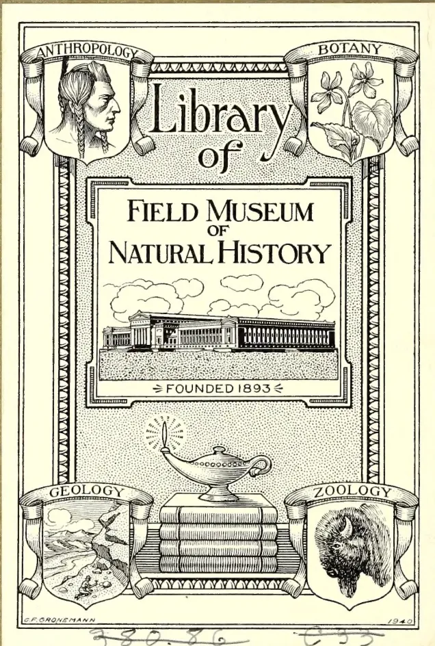
ANTHROPOLOGY
BOTANY
Library of
FIELD MUSEUM OF NATURAL HISTORY
FOUNDED 1893
GEOLOGY
ZOOLOGY
C.F. GRONEMANN 1940
380.86 655
This is a detailed black and white illustration of a book cover for the 'Library of the Field Museum of Natural History'. The cover is framed by a decorative border. At the top, two scrolls are labeled 'ANTHROPOLOGY' and 'BOTANY'. Between them is a profile portrait of a Native American man. The central text reads 'Library of' in a large, stylized font, followed by 'FIELD MUSEUM OF NATURAL HISTORY' in a bold, serif font. Below this is a drawing of the museum's building with clouds in the background. A banner below the building states 'FOUNDED 1893'. At the bottom, two scrolls are labeled 'GEOLOGY' and 'ZOOLOGY'. Between them is a stack of books with a lit oil lamp on top. The artist's signature 'C.F. GRONEMANN' is at the bottom left, and the year '1940' is at the bottom right. Handwritten numbers '380.86' and '655' are written across the bottom of the illustration.
Digitized by the Internet Archive
in 2014
https://archive.org/details/tropicalagricul391912ceyl
This image shows a blank, aged, cream-colored page, likely an endpaper or flyleaf from an old book. The paper has a slightly textured appearance with some minor discoloration and faint smudges, particularly along the right edge. There is no text or other markings on the page.Issued free to Members, C.A.S.
For Rules &c, see page 1.
To non-members Re. 1 per copy.
Or Rs. 10 per annum.
REGISTERED AS A NEWSPAPER.
Vol. XXXIX, No. 1.
NEW SERIES.
JULY, 1912.
THE
[Founded by J. FERGUSON, C.M.G., F.R.A.S., F.R.C.I., in 1881.]
AND
OF THE
With a Supplement.
| PAGE. | |
|---|---|
| A Rubber Catechism | 1 |
| The Future of Rubber Prices | 3 |
| Rubber Trees in Times of Drought | 4 |
| Hevea in Java | 5 |
| A Million Acres of Plantation Rubber | 7 |
| The Coconut and its Commercial Uses | 8 |
| A Visit to the First Indigo Factory in Ceylon | 18 |
| Statement of Actual Results of Indigo Manufacture at Lagos Estate | 20 |
| Edible Products.—Paddy Cultivation in Ceylon during the XIXth Century, 21; The Pa'myra Palm and the Value of its Nuts, 25; The Culture of Maize, 25; Cultivation and Preparation of Ginger, 26; Yams, 32; | 21-36 |
| Timbers.—Felling Trees and Blowing Stumps with Dynamite, 37; On the Production of Seed for Forest Trees, 38 | 37-39 |
| Horticulture.—Hints on Exhibiting | 39-44 |
| Plant Sanitation.—Pink Disease in Java | 44-45 |
| Live Stock.—Poultry Notes, 46; Home Remedies for Live Stock, 48 | 46-54 |
| Scientific Agriculture.—The Phosphate Nutrition of Plants, 54; The Direct Assimilation of Inorganic and Organic Forms of Nitrogen by Higher Plants, 55; Is Humus a Direct Source of Carbon for the Higher Green Plants? 56 | 54-56 |
| Education.—Courses in Agricultural Colleges | 56-60 |
| Miscellaneous.—The Status and Future of the American Agronomist, 61; Development of Agriculture in Kamerun, 67; Agricultural Exports from Zanzibar in 1910, 67; The Imperial Biological Agricultural Institute at Amani, German E. Africa, 68; Philippine Expositions, 69 | 61-70 |
| Correspondence.—Plantation Rubber Estimates | 71 |
| Supplement | 73-96 |
The Index will be found at the end of the Magazine.
Colombo:
A. M. & J. FERGUSON.
Important for
every Planter.
Important for
every Planter.
IN THE FORM OF
SULPHATE OF POTASH:— Best for Sugar-cane, Tobacco,
Tea, Cocoa, and all kinds of
fruit.
MURAITE OF POTASH:— Best for Maize, Rice, India-
rubber, Coffee,
OR
KAINIT:— Best on light soils as it con-
serves the moisture in the
soil.
IS AN
Indispensable Plant Food and should
be included in every Rational Manure Mixture.
POTASH not only increases the yields of all crops, but
improves the quality, and so it is to every
Planter's interest to include Potash in his manure mixture.
All information in regard to Manuring and Pamphlets free
on application to
Freudenberg & Co., Colombo,
AGENTS FOR CEYLON,
or to KALISYNDIKAT, G.m.b.H.,
Berlin, S.W. 11,
Dessauerstrasse 28-29.
| PAGE. | PAGE. | ||
|---|---|---|---|
| Editorials, Lectures, Original Articles, &c:— | Edible Products:—(Contd.) | ||
| Indigo Factory, First in Ceylon, A Visit to—R. H. Lock ... | 18 | Palmyra Palm and the Value of its Nuts, ... | 25 |
| Indigo Manufacture at Lagos Estate, Kalutara, Actual Results.—Baron Schrotty de Schrottzynski ... | 20 | Yams ... | 32 |
| Paddy Cultivation in Ceylon during the 19th Century.—E. Elliott ... | 21 | Timbers:— | |
| Pink Disease in Java.—T. Petch ... | 44 | Dynamiting Trees and Stumps ... | 37 |
| Plantation Rubber Estimates ... | 71 | Felling Trees with Dynamite ... | 37 |
| Poultry Notes.—P. A. V. ... | 46 | Forest Trees, On the Production of Seed for ... | 38 |
| Rubber Catechism, A.—R. H. Lock... | 1 | Production of Seed for Forest Trees ... | 38 |
| Visit to First Indigo Factory in Ceylon.—R. H. Lock ... | 18 | Seed for Forest Trees, Production of Stumps, Blowing, with Dynamite ... | 37 |
| Gums, Resins, Saps and Exudations:— | Horticulture:— | ||
| Catechism, A Rubber ... | 1 | Exhibiting, Hints on ... | 39 |
| Drought, Rubber Trees in Times of ... | 4 | Hints on Exhibiting ... | 39 |
| Future of Rubber Prices ... | 3 | Plant Sanitation:— | |
| Hevea in Java ... | 5 | Java, Pink Disease in.—T. Petch ... | 44 |
| Java, Hevea in ... | 5 | Pink Disease in Java.—T. Petch ... | 44 |
| Million Acres of Plantation Rubber... | 7 | Live Stock:— | |
| Plantation Rubber, A Million Acres of do do Estimates ... | 71 | Home Remedies for Live Stock ... | 48 |
| Prices, Rubber, the Future of ... | 3 | Poultry Notes ... | 46 |
| Rubber Catechism, A. ... | 1 | Remedies, Home, for Live Stock ... | 48 |
| „ Plantation, Million Acres of... | 7 | Scientific Agriculture:— | |
| „ Prices, Future of ... | 3 | Carbon, Is Humus a Direct Source of, for the Higher Green Plants ... | 56 |
| „ Trees in Times of Drought ... | 4 | Nitrogen, The Direct Assimilation of Inorganic and Organic Forms of, by Higher Plants ... | 55 |
| Oils and Fats:— | Phosphate Nutrition of Plants ... | 54 | |
| Coconut, The, and its Commercial Uses | 8 | Education:— | |
| Commercial Uses of the Coconut ... | 8 | Agricultural Colleges, Courses in ... | 56 |
| Dye Stuffs:— | Miscellaneous:— | ||
| Ceylon, First Indigo Factory in ... | 18 | Agricultural Exports from Zanzibar in 1910 ... | 67 |
| Indigo Factory in Ceylon, First ... | 18 | Agriculture, Development of, in Kamerun ... | 67 |
| Indigo Manufacture at Lagos Estate.—Baron Schrotty de Schrottzynski... | 20 | American Agronomist, Status and Future of ... | 61 |
| Lagos Estate, Indigo Manufacture.—Baron Schrotty de Schrottzynski | 20 | Development of Agriculture in Kamerun ... | 67 |
| Edible Products:— | Future of the American Agronomist | 61 | |
| Ginger, Cultivation and Preparation of ... | 26 | Imperial Biological Agricultural Institute at Amani, German E. Africa | 68 |
| Maize, The Culture of ... | 25 | Kamerun, Development of Agriculture in ... | 67 |
| Paddy Cultivation in Ceylon during the 19th Century ... | 21 | Philippine Expositions ... | 69 |
| Status of the American Agronomist | 61 | ||
| Zanzibar, Agriculture Exports in 1910 | 67 | ||
| Correspondence:— | |||
| Plantation Rubber Estimates ... | 71 |
| PAGE. | PAGE. | ||
|---|---|---|---|
| Original Articles, &c., :— | Palms :— | ||
| All-Ceylon Exhibition ..... | 89 | Beetles on Coconut Palms, Protection from ..... | 78 |
| Coconut Planting in Ceylon and Malaya ..... | 75 | Ceylon and Malaya, Coconut Planting in ..... | 75 |
| Commercial Synthetic Rubber ..... | 92 | Coconut Palms, Protection of, from Beetles ..... | 78 |
| Ceylon's only Indigo Estate ..... | 73 | Planting in Ceylon and Malaya ..... | 75 |
| Exhibition, All-Ceylon ..... | 89 | Malaya, Coconut Planting in Ceylon and ..... | 75 |
| Indigo Estate, Visit to Ceylon's only ..... | 73 | Palm Sap Industry of the Philippines ..... | 88 |
| Indigo Production in Ceylon ..... | 86 | ||
| Leaf Manure ..... | 79 | ||
| New Tapping Knife, Mr. Wickham's ..... | 83 | ||
| Synthetic Rubber ..... | 92 | ||
| Tapping Knife, Mr. Wickham's New ..... | 83 | ||
| Rubber :— | Edible Products :— | ||
| Artificial Rubbers ..... | 96 | Avocado Pear, The ..... | 81 |
| Ceara Rubber Notes from South Coorg ..... | 92 | Coconut Butter; Oleoline ..... | 76 |
| Portuguese East Africa, Rubber in ..... | 86 | Mangoes, Canning ..... | 80 |
| Seagumite—Rubber Substitute ..... | 96 | Oleoline ..... | 76 |
| South Coorg, Ceara Rubber Notes from ..... | 92 | Papaya as a Digestive ..... | 83 |
| Synthetic Rubber, Professor Perkin's Discovery ..... | 92 | ||
| Sea-fish, Rubber from ..... | 96 | ||
| Tapping Knife, Mr. Wickham's New ..... | 83 | ||
| Wickham's New Tapping Knife ..... | 83 | ||
| Tea :— | Dyes &c. :— | ||
| Japanese Tea Trade ..... | 87 | Indigo Estate, Ceylon's Only ..... | 73 |
| Russia, Tea Growing in ..... | 87 | Production in Ceylon ..... | 86 |
| Sumatra, Tea Growing in ..... | 96 | ||
| Oils :— | Drugs and Medicinal Plants :— | ||
| Camphor Production, Growth of ..... | 79 | Cinchona and Quinine, Java ..... | 84 |
| Copra Drier, A Steam ..... | 77 | Quinine and Cinchona, Java ..... | 84 |
| Palm Sap Industry of the Philippines ..... | 88 | ||
| Steam Copra Drier ..... | 77 | Scientific Agriculture :— | |
| Leaf Manure ..... | 79 | ||
| Nitrogen Fertilizer, A ..... | 86 | ||
| Miscellaneous :— | |||
| All-Ceylon Exhibition ..... | 89 | ||
| Exhibition, All-Ceylon ..... | 89 | ||
| Kerosene and Mosquitoes ..... | 85 | ||
| Mosquitoes and Kerosene ..... | 85 |
Issued free to Members, C.A.S.
For Rules &c, see page I.
To non-members Re. 1 per copy.
Or Rs. 10 per annum.
REGISTERED AS A NEWSPAPER.
Vol. XXXIX. No. 2,
NEW SERIES.
AUGUST, 1912.
THE
[Magazine of the Ceylon Agricultural Society.]
With a Supplement.
| PAGE. | |
|---|---|
| Two Ceylon Problems ..... | 97 |
| Synthetic Rubber ..... | 101-105 |
| Fungoid Diseases of Cultivated Plants ..... | 103 |
| Use of Explosives in Agriculture ..... | 107 |
| Fertility of the Soil ..... | 108 |
| Progress of Horticultural Science ..... | 108 |
| Bee Warfare ..... | 110 |
| Plantation Vs. Wild Rubber ..... | 111 |
| Rubber Production considered in relation to Health ..... | 111 |
| Exhibits from the All-Ceylon Exhibition ..... | 112 |
| Education in Rural Schools ..... | 115 |
| Tussore Silk Industry in Deccan ..... | 117 |
| Paddy Cultivation in Ceylon: by E. Elliott ..... | 118 |
| Yellow Tobacco and Turkish Tobacco ..... | 125 |
| Ceylon Agricultural Society: Minutes of Annual Meeting ..... | 127 |
| Mosaic Disease of Tobacco ..... | 127 |
| University Education for the Tropics and Colonies ..... | 128 |
| Problem of Increased Prices ..... | 130 |
| C.A.S. Report and Accounts for 1911-1912 ..... | 131 |
| Properties and Manufacture of Rubber ..... | 140 |
| Rice Industry of Burma ..... | 140 |
| History of Garden Implements ..... | 141 |
| Nitrates in the Soil ..... | 144 |
| Funtumia Rubber ..... | 145 |
| Rice in Travancore ..... | 146 |
| Seed Production ..... | 147 |
| Mr. Herbert Wright on Rubber ..... | 149 |
| Plantation Rubber and Preparation ..... | 150 |
| Cotton in the Colonies ..... | 150 |
| American Upland Cotton ..... | 152 |
| Effects of Different Proportions of Lime and Magnesia in some Soils ..... | 163 |
| Cacao Cultivation (No. XXVII) ..... | 164 |
| Miscellaneous.—Solomon Islands "Guada" Bean as a Vegetable, 103; Protection of Indian Cattle, 109; Children's Gardens, 109; American Agricultural Colleges, 109; Tobacco in Siam, 112; Poultry Breeds and Averages, 115; Cotton Forecasts, 115; The Giant Orchid, 130; World's best known fruit: The Banana, 139; Water Lifting, 145; Timber Industry of the Dutch Netherlands, 161; Agriculture in the Leeward Islands, 161; Rubber in Brazil, 164 | |
| Correspondence.—Sinhalese Labour on Estates, 102; Some Facts about Camphor, 166 | |
| Supplement ..... |
Colombo:
A. M. & J. FERGUSON.
Important for
every Planter.
Important for
every Planter.
IN THE FORM OF
SULPHATE OF POTASH:— Best for Sugar-cane, Tobacco,
Tea, Cocoa, and all kinds of
fruit.
MURAITE OF POTASH:— Best for Maize, Rice, India-
rubber, Coffee,
OR
KAINIT:— Best on light soils as it con-
serves the moisture in the
soil.
IS AN
Indispensable Plant Food and should
be included in every Rational Manure Mixture.
POTASH not only increases the yields of all crops, but
improves the quality, and so it is to every
Planter's interest to include Potash in his manure mixture.
All information in regard to Manuring and Pamphlets free
on application to
Freudenberg & Co., Colombo,
AGENTS FOR CEYLON,
or to KALISYNDIKAT, G.m.b.H.,
Berlin, S. W. 11,
Dessauerstrasse 28-29.
| PAGE. | PAGE | ||
|---|---|---|---|
| Original Articles, &c., :— | Tea :— | ||
| Agriculture, Explosives in | 169 | Beetles in Tea Chest Wood | 184 |
| " in China | 180 | Estates and Soil Exhaustion | 178 |
| " Native | 170 | Explosives in Tea Planting | 169 |
| " Our New Director of | 170 | Green Tea in Russia | 192 |
| Ceylon, Indigo from | 177 | Russia, Green Tea in | 192 |
| Ceylon's Palm Products... | 172 | Soil Exhaustion and Tea Estates | 178 |
| China, Agriculture in | 180 | Tea Chest-Wood Beetles | 184 |
| Ergite, A New Explosive | 170 | Tea Planter and Secrets yet to Learn | 184 |
| Explosive, A New | 170 | ||
| Explosives in Agriculture | 169 | Palms :— | |
| Indigo from Ceylon | 177 | Ceylon's Palm Products | 172 |
| Lyne, Mr. R. N. | 170 | Coconut Planting, Explosives in | 169 |
| Mocha Rubber Smoking Apparatus | 177 | Coconut Planting, Irrigation in | 174 |
| Native Agriculture | 170 | Coconuts, Inland Planting of | 173 |
| Palm Products, Ceylon's | 172 | Inland Planting of Coconuts | 173 |
| Plantation Rubber, Smoke Curing for | 177 | Irrigation in Coconut Planting | 174 |
| Philippines, Notes from the | 189 | Palm Products of Ceylon | 172 |
| Rubber, Smoke Curing for Plantation | 177 | ||
| Small Farming a Science | 186 | Edible Products :— | |
| Smoke-Curing for Plantation Rubber | 177 | Cherimoyer, The | 175 |
| Wickham's Rubber Smoking Ap- | 177 | Cocoa Valorization, Failure of | 188 |
| paratus | 177 | Desiccated Cocanut | 172 |
| Papaya, Cultivation of the | 174 | ||
| Vanilla Crops, World's | 184 | ||
| Rubber :— | |||
| Artificial Rubber | 189 | Dyes &c. :— | |
| Bark Renewal Periods | 191 | Indigo and Rubber | 177 |
| Borneo Rubber | 176 | " from Ceylon | 177 |
| Brazil, Planting in | 171 | Rubber and Indigo | 177 |
| Conferences at New York | 179 | ||
| Eastern Tapping Experiments | 190 | Miscellaneous :— | |
| Explosives in Rubber Planting | 169 | Agriculture in China | 180 |
| F. M. S., Rubber in | 181 | Assam, Eri Silk in | 183 |
| Graphite Applied to Rubber | 184 | Beeswax from Esparto Grass | 184 |
| Indigo and Rubber | 177 | Braid Manufactures' Profits | 188 |
| Mindanao, Tapping in | 187 | Explosives in Agriculture | 169 |
| Mocha Smoking Apparatus | 177 | Ergite, A New Explosive | 170 |
| Smoke Curing | 177 | Eri Silk in Assam | 193 |
| South Coorg, Rubber in | 188 | Esparto Grass, Beeswax from | 184 |
| Synthetic Rubber | 189 | Graphite in Germany and Spain | 185 |
| Tapping and Bark Renewal Periods | 191 | Language of the Air | 187 |
| Experiments | 190 | Native Agriculture | 170 |
| " in Mindanao | 187 | New Director of Agriculture | 170 |
| Uganda, Rubber in | 188 | Philippines, Notes from the | 189 |
| Wickham's Smoking Apparatus | 177 | Rice Reaping Machine, A New | 180 |
| Small Farming a Science | 186 | ||
| PAGE. | PAGE. | ||
|---|---|---|---|
| Bananas as Food ... .. | 206 | Land Question in British West Africa ... | 204 |
| British West Africa, Land Question in | 204 | Macassar Oil ... .. | 194 |
| Bulletin of the Imperial Institute ... | 203 | Nicaraguan or Panama Cacao at Pera- deniya Experiment Station ... |
193 |
| Cacao, Nicaraguan, at Experiment Station, Peradeniya ... .. |
193 | Paddy Cultivation in Ceylon during the 19th Century ... .. |
235 |
| Cape Gooseberry ... .. | 208 | Paddy Plant Disease at Agalawatte ... | 195 |
| C.A.S. Progress Report No. 60 ... | 224 | Poultry Notes ... .. | 201 |
| Ceara Rubber ... .. | 198, 216 | Rothamsted, The Director of ... | 221 |
| „ „ „ New Disease of the Tree | 218 | Rubber Production in Malaya, Cost of... | 222 |
| Cocoa Work in the West Indies ... | 238 | Sago Palm, The ... .. | 221 |
| Coconut Palm, The ... .. | 209 | Sanguinary Insects of Zanzibar ... | 198 |
| „ „ Plantation, Laying out a ... | 199 | School Garden, The ... .. | 197 |
| Cost of Rubber Production in Malaya ... | 222 | Silk, World's Production in 1911 of ... | 196 |
| Cotton in India ... .. | 239 | St. Vincent Botanic Station Report for 1910-1911 ... .. |
223 |
| „ „ in Jamaica... .. | 217 | Sugarcane in Assam, 1912-13... .. | 207 |
| Cuban Tobacco ... .. | 215 | Synthetic Rubber, Dr. Strange's ... | 217 |
| Diseases of Paddy Plants at Agalawatte, Report on ... .. |
195 | Tobacco, Cuban ... .. | 215 |
| Diseases, New, of the Ceara Rubber Tree | 218 | Tropical Plant Fibres ... .. | 219 |
| Fibres, Tropical Plant ... .. | 219 | Rubber Ceara ... .. | 198, 216 |
| Guinea Grass ... .. | 208 | „ „ „ Tree, New Disease of the... | 218 |
| Imperial Institute Bulletin ... .. | 203 | Zanzibar, Insect Pests of ... .. | 197 |
| Insect Pests in Zanzibar ... .. | 197 | „ „ „ Sanguinary Insects of ... | 198 |
| Jute Crop of Assam, 1912 ... .. | 202 |
| PAGE. | PAGE. | ||
|---|---|---|---|
| Original Articles, &c., :— | Edible Products :— | ||
| Agriculture, Tropical College of ... | 255 | Papaya or Papaw ... | 264 |
| Ceylon, Electric Power in ... | 252 | Coconuts :— | |
| College of Agriculture, Tropical ... | 255 | Consols of the East ... | 245 |
| Corn-Growing, Fifty Years of ... | 253 | F.M.S., Coconuts in ... | 263 |
| Coconuts, Inland Planting of ... | 241 | Inland Planting of ... | 241 |
| do The Consols of the East... | 245 | Fibres :— | |
| Electric Power in Ceylon ... | 252 | Cotton Cultivation in Morocco ... | 263 |
| Ergite, The New Explosive ... | 243 | Morocco, Cotton Cultivation in ... | 263 |
| Fifty Years of Corn-Growing ... | 253 | Miscellaneous :— | |
| Inland Planting of Coconuts ... | 241 | Agricultural Reform, True Problem of ... | 244 |
| Oxalis Violacca, Report on ... | 243 | Agriculture in Perak ... | 256 |
| Rubber Curing Process, Wickham's ... | 244 | Corn-Growing, Fifty Years of ... | 253 |
| Tropical College of Agriculture ... | 255 | College of Agriculture, Tropical ... | 255 |
| Wickham's Rubber Curing Process ... | 244 | Eastern Rubber Plantations Appoint- ments to ... |
264 |
| Rubber :— | Electric Power in Ceylon ... | 252 | |
| Ceylon, Rubber News from ... | 251 | Ergite, The New Explosive ... | 243 |
| Curing Process, Wickham's ... | 244 | Fifty Years of Continuous Corn- Growing ... |
253 |
| Diseases in F.M.S. ... | 258 | Lalang, Eradication of ... | 243 |
| Eastern Rubber Plantations, Appoint- ments to ... |
264 | Oxalis Violacca, Report on ... | 243 |
| F.M.S., Pests and Diseases in ... | 258 | Perak, Agriculture in ... | 256 |
| F.M.S., Rubber in ... | 257 | Rhodesia, Tobacco Industry in ... | 264 |
| Future of Rubber ... | 255 | Rubber Plantations, Appointments to Eastern ... |
264 |
| Pests and Diseases in F.M.S. ... | 258 | Spanish Customs Duties... | 256 |
| Plantations, Appointments to Eastern ... | 264 | Tea—A Poison ... | 244 |
| Tapping, Wickham's Knife ... | 252 | Tropical College of Agriculture ... | 255 |
| Wickham's Curing Process ... | 244 | Tobacco Industry in Rhodesia ... | 264 |
| Wickham's Tapping Knife ... | 252 | ||
| PAGE. | PAGE. | ||
|---|---|---|---|
| Agents in Agricultural Improvements, Local Bodies as ... .. |
279 | International Association of Tropical Agriculture and Colonial Development |
316 |
| Agricultural Colleges for the Tropics ... | 277 | Introduction of Hevea Braziliensis into the East ... .. |
267 |
| " Improvements, Local Bodies as Agents in ... .. |
279 | Kapok Cotton ... .. | 303 |
| " Instruction and Demon- strations ... .. |
315 | Local Bodies as Agents in Agricultural Improvements ... .. |
279 |
| " Progress in Uganda ... | 300 | Maize ... .. | 305 |
| Agriculture, Co-operation in... .. | 273 | Mango, Dried ... .. | 304 |
| All-Ceylon Exhibition, The ... .. | 309 | Mind, The Prepared ... .. | 270 |
| Bandaragama Garden, The ... .. | 296 | Ostrich Farming in Australia ... .. | 304 |
| Burning Qualities of Maha Iluppalama Tobacco ... .. |
288 | Peradeniya Experiment Station ... .. | 298 |
| Cacao and New Methods of Curing, West African ... .. |
276 | Presentation of Exhibits at A.C.E. to Royal Botanic Garden Museum ... .. |
284 |
| Calf-Rearing Methods ... .. | 287 | Rabies Virus ... .. | 315 |
| Camphor from Dried Camphor Leaves... .. | 302 | Rainfall in Central Provinces, India ... .. | 306 |
| C.A.S. Meeting of 10th September .. | 289 | Rice (Paddy) Cultivation and Seed Selec- tion ... .. |
290 |
| " Meetings ... .. | 303 | Rubber in Trinidad ... .. | 307 |
| Competitions in Essays on "Vegetarian Diet" and "Evils of Animal Diet"... .. |
285 | Rubber Latices, Dr. Schidrowitz on ... .. | 299 |
| Co-operation in Agriculture ... .. | 273 | Seed Selection in Paddy Cultivation ... .. | 290 |
| Cotton for Dry Areas, Long Staple ... | 282 | Sesamum Crop in Bombay Presidency... .. | 312 |
| " Forecast for 1912 ... .. | 302 | Solomon's Judgment, A ... .. | 313 |
| " " , Bombay Presidency ... | 286 | Sugar Convention ... .. | 308 |
| Curing Cacao, New Methods of ... .. | 276 | Sugar, Dietic Value of ... .. | 317 |
| Dietic Value of Sugar ... .. | 317 | Sugarcane Crop Forecast, Bombay Presi- dency... .. |
287 |
| Disease of Tea, A New ... .. | 306 | Sugarcane Crop of the Punjab ... .. | 308 |
| Dried Mango ... .. | 304 | Tea Disease, A New ... .. | 306 |
| Dumbara Agricultural Society ... .. | 283 | Telfairia Seed ... .. | 278 |
| Durian, The ... .. | 266 | Termites or White Ants ... .. | 296 |
| Egg-Laying Competition ... .. | 311 | The All-Ceylon Exhibition ... .. | 309 |
| Essays, Two important Competitive ... | 285 | The Prepared Mind ... .. | 270 |
| Experiment Station at Peradeniya ... .. | 294 | Tobacco, Burning Qualities of Maha- iluppalama ... .. |
288 |
| Fertility of the Soil, The ... .. | 318 | " Flue Curing ... .. | 295 |
| Flue Curing Tobacco ... .. | 295 | " Planting in Ceylon ... .. | 266 |
| Funtumia Rubber in Southern Nigeria... .. | 271 | " " " Dumbara ... .. | 283 |
| Gold Medal Cinnamon ... .. | 283 | " " " Java ... .. | 278 |
| Groundnut Crop in the Bombay Presidency | 301 | Two Important Competitive Essays ... .. | 285 |
| Hevea Braziliensis into the East, Intro- duction of ... .. |
267 | Vanilla News ... .. | 312 |
| Hurricanes ... .. | 314 | Well Irrigation ... .. | 297 |
| White Ants or Termites ... .. | 296 |
| PAGE. | PAGE. | ||
|---|---|---|---|
| Original Articles, &c., :— | Tea :— | ||
| Diseases of the Rubber Tree ... | 321 | Ceylon, Tea Planting in ... | 335 |
| Hevea Experiments at Henaratgoda | 333 | Handling Tea in London ... | 343 |
| Nitrogen Fertiliser, A ... | 336 | Tea in London, Handling ... | 343 |
| Rubber Tree Diseases ... | 321 | „ Planting in Ceylon ... | 335 |
| Rubber :— | Edible Products :— | ||
| Burma, Rubber in ... | 340 | Banana Failure, Colossal ... | 339 |
| Consular Reports on Rubber ... | 344 | Colossal Banana Failure ... | 339 |
| Diseases of the Rubber Tree ... | 321 | Fruit-Growing Industry... | 336 |
| Fertilising of Rubber ... | 341 | Seychelles, Vanilla Industry of ... | 337 |
| Fomes Semitostus, Eradication of ... | 344 | Vanilla Industry of the Seychelles... | 337 |
| Henaratgoda, Rubber Tapping Experiments at ... | 333 | Vegetable Butter ... | 343 |
| Hevea Estates, Thinning out ... | 226 | Miscellaneous :— | |
| Nitrate of Soda for Rubber ... | 341 | Cinchona ... | 338 |
| Opening Rubber Estates... | 342 | Cinnamon ... | 338 |
| Rubber Estates, Opening ... | 342 | Coconut Warning, The ... | 338 |
| „ in Burma ... | 340 | Flies, Poison for ... | 336 |
| „ „ Java ... | 344 | Formalia as a Poison for Flies ... | 336 |
| „ „ Seychelles ... | 342 | Guano in Seychelles ... | 344 |
| „ „ Sumatra ... | 344 | Nitrogen Fertiliser, A ... | 336 |
| Rubber Tapping Experiments, Henaratgoda ... | 333 | Sapucaia Nut, The ... | 343 |
| Rubber Tree Diseases ... | 321 | Seychelles, Guano in ... | 344 |
| Tapping Experiments at Henaratgoda | 333 | Trees, Useful ... | 332 |
| Thinning out Hevea Estates ... | 326 | Useful Trees ... | 332 |
| PAGE. | PAGE. | ||
|---|---|---|---|
| Agricultural Co-operation in Great Britain, The Development of ... .. |
385 | Live Stock, Treatment of Common Wounds of ... .. |
398 |
| Agricultural Education in Madras ... .. | 368 | Mangifera Verticillata ... .. | 372 |
| " Improvements in Egypt, Cost of ... .. |
377 | Manure, Cost of Carting ... .. | 371 |
| Agriculture in Dundee ... .. | 394 | Measurement of Hevea, Girth ... .. | 355 |
| " " Nyasaland ... .. | 389 | Milch Cows, Feeding of Coconut Cakes to ... .. | 380 |
| " " Seychelles ... .. | 397 | Milk of Indian Buffaloes ... .. | 353 |
| All-Ceylon Exhibition, 1912 ... .. | 381 | " Yields ... .. | 384 |
| Analysis, Practical Value of Soil ... .. | 349 | New York Rubber Exhibition ... .. | 388 |
| Bee-keeping, Use of Queen Excluders in... .. | 360 | Nyasaland, Agriculture in ... .. | 389 |
| Bombay Crop Areas ... .. | 363, 378 | Ostrich Farming ... .. | 359 |
| Branching of Rice ... .. | 370 | " " at Coonamble ... .. | 348 |
| Breeding, Scientific ... .. | 350 | Paddy Cultivation, Seed in ... .. | 347 |
| British Association and Agriculture ... .. | 357 | " " Use of a Light Iron Plough in ... .. |
393 |
| Buffalo Milk, Indian ... .. | 353 | " Transplanting ... .. | 352 |
| Carting Manure, Cost of ... .. | 371 | Para, Hard Cured ... .. | 345 |
| Chinese Cabbage ... .. | 358 | Peradeniya, Presentations to ... .. | 360 |
| Classification of Rice ... .. | 361 | Plough in Paddy Cultivation, Use of a Light Iron ... .. |
393 |
| Coconut Cake, Feeding Milch Cows with " Pavilion, The ... .. |
380 353 |
Practical Value of Soil Analysis ... .. | 349 |
| Coffea Robusta ... .. | 380 | Presentations to Peradeniya ... .. | 360 |
| College of Tropical Agriculture ... .. | 391 | Production of Sulphate of Ammonia ... .. | 385 |
| Co-operation in Agriculture in Great Britain ... .. |
387 | Queen Excluders in Bee-Keeping, Use of ... .. | 360 |
| Cotton ... .. | 358 | Rainfall and Forests ... .. | 362 |
| " in Egypt ... .. | 379 | Rat Poisons ... .. | 399 |
| Crop Areas in Bombay ... .. | 363 | Rice, Classification of ... .. | 361 |
| " " in Nyasaland Protectorate 378, 389 | 389 | " Transplanting ... .. | 352 |
| Cultivation of Bananas ... .. | 369 | Root Disease in Hevea ... .. | 399 |
| Date Palm, Introduction into Ceylon of ... .. | 387 | Rubber Growing as a Village Industry... .. | 356 |
| " " Plantation, An Egyptian ... .. | 366 | " Producing Plant, a New ... .. | 383 |
| Dumbara Tobacco... .. | 357 | " Production and Consumption of ... .. | 382 |
| Eri Silk ... .. | 376 | " Root Disease in Hevea ... .. | 399 |
| Egyptian Agricultural Improvement ... .. | 377 | Scientific Breeding ... .. | 350 |
| " Date Palm Plantation, An ... .. | 366 | Seed, Cheap ... .. | 375 |
| Exhibition, All-Ceylon (1912) ... .. | 381 | " Hevea ... .. | 373 |
| Exports of Brazil in 1911 ... .. | 365 | " in Paddy Cu ivation ... .. | 347 |
| " of Plants to South Africa ... .. | 396 | Shea Butter ... .. | 352 |
| Forests and Rainfall ... .. | 362 | Sisal Hemp ... .. | 354 |
| Girth Measurements of Hevea ... .. | 355 | Soil Analysis, Practical Value of ... .. | 349 |
| Hard Cured Para ... .. | 345 | Soils in Relation to Geology and Climate ... .. | 364 |
| Hevea, Girth Measurement of ... .. | 355 | Sulphate of Ammonia, Production of .. .. | 385 |
| " Hard Cured Para ... .. | 345 | Tapping Toddy Palms ... .. | 392 |
| " Rubber Growing as a Village Industry ... .. |
356 | Thinning Out Hevea Estates ... .. | 363 |
| " Seed ... .. | 373 | Toddy Palm Tapping ... .. | 392 |
| Hollow Trees ... .. | 351 | Transplanting Early Rice ... .. | 352 |
| Introduction of Date Palm into Ceylon ... .. | 387 | Treatment of Common Wounds of Liv Stock... .. |
398 |
| Jute Crop of Bengal for 1912... .. | 383 | Tropical Agriculture, A College of ... .. | 391 |
| Lac Cultivation in Ceylon ... .. | 379 | Wounds of Live Stock, Treatment of Common ... .. |
398 |
| PAGE. | PAGE. | ||
|---|---|---|---|
| Rubber :— | Edible Products :—(Contd.) | ||
| Ceara Rubber in South India ... | 424 | Coffee Cultivation, Abolition of Java Government ... | 416 |
| Eastern Rubber in U.S.A. ... | 420 | Green Tea ... | 421 |
| Estimates, "Truth" on Rubber ... | 414 | Lime Juice Industry of Montserrat ... | 415 |
| French Industry, Protection of ... | 416 | Mango, A Nearly Seedless ... | 407 |
| Hevea Estates, Thinning Out ... | 410 | Toa Experiments in South India ... | 424 |
| Mindanao, Growing Rubber in ... | 414 | Tea, Green ... | 421 |
| Panama, Rubber Cultivation in ... | 421 | World's Production of Cocoa ... | 415 |
| Peru, Rubber in ... | 418 | ||
| Protection of French Industry ... | 416 | Miscellaneous :— | |
| Rubber Exhibition, New York ... | 420 | Agriculture, Mechanical Traction in ... | 416 |
| " in Mindanao ... | 414 | Algerian Vegetable Fibre ... | 422 |
| " " Panama ... | 421 | Bulletin of the Imperial Institute... | 420 |
| " " Peru... ... | 418 | Coolies and their Diet ... | 418 |
| Thinning Out Hevea Estates ... | 410 | Coorg, Planting in ... | 424 |
| "Truth" on Rubber Estimates ... | 414 | Fertility of Soil ... | 413 |
| Fibre, Algerian Vegetable ... | 422 | ||
| Oils :— | Lime Juice Industry of Montserrat ... | 415 | |
| Copra, Manufacture of ... | 401 | Management of Uganda Plantations ... | 408 |
| Drying Houses for Copra ... | 401 | Manures, Sterilization of ... | 419 |
| Eucalyptus, Growing of, in Simla ... | 418 | Mechanical Traction in Agriculture ... | 416 |
| Soya Beans as a Possible Rival to Coconuts ... | 417 | Monazite in Travancore... | 418 |
| Planting in Coorg ... | 424 | ||
| Palms :— | Soil Fertility, Question of ... | 413 | |
| Coconuts, Cultivation of... ... | 412 | Sterilization of Manures... | 419 |
| do , Soya Beans as a Rival to ... | 417 | Uganda Plantations, Management of ... | 408 |
| Estimates for Opening Coconut Estates ... | 412 | Vegetable Fibre, Algerian ... | 422 |
| Sago Palm, The ... | 417 | Victoria Regia on the Amazon ... | 409 |
| Water Lily of Brazil ... | 409 | ||
| Edible Products :— | |||
| Banana Food Products Manufacture in Jamaica ... | 423 | ||
| Cocoa, World's Production of ... | 415 |
| PAGE. | PAGE. | ||
|---|---|---|---|
| Aeration of soil and Plant Growth ... | 447 | Intensive Poultry Farming ... | 464 |
| Agri. and Industrial Show at Ellore ... | 472 | Is the Earth Shrinking? ... | 471 |
| Co-operation in England ... | 436 | Kind Treatment of Cows ... | 430 |
| America, Ceylon Products in ... | 426 | Land and Water on the Earth's Surface | 451 |
| American Upland Cotton in Ceylon ... | 466 | Lantana, Destruction of ... | 451 |
| Application of Manures in South India | 438 | Latex in Plants ... | 440 |
| Artificial Manure, A New ... | 442 | Lime for Tobacco Land ... | 441 |
| Bengal Rice ... | 451 | , The ... | 443 |
| Bignonia Magnifica (Illustrated) ... | 449 | Maize in Australia ... | 462 |
| Broom Corn Fibre Industry ... | 474 | Mangoes, Ceylon ... | 431 |
| Burma Agricultural Department Report | 437 | Mangrove Tannin... .. | 427 |
| Cambodia Cotton Experiments in Bom- | Manure, A New Artificial | 442 | |
| bay Presidency ... | 448 | Coconuts ... | 444 |
| Ceara Rubber ... | 442 | Mesopotamia Irrigation Works ... | 445 |
| Ceylon Gooseberry (Illustrated) ... | 430 | Mexican Cotton Boll-Weevil... .. | 476 |
| Mangoes ... | 431 | Moon and the Weather ... | 478 |
| Products in America ... | 426 | Paddy as a Village Industry ... | 475 |
| Coagulation of Funtumia ... | 469 | Paper-making in Burma ... | 478 |
| Coconut Manuring ... | 444 | Para as a Village Industry ... | 475 |
| Palm Insects in Trinidad ... | 446 | Seed Supply ... | 471 |
| Planting in the West Indies ... | 439 | Peasant Proprietorship in Holland ... | 459 |
| Coconuts in Malaya ... | 469 | Potato-Drying in Germany ... | 460 |
| Committee of Agricultural Experiments, | Poultry Farming, Intensive ... | 464 | |
| Peradeniya ... | 453 | Problems of Hevea ... | 432 |
| Co-operation in England, Agricultural | 436 | Pruning Cuts, Dressing of ... | 433 |
| Cotton Congress in Egypt ... | 464 | Rice Crop Prospects, 1912-13 ... | 445 |
| Experiments in Bombay Presi- | in the Philippines ... | 470 | |
| dency, Cambodia ... | 448 | Rotation of Crops in Jaffna ... | 463 |
| in India ... | 458 | Rubber in the F.M.S. ... | 467 |
| in the Philippines ... | 470 | Sesamum ... | 447 |
| Reports ... | 440 | Sewage-sick Soils ... | 460 |
| Cows and Kind Treatment ... | 430 | Silk Culture ... | 465 |
| Cultivation of Lac in India ... | 477 | Soil Aeration on Plant Growth, Effect of | 447 |
| Destroying Flies ... | 476 | Some Uses for Sugar ... | 472 |
| Destruction of Lantana ... | 451 | Soy Beans ... | 461 |
| Dressing of Pruning Cuts ... | 433 | Sugar Statistics ... | 461 |
| Dry Farming, Origin of ... | 474 | Sweet Pctatoes ... | 450 |
| Earth Shrinking, Is the? ... | 471 | Tannin from Mangrove, Manufacture of | 427 |
| Earth's Surface, Land and Water on ... | 451 | Thinning Out Hevea Estates ... | 428 |
| Eden, The Garden of ... | 434 | Tobacco ... | 474 |
| Fermentation of Cigar Tobacco ... | 452 | , Fermentation of Cigar ... | 452 |
| Funtumia, Coagulation of ... | 469 | Land, Lime for ... | 441 |
| Garden of Eden, The ... | 434 | Reports ... | 440 |
| Gooseberry, Ceylon ... | 430 | Trinidad, Coconut Palm Insects in ... | 446 |
| Ground-nut Yields ... | 459 | Typhoons ... | 446 |
| Hevea Estates, Thinning out ... | 428 | University of Bristol and Agriculture ... | 473 |
| Problems ... | 432 | Veterinary Toxicology ... | 463 |
| Holland, Peasant Proprietorship in ... | 459 | Village Industries: Paddy and Para ... | 425 |
| Imperial Institute Work for 1911 ... | 462 | Water and Land on the Earth's Surface | 451 |
| Influence of Geographical Conditions upon | Wickham Smoker, The (Illustrated) ... | 464 | |
| Japanese Agriculture ... | 479 | Yield of Groundnuts ... | 459 |
| PAGE. | PAGE. |
|---|---|
| Agriculture at the British Association 495 | Preservation of Fish, A New Process of 504 |
| Artificial Rubber Driers on Estates 503 | Red Camphor Oil as an Insecticide 504 |
| Bamboo, Paper Pulp from ... 499 | Ripe Fruit ... 497 |
| Basic Slag... ... 486 | Rolling and Steaming Tea ... 502 |
| Bees in Coffee Plantations, Value of 498 | Rubber, A New Source of ... 492 |
| Botanical Garden for Sumatra ... 488 | Coagulation: Michie-Golledge |
| British Guiana Scientist for Mauritius 487 | Process ... 494 |
| Bud the Mango Successfully, How to 499 | Driers on Estates, Artificial 503 |
| Camphor Oil as an Insecticide, Red 504 | Experiments in Burma ... 487 |
| Cocoa-Butter Substitutes ... 496 | in Bolivia ... 500 |
| Coconut Cultivation ... 501 | in Mozambique ... 493 |
| Copra Duty-free in Finland ... 502 | in Nigeria, Census of ... 488 |
| Cost in Rubber Plantations ... 482 | in Queensland ... 483 |
| Crown Colonies, A New Product | Plantation Costs ... 482 |
| Suggested for ... 495 | Scoring, Smoked ... 487 |
| Dynamite Farming ... 481 | Stumps, Transporting ... 488 |
| Estimation of Water in Latex—A New | Thinning Out Hevea Estates 491 |
| Patent ... 489 | , Water in Latex ... 489 |
| Eucalyptus Oil, Manufacture of ... 488 | Silviculture in the Tropics ... 490 |
| Farming by Dynamite ... 481 | Smoked Rubber Scoring ... 487 |
| Fish in the Punjab ... 486 | Steaming and Rolling Tea ... 502 |
| , A New Process of Preservation of 504 | Tea in 1911-12... ... 484 |
| Fruit from India, A New ... 487 | The Most Southern Industry ... 504 |
| , Ripe ... 497 | Thinning out Hevea Estates ... 491 |
| Jaffna Tobacco and Mr. Freeman's | Tobacco and Mr. Freeman's Report, |
| Report ... 486 | Jaffna ... 486 |
| Mango Budding ... 499 | Transport of Rubber Stumps ... 488 |
| New Product Suggested for Crown | Trinidad, Planting Prospects in ... 485 |
| Colonies ... 495 | Tube Well, Novel ... 504 |
| Oxalis Violacea ... 503 | Value of Bees in Coffee Plantations 498 |
| Paper Pulp from Bamboos ... 499 | Water in Latex, Estimation of ... 489 |
| Penguin—The Most Southern Industry 504 | Wattle Culture ... 498 |
| Planting in Uganda ... 496 | Well, A Novel Tube ... 504 |
| , Prospects in Trinidad ... 485 |
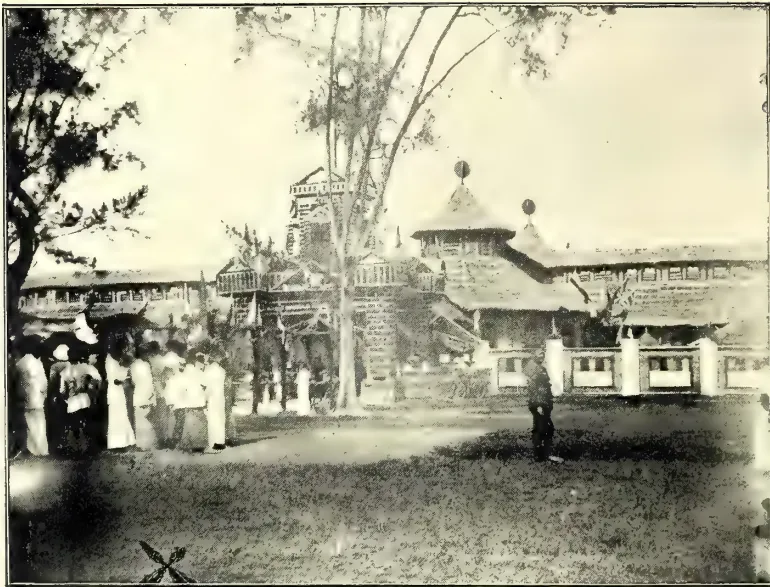
Photo by R. H. Ferguson.
ALL-CEYLON EXHIBITION, 1912, MAIN ENTRANCE AND MAIN BUILDING.
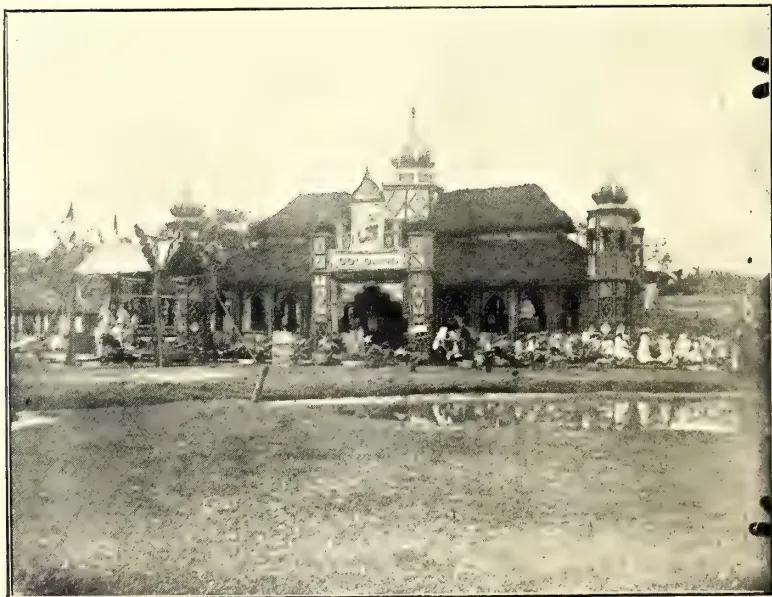
Photo by R. H. Ferguson.
ALL-CEYLON EXHIBITION, 1912. COLOMBO PAVILION.
5
281
111
THE
TROPICAL AGRICULTURIST
AND
MAGAZINE OF THE
CEYLON AGRICULTURAL SOCIETY.
VOL. XXXIX,
COLOMBO, JULY 15TH, 1912,
No. 1.
A RUBBER CATECHISM.
It is thought that the following answers to a series of questions relating to the rubber industry of Ceylon, which were recently put to us by a correspondent, may be of interest to readers of the Tropical Agriculturist. It was explained that they represent only an expression of our personal opinion which is naturally open to correction, and we would cordially invite such correction from any of our readers who do not happen to agree with us on any of the points here dealt with. It will be seen that we were subjected to a pretty searching examination.
Question.—Is there still a large area of land which can be applied to the cultivation of Hevea? Are the planters disposed to continue that cultivation?
Answer.—A large part of the best rubber land is now taken up, but extension is still proceeding steadily.
Q.—What is the present tendency with regard to the number of trees planted per acre?
A.—The tendency is to reduce the number of trees planted. The number now recommended is about 150 per acre, but varies according to the nature of the land.
Q.—Are there any diseases of Hevea and are they dangerous in Ceylon? Can they be combatted easily? Do you think that there are other countries worse situated on this account?
A.—The known diseases of Hevea in Ceylon and their treatment are described in the Circulars of the Government Mycologist. With proper care no serious danger is anticipated from any known disease in Ceylon.
Q.—Is it true that too vigorous tapping is injurious to the trees? Has such a fact been noticed in Ceylon?
A.—Trees can certainly be damaged by overtapping. With high prices the tendency in recent years has been to overtap. Steps are now being taken to reduce the rate of tapping on many estates.
52536
2[JULY, 1912.Q.—Which is the period of the year during which the tapping gives the greatest yield, and during which in consequence the export is greatest?
A.—The latex flows most freely towards the end of the year, i.e., in October, November, December, and in January.
Q.—What is the average production of a tree according to its age; and for an acre of land planted with Hevea?
A.—We have no means of estimating the average. 3 lbs. a tree and 400 lbs. an acre are regarded as good yields at 8—9 years of age.
Q.—Is it true that the production of rubber increases with the age of the tree? In what proportion? Is it known at what age the maximum production is reached?
A.—Yes, with careful tapping. The age-limit of increase has not yet been reached in Ceylon. An increase from lb. at 5 years to 4 lbs. at ten years may be anticipated with wide planting.
Q.—Which are the general ideas about labour in rubber plantations? What is the rate of pay? Does it not increase? Is it true that in that case the tea planters will be ruined? If so what is the limit which can be reached without damage?
A.—In Ceylon the efficiency of tapping will probably be so much increased, that, with new sources of labour, tea and rubber will alike continue to pay handsomely.
Q.—Does the production of rubber by the important companies agree with previous estimates?
A.—Estimates are generally on the conservative side and are often exceeded.
Q.—What do you think of the average cost of production of rubber taking a pound as a basis? Does it not exceed previous estimates and tend to increase? Is this caused by the rate of pay or by the scarcity of coolies?
A.—We do not think that the average cost of production is likely to increase.
Q.—Please tell me which are the best publications regarding the plantations, statistics, exportations, &c.
Q.—Is wastage owing to loss of trees foreseen by the rubber planting companies? Is it possible to form an estimate of the future loss of trees; as well as the percentage of trees likely to be lost by disease?
A.—We are disposed to think that the percentage is not likely to be serious.
Q.—What are the estimates of production for the years to come?
A.—Please see Ferguson's Directory.
(From the India Rubber World, Vol. XLVI., No. 1., April 1, 1912.)
A London correspondent of the "Gummi-Zeitung" in dealing recently with the above subject, remarks that the English rubber market, since the beginning of 1912, has displayed unusual steadiness, coupled with a moderate amount of business. He adds that plantation sorts (the production of which for the current year is estimated at 22,000 tons) are at a high-water mark, which has been fluctuating within narrow limits above 5 shillings ($1.2163), or about 8 pence (16.21 cents) higher than the best wild rubber, a visible proof being thus afforded of the preference of consumers for plantation rubber. The quantity of this class (by no means small) offered at the last London auctions all met with buyers at full prices.
Such, it is remarked, is the tenor of brokers' report, and of the plantation companies to their shareholders,
"But," the writer asks, "what have we to expect for the immediate future? A definite fall in prices, or decided advance? A new rise or a drop? As high as 5s. 4d. has been paid on several occasions for light plantation crepe. And in spite of all this, the selling prices of automobile and bicycle tires have been considerably reduced by the best makers. How can these facts be reconciled?"
"If we inquire, in Mincing Lane, the reason of the steady high level of prices, we are told: 'It's the persistent inquiries from the consumers.' So it is consumption that is itself keeping up the market? And yet it is known that at present only the most urgent requirements are being covered. Prices are too high—much too high, and consumers would prefer to
buy nothing, were they not obliged to do so."
"The supply in all kinds of rubber is important, and has increased in far greater proportion than the growth of the rubber goods industry. Thus it is only to a very limited extent that consumption has to bear the blame of the present high price of the raw material."
With regard to the present attitude of speculators, the following interesting suggestion is put forward:
"From the steadiness of the market, we might be tempted to believe that speculation, which previously was so successful in its manipulations, was asleep or had withdrawn. Such is, however, a vain hope. The probability is rather that those interested in a rise or a fall are acting on about the same principle and are now balancing each other, but that both factors on account of the risk and in the present difficult monetary situation, are deterred from risking a coup in one or the other direction. The time is, however, approaching when the one factor must give away to the other, and there is every prospect that in this measuring of forces, those wanting a rise will be vanquished. The rubber manufacturing industry, which is capable of exercising a greater influence upon the crude rubber market than it has hitherto done, should not be satisfied until the price for Para is brought below 4 shillings a pound. For the speculative element is not idle."
Looking at the matter from another point of view, it is asked, if in previous years, the crude rubber trade was doing very well when wild rubber of South American and African origin was selling far below present prices, why could it not do the same to-day. It is added:
"The complaints as to the alleged increasing difficulty of obtaining rubber from distant forests cannot be substan-
Gums, Resins,4[JULY, 1912.tiated. In the Amazon territory and the Congo, improved road and rail construction, removal of duties and other administrative measures, have afforded support to the rubber growing industry, in view of the growing competition from plantation rubber. On the other hand, it is admitted that Eastern plantations would pay handsomely at a price of 2s. to 2s. 6d. for their product. According to their own declaration, a pound of pure rubber only costs the sound plantation about 1s. 6d. The profits of plantation cultivation on this scale, upon the above yearly quantity of 22,000 tons, runs into the hundred millions of marks."
Finally, the attention of the rubber industry is called to the fact that the stock of rubber at points of export and import (apart from the quantity afloat), is, in the writer's views, enormous. Reference is made to receipts at Para from the interior, of 4,000 tons up to February 24. There were at time of writing, over 1,000 tons of plantation rubber in London for the approaching auctions while 500 tons of Congo and other rubber were listed for the next Antwerp sales. Behind these quantities is the Brazilian stock which has not yet come upon the market.
The writer brings up the point that the "bullish" reports of rubber brokers and plantation companies make it appear as if the manufacturing industry could use all these quantities through its unlimited capacity of absorption. In fact, as it is remarked, the industry is made to look as extensible as the raw material it handles; the chief object of the companies being to keep up the profit of their operations, while manufacturers may be satisfied with their industrial gains for working the rubber.
It is urged in conclusion, that this view is based on a mistake, perhaps an intentional one. The writer adds:
"The purchasing power of the public, and thus of the rubber manufacturing industry, is limited. The times are not bright. Before the automobile becomes generally used by householders, before the bicycle and rubber shoes are adopted
by poor people, before there is a noiseless London through rubber paving—prices of raw material must have been considerably reduced."
"Therefore the rubber trade, and particularly the rubber goods manufacturing industry, can themselves help, by skilful buying and cautious operations, to bring down the prices of this product, so indispensable to the industry, of the present day. All prospects would seem, from above explanations, to favour this course."
(From the India Rubber World, Vol. XLVI., No. 2., May 1, 1912.)
An exceedingly interesting demonstration has been given during the past season in the West Indies and the Guianas, of the conduct of rubber trees under conditions of severe drought. It cannot be claimed that this has been a free demonstration, for, as a matter of fact, it has been in a general way extremely expensive, but it has afforded much valuable information to rubber planters.
There has been a very severe drought, continuing for many months, throughout all the Southern group of the West Indian Islands, and covering the Northern part of the continent of South America. Some idea of its severity may be gained from the fact that for the first three months of this year the rainfall in British Guiana was less than inches, as compared with over 20 inches for the same period last year. In the islands the cacao and banana crops have been practically ruined; in fact all vegetation seems to have suffered severely—with the one exception of rubber. The rubber trees in Trinidad and the adjacent islands appear to have gone through the drought in practically their normal conditions, giving fully, or at least approximately, the same yield
JULY, 1912.]5Saps and Exudations,as in former years. In Trinidad, for instance, there are two large trees, planted many years ago, which for some time have produced an annual yield of ten pounds each; they were ready this year, each with its ten pounds of rubber, just as if the rainfall had been frequent and copious.
The exports of balata from British Guiana for the first three months of the year dropped to 23,000 pounds from nearly 73,000 pounds, the production for the same three months last year. This marked shrinkage was not because of the decreased yield of the trees, but almost wholly because the drying up of the rivers—the only means of communication between the balata forests and the export point—had rendered it impossible in many instances, and difficult in all, to send the usual expeditions to the balata camps, or to bring the rubber down to port after it had been secured.
While the meagreness of the rainfall during the last eight months has played havoc with many of the plantation activities in the West Indies and adjacent shores of South America, it certainly has given strong encouragement to rubber planters in that section, for it has proved, that in rubber they have a tree that will weather, unimpaired in condition and in yield, a season of marked disaster to other planting industries.
(From the India Rubber Journal,
Vol. XLIII., No. 6, February 10th, 1912.)
Java still appears to be in a doubtful state with regard to the cultivation of Hevea brasiliensis. It is said that during the last few years, and especially when boom conditions were prevailing, Dutch planters and merchants owning worn-out coffee estates took full advantage of the opportunity to sell, sometimes at fabulous prices, their estates to British companies. It was sometimes sufficient if the estate
possessed a large enough number of Hevea trees of a specified age, the condition of the soil or the over-planted or weedy state of the property not being taken into consideration. While these criticisms admittedly apply to many Java companies registered in Great Britain, it is obvious that they do not hold good for others which, by their crops and dividends, have already proved their general soundness. In fact the poor show made by some Hevea estates in Java can be attributed to quite other causes than those mentioned above.
One of the most important points to be borne in mind in connection with Hevea in Java is that there are very few planters in that land who possess a thorough practical knowledge of the systems of tapping in vogue in other countries, the yield of rubber obtainable per coolie per day, or the up-to-date methods of coagulating, washing, drying, and packing. What knowledge the planters in general possess is largely of a theoretical character and has rarely been acquired by actual work on the plantations of Java. The few good Hevea planters in that island have more work before them than they can possibly undertake; for this lack in number investors in this country must necessarily suffer.
It may be reasonably asserted that this phase must have been passed through in Malaya, Ceylon, and Sumatra, and that matters will right themselves in course of time. While admitting that this view is partially correct we must say that the transitional stage from apathy to alert efficiency was by no means so drawn out in other countries as it promises to be in Java; and it was not accompanied by that frequent change of management which has been so noticeable of late in Java. What, then, is the cause of this slackness? One of the reasons why better yields have not been obtained is because the present-day Hevea manager finds it difficult to forget his doleful experiences with
Gums, Resins,6[JULY, 1912.Castilloa and Rambong. The loss in hard cash and labour in connection with these rubber trees in Java has been great, and many Hevea estate managers to-day are lacking in confidence. Many of them do not really believe in the success of Hevea rubber.
And some of them are apparently not very keen on being taught how to make Hevea a success. We are aware that these are somewhat strong remarks for one who is connected with Java estates to make. Judging estate affairs from the British standpoint one cannot help being struck by the lack of details in accounts, and enthusiasm in general progress of Hevea cultivation on many estates. Perhaps it is prejudice coming to light in the form of stubbornness! It might well be that the Ceylon and Malayan system of accounts and general management are not always understood in Java. Certainly the value of discipline does not appear to be appreciated so highly in Java as even in the sister colony—Sumatra. Without confidence in Hevea, without a thorough grasp of tapping methods and the preparation of rubber, or in the absence of enthusiasm and discipline among the staff, Hevea cannot be made the success in Java which it has been in adjacent colonies.
Probably one of the reasons why Hevea yields have not been what they ought to have been, in Java, is that the commission basis, when applied to Hevea as against robusta coffee and sugar, is not so attractive to the estate manager and staff. There is a longer wait for crops and the amount of commission received even when Hevea trees commence yielding is not particularly great. It is quite common for Java managers to receive a commission of ten per cent. of the profits from coffee, or cash for every picul of coffee harvested. Robusta coffee being such a heavy yielder and cropping so early is preferred to Hevea, in areas where the latter requires six years before tapping can be commenced. As a result of this, instances are
known where managers have deliberately allowed the coffee to seriously interfere with the Hevea trees to such an extent that tapping has been delayed for quite a couple of years, despite instructions from directors in Europe to regard Hevea as the important and principal crop.
It may be suggested that one way out of the difficulty would be to pay commissions for Hevea trees of a given girth, as is done by the Brazilian authorities to encourage the permanent cultivation of Hevea trees. The suggestion, though flavouring of absurdity does, however, indicate the necessity of radical changes on Hevea estates.
The difficulties experienced by most English companies owning estates in Java will probably be overcome by the introduction of better supervision by visiting agents drawn from Dutch planters who have a thorough grasp of the methods adopted in Malaya and Sumatra. The majority of managers require all the practical assistance possible and will, in our opinion, soon realise that in Hevea brasiliensis they have a tree which for hardness and yielding capacity cannot be equalled by any other plant in the tropical world. There is money to be made with Hevea in Java for managers as well as shareholders. There are thousands of acres in that island which can grow Hevea as well as, if not better, than Klang, Langkat, or Kalutara. There is a labour force to draw upon which other countries find useful, and it should not be difficult to encourage the growth of a resident tapping force by the payment of premiums according to the length of tapping service rendered. In our opinion, English companies operating in Java should have their shares at a much higher value than they are to-day. Instead of the few, such as Bandjasarie, Java Rubber Plantations, Simo and Java Amalgamated, standing at a premium, there should be a score of companies showing a considerable capital appreciation at the present time.
JULY, 1912.]7Saps and Excudations.(From the India Rubber World, Vol. XLVI., No. 2., May 1, 1912.)
While estimates affecting other parts of the world are necessarily more or less approximate, the figures available with regard to Asiatic rubber plantations are sufficiently exact to afford a basis of calculation.
In a recent issue the "Revue Internationale," after discussing the various items of which it is composed, put forward an estimate of the surface planted in Asia with rubber, of 826,541 acres.
By a detailed comparison of this estimate with the recent figures of Mr. D. Milton Figart, United States Vice-Consul General at Singapore (published by The India Rubber World, January 1, 1912, p. 161) the following results are shown:—
| Revue Internationale. | Mr. Figart. | |
|---|---|---|
| Malaya | ... 362,853 | 362,853 |
| Ceylon | ... 238,822 | 241,885 |
| Java | ... 106,664 | ... |
| Sumatra | ... 80,000 | ... |
| Netherlands India, (Java & Sumatra) |
... | 150,000 |
| India and Burma | 26,202 | 43,525 |
| Borneo | ... 12,000 | ... |
| Cochin China | ... .. | 11,000 |
| Total | ... 826,541 | 809,263 |
The first estimate, while higher than others which have recently appeared, is considered by the writer of the article to fall short of the exact conditions.
With regard to Africa, it is added that the cultivation of rubber is extending, there being in the German East and West African colonies and in the French colonies several thousand hectares (of 2.47 acres) planted with Funtumia, Ceara and Hevea part of the trees being in a productive condition,
In Mexico there are, it is stated, 100,000 acres planted in rubber. The acreage in British Guiana is stated to be 1,700 acres, of which 1,000 are in Hevea alone. In Dutch Guiana there are said to be 800 acres in Hevea Brasiliensis, 17 plantations being engaged in the cultivation of this variety. Trinidad and Tobago have, it is added, 2,300 acres under cultivation, planted with about 85 per cent. of Castilloa, 11 per cent. Hevea, and 4 per cent. of Funtumia.
Taking as a basis the French estimate for Asia quoted above, and adding to it the figures given for the other parts of the world, the result would be approximately as follows:—
| ACRES. | |
|---|---|
| Asia | ... 826,541 |
| Africa (say) | ... 10,000 |
| Mexico, etc. (say) | ... 100,000 |
| British Guiana | ... 1,700 |
| Dutch Guiana | ... 800 |
| Trinidad and Tobago | ... 2,300 |
| Total | ... 941,341 |
These figures applying to 1910 and being, moreover, avowedly incomplete, it is evident that by allowing for 1911 even a normal amount of new planting, the "million acres in plantation rubber" which has been spoken of has possibly been already exceeded.
In its concluding sentence the article thus deals with the general question of plantation vs. wild rubber:
"Plantations may therefore seriously compete with the production of wild rubber; but the contest, while becoming keen, is not destined to cause wild rubber to disappear, if its production is rationally conducted, if the methods of extraction correspond with the physiology of the trees, and if . . . replanting takes place under conditions of natural vegetation."
8[JULY, 1912.(From the Bulletin of the Imperial Institute, Vol. X., No. 1, April 1912.)
The coconut palm is one of the most valuable of tropical economic plants, its products being of great importance not only to the natives of the countries in which they are produced, but also to the commercial and manufacturing communities of the world. The palm is found growing naturally on most of the islands and coastal regions of the tropics, but it is also extensively cultivated, and much European capital is invested in the coconut planting industry.
The coconut palm belongs to the Cocoonia tribe of the N. O. Palmaceæ, which also includes the West African oil-palm, Elæis guinensis. It is known botanically as Cocos nucifera, Linn., and there are many varieties of the type species in cultivation that differ in habit of growth, in the period of maturity and yield, and more markedly in the size, shape, and colour of the mature fruits. The coconut is essentially a tropical palm, and while it can grow up to the 25th degree, north or south latitude, it rarely ripens fruit in the extreme limits of this region. The geographical origin of the plant is a matter of considerable doubt, and conflicting theories have been advanced as to its original habitat and to account for its present distribution. De Candolle believed that it was indigenous to the Indian Archipelago. The germination of the seed is not injuriously affected by the immersion of the fruit in sea-water for a considerable period, and it is assumed that ocean currents played an important part in dispersing the seed from this region over wide areas prior to the intervention of man. Other
authorities favour an American origin, and in support of their theory is the significant fact that of about thirty species of Cocos known, C. nucifera is the only one found growing naturally in the eastern as well as western hemisphere. In papers contributed to the Bulletin of the United States National Museum (1901, 7, 257; 1910, 14, 271) Cook strongly supports the theory of the American origin of the coconut. He considers the peculiar structure of the fruit to be especially adapted for assisting the germination of the seed and the establishment of the young plant in dry, inland climates, rather than for maritime distribution. He also points out that although the palm has been introduced by man to all the warmer coastal regions of the world, it has never become truly wild, but is always dependent upon human care to enable it to compete with native vegetation.
In countries favourable to its growth the trunk of the coconut palm attains a height of from 50 to 100 ft., and a diameter of 18 or more inches. When young it is vertical, but usually inclines to one side with age; it is unbranched, and is ring-marked throughout its length by the scars of fallen leaves. The leaves are borne in a tuft at the apex of the trunk; they attain a length of from 15 to 20 ft., and are composed of numerous leaflets that are disposed on two sides of a common axis or rachis. New leaves arise from the centre of the apical cluster, from a terminal bud or "cabbage." The flowers are produced on a branched spadix, which in its young state is enclosed in a tough tubular spathe situated in the axil of a leaf; they are unisexual, and both pistillate and staminate flowers are borne on the same inflorescence, the former being situated towards the base of the branches. The perianth consists of three outer and three inner segments of a yellow or greenish-yellow colour; the stamens number six; the ovary is
JULY, 1912.]9Oils and Fats.three-celled, but at an early stage of development two of the cells become abortive, and only one finally matures.
The fruit is a drupe usually three-sided with rounded angles, more or less ovoid in outline, but varying considerably in shape according to variety. It takes nearly a year to arrive at maturity and then measures about 10 to 12 in. or more in length by about 10 in. in breadth. The outer husk is usually bright green in colour but some varieties produce yellow, red bluish-brown, or black fruits. In cross section the fruit is seen to consist of four distinct layers—the thick fibrous mesocarp, which is situated just below the outer skin or epicarp; the endocarp or shell of the nut; and the white endosperm which is usually spoken of as the kernel or “meat.” The hard shell of the nut is marked with three “eyes” that correspond to the three carpels of which the fruit is composed. The embryo, which under favourable circumstances develops into a young palm, is situated just beneath the largest of the three “eyes.” In the early stages of the development the cavity of the nut is filled with water, and the kernel is of a creamy consistence. As the fruit ripens some of the water is absorbed and the kernel becomes firm in texture. When mature the watery contents of the nut only partly fill the cavity, and may be detected by shaking. At this stage the fruit is considered fit for gathering for use as food or for the preparation of copra. A green fruit, the total weight of which is about 3 kilos. (6 lb. approximately), has the following percentages of component parts: Husk 30.6, shell 10.0, fresh kernel 29.4, water 30.0.
When germination takes place a sucker develops at the end of the cotyledon of the embryo; and this remains attached to the endosperm of the seed and absorbs the protein, oil, and cellulose reserve material in this, for the nourishment of the young plant. The first leaf is merely a pale-coloured sheath; the true leaves develop later. The primary root soon perishes, and is replaced by adventitious roots that spring from the base of the stem.
So far as European commerce is concerned the principal products derived from the coconut palm are: Coconuts; copra, the dried kernel of the nut from which coconut oil is expressed; desiccated coconut, prepared from the fresh kernel and largely employed for confectionery purposes; and coir fibre, which is prepared from the husk of the fruit. In tropical countries where the palm is grown nearly every part of the tree is utilised by the natives: thus the roots are used as an astringent in native medicine and are sometimes chewed as a substitute for betel or arecanuts. In Brazil and the Tonga Islands they are interwoven with fibres to form baskets. The trunk, which, when mature, develops a very hard outer shell is used to form rafters and pillars of native buildings. The inner portion of the trunk is too soft to be of value as timber, but the outer portion is capable of taking a fine polish, and is sometimes used in this country in marquetry work and cabinet making. From its peculiar markings, consisting of ebony-like streaks or short lines irregularly disposed over a reddish-brown ground, it is known as “porcupine wood.” The leaf-bud or “cabbage” is much appreciated as a vegetable or salad by both natives and Europeans, but to obtain it the tree has to be sacrificed. The fully-grown leaves are put to numerous uses; they are formed into mats, baskets, roof-coverings for native huts (ataps or cadjans), fences, articles of clothing and ornaments. The petioles or leaf-stalks are used to make fences and handles for tools, and when cut into short lengths and frayed at the ends they serve as brushes. The midribs of the leaflets furnish a strong elastic fibre that is used for making baskets, strainers, and native fishing tackle. The sheaths produced at the leaf-bases consist of triangular pieces of fibrous material having a woven appearance; they are cut into various shapes to form mats, and are also used as strainers for “toddy” and oil (see below). In the
2 Oils and Fats.10[JULY, 1912.South Sea Islands articles of clothing are also made from them. The flower-spathes, when dried, are used as torches, and are also twisted into coarse ropes after being soaked in water.
The water contained in the unripe nut is a cool, refreshing drink that is much appreciated in tropical countries, and constitutes the only available drinking water on some of the smaller oceanic islands. The soft creamy kernel of the unripe nut, when flavoured by spices and lime-juice, is eaten as a delicacy. The ripe nuts enter into the composition of numerous native sweetmeats and curries. "Coconut milk" is prepared by grating the fresh kernel and mixing it with a little water and then passing through a cotton cloth. The liquid which passes through the cloth is an emulsion consisting of oil suspended in water with a little mucilage and sugar; it resembles milk in appearance and consistency, and is extensively used in India in the preparation of curries and as a substitute for cow's milk. The oil obtained from the kernel of the nut by boiling with water or expression is used as an article of food and also employed for culinary purposes; it was formerly extensively used as an illuminant in the East, but to a large extent it is now replaced by kerosene. The husk is utilised as fuel, and sections are used as brushes; the fibre, of which it is largely composed, is made into brushes, yarn, cordage, and matting. The coconuts shells are used as fuel, and are also formed into numerous articles of domestic use, such as drinking vessels, spoons, funnels, ladles, etc., and are sometimes carved and polished to form ornaments.
A favourite native drink, known as "tuba" in the Philippines, and in the East as "toddy," is obtained from the inflorescence before the flowers expand. To obtain "toddy" the natives climb the tree and bind the flower-spathe in several places with strips of palm leaf to prevent it expanding. The spathe is then bruised by being beaten with a club or mallet. At the end of from ten to twenty days, during which period the beating is periodically repeated, a portion of the spathe
is cut off, and from the wound a quantity of liquid exudes, which is collected in a vessel placed to receive it. This "bleeding" continues for about a month, and each day during this period a fresh slice is removed from the spathe to facilitate the flow of the liquid. As much as six pints a day is sometimes obtained from a single tree. In a fresh state this liquid forms a sweet and pleasant beverage, and is drunk by both natives and Europeans. After standing for a short period "toddy" ferments, and as a result the liquid becomes a highly intoxicating beverage known as "palm wine." From the fermented liquid, a spirit known as "arrack" is obtained by distillation, the yield of spirit being about 25 per cent. of the palm wine distilled. Arrack is produced in considerable quantities in Ceylon, the Malay Peninsula, and elsewhere in the East, where there is an important trade, in this commodity.
If allowed to remain for a few weeks, palm wine undergoes acetic fermentation and becomes converted into vinegar. In a state of fermentation toddy is sometimes used in bread-making as a substitute for yeast. By evaporating toddy before fermentation has commenced a sugary substance, known as "jaggery" or palm sugar, is obtained. In preparing jaggery the toddy is filtered, as soon as collected, through a piece of the fibrous leaf-sheath of the palm, a small quantity of lime and a few pieces of the bark of Vateria indica being added to the liquid to check fermentation. After being boiled over a slow fire in an earthenware vessel for about two hours a substance of the consistency of treacle is obtained, which is poured into sections of the shell of the coconut to cool. The palm sugar which crystallises out is thus formed into cakes, which are wrapped in ptain leaves for sale and form an important item of food with native races in the East. It requires about eight gallons of toddy to yield two gallons of jaggery. In Java jaggery is fermented and the product distilled for alcohol.
Climate Soil and Situation.—The coconut palm is a light-loving species, in-
JULY, 1912.]11Oils and Fats.tolerant of shade, delighting in a maritime climate where the light is strong and there is a constant breeze. It is essentially a tropical plant, requiring a considerable amount of heat and moisture to attain full development. An average mean temperature of about 80° Fahr., with little variation throughout the year, is perhaps the most suitable. An average annual rainfall of from 60 to 80 in. is advantageous, but as low a rainfall as 40 in., evenly distributed throughout the year, is found to suffice when the palm is growing on fertile, moisture-retaining soil. If less than 40 in. is received artificial irrigation becomes necessary. On poor, sandy soils a rainfall of not less than 70 in. is essential.
The soil best suited to the coconut palm is a deep and fertile sandy loam, such as is found in alluvial flats along the sea coast, at the mouth of rivers, or in wide river valleys. It is in such situations and on such soils that the coconut palm is most commonly found to flourish, but it can be grown on a variety of other soils and also in inland situations, especially near villages or towns, provided care and attention are bestowed on its cultivation. It has a preference for soils of a calcareous nature, and lime in the form of decomposed sea-shells is usually present in the soil of coastal regions and small oceanic islands. The presence of humus or decayed organic matter in the soil is also essential, and this is found in greatest abundance at the mouth of rivers or on land subject to flooding. The situation of the soil is also of importance, as in low-lying localities, such as those indicated above, the sub-soil moisture which comes from higher levels will be charged with plant food in solution. The roots of the coconut palm, in a free and porous soil, penetrate to a depth of 6 ft. or more, and the palm is thus enabled to obtain an abundant supply of nourishment from the subsoil; it is probably this fact that accounts for the flourishing condition of palms that are apparently growing in a very poor and sandy soil. It is evident, therefore, that
the physical properties of the soil are of equal importance with its chemical composition. Heavy clay soils are unsuitable, as the roots of the coconut palm are unable to spread freely in such a medium; moreover, heavy soils are liable to retain stagnant moisture, which is detrimental to the health of the trees; they also crack and suffer from drought during dry weather. By draining, liming, and cultivating heavy soils they may often be improved and made suitable for coconut-planting. Peaty soils are not, as a rule, suited to the coconut palm, as they are usually sour and deficient in mineral matter. If they rest on a sandy subsoil they may be improved by draining, and if sour, are benefited by the application of lime and wood-ashes. Then, after being exposed to sun and air for some time, such lands may be planted. Forest land is usually fertile, and has a good supply of humus, and this type of land is usually chosen for forming new coconut plantations.
The following types of soils are suitable for coconut cultivation, and are named in descending order of merit:
Alluvial flats situated by the sides of rivers and that are occasionally flooded produce good results.
Sandy loams, provided they contain a good percentage of humus, give fairly good results.
Brown loams respond less freely to cultivation and manuring than the preceding.
Gravelly loams (with gravel in excess of loam) are fairly fertile, but somewhat stiff and hard to work.
Loamy gravels (loam in excess of gravel), fairly fertile, responding readily to cultivation and manuring.
Clayey loams, rather trying to the plants, which are liable to suffer in such soils during spells of dry weather.
Manuring.—Coconut palms growing in an alluvial soil that is permeable and fertile, will grow vigorously and produce several crops of nuts without showing signs of failing. Such trees, pro-
Oils and Fats.12[JULY, 1912.vided they continue to make satisfactory growth with good leaf-development, do not require manure, but trees that are backward or growing in poor soils should be manured as soon as the first blossoming period arrives. By manuring and cultivating the soil, the backward trees may be brought to a state of development uniform with that of the most vigorous trees on the estate. A suitable manure for this purpose consists of castor-cake 4 lb., steamed bones 2 lb., bone-meal 2 lb., kainit 3 lb., chloride of potash 1 lb., mixed with about 24 lb. of cattle manure, for each tree. This compost should be lightly forked into the soil near the growing tips of the roots, which will be found at a distance from the base of the trunk varying according to the soil and the age and vigour of the specimen treated. After one or two crops of nuts have been removed from the trees, the whole plantation should be manured, and this treatment should be continued every two years, a portion of the estate being treated annually. Dr. Bachofen has stated (Revue des Cultures Coloniales, 1900, 6, 75) that a crop of 1000 nuts of average size removes the following constituents from the soil: Nitrogen 8.6 lb., phosphoric acid 2.4 lb., potash 18.7 lb., lime 2.3 lb., and salt 21.4 lb. An annual yield of from 5,000 to 6,000 nuts per acre is commonly produced by trees in full bearing, and it therefore becomes evident that if the soil is not to be impoverished, manuring must be practised to replace the constituents that are
removed. Nitrogen is commonly supplied to the soil of coconut plantations in the form of cattle-manure. In cases where grasses have been allowed to grow beneath the coconut trees the usual practice is to tether animals to the trees to graze so that their urine and droppings may enrich the soil. Native cultivators seldom manure their trees intentionally, but as the palms are usually grown in close proximity to villages or native dwellings the soil is enriched by deposition of household sewage and organic refuse of all kinds. Fish manure, bones and bone-meal, and castor-cake are the manures usually employed, in addition to cattle manure. An easy method of restoring nitrogen to the soil is by the practice of "green-manuring." For this purpose leguminous crops, which, with the aid of bacteria, are able to fix atmospheric nitrogen, are grown between the lines, and are ploughed into the soil whilst they are still green. Plants found suitable for this purpose are the pigeon pea (Cajanus indicus), the velvet bean (Mucuna spp.), the sensitive plant (Mimosa pudica), the ground nut (Arachis hypogaea), Vigna Catiang, sunn hemp (Crotalaria striata) and Tephrosia striata (cf. this Bulletin, 1906, 4, 118).
The following table taken from the Circulars and Agricultural Journal, Royal Botanic Gardens, Ceylon (1911, 5, 250), gives the percentage composition of the green parts of several of the more important plants found suitable for use as "green manures."
Sun-dried Samples of Leguminous Plants.
| Vigna Catiang. |
Crotalaria striata. |
Crotalaria junccea. |
Phaseolus lunatus. |
|||
|---|---|---|---|---|---|---|
| Ash | ... | ... | 14.16 | 6.62 | 9.62 | 7.70 |
| Lime | ... | ... | 3.40 | 1.05 | 1.20 | 1.72 |
| Potash | ... | ... | 3.45 | 2.35 | 2.43 | 2.70 |
| Phosphoric acid | ... | ... | 0.83 | 0.77 | 1.54 | 0.72 |
| Nitrogen | ... | ... | 3.88 | 3.80 | 3.75 | 2.98 |
| Leucaena glauca. |
Tephrosia purpurea. |
Tephrosia Hookeriana. |
Tephrosia candida. |
|||
| Ash | ... | ... | 5.52 | 4.89 | 4.42 | 5.16 |
| Lime | ... | ... | 1.82 | 1.46 | 1.10 | 1.03 |
| Potash | ... | ... | 1.38 | 1.17 | 1.27 | 1.63 |
| Phosphoric acid | ... | ... | 0.31 | 0.56 | 0.44 | 0.37 |
| Nitrogen | ... | ... | 2.57 | 2.39 | 2.41 | 2.81 |
The cultural operations required by the green crops are also beneficial to the young palms, as they tend to improve the physical properties of the soil and to keep down weeds. The humus resulting from the decay of the green crops also improves the water-retaining capacity of the soil.
Phosphoric acid is supplied in manures, and also in the form of crushed bones and bone-meal. An excess of phosphoric acid in the soil is said to induce early flowering in the case of young and vigorous coconut palms, and to stimulate the tendency to produce fruit on the part of trees that have already commenced crop-bearing. Potash is contained in wood ashes and in the husks and leaves of the coconut palm. The husks and fibre refuse if not required for other purposes, should therefore always be returned to the soil of the coconut plantation. The dead leaves and flower-spathes which fall to the ground, together with weeds and other rubbish collected on the estate, should be formed into heaps between the lines and burned; and the ashes they yield, mixed with cattle manure, should be forked into the soil near the roots of the trees. Seaweeds also contains a quantity of potash; and in the case of coast-lands where it is usually abundant it should be collected and applied as manure to the coconut palm. For the supply of potash the artificial manure kainit may also be used. In addition to from 13 to 15 per cent. of potash, present chiefly as sulphate, kainit contains about 40 per cent. of sodium chloride, which many planters regard as advantageous for coconut palms. Lime is also essential to the coconut palm. In the case of coast-lands both lime and salt are present in the soil in considerable quantities—the former in the shape of decomposed sea-shells, and the latter introduced during flooding by sea-water or by sea-spray. Soils of a peaty nature, which are liable to be “sour,” should receive frequent applications of lime, as also should soils that are rich in humus and subject to flooding. Dressings of from 10 to 12 bushels of
lime per acre applied every alternate year have been found to give more satisfactory results than heavier dressings applied at longer intervals.
Selection of Seed.—The seed-nuts from which it is proposed to raise trees for a coconut plantation should be carefully selected. The nuts produced by different varieties of trees vary considerably, and on proper selection largely depends the quality of the future produce of the plantation. It takes from seven to ten years for the coconut palm to reach the fruiting stage, after which it remains productive for upwards of eighty years. It is thus evident that after the plantation becomes established, the introduction of new varieties to replace inferior kinds can only be accomplished by the sacrifice of a considerable amount of time, labour and money. The seed-nuts should be obtained from vigorous trees that produce good crops of large, well-shaped nuts which have thick kernels. The size of the nut should not be the only basis of selection, as frequently, nuts of large size have very thick shells and thin kernels. If growing on tall trees the nuts selected for seed should be lowered to the ground by means of a rope, and not dropped in the ordinary way. It is essential that they should be kept for about a month, stored in heaps in the shade.
Nurseries.—It is advisable to raise the young coconut palms in a nursery, and to transplant them to their permanent quarters in the plantation. This practice admits of attention to such details as watering, shading, and protection, which would entail much more labour were the nuts planted in situ in the first instance. The site of the nursery should be on level ground near a good water supply, and the soil should be light and sandy. Weeds and growths of all kinds should be removed from the area, and the soil dug to a depth of about 18 in., and made into raised beds so as to afford perfect drainage. If the estate is large it is an advantage to have nurseries at different points, as this considerably lessens the labour involved.
Oils and Fats.14[JULY, 1912.in transporting the seedlings to distant parts of the estate. Partial shade is necessary to the young palms during the early stages of their growth, and this may be secured by choosing a site for the nursery beneath tall trees whose lowest branches are well above the ground. If made in the open a trellis-work of bamboo or some light wood should be erected over the beds, on which palm leaves may be placed to afford the necessary shade. The latter is perhaps the better practice, as it admits of regulating the shade according to the requirements of the plants and of removing it as soon as the young plants are sufficiently strong to stand the light. Shallow trenches should be formed in the beds about a foot apart and 6 in. deep, and in these the unhulled nuts should be placed about 6 in. apart. The nuts should be arranged in a horizontal position, with the hilum (or stalked) end slightly raised. The space between the nuts should then be filled in with light, sandy soil until the nuts are covered for about two-thirds of their depth. After planting is completed the soil of the seed-beds should be kept constantly moist, but not saturated. In dry weather the beds should be watered about every two days, and a layer about 6 in. deep of grass, straw, or trash should be placed over them to conserve the soil moisture. Another method of germinating the nuts sometimes practised by native cultivators, is by suspending them from bamboo rods in pairs several feet above the ground. The rods for this purpose are fixed to posts or trunks of trees in the shade. In due course the nuts germinate, and the young palms are then planted out in the ordinary way. In the nursery germination takes place in from three to six months, and at the end of from ten to twelve months the young plants are ready for transfer to the plantation. The planting-out should be done during the rainy season, and only the strongest seedlings with from three to four leaves should be selected, as weakly seedlings seldom develop into strong and vigorous trees. It is advisable to plant in the nursery at least 50 per cent. more nuts than
the number of trees required. This margin allows for failures in germinating and also supplies a reserve of young plants which can be utilised for filling gaps in the plantation that may occur from various causes.
Preparation of the Land.—The preparation of the land should be commenced during the dry season by cutting down and burning all trees and vegetable growth with which it may be occupied. After the first burning any branches and unburnt timber that remain should be collected together and stacked round stumps or large logs and again fired. If the land is flat and low-lying subject to floods, or too retentive of subsoil moisture, it should be drained. Although the coconut palm requires abundance of moisture, it will not succeed if the roots are in contact with stagnant water, and it is usually advantageous to drain the land. The usual method of draining is to open trenches, which should take a direction according to the natural fall of the land; a slope of about 1 foot in 20 is a suitable gradient; if greater the fine top soil and artificial manures are liable to be washed away with the drainage. The depth of the trenches will depend upon the amount of subsoil moisture; their direction and distance apart will necessarily vary with the requirements of individual plantations. Along the Malabar coast of India there are hundreds of acres of waste marshy land that have been rendered suitable for coconut cultivation by drainage. The method adopted is to form parallel trenches and ridges, according to the natural fall of the land, the ridges being about 15 feet apart from centre to centre. The soil taken out when forming the trenches is used to make the ridges, which are usually raised about 3 feet the height varying according to the depth of the subsoil moisture, and have a minimum width of 3 feet at the top. Along the ridges the young coconut palms are planted in pits prepared to receive them.
Liming and Holing.—The estate, having been cleared and drained, should
JULY, 1912.]15Oils and Fats.next be divided into blocks of known dimensions and roads provided for the transport of manures and produce. There are many advantages in having the estate arranged on a definite plan from the commencement, not the least being the simplification in the work of subsequent management. A fence to exclude cattle from the estate should also be provided, as if cattle intrude while the palms are small they cause a considerable amount of damage. The lines should be made from 25 to 30 ft. apart each way; the former distance allows about seventy-five and the latter forty-eight trees per acre. The distance may be regulated according to the fertility of the soil, but should not in any case be less than 25 ft. The preference amongst modern planters is for a distance of 30 ft. from plant to plant. It is essential that the distance should be such that the leaves of the mature trees should have ample room to develop without intercrossing, and in regard to this it is well to remember that the stems usually incline at an angle of about 45° from the vertical. In a permeable soil the roots of the fully developed palm spread for a distance of from about 18 to 20 ft. or more from the base of the stem: consequently the roots of the tree that are planted too closely soon intercross and compete with each other, and when this happens the yield of nuts becomes small and of inferior quality. The holes for planting should be 3 ft. across, and should be opened out to a depth of from 2 to 3 ft., according to the nature of the subsoil. In heavy soils the planting should be shallow. The top soil taken from the hole should be mixed with ashes and replaced to within a foot of the original level. Some planters commend the addition of sea-sand to form a light and permeable medium for the roots of the young palm.
Planting.—The seedling should be lifted carefully from the nursery beds, and any roots that are damaged should be cut back. A small hole should be made in the centre of the large one, and in this the nut, which is still attached to the young plant, should be placed and
covered for about three parts of its depth. The soil should not be made level at the time of planting, but a basin-shaped depression should be formed round the young plant. As growth progresses this will become filled with fine sandy soil washed in by the rains, or it may subsequently be made level by means of a top-dressing of light, rich soil.
A modification of the foregoing system of planting is recommended by some planters. This consists of transplanting the seedlings from the seed-beds to a piece of good land that has been well dug and manured. The seedlings are planted from 3 to 6 ft. apart, according to the length of time it is intended they should remain, and are kept well watered and free from weeds and pests. Under a system of good culture they make rapid growth, and when from two and a half to three years old they are lifted and transplanted to their permanent positions. This system admits of a selection of the best seedlings from the seed-bed for transplanting to the nursery, and of a further selection for forming the permanent plantation. It also permits of a longer period being devoted to clearing, draining, and otherwise preparing the estate, to receive the young palms. It is further claimed for this system that the young palms, being stronger and more vigorous than seedlings, are better able to take advantage of the virgin soil of the clearing and to outgrow all competing vegetation. On the other hand there is an extra amount of labour and care involved in planting trees of such a size, and, if experienced labour is not available, there is liable to be a serious check to growth caused by careless transplanting.
Maintenance.—After the whole selected area has been planted attention should be devoted to maintaining the growth of the young palms. The seedlings should be watered during dry weather until their roots have penetrated to a sufficient depth to enable them to obtain a supply of moisture from the subsoil. A slight shading is sometimes beneficial to the young
Oils and Fats.16[JULY, 1912.plants during the first year after planting, and this may be afforded by growing another crop between the lines. Maize has been found suitable for this purpose, as it does not grow too tall and its leaves do not produce too dense a shade. Any gaps that appear in the lines should be filled by transplanting seedlings from the nursery. Plants that are not making satisfactory growth should be assisted by watering if necessary, cultivating the soil so as to encourage the roots to spread, and by the application of a dressing of cattle manure. Trees that are making satisfactory growth need not be manured during the early stages of growth as this is liable to cause luxuriant vegetative growth and to retard the fruiting. It has not hitherto been the general practice to keep the whole area of the plantation clean from the commencement. The method of cultivation usually adopted is to allow the natural vegetation to occupy the land between the lines and to clear a circular space round each coconut palm. This space is extended each year as the plants increase in size, until the whole area has been cleared. By this method, at the end of the fifth year after planting, all growths should have been removed, with the exception of grass, which is sometimes allowed to grow for grazing purposes. Sometimes, in order to lessen the cost of maintenance until the coconut palms commence to yield, catch crops are grown between the lines. In modern practice, however, it is found advisable to keep the whole area of the plantation clean from the commencement, so as to give the palms the full benefit of the soil, and to grow between the lines only leguminous crops, which are partly grazed or turned in as "green manures." The soil around the young palms is hoed or dug about every three months if the land is stiff, to keep down weeds and to produce a permeable soil which the roots of the palm are able to penetrate easily. A shallow ploughing of the whole area is given to turn in the "green manures," and the disk plough is also used periodically, care being taken not to disturb
the roots of the trees by ploughing too deeply or to injure the trees by working close to the stems.
Subsidiary and Catch Crops.—When catch crops are grown, those that do not unduly exhaust the soil or shade the young trees should be chosen, and the land should be well manured, or the coconut palms are liable to suffer by deterioration of the soil. In deciding on a suitable catch crop, preference should be given to those for which there is a ready sale or a local demand, and if possible a leguminous crop should be chosen. Amongst others that have been found suitable for this purpose are the following: Sweet potatoes; cassava, which is rather exhaustive, and requires heavy manuring; ground nuts (Arachis hypogaea), a leguminous crop, the fruits of which are liable to attract animal pests; cotton; pineapples; coffee, suggested for cultivation in the Malay Peninsula; taro, and any of the pulses, the seeds of which may be harvested and the stems ploughed into the soil.
When the canopy of leaves becomes too dense the cultivation of secondary crops has to be abandoned, and cattle may then be tethered beneath the trees to graze.
The coconut palm commences to yield when about seven years of age, or sometimes earlier if grown on a sandy soil. The average annual yield, when the trees are in full bearing, varies from fifty to seventy nuts per tree, if good cultivation and manuring have been practised; but a much smaller yield is derived from trees that are crowded and neglected. The crop depends largely upon the variety cultivated, the soil and situation of the plantation, cultural care bestowed upon the trees, and the absence of animal and insect pests and fungoid diseases. Individual trees have been known to yield from 150 to 200 nuts a year. The flower-spathes are produced in succession throughout the year; consequently trees in bearing carry flowers and fruit that are in various
JULY, 1912.]17Oils and Fats.stages of development. This fact necessitates judgment on the part of the gatherer, as only those nuts that are ripe should be gathered if required for making copra of good quality. The nuts are produced in bunches of from ten to twelve or more nuts each. In the case of trees that are not too tall, a knife attached to a bamboo rod is used to obtain the nuts, but this method is not recommended, as frequently immature nuts are detached with those that are ripe. A more common and better method of harvesting is for native gatherers to climb the trees and throw down the ripe nuts. It is estimated that when the estate is in full bearing, one coolie can harvest 400 nuts a day. The advantage of this method is that it enables the gatherer not only to select the ripe nuts for harvesting, but also to remove dead leaves, flower-stalks, spathes, and ant-nests from the crown of the tree, and to search for beetles and other insect pests. In a few countries the ripe nuts are allowed to remain until they fall naturally from the trees. To facilitate climbing it is the common practice to notch the trunk of the trees in order to provide footholds for the climbers. Notches should not be made in young trees, but only in those that have a hard woody trunk. The notches should be shallow, and should on no account reach the soft inner portion of the trunk, or they are liable to start
disease. The lower cut of the notch should slope outwards, so that moisture is not retained.
Hulling.—The removal of the outer fibrous husk of the coconut, known as hulling, is effected by striking the fruit on the pointed end of an iron bar or piece of hard wood fixed firmly in the ground. A sharp blow, followed by a dexterous twist, loosens the tough fibrous material, which is then easily removed. It is estimated that one coolie can hull about 1,000 nuts a day. On modern estates machines capable of decorticating about 500 to 1,000 nuts per hour are now employed. The husks are left by the machines in the best possible condition for the extraction of coir fibre.
The cost of forming a coconut plantation and of maintaining it until it reaches the producing stage naturally varies in different localities, being influenced mainly by the price or rent of land, the character and condition of the soil, and the supply and cost of labour.
The following estimate of the cost of opening up and bringing into bearing a coconut plantation of 500 acres in the coast districts of Federated Malay States is quoted by the Government Inspector of Coconut Plantations (Bulletin No. 11. 1910, Department of Agriculture, F.M.S.):—
| Expenditure. | Straits dollars.* | |||
|---|---|---|---|---|
| First Year. | Premium 1,500, quit rent 500, survey fees 500, felling 6,000, draining 6,000, seed 2,750, fencing 1,500, lining and planting 1,000, coolie lines 500, bungalow 1,200, tools 250, stationery 100, medical 1,500, weeding, first six months at 150 per acre, contingencies 1,000, superintendence 3,600 | ... | 32,400 | |
| Second Year. | Rent 500, weeding 6,000, superintendence 3,600, medical and contingencies 2,000 | ... | 12,100 | |
| Third Year. | Rent 500, weeding 6,000, superintendence 3,600, medical and contingencies 2,000 | ... | 12,100 | |
| Fourth Year. | As above, but weeding only 3,600... | ... | 9,700 | |
| Fifth Year. | " " " 3,000 ... | ... | 9,100 | |
* dollar = 2s. 4d.
3 Dye Stuffs.18[JULY, 1912.]| Straits dollars. |
||||
|---|---|---|---|---|
| Sixth Year. | Rent 1,000, weeding 3,000 superintendence 3,600, picking 300, curing 1,130, transport 1,130... | ... | ... | 10,160 |
| Seventh Year. | Ditto | ditto | ditto | 14,800+ |
| Eighth Year. | Ditto | ditto | ditto | 17,300+ |
| Ninth Year. | Ditto | ditto | ditto | 19,400+ |
| Grand total | $137,060 | |||
+ The increased costs in these years are due to the extra cost of picking, etc., as the plantation comes into bearing.
| Returns. | Straits dollars. |
|||
|---|---|---|---|---|
| Sixth Year. | 10 nuts per tree=1,130 piculs of copra at $8.00 per picul (220 nuts to the picul) | ... | ... | 9,040 |
| Seventh Year. | 30 nuts per tree=3,400 piculs of copra at $8.00 per picul | ... | ... | 27,200 |
| Eighth Year. | 40 nuts per tree=4,500 piculs of copra at $8.00 per picul | ... | ... | 36,000 |
| Ninth Year. | 50 nuts per tree=5,650 piculs of copra at $8.00 per picul | ... | ... | 45,200 |
| Grand total | $117,440 | |||
* 1 picul=133 lb.
(To be continued.)
The first Indigo factory in Ceylon has recently been opened by Baron Schrottky at Lagos Estate, Kalutara. The present writer was fortunate enough to receive an invitation to see the latest addition to the agricultural industries of Ceylon, and visited the estate in the company of the Director of Agriculture on the 4th of June. The visitors were shown the process of manufacture by Baron Schrottky and Dr. A. Cuntze, and the details of the process were fully explained by the former to whom our thanks are due.
The main crop of indigo grown at Lagos consists of the species Indigofera arrecta, the Natal-Java indigo. A small area of I. sumatrana was also grown, but it was clear from the habit and vigour of the plants that the former is the more
satisfactory variety.* Considering that the seed was broadcasted on to the bare soil† with no cultivation of any kind, the growth of the plants was distinctly luxuriant, and Baron Schottky estimates that four or five cuttings a year can be obtained. We have no figures relating to the actual yield at Lagos, but an allied species, Indigofera anil,* sown at Peradeniya down alternate rows in an acre of tea in full bearing for the purpose of green manuring yielded about 8500 lb. of green material from four cuttings. The yield which can be obtained from plants of similar habit when cultivated in good soil is enormous. A small plot of Tephrosia candida at Peradeniya yielded at the rate of 132,000 lb. or 59 tons per acre from four cuttings in one year. In view of these figures Baron Schrottky's esti-
* It should be stated that none of the names here given have yet been verified by us.
† This was due to a misunderstanding and is not of course recommended as a practice to be copied,
JULY, 1912.]19Dye Stuffs.mate of 40,000 lb. per acre for I. arrecta planted through young rubber does not appear to be excessive.
On the supposition that financial details turn out satisfactory, indigo would certainly seem to be a suitable catch crop in a young rubber plantation, whilst there may also be possibilities in connection with tea estates in the low country. The Botanic Department of Ceylon and the Agricultural Department of the F.M.S. have repeatedly recommended the growth of other leguminous plants of similar habit as cover crops and green manures in young rubber, whilst green manuring in tea has become an established practice in Ceylon. The seed from the manufacture of indigo, well rotted and returned to the soil, can scarcely be of less value than the green material directly mulched. In addition to this there is the indigo, which may or may not turn out a commercially successful proposition. On this point we are not yet in a position to form a definite opinion. We can only quote the estimates given by Baron Schrottky, and leave in his hands the demonstration of the commercial success of his process in Ceylon. Meanwhile a brief description of the process of indigo manufacture as carried out at Lagos estate may not be without interest to our readers.
An average of 3 feet length (leaves and stalks) of the plants is cut off with a sharp knife or sickle and carried to the factory and evenly stacked in the steeping vats—concrete tanks about 15 feet square and 5 feet deep. The plants are kept down firmly by bamboos and iron girders, and water is admitted from a tank at a higher elevation until the green material is entirely covered. The plants are then allowed to steep for about 16 hours, when a first liquor is taken off while a fresh supply of water is run in and fermentation is allowed to continue for 4 to 6 hours more. We were told that the time during which steeping could be allowed to continue without putrefaction setting in had been nearly doubled by the addition of a particular substance known as glucosode—a discovery of
Baron Schrottky's—in certain proportions, the result being an increased yield of indigo. A special method is adopted to allow of a second steeping. The water containing the extracted indigo in a soluble form is run off through a series of perforated tubes laid at the bottom of the vat and at the same time is evenly replaced with clean water from above, so that the access of air to the steeped plants is prevented. If air is once admitted to the fermenting plant no further development of dye can take place.
From the steeping vat the yellow liquor is run into a circular beating vat at a lower level. The beating, as we saw it, was done by coolies, but on a larger scale much labour will doubtless be saved by the use of machinery. Special chemicals are introduced at this stage also to facilitate the conversion of the soluble form of the dye into the insoluble dark blue precipitate of actual indigo, a result which is largely due to bacterial action. The completion of the process is ascertained by a chemical test applied to the clear filtered liquor. When no further precipitate can be obtained, the indigo is allowed to settle at the bottom of the vat and the supernatant liquid is run off. The indigo is washed with clean water and again allowed to settle. The residual blue mud is then pumped on to a filtering table—a skeleton tank built of slats of wood and covered with a sheet of canvas in which the paste is allowed to drain, the clear liquid passing through the canvas while the indigo is left behind. The thick paste is next transferred to a press—a wooden box the bottom and walls of which are perforated with numerous holes. The interior is lined with damp cloth and the paste is poured in to a depth of 12 or 14 inches. The cloth is carefully folded over the paste and the lid of the box, which fits the interior accurately, is put on. Pressure is applied by means of screws which are tightened at intervals for some hours until the bulk of the paste is reduced to rather more than a third of its original volume.
Dye Stuffs.20[JULY, 1912.In the ordinary process of indigo manufacture the paste is dried, into cake, but Baron Schrottky employs a special "fecula process" which enables the indigo to be marketed as paste instead of in the dry form, thus avoiding the necessity of much grinding and careful mixing by the dyer in reconverting the indigo to paste, the form in which it is used. The paste containing 20 per cent. of pure indigo is treated with certain chemicals which prevent putrefaction. It is packed in lead lined boxes for export.
Baron Schrottky estimates that by his process an average of at least 0.5 per cent. of dry indigo valued at three shillings per pound can be got from a given weight of green material. Assuming a yield of 40,000 lbs. of green material per acre, the yield would then be 200 lbs. of dry indigo the gross value of which would be £30, in addition to the value of the seed which can be restored to the soil. By the kindness of Baron Schrottky we are able to give here his own statement of the actual results obtained from the indigo which we saw in process of manufacture.
R. H. L.
STATEMENT OF ACTUAL RESULTS OF
INDIGO MANUFACTURE AT LAGOS
ESTATE.
BY BARON SCHROTTKY DE
SCHROTTZYNSKI.
The actual outturn of the vat you saw beaten off on the 4th June has been 2 presses of well-strained Indigo fecula of the consistency of soft butter. It was the result of the fermentation of 1,000 cubic feet of green plant, weighing 12,875 lbs. The presses were filled to the depth of 12 inches and the resulting slabs of pressed Indigo were converted into standard paste and weighed 388
lbs., the selling value of which is 50 cents per lb. f.o.b. Colombo.
The weighing of the plant and the outturn of dye was carefully checked by Dr. Cuntze and myself. This outturn amounts therefore to 3 lbs. of Standard paste for every 100 lbs. of green plant germinated.
An even better outturn than this (3½ lbs. of Standard paste from 100 lbs. of green plant) has since then been obtained, the native staff working now better than at first.
Quality is satisfactory and latterly has been quite equal to fine violet Java Indigo.
The first 40 chests will go to India, where forward sales have been made for the Lagos outturn to some of the chief Cotton and Woollen Mills, doing their own indigo dyeing, and in due time we shall have their reports on the actual dyeing value as compared with the Synthetic Indigotine.
The cost of cutting, transport and ordinary manufacturing labour has been somewhat high at Lagos, about Rs. 40 per vat of 1000 cubic feet (more than four times as much as it is in Behar) equal to 10 cents per lb. of Standard paste turned out, but this can be much reduced and ought not to exceed Rs. 25.
The cost for Chemicals has been Rs. 24 per vat, equal to 6 cents per lb. of Standard paste.
The press boxes here are exceptionally big (36 × 24 inches, inside measurement) yielding 96 inches cakes. In Behar presses are generally 33 × 24 inches = 88 cakes.
An outturn of of such a press per 100 cubic feet of green plant, manufactured by the ordinary processes, is considered in Behar a good average yield, one press per 100 cubic feet of green plant is exceptionally good.
15th June, 1912.
JULY, 1912.]21By E. ELLIOTT.
(Continued from page 403.)
| Average area under cultivation in 000 acres. |
Province. | Estimated average crop. in 000 Bushels of paddy. |
|||||||||||||||||
|---|---|---|---|---|---|---|---|---|---|---|---|---|---|---|---|---|---|---|---|
| 66 to 62 |
71 to 67 |
76 to 72 |
82 to 78 |
87 to 83 |
92 to 88 |
97 to 93 |
02 to 98 |
07 to 03 |
07 to 03 |
02 to 98 |
97 to 93 |
92 to 88 |
87 to 83 |
82 to 78 |
76 to 72 |
71 to 67 |
66 to 62 |
||
| 70 | 82 | 79 | 94 | 107 | 117 | 116 | 115 | 114 | Western | 1,775 | 1,907 | 2,054 | 1,685 | 1,087 | 1,179 | 784 | 822 | 855 | |
| 48 | 48 | 50 | 71 | 63 | 65 | 81 | 84 | 84 | Sabaragamawa | 1,465 | 1,328 | 1,320 | 884 | 964 | 1,036 | 752 | 662 | 505 | |
| 61 | 62 | 60 | 57 | 66 | 68 | 68 | 65 | 61 | Central | 1,440 | 1,398 | 1,272 | 1,242 | 1,132 | 1,369 | 1,150 | 1,143 | 1,052 | |
| 18 | 26 | 36 | 38 | 31 | 30 | 28 | 32 | 30 | Uva | 664 | 952 | 760 | 610 | 481 | 513 | 475 | 373 | 406 | |
| 60 | 64 | 63 | 88 | 79 | 68 | 64 | 84 | 98 | North West | 2,114 | 1,627 | 1,230 | 1,387 | 1,705 | 1,922 | 907 | 778 | 985 | |
| 86 | 78 | 95 | 107 | 105 | 101 | 99 | 110 | 114 | Southern | 2,023 | 1,620 | 1,735 | 1,536 | 1,328 | 1,357 | 1,242 | 788 | 909 | |
| 65 | 57 | 58 | 56 | 61 | 55 | 54 | 63 | 63 | Northern | 733 | 876 | 674 | 715 | 771 | 524 | 686 | 619 | 680 | |
| 4 | 6 | 7 | 11 | 16 | 24 | 15 | 28 | 39 | N. Central | 670 | 628 | 312 | 470 | 231 | 217 | 176 | 145 | 90 | |
| 44 | 56 | 59 | 48 | 60 | 57 | 72 | 85 | 84 | Eastern | 1,438 | 1,420 | 1,343 | 696 | 649 | 489 | 879 | 1,098 | 590 | |
| 456 | 482 | 515 | 581 | 588 | 574 | 589 | 663 | 687 | Total | 12,300 | 11,756 | 10,700 | 9,225 | 8,349 | 8,606 | 7,051 | 6,428 | 6,072 | |
In discussing the above statement, I propose calling attention to the salient points in each district, which will, I think, be more useful to administrative officers, than possibly interesting to the general reader, and perhaps prevent such mistaken inferences in regard to the condition of the industry based on limited experience, as are to be found in the reports made public in Sessional paper VI. of 1908, to some of which I will specifically refer.
In the Western Province, as now constituted and known in the Dutch time, as the Colombo Dissavoney, the extent of paddy land entered in the thombu at
the time of the British conquest was about 26,000 acres, but this area had subsequently increased to 44,000 in the forties. By 1866, this was further advanced to 120,000 acres, in the reports furnished to the Irrigation Committee, but the average cultivation (1862-6) was only 70,000 acres. In 1878, the more exact compilation by the first Grain Commissioners gave a total of 118,412 acres.
Of this the Colombo district (including Negombo) contributed 70,309 acres, of which 900 were in Alutkuru Korale North. Production had also increased rapidly from 691,000 B. P. (1878-82) to 1,047,000 (1888-92) while the average
Edible Products.22[JULY, 1912.during the last three years of the existence of the grain tax (1890-2) was 1.3 M. B. P. off 75,000 acres. Though there have been small fluctuations during the subsequent 15 years (1893 to 1907) there has been no practical advance on these figures.
It is significant that this development was concurrent with the introduction of compulsory commutation in the district and that the abolition of the grain tax has apparently had no effect on paddy cultivation in the Colombo district.
In Kalutara district the G. C. register showed a total in 1878 of 48,103 acres, but though this was reduced to 45,273 in 1887, the B. B. returns show an increase in the area cultivated from 30 to 40,000 acres and in production from 488,000 B. P. (1878-82) to 643,000 (88-92) and the average of the last three years of grain tax was 744,000 B. P. off 40,000 acres.
In the succeeding period 1893-7 there was a small reduction in production, but subsequently there has been a considerable falling off, especially since 1900. The Assistant Agent in his report ascribes this to want of care and attention on the part of the cultivators, but as the area tilled in each year has been generally over 40,000 acres, I think the smaller crops secured are probably due to unfavourable climatic conditions, as the district has a very heavy rainfall running to about 160" both in the Pasdum, and Rayigam Korales, besides being liable to floods in the Kaluganga. This view is supported by the fact that the best crop of recent years was in 1908 when the rainfall was short and the worst in 1903, when it was exceedingly heavy.
On Irrigation in the Western Province the expenditure has been small, amounting (at end of 1906) to Rs. 67,128 on construction for the benefit of 4,522 acres, and Rs. 14,000 on upkeep, making a total of say Rs 80,000 against which about half has been recouped by Land sales (Rs 17,000) and rates and repayments (Rs 22,813) besides the increase in the Government share of the crops affected prior to its abolition in 1892. Taking this at the moderate figure of Rs 1 per acre per
annum, this asset may be put at Rs 13,000 additional, leaving an outstanding balance of say Rs 27,000 which would be worked off in time if the small excess of the rates recoverable in perpetuity over maintenance were treated as a sinking fund.
In Sabaragamuwa, the aswedumised area was in 1819 about 22,600 acres which had increased to 27,800 in 1831 and by 1867 reached 33,000 inclusive of exemptions. The Grain Commissioners' returns show 27,215 as liable to tax in 1882, exclusive of temple lands about another 7,500, making a total of say 35,000 acres, but the Blue Book returns give the average area cultivated at 34,000 (1878-82) producing 363,000 B.P. By 1893-7 these had both increased, to 53,000 acres and a production of 799,000 Bushels, under the fostering care of Mr. H. Wace, who ruled over the district for 8 years (1885-93) and paid much attention to its agricultural development. The Government Agent's (Mr. Hellings) report (S.P. VI of 1908) indicates there has been no increase in cultivation and "the tendency is rather to a decrease of acreage cultivated." He gives no figures in support of this view and an examination of the Blue Book returns that the average acreage cultivated was in excess of the above figures till 1900; and though there was a decrease to 41,000 in 1906 and 1907, it was due doubtless to the short rainfall which prevailed all over the island while the returns for 1909, shew an advance to 46,000 acres. These figures go to negative the view that there is any disposition to abandon the cultivation of paddy in favour of other employment, even if owing to adverse climatic conditions the returns are not equal to those secured in favourable years.
Irrigation expenditure in the district to end of 1906 amounted to Rs. 267,278 on construction and Rs. 54,000 in maintenance of works benefiting 4,436 acres; while the total recovered came to Rs. 62,808 (rates Rs. 36,148 and Land Sales Rs. 26,660). These works are situated in the eastern portion of the district for the benefit of the scanty population
JULY, 1912.]23Edible Products.suffering from climatic conditions unfavourable alike to human life and agriculture, and undertaken with full knowledge that the outlay would not be directly remunerative, but the increase in the population in that part (as given in Keane's report S.P. XIV of 1905) fully justifies this act of "philanthropy."
Kegalle District. In Turnour's commutation returns (1831) the total area of paddy land in the Four Korales (alone) is stated to be 18,750 acres inclusive of 10,375 entitled to exemption from tax. A return to the Irrigation Committee in 1866 gives the total area at 49,627 "parahs" equivalent to about 15,500 and the average cultivation (1862-6) was reported to be 17,000 acres producing 336,000 B.P.
In 1882, the Grain Commissioners reported an extent of 17,724 acres as liable to tax in the Four Korales and 3,692 in the Three Korales and Lower Bulatgama, making a total of £1,416 exclusive of exemptions probably another 12,000.
As the rainfall of the district is generally heavy, average 122" at Ambanpelaya and 215 at Nawalapitiya, the conditions are generally favourable to cultivation, thus in 1878 it is claimed that 48,000 acres were cultivated and produced 1 M.B.P. and 1882 and 1883 were but little behind; but the highest average for a period (888,000 off 35,000 acres) has been secured during the five years 1903-7 during which the rainfall has been short and adverse in most other parts of the island.
Under these favourable circumstances the development of paddy cultivation has been most satisfactory; and during the 45 years under review, the average area cultivated has doubled and the production increased 2.6 times.
This conclusion from the statistics is confirmed by the Assistant Agent's report (S.P. VI of 1908) that the production of paddy in the district is "progressive" which he attributes to "improved cultivation."
There has been no expenditure by Government on irrigation in this district.
Central Province. In the Kandy (home) district the aswedumised area was according to Turnour's commutation in 1831 (taking the Ammounam as equal to 2 acres which is the rate given in the Grain Commissioners' returns) about 27,000 acres, inclusive of exemptions 11,000 acres. The latter had in consequence of extensive "perpetual redemptions" made in the early forties, increased by 1887 according to Mr. Swettenham's (S.P. XVII of 1890 p. 140) to over 16,800 acres. Adding this to the Grain Commissioners' return of land liable to tax in 1889, viz, 19,130 acres, the paddy land in the Kandy district was then equal to say about 36,000 acres in round numbers, and of this addition at least 3,000 acres were contributed by Dumbara alone.
The area annually cultivated (between 1862 and 1867) is reported to have ranged from 32 to 41,000 acres, but production has steadily increased from an average of 500,000 B. (1862-7) to over 860,000 during the 15 years (1893-1907) and during the two subsequent years of short rainfall exceeded 900,000 off 36,000 acres. This large increase in production is due apparently to the greater proportion of land cultivated a second time in each year. According to Mr. Lewis (S. P. VI 1908) the yield varies from 8 B. per acre in Uda to 65 in Pata Dumbara, giving an average of 25 as against 21 to which Mr. Turnour's commutation works out.
On Irrigation only a small sum (Rs. 38,318) has been expended in construction of works to benefit 1,232 acres—while maintenance has cost Rs. 14,012, of which Rs. 1,297 was repaid by end of 1906.
In Matale district, Turnour's commutation lists covered 15,024 acres inclusive of 5,486 exemptions. In 1866, the total extent was stated to be 18,384 acres, but this was inclusive of land in the Northern and Eastern Divisions, only occasionally cultivated and the average area sown was (1862-7) only 10,000 acres producing 315,000 bushels.
In 1878, the commuted area amounted to 9136 acres, but in 1889 the Grain Commissioners found it had increased to 9,912,
Edible Products.24[JULY, 1912.a rise of 800 acres, making the total extent about 16,000 acres.
The average area cultivated has of recent years increased to 15,000 acres and production reached 415,000 during 1903-7 or only an increase of 30 % owing apparently to the extension being chiefly in Matale North, where the average Rainfall is limited (e.g. 61" at Dambulla on 95 days).
It is reported that the area under village tanks lying chiefly in this portion of the district is 3,058 acres, of which 2,559 are served by 152 restored by the cultivators—and the Assistant Agent recommends that such work be "pressed forward as the best means of securing extension."
On Irrigation works a sum of Rs. 139,488 on construction has been expended for the benefit of 956 acres. This is inclusive of Rs. 55,382 at Ellahara, which only now irrigates 130 acres, but is part of a big old work, the restoration of which was proposed by Sir John Dickson when G.A., C.P. To the end of 1906 a sum of Rs. 10,789 had been recouped by rates.
In Nuwara Eliya district, the area under cultivation and production shows no advance during the last 50 years, averaging 13,000 acres and about 250,000 B.P., but there appears to have been a considerable advance previously as Turnour's commutation only included about 6,000 acres. Upper Hewaheta alone came within the purview of the Grain Commissioners, and as the annual assessment averaged Rs. 4.20 per acre, the inference is that much of the land is cultivated twice a year.
On Irrigation, a sum of Rs. 139,488 has been expended for the benefit of 4,000 acres inclusive of Rs. 75,183 on the Bodiella which only watered an area of 57 acres, and proved an utter failure, though doubtless well intended to ameliorate the condition of an admittedly wretched population deserving of the "sympathetic consideration" Mr. Bartlett asks for in regard to another effort now being made for this purpose (S.P. VI of 1908).
In Uva, the aswedumised area was in 1856 reported to be 33,000 amunams, of which 7,789 were entitled to exemption and 2,401 were waste, and tax was paid by 22,281, equivalent according to Bailley to 16,048 acres, which make the amunam under of an acre. The commuted area is reported (S.P.XII of 1890) to have been 24,348 amunams in 1869 and for the last commutation under the old voluntary system, the total of the lists is stated to have been 30,050, but this is probably inclusive of the exemptions.
The Grain Commissioner's returns in 1889 cover only four divisions (Udakinda, Yatikinda, Wellasse and Bintenne) for which the total comes to 17,785 amunams as against 22,942 under the old exemptions from the former.
In the Blue Book returns the average area actually cultivated (1862-6) is given as 18,000 acres, but in subsequent years it is shown at as high as 38,000 and more recently at 28,000. As possibly these high figures may be due to different equivalents of conversion, it is safer to judge the development by the returns of production alone. According to these, the grain crops have increased from an average of 406,000 Bushels in 1862-6 to 952,000 in 1898-1902, and though in the subsequent five years 1903-7 there has been a reduction to 644,000 B., this is doubtless due to the short rainfall of the period throughout the island.
In view of these facts I am inclined to doubt Mr. White's view (S.P.VI of 1908) "that the abolition of the tax has resulted in less attention being paid to cultivation generally," indeed he supplied evidence to the contrary, as he records the co-operation of the cultivators who did 1,298 cubes of earth work in 1907 on 55 village tanks.
On Irrigation the expenditure to end of 1906, was Rs. 468,936 on construction and Rs. 86,299 on maintenance, and the recoupments were Rs 48,442 by rates, and Rs. 8,403 by sale of land benefitted.
JULY, 1912.]25Edible Products.(Le Rônier et la valeur de ses noix.)—La Géographie, No. 1, pp. 50-52 Paris 15 Janvier, 1912.
G. DE GIRONCOURT,
(Bulletin of the Bureau of Agricultural Intelligence and of Plant-Diseases, 3rd year—Number 4 April, 1912.)
Borassus flabelliformis, called the fan or Palmyra palm, furnishes excellent wood in the districts of the Sudan bordering upon the Zone of Upper Senegal and the Niger, which is destitute of trees with large trunks. In this district, so many of these trees have been cut down, as to cause anxiety lest the species should be exterminated. Recently, the nuts of this palm have been proved to be of industrial value.
The natives only use the pericarp of the fruit, the edible portion, which is very small and of little worth. The kernels are only eaten in the case of young fruits when they are watery or gelatinous.
On ripening, they become compact, hard, and impermeable to the mordants employed in dyeing; this together with their light colour has given rise to the idea of using them as a substitute for "corosos nuts" (1) But their dirty yellow tint detracts from their value. These kernels have recently been offered in Hamburg for sale at 400 frs. (about £16) per ton. Calculating that from the several branches of 50 kg. (110 lbs.) produced annually by a tree, about 80 kg. (176 lbs.) are fine fruit of which the third part in weight can be turned to account, it will easily be seen that the Palmyra palm is of great value in French West Africa.
Each of the round fruits contains from one to three kernels; those with only one occur in the proportion of 5 per cent, while those with two, which are much the best, form from 60 to 70 cent. of the whole,
The average weight of the dry kernels is 125 grammes ( oz.) The Government of the Colony has already granted two concessions for the collecting of these nuts, which constitute a product of the greatest interest, as a new source of income for French West Africa.
(From Tropical Life, Vol. VIII., No. 4, April, 1912.)
Maize is one of the most important grain crops grown in warm climates, and will grow upon almost all soils, except those which are cold and wet. With this advantage, and the fact that there is a practically limitless market, there is an inducement for farmers to increase their cultivation of this crop, and at the same time, by using modern methods, to get better and more profitable results than are now obtained.
The many uses to which this commodity is put make it certain that there will always be a good market, since it is not only used as whole grain and meal for the feeding of animals and poultry, but is an important agent in the manufacture of cornflour, starch, the distillation of spirits and many other purposes. It also forms the staple crop of food of the natives in many of the countries in which it is grown, in addition to the stalks and leaves being of considerable value for feeding stock in winter.
The world's production may be taken as, roughly, 4,000,000,000 bushels, but of which North America supplies more than 75 per cent., whilst our South African Colonies contribute less than 1 per cent. and Australasia a quarter of 1 per cent.
Surely there is room for expansion in these Colonies, if only from the fact that Great Britain alone annually imports 3,000,000 tons, of a value of about £15,000,000 sterling. There is perhaps no country in the world more suited for maize-growing than South Africa where vast quantities could be produced and
4 Edible Products.26[JULY, 1912.]with good profit to the farmer, if only up-to-date methods of cultivation and fertilization were employed.
In this connection there has just been issued by the Agricultural Department in Egypt a Bulletin, Circular No. 22, from which it appears that astonishing results have been obtained by the application of chemical manures to maize crops.
It is well-known that maize, like all surface-rooting cereals, responds very readily to liberal manuring—and especially to nitrogenous manure—and this fact is more than ever clearly established by the result of no less than fifty-three demonstrations, as set out in the above-mentioned Bulletin. It would be, obviously impossible in this article to give the many details, contained in this Circular, but they may be summarized thus:—
The object of the experiments was to show that the use of nitrate of soda, with necessary phosphatic manures and potash if required, was the most efficient and payable method of fertilization. In every instance a plot of an acre was manured with “Baladi,” or “Koufri,” manure, and a further plot of 1 acre with nitrate of soda and phosphates. About 3 cwt. per acre of nitrate was applied in two dressings—the first at thinning and the second about three weeks after.
The substitution of nitrate for “Baladi” or “Koufri” manure produced an increased profit, on an average, of no less than £1,10s per acre, the nitrate plots exceeding the other manure plots by 10 per cent. in the number of ears of maize, 20 per cent. in weight, and 5 per cent. in proportion of grain to core.
The results of these demonstrations, conducted as they were with the greatest care, and on comparatively large plots (1 acre) in over fifty localities, is ample evidence, if such were needed, of the value of intelligent fertilization. As has been said, the maize crop is peculiarly susceptible to liberal nitrogenous treatment, and it would certainly seem worth while for cultivators of this crop to at least give similar trials to above on
portions of their land. There can be no doubt as to the value of maize as a crop, and if there are places where the yields at present is not sufficiently large to induce farmers to extend their operations, or take in new land, it would seem that such a state can be easily remedied, judging by the results obtained in Egypt.
It has the advantage of being easy to grow, and stands, perhaps, more rough usage than any other crop. Low yield just about covers the cost of production. Good cultivation and intelligent fertilizing will double and even treble the ordinary low yield, so that it should pay the farmer well to adopt such methods.
(From the Bulletin of the Imperial Institute, Vol. X., No. 1, April, 1912.)
During the last few years a number of requests for information regarding the cultivation and preparation of ginger have been received at the Imperial Institute, and a memorandum on the subject was compiled which was issued to inquirers. As a good deal of interest is still being shown in this subject, that memorandum has been considerably amplified and brought up to date, and is now published for general information.
Ginger is the underground stem (rhizome) of the plant known botanically as Zingiber officinale, Rose., indigenous to the East Indies, but now cultivated in many tropical countries, notably in the West Indies and Sierra Leone.
Comparatively little attention has been paid to the nature of the soil best suited to ginger cultivation, or, except in Jamaica, to the kind of manure which may best be employed to fertilise soils for ginger crops.
The soil should be readily permeable by water, as if this collects about the rhizome the latter is apt to rot. The best varieties of Jamaica ginger are grown on
JULY, 1912.]27Edible Products.a sandy loam, and in India the ginger produced on the compact black soils is said to be inferior to that grown on the lighter sandy loams. The amount of sand should probably be not more than 30 per cent., and of clay not above 20 per cent.
In Jamaica the primitive plan of clearing forest lands by fire was largely followed, and on this cleared land ginger was grown until the soil became exhausted, when it was abandoned and a new piece of land put into cultivation. This wasteful method resulted in the production of large tracts of exhausted land, which could only be brought under cultivation once more after considerable expenditure on chemical manures. In order to avoid this wasteful method of using land, experiments were carried out by the Jamaica Agricultural Society with a view to ascertaining the most suitable manures for ginger. A mixture composed of marl, with 10 per cent. each of soluble phosphates, ammonia, and potash salts, applied at the rate of one ton per acre, gave the best results. On worn-out land a yield equivalent to 2,960 lb. of ginger per acre was obtained with this manure, whilst on the unmanured, exhausted land the plants hardly grew, and gave no return.
In Cochin (India) manuring is regularly practised, the manures generally employed being oil-cake and dung. In Bengal old and well-decayed cow-dung is applied at the time of the first ploughing, and during growth the ground is top-dressed with mustard-cake and castor-cake. The principal constituents removed from the soil by ginger are stated to be lime, phosphoric acid and soda, and it is the replacement of these constituents which should be aimed at.
Two methods of cultivation are adopted. That by which the best ginger is obtained consists in planting in March or April (in Jamaica) portions of selected rhizomes from the previous year's crop, care being taken that each portion of rhizome planted contains an "eye
(embryo stem). These portions of rhizome are placed a few inches below the surface of the prepared soil and about one foot apart, the process being much the same as that observed in planting potatoes. It is advisable to thoroughly clear the land of weeds before planting the rhizomes, as the removal of weeds becomes difficult later on when the ginger plants have developed. Unless the rainfall is good it is necessary to resort to irrigation, as the plants require a good supply of water. The ginger produced in the foregoing way is known as "plant ginger."
"Ratoon ginger" is obtained by leaving in the soil from year to year a portion of a rhizome containing an "eye." This "eye" develops in the normal way, giving rise to a supply of rhizomes in the succeeding season. "Ratoon ginger" is smaller and contains more fibre than "plant ginger," and the product obtained by this means is said to deteriorate steadily from year to year.
The foregoing relates mainly to the cultivation of ginger as followed in Jamaica. The plan adopted in Cochin (India) differs from it but little. In the latter country the land is ploughed two or three times before the rhizomes are planted, and these are usually placed about nine inches to one foot apart. The field is then covered over with the leaves of trees or other green manure to keep the soil moist, and over the leaves organic manure is spread to a depth of about half an inch. At the end of the rainy season it is necessary to resort to irrigation. During the first three months of the dry season the field is weeded about three times.
"Ratoon ginger" matures early, and in Jamaica is harvested from March to December, but "plant ginger" is not ready for digging until December or January, the rhizomes being gathered as they ripen from then until March. The rhizomes are known to be ready for digging when the stalks wither, this taking
Edible Products.28[JULY, 1912.place shortly after the disappearance of the flowers. In Jamaica the plant flowers during September. The rhizomes are twisted out of the ground with a fork or hoe. In performing this operation great care is necessary as any injury inflicted on the rhizome depreciates its market value. Considerable experience is necessary in order to lift ginger rhizomes properly.
The "hands" (complete rhizomes and adherent fibrous roots) are broken off, and the soil and dirt removed immediately, as otherwise it is difficult to get the finished ginger white. The rhizomes should not be allowed to lie long in heaps, as they are liable to ferment. The usual plan is as soon as the rootlets and excess of soil have been removed, to throw the ginger into water to be ready for "peeling" or "scraping." This is done in Jamaica by means of a special knife, consisting merely of a narrow straight blade riveted to a wooden handle; in India the outer skin is scraped off with a shell or piece of broken earthenware. The native method of preparation followed in West Africa is very defective. The washed and partially dried rhizomes are rubbed with sand, which removes the skin from the projecting pieces, but leaves the depressions untouched. Much of the sand adheres to the rhizome, considerably reducing its value; but the weight being thereby increased, the native prefers this method to any other. The operation of peeling, if carried out in a proper manner, is a very delicate one, the object being to remove the skin without destroying the cells immediately below it, since these cells contain much of the oil upon which the aroma of the best qualities of ginger depends. As the rhizomes are peeled they are thrown into water and washed, and the more carefully the washing is done the whiter will be the resulting product. As a rule the peeled "hands" are allowed to remain in water overnight. Some planters in Jamaica add a small portion of lime-juice to the wash water at this stage, at the rate of about half a pint to six or seven gallons of water, in order to produce a whiter root.
After washing, the peeled rhizomes are placed in a "barbecue," which consists merely of a piece of levelled ground covered with cement, on which the ginger is placed to dry in the sun. Where a "barbecue" is not available, a "mat" consisting of sticks driven into the ground, across which are laid boards of palm or banana leaves, is used, on which the ginger is exposed until it is dry. Uniform drying of the rhizomes is essential for the production of first-class ginger and to prevent mildew, and to ensure this they should be separately turned over by hand at least once on the first-day. Careful planters put their ginger out daily at sunrise, and take it in each night at sundown; conducted in the latter way the operation of drying usually takes from six to eight days. The ginger if not sufficiently white in appearance has to be bleached by further washing, and after being re-dried is ready to be packed for export. In some parts of India the peeled rhizomes are bleached by soaking in lime-water for a short time and exposing them after drying to the fumes of burning sulphur in a specially constructed bleaching room.
The finished ginger is graded according to size and colour of the "hands"—the best grades consisting of the large plump "hands" free from traces of mildew, and the poorest the shrivelled, dark-coloured "hands." As a rule the crop is divided into four or five grades. The best "hands" obtained in Jamaica weigh as much as eight ounces, four ounces being an average weight.
Unpeeled ginger is merely freed from its rootlets and excess of soil, and then thoroughly washed in water or scalded in a boiler of hot water, and finally dried in the sun. Much of the Cochin ginger is placed on the market in an unpeeled condition; but the best grades are peeled in the same fashion as in Jamaica, and usually fetch higher prices in the United Kingdom.
The yield of ginger varies considerably with the climate, soil, and methods of cultivation employed. In Jamaica the
JULY, 1912.]29Edible Products.average return is from 1,000 to 1,500 lb. of dried ginger per acre, but as much as 2,000 lb. per acre has been obtained under the best conditions. The recorded yields in different parts of India vary within wide limits. In Bengal it is stated that 1,000 to 1,500 lb. per acre is the average crop; in the Punjab 2,100 lb., in Travancore 2,000 to 2,500 lb., whilst in an experimental cultivation at Surat, Bombay Presidency, the yield was equivalent to over 8,000 lb. per acre. As already mentioned, a yield equivalent to nearly 3,000 lb. per acre was obtained in Jamaica on exhausted land by the application of a suitable manure; and there is no doubt that, by careful cultivation and manuring, the yield in all the countries mentioned could be considerably increased.
Owing to the pungent nature of the shoots, the ginger plant is attacked by very few insect pests, and it has even been recommended that the crop should be planted in orchards to prevent the development of pests of fruit trees. At the Rangpur Agricultural Station, Eastern Bengal, however, the larva of a Drosophilid fly, which lives on coarse grasses, has been observed to do a good deal of harm to the shoots.
Considerable damage is inflicted on ginger crops in Jamaica and parts of India by a disease which attacks the underground part of the plant, and brings about decay of the rhizomes. The symptoms of the disease are similar in the two countries, but whether or not they are identical is not clear from the published records. The first indication of the disease is a yellowing of the leaves, which droop and wither; the bases of the stems become discoloured and rot, and finally decay spreads to the rhizomes, which disintegrate to form a putrefying mass of tissue. In Jamaica, where the disease is called "black rot," a fungus was present in the decomposing rhizomes which formed spores in a similar manner to Atlantospora radicicola, Wakker, a fungus which causes a root disease of sugar-cane in Java. It
was not clearly shown, however, that the fungus found in the old rhizome was the cause of the disease, (Howard, Bulletin Botanical Department, Jamaica, 1901, 8, 181; 1902, 9, 42). A distinct fungus, identified as Pythium gracile, was found in diseased rhizomes in India, and although there is some evidence that it is the cause of the disease, this has not been conclusively proved to be the case (McRae Agricultural Journal of India, 1911, 6, 139). The disease spreads rapidly through the soil, and to prevent infection of healthy plants every portion of an affected plant must be removed and burnt, whilst the soil itself should be treated with lime, or a light dressing of sulphate of iron may be applied. Isolation of infested soil by trench has been tried with success but in the case of a bad attack ginger should not be grown on the land for at least three years. The disease is most serious on wet, heavy soils, or in exceptionally rainy seasons, and it may be prevented to a large extent by draining the land, so that no water lies round the collar of the plant. Great care should be exercised in selecting only healthy rhizomes for planting purposes, any plants with even the slightest trace of disease being rejected. After a bad attack it is advisable to steep the rhizomes for about half an hour in Bordeaux mixture before planting, to destroy any fungoid spores or hyphæ on their surface or in the soil clinging to them.
Another disease of ginger which does some damage in Jamaica is locally called "cork rot." This cannot be detected until the crop is gathered, when the rhizomes are found to be of cork-like texture and quite valueless. The exact nature of this disease does not appear to have been investigated.
The principal sources of the ginger used in Europe and America are the West Indies, India, Java, Japan, and Sierra Leone. In Japan particularly, attention is being paid to the cultivation and preparation of the better qualities of ginger, such as are now produced
Edible Products.30[JULY, 1912.mainly in Jamaica and Cochin (India). The following table shows the exports
of ginger from Jamaica, India, and Sierra Leone during recent years;
| Exporting Country. | 1906. | 1907. | 1908. | 1909. | 1910.* |
|---|---|---|---|---|---|
| Sierra Leone : † | |||||
| Quantity ... cwt. | 11,584 | 12,369 | 12,733 | 14,483 | 21,860 |
| Value ... £ | 10,880 | 11,579 | 11,871 | 14,147 | 53,288 |
| Average value per cwt. £ | 0·94 | 0·936 | 0·932 | 0·98 | 1·52 |
| Jamaica : ‡ | |||||
| Quantity ... cwt. | 19,802 | 18,006 | 15,890 | 20,708 | 20,996 |
| Value ... £ | 27,722 | 39,620 | 46,289 | 44,071 | 37,180 |
| Average value per cwt. £ | 1·4 | 2·2 | 2·9 | 2·2 | 1·8 |
| India : ‡ | |||||
| Quantity ... cwt. | 88,118 | 48,353 | 49,368 | 64,649 | 65,544 |
| Value ... £ | 88,516 | 64,481 | 74,037 | 96,732 | 107,564 |
| Average value per cwt. £ | 0·95 | 1·3 | 1·5 | 1·5 | 1·64 |
* Later figures not yet available.
† These figures are for the calendar year ending December 31.
‡ These figures are for the fiscal year ending March 31.
From these figures it will be seen that the exports of ginger from Sierra Leone show a steady rise both in quantity and value during the years 1906-10. The ginger exported from this Colony is of poorer quality, and consequently realises lower prices than that from Jamaica and India. This is due almost entirely to the faulty methods of cultivation and preparation. With better cultural methods and more careful preparation there is no reason why the West African ginger should not be greatly improved in quality.
The exports of Indian ginger have fluctuated considerably both in quantity and value in the period 1906-10, but the average value per cwt. shows a steady rise. This is to be attributed to the fact that whereas in former years very little of the ginger was sent out in a peeled condition, at the present time
large quantities of well-prepared peeled rhizomes are exported. The exports from Jamaica vary greatly from year to year, and in that case the average price per cwt. likewise shows great variation. Although the average price of Jamaica ginger is still higher than that of any other class of ginger, it is to be noted that the best Cochin ginger fetches the highest prices in the United Kingdom at the present time; in London, February 1912, for example "good to fine" washed Jamaica ginger varied in price from 62s. 6d. to 67s. 6d. per cwt., whilst "good to fine bold" Cochin ginger was quoted at 80s. to 85s. per cwt.
The imports of ginger to some of the chief consuming countries is shown in following table. Ginger is not shown separately in the United States of America and French trade returns, so that statistics for these two countries cannot be given:
JULY, 1912.]31Edible Products| 1906. | 1907. | 1908. | 1909. | 1910. | |
|---|---|---|---|---|---|
| United Kingdom :* | |||||
| Quantity ... cwt. | 37,243 | 26,709 | 38,612 | 40,923 | 42,939 |
| Value ... £ | 64,070 | 65,906 | 88,772 | 90,702 | 100,771 |
| Average price per cwt. £ | 1.72 | 2.47 | 2.3 | 2.22 | 2.35 |
| Hamburg : | |||||
| Quantity ... cwt. | 4,522 | 6,422 | 12,748 | 10,583 | 11,883 |
| Value ... £ | 8,499 | 10,449 | 20,651 | 20,842 | 25,539 |
| Average price per cwt. £ | 1.88 | 1.63 | 1.61 | 1.97 | 2.15 |
| Austro-Hungary : | |||||
| Quantity ... cwt. | 3,873 | 2,394 | 4,228 | 3,122 | 3,635 |
| Value ... £ | 7,500 | 4,292 | 10,333 | 7,792 | 9,853 |
| Average price per cwt. £ | 1.94 | 1.75 | 2.44 | 2.5 | 2.71 |
* In 1911 the ginger imported to the United Kingdom was 69,989 cwt., valued at £156,656 (provisional figures).
Most of the ginger imported to the United Kingdom comes from India and the West Indies, a considerable quantity is imported from Japan, but comparatively little of the Sierra Leone product
now enters this country. The following table gives the countries of origin of the ginger imported to the United Kingdom during the years 1905-10 :
| British India. | British West Indies. | Sierra Leone. | Japan (Including Formosa). | Other Countries. | Total. | |
|---|---|---|---|---|---|---|
| 1905 ... cwt. | 35,519 | 8,603 | 12,836 | 826 | 2,856 | 60,646 |
| £ | 41,276 | 17,365 | 13,521 | 901 | 4,076 | 77,139 |
| 1906 ... cwt. | 18,795 | 5,558 | 3,895 | 7,397 | 1,598 | 37,243 |
| £ | 34,101 | 12,728 | 4,700 | 9,373 | 3,168 | 64,070 |
| 1907 ... cwt. | 11,203 | 8,324 | 5,312 | 449 | 1,421 | 26,709 |
| £ | 26,160 | 26,441 | 7,221 | 632 | 5,452 | 65,906 |
| 1908 ... cwt. | 18,056 | 12,659 | 2,461 | 4,442 | 994 | 38,612 |
| £ | 35,387 | 43,326 | 3,015 | 5,702 | 1,342 | 88,772 |
| 1909 ... cwt. | 22,026 | 9,795 | 1,136 | 7,257 | 709 | 40,923 |
| £ | 45,589 | 31,747 | 1,728 | 10,462 | 1,176 | 90,702 |
| 1910 ... cwt. | 18,745 | 10,821 | 3,832 | 8,894 | 647 | 42,939 |
| £ | 42,481 | 32,496 | 7,408 | 17,387 | 999 | 100,771 |
By O. W. BARRETT,
Chief, Division of Experiment Station.
(From the Philippine Agricultural Review, Vol. V., No. 2. February, 1912.)
It would be fairly easy to name the five most important food plants of the world but the second five would be a much more difficult matter to decide upon. The true place of the yams in the world's list of economic plants is a debatable matter, but for the sake of argument we may regard them as holding about fifth place. It must be remembered in this connection that outside of Europe and North America nearly all the inhabitants of the earth's surface are either in China or in the Tropics, and while China makes use of but one or two varieties of yams, both the Old and the New World Tropics depend to a very large extent upon this root-crop as a food supply throughout the greater part of the year.
On account of the habit of the plant itself, the methods of culture, storage, and sale, yams are not prominently in evidence and consequently many travelers, and even residents in countries like India or the West Indies, do not appreciate, and in many cases it seems, do not even know the important role of this crop. For instance in Porto Rico, where yams rank as the second most important root-crop, they are seldom used by the American families unless the family in question has resided there for several years; in fact, it is a common case for the housewife to purchase third-class and almost inedible potatoes at from 30 to 40 centavos a kilo, when close by the side of the potatoes there are heaps of excellent yams, offered at about 10 centavos a kilo. Probably the rough, coarse appearance of yams accounts, in part, for this lack of popular favor which is so evident among European and American residents in the Tropics.
It is certain, however, that the yam is one of the very oldest cultivated root-crops, having been grown in India for many centuries; it was also an important crop of the aborigines of Tropical America when the early Spanish navigators entered that region. In fact, it would seem that yams vie with the sweet potato, the taro, and the yautia for antiquity in point of cultivation by man,—all these food plants having been under domestication so long that they seldom or never produce seeds. Some species of yams do, however, on very rare occasions produce flower clusters and a few of the domesticated species undoubtedly produce viable seeds under favourable conditions. The yams have broken the regulations, so to speak, for plant reproduction in two ways: A number of varieties commonly produce small, or in the case of the air-potato, large tubers in the axils of the leaves (a rather rare infraction of the law); further more they all (?) possess the trait of sending out sprouts from almost any part of the surface of the tuber-like root which, however, is not very uncommon in the plant world.
Botanically the yam family is rather closely related to the smilax and the lily families, yet for certain reasons it stands alone in a class by itself. There are supposed to be only about 160 species in the family, which consists of some eight or nine distinct genera, but practically the entire family depends upon the genus Dioscorea which comprises about 150 botanical species. Of these 150, only some ten or twelve species are important in the world's food supply list and probably three-fourths of the cultivated varieties are included under not more than five or six species; however the actual number of distinct varieties and named sorts comprised under these few species is unknown. For some reason both the economic and the taxonomic botanists have neglected this most interesting group of plants; specimen sheets showing only leaves are not desired by the herbarium student and it appears that no collection which could in any way boast of being fairly complete has
JULY, 1912.]33Edible Products.ever been made, either in the Western or Eastern Hemisphere. The writer once grew a collection of about 25 kinds, nearly all of which were of West Indian origin. It is probable that the Pacific archipelago and the East Indies, Philippines, India, and Tropical America each possess a considerable number of endemic varieties and it is quite possible there are 100 distinct forms of the true yams in cultivation at the present day.
Most yams have peculiar leaves, with 3, 5, or 7 midribs instead of one as in most other plants. The leaves are frequently leathery and shining; insect pests seem unable to injure them.
While nearly all the yams are twining or climbing plants, a few, like the "Mapues" varieties of the West Indies, can be grown without artificial supports of any kind. Some varieties attain a height in six months of 20, or even 30 metres. A few varieties like the "Yampee" (Dioscorea trifida) are almost unbranched; that is, the root sends up two or three stems which grow principally at the tip without producing many side branches; others, like the "Water" yams (D. alata) throw out a vast number of side branches, a single plant being able to cover a surprisingly large area with its luxuriant but weak foliage. Some varieties have strong woody stems which may attain a diameter of 3 or 4 centimeters, while others produce only slender herbaceous stems. Many varieties are armed with strong prickles, and, in a few cases, even the roots bear such defensive spines that the harvester must remember to never put his hands into the hill in digging out the roots.
The flower clusters, when produced, are usually a raceme, or spike. The seed from these, in some varieties at least, is winged to enable it to be carried by the wind. The roots sometimes called tubers, but always incorrectly, have no "eyes" whatever. While filled with a starchy substance like the potato and cassava, they are usually covered with a more or less thick rough bark; a few of the Philippine varieties are clothed only by a thin integument resembling that of
the ordinary potato. In most varieties the root is irregularly cylindrical but may be of almost any shape; in fact, the shape of the root and the colour of its integuments (for there is a true, usually coloured skin beneath the coarse outer bark) serve to distinguish the closely related varieties which may be apparently identical as to foliage and habits of growth. In India a few kinds (the D. globosa) are nearly spherical. Some kinds produce a dozen or more finger-like, roots, more or less attached at their bases to the foot of each stem. Some, like the Chinese yam, which is said to be native to the Philippines, have very long and slender roots; this feature renders their cultivation extremely difficult, although their quality may be excellent. One of the wild yams of Porto Rico has roots scarcely ever more than 3 centimeters in diameter, but of indefinite length; the quality is so fine, however, that the natives frequently forsake their fields of sweet potatoes, yautias, and even ordinary yams, to dig for this wild inhabitant of the jungle.
The weight of the edible roots of the yam plant of course varies with the variety, the cultivation given it, and the season, soil, etc. While one-half kilo may be considered a fair yield for the very high-priced "Mapues," and 2 kilos a heavy yield for the delicious "Yampee," some of the "Water" yams may give 10, or even 25 kilos. The world's record for a yam root was probably attained in the State of Florida, United States of America, a few years ago when one plant gave some 60 kilos of edible root, though this was probably the result of two seasons' growth. Ordinarily six or eight months suffice to mature roots of the principal cultivated varieties; a few can reach maturity in five months, while some wild forms require at least twelve, and probably in many cases, twenty or more months to reach their maximum size.
In planting yam roots only the basal, or upper portion, is customarily used; under favourable conditions even the tip of the yam root can be made to
5 Edible Products.34[JULY, 1912.throw sprouts, but it is usually a waste of materials to plant the distal half of any ordinary yam. Sections or chunks of the cylindrical rooted varieties weighing from 40 to 100 grams are regularly used in planting; if the whole tuber is planted, especially if it weigh more than one kilo, decay may set in from some external injury, and before the sprouts could develop sufficiently to resist the attack, all of the material might be consumed.
In its habits of sprouting the ordinary yam closely resembles the sweet potato, which also is not a tuber, but a root. The sprouts which from their uncommon origin are called adventitious, may arise from any point on the surface of the root, though the tendency is confined largely to the basal half. In this connection it may be remembered that the cassava, which also stores up starch in a true root, cannot be induced to send out sprouts from even the basal end of the root.
Unlike most other root crops, growing yams have a pronounced faculty of being able to resist drought and the roots after harvesting may be kept for months in a very dry atmosphere without injuring their viability in the least; in fact, in some countries the roots, or the portions of them to be used for planting, are hung up in the shade, sometimes in the roof of the dwelling house and at the proper time for planting the roots begin to send out reddish or purplish shoots, thus advising the planter of the fact that they consider it time to begin another season's work, so to speak. The drought-resisting habit of tender-leaved plants like the "Water" yams is rather difficult to understand, since it appears that there is no special physiological or anatomical arrangement in the leaf surface or stem of the plant to prevent evaporation of sap. The writer has noticed in East Africa yam plants in thriving condition with no indication whatever of wilting during a prolonged drought when all other crops and most of the native plants were practically dried up. This is still strange because
the yam plant has no taproot and only a very moderate number of feeding roots; moreover, these latter do not seem to penetrate deeply, as might be expected, into the water-bearing strata of the soil.
Among the numerous characteristics of the yams which render this crop of plants worthy of special study and put them in a sort of class by themselves in plant societies, is the probably constant feature of possessing in the raw state a poisonous substance known as dioscorcin; this little known vegetable alkaloid has powerful effects upon animals or man even when eaten in small quantities. Were it not for this fact the wild yams would probably soon be exterminated on account of the eagerness with which the roots would be sought after by wild pigs and other forest animals; it is said that even poultry instinctively recognize the dangerous nature of raw yam roots and refuse to touch them until cooked. Some yams possess a peculiar, rather sickening odour, while others have only a starchy smell like that of a potato. All yams appear to have, in addition to the starch, a gummy or mucilaginous substance which is probably of a harmless nature. On account of this gummy material, yams can never be used as starch producers for the reason that the gum prevents the setting of the starch grains when the root is ground and mixed with water; neither salt nor acids appear to be able to "cut" this gum and therefore a mixture of ground yam and water will ferment before settling. Upon cooking, however, all traces of the alkaloid disappear and the gum itself is broken up so that at least in the case of the principal yams—even some of the "Water" type—they become "mealy" like the very best potatoes. Perhaps the whitest of all root crops when cooked is the common "Tugue", a variety of yam which has recently come to our notice and which appears to be confined to certain districts in Luzon; its white fecula is brilliant and without the creamy tinge that most potatoes have. A few yams, even when baked still remain somewhat watery, or
JULY, 1912.]35Edible Products.at least pasty. The size of the starch granule does not appear to vary greatly in the different kinds of yams; it is of moderate size and somewhat resembles the cassava granule.
The color of the fecula, or starchy matter of the root, varies from snow white to a dull purplish black; many varieties are simply tinged with reddish or purple, but probably 75 per cent. of the total number are creamy white inside with an inner bark of some other shade, such as pink, purple, yellow, etc. There is a wide range of aroma in the cooked roots; one of the common Philippine yams when baked has a pronounced odour like that of fresh raspberries. In 1907 this variety was introduced into the United States by Mr. William S. Lyon and the writer.
Much has been written about the "air-potato" but this yam deserves very little attention by the practical agriculturist. Its axillary tubers, sometimes weighing up to 500 grams, are so bitter that unless specially treated by lime juice and by soaking in water before cooking they are hardly edible. This species (D. bulbifera) is an exception to the rule that all yams produce edible rootstocks. The potato-like tubers, which are borne in the axils of the leaves, are of an almost indescribable shape,—roughly three-angled, convex on one side, and sometimes with the angles more or less notched or toothed. Some species of yams, like the Hawaiian, may reproduce themselves by small axillary tuberous roots while under certain conditions the "Water" yam group may have a small number of axillary tubers, or adventitious tuber-like roots, of very variable sizes and shapes, but always covered with a coarse strong bark like that of the true rootstock. These above-ground tubers and tuberous roots may be used for propagation and are especially useful in shipping by mail, since they will ordinarily endure four to eight months without moisture. It is a question whether these small resting buds would produce as great yields as would the ordinary root stocks or sections thereof.
On account of the tendency on the part of the larger growing types of yams to bury the main roots to a depth of 50 or even 80 centimeters below the soil surface, it is customary to plant the cuttings, or "root heads" on top of a mound of earth; this is possible because of the utter disregard of the young yam plant for moisture. While every other plant, except perhaps the cacti, would be dried out before the feeding roots could get down into the moist soil, this high-hilling style of planting does no harm to the yams. A system recommended for planting the Porto Rico yams and which is believed to be the best for large plants or plantations is the following: A deep trench is made by ploughing, either with a middle-breaker plough or by running an ordinary plough in opposite directions in one furrow and then removing the loose earth in the furrow by means of a spade; this furrow now being 25 to 40 centimeters deep is filled in with layers of grass, weeds, leaves, etc., and earth alternately, each layer being from 10 to 15 centimeters thick. When this operation is completed, all the loose earth on each side of the trench being brought up, there will be formed a ridge over the trench; at the time of setting the "heads" this ridge will have settled somewhat and it should then be elevated by taking up the earth on each side until some 8 to 12 centimeters of earth are left on top of the heads which should be some 20 to 30 centimeters above the normal soil surface.
The heads may be set from 30 to 60 centimeters apart in the case of the smaller growing varieties, and 50 to 100 centimeters apart in the case of the larger sorts. The trenches, or rather ridges, should be from 60 to 120 centimeters apart, depending upon the variety, soil, etc. The trench must always be drained since yams are intolerant of any stagnant water. In case of a sloping surface the trenches should run parallel with the slope, so that no rain water may collect between the ridges. This system greatly facilitates digging the deep-rooting sorts and apparently enables the yam root to strike
Edible Products.36[JULY, 1912.downward without the tremendous opposition exerted against it by the firm soil, which would be the objectionable feature under the ordinary method of planting. Furthermore, the decaying of the vegetable matter furnishes plant food to the roots, holds moisture for the deep roots, and, probably more important still, permits perfect ventilation around the rootstock and feeding roots.
Most varieties require poling; that is, the long weak mass of vines must be kept up off the soil on supports, trellises, or something of the sort. This system of supports not only offers a larger surface to the light, but prevents fungus diseases from attacking the leaves and stems. In this connection it may be said that yams are singularly free from either insect or fungus attacks, though certain rots, probably bacterial in nature, attack the rootstock through wounds in the surface.
In localities where winds are strong the poles or trellises must, of course, be well braced to prevent blowing over, since the heavy growth of vine on the pole acts like a sail and takes the full force of the wind.
Yams may be cooked in the same way as potatoes, or sweet potatoes. Some varieties are preferably baked, while others seem better boiled. A favourite dish in some countries is made by boiling roots until nearly "done," then slicing and frying in coconut or olive oil. Yam cakes, made by mashing the boiled or baked roots, then adding milk, or cream, butter, eggs, and cheese, and then frying, are excellent. Puddings can, of course, be made, as is done with sweet potatoes. Yam flour, made by grinding the dried slices of either raw or partially cooked roots, can be made into a variety of dishes; unfortunately there is a trace of tannin in most yam roots and this usually discolours the slices if in contact with any metal; in fact, it would appear
that there is a peculiar substance in the white yams which turns the whole fecula surface brownish within a few hours after exposure to the atmosphere. Flour made from the black, purple, and red varieties is, of course, somewhat objectionable to orthodox housekeepers, but it is interesting in its uniqueness and the flavour is surprisingly good, especially if during the drying process the slices have neither been scorched nor stained with metallic compounds.
Unfortunately the word yam is commonly applied to several varieties of sweet potatoes in the Southern United States, and although authorities differ widely as to which varieties of the sweet potatoes this erroneous term applies, the word has become so popular in some districts of the south and south eastern United States that it will take many years to eradicate the mistake. About the only resemblance or relationship between yams and sweet potatoes is based upon the fact that both happen to be root crops and grow from "vines."
In the Philippines there is a deplorable lack of appreciation for the yams as a crop, and though a few varieties are cultivated in certain districts, it will probably be a long time before the markets will offer to the public a constant supply of first-class roots. There are probably several sorts native to the Philippines which are not found elsewhere, one of which, the small white Tugue of Luzon, bids fair to become a very high-priced, if not famous edible article. Several of the better Tropical American sorts are being introduced and gradually the public will come to demand something besides imported potatoes and second-class native potatoes in the line of Philippine root-crops.
There is undoubtedly a good field here for the earnest planter in the study of yam problems,—not alone for his own table but also as a commercial enterprise.
JULY, 1912.]37BLOWING STUMPS WITH DYNAMITE.—Kentucky Agricultural Experiment Station of the State University; Bull. No. 154, pp. 19-31. Lexington Ky., 1911.
A. T. Anderson. Recent Developments in Explosives.—The Engineering and Mining Journal, Vol. 93, No. 5, pp. 270-273. New York, February 3, 1912.
J. T. Garrett. Dynamite for preparing Land.—Experiment Station Record, Vol. XXV, No. 9, p. 890. Washington January 10, 1912.
(Bulletin of the Bureau of Agricultural Intelligence and of Plant-Diseases, 3rd Year—Number 4, April, 1912.)
In the felling of trees or the removal of tree stumps a great deal of labour can be saved by the use of various explosives and especially of dynamite.
Tree felling.—Trees may be felled, either by girdling them with an outer charge or by causing an explosion in their centre.
In the first case a hollow cord filled with dynamite is placed round the tree and kept in position by nails, or other means, and is fired by a fuse and cap; tree is felled by a charge C. of dynamite given by the following formula.
where C represents the weight in pounds and a the diameter of the tree in inches.
In the second case a horizontal hole in the trunk is made with an augur; in it a dynamite cartridge furnished with fuse and cap is placed and then carefully tamped. The charge C. of dynamite is given by the following formula:
in which C. and a represent pounds and inches respectively as in formula (1).
Blowing of Stumps.—The hole is bored with a good augur at an angle of about 45 degrees, so that the charge will come under the center of the stump. The diameter of the hole is 1.6 to 2 inches. The charge is placed at the bottom of the hole, the primer put in, and carefully tamped.
If the stumps are partially decayed, of course the charge will have to be located under some firm part of the stump.
In blowing very large stumps, the whole charge should not be placed in one hole, but several holes may be bored from different sides and made to intersect under the centre of the stump. The primer is placed at the intersection of the holes and the other cartridges put in so as to touch the primer.
Only one part of the charge necessary to remove a large stump may be used at first to split it. After the stump is split the parts may be blown as separate stumps.
The amount of dynamite to be used depends on the diameter of the stump; the nature of the root system; whether the stump is green or partly decayed, and the character of the soil.
In Kentucky, two different lots of stumps were blown by the Experiment Station in the spring of 1911. One lot consisted of 102 stumps, mostly of dead oak. The other lot comprised 16 stumps 9 of which were green (3 hackberries, 1 elm, 1 Cherry, 1 maple and 3 oak).
The following are the figures concerning the first lot.
| Average diameter of stumps | 16 inches |
| Total weight of dynamite required | 132 lb. |
| Time required for one man | 51 hours |
| Cost of dynamite | $ 22.85 |
| Caps and fuse | $ 2.85 |
| Cost of labor, 5 days at | ||
| $ 1.50 | ... | $ 7.50 |
| Total cost of blowing 102 | ||
| stumps | ... | $ 33.70 |
| Average cost per stump | ... | $ 0.33 |
The figures of nine green stumps of the second lot are the following :
| Average diameter | ... | 22 inches |
| Total weight of dynamite | ||
| required | ... | 48 lb. |
| Time required by two men | 18½ hours | |
| Total cost of blowing | ||
| stumps | ... | $ 14.06 |
| Average cost per stump | ... | $ 1.56 |
The diameters of the three green oak stumps measured 40, 48 and 43 in. respectively. The cost of blowing these stumps was :
| Dynamite, caps and fuse | ... | $ 6.70 |
| Labour | ... | $ 3.85 |
| Total cost $ 10.55, or aver- | ||
| age per stump | ... | $ 3.52 |
The amount of dynamite required to blow stumps of the same kind in the same soil does not vary directly with the diameter, but more nearly with the square of the diameter, or in other words with the area of a cross section of the stump. The cost of blowing green stumps is from two and a half to three times as great as for dead ones.
By H. P. KOBRA NOFF.
(Is Oblasti Liesnogo Siemenoviedienii).--
Liesnoi Xurnal.
(From the Forest Review), G. XLI, Vep.
9-10, pp. 1373-1403. S. Petersburg, 1911.)
Bulletin of the Bureau of Agricultural
Intelligence and of Plant-Diseases.
3rd Year—Number 4, April, 1912.)
It is well known that the germination power of seeds of forest trees may vary, under ordinary conditions, within very wide limits, for different lots of seed
taken from a single species, and even from the same tree.
This was hitherto supposed to depend on errors in experiments and on the difference in the methods employed. But the recent researches of Baur have shown that this view is entirely mistaken, as will be seen from the following table:—
| Method adopted in the Experiments. |
Germination began after: |
Germination capacity, per cent. |
|---|---|---|
| In pots with earth | 10 days | 88.0 |
| Felt germinator | 7 " | 91.5 |
| With the Noble apparatus | 7 " | 94.0 |
| " " Liebenberg " | 7 " | 93.0 |
| " " Hanneman " | 9 " | 90.0 |
The effect of different methods or of apparatus being excluded how are we to explain the varying germinating power of seed lots having the same origin?
The cultivators and producers of seed follow in each case the empirical method of calculating in every lot the percentage of germinating seeds, without considering their qualities and specific properties.
Now in most cases the seeds of forest trees may be divided into the following groups:—
Hence, as the proportion between the different groups varies even for the same plant in each lot, the percentage of germinating power has such a relative value that the results of the different examinations cannot be compared. In this connection should be considered the absolute power of germinating. By "absolute power of germinating" is understood the percentage of seed that has germinated and which belongs only to group A.
In practice great importance is attached to the percentage of utilizable seeds:
JULY, 1912.]39Horticulture.that is the percentage of seeds that have germinated on the amount of non-selected seeds. This is indicated by the formula where = the pureness expressed in percentage of weight, = percentage of germinating seeds; and = percentage of seed germinating within a fixed time on the total amount of germinating seeds. The value of this percentage of utilizable seeds is absolutely only when there is a direct proportion between the number and weight of the seeds. Otherwise it gives us only conclusions within very wide limits.
From what has been said two points are clear :
The question of the yield of forest trees in good seed has acquired greater importance now that the method of artificial forest regeneration is gaining more and more ground.
The number of fruits cannot give an exact idea of the value of the yield. The empirical determination of the percentage of empty seeds, if it is sufficient in
practice, is certainly unsatisfactory for the man who is looking for the cause of an increased or diminished yield.
For this purpose it is necessary to determine the energy of fructification: that is the percentage ratio between the number of flowers and the number of seeds, normally developed and capable of germinating.
Underequal conditions of surroundings in all the stages of the development of the seed, the energy of fructification shows how far the conditions themselves approached the optimum. This method besides supplying very exact figures for estimating the yield also allows the data obtained in successive years to be compared, and clearly brings out the causes which affect the formation of the seed.
The following conclusions may be drawn :
(From the Gardeners' Chronicle, No. 1,324.—Vol. LI., May 11, 1912.)
There are many excellent cultivators who can raise most creditable produce, but who are unable, through lack of foresight in exhibiting to make a good show of their material. Such failures could be avoided in large measure by a little forethought and attention to detail.
As an old exhibitor myself, I have frequently noticed, with regret, the spoiling of what should have been a thoroughly creditable exhibit, by slovenly and careless staging.
One very small point is frequently neglected—the early painting of all boxes which are to be used. Over and over again I have met with cases in which this work has been left until a day or two before the exhibition, with the result that the paint, still damp and sticky, spreads itself lavishly during
Horticulture.40[JULY, 1912.transit over neighbouring objects, and during the staging process over the hands and clothes of the gardener. Flower pots, too, are often overlooked. It seems scarcely necessary to say that they should all be thoroughly cleaned before being sent to a show; and yet, only last summer I was acting as judge at a show where some large Palms were arranged all down the central stage in an elevated position, the pots naturally most conspicuous—unfortunately so, since they were all covered with dirt.
Another small, but important, point is the condition of the leaves of fine-leafed plants, such as Codiaeums (Crotons), Dracænas, Alocasias, and Pandanas. These and all other such plants, whether variegated or not, thoroughly repay a careful sponging with a weak solution of pure, soft soap. Other washes may be used—I have tried several—but I prefer the soft soap, as leaving no deposit.
Only those plants which are thoroughly healthy and in the pink of condition should be exhibited. Many a time a whole exhibit has been marred by the inclusion of one plant which was out of character, or in a sickly condition. All plants should be prepared for some time before a show, by judicious ventilation and moderate exposure, to become accustomed to the changes of temperature which are involved by removal from their own quarters to the show. Stove plants should never be taken straight out of plunging material; they should be lifted a short time beforehand, and inured to exposure. In the case of flowering plants of any kind, all faded blossoms should be removed. They serve no useful purpose on the plants. All plants should be staked sufficiently to ensure safe transit; by this I mean what might be called "permanent" staking. All fine-leafed plants should be tied up and very carefully packed to prevent any injury. Ferns, too, should receive the same care. It is a great mistake to try to trim up, with a pair of scissors or a knife, the leaves of plants which have a natural tendency to turn
brown at the extremities. I have sometimes seen this done, with the result that the appearance of the plant is completely spoiled—especially I remember a Dasylinon acrotrichum which had been thus treated—the effect was most unnatural and unpleasing.
If the pot of any plant for the exhibition seems too small, the plant should be repotted in one of a larger size. In the case of Hyacinths, the pot is often rather larger than necessary, as exhibitors like to make the specimens appear dwarfed.
All plants should be watered before being placed in the van, excepting Orchids. With regard to the packing of the latter, it is well to use quantities of soft tissue paper, which is better than any other packing material. Plenty of time should be allowed for packing, so as to insure its being properly done. Unless the plants are tightly packed they may shift, and the pots will probably be broken.
In the case of cut flowers, the blooms should be prepared the day before the exhibition, and should be placed in water, in a cool place, for a few hours before packing. All market growers know this and are careful to act upon it—they find that by this means the flowers are kept in the best condition, and show to advantage on the morning of the exhibition. The flowers should be packed firmly, so as to prevent them from rubbing against one another. In selecting flowers for cutting, those which are half-opened should be taken rather than such as are fully developed. In the case of Nymphæas, for example, the best blossoms for the purpose will be those which have opened that day—they will be at their best the next day, when they arrive. It is not necessary to remove the pollen masses from liliaceous plants—it is sometimes done, but it is a mere fad.
Cut Roses are usually taken to an exhibition with their stems in water, but this is not essential, except, perhaps, in very hot weather, when they are apt to open too fast if shut up in boxes. The
JULY, 1912.]41Horticulture.experienced market grower cuts young Roses only, and on the morning of the day before the exhibition. Morning-cut Roses have the early dew on them, and this stands them in good stead. Indeed, it is not advisable to cut any flowers for show purposes late in the day—they do not keep nearly so fresh as those cut soon after sunrise.
In the matter of fruit-exhibiting, I must say that there is considerable room for improvement in nearly every case. There are, however, let me hasten to add, some very notable exceptions. In selecting fruits for showing, only those which are perfectly fresh should be chosen, if anything rather under than over-ripe. The individual fruits should all be carefully selected; judges often look at single examples, and examine them thoroughly. Colour should usually take precedence over size; flavour and quality also are more important than Brobdingnagian proportions. An instance of this may be found in comparing different varieties of Nectarines—a Pineapple Nectarine is preferable to a Lord Napier, and a Royal George Peach to a Sea Eagle. In grapes, colour is the most important point so long as the branches are up to exhibition standard. In dessert Plums, again, colour always counts, especially when coupled with a high standard of quality. Again a well-netted Melon will take a higher place than a larger one without this characteristic.
In every case, the greatest care should be exercised when packing for transit. Personally, I find it the best way to pack in such a manner as to avoid the necessity of unpacking again at the exhibition. This can nearly always be done in the case of Cherries, Strawberries, Peaches and Nectarines, especially the two first. They should be packed in shallow boxes, or round shallow baskets; and they can then be placed as they are on the stand, thus saving much time and trouble.
More care is needed in packing dessert fruits than in the case of any other exhibit. They are in the highest degree perishable and fragile, and are frequent-
ly completely spoilt by want of careful handling.
Many of the remarks I have made upon the packing of fruit apply also in the case of vegetables. I consider that there is scope for far more effective arrangement of vegetables than is usually seen, and given a fair amount of space, they are better worth arranging than fruits. Here, again, quality and freshness should be sought for, rather than mere size. Beans, especially, are frequently much too large; Cauliflowers also, and nearly every kind of root vegetable, are chosen too often for this characteristic. Any vegetables which are marked or marred in any way should be rejected and colour should be made a point of in every case. Root vegetables should be cleaned before the show with a brush not a stiff scrubbing-brush, which will leave marks behind. The best kind, in my opinion, is a "spoke" brush, such as is used for cleaning carriages. Vegetables should be packed with quite as much care as fruits, especially Cauliflowers, Cucumbers, and Vegetable Marrows. Shallow baskets are much better for exhibition than the ordinary garden hamper, for in these the vegetables are less prone to injury in handling.
We now come to a matter of the very greatest importance in exhibiting, which can best be studied by close observation, coupled with practical experience. It is a good thing to note the method of a successful exhibitor, and adopt them where possible. There are many exhibitors who bring their produce safely to the show, but fail to stage their material to the best advantage. It is a good plan to settle beforehand the approximate arrangement of plants, fruits and vegetables; by this means an imposing effect is more likely to be obtained than by a haphazard, unpremeditated procedure. It is also a good thing, if the show is to be held at a short distance, to go to the site some days beforehand, and obtain a general idea of the space to be occupied. If the exact position of the exhibit is known, it is quite possible to arrange
6 Horticulture.42[JULY, 1912.beforehand how to stage, so that the best effect may be obtained.
According to my observations, groups of plants are nearly always overcrowded. Distinctive features should be aimed at—every plant of importance should be allowed to show itself. Colour is another very important point—too many colours should be avoided and especially those which are likely to clash with one another. Single-stemmed Codæums, for instance, although most effective when well coloured, should not otherwise be used. If they are allowed in a group, they look best with different shades of orange and scarlet, such as those found in the Ixoras. A softer blend of colour is obtained from the grouping of Cattle-yas, such as C. Mossiae and C. Labiata, with a touch of white. When showing for effect, the use of stakes for supports should be avoided. I have seen fearful anomalies in this way—white sticks, for example—which are unpardonable, especially in the case of an experienced exhibitor.
The staging of specimen plants is not made much of an art nowadays, but careful attention to detail will be well repaid. A good general effect is often the only difference between two collections, and it is well worth while to make a study of the art of arrangement. The exhibitor should always make a point of having a particularly good specimen at the extreme left-hand front corner of his group. This applies not only to collections of specimens, but to exhibits of all kinds, and the reason lies in the fact that the object in this position always first attracts the eye. I remember seeing at one show an exhibit of Grapes—excellent-cultivated specimens; but, unfortunately, the weakest bunch was at the extreme left of the exhibit, which happened to be at the end of the table. The judges all saw the weak bunch, and the result was disappointment to the exhibitor.
Specimen plants which are bush-trained need tapping, but this can be done so as not to create an unsightly appearance. Broken flower pots, when
employed for this purpose, are most unsightly, and should not be tolerated, for an instant. Colour-effect will again weigh with the careful exhibitor—he will, for instance, separate a Bougainvillea from an Ixora. A Statice should be placed between, if available, or a Stephanotis.
Allamandas always look well in a collection, especially when placed with Statices. Ferns are comparatively easy to stage as specimens, though in a large collection of diversified Ferns, taste and discrimination are needed. Small specimens should be kept well to the front. Golden and Silver Gymnogrammas should be mingled—they look far better together than apart.
We now come to the subject of cut flowers—and here again the remark must be made that overcrowding is far too common at the present day. One often sees an exhibit of cut flowers which is a perfect jumble of ill-assorted colours—this is especially the case in a mixed collection of herbaceous and other plants. Late-flowering Tulips, also, are often so crowded that their beauty and effectiveness are completely lost; and with Roses and Sweet Peas the same mistake is frequently made. It would seem that exhibitors cannot resist the temptation of showing enormous quantities of blooms when making up groups; but, apart, from any other consideration, it should be borne in mind that overcrowding in vases is a frequent cause of early fading.
Wherever possible, the foliage of the flowers themselves should be used. Rambler Roses, for instance, look very well in long sprays with the addition of a few slender growths. The practice of “dressing” the flowers should never be resorted to—it is unnecessary and absurd. It is of course extensively done by street vendors of “buttonholes” (from whom, perhaps some of our exhibitors have learned it!), but I always wonder how the lover of flowers can bear to mutilate the petals of Roses. Carnations are, happily, not so much dressed as formerly, and it is indeed fortunate that many
JULY, 1912.]43Horticulture.flowers do not lend themselves to this kind of "improvement."
In arranging cut flowers in vases two or three rows deep, the vases must be carefully graded, so that the back row is not hidden. Some cut flowers (Lilac, for example) have a good deal of foliage attached to the wood. Some of this should be removed otherwise the flowers will soon fade. The foliage may be used but separately, that is not attached to the blossom.
The staging of fruits is done nowadays much better than formerly, owing to the incentive offered by the fact of extra marks being given for artistic effect. It is sometimes even a little over-done—decorative dessert tables, especially, being often far too ornate to find favour in any dining room. In the case of Grapes, it is common custom to use white paper for black, and pink for white Grapes. Why not use a pale, neutral green for both? The effect would be far better, in my opinion. Each individual fruit should have its own place in the scheme—this will not be the case if overcrowding is permitted. For decoration, trailing slender growths may be used such as Smilax, early in the season; and later on the well-coloured sprays of Ampelopsis Veitchii. The name of this creeper reminds me of an example of effective staging which I once saw. It was, I believe, the first occasion on which Messrs. Veitch & Son showed this plant, at South Kensington. The exhibit was composed of dense growths which had attached themselves to a length of scrim canvas. A more effective method of staging could hardly be conceived.
With reference to vegetables, I do not think there is much to be said. Those who have seen Mr. Edwin Beckett's method of staging will have received sufficient hints how to stage to the best possible effect; he never overcrowds his exhibits, and every dish is conspicuous. Parsley is essential as a ground-work; there is nothing better in my opinion—but it takes a large quantity if it is to look well. The method of staging in
shallow baskets has much to recommend it as by this means all the subjects are kept quite separate from one another.
I should like to remind exhibitors always to carry with them a syringe or a sprayer, where-with to diffuse a gentle moisture upon Ferns, cut flowers and vegetables. Fruit, of course, must never on any account be moistened.
(From the Gardener's Chronicle No. 1, 325. Vol. LI., May 18, 1912.)
The naming of exhibits is a most important item in any horticultural exhibition. It is often, however, done extremely carelessly, and I have seen exhibitions in which the naming was a positive disgrace. There are two main faults which are common in this respect—bad, indistinct writing and incorrect spelling. The latter is a frequent cause of mistakes in local papers; the reporters are often entirely ignorant of Latin, and take the spelling blindly from the label. Proper names, too, are often misspelt—I remember once seeing the Rose "Jules Finger" reported as "Jewel's Finger!"
Every name should be written in a clear, medium-sized hand for individual small exhibits and for cut flowers, picked fruits and vegetables; and in a large, bold hand for specimen plants. Of course, it is really much better to take the trouble to have the names printed. In the schedule of the International Show there is some excellent advice on the subject of naming, and it is to be hoped that exhibitors will not fail to avail themselves of it (see rule 8, and example). The size, of course, is too large for a small exhibit—it is intended to show the maximum. A card of this size could easily be cut into three for small exhibits—it is a stock size, and can be obtained at any stationer's. Where it is possible to add the name of the country from which a plant has been obtained it is desirable to do so, and also the date of introduction into England. In the case of plants that have been raised from seed, the name of the raiser should be acknowledged, if known,
Plant Sanitation.44[JULY, 1912.My advice to all intending exhibitors is to give plenty of time to this subject, and have all the names printed in a good, clear type. It would be of the greatest assistance to the jurors, to the reporters, and also to the visitors. For myself, I should feel inclined to take off marks for bad naming, where there is otherwise little to chose between one exhibit and another.
The names should not, of course, be made too prominent. Without putting
them out of sight, it is possible to avoid an unsightly appearance by placing them low down in the front of each individual exhibit. One often sees a photograph of an exhibit in which the name-cards are the most prominent objects in the group, which is, of course, absurd.
In the case of pot plants, the card should be placed as near the pot as possible.
J. H.
(Ueber die Djamoer—oepas-Krankheit
and ueber das Corticium Javanicum
Zimm. by Dr. A. Rant.)
"Pink disease," caused by Corticium salmonicolor B. & Br (= Corticium Javanicum Zimm.), has long been known in Java under the native name of "Djamoer-oepas," and has engaged the attention of the scientific Department from time to time during the last twenty years. Zimmermann gave a full description of the disease, particularly as it affects coffee, while Zehntner, Wurth, and Bernard have dealt with it on other cultivated products. Now appears another paper on the same disease, chiefly in its relation to cinchona, by Dr. A. Rant, the botanist of the Java cinchona plantations.
Dr. Rant enumerates 141 species of wild and cultivated plants which are known to be attacked by this disease. To this list another can be added, for the fungus has recently been found on Camphor (Cinnamomum camphora) in Ceylon, a host which is not given by Rant. It is interesting to note that it occurs on Cacao in Java, while there is no record of pink disease on that plant in Ceylon.
Dr. Rant's paper is an excellent contribution which clears up many doubtful points and rounds off in a masterly manner the work of previous investigators. Seeing that the fungus has been recorded on so many different plants, he set himself the task of discovering whether all these fungi were really the same species, and, if so, whether there existed any "biologic" forms. In other groups of fungi, e.g., the Uredineæ and Erysiphaceæ, it has been proved that fungi which are morphologically indistinguishable yet differ in their ability to attack closely related plants. Marshall Ward, for example, proved in the case of Puccinia dispersa, which was supposed to attack all species of Bromus, that the fungus on Bromus sterilis would not infect Bromus mollis, while that on Bromus mollis could only rarely attack Bromus sterilis; and similar cases have been demonstrated by Eiksson. Again Marchal pointed out that the conidia of Erysiphe graminis on wheat are not able to infect common barley, oats, or rye; and in this group further instances of this specialised parasitism have been discovered by Salmon. These discoveries have led to the conception of "biologic" species, i.e., species which are morphologically exactly alike but are not able to infect the same plants. The application of this to the present case is obvious. The fungus
JULY, 1912.]45Plant Sanitation.which causes Pink disease on Hevea is indistinguishable from that on tea, or orange; but if these three proved to be biologic species infection of tea by the fungus on Hevea would be impossible. Unfortunately, Dr. Rant has proved the contrary; with one possible exception, his experiments have shown that biologic species do not exist in Corticium salmonicolor, or, in other words, that the fungus on any of its host plants may transfer itself to any other. To put it briefly. Dr. Rant set out to show, if possible, that the disease was not so bad as it appeared, but he has been forced to conclude that it is all that was claimed for it, and indeed rather worse.
Corticium salmonicolor was known to occur on affected trees in three forms. The typical form is a thin, continuous, pink sheet which becomes cracked in all directions and changes to a yellowish tint when old. In very damp situations, it often takes another form, running over the surface of the cortex in a thin felt of long silky hyphae, usually white or silvery. The third form consists of minute pink cushions, usually elongated vertically, in small cracks in the bark; in Ceylon, the first formation of these cracks, before the pink cushions have appeared, has been styled the "measles" stage. Dr. Rant has, by suitable cultivations, provided the scientific proof that these three forms are, as was supposed, stages of Corticium salmonicolor; and moreover he has proved that another fungus, which was originally found on Coffee in Malaya and named Necator decretus by Massee, is really a fourth form of the same Corticium. The latter form has not yet been recorded from Ceylon.
One important new fact demonstrated by Dr. Rant is the existence of the mycelium in the wood of the affected plant. By suitable methods, he was able to develop the fungus in pure culture from the mycelium in the wood and to reproduce the disease by inoculations from the pure culture. It follows from
that, that merely scraping off diseased bark is insufficient to eradicate the fungus.
In the matter of treatment there is little new to be recorded. The old method of cutting off and burning the diseased parts is recommended, with the caution that burying is insufficient. Treatment of already diseased trees with fungicides is deprecated, since they cannot kill the fungus in the wood. Carbolineum proved ineffective on Cinchona, but its effect on tea appeared to be somewhat better.
It is surprising to find that Dr. Rant makes no reference to the successful experiments in preventing the attack of pink disease on Hevea in South India by the use of Bordeaux mixture. From 1906 onwards, specimens of "Pink disease" on Hevea were constantly being sent in to Peradeniya by South Indian planters and visiting agents. The advice was repeatedly given that the trees should be sprayed with Bordeaux mixture just before the monsoon; but it was not until about 1909 that the serious nature of the disease in that country was fully recognised and this treatment adopted. The results have proved most satisfactory; and, seeing that they have been reported on several occasions in the Planters' Chronicle, some knowledge of them should by this time have reached Java. Fortunately, the disease has not been serious enough in Ceylon to warrant the adoption of that method of prevention.
The neglect of foreign literature on the subject is a striking, and unexpected, feature of the report under review. There is no reference to any publication from South India, while Ceylon is represented only by a reference to the Zeitschrift für Pflanzenkrankheiten (1908), and second-hand information from the Straits Bulletin. One scarcely expects Java to share the splendid isolation of our botanical stations.
T. PETCH.
46[JULY, 1912.(By P. A. V.)
It is to be regretted that, in regard to poultry-farming, as much attention both in Ceylon and in India is not paid to the rearing of turkeys as one would desire; and yet it is very profitable fancying. In order, therefore, to encourage turkey-farming, so far as is prevalent at the present day, I shall treat below of the diseases to which turkeys are generally prone with suggestions as to the remedical measures to be taken in each case: Turkeys are prone to all the complaints which attack fowls but through the wider range of turkeys, smaller flocks and their being kept in a less confined state than fowls, these diseases are not so common among turkeys as among fowls, the recorded instances of attacks being largely amongst flocks where an attempt has been made to keep them in comparative confinement.
The chief causes of this disease are damp, cold, insanitary conditions and contagions. Turkeys frequently get it through contact with fowls and, once a single specimen is infected, the disease becomes epidemic, the whole brood of youngsters thus being lost.
Roup can be readily separated into three varieties—simple catarrh or cold, and catarrhal roup and diphtheritic roup. The first of these is not contagious and readily succumbs to treatment but the second and third are contagious.
A contagious disease is one dependent for its existence on some specific organism and catarrh does not come under this catalogue, it being simply a cold, the
evidences or symptoms being a clear watery discharge from the mouth and nostrils. It is easily amenable to treatment. The turkeys, whether young or old, should be removed to a warm place, free from drought and the head, face and eyes bathed daily with a warm solution of boracic acid. Sometimes, diarrhoea accompanies the colds; 3 to 7 drops of chlorodyne will cure this.
The earliest symptoms of contagious catarrhal roup are similar to those of the above, except that the watery discharge becomes thicker and the eyes and nostrils often become glued up by the hardening of the discharge. If not treated the discharge becomes of a solid, cheesy nature in the nostrils and cavities of the eyes, the membrane of these cavities and the nostrils and palate become inflamed and the cheesy matter grows to such an extent that it often crushes the eyeball right out of its socket. It is nothing unusual to see an occasional turkey with but one eye, the other having been destroyed in the way mentioned.
Treatment consists in isolating all infected birds and bathing the face and nostrils as in catarrh. All the cheesy matter must be removed from the nostrils and eyes and the parts washed or syringed with warm water. The throat must be examined and, if there be any cheesy growth, it must be removed and the place painted with a 2 per cent. solution of carbolic acid. Diphtheritic roup is a contagious disease. The most obvious difference between diphtheritic roup and catarrhal roup is that, in the former, the living mucous membranes of the mouth and nostrils become covered with a creamy-colored false membrane which is so closely united to the mucous membrane that the latter bleeds if the false growth is removed.
The treatment of diphtheritic roup is unsatisfactory and, unless the birds are very valuable, it is better to destroy them.
JULY, 1912.]47Live Stock.than to attempt a prolonged doctoring. As a preventive of contagion, it is a good plan to place a small piece of camphor in the turkey's drinking water. Diet throughout the treatment should consist of warm milk and bread.
The parasites of turkeys are largely a replica of what are found on fowls and consist of lice, mites, fleas, worms etc. The internal ones are termed worms, of which there are many sorts. The majority of them infest turkeys and fowls, some turkeys only while a prominent American authority particularises one or two sorts which are found in fowls, ducks, geese and turkeys.
Parasitic worms infest many turkeys whose owners do not at all suspect their presence. Worms, when present in troublesome numbers, interfere seriously with the help of their host. Considering the condition produced by them as a disease, it is found that the symptoms are not very marked until a rather acute stage has been reached. The actual presence of worms can only be determined by finding them in the turkeys' droppings or by post mortem examination. When one or two fowls or turkeys become infested, the trouble soon spreads to the whole flock. They are passed from one bird to another. The small worms or eggs come from the infested ones in the droppings and are eaten by the others.
When their presence is discovered, it is best to begin treatment with a dose of castor-oil to each bird. The morning following this, each bird should be given from 15 to 20 drops of turpentine in a teaspoonful of salad-oil and, two hours afterwards, a breakfast of scalded bran only into which half a teaspoonful of epsom salts for each bird has been mixed. If this is repeated every two days for a week, the worms will be dislodged.
Other remedies are a 4-grain pill of santonine followed by a half a teaspoonful of castor oil or 8 to 10 drops of malefern in a teaspoonful of sweet or salad-
oil. The above is for adults; a quarter of the quantity will suffice for turkey chicks. The turpentine and other remedies should always be given on an empty stomach.
However numerous the varieties of internal parasites of feathered stock, the external ones fall little short of them in numbers. Some of them, such as lice, live permanently on their hosts while others, such as fleas, some mites and ticks go to and fro. Some live among the barbs of the feathers; others with their heads against the skin and their bodies erect. The external parasites sometimes cause the turkey hen to abandon her nest and hatching failures are often due to their presence. All of the external vermin breed rapidly while their habits are such that, although largely due to dirt, they quickly spread from dirty birds to clean ones and thus often invade yards celebrated for cleanliness.
Lice are not blood-suckers but bite and chew the feathers, living on them and the epidermis of the skin. Mites and ticks are the most dangerous. These do not live on the birds but visit them at night and suck their blood.
Fleas are more troublesome to fowls than to turkeys and are usually found in dirty, close, insanitary buildings. They lay their eggs in the dust and crevices of the wall and entomologists tell us they breed all the year round.
When it has become known that there is an infestation, the first thing to do is to make a complete clearance of every internal fitting of the house—perches, boxes and everything else should be removed into the poultry yard and given a thorough painting with kerosene and this repeated the second day. The inside walls of the house should then be given a good brushing down with an old kitchen-broom, then a thorough painting with kerosene, to be followed by a coating of whitewash, to which has been added, say 1 pint of crude carbolic to each gallon of the wash. Should the
Live Stock.48[JULY, 1912.poultry houses be extensive and kerosene considered too expensive, an emulsion of such will be effective, viz, 1 gallon of kerosene, 1 of water and 1 lb. of soap boiled together for about half an hour. One authority recommends for a wash for the house and fittings a decoction made by boiling 4 oz. of tobacco in a gallon of water. A generous application of crude carbolic is another excellent remedy. Crude petroleum is also as effective as the finest kerosene.
Lice are of less consequence but dangerous withal. A vermin-infested bird will not lay well and will not hatch well, frequently leaving the nest before the eggs are due and, what is nearly as bad, should she hatch them, lice are immediately transmitted to the chickens, many of them dying from the effects. Lice, however, are more easily exterminated than the mites, a few dustings with one of the insect-powders being effective. Tobacco dust is also most effective and a handful of this placed in the setting hen's nest and another handful added when within a week of bringing out her chicks will keep her free from these irritating pests. In using dusting powders, the simplest way is to spread a newspaper; hold the hen by her legs, with the body and head hanging down; the powder can then be worked into the feathers down the skin. The struggling of the hen will assist in working in the powder and what falls on the paper can be used again. Indeed to be effectual, there should be two or three dustings at intervals of a week.
This is more common in Turkeys than in fowls and is due largely to their habits of roosting as high as possible. The trouble is more prevalent in dry localities where the ground is hard.
The preventive measures are to bed the yards with straw where the birds, alight from the perch and in the case of very heavy birds, to give them no perch; and also to bed the sleeping-ground. When cases occur one or two paintings with iodine usually effect a cure.
Preventive measures in practice are to sweep up all droppings under the roost at least twice a week; to spray the roosts at least once a month with a strong solution of phenyl; to allow the turkeys out of their yards from sunrise to dark; provision of wood-charcoal constantly before the birds; medicating the drinking water with Epsom salts and a small amount of permanganate of potash; and to avoid overfeeding, the use of rich oil food or spices but to feed in troughs or on boards.
Ovarian troubles are almost unknown. Bronchitis is also very rare and it is cured by a tablespoonful of raw linseed oil or a tablespoonful of salad-oil and 4 drops of chlorodyne. Scaley legs are effectively treated by one or two applications of kerosene to the affected legs.
BY THOMAS H. DALE, M.R.C.V.S.,
Government Veterinary Officer,
Potchefstroom.
(From the Agricultural Journal of the Union of South Africa, Vol. 11, No. 4, April, 1912.)
The average farmer is often laughed at by the "superior person" or those more fortunately placed for the, what appears to them, extraordinary remedies which are often pressed into service when any of the live stock of the farm fall sick, but serious consideration of the question will force the individual to wonder what he would do in similar circumstances, the nearest store probably ten miles away and the nearest chemist nearer fifty. There is also the fact that for generations the farmer has had to fall back on his own resources, retaining with almost sacred reverence the lore bequeathed to him by his sires, and making the pantry or the cart-shed his dispensary. One
JULY, 1912.]49Live Stock.can see him at his wits end what to do; how he casts his eye around until it alights on coffee or cart-grease, vinegar or sheep dip, and he remembers that his grandfather once cured an ox of gall-sickness with a mixture of these, so the different ingredients are duly measured out, mixed, well shaken, and poured down the throat of the unwilling beast. one dose usually being considered sufficient. My experience tells me that it often is, and the expectant hearts of the attendant Kaffirs are thereby gladdened, and a "meat hunger" which was fast developing is assuaged, the farmer expressing his conviction that it is a new form of gall-sickness, quite different to what his father had to deal with, and then the slight commotion thus raised subsides, dies out, and there is nothing left to tell the tale but a sundried hide which will some day be made into reins. Still there are many remedies of the home, which if properly used and with discretion may often be pressed into service, and it is proposed to enumerate a few of these, to give their actions and uses, and include any hints which practical experience may dictate.
Dop, Whisky, Brandy, and Cape Wines.—Now although it is unusual to find any of these displayed on the side-board of most farmhouses, it is generally found that on emergency a little, especially of the first or last, may be unearthed, and on occasion a better stimulant cannot be found. There are many times when a horse has been overdriven, or "driven over his water" so called, he stands dejectedly in his stall with a cold sweat, quickened breathing, and possibly trembling all over, a quarter of a bottle of "dop" or similar spirit with the rest of the bottle filled up with warm water, well shaken, and given by the mouth, will often stimulate the animal to look for food within twenty minutes, when a nice hot bran mash will complete the cure, and he will be all right in the morning, a serious illness having possibly been averted. Beer or stout may be given as it is, or warmed in a saucepan with a little powdered ginger added, but spirits of any kind must be diluted
with three times their bulk of water or milk, for it must be remembered that a horse hasn't got a tin throat. The above remarks apply equally to cattle where a stimulant is required. A cow has a difficult calving, the assistance, although well meant, was probably roughly rendered, and after the birth the cow is unable to rise, a good stimulant given every four hours will often be all that is required, and within the twenty-four hours she will be milking freely and feeding well; in other words, whenever a general stimulant is required no harm will be done, and much good may accrue if any of the spirits named are given in the doses indicated.
Turpentine is probably found in every farmhouse, and is used indiscriminately for every disease and condition under the sun, consequently the results achieved are varied, and this explains why it is condemned by some and extolled by others, but if used where its special action is indicated it is most useful and can be depended on. For killing worms and other internal parasites it is one of the most useful home remedies that can be applied, and in cases of colic in horses and hoven in cattle it is a very reliable remedy, and in conjunction with other home remedies which are usually found on the farm will usually effect a cure in a very short time. One of the commonest "worries" of the farmer is worms in calves, and in these cases the administration of turpentine (mixed with raw linseed oil or milk) in doses of a tablespoonful and a teaspoonful for lambs and kids generally produces the desired effect, but not always; some cases are most intractable, but in these we can forsake our household dispensary and obtain from the chemist some extract of male shield fern, which can be administered in doses of 1 drachm with half a dose of turpentine and the usual amount of linseed oil, this mixture invariably producing the desired result. In colic in horses and hoven in cattle it is recommended that 2 ounces of turpentine and 1 pint of raw linseed oil be put into a whisky bottle, well shaken until
7 Live Stock.50[JULY, 1912.thoroughly mixed, and then the bottle filled up with dop, whisky, or other spirit, again well shaken, and carefully bottled down the animal by the mouth. This usually gives relief, but if it does not within an hour, a third of a bottle of whisky, dop, or other spirit filled up with warm water may be administered, or if kept in the house, 2 ounces of chlorodyne may be given diluted in a bottle of cold water. Should there be no raw linseed oil in the house it will be found that turpentine mixes well with milk, and although this is not so good, as the oil has a laxative effect on the bowel which the milk has not, it is a means of administering the turpentine which will not mix with water.
Linseed Oil.—As will have been already seen under “Turpentine,” linseed oil is of very great service and general use, but when using this for animals care must be taken that it is the raw oil which is used and not the “boiled” oil which is used for paints and varnishes, as this in its preparation has lost its active principle and is apt to produce the opposite effect to that expected. Linseed oil has many uses; in small doses it is very good feeding. Like cod-liver oil, butter, lard, and fats of all sorts, it can be used as a vehicle for the administration of the more potent drugs, and in large doses is a very valuable purgative that can be depended on and has not the violent properties of croton oil and other drastic purges which often gripe, and unless given with some carminative or other cause colicky pains and much distress. For delicate and light fleshed animals 1 ounce in a bran mash twice a day will often work wonders and bring them into a sleek and healthy condition which is often permanent. But it is as a purgative that it is so valuable in this country where aloes is so often unreliable. One pint usually ensures profuse purgation in horses. For cattle epsom salts are better, but if these are not available two pints of oil may be given, shaken up with the same quantity of treacle, gruel, milk, or spirits and water, but there is no doubt that epsom salts is the very best purgative for cattle, and ought to
be a household remedy on every farm if already not so. Although castor oil is better for calves, sheep, and pigs, linseed oil can be given in the following doses:—Calves from 4 to 10 ounces, according to age; sheep and pigs 6 to 10 ounces; dogs may be given 1 to 2 ounces, according to size.
Castor Oil has very much the same action as raw linseed oil, but for calves, sheep, and pigs is preferable. Both foals and calves soon after birth often experience difficulty in passing anything. There is no drug which has a better effect than castor oil, and if enemas of warm soap and water are given the little animal will receive relief in a very short time. Sheep and pigs can be given 2 to 4 ounces, according to age and size.
Salad Oil and Sweet Oil.—Should there be no linseed or castor oil in the house, either of the above may be used and will be found a fair substitute.
Lard may be used as a substitute for lanoline, vaseline, etc., in making ointments such as sulphur ointment, zinc ointment, and tar ointment.
Paraffin is found in every homestead which is probably the reason it is more used than any other remedy; and although all sorts of virtues are claimed for it its medicinal properties are not very marked, and it is very questionable whether it is of much assistance in combating the numerous diseases and conditions to which it is applied, and as it has an irritant effect on the digestive tract it should not be given to horses or cattle in larger doses than 1 ounce. Externally, however, it can be used with advantage to cure mange in horses and cattle and to kill lice, a convenient mixture being made as follows:—Rub up some soap in hot water until it is all dissolved, then stir in an equal quantity of linseed oil, and when this is well mixed add gradually an equal quantity of paraffin (that is equal quantities of paraffin, linseed oil, and soap water). Rub this well into the skin, especially into the mane and tail, on three days in succession. Leave this on for a week, and then wash off with
JULY, 1912.]51Live Stock.warm water and soap. A cure is generally effected, but if not quite cured repeat the process.
Sulphur is found on most farms, and amongst other things is used for dusting vines to destroy rust and fungi and to make lime and sulphur dip for the cure of scab in sheep. But it can also be used internally with advantage in many cases and externally as an ointment. Many unthrifty animals are benefited by giving small doses of sulphur for ten days or a fortnight in their food, this especially applying to unthrifty pigs. The doses are:—Horses, ounce; cattle 1 ounce; sheep and pigs, 2 to 2 drachms; dogs, 30 to 60 grains. Should it be found to be necessary to bottle it down an animal, it will dissolve in milk or it can be given suspended in gruel; it will not dissolve in water. Rock sulphur is commonly seen in drinking water supplied to dogs, but as it is insoluble the dog does not get any of it and therefore derives no benefit, but he will usually readily take it dissolved in milk. The flowers of sulphur are often used in mixtures for the cure of mange in horses mixed with any bland oil, fat, or lard—either alone or with paraffin added. Mange in dogs can often be cured with simple sulphur ointment. One part of sulphur with four parts of lard, well mixed and rubbed in after the animal has been well washed with soap and water, to remove the scales and scabs.
Chlorodyne is a remedy much used in the home for many of the ills that human flesh is heir to, and it can equally well be used for the animals on the farm. In cases of colic in horses 2 ounces can be given in a bottle of water half an hour after turpentine and linseed oil have been given if relief has not been obtained, but chlorodyne does not remove the cause of the colic, it only relieves the pain; it is therefore necessary to give oil to clear out the offending material whatever it may be. Chlorodyne can always be given where great pain is evidenced, but care must be taken not to repeat the dose at too close an interval.
Epsom Salts should be to hand on every farm, it is a very valuable laxative
for all stock and a long way the best for cattle. Roughly, the dose may be said to be 1 ounce for every month of the animal's age up to 1 year, but large oxen and bulls may require up to lb. Sheep take 3 to 6 ounces, according to size. In every case all the salt must be dissolved in water, and if available it is best dissolved in warm water. If sufficient epsom salts cannot be obtained half the quantity may be given and the other half of the dose made up with common salt which some maintain acts better than the epsom salts alone. Horses suffering from biliary fever may be given 2 ounces of epsom salts in their drinking water twice a day with advantage, the medicine reducing the fever and keeping the bowels in nice order without purging the animal.
Common Salt may be used if epsom salts are not to hand, but the dose should be slightly less; to 1 lb. being sufficient for a full-grown beast.
Carbonate and Bicarbonate of Soda are of use in cases of indigestion and flatulence or hoven, especially in calves which are often relieved by 1 or 2 drachms of bicarbonate of soda dissolved in each meal if they are being fed by hand. Doses: Horses and cattle take 2 to 3 ounces, sheep and pigs 30 grains to 2 drachms.
Vinegar is in high repute as a cure for almost everything from gall-sickness to imaginary loose teeth, but it is very questionable whether it has any curative action whatever. There is a very common belief that it has the property of dissolving the hard contents of the third or leaf stomach (blaarpens), but any action it has in this respect is more probably due to its stimulant action or to other stimulants with which it is often combined such as mustard or pepper.
Bluestone is a very good worm medicine but requires great care in its administration and in measuring and mixing the drug so that the proper strength which experience has shown to be safe may be obtained. Dr. Hutcheon recommended
Live Stock.52[JULY, 1912.]it for wire-worm (haarworm, in sheep 1 lb. of bluestone to be dissolved in sixty bottles of water, and that ounces to 5 ounces of the solution be given to lambs and sheep according to age,) three to six months old lambs getting ounces and so on until 5 ounces for those eighteen months old and over. It is always best to mix the quantity required for the whole lot and then dose a few to try the effect, picking out the weakest for the experiment. Like all worm medicines the best results are attained when the sheep have been fasted for twenty-four to thirty hours and being kept away from water for the rest of the day on which the sheep are dosed. It is not safe to leave the dosing to natives as great care is required, for if a little only gets into the lungs inflammation of the lungs will be set up and may cause the death of the animal.
Stockholm Tar.—The writer has had success in the treatment of wire-worm in sheep by administration of Stockholm tar. The dose is one or two tablespoonfuls on the tongue, repeated two or three times within intervals of four or five days between the doses, and where sheep have got too weak to stand bluestone Stockholm tar will be found a safer remedy to use.
Calomel is often given in cases of gall-sickness and is a very useful remedy for this complaint. Cattle take 1 drachm or 60 grains, and it is best given dry on the tongue as it will not dissolve in water, and if put into a bottleful of water and well shaken up it will be found that the beast gets the water and the calomel all sticks around the inside of the bottle. A better plan is to place it dry on the back of the tongue, it can then be washed down with a bottle of water, eight hours afterwards give 1 lb. epsom salts dissolved in six bottles of water, the action of the salts being hastened if the water is warm. Calomel can also be given to dogs in 10 grains doses for biliary fever, it can also be used for the inflammation of the eyes which is so common in this country amongst cattle. A little of the dry powder either being
blown into the eye or placed inside lower lid, it will often clear up the so-called film in a few days. A little applied as dry powder to saddle galls and sores quickly dries them up.
Cooper's Dip can be used as a very effective medicine if care is used in its administration, but as it contains arsenic it must be remembered that it is very easy to poison stock with it unless reasonable care is used. It is a very good worm and blood medicine and is also a preventive of geilziekte in sheep. It is usually given dry mixed with common salt, the dose of the mixture for a sheep being one teaspoonful, but for geilziekte it will be necessary to give three or four doses at intervals of four days. It will of course be unnecessary to point out that it is a very excellent dip for the cure of scab in either sheep or goats.
Jeyes' Fluid, Little's Dip, Kerol, and dip of this type may be given internally, but small doses, say, up to half an ounce, are quite sufficient and although very much larger doses may be given without appearing to do any injury, the desired result is attained with the smaller dose. In cases of chronic cases of indigestion in which the animal frequently becomes hoven, any of these dips are effectual in checking undue fermentation and acidity; for animals with sore mouths or injuries to the tongue or lips, a solution makes a nice gargle or mouth wash. As a dressing for wounds and for syringing out abscesses they are hard to beat, but of course must be used in weak solution, and in the treatment of strangles (nieuweziekete) in horses a little placed into some boiling water at the bottom of a bucket, then some hay, straw, or similar material placed on top so that the animal cannot scald his nose, and the bucket placed at the bottom of a sack with its mouth tied to the noseband of the headstall, will enable the animal to inhale the steam which arises, and will bring away any discharge and help to bring matters to a head very much quicker than without the treatment.
JULY 1912.]58Live Stock.Coffee and Tea.—Both these contain an active principle which is now considered to be identical. Strong solutions of coffee and tea are stimulants and may be given warm in cases where a better and more prompt stimulant cannot be obtained, but they require to be made strong and to be given in considerable quantity.
Lime-water is very easy to make and should be more used than it is, as it is very useful in the treatment of indigestion and diarrhoea in all classes of patients. Calves which are being fed by the bucket often cannot assimilate undiluted milk, and benefit is almost always derived by mixing the milk with one-fourth to one-third lime-water, which prevents acidity and also the coagulation of the milk into large tough indigestible masses. Lime-water is prepared by adding 2 ounces of slaked lime to six bottles of water stirring briskly, allowing the undissolved matter to subside, and after a few hours pouring off the clear solution which is to be used.
Carron Oil should be ready in every house as it is a simple and effective application for scalds and burns for either human beings or animals, and a couple of bottlefuls with the addition of two ounces of tincture of opium is recommended as a cure for tulip poisoning. Carron oil is made by shaking well together equal parts of lime water and raw-linseed oil.
Oil of Eucalyptus is found in most houses and can be used in most cases where turpentine would be used, but the dose must not be more than half an ounce for horses or cattle, and it must be given in either a bottle of weak dop and water or in a bottle of milk.
Mustard, although not much used internally, is of very great service as a blister; a paste is made with cold water (not hot) and rubbed well into the part, left on for twenty minutes, and then washed off or it is apt to leave a blemish; as an illustration of where it may be used it can with advantage be applied to any slowly forming abscess that it is desired to bring to a head, such as the one be-
tween the lower jaws which usually develops in strangles (nieuwveziekte.) Two or three dressings well rubbed in will either cause it to burst naturally or will make it so ripe that it may be opened with a pocket knife, afterwards syringing it out with a weak solution of dip.
Ginger and Cinnamon may be given with epsom salts to check undue griping, or with bicarbonate of soda for indigestion, or with stimulants or turpentine and oil in cases of colic in doses of one ounce each for horses and two ounces for cattle.
Chillies, Cayenne and Black and White Peppers may also be used in a similar manner if so desired, but not more than one drachm should be given to horses or two drachms to cattle as large doses irritate.
Dogs can be conveniently treated by using many of the pills which are in common use, such as Beecham's, Carter's Little Liver Pills, Blaud's Tonic Pills, etc.; the actions are the same as for human beings the dose for a very large dog being about the same as for a young child.
In this article when a "bottle" is used as a measure an empty whisky bottle is meant, and as no proper measures may be available, the following domestic utensils may be used. Common tumblers contain from eight to ten fluid ounces, teacups five to seven fluid ounces, wine glasses two fluid ounces, tablespoons half a fluid ounce, dessertspoons two fluid drachms, teaspoons one to two fluid drachms, a drachm being sixty drops or minims.
In conclusion, do as little "doctoring" as possible; don't use powerful drugs, always give fluid medicines by the mouth, not by the nose, trust more to good nursing than doctoring, tempt your patient to eat by giving a little and often, always remove the remains of the last feed. If it is necessary to bottle food or liquid down the animal remember there are such things as milk and lime-water, well-made gruel, milk with a little dop
Scientific Agriculture.54[JULY, 1912.or whisky, tea made by pouring boiling water on to lucerne hay and allowing it to cool, etc., and either move the animal into the shade or build a temporary shelter of sacks over it; if unable to
stand do not let it lie on one side for long, turn it over or prop it up with sacks filled with sand, and do not take the advice of ten people at once—try one at a time.
BY ALLAN BAGULEY,
(From the Journal of Agricultural Science, Vol. IV., Pt. 3, pp. 313-322+ fig. 1, Cambridge, January, 1912.)
(Bulletin of the Bureau of Agricultural Intelligence and of Plant-Diseases. 3rd Year—Number 4, April, 1912.)
Much work has been done in America, on the Continent and in England, to determine the effect of different finely-ground, naturally-occurring phosphatic substances on plants growing under different conditions. In a few cases results or conclusions appear to conflict.
Not nearly so much attention has been devoted to the effect of artificially prepared insoluble salts of phosphoric acid on the growth of plants, when these are employed in the absence of ammonium salts, and acid soil substances. Definite information should be obtained as to the powers possessed by plants of utilizing insoluble phosphates.
For this purpose, the writer made pot cultures of peas, oats and swede turnips. The medium in which the plants were grown was chiefly made up of pure white sand; to this were added the different phosphates, and a nutrient solution. The phosphates used were ferric phosphate, aluminium phosphate, and calcium phosphate. Grown with
calcium phosphate, oats germinated and died; peas developed badly with few flowers and puny pods ripening early, the swedes commenced to grow about six weeks late, but developed normally.
Grown with ferric phosphate, oats made strong very well developed plants with dark foliage, and plenty of seed ripening late; peas made sturdy healthy plants with well-developed pods, not very numerous, ripening late; swedes grew steadily and well from the start. The results obtained with aluminium phosphate were much the same.
Compared with the superphosphate plants, the oats did not tiller so well as these latter, but they were in each case clearly stronger in the straw and longer in the ear, being finer plants altogether; the swedes were both larger and more healthy than with the superphosphates; the peas grown with ferric phosphate and with aluminium phosphate were neither so early nor so fruitful as when grown with superphosphate.
With calcium phosphate the results were very different: the oat plants were very ill-developed and produced no ear at all: the swedes started badly, but at the end of the season, though late, were healthy plants; the peas grew moderately well, but the plants ripened early and the crop was poor.
Subsequent experiments were carried out with the object of ascertaining the effect of ignition and extraction with boiling water on the availability of the precipitated phosphates. The results showed that:
JULY, 1912.]55Scientific Agriculture.1. Ignition and extraction with boiling water exercise a considerable effect on the availability of the phosphate.
2. That insoluble calcium phosphate is markedly less effective in the growth of oats than insoluble iron phosphate.
3. That this difference in efficiency is not apparent in the case of swedes and peas.
The results as a whole are in accord with the conclusions of Soderbaum and Prianischnikoff; the former found that not much phosphoric acid is available for the oat plant, and the latter, that even in pure sand lupins can use apatite, though Gramineæ fail to do so.
supplied with nitrogen in potassium nitrate solutions or as ammonium salts, contain a distinctly higher percentage of nitrogen than plants grown with nitrate. Other inorganic compounds of nitrogen—amidosulphonic acid, hydroxylamine, hydrazin sulphate, and azoimide—have given negative results. As regards organic compounds the majority have given negative, or at most uncertain results.
In the investigations described in this paper, as in the previous ones, the seeds were sterilised by a mercuric chloride solution under reduced pressure, and the plants (peas) were grown in Woulffe's bottles with the usual mineral substances in about 1 litre of water. The nitrogenous compound was added in such quantity as to supply about 80 mg. of nitrogen. The garden soil experiment gave no positive results.
It was found that the soil in the bottles had become infected and contained considerable amounts of ammonia.
The various compounds may be divided into the following group according to their availability, or otherwise, as direct sources of nitrogen for peas:
1. Readily assimilated: Ammonium salts; Formamide; Acetamide Urea. Barbituric acid; Allozan; Humus.
11. Assimilated: Glycine; -Aminopropionic acid; Guamidine hydrochloride; Cyanuric acid; Oxamide; Peptone.
111. Doubtful or not assimilated: Hippuric acid; Trimethylamine para-Urazine; Hexamethyl-eneteramine; Ethyl nitrate; Propionitrile; Hydroxylamine hydrochloride; Methyl carbonate.
IV. Toxic: Tetranitromethane.
The results so far obtained are not sufficiently numerous to make it possible to trace any connection between the assimilability or the reverse of the nitrogenous compounds and their constitution. Apart from humus, which as a mixture, cannot be said to have a constitution, the best results are obtained with urea and barbituric acid, the former assimilating rather more nitrogen than
HUTCHINSON, H. B. AND MILLER, N. H. J.
(LAWES AGRICULTURAL TRUST).
The Journal of Agricultural Science, Vol. IV., Pt. 3, pp. 282-302 + Plate 1 + Tables 4. Cambridge, January, 1912.
(Bulletin of the Bureau of Agricultural Intelligence and of Plant-Diseases, 3rd Year—Number 4, April, 1912.)
It is now known that any nitrogenous compound applied to the soil will, sooner or later, under ordinary conditions, be converted into nitrates, and if it can be shown that from certain types of nitrogen compounds plants can directly obtain all the nitrogen they require, and that of such types some are more favourable than others, the results cannot fail to throw some light on the synthetical process in plants.
The conclusions so far reached may be summed up as follows:
According to Molisch, M. Schultz, Perciabosco and Rosso, nitrates are assimilated by different plants when in sufficiently dilute solutions; further, plants
Education.56[JULY, 1912.]the latter, whilst barbituric acid gave the greater amount of dry produce.
The similarity of the two results is probably due to the fact that barbituric acid is readily decomposed with production of ure and malonic acid.
The next best result was obtained with acetamide, which gave nearly as much dry produce as barbituric acid, although less nitrogen was assimilated. After acetamide the highest results as regards the amounts of nitrogen assimilated were those obtained with ammonium sulphate (without calcium carbonate), formamide, and aloxam, which assimilated 12.5, 8.5, and 7 mg. of nitrogen respectively. Glycine, alanine, and peptone come next with 5.8, 5.1 and 4.8 mg. of nitrogen. Then oxamide (3.6) and guanidine (2.7 mg. nitrogen), and lastly cyanuric acid.
The assimilation of nitrogen varied from a maximum of 33.7 (culture infested) for urea to a minimum of 1.3 for cyanuric acid + . With humates the nitrogen assimilated amounted to only 5.9 mg.; the amount of dry produce was however comparatively high, being more than was obtained with urea.
The above grouping is only provisional, and it should be remembered that the ability of a plant to utilise the nitrogen of any particular compound depends not only on its power of detaching the nitrogen, but on the nature of the carbon compound or compounds remaining. A copious bibliography is annexed.
BY MARIN, MOLLIARD.
(L'humus est-il une source directe de carbone pour less plantes vertes superieures?).—Comptes Rendus de l'Académie des Sciences. Tome 154, No. 5; pp. 291-294. Paris 29, Janvier, 1912.)
(Bulletin of the Bureau of Agricultural Intelligence and of Plant Diseases, 3rd Year—Number 4, April 1912.)
After it was established that certain organic substances relatively simple, such as sugar, are absorbed by the higher plants and form food-stuffs for them, the question was asked whether the same was not true for more complex substances and particularly for humus. Besides its theoretical interest, this question is of great practical importance.
The action of humus on plants through the nitrogenous and mineral substances contained in it has been proved in numerous works but the carbon food of the plant as taken from the soil's humic matter has not yet been demonstrated.
In a first series of experiments with plants grown in sterilised earth, and protected from the carbonic acid in the air, the writer has shown the effect which humus may produce in plants by reason of its production of carbon dioxide. But the conclusion already reached is that, if humic substances are directly assimilated by green plants, yet the amount so absorbed is altogether insignificant.
(From the Journal of the Board of Agriculture, Vol. XIX., No. 2 May, 1912.)
The Board of Agriculture and Fisheries and the Board of Education have recent-
ly published the fifth report of the Rural Education Conference. The subject of the report is the following reference received from the Board of Agriculture and Fisheries:—
"To consider and advise as to the considerations which should be borne in
JULY, 1912.]57Education.mind in the forming of courses occupying not less than two sessions at institutions devoted to the higher study of agriculture, and to report on the main characteristics which such courses should possess in order to render them suitable to those students who intend to take up practical farming or the management of landed estates."
The report points out that the reference is confined to what may be generally described as "long courses," such as are now given at agricultural colleges and university departments of agriculture, and does not include the shorter courses which only occupy one winter session or less. The reference further relates to two different classes of students:—(1) Those who intend to become practical farmers; (2) Those who intend to manage estates, either as landowners or land agents.
For the sake of clearness the consideration of the requirements of these two classes of students is kept as far as possible distinct from each other, although the courses of study for the two classes include many of the same subjects.
Courses for Intending Farmers.—At the present time all agricultural colleges and departments make some provision for this class of student, but the proportion of prospective farmers to the total number of students varies considerably at different institutions. The Conference are of opinion that it is desirable that all students attending long courses should have received a good secondary education, and have had at least one year's practical experience and residence on a farm. Sons of farmers able to attend such courses would usually have had sufficient experience of farming to enable them to take full advantage of a two-years' course at an agricultural college immediately after leaving a secondary school, and in their case the minimum age at which they might commence the course would be 16 years. In the cases of town lads and others having no practical knowledge of farming it would be desirable that they should devote at least twelve consecu-
tive months to farm work before commencing their course. In view of the difficulties experienced by students who are not farmers' sons in obtaining the necessary practical experience, it is desirable that the heads of colleges should prepare a list of farmers in their neighbourhood who are willing to offer farm pupils the practical training required, and it might be advisable for agricultural colleges with their own farms situated in their immediate neighbourhood to provide a twelve months' practical farm course, which such students could take before commencing the ordinary two years' course. The college farms, which have an area varying from 100 to 460 acres, would, in most cases, afford suitable facilities for such a course.
The number of students attending the longer course at agricultural institutions appear to be increasing, and the conference think that the time has come when the Governing Bodies of these institutions should require intending students to produce evidence of having received a good general education at a recognised secondary school or to pass a simple qualifying examination in such subjects as English, arithmetic, and mensuration. In future all prospective students should also be required to provide evidence of some acquaintance with practical agriculture.
The aim of courses for intending farmers should be the provision of a thorough grounding in the principles of practical agriculture, and in the sciences on which it rests, in so far as their laws in relation to agriculture have been ascertained and established. Even if progress were limited to securing that the practice of the best farmers of the country became universal, the economic benefits would be very great. The conference are of opinion that this fact has not always been sufficiently recognised in the past, and they urge that teachers of agriculture should devote more attention to the study of the methods of skilled agriculturists,
8 Education.53[JULY, 1912.The principal sciences in which instruction should be provided in the courses under consideration are Chemistry, Elementary Physics, with special reference to Mechanics, Botany, and Animal Physiology. It is obvious, however, that only an elementary knowledge of these sciences can be given in an agricultural course lasting two or even three, years. Much difference of opinion exists as to whether "pure," as distinguished from "applied," science should be taught to agricultural students. The Conference are of opinion that wherever possible the elementary instruction in pure science, which must precede more advanced instruction in applied science, should be given by an agricultural scientist, and should be given an agricultural bias. Difference of opinion also exists among experts as to whether the curriculum for the first years should be devoted to science subjects or to agriculture or to both. It is clear that much must depend on the previous knowledge of the students; students who have, before commencing their course, acquired a fair knowledge of practical farming might be expected to derive much advantage from a first year's course devoted wholly to science subjects, but students less well-equipped with practical knowledge would probably be unable to see what bearing the teaching had on agriculture, and their interest would not be secured. If, however, the recommendation referred to above with regard to the admission of students only after they had acquired adequate practical knowledge was generally adopted, the class of students attending agricultural institutions would become more uniform in this respect. In these circumstances it might be advisable to devote the first year mainly to the study of science, the teaching of which should be illustrated as far as possible by agricultural objects, and should include instruction in the properties of soils, the nutrition of plants, and the elements of manuring. The Conference also think that at least one day or two half-days, a week should be allocated to such non-scientific subjects as surveying and practical instruction on the farm.
As regards the course taken as a whole it must always be remembered that the aim of the instruction in Agricultural Chemistry and Agricultural Botany should be, for the purpose of the class of pupil under consideration, to impart knowledge which will be of value to the student as a farmer, and not to train agricultural chemists and agricultural botanists. For instance, in agricultural chemistry, too much time should not be devoted to the technical methods of analysis used by professional agricultural chemists. The study of this subject should rather be limited to the acquisition of such a knowledge (both theoretical and practical) of the more elementary chemical facts upon which the life of animals and plants and the character of soils depend, as would enable the student to interpret the practical bearing of a detailed chemical analysis, e.g., of feeding stuffs and manures.
In the past an attempt has been made to teach too many subjects, with the result that the instruction in certain important subjects, especially agriculture itself, has suffered. Geology, Entomology, and Mechanical Engineering are subjects the comprehensive study of which may, at any rate for the present, be left to pupils who will qualify as experts, to whom farmers would look when requiring special advice or assistance. Animal Physiology and Hygiene, on the other hand, are subjects to which too little attention has been devoted in view of the importance of the live stock industry in this country.
It is therefore suggested for the consideration of the Governing Bodies of agricultural institutions that the effort, of the staffs should be concentrated on the thorough teaching of Agriculture, including Manual Instruction and the use and repair of machinery, Chemistry, Botany, Animal Physiology, Elementary Surveying, and simple Farm Book-keeping, and the farmer-students should not be compelled to attend classes in the following subjects, which, while of such interest and value to farmers cannot, with the subjects above-mentioned, be
JULY, 1912.]59Education.adequately taught in a two years' course:—Geology, Entomology, Engineering, Architectural Drawing, &c. Students should be given the opportunity of attending classes in one or more of these subjects, if they wish to do so. In view of the growing importance of rural economics and the material advantage to be gained from co-operative production, distribution, and supply, in connection with agriculture, it is highly desirable that these subjects should form part of a course of agricultural instruction for intending farmers.
The Report also refers to the extent to which this class of student should engage in practical farm work while at college, and the opinion is expressed that students should be encouraged to make themselves proficient in all the practical processes of farm work, and should be given a constant opportunity of observing the application on the college farm and on other farms in the neighbourhood, of the principles learnt in the class room; but it is not thought desirable that they should devote much of the time intended for college study to practical husbandry; the vacations and occasional afternoons during the terms would provide sufficient opportunity for this.
The minimum length of courses of the type under consideration should be two winter sessions with one summer term (five terms in all), or three winter sessions. For farmer-students who are able to attend a continuous course, the normal length, in the opinion of the Conference, should be two years (six terms); but students who have received a sufficiently good general education to enable them to pass a matriculation examination should be encouraged, if they can afford the time and money, to take a three years' course and work for a Degree in Agriculture. Other students should be encouraged to obtain a College Diploma or Certificate, which, in every case, should connote knowledge of practical farm work.
Course for Students Intending to Manage Estates.—The minimum age at
which this class of student should commence their course is 16 years, but preferably these students should not attend college until they are 17 or 18. With these students, as with those dealt with above, it is most desirable that they should have had at least one year's experience of practical farming before attending college in order to take full advantage of the course. The standard of general education should be higher in the case of these students, and the entrance examination should be equivalent to the Oxford or Cambridge Senior Local. A student who was able to produce a higher certificate or degree (including pure science) might be excused the first year's course.
The Report states that there is probably no institution which devotes itself entirely, or even mainly, to this class of student, and in very few institutions is the agricultural course at present given exactly suited to his requirements. The majority of students of this class should aim at obtaining an agricultural degree. For those, however, who do not propose to study for a degree, the most convenient arrangement will obviously be to require them for the first two years to follow a similar course to that prescribed for farmers (but exacting a somewhat higher standard), and to devote the third year to specialisation in appropriate subjects, while continuing their scientific training and knowledge of agriculture in the field as well as in the class room. For the class of student now under consideration, instruction should be provided in the following subjects, in addition to those mentioned above, as required by the student who intends to farm:—Forestry, Agricultural Valuations, Rating and Taxation, Agricultural Law (including landlord and tenant), Estate Book-keeping, Building Construction, and, in some cases, Advanced Surveying Levelling. It would not be necessary, however, for instruction in all these subjects to be postponed until the third year, and it is recommended that an opportunity should be given to students who intend to farm as well as those who intend to manage
Education.60[JULY, 1912.estates to attend classes in some of the above subjects during the first two years.
Degree and Post-Graduate Courses.—The courses for a degree in agriculture vary at different universities, but usually the first year is devoted to pure science and the second and third years to agriculture and agricultural science. The principal difference between courses for Degrees and the Diploma and Certificate courses, which we have previously been considering, is the increased knowledge of pure science which is required for a degree. It would not be practicable to insist on students who intend to study for a degree obtaining a thorough knowledge of practical agriculture before commencing their course, as in the case of these students who have not been brought up on a farm this would necessitate a considerable break between the time they leave the secondary school and proceed to the university. It is, therefore, necessary that these students should be given ample opportunity during their course of study of obtaining practical instruction on the university farm and other farms in the neighbourhood, and they should be encouraged or even required, to spend their vacations on a farm.
While in Scotland the number of farmers' sons who obtain degrees is considerable, in England the number is small, and of those the majority probably do not intend to return to farming. It may be anticipated, however, that with the increased attention now being given to agricultural education and the improvement in education generally the number of practical farmers possessing agricultural degrees will steadily increase. With regard to the second class of student dealt with in this Report, it is recommended that every inducement should be given to future landowners and land agents to obtain an agricultural degree if they are able to devote three
years to study at a university institution.
Scholarships.—The facilities for obtaining scholarships for courses such as are considered in the Report vary greatly in different counties. In a few counties no agricultural scholarships are offered by the County Council; in others, three or four tenable for two or more years at an agricultural college or university agricultural department are awarded annually; while in Yorkshire, and even more so in Lancashire, the opportunities for suitable students to obtain free instruction at such courses, together with a maintenance allowance appear to be much greater. It is recommended that every County Council should award Senior Agricultural Scholarships the examination for which should not be limited to literary, but should include some science subjects. Such scholarships might be awarded to students of not less than 16 years of age on leaving the secondary school and tenable at an agricultural college as soon as the holder can satisfy the principal as to his knowledge of practical farming.
There is also a great need for a larger number of "open" scholarships such as those awarded by the surveyors' Institution, and agricultural and similar societies as well as private individuals, are recommended to consider the advantage of offering such scholarships. Local education authorities might also consider the desirability of not limiting all their scholarships to the particular institution which they support.
In the appendix to the Report are published summaries of the evidence received from witnesses together with statements showing the number, parentage, occupations, or intended occupations of present and past students at thirteen institutions in England and Wales which provide courses of the nature described in the Report.
JULY, 1912.]61(From Science, Vol. XXXV., No. 890, January 19, 1912.)
On the occasion of this fourth annual meeting of the American Society of Agronomy it is of interest to note that our membership has now grown to more than two-hundred and that our published proceedings are finding their place not only in the private libraries of American Agronomists, but also on the shelves of the libraries of the leading colleges and universities of the country. Indeed the time seems to have arrived when this society should seriously consider supporting a journal. We have definitely put our hands to the plough. It behoves us, therefore, to be diligent, to push this society into the front rank of the scientific societies of the land and to guard jealously against any and all influences which may interfere with the highest development of its individual members and thereby restrict its opportunity for public usefulness.
It must be recognized that no scientific body can be brought to its highest plane nor be made of the greatest service to our American people unless the ideals of its individual members are high. The future of agronomy in this country is, however, not only dependent upon such ideals, but also, in a very great degree, upon the administrative attitude of the institutions which we serve.
To the professor who, a generation ago, was covering in his way the whole range of agricultural science, the field of the present day agronomist may seem narrow; but those who have kept pace with the march of recent events must be impressed with its breadth and by the fact that even greater specialization is
foreshadowed in the near future, when the subject of agronomy may readily resolve itself into several distinct fields of effort.
The student of farm crops can no longer be content with a knowledge of what belongs to the art of crop production, but must now be well grounded in systematic botany, especially in its relation to the bacteria and fungi and to the plant families which embrace the weeds, grasses and the common farm crops. He should understand and follow the work in breeding which is being done throughout the world.
In order to deal with many of the problems with which he will be confronted as an investigator and which he should be able to fully grasp as a teacher, fundamental training in physiological botany becomes essential. Indeed, this is only the beginning, for the agronomist has not only to deal in detail with the plants which contribute directly to the food supply of man and of our domestic animals, but also with an extensive soil flora almost undreamed of a half century ago, upon the study and control of which, for the furtherance of agriculture, the world is to-day barely entering. The agronomist of the future must not only deal with the effect of these soil plants upon each other and upon the higher plants in their parasitical and symbiotic relations, but also as producers of ammonia and nitrates, and as destroyers of compounds of sulphur and of nitrogen within the soil.
As suggested by the recent investigations of soil amoebæ by Hall and his co-workers at Rothamsted, he must also deal with microscopic animal denizens of the soil which may militate against, or, as perhaps may yet be found, aid in the growth of certain beneficial fungi, and other microscopic flora. In fact, the end is not yet, for chemistry now plays its rôle in furnishing the agronomist carbon bisulfide, and other substances for combating unfavourable
* Presidential address before the American Society of Agronomy, November 13, 1911.
Miscellaneous.62[JULY, 1912.animal life in the soil. Chemistry also plays its part in controlling and regulating the chemical reaction, and hence the dominance or decadence of various types or even of individual representatives of the soil flora.
There is reason to believe that we are to-day but entering upon the study of the organisms and of the condition best suited to ensure the assimilation of atmospheric nitrogen by non-symbiotic means.
The whole question of use of fertilizers and of their action is daily becoming more complex. It was a simple proposition when one supposed that it was merely essential to learn what elements crops removed from the soil and then to supply a proper part thereof, without special reference to the particular compounds used to supply them. To-day, cognizance must be taken of the effect of the associated compounds. The sulfuric acid and chlorin combined with ammonia in ammonium sulphate and ammonium chlorid may have a highly toxic effect from the outset, or such effects may soon develop in certain soils if care is not taken to maintain a proper basic condition. The subsequent effect of organic nitrogenous manures is quite different on some soils from that of nitrate of soda: Even though the avoidance of chlorin and sulphuric acid, when combined with ammonia, is of vital importance under certain circumstances, it is often less necessary under the same condition if they are in combination with potassium, calcium and magnesium. For still other crops, or on another soil, they may nevertheless be used with good effect.
Another illustration is afforded by nitrate of soda. The residual effect of repeated annual applications may result in the most marked soil improvement, rendering successful the cultivation of a whole series of crops where they could not be grown successively before. The same statement, even for a long series of years, may still fail to correct the existing soil conditions enough for other groups of plants. The continued use of
nitrate of soda on another soil may cause it to become puddled until it is rendered practically unfit to be a habitat for most agricultural plants. For certain plants, such as the radish and beet the residual sodium from nitrate of soda may perform valuable physiological functions which would be lacking, or of slight importance, in connection with certain other plants. Raw rock phosphate may be valuable as a fertilizer on the black soils of the Illinois corn-belt and for crops usually grown there, but for the light sandy soils of the Atlantic coast and for certain trucking crops, its use at prevailing prices could perhaps not be recommended. To add to this complexity certain text-books proscribe the use of lime with superphosphates, or on soils where undissolved phosphates are to be used and yet there may be soils on which liming is essential to the most economical use of each. It is, in fact, not enough that the agronomist should bear in mind and master all of these details, but now he is called upon to consider the specific requirements for lime and other substances, of hundreds of varieties of plants. He must also consider the alleged toxic root excreta and methods for rendering them innocuous, and he must take cognizance of the catalytic action of manganese and other elements not heretofore grouped in the galaxy of fertilizers and soil amendments. He must now consider the effect of legumes and other plants upon those growing in association with them and the effect of given crops upon those which follow. The whole question of maintaining conditions favourable to nitrification is of prime importance in certain sections of the United States, and in this connection chemistry is again the handmaid of agronomy; yet in certain of the semi-arid regions of the middle west excessive nitrification is said to have become a scourge which is wiping out many of the most promising orchard industries. It must be evident that the agronomist must therefore be something of a climatologist, for in certain of these features the weather
JULY, 1912.]63Miscellaneous.conditions are the chief governing factors.
The successful agronomist must also deal effectively with a host of plant parasites which may attack the roots, the base of the stems, or the other aerial parts of the plants. Some of these may be killed by poisons, whereas others cannot. Even the sucking and boring insects furnish a problem in themselves, long after the entomologist has determined the essential features of their life history. Just as "every animal has its fleas and these have fleas to bite 'em," so the plants have their many animal and fungus parasites, with which the agronomist is forced to deal.
Since the soil is one of the chief concerns of the agronomist, and it is known to be teeming with many forms of microscopic life of beneficial or injurious character, it is important to take cognizance of the possible effect upon this life of the various kinds of organic matter and of fertilizers which may be introduced into the soil from time to time.
Notwithstanding the recent assertion that practically the same minerals are found in all soils, that plants feed from very weak solutions, and that the soil solution is being continually renewed, we cannot complacently fold our arms and watch the workings of the divine providence in the production of food for the human race; for some soils appear still to lack enough available plant food at certain stages of growth, and others give rise to conditions naturally, which require chemical and physical amelioration. It is an incontrovertible fact that soils derived from given kinds of rocks have usually distinct needs, whereas such treatment may be wholly neglected in the case of soils derived from rocks of a different character. For these and other obvious reasons the agronomist, in order to be well equipped to meet situations which may arise in another state, or in a new position to which he may be called, will find it of distinct aid if his fundamental educational equipment includes geology, mineralogy and
physics in its special application to the many problems of the soil.
The agronomist will be brought face to face with emergencies and questions involving physical chemistry, the foundation for which is supplied not only by general chemistry, but also by knowledge of mathematics involving the calculus.
Finally, above and before all should be placed the subject of English, the call for which in some station bulletins is obvious, and in the use of which none can be too proficient.
It may be argued that the fundamental educational requirements as presented encroach upon other domains of science, that they are too comprehensive and are more exacting than the conditions demand. Nevertheless our progress as agronomists cannot attain its maximum by depending wholly upon men who are trained only in a narrow specialty. Those engaged in given lines of agronomical research must have a sufficiently broad training in order to grasp the significance and bearing of factors lying frequently much outside of their strict domain. Had not Hellriegel possessed an outlook broader than that circumscribed by the mere limits of chemistry, it is problematical if the discovery of nitrogen assimilation through the intervention of micro-organisms might not have remained a problem for ourselves.
It is not enough that the teacher or investigator in agronomy be skilled in its art, but he must be trained in all of the natural sciences which are closely related to crops, fertilizers, soil amendments and to soils themselves in all of their several relations. The man who looks forward to service in the west or middle west cannot neglect the chemistry of fertilizers in their relation to the special crop and to the special soil, for the fertilizer problem is advancing westward at a rapid rate and many of the present-day needs of the east will, in the near future, become the needs of much of the west and middle west.
Miscellaneous.64[JULY, 1912.From what has been said it must be obvious that the ordinary college course can not be considered an adequate preparation for the life work of the agronomist, whether he be engaged in teaching or in research, but that this must be supplemented by at least three years' work at the university. Conversely, it must be equally obvious that he who would succeed in the fullest degree in his scientific achievements in the domain of agronomy must also be familiar with the subject as an art, and if this knowledge was not acquired at home on the farm, before the beginning of the college course, it should surely be made a part of his equipment before entering upon the university course.
The demands of these times make imperative not only a knowledge of the art of agronomy and the possession of the foundation contributed by the college and university, but they demand that the teacher or investigator keep continually in touch with the work of others in this and other countries, and to this end a reading knowledge of French and German, and if possible of other foreign languages, is essential. The argument that it is sufficient merely to read the abstracts of papers is specious. The investigator should never be content with anything short of the original, since ideas as to the relative importance of the different parts of an investigation are often widely variable, dependent upon the outlook or particular experience of the abstractor. It, therefore, not infrequently happens that a point which may be passed over as insignificant is vital to the work of some investigator, who, if confined solely to consulting the abstract, might never be able to profit by it.
It is obvious that the teacher must have sufficient time at command for daily recreation if he expects to maintain himself in condition to present his subject matter year after year to his classes in a clear and forceful manner. The same thing is necessary for the investigator in order that he may be keen and alert in the pursuit of his problems.
He is then in condition to recognize points of attack which the man pressed and wearied with many duties might pass by unnoticed. To him who would be a strong, full man, capable of imparting inspiration to his students or of attacking problems of research with the true enthusiasm which is essential to success, time must not only be allowed for renewal of physical strength and for abundance of reading, but also for undisturbed and consecutive thought. This means that no institution can long expect to be a leader in the field of education or in research, if its policy is to demand so much by way of other duties or so many hours of teaching that its employees can become leaders neither in thought nor in research in their chosen specialities. A university president, in a recent address, announced that those teaching at his institution were hereafter to be measured for their fitness by their output in research. Such a policy, while prompted by a commendable spirit, might be more nearly applicable in a new institution in which the teaching demands are reasonable, but it is likely to work the grossest injustice if applied immediately in a college where worthy professors have grown old in a treadmill of exacting service, which has left no time for gathering inspiration nor for work of research. Such men, if given the opportunity at the right time, might have won a national or world-wide reputation as investigators, for they may have been original, diligent and fired with an enthusiasm which the institution itself gradually smothered and snuffed out. Such men should not be cast aside like an exhausted sponge, for the institution and the state owe them a debt which they can not repay. Again, a college professor can not always do his best work if made to feel that his tenure of office depends upon his yearly output in research. Such avowed watchfulness by a president or by a committee on efficiency is likely to lead to superficiality, to hasty publication, or to create unrest disastrous to research of a high order and to bring many disastrous consequences in its train.
JULY, 1912.]65Miscellaneous:Object lessons of spoiled investigators are specially common in many of the smaller colleges, and even in many of the larger ones; yet the time may never come when it will be safe to measure the fitness of all men for college teaching solely, or even chiefly by their research output. Nevertheless, one cannot but recognize the desirability of encouraging teachers to practise exhaustive reading on special subjects, or to undertake special advanced research, whenever the demands of their positions and the attendant circumstances render it possible.
From what has been said it would appear that all teachers, and those who are selected to conduct research, should have at least three years of university training superimposed upon the college foundation. In saying this the writer recognizes that some of the best men in the country have not had this experience, but yet have won an enviable reputation in their respective lines, even in certain cases outstripping many who have enjoyed a more extensive fundamental training. It must, nevertheless, be recognized that such men have succeeded not in consequence of their handicap, but in spite of it. They were close observers, diligent students and were possessed of original and judicial minds.
Admitting that the university training is a great desideratum in all cases, the problem presents itself of lending sufficient encouragement to young men so that they will be willing to devote three of the best years of their lives, and a large sum of money, to university study.
At almost every session of the Association of American Agricultural Colleges and Experiment Stations some college or university president or station director has bemoaned the difficulty of finding adequately trained men to fill the higher positions, especially in research. Indeed, the Secretary of Agriculture, the Hon. James Wilson, has repeatedly stated in public addresses that the Department of Agriculture finds it impossible to secure in this coun-
try men adequately qualified for many of the positions in the federal service, on which account his department is forced to train its own men. This leads to the query: Why does not the same principle of supply and demand hold as in lines of industry? It is a fact, which I think will be disputed by none who are well informed that this country furnishes exceptional opportunities to-day for the young man just out of college. Perhaps, indeed, if some of them like men known to the writer, forced to begin, after completing a four-year college course, at a salary of from $16 to $20 per month, all of which was required for board and clothes, they might be willing to make greater sacrifices than at present in order to insure for themselves a future, by securing a university training at whatever cost. To-day, however, the young graduate can readily command an initial salary of from $800 to $1,200, and many have been advanced within from two to three years to salaries as great as, or greater than, those paid in other reputable colleges to much older and more experienced men who have enjoyed a university training.
When these young men look about them in the institutions with which they are connected they may even find others at the head of departments who have never enjoyed graduate study. They may also find those who have made the sacrifice, struggling by all sorts of means to add enough to their insufficient incomes to enable them to support a small family, with few comforts, no luxuries, and even with deprivation and need before them, in case of unusual illness or misfortune. It is no wonder, under such circumstances, that he thinks "a bird in the hand is worth two in the bush" and prefers to go accumulating, rather than to spend three years' time and the savings of other years in order to secure the mere intellectual advantage of further study. As I have several times pointed out in public addresses, there can be no permanent remedy for such a condition short of an assured pension
9 Miscellaneous.66[JULY, 1912.for those who have given ten to fifteen years of efficient, faithful service to such colleges and stations, or there must be occasional half-year intervals of freedom and a marked and progressive increase in compensation for the older and experienced men. As concerns pensions, one that does not become assured until the end of a thirty-year period of service, while a great boon to those who finally receive it and a welcome aid to the president in unloading undesired or superannuated professors, nevertheless fails to furnish that assurance of security in case of disability or later financial difficulties which encourages the professor to satisfactorily equip his library, to travel, to study and to surround himself by the broadening influences which are essential to his greatest intellectual development and to his greatest usefulness to the students who come under his instruction. In this matter of pensions and conditions surrounding them we have a valuable lesson to learn from Germany.
It has been argued by some that the early assurance of a pension robs the prospective recipient of initiative and enthusiasm in his chosen profession and encourages a letting up of his intellectual activities. To such an advance this argument the writer begs to enter an emphatic denial of the justness of the accusation for from his personal acquaintance with professors in many of the leading German universities and his observation of their spirit of research, he is convinced of the utter incorrectness of such a position. Indeed, nowhere in the world could one find greater devotion to duty, greater willingness to make personal sacrifices, or greater zeal in investigation, than among the professors of these German universities, who can look forward complacently to the future of disabled, and in any event with the comfort and knowledge that their families, after their work is done, will be cared for properly as a reward for a lifetime of faithful public service.
Finally, this society will do well to encourage the development in our uni-
versities of higher and broader graduate courses in the applied sciences related to agriculture. Let us use our influence as a body to secure from the Carnegie Foundation, for the teacher and investigator in the smaller land-grant colleges, the same fair and just recognition for quality and amount of public service rendered as is accorded to the teacher of mathematics or of the classics in the older classical colleges of the country. If necessary, let the American Society of Agronomy urge upon congress the provision of a pension system for the land-grant college, based upon a reasonable probationary limit of service as a condition for its becoming assured. If to this these colleges will add the sabbatical year, or will allow a full half-year in every five, and will give adequate and progressive advances in salary with the years of service, we shall soon see plenty of young men fitting themselves well for the work of teaching and research.
In closing I would not fail to emphasize that young men entering our profession should do so with the missionary spirit and with the desire to serve their fellows uppermost in mind, but the situation today is such that many who set out with courage are forced, out of justice to their families and through failure to secure the reasonable comforts and necessities of life), to seek, against their will, such financial returns in other callings as are rarely the reward of the agricultural teacher and investigator.
H. J. WHEELER.
SCHLOSSMACHER.
(Wirtschaftliche Tatsachen und Möglichkeiten aus Kamerun).—Deutsche Kolonialzeitung, Nr. 6, pp. 84-86. Berlin, 10 February, 1912.
(Bulletin of the Bureau of Agricultural Intelligence and of Plant-Diseases, 3rd year—Number 4, April, 1912.)
In the last nine years the agricultural exportation of Kamerun has gone steadily up, as seen by the following figures:—
| 1902 | ... | ... | £327,000 |
| 1909 | ... | ... | £772,000 |
| 1910 | ... | ... | £1,080,000 |
This shows a three-fold increase in the nine years.
The principal articles of export are rubber, palm-nuts, palm-nut oil, and cocoa. The exportation of all these, however, is susceptible of considerable increase. At present the plantations of rubber and cocoa are hardly in bearing, and new districts are being opened up where rubber and palm-nuts can be grown.
For the development of the trade in palm-nuts and palm-nut oil, factories must be set up.
The future of rubber, palm-nut oil and cocoa in the world's commerce is indisputable, so that from this point of view Kamerun is favourably situated. The exportation of ivory, however, is steadily declining; but this might be made up for by growing tobacco, which has been shown to give excellent crops in Kamerun.
There is further great scope for the exploitation of timber, both common and choice.
Live-stock breeding should not be excluded in the Upper Kamerun—the
Breeding Station supported by the Government and by a Mission which has started experiments in conjunction with cultivators, has obtained good results. But live-stock can only be of local value and will not serve for exportation.
For rubber development two laws are required: the first should protect rational exploitation from the destructiveness of the natives; the second should deal with the commercial classification of rubber, so as to improve its position, on the world's market.
The chief zone of rubber plantations, belonging to the Association is in the northern mountain and forest regions, but there are also some at Sanga and in the South.
The demand for land for cultivation is increasing. The government has decided to contract leases and sales only with a guarantee of cultivation, so as to prevent speculation which may end by leaving the land uncultivated.
The progress of Kamerun is bound up with the development of railways and other means of communication, as well as with the regulation of watercourses.
GIRIEND (FRENCH CONSUL AT ZANZIBAR).
(L'Exportation agricole de Zanzibar en 1910).—Rapports Commerciaux des Agents diplomatiques et Consulaires de France; No. 976; pp. 1-17. Paris, 1912.
(Bulletin of the Bureau of Agricultural Intelligence and of Plant-Diseases, 3rd year—Number 4, April, 1912.)
For some years there has been a sensible decrease in agricultural exports from Zanzibar. This is due to the fact that the commerce of the interior is being deviated to the English port of Mombasa and the German port of Dar-es-salam. It is very regrettable that agri-
* See B. January 1911, No. 14; July 1911, No. 2047; January 1912, No. 20.
Miscellaneous.68[JULY, 1912.cultural interests have not been developed in time to lessen the consequences of competition.
The present state of things is caused by the penetration of three important railway systems into regions hitherto neglected: (1) the Mombasa line to Lake Victoria; (2) the Tanga line to Kilimandsjaro, and (3) the Dar-es-salam line to Tabara.
In 1910 the total value of the exports from Zanzibar amounted to £1,054,136. 13s. They consisted of three distinct groups. The first two included products imported from Europe, America, Asia, and Africa, and belonging to the old transit trade of Zanzibar, while the third was composed of local products. These articles were cloves, coprah, and cord made of the fibres of the coconut.
Of these the exports in 1910 are valued at:
| Cloves | ... | ... | £,258,539 |
| Coprah | ... | ... | 223,757 |
| Coconut fibre ropes | ... | ... | 3,458 |
The increase is due entirely to the coprah and the cord, as there was a considerable diminution in the amount of cloves exported. The local production of coprah is now considerable, this has been favoured by the high price coprah fetches on the world's market (as much as £26 per ton has been paid for it).
The improvement will continue, and even advance, as many plantations are not yet productive.
The coconut palm is much more profitable than the clove-tree. It bears sooner and more regularly; it requires less labour; it yields four times a year; its fibres can be made into ropes, its leaves into roofing for huts, and its woody rind into fuel.
By A. ZIMMERMANN,
(Das Kaiserlich Biologisch-Landwirtschaftliche Institut Amani).--III. Landw. Zeitung. Berlin 10th February 1912.)
(From the Bulletin of the Bureau of Agricultural Intelligence and of Plant-Diseases, 3rd Year—Number 4, April, 1912.)
The Biological Agricultural Institute of Amani was founded in 1902 by Count v Gotzen, then governor of German E. Africa. Its objects are the following:—
1. Research, from a practical point of view, of the necessary conditions for the growth and development of cultivated tropical plants.
2. Researches on the diseases and insect and other pests of cultivated plants, and on the means of prevention and cure.
3. Soil analyses; experiments on manuring; analyses of raw material and of animal and vegetable products, which present any interest either as matter for exportation or as human food or medicinal substances.
4. Study of the flora and fauna of German E. Africa. On account of its favourable conditions of soil and climate, Amani, in the mountains of Eastern Usambasa was chosen as the site of the Institute. The land belonging to it is 741 acres in extent and rises from an altitude of 1,300 feet on the banks of the river Sigi, to 3,575 feet at the top of Mt. Bomole. Thus at Amani, exclusively tropical plants, such as coconuts, black pepper, Hevea brasiliensis etc., may be grown together with subtropical ones, such as cinchona and camphor trees, conifers, etc.
The station of Mombo at the foot of West-Usambasa completes the Experiment Station of Amani by affording a great extent of land in the plain.
JULY, 1912.]69Miscellaneous.The principal buildings and the laboratories of the station are situated at nearly 3,000 ft. above sea-level.
An area of about 250 acres has already been cleared of forest preparatory to being cultivated, and about 30 miles of roads have already been built on the estate. The following figures will give some idea of the importance of the available material of the station.
During the year 1910-1911, 402 consignments were made, of which 359 to private persons and 43 to State Institutions; they comprised 8,169 plants, 45 packages grasses, 1,002 cuttings and 700 bulbs besides 2,927 parcels of seeds grown for the most part on the land of the station. It is expected that in the current year the number of plants and seeds to be distributed will be much greater.
The Institute has devoted a good deal of its activity to the study of improved methods of growing and preparing tropical produce. Thus, for rubber, by adopting a new method of coagulation it has been possible to diminish considerably the cost of production; in the preparation of camphor and the gathering of cinchona bark the new methods introduced have been attended by excellent results. The bark obtained bears comparison with the Java bark in every respect.
The production of essential oils, of tanning matter and of dyestuffs has also received much attention.
Important experiments have been carried out in the cultivation of various kinds of maize, the best of which have already been distributed to European and native growers. Henceforward a greater development will be given to the cultivation of rice and, generally, to irrigated crops.
The laboratory of plant pathology has been very busy and every effort is being made to spread information as to the best means of controlling the disease of the plants, and insect pests. Manuring experiments are carried on not only at the Amani station but also in private properties. The chemical laboratory has
analysed a great number of soils and the employes of the station, at every request, visit private properties with the object of supplying practical information and advising as to the methods of cultivation which, in the experiments carried out, have been attended by success.
During the winter the course of tropical agriculture was attended by 24 farmers and 4 employes of the Station.
Consultations by letter have also increased very much. The station has answered 333 questions put by farmers asking for information on various subjects connected with agriculture and beyond the limits of the Colony; 72 items of information were forwarded to private enquirers and 151 to institutions.
At present the propaganda of the station is carried on by Der Pflanzner, a newspaper that is published at Dar-es-salam. More important publications are the "Berichte uber Land-und Forstwirtschaft fur Deutsch Ost-Afrika."
Lastly it may be mentioned that among the annexes of the Amani station there is a building for the accommodation of visitors; these are for the most part Europeans that have settled in the colony, students, and farmers and employes of the neighbouring English and Italian colonies.
(From the Philippine Agricultural Review, Vol. V., No. 4, April, 1912.)
The First Philippine Exposition was opened to the public at 4 o'clock on the afternoon of February 3, 1912. It continued for a period of ten days, closing on the evening of February 12.
Considered as a whole, the Exposition was an unqualified success. The provincial and Insular exhibits, which have been formerly a part of the Carnival, were far superior to those of previous years. The new features of which the more prominent were the machinery and commercial exhibits, were highly satisfactory and contributed in no small
Miscellaneous.70[JULY, 1912.measure to the educational value of the Exposition. The arrangement of the grounds, the construction of the buildings, the installation of exhibits, and the supervision of the minor details of the Exposition were of a degree of excellence highly creditable to those who were entrusted with its management.
The reasons why our expositions and carnivals are held, and the direct and indirect results that are obtained, are too generally and well understood to require further discussion. It is sufficient to state that the recent Exposition demonstrated beyond question its value as an educational factor in the life of the Filipino people, that it served to promote harmony and co-operative effort, and that it was a decided stimulus to business and the various industries of the Islands.
It may be desirable, however, while the details of the Exposition of 1912 are fresh in our minds, to consider briefly certain features of the Exposition with reference to development and improvement at the next Exposition that shall be held in Manila.
It becomes more and more apparent every year that the Philippine Islands contain a wealth of material suitable for the preparation of interesting and attractive exhibits. It is evident, furthermore, that not only the inclination, but also the ability, exists among the people of these Islands to prepare exhibits worthy of much wider attention on the part of other countries than they now receive. Having demonstrated these facts, it remains only to still further improve the high standard of our exhibits already established, and then to demonstrate to the outside world the attractiveness of our Philippine expositions in such a forceful and convincing manner that our foreign visitors shall be numbered by hundreds instead of dozens.
It has been suggested, and the suggestion is worthy of consideration, that arrangements be perfected for holding in Manila every second year a midwinter exposition, that this exposition be known and widely advertised as the Philippine Midwinter Exposition, and that it be open for a period of not less than two weeks. It would seem desirable that our expositions be made a permanent institution, to be held at regular and stated intervals, and there is strong argument in favour of the biennial rather than the annual exposition. The use of the designation 'Philippine Midwinter Exposition' would be attractive for advertising purposes and would tend to bring about a better
understanding in other countries as to the time of year when our expositions are held. The opinion was frequently expressed that it was unfortunate that it was impracticable to continue the recent Exposition for a longer period, and it is probable that our future expositions should remain open for at least two weeks. The importance of widely and effectively advertising our expositions is too self-evident to require comment.
Among the more important means of improvement for the next Exposition, that have been brought to our attention, is the matter of separating the exhibit and sales features. Two classes of people visit an exposition, those who desire only to view the exhibits, and those who desire to make purchases. The combination in a limited space of the exhibit and sales features is most unsatisfactory. Where a part of an exhibit is on sale, the entire exhibit soon becomes disarranged and unsightly, and likewise the prospective buyer finds that an exhibit room is not a satisfactory place in which to make purchases. In nearly all of the exhibits at the 1912 Exposition a part of the material on exhibit was offered for sale. Although the greater part of such material was not removed until after the close of the Exposition, the inevitable result was that many of the exhibits soon became disordered and unattractive. The presence of both purchasers and sightseers in one building tends, also, to larger crowds than can be easily handled. It should be possible to effect an arrangement whereby all material for sale could be placed in one "sales building" under the supervision of competent salesmen. This arrangement would undoubtedly largely increase the amount of sales, and would also greatly improve conditions in the exhibit buildings.
It has been suggested that at the next Exposition one building be devoted to "household industries." Many of the visitors at our expositions are particularly interested in these industries, which include the weaving of various textile fabrics, carving, the making of hats, mats, footwear, coconut-shell products, and numerous other articles. Where this work is widely scattered throughout a large number of exhibits there is a great amount of expensive and unnecessary duplication, and its inspection becomes a long and tiresome task that could be largely overcome by grouping all of these industries in one building.
Other matters that have been mentioned in connection with future expositions are the encouragement of more
JULY, 1912.]71Correspondence.foreign exhibits, the appointment of some one person in an advisory capacity to assist in the installation of provincial exhibits, and the continued effort to avoid duplication in the different exhibits to further develop the idea of centralization of the more important features.
The Exposition of 1912 was so far in advance of all previous efforts that it
may well be considered as above criticism. This does not mean, however, that there is not still room for improvement, and we fully believe that our next Exposition will be such as to entirely remove any lingering doubts that may still exist as to the advisability of making the biennial Philippine Midwinter Exposition a permanent institution.
The Editor is not responsible for the opinions of his Correspondents.
Sorata, Bolivia, March, 30, 1912.
DEAR SIR,—After reading your article Para versus Ceylon in the December issue, I send you an extract of a report I wrote last year, with estimates of production from 1911 to 1920 for both Plantation rubber and Amazon rubber. They are probably no nearer the mark than any other estimates, as we can say about the production and price of rubber, what Coleridge said about the law:—
The reason for the figures of both rubber arising and falling is explained in the footnote.
I have planted rubber and kept in touch with the markets and all pertaining to rubber for the last fifteen years: and for the last five years have been exploiting rubber in the Amazon, yet I see no reason to change the figures of estimates made last year: unless it is to increase plantation annually, up to 1919.
| Tons. | ||
|---|---|---|
| 1911 | 10,000 | " |
| 1912 | 15,000 | " |
| 1913 | 19,000 | " |
| 1914 | 30,000 | " |
| 1915 | 50,000 | " |
| 1916 | 70,000 | " |
| 1917 | 90,000 | " |
| 1918 | 100,000 | " |
| 1919 | 120,000 | " |
| 1920 | 100,000 | " |
| Tons. | ||
|---|---|---|
| 1911 | 32,000 | " |
| 1912 | 30,000 | " |
| 1913 | 28,000 | " |
| Tons. | |
|---|---|
| 1914 | 25,000 |
| 1915 | 23,000 |
| 1916 | 20,000 |
| 1917 | 15,000 |
| 1918 | 15,000 |
| 1919 | 20,000 |
| 1920 | 25,000 |
The decrease in Plantation rubber of all kinds is placed at the year 1920, on account of the drying up of plantation trees due to being tapped at immature age, before the latex bearing qualities of the trees reach their full development. From personal experience I find that after a plantation tree has been tapped for from five to six years in succession, when the tapping is commenced at five years old—that the latex yielding properties are dried up: and in the process each successive year showing a poorer quality of rubber.
When the investing public find this out there will be no more investors' cash available for plantation rubber enterprises. Up to the year 1920 the gradual yearly killing of the latex yielding properties of the rubber tree, by too early and continuous tapping, will be replaced by the trees arriving at the tapping age.
This decline in plantation rubber will take place no later than 1920, with the present methods of tapping in the east, but, should any calamity overtake plantation rubber, on account of diseases or fungus that may attack it in its new surroundings, aided by weakening its powers of resistance by too early tapping, the plantation supplies of rubber would end abruptly.
PLANTER & EXPLOITER.
72
MARKET RATES FOR TROPICAL PRODUCTS.
(From Lewis & Peat's Monthly Prices Current, London, 2nd May, 1912.)
| QUALITY. | QUOTATIONS. | QUALITY. | QUOTATIONS | |||
|---|---|---|---|---|---|---|
| ALCOES, Socotrine cwt. | Fair to fine .. 65s a 70s | INDIARUBBER. (Contd.) | Common to good 1s 9d a 2s 9d | |||
| Zanzibar & Hepatic " | Common to good .. 50s a 8s 6d | Borneo | Good to fine red 3s 6d a 3s 8d | Low white to prime red 1s 6d a 2s 8d | ||
| ARROWROOT (Natal) lb. | Fair to fine .. 8d a 9d | Java | Fair to fine red ball 3s 10d a 4s 5d | Sausage, fair to good .. 3s 6d a 4s 4d | ||
| BEES' WAX, cwt. | Penang | Fair to fine ball .. 3s a 4s | Madagascar | Fr to fine pinky & white 2s 9d a 3s 4d | ||
| Zanzibar Yellow " | Slightly drossy to fair .. £7 a £7 2/6 | Mozambique | Majunga & blk coated .. 2s a 2s 6d | Niggers, low to good .. 6d a 3s 3d | ||
| East Indian, bleached " | Fair to good .. £7 17/6 a £8 2/6 | Nyassaland | Ordinary to fine ball .. 2s 6d a 3s 6d | Shipping mid to gd violet 3s 2d a 3s 8d | ||
| " unbleached " | Dark to good genuine .. £5 17/6 a £6 12/6 | Madagascar | Consuming mid. to gd. 2s 6d a 3s | Ordinary to middling 2s 3d a 2s 6d | ||
| Madagascar " | Dark to good palish .. £6 17s 6d a £7 5s | New Guinea | Oudes Middling to fine 2s 6d a 2/8 nom. | Mid. to good Kurpah 2s 2d a 2s 6d | ||
| CAMPHOR, Japan | Refined 1s 5 1/2d a 1s 8d | INDIGO, E.I. Bengal | Low to ordinary 1s 6d a 2s | Mid. to fine Madras None here | ||
| China " | Fair average quality .. 150s | Pale reddish to fine 2s 3d a 2s 6d | Ordinary to fair 2s a 2s 4d | |||
| CARDAMOMS, Tuticorin | 4s a 4s 6d | " good pale 6d a 7d | Wild | UG and Coconada 4s 6d a 5s | ||
| Malabar, Tellicherry | 3s 3d a 3s 9d | Jubbepeore 4s 9d a 6s 6d | Bhimiles 4s 10 1/2d a 6s 9d | Rhajore, &c. 4s 6d a 6s 9d | ||
| Calicut | 4s 9d a 5s 3d | Bengal 3s 9d a 4s 3d | Calcutta 10d a 1s | |||
| Mangalore " | 4s 2d a 4s 6d | NUTMEGS-- | 64's to 57's 7d | |||
| Ceylon, Mysore | 4s 3d a 5s 6d | Singapore & Penang 80's 5 1/2d | Ordinary to fair fresh 14s a 15s | |||
| Malabar " | 3s 4d a 4s 10d | NUTS, ARECA cwt. | Ordinary to good 9s 6d a 12s 6d | |||
| Ceylon, Long Wild " | 3s 5d a 3s 8d | NUX VOMICA, Cochin | " " 8s a 8s 6d | |||
| Seeds, E. I. & Ceylon | 3s 10d a 3s 11d | per cwt. Bengal | " " 5s 6d | |||
| Ceylon Long Wild " | 1d a 2s 9d | Madras | Fair merchantable 3s 6d a 3s 8d | |||
| CASTOR OIL, Calcutta, | 3 1/2d a 4d | OIL OF ANISEED " | According to analysis 4 1/2d | |||
| CHILLIES, Zanzibar cwt. | 40s a 45s | CASSIA " | Good flavour & colour 1 1/2d a 1 3/4d | |||
| Japan " | 28s 6d a 32s 6d | LEMONGRASS " | Ordinary to fair sweet 2 1/2d a 1s 4d | |||
| CINCHONA BARK--II. | Fair bright small .. 3 1/2d a 7d | NUTMEG " | Bright & good flavour 1s 3/4d | |||
| Ceylon | Crown, Renewed 2d a 6d | CINNAMON " | ||||
| Red Org. Stem 1 1/2d a 4 1/2d | CITRONELLE " | |||||
| Org. Stem Renewed 3d a 5 1/2d | ORCHELLA WEED--cwt | |||||
| Root 1 1/2d a 4d | Ceylon | Fair .. 10s Nom. | ||||
| CINNAMON, Ceylon 1sts | Good to fine quill 1s 3d a 1s 7d | Madagascar | Fair .. 10s " | |||
| per lb. 2nds .. | 1s 4d a 1s 6d | PEPPER--(Black) lb. | ||||
| 3rds .. | 1s a 1s 5d | Alleppy & Tellicherry | Fair .. 5 1/2d | |||
| 4ths .. | 1s a 1s 4d | Ceylon | " to fine bold heavy .. 5 1/2d a 5 3/4d | |||
| Chips, &c. 1/2d a 3d | 2d a 1s 1d | Singapore | Fair .. 5 1/2d | |||
| CLOVES, Penang lb. | Dull to fine bright pkd. 1 1/2d a 1s 1d | Acheen & W. C. Penang | Dull to fine .. 3 1/2d a 6d | |||
| Amboyna .. | Dull to fine 9d a 10d | (White) Singapore | Fair to fine .. 8d a 9d | |||
| Ceylon .. | 7 1/2d a 9d | Siam | Fair .. 8 1/2d | |||
| Zanzibar .. | 6 1/2d a 7d | Penang | Fair .. 7 1/2d | |||
| Stems .. | 2 1/2d | Muntok | Fair .. 8 1/2d | |||
| COFFEE | RHUBARB, Shenzi | Ordinary to good .. 1s 9d a 2s 9d | ||||
| Ceylon Plantation cwt. | Medium to bold 80s a 113s | Canton | Ordinary to good .. 1s 5d a 1s 8d | |||
| Native | Good ordinary Nominal 70s a 80s | High Dried.. | Fair to fine flat .. 9d a 10 1/2d | |||
| Liberian " | Fair to bold 69s a 75s | Dark to fair round .. 7 1/2d a 8 1/2d | ||||
| COCOA, Ceylon Plant. " | Special Marks 40s a 70s | SAGO, Pearl, large | Fair to fine .. 1s a 19s | |||
| Native Estate .. | Red to good 25s a 30s | medium .. | 17s a 18s 6d | |||
| Java and Cebchos " | Ordinary to red 12s 6d a 17s 6d | small .. | 14s 6d a 15s | |||
| COLOMBO ROOT .. | Small to good red 70s a 75s nom. | SEEDLAC cwt. | Ordinary to gd. soluble 45s a 60s | |||
| CROTON SEEDS, sift. cwt. | Middling to good 150s a 170s | SENNA, Tinnevelly lb. | Good to fine bold green 5d a 8 1/2d | |||
| CUBEBS .. | Fair 35s nom. | Fair greenish 3d a 4d | ||||
| GINGER, Bengal, rough, .. | Small to fine bold 80s a 85s | SHELLS, M. o'PEARL-- | Commons peckyard & small 1 1/2d a 2 1/2d | |||
| Calicut, Cut A .. | Small and medium 60s a 70s | Egyptian cwt. | Small to bold .. 90s a £10 12s 6d | |||
| Cochin Rough .. | Common to fine bold 40s a 45s | Bombay .. | " " .. 72s a £10 2s 6d | |||
| Japan .. | Small and D's 31s | Mergui .. | " " .. 15s a £17 10s | |||
| GUM AMMONIACUM .. | Ord. blocky to fair clean 40s a 72s 6d | Manilla .. | Fair to good .. £11 5s a £16 7/6 | |||
| ANIMI, Zanzibar | Pale and amber, str. srts £12 10s a £14 5s | Banda .. | Sorts .. 46s a 52s 6d | |||
| Madagascar .. | " little red 75s a £9 10s | TAMARINDS, Calcutta.. | Mid. to fine bl'k not stony 9s a 10s | |||
| Arabia .. | Fair to good red sorts £7 a £9 | per cwt. Madras | Stony and inferior 4s a 5s | |||
| Turkey. sorts .. | Med. & bold glassy sorts £5 a £8 | TORTOISESHELL-- | ||||
| Ghatti .. | Fair to good palish £4 a £8 15s | Zanzibar, & Bombay lb. | Small to bold .. 12s a 33s | |||
| Kurrachee .. | " red £4 a £7 10s | Pickings .. | 13s 6d a 28s | |||
| Madras .. | Ordinary to good pale 35s a 45s nom. | Fair .. | 22s | |||
| Assafgetila .. | Sorts to fine pale 25s a 35s nom. | Madras .. | Finger fair to fine bold 25s a 27s | |||
| KINO .. | Reddish to good pale 27s 6d a 35s " | Do. .. | Bulbs [bright] 18s a 20s | |||
| MYRRH, Aden sorts cwt | Dark to fine pale 27s 6d a 35s " | Cochin .. | Finger fair .. 21s | |||
| Somali .. | Clean fr. to gd. almonds £10 a £12 | Bulbs .. | Bulbs .. 15s | |||
| OLIBANUM, drop .. | com. stony to good block 50s a £9 | VANILLOES-- | ||||
| pickings .. | Fair to fine bright 6d a 1s | Mauritius .. | 1sts Gd crystallized 3/4 a 8 1/2s 13s a 18s 6d | |||
| siftings .. | Middling to good 52s 6d a 62s 6d | Madagascar .. | 2nds Foxy & reddish 3/4 a .. 13s a 16s | |||
| India Rubber lb. | Good to fine white 60s a 62s 6d | Seychelles .. | 3rds Lean and inferior .. 12s 6d a 13s 6d | |||
| Ceylon, Straits, .. | Low to good pale 12s 6d a 27s 6d | VERMILLION .. | Fine, pure, bright .. 2s 11d | |||
| Malay Straits, etc. | Slightly foul to fine 2s a 22s 6d | WAX, Japan, squares | Goodhite hard .. 4s 6d | |||
| Assam .. | Fine Para bis. & sheets 4s 9d | |||||
| Plantation .. | Ceara 4s 8d | |||||
| Rangoon .. | Ciepe ordinary to fine 4s 9d a 4s 11d | |||||
COMPILED AND EDITED BY A. M. & J. FERGUSON.
No. 1.]
JULY, 1912.
[Vol. XI.
(By our Special Representative.)
There is doubtless considerable interest among planters in Ceylon in the Indigo crusade now being conducted in the Island by Baron Schrottky, a well-known Indigo planter and experimentalist. Baron Schrottky is conducting experiments at Kalutara, with a view to proving the statements he made at the Board of Agriculture meeting in March; and recently our representative had an opportunity of going over the estate and witnessing the process in its actual working phase.
The estate itself, Lagos, is situated some three or four miles from Kalutara station, and, it must be admitted, was not seen under the most propitious circumstances. Rain fell heavily the whole of the day. The journey from the station to the estate road was made in a gharry, and in many cases the road was axle deep in water. Heavy streams had gullied the road, and often had cut right across. The journey, incidentally, provided suggestive thought as to whether Ceylon roads are constructed on the most suitable basis. That, of course, is a matter not within the scope of the present article. The estate road was like most estate roads, and the hackery trip can be confidently recommended as a real liver-shaker.
The estate is in somewhat hilly country and the bungalow stands on the top of the main eminence. As one descended the last slope into the valley, one caught the first glimpse of the indigo growing area, and it was at once noticeable that the shrubs were of good growth and strength. The bungalow is sur-
rounded by the plants, those about the house being mere dwarfs in comparison with those on the estate proper. For some time the rain made the verandah a more comfortable habitat. Hills in the distance were veiled in mist, and the country beyond the confines of the estate was nebulous in the windswept downpour. Naturally one took advantage of the opportunity of the occasion to get a better insight into the system of indigo planting, and Baron Schrottky gave details showing the wonderful improvements that had been effected in scientific treatment.
During a brief cessation a trip round the estate was made. There are something like sixty acres under cultivation chiefly of the new plant Indigofera Arrecta, a native of Natal. There was also a portion devoted to Indigofera Sumatrana, but even a cursory glance was sufficient to show which was the more useful variety. The Arrecta yields a larger crop, is a hardier plant, withstands prolonged drought better and does not need to be sown every year. It will crop for at least three years. Sumatrana, on the other hand, which is the original plant, attains to nothing like the size of the new variety, and at Lagos were like pot plants compared with the Arrecta. The latter grew to a height of quite six feet, and new cuttings three feet in length were frequently discernible.
Ceylon, according to Baron Schrottky, is eminently suitable for the Natal plant, and our representative was assured that the land had in no way been prepared for the sowing. This was proved by the fact that on the harder ground the plant had not attained the same healthiness as on the softer and looser portions. According to Baron Schrottky four, five and six cuttings may be expected as against one in India, where owing to climatic conditions, the growing season is restricted to some
10
74The Supplement to the Tropical Agriculturistthree or four months a year. The plant will grow anywhere where there is a suitable rainfall, about one hundred inches a year being ideal, and will thrive well up to four thousand feet. Prolific yields cannot be expected, however, in the more drier parts of the island. For Ceylon Arrecta is undoubtedly the plant, and the other varieties can be set on one side from all consideration.
The factory was, needless to say, most interesting, for it is in this connection that the success of indigo planting in Ceylon depends. Baron Schrottky's process is an entirely new one, and consists of four processes: 1 The Glucosode process, devised to get a better and more prolonged fermentation of the plant; 2. The second Steeping process, to enable a second dye-yielding steeping of the plant, which heretofore has been impossible; 3. The Alkali and acid process used in the last stage of manufacture to get a separation of the dye in the beating vat; and 4. The Fecula process to manipulate the indigo fecula, so as to convert it into a marketable standard paste of keeping qualities.
Apparently it is in the factory stage and in the cheapening success of this stage that the resuscitation of the industry depends. Synthetic dyes have usurped the position of natural indigo largely by their cheapness and facility of use. Scientific cultivation and manufacture is, therefore, essential to revivify the natural product which is far superior to the chemical product for its colour, its lasting qualities and its lack of injury to the fabric. To be successful, natural indigo, therefore, has to be cheap in order to compare favourably with the manufactured product, and in suitable form to compete with the synthetic dyes in ease of use. The old natural indigo was sold in the form of a dry dye, and expensive crushing apparatus had to be installed to reduce it to a usable fluid. The old type also had a great disadvantage in its lack of consistency of colour. There was a problem that would have to be solved to enable natural indigo to compete with synthetic on more equal terms. Manufacturers wanted the natural product after a few years' use of the chemical composition, which soon lost its colour, injured the article, and generally could not be compared with the old method. Competitive prices and its cumbrous methods militated against it. Without exaggeration Baron Schrottky appears to have solved the problem.
The factory is a simple structure. On the highest terrace are six teeping-tanks. On the
next three beating vats, and below them the straining tanks, the water and chemical-tanks. On the lowest terrace are the two presses which bring the paste to its marketable form. The plant cuttings are brought to the steeping-tanks and laid down and covered with bamboo poles to keep out the air. Iron girders are used to control the pressure. Water is supplied to the cuttings by means of perforated tanks which supply an even flow and prevent the entry of air. For some hours the plants are then left to soak and ferment. Under the old process a second steeping of the plant was impossible as no method could be found for preventing air getting to the fermented plant. Baron Schrottky's scheme provides for a second steeping by an ingenious process. At the bottom of the tank is a perforated pipe which allows the fluid to be taken off gradually and evenly. By means of the perforated tanks, referred to above, fresh water can be put in without deleterious air reaching the plants. By means of the draining pipe, the fluid, which is of a golden colour, is taken off into the beating tank where it is treated by a kind of revolving fan and the constituents thoroughly separated. The superfluous water is then drawn off and the fecula left at the bottom. Meanwhile the second fermentation is at work. The fecula is then drawn off by means of pumps into the straining tanks where it lies until it becomes of the consistency of butter. Afterwards it is placed in numerous cloths and thoroughly pressed until it forms a paste which is subsequently packed in lead lined boxes and marketed.
This, briefly, is the process. At the time of our representative's visit one of the tanks was being cleared of the plant which had been steeped twice, (and of this residue more later,) and a quantity of golden-coloured liquid was still in the tank, this being the third time that water had been put in it. Baron Schrottky remarked that there was still plenty of dye in even this third soaking, and a bucketful was secured for testing purposes. Some of the chemical liquid was poured into the bucket and the fluid vigorously stirred. The yellow colour gradually gave way to a dark blue, and indigo froth appeared, which, according to the Baron, is a sure sign of the presence of dye. A small quantity was poured into a saucer and revolved slowly. The Indigo fecula could then be plainly seen floating in the slight film of water at the bottom.
One of the presses was opened and the indigo paste exposed. It was of fine deep colour and
and Magazine of the Ceylon Agricultural Society.—July, 1912.75sound consistency. A small quantity was placed on a pencil and stirred in a cup of clear water. The water gradually took on a dark blue indigo colour such as is used in the dyeing process. Baron Schrottky speaks very optimistically of the chances of Indigo growing in Ceylon. In his opinion thirty-two thousand pounds of green plant should be secured per acre yielding 790 lb. of standard paste. This could be sold at two-thirds of the price of synthetic indigo. To the query, Would there be a market for the natural indigo, now that synthetic had secured such a hold?—the Baron said they would be only too ready to go back to it, if it could be secured at a reasonable price, and in a usual form, without expensive machinery. Letters supporting this were shown.
The plant after its fermentation has a valuable use as a manure. It is called seet, and can be used immediately after fermentation; but if kept say six months, forms a brown mould which is a more handy form. This, in Baron Schrottky's opinion, is worth from 140 to 150 rupees per acre. Dr Cuntze, a well-known planter and experimentalist, is assisting Baron Schrottky in his experiments, and he appears exceedingly keen on the cultivation, especially as a catch crop. Supposing one plants rubber, he said, one can plant indigo also, and from the first year's crop of the latter plant can pay for one's land, factory etc. Succeeding years show a profit at a good rate. Meanwhile one's rubber trees are growing, and when they reach such a size that the indigo is affected, it can be cut out. With indigo as a catch crop one can therefore realise in the period during which the trees are coming into bearing. The indigo also provides the manure which is required, and the ideal estate in his opinion is that which holds a third of indigo. He himself is taking up its cultivation in the Kegalla district along with coconuts. "Is the rubber affected?" asked the newspaper man. Dr. Cuntze pointed to some interplanted rubber trees on Lagos, of good size, etc., which, he said, were of one year's growth. They were certainly in good condition.
Other interesting information was furnished by Baron Schrottky illustrating the growth of the plant in Ceylon. Generally speaking, it appears to offer a useful catch crop, which will tide over the long period of waiting for other products to reach the bearing stage. Labour, of course, is a difficulty in regard to extensive cultivation of indigo by itself.
IN CEYLON AND MALAYA.
(Continued from page 461, May Number.)
In our May Number we published an article on "Coconut Planting" written by Mr. Manchip with a letter from our correspondent "B" Mr. Manchip replies in "Grenier's Rubber News" as follows:—
DEAR SIR.—When I wrote my modest article on coconut planting I had neither the thought nor the wish to be drawn into a newspaper controversy. My idea was to give a few hints to those intending to go in for land for themselves. "B" (who can be no other than Mr. Beven late of Horrakelle, Ceylon) says in his most superior manner, of course we know laterite soil is not suitable for coconuts. Yet the low country Cingalese (in whom Mr. Beven seems to place so much confidence) have planted up hundreds of acres of laterite. His remark in para 3 re-out-turn on estates with a free soil tend to bear out my statement that a free soil is better than a stiff one. I was referring to the estate of which Mr. Beven was Superintendent when I spoke of "loose white sand." But here again he agrees with me (though perhaps not intending to) that this class of soil is unsuitable for coconuts unless systematically fertilized; for he says "when I took up the management the white sand fields were allowed to go out of cultivation. I reclaimed these fields" and evidently got good results. Now it is a fact that manuring was stopped on these fields after Mr. Beven took charge—I do not say on his advice—and the crops fell off very considerably and it was not until a regular system of manuring was adopted that things brightened up once more. I venture to think Mr. Beven exaggerates when he says the Straits (I presume he includes the F. M. S.) are plagued with black beetle. So far I have seen very few trees even here damaged by beetle. In Ceylon, well Mr. Beven knows, without my telling him, of the damage done by these pests, black or otherwise. What a good old Conservative Mr Beven must be when he prefers to stick to methods "handed down to us by the Dutch." Why does he not rather favour his Cingalese friends' method of crowding in as many coconut trees as possible to the acre. Not so far back as the Dutch times we were told 10ft. by 10ft. was the proper distance to plant rubber; but we have other ideas today. The size of holes, I said these should be dug at least 2½ft. cube. Personally I would prefer them as large as possible but the larger the hole the more the cost. Mr Beven misquoted me badly
76The Supplement to the Tropical Agriculturistabout picking of nuts. He should read my para again. I said I knew of no other country where men climb the trees and pick the nuts. This does not infer that in Ceylon no other method of collecting the crop is favoured. His remark about the lie is not in the best of taste. Perhaps he would have 4,600. But, Sir, I find my figures were wrong after all. We had 75 trees to the acre and in 1896 the pickings turned out an average of nuts per tree over the whole of the bearing portion. This gives nuts per acre on the average. What does Mr Beven think of that? He perhaps would have said 4,750 or 4,755, or something else not correct. I have always been under the impression that there were 4 and not 5 candies to a ton.
In conclusion Mr Beven should travel and see what other countries can do in the way of coconut producing. I, also, at one time thought it impossible to beat Ceylon as a coconut country. But travel has changed my views.—Yours,
T. A. MANCHIP.
“B’s” FINAL REPLY.
Negombo, 5th June, 1912.
DEAR SIR,—My friend Mr. Chas. Grenier, Editor of “Grenier’s Rubber News,” sends me his issue of the 29th May, presumably because it contains a (very angry) reply of Mr. Manchip to my letter of the 28th April last, which was written in response to a request from you for opinions on Mr. Manchip’s letter. It will be well for Mr. Manchip to learn that a discussion can take place without a childish display of temper. My “most superior manner” must be evident only to Mr. Manchip’s distorted vision. Europeans, as well as natives, have “planted up hundreds of acres of laterite” I cannot divine what Mr. Manchip is aiming at when he writes “the low-country Sinhalese in whom Mr. Beven seems to place so much confidence.” I always place confidence in anyone, whatever his nationality, who deserves my confidence. The veriest tyro knows that “loose white sand” will not yield good results as regards cropping unless fertilised.
What Mr Manchip states as a fact “that manuring was stopped on these fields (loose white sand) after Mr Beven took charge.—I do not say on his advice—and the crops fell off very considerably, and it was not until a regular system manuring was again adopted that things brightened up once more,” is pure, unadulterated fiction, evcked out of a very imaginative brain. I know nothing personally of the Straits. I have read that black beetle has proved to be a pest, and has been legislated against and that there is
an Inspector of Pests. In which part of the Straits, I do not know. I favour the Dutch distances of putting down coconut plants as I think that a proper distance. This is the almost general distance adopted by all coconut planters. There was no occasion for Mr Manchip to indulge in the cheap and ill-mannered sneer of my “Sinhalese friends’ methods.” Anybody but Mr Manchip would have seen that my reference to his great care to be exact was banter. Is Mr Manchip a Scotchman?
I am very interested to learn that Mr Manchip picked nuts per tree in 1896 “over the whole bearing portion.” The information would have been more interesting if Mr Manchip had mentioned its acreage. I made a slip in my previous letter when I calculated the ton at 5 candies. “J. D. V.” of Negombo corrected me and I thankfully received his correction. I am most anxious, and had been before Mr Manchip advised me, to travel and enlarge my experience of coconuts. I applied for leave to my previous employers at the beginning of last year to go to the Straits. The reply was: “Your application cannot be entertained.” If I had the time and the means, I would visit not only the Straits, but Java and Sumatra as well. I do not hold the opinion with which Mr Manchip credits me, that it is “impossible to beat Ceylon as a coconut country.” I wish, by personal inspection, to satisfy myself that other countries do better than we. This ends this controversy, in which we are both agreed in the main.—Truly yours,
B.
COCONUT BUTTER: OLEOLINE.
Captain Svensen, of Brisbane, who has large interests in the Solomon Islands, told a Sydney interviewer that copra, the flesh of the coconut was steadily advancing in price, and was today three times as high as it was when he started planting in the islands twenty years ago. One reason for this was that a variety of butter, known as oleoline, was being manufactured on the Continent out of coconut oil. The product was pure white, with a rather nutty flavour, and many people preferred it to the ordinary butter. In Germany, where margarine was prohibited, a tremendous demand had set in for oleoline. It sold there at from 3d to 4d per lb. less than best butter. He was surprised that some manufacturer had not started operations in Sydney, where the copra could be got cheaper. A lot of oleoline, perhaps not under that particular name, was imported into Australia, and used for confectionery purposes. He had been informed that the Hindus, who on account of religious scruples would not touch butter made from cows’ milk, were beginning to use the coconut butter; and if this were the case, it would give an enormous impetus to the coconut growing industry.—Fiji Times.
and Magazine of the Ceylon Agricultural Society.—July, 1912.77The "Philippine Agricultural Review" for April describes a Steam Copra Drier which will be of much interest to coconut-growers everywhere. The result of the experiments to be made with it should be of great value to all coconut estate managers, who must ere long be widely taking up modern methods of culture and cure, if they are to economise and get the best possible returns in nuts and in profits on all the produce as prepared for the market.
OF THE PHILIPPINES BUREAU OF AGRICULTURE
(By H. T. EDWARDS, Assistant to the Director of Agriculture.)
With a loss of several million pesos annually, by reason of the crude and unsatisfactory methods used for drying copra in these Islands, the introduction and use of an improved copra drier becomes a question of great economic importance. The original plans for an apparatus to use steam heat were furnished about one year ago by Mr. O W Barrett, chief of the division of experiment stations, but the details of construction have been worked out by Mr Z K Miller, machinery expert of the Bureau. Unfortunately Mr Miller did not have time to make any preliminary tests of the drier at the Pandacan repair shops of the Bureau, but it was decided to exhibit the original apparatus at the Exposition and to try it out there on the grounds instead of delaying its introduction to the public any longer. It is believed to be the first machine of this type. When perfected it may meet the requirements of the Philippine copra industry and thus help to raise the standard of that product in the Orient.
This drier is 5.64 meters long by 91 centimeters wide, 3 meters high at the front and 2.44 meters high at the rear end. Its sides are constructed of angle iron frames for the sections into which are riveted two sheets of plain galvanised iron with 3-millimeter asbestos millboard between. The tracks for the trays are set on an incline of 61 centimeters to 46 centimeters. There are three rows of these trays with a 51-centimeter space between the rows. Each row holds four trays or a total of twelve trays for the drier. The trays, which are 91 centimeters by 1.37 meters, and 1 decimeter deep, are constructed of wire and angle iron with the bottoms made of bamboo slats set 6 millimeters apart. Each tray has a capacity of about 160 nuts. The trays are fitted with trunk rollers and can be easily handled by two labourers. The incline is such that
very little effort is required to push the trays when loaded. Each track has an entrance door and a discharge door 91 by 28 centimeters. There are also three doors of the same dimensions on the top of the drier to carry off the moisture while fresh air is admitted at the bottom below the coils. The coils, located at the bottom of the drier, contain 1,219.20 square meters of heating surface, which will maintain an even temperature between 15° and 180° and will dry the copra in fifteen hours.
There are three methods of handling the raw material in connection with this type of drying apparatus:
1. The Birchfield method which cultivates the necessity of husking the nuts—that is, the entire nut is chopped in halves by means of a heavy broadaxe, the halves being immediately placed either in the sun on a concrete or hard earth patio, or placed directly in the trays of the drier where after two or three hours the meat may be readily removed and then replaced to complete the drying process, the refuse husk and shell being thrown aside for fuel.
2. The husked nuts are broken in halves and the shells are either set out to dry in the sun so that the meat can be removed after about one day of good weather, or else put directly into the trays of the drier and treated as by the first method.
3. The meat from whatever process at any stage of dryness is put into the trays without considering the previous operations and kept there until the attendant in charge pronounces the drying complete. With the latter method of procedure the capacity of a drier of this size is estimated to be about 3,000 nuts in twenty-four hours.
It must be remembered that unripe or partially decayed nuts cannot be expected to make first-class white copra, though there is a better chance of obtaining a fair article by the use of this type of drier than by the prevalent "tapáhan" method; the faults which are partially concealed by the tapáhan method—that is by the smoke obscuring the natural colour of the material—are brought out clearly in operating artificial driers. Pinkish or brownish pieces of copra can be readily traced to either one or the other of the errors which are so deplorably common in Philippine copra making; that is, unripe or overripe kernels.
The principal advantage in the use of the steam drier is that it is practically impossible to burn the material during the drying though of course, the time required for turning out a copra
78The Supplement to the Tropical Agriculturistwhich will endure storage in the bodega for several months is considerably longer in the case of an apparatus like this than with a hot-air, or rotary oven type—makers of some machines of the latter type claiming to be able to turn out thoroughly dried copra in "two to three hours."
Either husks, shells (or in the case of the Birchfield method, the two materials attached), wood, or coal, can be used for fuel. Only the simplest type of boiler is required for furnishing steam; of course, a comparatively large grate is necessary if the husks are used; and in case the shells alone are burned, care must be taken to protect the sides of the furnace from the intense heat by means of sheet iron or similar material. The water condensing from the pipes in the drier returns, of course, to a tank or reservoir from which water is injected back into the boiler as often as required. Thus there is practically no expense for either fuel or water in operating a drier of this type.
The present drier cost about p600. A drier constructed along similar lines with reinforced concrete walls, boiler, and accessories complete having a capacity of about 15,000 nuts per twenty-four hours, can be constructed for approximately p2,500.
The drier exhibited at the Exposition grounds was set up there before it had been tested or even assembled at the factory. Considering this fact the results obtained were exceptionally good. A number of prominent copra dealers and owners of coconut plantations examined the drier in operation and were enthusiastic over the quality of the finished product. Several of these people wanted to try the drier, stating that they were well satisfied with the results.
This drier will be taken to the Pandacan repair shops of the Bureau of Agriculture where exhaustive tests and experiments with it will be carried on for several months until accurate information has been obtained as to the most economical method of drying copra. The information thus obtained will then be published.
Act No. 286 of the Legislative Council of Moro Province, passed April 29th, 1912, is printed herewith and, though a drastic measure, provides the only apparent remedy for the beetle scourge which has already created great havoc in the coconut groves of this Province. This act as proposed was given publicity several
weeks ago, and discussion of the measure was invited. As every tree infected by beetles is doomed to death and is also a nucleus of infection for all surrounding trees, the sooner radical measures are adopted for the destruction of infected trees and the discontinuance of breeding places, the better for the welfare of the entire coconut industry.
We anticipate that there will be much dissatisfaction with the enforcement of this law by those who already have infected trees; but as the safety of remaining, sound trees, as well as future plantings, depends upon prompt and radical measures, it is to be hoped that there may be co-operation of all coconut owners in saving this most important industry.
Section 1.—It shall be the duty of the owner or person in charge of any coconut tree which is dead or attacked by the rhynchophorus ferrugineus, commonly known as the red beetle, to immediately uproot such tree and either to burn the same or to bury it in the ground at a depth not less than one meter or completely submerge it in water so that said tree may not serve as a breeding place for beetles and that the beetle and eggs and larvae thereof which may be contained in said tree shall be totally destroyed.
Section 2.—Any owner or person in charge of coconut trees who shall neglect or refuse to perform the duty imposed upon him by the next preceding section shall be liable to a fine not exceeding fifty pesos for every tree in respect to which such neglect or refusal occurs.
Sec. 3.—It shall be unlawful for any person to keep or permit to remain on premises owned or occupied by him dead coconut trees or stumps, coconut timber or rubbish heaps, vegetable refuse, or other matter likely to harbor or become breeding-places for the oryctes rhinoceros, commonly known as the black beetle, or the rhynchophorus ferrugineus, commonly known as the red beetle, and any such person who shall neglect or refuse to remove or destroy the same when requested so to do in writing by any officer of the district or municipality wherein said premises are located, or by any owner or occupant of land planted with coconut trees and situated within one mile of the premises on which such dead coconut trees or stumps, coconut timber or rubbish heaps, vegetable refuse, or other matter are kept, shall be liable to a fine not exceeding two hundred pesos.
Sec. 4.—Upon the conviction of any person under sections two or three hereof the governor
and Magazine of the Ceylon Agricultural Society.—July, 1912.
79
of the district wherein such premises are located shall cause such dead coconut trees or stumps, coconut, timber or rubbish heaps, vegetable refuse, or other such matter to be removed or destroyed, and the costs necessary therefor shall be a lien upon the property and collectable as are other taxes upon real property.
Sec. 5.—All provincial, district or municipal officers shall have access at all reasonable times into and upon any land whereon any coconut tree is growing for the purpose of inspecting such tree and also into and upon any land or premises where there is reason to suppose that there are kept any such things as in article three hereof are referred to.—Mindanao Herald.
The question of the provision of leaf manure has been engaging the attention of the Madras Board of Revenue and the District officers during the last two years, and in May last year the Government passed orders on the recommendations of a Committee appointed to consider and report on the question of the supply of green leaf manure by the Forest Department. It was then laid down that its functions were mainly limited to the production and supply of seed of green manure plants, and the Agricultural Department was instructed to arrange for the supply of seed of the different green manuring crops in quantities sufficient to supply the demand at the lowest price compatible with the avoidance of loss. At the same time the Government directed that the signorage on green leaf manure should be raised so as to approximate to its real market value. The latter order was sooner carried out than that for the distribution of seed for raising green manuring crops; in many districts ryots have had to suffer much from what has apparently been felt as a measure of hardship, viz., the sudden raising of the price of forest leaf "to a figure which might prove to be prohibitive." The Board of Revenue has accordingly reduced the scale of prices by about 50 per cent in some districts such as South Arcot, Nellore, Chittore and Ramnad, and even lower in the case of others. These revised rates, however, will hold good for a year, subject to report on the effect they have produced upon removals and the extent to which other forms of green manure or seed for raising green manure crops are available in each district. The object of the Government is to put an end to the practice of the ryots relying upon forest leaf, and to induce
them to resort to raising green manure crops on their own land. There is much to commend in the policy of raising one's own green manure on one's own land and ploughing it into the soil; but the ryot who is intelligent enough to appreciate the value of green manure is not often sufficiently educated to realise the eventual economy of raising it on his own field. A wrong impression prevails among the ryots, that land sown with a green manure crop is as liable to be assessed as land growing an ordinary crop; and any misapprehension that may exist on this head must be removed before the movement can become thoroughly established among ryots.
The camphor production of this country last year was 2,000,000 kin, a record figure for many years past. Of the total, 650,000 kin were exported, 950,000 kin taken by home refineries, 350,000 kin used for the manufacture of celluloid, and the rest consumed for various other purposes.
The artificial camphor disappeared from the market last year, owing to unremunerative cost of its manufacture. On the other hand the demand for natural camphor increased as the result of the diminution of the supply from Fukien province, China, owing to the revolution. It is impossible to increase the domestic production without risking the destruction of the forests.
The demand in the home market is on the increase year after year. Last year 600,000 kin were consumed for the manufacture of celluloid, which promises to increase in future along with the advance of the industry. The demand for other purposes is likewise increasing and, considering that the production cannot be further augmented for the reason stated, the quantity of crude camphor available for export will be necessarily reduced. The plan to raise the price by the Monopoly Bureau is thought impracticable, because in that case China could supply the foreign markets with its production, and the higher price would encourage the manufacture of synthetic or artificial camphor. If the demand for the artificial product should continue to increase, it would result in the invention of less expensive methods, which would be likely to injure the interests of the State monopoly. The authorities are investigating the matter, which is of grave concern.—Japan Times, May 11.
80The Supplement to the Tropical AgriculturistThese three varieties are very suitable for elevations; especially Dichotoma and Piauiensis which have been successfully planted up to 5,500 feet.
carefully prepared and tested, we supply for trial orders, postage paid to all countries, in
after receipt of money order or cheque.
10 lbs. contain about 3,700 seeds of Dichotoma or Piauiensis; about 6,300 seeds of Glaziovii; if requested the parcels can also be assorted, according to orders in two or three of these varieties.—Prices for bags of 135 lbs. on application.
Telegraphic-Address: "Gevekind Hamburg."
:: A. B. C. Code 5th Edition. ::
Mr W H Michael, United States Consul-General, Calcutta, writes in a recent report:—
A few years ago a young Hindu named A B Sircar conceived the idea of canning mangoes in India. After giving the matter considerable thought he went to the United States to learn the art of canning peaches and other fruits grown in California, and also the trade of tinner or at least enough of the trade to be able to manufacture tin cans and to solder the cans in the best manner when filled with fruit. He spent several years in different canneries in California and also obtained degrees in chemistry and bacteriology. He returned to Calcutta and secured sufficient financial backing to
which is about 350 miles from Calcutta on the East Indian Railway. About Rs75,000 has been expended on the plant and all the machinery was purchased in the United States. Although just starting in the business, 20,000 cans of mangoes and pineapples were shipped to Europe in 1910, mostly to London, in 1911 shipments aggregated 18,000 cans of mangoes and 12,000 cans of lichis to Europe. At the branch here a case of 24 2½-pound cans sells for Rs42, and it costs Rs10 freight to land a case in London. The company also sells lichis put up in 1½-pound tins.
of canning the mango is precisely the same as
that employed in canning freestone peaches in California. The mangoes are carefully pared and the stones taken out. Overripe, bruised or otherwise unfit fruits are rejected. The mangoes thus stripped of their peel and stones are put in cans, which are then weighed and filled with syrup. Then the cap is soldered on to the opening of the can with a capping steel, leaving a vent hole in the middle of the can for driving out the air inside. Steam from a boiler is passed into water in a large wooden vat and the cans are placed in the boiling water in crates suspended from a crane. This is called exhausting. After the air has been driven out the vent hole is soldered up and the cans are put in boiling water. This operation is called processing. After a certain time the cans are taken out and placed in the cooling vat. Some of the cans are put in an incubator and the fruit examined with a microscope to see whether it is free from bacteria. Last year the canning plant employed more than 80 persons per day. The common labourers receive 5 to 8 annas a day, and those who peel the fruits are paid by the hundred. It is said that the employees show wonderful adaptability to the work, and at the end of the season were able to do three times as much work as at the beginning. Even persons belonging to high-caste families took an interest, and some of them became employees in the cannery. It is believed that plenty of intelligent labour can be obtained.—Times of India, June 4.
and Magazine of the Ceylon Agricultural Society.—July, 1912.81The Avocado (sometimes corrupted into "Alligator") Pear is the fruit of the tree known to Botanists as the Persea gratissima Gaertner—a tropical American Lauraceous species which, together with about twenty-five others, makes up the genus of evergreen trees that flourishes from the cool and balmy sea-coast to the hot and arid regions of the interior. The centre of the natural distribution of the species is the south of Mexico and the east of Peru, where it is a denizen of the dense evergreen forests that instal themselves on the banks of streams. The range of its growth, in a south-easterly direction, is limited by the Amazon and its tributaries in Brazil. The centre of its economic cultivation is Porto Rico. It has been introduced into Florida, California, Jamaica and the West Indies generally, and is widely distributed in the colonies of the old world. The Sunda Islands, Mauritius, Madagascar, Bourbon, Ceylon, Hawaii, Malaya, Queensland, Natal, the Azores, and the Canaries are, at present, among the regions of its cultivation. In its natural home, the Avocado attains its greatest perfection in localities that are sheltered in the valleys of the Coast Ranges between altitudes of 2,000 and 3,000 feet. In Ceylon it is vigorous between 1,000 and 2,000 feet, but "fruits well also at lower elevations if the rainfall is not below 60 inches." In India, "it thrives up to an elevation of 4,500 feet" above sea-level. This very wide range of distribution of the species is an index of its great powers of adaptability to a variety of soils and climates in both the tropics and subtropics of the world. The Avocado is a small to medium size tree, which attains to heights of 20 to 40 feet. It is of a bushy habit of growth, with elliptical to lanceolate glossy-green leaves that are simple, acute, narrowed near the base, long-petioled, and about six inches in length. The flowers are green, which the pear-shaped fruit, which is pale-green, yellow, brown, or purple, is sometimes tinged or streaked with red. It is from 4 to 6 inches long and 3 to 4 or 5 inches across at its thickest part, which is near the free end. It is borne at the tip of a thickened stalk, which terminates the slender twig that springs from the top or side of a straggling branch. The edible part of the fruit consists of an aromatic mass of buttery pulp that lies between the skin and the seed, and is divisible, at maturity, down its length, into two equal parts, from apex to base. The single seed is large and fleshy. It is round or slightly pointed at the
base. Two classes of the fruit are usually met with the one, of Mexican origin, having a smooth thin skin, is small and green and often tinged with red or purple; while, the other, of Guatemalan descent, has a thick rough skin and varies much in colour, size, shape, and flavour. The trees bearing the two kinds of fruits are said to also present variation in regard to leaf and habit of growth; the Guatemalan type being distinguished by more lanceolate leaf and a more open habit than the Mexican, which, in its turn, is hardier. The disadvantage attaching to the thin-skinned fruits is that they are easily bruised and injured in handling, packing, and transport. The seed, too, at maturity, becomes detached from its supporting membranes and, by rattling up against the walls of the pocket in the pulp in which it is placed, tends to injure the fruit when shaken. These features have hitherto stood in the way of the transport of the fruit on a large, commercial, or extensive scale; and, consequently, the thin-skinned Mexican Avocado, though grown in many localities in the world, is still unknown in most of the countries lying outside the bounds of its cultivation. These circumstances, coupled with the fact that the seed soon loses its power to sprout, account for the scarcity of the fruit in countries removed from the field of its growth. These disadvantages do not attach, to the same extent, to the Guatemalan Avocado; for its tougher skin admits of its being handled with greater freedom and less fear of injury; consequently, endeavours are being made in places, where the fruit is to be grown in quantity, to raise hybrids between the two varieties and to graft or bud the Guatemalan upon stocks of the Mexican Avocado. The tree is easily raised from seed, but is seldom "true" to the type sown. Seedling trees, though hardier than grafts, also take longer to go into fruit, bearing, in most places, only from 16 to 25 years after sowing. Budded trees, on the other hand, may be induced, it is said, to fruit in the third year from being set out. Budding has the further advantage of tending to dwarf the trees to some extent; so that, an orchard of any given extent would hold more grafts than seedling trees. The budding (Shield Budding), planting, irrigation, and treatment of the Avocado tree may be made to follow the same general principles of culture as are adopted in the cultivation of the larger Citrous fruits. But the special facts to be borne in mind in the cultivation of the Avocado are that for young stocks buds from young wood should be used; that irriga-
11 82The Supplement to the Tropical Agriculturisttion should be free and copious; that the soil should be well drained, deep, and friable; and that the species is partial to localities in which alterations of wet and dry seasons prevail. As regards the selection of varieties for cultivation, much success has already attended those known in America as "Trapp" and "Pollock"; and these are likely to also give the best results, for the present, in India; but, generally, it may be said on the subject, that the most desirable objects to be secured in the cultivation of the Avocado in new localities are the production of fruits which shall combine the following qualities among the rest:—(1) prolificness, (2) a thick and leathery skin, (3) good keeping qualities, (4) small seeds which completely fill the pocket in the fruit and do not rattle, to its detriment, when shaken.
The dietetic value of a fruit depends upon its acid juiciness and flavour. The juicier a fruit, the greater is its value, particularly as an article of food; actual chemical analyses of the best fruits always revealing the presence in them of, proportionately, large quantities of water; and as the majority of the finest of edible fruits are either acid or sub-acid, their acid juiciness is, in fact, the property for which they are chiefly prized. This acid juiciness is dependent upon the presence, in more or less quantity, of sugars and certain organic acids familiarly known as the free fruity acids. Of this latter class, Citric and Malic acids are said to be highly antiseptic bodies which tend to prevent the germs of disease from finding a place or developing in the body. The flavour of a fruit is due, in part, to the presence in it of the organic acids, but is more largely the result of the occurrence in the pulp of certain volatile oils and aromatic substances (ethers). These three classes of bodies tend to lower the temperature of the blood and to keep the whole digestive tract, together with all the organs of secretion, in a working and thoroughly sanitary condition. Judged in the presence of these criteria, the remarkable fruit called the Avocado Pear is possessed of great dietetic value; for, though it is not, and never will be, a dessert fruit, like the apple or grape, its wholesome properties and attractive flavour have already helped to make it one of the most highly-prized and justly coveted salad fruits of the tropical world. The proportion of fat which the pulp contains has been estimated at from 8 to 18 per cent., and it is to the presence of this estimable property that the fruit owes much of its value as a staple food and its great and increasing popularity in all the countries of its
cultivation. Again, three of its most familiar names—"butter fruit," "poor man's butter" "soldier's butter"—are due to the fact that, in the countries of its production, it is used by the natives in lieu of butter fat. The fat is a green aromatic oil with the odour of laurel oil and a peculiar attractive flavour; it solidifies at a temperature of 15 degrees centigrade. It is one of the most delicate of West Indian fruits, being known there as "vegetable marrow," and, from its chemical composition, as determined by Patrault, it will be seen that its claims to recognition as a food-stuff are not based upon mere fancy or caprice, but upon an almost ideal proportion of the elements which tend to make any fruit with them valuable. These are:—
| Water | ... | 82.1 per cent. |
| Protein | ... | 1.2 " |
| Fat | ... | 8.7 " |
| Sugar | ... | 2.9 " |
| Cellulose and undetermined material | ... | 4.6 " |
| Ash | ... | 0.5 " |
This pulp is so rich and mild that the addition of a spice or other substance is necessary to give it the requisite piquancy. Accordingly, Port wine, sugar, lime-juice, pepper and salt, vinegar, Worcester sauce are among the adjuncts which help to make the pulp the delectable article of diet which it is. It is also used as an ingredient of other salads, and frequently becomes a favourite even with those who do not like it at first. But the fact remains to be noted, in spite of the glories that have been sung of the fruit, that until varieties combining the qualities which have been already noted as desirable in the Avocados which we would cultivate commercially for profit can be evolved by budding and grafting, its value as a marketable commodity will be doubtful. At present, and for some time to come, the Avocado is likely to remain among that select class of fruits which, in the quiet leisure of our respite time, we would raise for our own and our children's use in a corner of the garden around our homes. And if it be true that the value of a product which a man grows for his own and his family's benefit is always to him more precious than the riches which he would cull by the sale of what he grows for the world, then it seems to me to be also true that budded stocks of the better varieties of this remarkable salad fruit of the West are worthy a place in the garden in which, forgetting the cares and the worries of work and life, he would raise the products he will not sell.
A. M. S.
—Capital, May 2.
and Magazine of the Ceylon Agricultural Society.—July, 1912.83Fibres, Cotton, Grain, Oil Seeds, Hides and Skins, Timber, Rubber, Drugs, Wool, Ores, Mica, Gums, Tea, Cocoa, Coffee, Copra, Sugar, etc., are being regularly dealt in; Keymer, Son & Co., being selling Agents for Estates, Mills and Exporters.
Samples valued. Best ports for Shipments indicated.
The management of Estates undertaken. Capital found for the development or purchase of valuable properties.
KEYMER, SON & CO.,
Cables:
Whitefriars,
KEYMER, LONDON.
LONDON, E.C.
(Same address since 1844).
We had an opportunity recently of seeing the very strong and substantial tapping knife which Mr H A Wickham—the Father of the Rubber Industry in the East—has invented, brought out by Messrs, David Bridge & Co., for whom the Colombo Commercial Co. are the Agents in Ceylon. Those rubber planters who visited this Company's attractive Pavilion at the Ceylon show would have examined it. It consists of a very powerful spring handle, attached to which are three chisel-like knives of nearly an inch in width almost totally enclosed in a metal box, but each of which comes through an aperture and performs its instantaneous task when a quick blow is given to the spring handle. The knife, of course, has to be placed perpendicularly against the tree bark, the individual chisels making parallel incisions at an angle of 45 degrees to the upright. The depth of the cut can be easily regulated, and from the general build of the knife we imagine that the coolie would be less able to go wrong with this instrument than with almost any other. Mr Wickham was not able to explain to us scientifically the reason why there were three individual knives instead of one; but from the fact that it is, in principle, on the South American Indians' mode of tapping, which is the most skilful in the world, no doubt it will produce the best results, in yield and minimum injury to the tree. Mr Wickham is convinced that the method of paring away the bark, and making large incisions, is bound to be detrimental to vigor and further yield; many
estates today confirm his view. Incidentally, we might mention that Mr Wickham, who all along has been an enemy of close planting,—in fact an advocate of one hundred trees to the acre or rather less,—is finding his views supported by the way in which many Ceylon rubber plantations where there are 220 trees to the acre, more or less, show trees of entirely deficient proportions and with no prospect growing as Hevea should—and does in the Brazil forests. The growth (in girth especially) is delayed and malformation of the trees militates against their giving early or permanently abundant yields. Mr Wickham proceeds very shortly to Peradeniya and some upcountry estates. We shall be interested to hear his views, and the changes he has noted, on his return.
How many people know that the papaya fruit, which is in full swing just now in our fruit markets on this side of India, is one of the very best cures for that distressing complaint known as indigestion or dyspepsia? Analysis shows that this fruit is extremely rich in peptonic qualities, so rich, in fact, that a piece of the toughest meat placed between two slices of the fruit will not only become tender but somewhat predigested. The papaya tree is one that should be found in every garden. It produces fruit in from nine months to a year from the time the seed is sown, and, according to the best medical evidence, a sound papaya would make a valuable adjunct to the breakfast table of each and all of us. But dyspeptics should take special note,
84The Supplement to the Tropical AgriculturistMr David Hooper, Reporter on Economic Products to the Government of India, has rearranged, after translation, van Gorkom's pamphlet on Cinchona in Java from 1872 to 1907, so that it may be of greater utility to cinchona planters in India. This pamphlet is supplemental to van Gorkom's "Handbook," translated by Mr B D Jackson, and published in 1883, and also to Moens' treatise "De Kinacultuur in Azie," 1854-1882. Since these appeared, no books in English describing the remarkable progress made in Java cinchona cultivation have been published, and van Gorkom's latest pamphlet is thus the nearest thing to date. Although it contains nothing really new, the translation is most appropriate at the present juncture, when so much expectation has been aroused by negotiations between European quinine interests and Java planters with a view to working more to mutual advantage. Van Gorkom's original pamphlet dealt with matters chronologically, which had its demerits; Hooper has arranged the information in narrative form. The idea of cultivating cinchona in the island is reckoned to have taken shape in 1854, but not until several years later did those chemical researches begin which have marched so steadily with the development of the plantations. It was, in fact, only in 1870 that cinchona culture in Java had become so advanced as to supply material with success for the commencement of systematic chemical research. A chemist was appointed in 1872. Interesting is it to recall
against the failure of the South American forests. First, the French through La Condamine in French Guiana and through Weddell in Algeria—but both failed. Then the Dutch Government in 1852 sent Hasskarl to South America and he was brought to Batavia on a Dutch warship with a precious cargo of 21 cases of young plants. The British Government in 1858 sent Markham to Bolivia and South Peru, and he had to get his living plants down to the coast by stratagem. Spruce, Cross and Pritchett made supplemental expeditions. In 1865 an Englishman, C. Ledger, obtained from an Indian a packet of particularly valuable seed, a part of which was sold privately to British India and part to the Dutch Government, its value being altogether unsuspected by the sellers. Meanwhile, from 1865 the Dutch Consul-General at La Paz contrived to forward seeds to Holland, and in 1868 the
Consul-General at Caracas also assisted to this end. In 1872, when the history of Java cultivation practically begins, there were in the island stocks of Cinchona calisaya (from Weddell's seed) and of C. Ledgeriana (from Ledger's seed), beside stocks of C. calisaya from Hasskarl's mission and from the Consular efforts, stocks of C. officinalis raised in Java from seed sent from Madras and Bengal, a supply of C. succirubra received from Bengal, Madras, and
aggregating 1,009,000 plants of C. calisaya, 164,000 of C. succirubra, 188,000 of C. officinalis, 16,000 of C. lancifolia, and 1,050 of C. micrantha. At the end of May, 1872, Moens was able to start his analytical investigations at Bandoeng, and his first duty was to find the relative values of the different species, C. Ledgeriana being proved superior and the alkaloidal values of the other varieties were in due course determined; also the status of the alkaloids in the bark at various stages, and the most productive methods of propagation and cultivation. The effect of grafting, the influence of seasons, manuring, in fact all matters appropriate to placing the industry on a thoroughly established basis, were undertaken and are in specialised forms still proceeding, with the result that Java has got the world's supply of bark in her hands.
Question has been raised with some emphasis lately as to
instead of leaving this function to European and American manufacturers. There is, of course, a factory at Bandoeng, and there is talk of establishing another in the island, whilst some of the planters have great hopes of making quinine themselves from the green bark by Van Leer's new process. Great difficulties would have to be overcome, not the least of which would be the natural preference of consumers for the product resulting from the specialised apparatus, processes and experience of Western makers to that from the manufacturing experimentalists in Java. It might be that their production would never be above the crude stage; in this connection it is interesting to recall some of the outstanding efforts at manufacture by the Dutch. Eydman, a pupil of de Vrij, in 1874 converted succirubra bark into coarse mixed alkaloids called "quinetum," which is described as a good-looking preparation of sufficient purity, which was a good febrifuge, and could replace sulphate of quinine in many cases. Its variable composition, however, did not inspire confidence among physi-
and Magazine of the Ceylon Agricultural Society.—July, 1912.85cians. At the close of 1877 it had not been decided whether it was desirable to make "quinetum" in the East Indies, and the discussion caused much discontent and strife. De Vrij forced his belief in the potentialities of C. succirubra in the production of "quinetum" to the extent of proposing that Eydman should be sent out as "chemist to the Government plantations and manufacturer of 'quinetum.'" When Eydman got out there he was found suitable employment in the sugar industry—Moens, who was on the spot as director, holding different views to de Vrij! The next stage came in 1885, when the private cinchona planters requested the Governor-General to ascertain the practicability of exporting the crude alkaloids with the object of saving the expense of packing and transporting the worthless fibre of the bark.
EXPERIMENTS IN THE LABORATORY AT BANDOENG RESULTED IN A PREPARATION CALLED "QUINIUM," containing 60 per cent alkaloids and differing from "quinetum," in that the latter was put forward as a substitute for quinine, whilst the former was offered to manufacturers in place of the bulky raw material. Samples were distributed to the quinine factories at Amsterdam, Brunswick, Frankfort, Feuerbach, near Stuttgart, and London, and the reports made indicated that the venture was received with disfavour—the chief objections being that the alkaloids were variable, that it was very uncertain if bulk would correspond with sample, that on the freight question it would be more profitable with the freight so low, then, for the manufacturer to import good bark than a bad crude preparation, and that the manufacture of quinine from this resinous substance was not much easier than manufacturing from the bark. Calculating on the quinine basis on the Continent, then at 5d. per unit, it was FOUND THAT THE COST OF THE BARK ITSELF WOULD BE HIGHER THAN THE "QUINIUM" prepared from it, so that absolutely nothing was left for the manufacturing processes in Java!
It is interesting to note that South America once proposed to export an extract of the bark, and the owner, unable to obtain his price for the substance, sold it four or five years later "without reserve." As far as the Java attempt was concerned, it was not encouraging, and no further experiments were then made. The latest, however, is Van Leersum's process for making alkaloid from fresh bark, one which some planters hold up as a Damocleian sword over the heads of the European maker. Is it?—British and Colonial Druggist, May 31,
We live in an age of such rapid progress that the scientific beliefs of one day are the heresies of the next. We are prompted to say this after reading a long and very interesting paper, read by Surgeon-Captain F T McCabe, M.D., at a recent meeting of the Royal Asiatic Society in Calcutta on "Larvicides in Action," in which he went most thoroughly into the question of the best way of destroying the larvæ of the disease-bearing mosquito in all its varieties. We have been led to believe that treating all stagnant water, in which the mosquito breeds, with kerosene was a certain way to get rid of the larvæ, which had to come to the surface to breathe. The kerosene oil lying on the surface prevented their doing this, and the result was that they were suffocated to death. Surgeon Captain McCabe very convincingly demonstrated that this was not the case. He showed his audience a glass jar in which was water containing mosquito larvæ which had been liberally treated with kerosene oil, but in which the larvæ were as active as ever. Not only did the kerosene not kill the mosquito larvæ, but it did kill almost instantaneously the water-snail, a natural enemy of the mosquito larvæ. It was obvious that a so-called mosquito larvicide which did not effect its purpose so far as the mosquito was concerned, but did kill its natural enemies, was of little use, so that Surgeon-Captain McCabe had to set out on a search for something that did kill the mosquito larvæ, even if it did kill everything else in the water.
Poisons, such as would also affect human beings, were out of the question, so he tried the various salts of likely metals, as also salts of quinine and oil of eucalyptus. But all were unsuccessful; the only result some had was to make the larvæ so voracious that they preyed upon each other. Eventually, by some good fortune, he hit upon chloride of lime. This in itself was harmless; but mixed with kerosene it made a compound that was deadly. Unfortunately, its beneficent action is limited. It can only be applied to small pieces of water which do not contain any fish or other useful denizens of the water. For sinks, small pools, drains, etc., it is invaluable, and has the further advantage of having an odour that discourages the female mosquito from laying her eggs in any water so treated. For larger expanses of water Surgeon-Captain McCabe made some successful experiments which point to the possibilities of electricity. The electrifying of a jar of water con-
86The Supplement to the Tropical Agriculturisttaining mosquito larvæ with a high-tension current had little or no result, but, curiously enough, the introduction of a low-tension current had immediate and beneficial results. It must not be assumed that the work of the "Mosquito Brigades" that have been going up and down the country pouring oil on larvæ-troubled waters, has been of no effect, but the good that has resulted has not come from the oil, but from the "water tidiness," to use the word coined by the lecturer, that has ensued as a result of their ministrations. Surgeon-Captain McCabe does not suggest that he has found a complete solution for the difficulty he set out to solve, but he does claim that with the means at our command the war against the mosquito cannot be better carried out than on the lines laid down in his paper, namely, (1) the insistence upon "water tidiness" and trying to get the Indian to develop this sense; (2) the use of chloride of lime and kerosene, or electricity, in all suitable places, and finally, the intelligent use of allies, that is, the natural foes of the larvæ; and for this purpose it may be taken as an axiom that in the world of waters everything bigger eats everything smaller than itself.—M. Mail, June 11.
BARON SCHROTTKY'S EXPERIMENTS :
PROVED SUCCESSFUL.
OVER 100 PER CENT PROFIT.
The first manufacture of the Java-Natal Indigo grown at Lagos Estate, Kalutara, between young rubber plants, is now over and the return of dye has exceeded Baron Schrottky's estimate of lb. of Standard Natural Indigo paste per 100 lb. green plant.
The cost of cutting, transport of the green plant to the factory and of the manufacture thereof, including the chemicals, has been of the value of the dye turned out, which is sold at 50 cents per lb. Other costs incidental with the marketing of the dye will bring the cost of manufacture to two-fifths of the value of the dye.
The rubber plants seem to have benefited from the nitrogenous deposits of the inter-grown indigo, the rubber plants among the indigo standing better than where they are quite free.
Baron Schrottky's estimate of an annual out-turn of green plant of 32,000 lb. in four cuttings is considered by competent authorities, who have seen the growth at Lagos, not to be an ex-
cessive one and Baron Schrottky may therefore claim to have proved the statements made in his paper read at the meeting of the Agricultural Board on March 4th last.
He leaves the island in a few days.
Baron Schrottky brought down from Lagos estate a specimen of phenomenal growth of Indigofera Arrecta, a stem inches in circumference, the plant being 9 feet high, after having been cut down twice, sown on October 15th, 1911, and cut on June 15th, 1912. It sent to the Ceylon Exhibition.
For some time past our American cousins have been making experiments with the object of conserving nitrogen in a form suitable for fertilising the soil. They claim now to have overcome the difficulty, and some particulars appear in the "Times" supplement of 11th June. The nitrogen is collected from the air by means of electricity, and some process has been found for retaining it, presumably in a solid or liquid state, available for the purpose desired. The product is called Cyanamid, and a company of that name at Montana, U. S. A., is advertised as the manufacturers. For an agricultural country like ours a nitrogen fertiliser would be of immense importance as all plant growth is largely dependent upon the supply of nitrogen in the soil.
In his report on Portuguese East Africa during 1911, Mr. Consul Maugham says: "Various indigenous rubber plants occur in certain parts of the Mozambique Province, the collection being principally in the hands of Indians. One British firm has obtained a concession over the extensive forests south of Angoche, but this is, I believe, the only European undertaking of the kind in active prosecution. The rubber is extracted from various Landolphia vines and is of moderately low grade; shipped largely to Hamburg, it is worth, perhaps, not more than 3s. 6d. to 6s. per lb. Large quantities of Ceara rubber have been planted in the Quilimane district, and appear to be developing satisfactorily. I regard it as quite impossible for European associations and individuals to compete for the purchase of indigenous rubber with the Indian trader. Such attempts as have been made have invariably resulted in failure. The collection of the product is thus made by Asiatics, who either dispose of it to European trading firms or ship it direct to Europe on consignment.—H. & C. Mail, June 14.
and Magazine of the Ceylon Agricultural Society.—July, 1912.
87
The 1912 tea season opened a week later than last year, owing to the cold weather that prevailed at the time the tea leaves of the early districts were tender and also to the frost that followed the cold spell. The unfavourable weather, however, affected only the early districts; so the tea from those districts is poor both in quality and style. However, traders are expecting good quality and an abundant crop, as the weather is quite normal and there is no insect injury, so far as the first crop is concerned.
The price of new tea is higher than last season by 15 to 20 per cent., due to the high price of rice and other necessaries, while, on the other hand the American market, which is the best customer of Japan tea, has been and is in a very discouraging condition. It is a very peculiar phenomenon, indeed.
Already quite a number of American buyers are in Shidzuoka, and as long as they are in the business they have to face the conditions that prevail in the Japanese market. For that reason some of the foreign buyers bought a fairly good quantity of early teas and have shipped by the "Empress of India," which sailed from Yokohama, April 30. These early shipments are simply intended to lay in new stock on the other side; consequently shippers do not expect to make any profit, only to please their clients at home.
After the sailing of that boat, the market showed a slightly downward tendency, falling about 5 yen per picul, yet 10 or 12 per cent. higher as compared with the corresponding period of last year. The market is still ruling high, and therefore most of the American buyers are waiting for the time when the market will settle down nearer to normal condition.
Some of the foreign buyers have a pessimistic view as to the future of Japan tea, if the price goes up as it has done for the past five years, because the consumption of Japanese green tea in the United States and Canada will decrease on account of too high prices, and the inflow of Ceylon or Indian teas, which are formidable rivals of Japanese tea.
Shidzuoka, May 5th.—According to the market reports received by American buyers now in Shidzuoka, the Japanese green tea market in their country is unquestionably overstocked with tea of last year, and in consequence a number of wholesale houses and jobbers are
still holding large quantities of old teas, and these holders are very anxious to get rid of the goods even at a great sacrifice.
Not only many foreign buyers, but native refiners, are indignant over the injudicious act of Messrs. Whitney & Co., who bought 200 half chest quantity of new tea at the very beginning of the season, paying an exorbitant price, this creating a high and abnormal market.
Another reason for the high market is that year after year there is an increase of refiners, mostly natives, who, once started in firing, wish to keep their plant running for the entire season; consequently they buy, disregarding the high market.
Shidzuoka, May 9th.—The daily arrival of raw leaf at Shidzuoka is about half the quantity compared with that of the corresponding period last year. This is mainly due to the lateness of the season by at least one week or more.
It is rumoured that the well-known firm Mitsui Company will start handling Japanese tea, besides the Formosan tea which is exported to America year after year by the Company on a large scale.—Japan Times, May 11.
The Imperial Russian Domain has an estate at Chakva, near Batoum, where successful experiments are being carried on in the cultivation of tea, oranges and other fruits, and Bamboo. So far, it is said, no official reports on the results accomplished have been made public, but an exhaustive report is in preparation for an industrial exhibition to be held at St. Petersburg during 1912, where the resources of the Caucasus will be exploited. The property consists of 43,200 acres and covers what was formerly a hopeless tangle of rank vegetation. During the past few years a considerable portion of the territory has been cleared and improved, and has become one of the most attractive and healthful districts on the east coast of the Black Sea. The estate, according to the American Vice-Consul at Batoum, has a western frontage of about two miles along the sea. From there it stretches eastward, and is enclosed at its extreme limits by a semicircle of hills that give protection against the cold winds sweeping down from the mountains. The greatest altitude of the hills immediately surrounding the estate is about two thousand feet. The soil is principally red clay, black earth and sandstone. There is an occasional sprinkling of limestone. Tea-growing began on the estate in 1890. The most promising ground was cleared and
88The Supplement to the Tropical Agriculturistthe work put under the direction of expert tea growers. Members of the Imperial Domain's staff were sent to China, Japan, India and Ceylon to acquire practical knowledge of tea growing. Experienced growers were also brought out from China, and one of these still remains, as manager of the tea plantations. Tea-growing has now passed beyond the experimental stage. The annual crop averages about two hundred thousand pounds. About twelve hundred acres are devoted to tea culture. The fields are partly on the plains and partly on the low hills, which in some cases have been terraced as a protection against erosion. During the early experimental stages about three thousand tea bushes were planted to the acre. This number has been increased, until as many as four thousand four hundred bushes are now crowded into the acre. The tea plantations are being extended at the rate of about one hundred and thirty-five acres per annum. The leaf is picked four times during the season. The first picking yields the superior quality, although the second is more abundant. The leaf is cured in a modern factory, where every care is taken to obtain cleanliness. The cleaning, curing and packing are all done by machinery, which is mostly English. The sanitary conditions are excellent. The Chakva tea somewhat resembles in taste the teas of Ceylon and India, although it cannot be said as yet to have reached the excellence of the best of these. The Russian tea is sold principally in Poland and Central Asia. Shipments of about one thousand pounds have been sent to America on one or two occasions, but no regular demand appears to have followed.—Royal Society of Arts Journal, May 31.
The aboriginal Philippine tribes for hundreds of years—probably since long before the advent of white people among them—have made alcoholic drinks from the saps of certain palms, among them the nipa palm, the coconut palm, the sugar palm, and the buri palm. It has long been known that the sugar possibilities of some of these palms merited investigation. In fact, investigations into the sugar possibilities of some of them have been made in past years, notably into the merits of the coco palm in Ceylon and the sugar palm in Java, while sugar is now actually made from the coco palm by the natives of the Philippines. According to the returns of Internal Revenue Bureau of the Philippines, about 93 per cent of the entire output of alcoholic beverages produced in the Philippines in 1910 came from the sap of palms, the production noted by the authorities amounting to about 2,062,000 proof gallons. The industry is greatly on the increase. About twenty-two beverages are manufactured from these saps. As a rule, they are well-known native drinks, or imitations of well-known foreign drinks. The most popular, known as anisette anisado, vino de coco, and vino de nipa, contain 10 to 55 per cent of alcohol. In addition to the above, a vast amount of palm sap is consumed without distil-
lation. Nevertheless, the production of alcohol from these palm saps is developed to only a fraction of its possibilities. There are not only vast areas of palms suited to the production and accessible, which are yet untouched, but the cost of production, under even present crude conditions, is small, compared with the cost of producing alcohol from other sources. From the standpoint of alcohol production and of sugar production, the principal palm is the nipa palm. The nipa is an erect, stemless palm, of which the leaves and inflorescence rise from a branched root stock, the leaves running from nine to thirty feet in length. It grows along the tidal marshes of rivers in low, wet lands, subject to overflows of brackish water as the tides rise each day, and it will not thrive where either fresh or sea water alone is available. Nipa swamps of considerable size occur practically throughout the Philippines, and, inasmuch as they occur in lands which otherwise are useless or almost without value, the cultivation of nipa palms where they are cultivated, or the presence of nipa trees wild where not cultivated, affords a profitable crop on little original outlay. The sugar-making possibilities of these saps, considered commercially, seem to hinge largely upon conditions under which the sap can be gathered and handled. The saps of the three principal sugar-bearing palms, the nipa, the coco, and the buri, run remarkably close together in composition. The sap from these trees, as a rule, is obtained through the flower stalk. In the nipa the flower stalk is cut off immediately below the fruit. It is generally tapped the fifth year. Each day a thin slice is cut from the severed stem, to keep the wound fresh and facilitate the flow of sap. The sap is collected in bamboo joints hung on the stem, generally having a capacity of about two quarts. One stalk normally flows about three months, but it is not uncommon for it to be cut entirely away by the thin slices from day to day long before the flow has ceased. In some districts the plant is cut before the fruit forms, and the flow of sap is increased thereby, so far as daily output is concerned, but the length of the flow is shortened—the total yield of the plant apparently being about the same by either method. The plants are allowed to rest and put forth new fruit stalks, after being thus exhausted. How long they continue to bear is uncertain, but all authorities agree that a plant will continue to produce sap for many years, probably for fifty years or more, on an average. The yield of sap also is uncertain, and estimates vary between wide limits. An experienced distiller says that each plant will average about three pints daily. The yield and quality of the sap can be improved by seed selection and a measure of cultivation of the plant. The sap, as it flows, is clean and almost colourless, and very sweet to the taste. Fermentation commences so soon after the sap exudes that many distillers believe that yeast germs are present in the sap; but the immediate fermentation is explained, to some extent, by the fact that the receptacles for the sap are used over and over again, without cleaning. When the sap is collected in clean vessels it undergoes no change for four or five hours.—Royal Society of Arts Journal, May 31.
[Faint page: no legible print of its own could be verified; text withheld (stage 4 review list)]
This image is a scan of a blank page. The paper has a light cream or off-white color with a slightly textured appearance. There are a few very small, faint dark spots scattered across the surface, which appear to be scanning artifacts or minor imperfections in the paper. No text, lines, or other markings are present.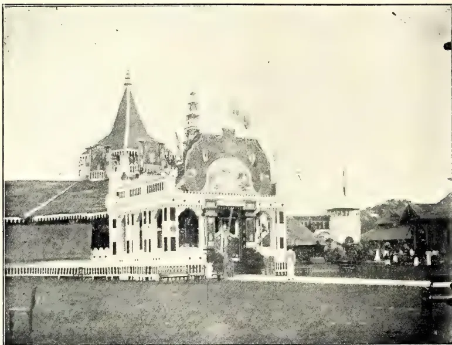
Photo by R. H. Ferguson.
ALL-CEYLON EXHIBITION, 1912. THE KANDYAN PAVILION.
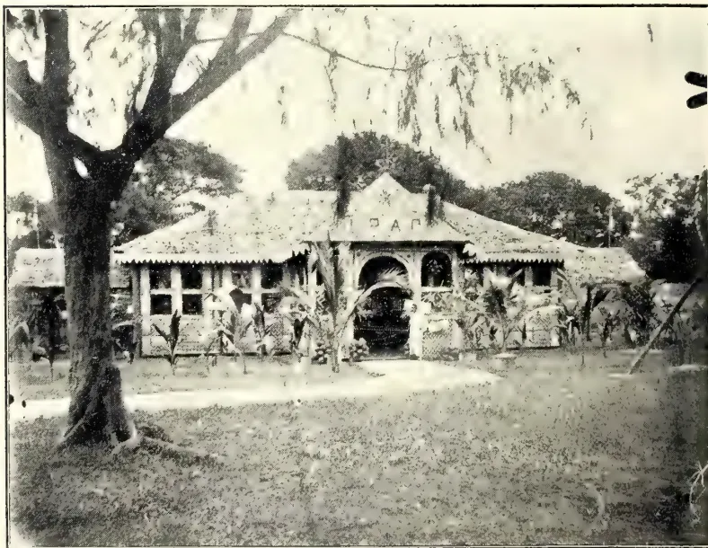
Photo by R. H. Ferguson.
ALL-CEYLON EXHIBITION, 1912. LOWCOUNTRY PRODUCTS
ASSOCIATION PAVILION.
and Magazine of the Ceylon Agricultural Society.—July, 1912.
89
Green
Butterfly
Brand
Put up in
Sterilised
Tins
Used on H.M.S. 'Medina' for Their Majesties King George and Queen Mary's voyage to India; selected for His Majesty's Camp at Nepaul, Delhi Durbar.
Fussell's Milk is perfectly pure, full-cream, natural cow's milk—not condensed; not skimmed. Keeps fresh for any length of time in any climate.
ENTIRELY FREE FROM ANY PRESERVATIVE
Of all Retailers. Wholesale: Miller & Co., Colombo.
Fussell & Co., Ltd., British Government Contractors, London & Norway.
ELEVEN GOLD MEDALS
The first All-Ceylon Exhibition was held in Colombo from July 1st to 6th, and was voted a complete success.
HIS EXCELLENCY THE GOVERNOR—in declaring the Exhibition open—stated that it was essentially the people's Show—it was for the people, by the people and with the people. In conclusion His Excellency alluded to the Exhibition as "Lanka Town," and wished it every success.
Their Excellencies were then escorted round the Show-grounds by the officials.
The Ceylon Exhibition. It is magnificent, but it is bewildering. The island's products, and arts, and industries, are compressed in the small space of an exhibition ground, and the ensemble is stupendous. For the first time in the history of Ceylon its characteristics have been tagged and labelled, and collected on such a scale, and it is beyond description. Every section of the island has vied with the rest in its endeavour, not necessarily to flaunt its local patriotism, but to show what it is capable of. And the result is a dazzling agglomeration of fruits and crafts, jewels and productions, that one cannot help but realise that it is the land poetically described as the "Garden of Eden" and the "Jewel of the Eastern Seas."
"East is East, and West is West, and never the twain shall meet," but the twain have met in the bonds of industry, and the native handiwork lies in close proximity to the handiwork of the men of the West, Rubber, manufactured Tea, and the imported goods of Europe. And yet after all it is the East, for nowhere else would one find such a contrast in colours, and such a heterogeneous collection of scents and smells.
One enters the Exhibition through a porch of bamboo draped with green vegetation, that is streaked with a Euclid problem in silver, which catches the shimmering rays of a powerful sun, sending scintillating flashes after the manner of some bewitched heliograph. Immediately one enters one passes into a land of flowers. There are flowers everywhere, peeping from clusters and masses of emerald green, and standing boldly in solitary grandeur. There is no need for exotics here, and the brightly splashed blooms, grown in their natural temperature, exude a languorous scent which is alluring in spite of its oppressiveness. Passing through the flower section the eye is positively assailed by a wonderful collection, ranged on either side of the great main building. It is difficult to know where to go first, and the visitor would be well advised to make no definite pro-
12
90The Supplement to the Tropical Agriculturistgramme, but to make a start where the crush is least.
First of all there is rubber, and tea, which must claim first attention from the European. Here there is biscuit, sheet and crepe from many estates showing the different methods and varied patterns adopted. Away down a long line they lay, and one passes some very creditable specimens.
Tea is also there in its many phases, neatly packed in lead lined boxes, and lead packages. There is a strange scent of tea which would bring joy to the heart of any English housewife. Vegetables vie with Ceylon sauces, and sweetmeats. The art of the Sinhalese is displayed in clever carvings, and statues, the latter section including one of a lowcountry Sinhalese Paddy cultivator. The inevitable elephant is also there in assorted sizes. The heart of the sportsman will warm at the stand showing cheetah skins and other specimens of Ceylon game, while a full grown specimen in a glass case should attract a good deal of attention. Elephant tusks, heads and cobra skins are also there.
Lace, home industries, and a hundred and one things are displayed. There is a fine collection of fruit, and the scent from hundreds of pineapples fills that end of the building. There are pines, some of them nearly a foot-and-a-half long, plantains, mangosteens, coconuts and their products and all "the luscious fruits of the East."
The gem section is a coruscating and flashing scene of brilliance. There are gems of all varieties, and heavy gold ornaments which must cause many breakings of the tenth commandment. The chief import firms also have some fine stands in this building who certainly deserve to be congratulated on the artistic ability of their designs.
Outside this erection the visitor is staggered with colour. The various sections of the island each have their pavilion where the local industries and their effects are shown. The architecture of the erections is amazingly daring, and the colour scheme would bring joy to the heart of any post-impressionist or futurist. The designers are by no means nervous, and bright reds and yellows are used with somewhat startling effect to the Western eye. The local commercial firms also have their pavilions, and the white painted wood stands out in sharp contrast to the brown cadjan and the luridness of the native initiative.
It is interesting to note the dimensions of the main building, which is 500 feet long by 200 feet wide, the diameter of the centre circle being 60 feet. It was designed by Mr. E. F. VanDort, who also designed the Dutch House and supervised the construction in this case. The abbey-like gallery windows are an interesting introduction to this cruciform building, with its splendidly lined colonnades of pillars
all dead true from end to end. The rounded ends and excrescent additions near the centre do not detract at all from the massive picturesqueness of the form of the main building—the right arm of the cross of which forms the main entrance, with its none too impressively large gilt lettering "ALL CEYLON EXHIBITION: UNDER THE PATRONAGE OF HIS EXCELLENCY THE GOVERNOR."
The Agricultural Society have an exhibition that should be missed by no one interested in the cultivation of either rubber or tea, or any of the products for which Ceylon is famous. Here may be seen the effects of light and air on rubber, and specimens of insects which cause damage to the trees. In connection with the former some interesting specimens are shown, these including a large block of Lanadron rubber which was exhibited at the Ceylon Rubber Exhibition in 1906 and has since been exposed to light and air at the Peradeniya Museum. The placard is labelled
and the answer is supplied by the rubber itself which appears to be in good condition, while another sample is from Henaratgoda from one of the original trees which has been kept for 29 years. This, of course, has very little of the appearance of rubber about it, but it shows to what an extent rubber will keep. Some Hard Para rubber is also staged; samples of biscuit, crepe and sheet rubber also being shown together with a biscuit of mud rubber. The results of slow drying are depicted by several pieces of rubber treated differently, another specimen illustrating tackiness produced by oxidation with Potassium Permanganate. Some Ficus rubber from the 1906 Exhibition and Hevea latex preserved by Formalin and Ammonia, are interesting as are also the exhibits of Castilloa, Ceara and Manihot Dichotoma, crepe rubber, and some of the record yields from Henaratgoda. Grass oils and nutmeg are shown preserved, as well as cocoa, rubber and castor oil seeds. A large pot of Baron Schrottky's indigo paste is staged on this table. The Sumatra tobacco from Maha-iluppalama should prove interesting in view of the agitation in favour of tobacco cultivation in the island at present; at this place it may be remembered there is an experimental station. In connection with tobacco it is interesting also to note that in the main building of the exhibition there is a good show of Ceylon tobacco, and the cigars, manufactured from it, have the appearance of an Indian cigar, though not of the first-class it must be said. Paddy, poonac and logwood are also shown.
To the planter perhaps the most interesting portion of the exhibit will be that relating to diseases. In this section are cuttings and branches showing the ravages of insects on both tea and rubber trees, one tea bush being shown with the trunk hollowed out
and Magazine of the Ceylon Agricultural Society.—July, 1912.91TRADEIn his book, Scouting for Stanley in East Africa, Thomas Stevens wrote:
"Stanley, in recommending these ('TABLOID') medicines, has earned the gratitude of every man who goes to a tropical country."
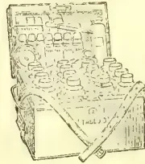
No. 254. Size:
9½ x 7 x 6½ in. The
ideal Estate Chest.
Approx. price in
London, 75/0
Particulars, outfits and refillings
supplied by all Chemists
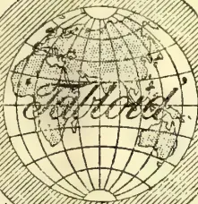
22 391
BURROUGHS WELLCOME & Co., LONDON
NEW YORK MONTREAL SYDNEY CAPE TOWN MILAN
SHANGHAI BUENOS AIRES All Rights Reserved
by white ants. Shot hole boring beetles are also responsible for a good deal of damage, while there is also a good illustration of the "Nodule" disease in rubber trees. Carpenter bees are wretched pests and the tremendous holes bored by these insects are indicated in sections of trees, specimens of the male and female of the bees being shown. The huge coconut beetle and other insects should be seen by those who are anxious to deal with these pests. Some fine cases of commercial silk worms and cocoons are on view, including the eri silk cocoon and the mulberry silk worm. There are specimens of the old rubber pickers, and tapping knives, the latter being shown in their various stages up to the modern implement.
The method of tapping toddy should prove exceptionally interesting to those engaged in the Excise controversy.
In the same pavilion is an interesting exhibit showing the evolution of the mosquito, a number of microscopes illustrating particular features adding to the value of the lessons which are to be derived from such a show.
In a spacious cadjan structure on the side of the main building stands the seed store, which is run by the Ceylon Agricultural Society and supervised by Mr C Drieberg. There were nearly 200 different varieties of paddy alone and a very large number of other varieties of seeds, fibres, etc. Each exhibitor received from the Society a packet of vegetable seeds. There were also on
view a good collection of agricultural magazines and pamphlets (local and foreign) which visitors were entitled to read.
The fruit stall was tastefully arranged at a corner of the main building, and consisted of every variety of fruit. Most of them were much bigger than the ordinary ones to be seen in the markets and looked very tempting. There were pineapples, mangosteens, many varieties of mangoes, limes, plantains, etc., etc.
The native products cultivated in the low-country were placed outside along the main building. They consisted chiefly of vegetables—fruits and herbs, without which the native cultivator cannot exist. There were some record sized yams—one a tapioca, being four feet in length. There were jaks of enormous size and some herbs, which showed that they enjoyed a very luxurious growth. There were also different varieties of yams, beside numerous table vegetables. The brinjals, breadfruits and pineapples were conspicuously displayed, and their sizes surprised everybody who passed by.
These were neatly arranged, too, in the main shed, and the stall reminded one of a native pharmacy with rows and rows of bottles of medicinal oils. There were also other kinds of oil such as the mi oil, the kekuna oil; samples of seeds, dye stuffs, gums and resins, tannery mat-
92The Supplement to the Tropical Agriculturisterials, wild fibres, jungle ropes, specimens of bark cloth dried and green, etc. The judging did not take place till late as the judges were elsewhere engaged.
There were exhibits of roses, viclets, gladiola, carnations and other Upcountry flowers. The specimens were good, but were woefully battered by the journey, and also showed signs of decay from rain.
The special show made by the Salvation Army was very attractive. There was an exhibition of worms, how they feed, and spin cocoons feeding worms and the eri worms. When the cocoons are made they are reeled to a machine which is placed at hand and then they are spun into thread. After this process the thread is made into skeins and is ready for exportation. A Loom for weaving cloth was also on the premises, and cloth woven at the place was exhibited. Another little quick running machine for spinning eri cocoons was also shown as well as a little machine for purifying the eri cocoons. On a table in the centre there were arranged samples of the Bengal variety, the Mysore variety and the "cross-breeding" variety of silk thread. The medals won by the Association were also on view. The collections consist of a gold medal for the loom, and four silver medals also for the same loom.
Pollibetta, June 29.—... Both coffee and rubber present a most luxuriant aspect. Borer is not severe this season. Estates are fairly well supplied with labour for the time of year and most seasonal works are well in hand. The supplying up of vacancies in the rubber has in some cases been finished and in others is in progress. Myriads of rubber plants grown from dropped seed cover the ground, and in parts form the only growth beside the Ceara trees. Rubber trees still continue to succumb to what is popularly attributed to "stump rot." Numbers of them are being removed and burnt, "supplies" taking their places. In a year these in turn succumb. Too luxuriant growth is a menace to the well-being of the trees. They develop a heavy head of branches and foliage the weight of which splits their stems down to the ground. The judicious lopping of branches might prevent this. The habit of growth of Ceara trees varies widely, indicating that a number of varieties are extant. Some branch out very near the ground and are unsuitable for tapping others have long straight stems. Some have a weeping willow appearance, while others throw their branches upwards in candelabra fashion. These are said to be the most productive. The undesirable kinds will be gradually eliminated. The places are being got rid of undesirable growth and in some cases digging has been commenced.—M. Mat.
Considerable interest had been roused when last mail left London over the reported production of Synthetic Rubber by Professor Perkin and the flotation of a Company to carry on its manufacture. Later news by cable intimating that Professor Perkin's new synthetic rubber was to be produced on a small scale at first, and that the necessary shares for allotment had been taken up in the new Company, gives no intimation that there has been an enthusiastic response to the flotation; further, the steady, though not active, market in plantation rubber shares ever since the announcement of the discovery, indicates that those who are handling and investing in raw rubber accord little weight to the so-called scare. The fullest, though of course the most technical, report of the meeting of June 17th at Burlington House, when Professor Perkin described his discovery to the Society of Chemical Industry, appears in the Chemist and Druggist of June 22nd, and in view of its importance we reproduce it in full. We notice that our contemporary's representative extracted from Sir William Ramsay the statement that growers of rubber need have no fear that the market would be affected for many years, and that the production of synthetic rubber was quite a side issue for the present compared with the manufacture of acetone and fusel oil; but he did not state, either then or at the lecture, whether any quantity had been produced sufficient to be tested in those essential qualities of natural rubber, in which it had so constantly been stated that synthetic was almost perennially doomed to failure. We refer to "elasticity," "resilience," and "tensile strength," three qualities in the raw product which the buyer and manufacturer invariably examines it for, and from which he makes up his price. We, therefore, take the view that the prominence given to the production of synthetic rubber, as if it were anything likely to compete with plantation rubber, is unwarranted. To take only one authority, viz., Mr. Hermann Gardner, F.C.S., who writes in the Financier on June 20th that the great weakness of all synthetic rubber products hitherto is their readiness to unite with atmospheric oxygen in the presence of light, and consequently they suffer speedy deterioration. There is also a network of nitrogenous material in raw rubber, which is missing in the synthetic variety; and until the vulcaniser gives his verdict that the Perkinette rubber is able to stand vulcanisation, any fears of it as a competitor may be removed to a date as far distant as the Greek Kalends.
The most that may be expected is that the new product, when turned out in appreciable quantities, and provided that its cost is limited to one shilling or one and sixpence, will be that it will displace the commonest African and South American natural product. The main advance secured by Professor Perkin and his colleagues, is that fusel oil, an expensive product, is cheaply obtained, together with ace-
and Magazine of the Ceylon Agricultural Society.—July, 1912.93tone, by the fermentation of starch, by means of certain bacteria; and the isoprene without which "synthetic" is impossible, hitherto obtained by condensing turpentine, is now obtained from iso-amylatropol, a constituent of fusel oil.
It may be found that Professor Perkin is relying too much for cheapness of production on the possible sale of by-products, the market for which is not always easy to find, and still more easily dislocated when these begin to be turned out in unwonted quantity.
A meeting of the London Section of the Society of Chemical Industry was held at Burlington House on June 17. Mr E Grant Hooper presided over a crowded meeting. The first paper, by Professor W H Perkin, F.R.S., was entitled "The Production and Polymerisation of Isoprene and its Homologues," and turned out to be an extremely interesting account of the work of an English committee of chemists and bacteriologists undertaken with a view to the
As the story was unfolded in dramatic sequence it proved that our chemists are as virile as ever, and it completely vindicated the early work of English chemists upon the authenticity of which some doubt has been expressed in Germany. Professor Perkin began by explaining that at the end of 1909 a group of chemists and bacteriologists was formed by Mr E Halford Strange to study the production of synthetic rubber. At the head of the group was Dr. F E Matthews, who suggested a method of preparing isoprene in which acetone and later fusel oil were employed as the raw material. The lecturer had at the same time devised a process starting from glycerin, and this led to an alliance. A committee of fifteen chemists was ultimately formed, with Sir William Ramsay as consultant, and Professor Fernbach, of the Pasteur Institute, Paris, as bacteriologist. Professor Perkin reviewed the work of the earlier investigators to prove, in view of statements made by the Bayer Co., that much pioneer work in this field belongs to this country and France. A careful search has been made of the literature of the subject, the chief events being:—
1860. Greville Williams isolated isoprene and observed its transformation into a rubber-like body.
1875. Bouchardet proved that rubber is a polymer of isoprene, and in
1879 prepared isoprene from turpentine.
1882. Tilden first polymerised isoprene into rubber by the action of hydrochloric acid and nitrosyl chloride. He also suggested the correct formula for isoprene. In
1884 he further investigated the production of isoprene by the pyrogenic decomposition of turpentine, and in
1892, in a paper before the Birmingham Philosophical Society, showed that synthetic rubber is capable of being vulcanised.
BY SIR WILLIAM TILDEN,
which were on the lecture-table. One specimen in a bottle hermetically sealed had become syrupy, and another to which air had had access was dark-coloured and had become converted into rubber. This was proved by sticking into it a glass rod, to which it adhered and showed its elasticity. Continuing, the lecturer recounted that in 1907 and onwards the high price of rubber stimulated research with the object of preparing rubber synthetically. The Bayer Co. in 1908 obtained a patent for a method of polymerising isoprene by means of heat, but the patents up to this time did not contain much that was not known before. Experimental work of Kondakow, Motiewsky, Thiele, Harries, and Klages was referred to, these chemists employing compounds containing the conjugated double linking —C=C—C=C— which is usually connected with a tendency to polymerise. Then followed a dramatic episode in the almost simultaneous discovery of the scientific fact that isoprene can be readily polymerised by means of sodium. In September 1910 Dr. F. E. Matthews observed that isoprene which had been left in contact with metallic sodium since July had turned into a solid mass of rubber. Professor C. Weizmann had also suggested that dimethylallene could be converted into rubber by means of sodium. Further investigation proved that sodium is a general polymerising agent of first-rate importance. The first announcement of this discovery was made by Dr. Carl Harries, of the Bayer Co., but when Dr. Harries applied for an English patent he found that he had been
three months before. The polymerising action of sodium is practically quantitative, and is not seriously affected by impurities. It will take place in the cold or in moderate heat, which is an advantage. The lecturer then called attention to some tubes of isoprene in which had been immersed for varying time a spiral of sodium wire. Selecting one which had been in contact for five days, he pointed out that the sodium had been broken down to a powder, and a viscous mass had formed at the bottom. The lecturer's assistant then precipitated the rubber by means of acetone and exhibited a mass of rubber to the audience. The rubber was snowy white, but, it was explained, becomes transparent after standing for some time. This discovery renders the production of rubber possible if di-vinyl or erythrene isoprene, di-iso-propenyl, butadiene, or other similar compounds containing conjugated double linkings can be prepared cheaply. Various raw materials were suggested. It was thought that the "cracking" of petroleum spirit was a promising source of the hydrocarbons, but the yield was less than from turpentine, and there were present many other bodies which made the purification a costly matter. The supply of turpentine is limited, and, therefore, subjected to great fluctuations of price. In surveying the various organic substances which could be employed the fact was kept in mind that rubber may
94The Supplement to the Topical Agriculturistbe sold soon at 2s 6d a pound, and the synthetic product must be able to compete with natural rubber at 1s. a pound. The
ONLY CHEAP RAW MATERIALS AVAILABLE ARE WOOD, STARCH OR SUGAR, PETROLEUM, AND COAL. Wood yields acetone on distillation, but the quantity available is limited and is already in such demand by various Governments for use in making explosives that the price has risen to £90 a ton. Petroleum and benzene from coal were likewise dismissed for other reasons. There then remained starch and sugar, the former of which can be obtained cheaply in any quantity. First a complete process was worked out from lactic acid, but it is too complicated to form a paying proposition; then attention was directed to starch, from which amylic alcohol is prepared. Iso-amylic chloride was prepared, the chlorination being effected by a special apparatus. There are produced three dichlorides, which all yield isoprene when passed over hot soda-lime, so that they do not require separating. This method was proved to yield excellent rubber, but the world's supply of amylic alcohol is limited; at present it is about 3,500 tons, and costs £149 a ton. To meet this difficulty Professor Fernbach, of the Pasteur Institute, worked out a process of fermentation directed to producing a larger proportion of higher alcohols by using certain nitrogenous compounds. After eighteen months' work he has perfected a method which produces not only fusel oil, but acetone. The production of acetone by this process is of enormous importance, and is expected to bring down the price to a third. The fusel oil obtained contains a large quantity of butyric alcohol, and can be made at a cheaper price than £45 a ton. The interesting part is that butyric alcohol, from which butadiene is made, is even better than isoprene as a source of rubber. The process as finally worked out has been checked and confirmed independently by Mr. Otto Hehner.
In the discussion satisfaction was expressed at the full justice done to Sir William Tilden, and Sir William referred to the discovery as a great commercial source of wealth to this country and the world.
Sir WILLIAM RAMSAY—said he could not help feeling how easy it is to do a thing when you know how, and recalled that in 1874 to 1879 he was working on the pyridine derivatives and employed sodium as an oxidising agent in the manufacture of dipyrindine.
Professor ERHARDT—of the Badische Anilin- und Soda Fabrik, said, if his memory served him aright, the date of Sir William Tilden's polymerisation of isoprene had been understated. His company began work on the subject three years ago, the result of which will be known shortly through the published patents.
Mr. REID—said that there was no reason why the output of turpentine should not be greatly increased. Russian turpentine only differs from American turpentine in the crude methods employed in its preparation, but from it
isoprene and butadiene can be as easily produced. He mentioned that he had lately seen a method of great promise of converting heavy residual petroleum into light spirit suitable for motor spirit. The product is an excellent solvent of rubber.
Dr. R. MESSEL—said when in Germany a few days previously his attention was drawn to the tyres of a motor-car. Those made of synthetic rubber had outworn the Para-rubber tyres.
Dr. P. SCHIDROWITZ—said the lecture had shown conclusively that the production of pure rubber synthetically is no longer bunkum. The commercial aspects have, however, yet to be considered before certainty can be said to have been attained.
Professor PERKIN—briefly replied.—Chemist & Druggist, June 22.
(To the Editor, "The Times.")
Sir,—The accounts in the Press of the new process of obtaining synthetic "rubber" are so wanting in detail and clearness that it is well to draw attention to one important point.
Although methods of obtaining rubber from isoprene were mentioned by Professor Perkin, it now appears, from published statements, that the principal process consists in obtaining not true rubber from isoprene, but a rubber-like material from a different hydrocarbon known as butadiene. Isoprene contains five atoms of carbon in its molecule, and is convertible into the chief constituent of true rubber which contains in its molecule a multiple of five atoms of carbon. Butadiene, on the other hand, contains only four atoms of carbon, and the rubber-like material obtained from it will, therefore, contain in its molecule some multiple of four atoms of carbon. The material in question is therefore not identical with the chief constituent of natural rubber, from which it differs in composition and molecular weight, and is what is known in chemical language as a lower "homologue" of true rubber.
It is perfectly well-known that homologues exhibit properties, especially physical properties, which differ more or less widely although such substances usually bear a close family resemblance.
The new material may, from the practical point of view, prove to be better or worse than natural rubber, but it is important to point out that it is not the same thing, and that, so far, definite information is wanting as to the respects in which it corresponds with natural rubber in such important properties as resilience, tensile strength, &c. Except for a few observations published by Professor Harries, of Kiel, we are at present in ignorance of the precise properties of the new substance, which, moreover, has not yet been produced on a large scale.
Apart, therefore, from the question referred to in your article of yesterday of the cost of producing the new material in comparison with the cost of producing natural rubber, it is evident that the product of the new process is a new substance, with whose physical properties we are not yet fully acquainted,
and Magazine of the Ceylon Agricultural Society.—July, 1912.95The material in question is not rubber, but a homologue of rubber, and should be known by another name. "Homo-rubber" is barbaric in structure, but it may serve until a better name for general use has been devised.
WYNDHAM R. DUNSTAN, F.R.S.
Imperial Institute, S.W., June 19.
MR. BERTRAM BLOUNT,
who was present at the reading of Professor Perkin's paper on Monday, in discussing the situation with a Morning Post representative yesterday, said: "The large attendance of chemists at the meeting and the character of the discussion which followed on Monday both show how keenly the interest of English chemists has been aroused in Professor Perkin's announcement. The record of the work done is elegant, both from the standpoints of the chemist and of the bacteriologist. The chemists may congratulate themselves on the discovery that the addition of slight quantities of sodium is able to transform isoprene, or rather, in the present instance, butanediene into rubber or a substance closely resembling it; and the bacteriologists have equal cause for pride in having found a bacterium that is capable of transforming saccharified starch into acetone and butyl alcohol. I must confess to a feeling of surprise at the latter result. Butyl alcohol contains four carbon atoms, whereas ethyl alcohol, the ordinary substance produced as a result of fermentation, has only two. Now the greater the number of carbon atoms contained in an alcohol, the stronger is its toxic effect, and one would have expected that the bacterium effecting the change would have been overcome by the products of its activity long before it had been able to complete its work. One can only say that it proves itself to be of a most hardy type, and that Professor Fernbach deserves all praise for his work."
"Considering the announcement more generally and criticising it, I feel bound to say that there are a few points on which we require further information before we can make anything in the nature of a dogmatic statement. It will be noticed that in his process Professor Perkin derives his rubber-like substance from a body with four carbon atoms, whereas isoprene, from which rubber has hitherto been synthesised, and rubber itself both have five carbon atoms, or in the case of rubber a multiple of five carbon atoms. One wants to know whether the rubbery substance derived from the four carbon body will have the same actual commercial uses that the naturally grown substance possesses. Again, in considering the effect of the discovery on a great industry, it must be borne in mind that the rubber planters are a powerful organisation and will not probably be caught napping, as the indigo planters were about a decade ago. No one in the city, at any rate, knows the real price of rubber. We have seen it fluctuate from two to twelve shillings, but neither figure has been the natural price of the substance. The effect which the artificial rubber will produce depends, not only
on the price at which it can be produced, but also on the true economic price of naturally grown rubber; that is to say, on the price at which it will pay to grow and sell the natural rubber.
"A further point to remembered is the source from which the rubber is to be obtained, starch. Starch is not a substance that can be got out of the earth like coal or petroleum, but one which has to be grown, as rubber has to be grown. This point was raised at the Society of Chemical Industry. It is partly met by the statement that starch in the form of tubers of one kind or another can be grown practically anywhere and in very large bulk per acre, but the fact has to be remembered that the raw material of synthetic rubber is a substance that requires to be raised at considerable expense. An experiment of considerable interest would be to polymerise both isoprene and butanediene with sodium and compare the two products thus obtained with each other and with natural rubber. Considering the fact that natural rubber is not a pure substance, but contains a considerable percentage of resins, much as turpentine, for instance, does, it is a bold statement to say categorically that rubber is polymerised isoprene, though the evidence may be admitted to point in that direction.
"To prevent misconception, I should like to add," Mr Blount continued, "that these criticisms take nothing away from the extreme elegance of the process which Professor Perkin described to us on Monday night. At the first announcement of such a process there are bound to be a number of such points as I have indicated arising, and time only can show how far the new process is able to hold its own against the severest of commercial competition. In any case, the paper will always be regarded as a record of great scientific achievement."—M. Post, June 20.
(To the Editor, "FINANCIAL TIMES.")
Sir,—It has been obvious during the last few days that Professor Perkin's statements as to these points have not been clearly understood. As organisers of the research group represented by Professor Perkin at the lecture to the Society of Chemical Industry on Monday night last, we make the following statements:—
The process for the manufacture of synthetic rubber employs starch-containing substances as the raw materials. The starch in maize costs on the average less than 1d per lb. Only five operations are required to convert the starch into rubber, and these are known to proceed easily giving good yields. The only other materials required are common salt, costing, say, 30s per ton; lime, costing, say, 30s per ton; coal costing, say, 15s per ton. The total cost for the raw materials to make 1 lb of rubber does not exceed 2d. With such cheap and plentiful raw materials it is obvious that there is a large margin for manufacturing expenses if 1s per lb is taken as the cost price. In fact, it is probable that when experience has enabled the large scale plant to be
96The Supplement to the Tropical Agriculturistperfected, the manufacturing cost will be reduced to between 4d and 6d per lb. Professor Perkin suggested that 2s 6d per lb would be the probable selling price for some years to come. This calculation is based on the following considerations:—It is probable that at a selling price of 2s 6d per lb more than half of the world's output of rubber would become unprofitable to collect. This would include the bulk of the wild rubber, including Para. It is, therefore, probable that the first phase of the inevitable struggle will be to leave the field divided between plantation rubber and synthetic rubber, and there is, of course, the possibility that, with the demand for rubber steadily increasing, it will be some years before it is necessary for the manufacturers of synthetic rubber to lower their prices to such an extent as to seriously interfere with the plantation industry.—We are, &c.,
FOR STRANGE AND GRAHAM, LTD.,
E. HALFORD STRANGE, Director.
50, City-road, E.C., 20th June.
—Financial Times June 21.
Considerable attention has been aroused during the past few weeks (says Chambers's Journal for May) by the appearance of a substitute for india-rubber, vulcanite and leather, under the name of seagumite. It is the discovery of a London chemist, and the fundamental material from which it is made is seaweed. Seeing that this article is so abundant around our coasts, the possibility of being able to turn it to valuable commercial account not only opens up a new industry, but at the same time finds an economic market for what at present is virtually useless. The method of manufacture is a secret; but, judging from the results of the trials to which the new substance has been submitted under arduous everyday conditions, it appears to have a great future in many ramifications of commerce. Seagumite is not only damp-proof, non-inflammable, and germ-proof, but is not affected by heat, cold oils, or exposure to weather. It can be made as tough as desired, and consequently is an
To the electrical trade this is of far-reaching importance, as it brings into vogue a new and cheaper medium said to possess all the insulating properties of india-rubber, from which vulcanite is prepared.
A series of tests were carried out with this composition at the Westminster testing laboratories, and it was found capable of withstanding a test of thirty-two thousand volts. As a packing material in steam-engines it has proved highly serviceable, and stands the work excellently; while the fact that it withstands the action of chemicals and acids extends its sphere
of usefulness still more. It can be used for the manufacture of motor-tires just as easily; it is as resilient as rubber, and costs about 30 per cent. less than the rubber tire. Boots and shoes can be made from it; and not only is the footwear lasting and hygienic, but its damp-resisting quality is its most attractive feature. Compared with leather, boots can be made of seagumite for about half the price. Wherever leather or vulcanite is used, seagumite is equally applicable, and for the most part with far better results. It is practically unbreakable, is almost imperishable, and completely fireproof, the blast of a gas blow-pipe only slightly charring the surface.
A factory is being erected for the manufacture of this substitute, with an output of six tons per week at first; but should the anticipations of those concerned in the exploitation of this discovery be fulfilled, and the material prove equal to the article which it is devised to displace, the output will have to be increased very considerably, as a heavy demand is certain to ensue. Indeed, already the various industries to which the substance makes appeal are displaying practical interest in the development.
Our Brussels Correspondent states that it is announced that progress is now being made with the erection at Ymuiden, in Holland, of works for the manufacture of artificial rubber according to the process of a M. Vander Heyden. The raw material is principally sea fish, to which 15 to 16 per cent. of natural rubber is added, and afterwards treated by secret process. The product obtained is said to be as flexible and elastic as natural rubber, capable of being vulcanised rapidly, and insensible to the action of benzine and heat. The by-products may serve for the manufacture of artificial manure, and the cost of production is said to be very low. —London Times, May 30.
When in Sumatra last year I wrote at the length on the possibilities of tea cultivation in conjunction with rubber in that island, and ventured the opinion that the experiments then in operation would give rise to extensions on a more ambitious scale. The shrubs I saw had made exceptionally strong and healthy growth, and expert opinion upon the manufactured leaf was to the effect that the tea was of similar value to average lowcountry Ceylon. It is now reported that one estate in the East Coast district is extending an experimental 500 acres to one of 1,500 acres, while several plantations at a greater elevation are pushing rapidly ahead with the new cultivation. With the enormous growth in the demand for which Australia will be responsible in future years, there appears to be a great future for tea in the Netherlands Indies. Java has already established itself as a producer, hence the progress of tea-planting in Sumatra will be watched with much interest. —E. L. KILLICK.—Financier, June 18.
This image is a scan of a blank page. The paper has a light beige or cream-colored tint. There are a few very small, dark specks scattered across the surface, which appear to be scanning artifacts or dust particles. No text, lines, or other markings are present on the page.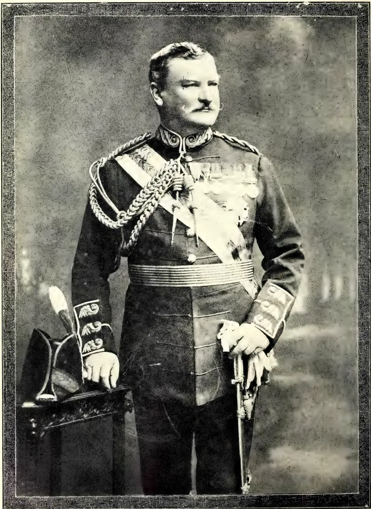
A black and white portrait of Sir Henry Edward McCallum, G.C.M.G., Governor of Ceylon, President of the Ceylon Agricultural Society. He is shown in a full military dress uniform, including a dark tunic with gold braided shoulder straps, a high collar with gold embroidery, and a wide gold belt. He has a mustache and is looking slightly to the right. He is holding a rifle in his left hand and a campaign hat on a stand in his right hand. The portrait is framed by a dark, textured border.HIS EXCELLENCY SIR HENRY EDWARD MCCALLUM, G.C.M.G., GOVERNOR OF CEYLON,
President of the Ceylon Agricultural Society.
THE
TROPICAL AGRICULTURIST
AND
MAGAZINE OF THE
CEYLON AGRICULTURAL SOCIETY.
VOL. XXXIX,
COLOMBO, AUGUST 15TH, 1912,
No. 2.
TWO CEYLON PROBLEMS.
Address by Mr. R. N. Lyne, Director of Agriculture, to the Ceylon
Agricultural Society, July 3, 1912.
It was my intention to write nothing and to say as little as possible till I had been some months on the island, because a new-comer can have very little to say worth listening to about the agriculture of a country till he has had time to study it. I accepted the invitation of the Secretary of the Society to address this meeting because I felt sure you would be generous in your criticisms and listen to what I have to say on the understanding that further acquaintance with Ceylon may cause me to modify the views I shall express to you. I especially appeal to the indulgence of the experienced rubber planters present, as I recognize that it savours somewhat of presumption for a man who has been but six weeks in the country to venture to address them on the cultivation of Hevea. But there are many problems connected with the cultivation and tapping of rubber which the new Department of Agriculture will, I hope, apply itself to solve or help to solve. Though we have established rubber planting in Ceylon on a paying basis, I feel myself on safe ground when I say that we know very little about the right treatment of the Hevea tree. Lawes and Gilbert pursued their patient researches for several decades before venturing to pronounce nitrogen the dominant manure for wheat or potash for clover. Wheat feeds in the top few inches of the soil and occupies the land but a few months. Hevea searches a vast area in comparison and continues for three-quarter of a century, perhaps more. How long then are we to be allowed before pronouncing upon
THE DOMINANT MANURE FOR HEVEA?
It is the eliminating of the subsidiary influences that requires the time, and in the case of tree growth these influences are very complex. We may be attributing results to manure that in reality are due to a generous rainfall two years back; because how long the influence of a good or bad rainfall may extend with large trees whose roots work in regions far beyond our reach, we cannot say. In the old
98[AUGUST, 1912.country we studied plants that grew in a medium we could plough and till and we equipped our laboratory and wrote our text books on the experience gained therein. In a tropical country with a good rainfall like Ceylon, nature works in a laboratory of her own, exceeding in dimensions everything with which we have had any previous experience. We must enter her laboratory as students, remembering that she yields up her secrets grudgingly. Some years ago I sent home a sample of soil to Dr. Voelker, consulting chemist to the Royal Agricultural Society of England. He reported that the soil was completely impoverished, deficient in all the ingredients of plant food, and it was a wonder anything grew upon it. I replied that the soil supported a rich clove plantation, and added that it seemed to me that in the tropics soil was of less importance than a proper balance of sun and rain; and he answered that, when in India the same thought had occurred to him. We have brought in for exhibition some rubber, the product of one month's tapping of
It weighs 18 lb. This tree goes on yielding in that proportion six months or more in the year. In years it yielded 275 lb. of rubber. What is the cause of this? I have heard it described as a freak, but I do not accept that solution. If we had been planting rubber for a hundred years, or if this tree stood in a plantation of 100,000 others of like age and size, we might be justified in regarding it as a freak; but there are only a few trees on the island that can rank as its peers, and these are grouped round it. It is one of the original consignment imported from Brazil. This tree has never been manured: therefore manure has had nothing to do with its remarkable yield. It grows on rather poor soil: therefore its abundant flow of latex is not due to exceptional richness of soil. We can thus eliminate three influences: individual peculiarity, manure, soil, and say that none of these has had anything to do with the rich return of this Hevea tree. What remains? To what other conditions is vigorous tree growth due?
are three, and this tree, standing on the outside of the plantation, enjoys a liberal supply of all of these. Leaves cannot perform their functions without light, and other things being equal we may take it that the more light they receive during the hours of daylight, the more work they will do and the more vigorous will the circulation of the tree become. The same may be said of air, while it will be obvious that the less the soil preserves of a tree are encroached upon by neighbours, the greater will be the stores of plant food at its disposal to draw upon. But the most important factor of tree vitality yet remains to be indicated, namely, moisture. In the tropics fertility follows in the track of the rain; and one of the functions of rain is to keep the water table at its normal level. It is not unlikely that this large and vigorous Hevea may have succeeded in tapping subterranean reservoirs as yet out of reach of its companions. Now if this is so and had this tree been subjected to systematic manuring, root development might have been encouraged towards the surface instead of towards the deeper layers of the soil, and in that case the water table might never have been reached. We have here then a hypothetical case, and it seems to me not at all an unreasonable one, in which
instead of good. You cannot, of course, argue from one tree, especially a tree that is a generation older than most rubber trees on the island; I have only taken it to illustrate the point I wish particularly to make, which is, that in the presence of natural forces working so very much more vigorously than we have been accustomed to in temperate climates, where the science of agriculture has been built up, it is possible we may be devoting too much attention to what I will term the artificial side of rubber cultivation—manuring and methods of tapping, and that we might achieve better results at first by devoting our energies more to removing
AUGUST, 1912.]99obstacles from the path of nature and giving her rein. We should endeavour to secure as far as we can that nature has full scope for the use of her vast resources with each individual tree in the plantation, and that each individual tree is given full play for the utmost exercise of its functions. After that we may begin cautiously to offer her assistance with such puny means as we have at our disposal, being ever watchful that, instead of helping her, we may not be hampering her.
I now come to agricultural education, i.e., agricultural instruction of the native population of Ceylon to which (as His Excellency has remarked) the new Department will also have to devote its attention. The improving of native methods of agriculture, it is thought by some, is a disappointing task to undertake; but it is a movement we cannot resist. The British Empire and all countries with responsibilities in the tropics are taking it up and it appears to me that in Ceylon we have got material to work upon which compares very favourably with that of some other countries that I know. But in approaching this question of agricultural education we should make up our minds not to expect results too soon. How long has it taken Hodge in England to capitulate to scientific agriculture? He is slowly giving in, but he is not by any means completely conquered yet, though more than two centuries have elapsed since Jethro Tull published his book on "Horse-hoeing Husbandry." Let us not forget that till the dawn of the eighteenth century we ourselves remained in outer darkness. In one respect I notice the native races of Ceylon ahead of the native races of East Africa, namely, in the knowledge that manure promotes plant growth, and, speaking under correction, I believe this is due, at least to some extent, to the teaching they are receiving in the school gardens and through the instructors of the Agricultural Society.
natives understand nothing about manures and I have never seen goat or cattle manure used in their gardens. In a visit I recently paid to a school garden I was quite struck by the knowledge some of the boys displayed about the value of manuring.
Next to securing ourselves against disappointment and despair by making up our minds to be patient and remember that "by slow degrees we reach the steep declivities of time," I place the importance of becoming thoroughly acquainted with native methods.
In most respects,—not in all, because in some cases, as for example manures, ignorance alone has been the obstacle—but in most respects native customs are the outcome of long experience, of particular physical constitution, of village or domestic circumstances, and hence are not to be hastily condemned.
The writer of "Romans" said that tribulation worketh patience; and patience experience; and experience hope; and I should like to relate a story of tribulation in which I was concerned because it led on to useful experience.
When I first went to Zanzibar I laid out a clove plantation of 10,000 trees. Every tree was planted under the supervision of an experienced English nurseryman. The Arabs came to look at us and we felt we were providing them with a useful object lesson;—as indeed we were. When the trees were all planted and shaded, we waited and watched while they began to die. In three months all had perished except 10 per cent. After that instead of the Arabs coming to look at us we went to look at the Arabs. Not only in planting but in plucking and drying; though we tried new systems we had to go back to Arab methods and pick them up where they had dropped them thirty years before when their supply of slaves began to decline and their prosperity to wane. We improved upon them, but the methods were theirs,
100[AUGUST, 1912.You probably know the story of the West Indian planter who introduced wheel barrows as labour-saving devices. His coolies accepted them confidingly, filled them with earth and hoisted them on to their heads. They knew their business; according to his lights the native cultivator knows his business. It is our business to try and understand his motives. Patience and an understanding of the motives of the natives are then important items of our equipment. What, now, of the line of attack? In the first place I would aim at improving existing methods rather than at introducing new ones, and I would apply this principale especially in the case of implements.
Let us take the native paddy plough for example and endeavour to improve it as a labour-saving implement before placing in his hands an entirely new machine and let us make sure that it really is labour-saving. There is a tendency sometimes to condemn the native when he rejects the expression of our ideas of what is good for him, but I am convinced that the fault is often ours for having failed to study the case in all its aspects. A new sort of plough may be able to turn over more land and yet be unable to stand the rough treatment and neglect it must inevitably suffer in native hands, quickly getting out of order and hence be anything but a labour-saving device or an improvement. The native peasant understands little or nothing about bolts or screws or nuts. His paddy plough is one wedged unit. It is light, weighing but 25 lb. and at the corners he can jerk it with one hand a distance of 6 feet to begin the next headland; and when he has finished he can swing it on to his shoulder and walk away with it. I never saw a European-made iron plough that could be handled like this, and yet unless we can give him an implement that he can so handle he will reject it, because it will not be really labour-saving. Again, the action in the paddy fields is not a ploughing action, it is a churning action, corresponding more to that of a cultivator with one tine, so that when offering the native one of our ploughs in place of his own we may be—indeed I think we are—offering him quite a different kind of implement for which he has no use.
I come now to what is perhaps the most important point of all in agricultural education; and that is, teaching the young generation. It is in the coming generation the fruit will ripen, not in our day; though it may be our privilege to till the soil. Much can, I think, be done by a simple course of agricultural instruction in teaching boys the functions of the roots, stems, leaves and flowers of plants, for example; how plants feed; what it is the soil is composed of; the reason for cultivating and manuring it; and instructing boys in the use of modern implements. For given results it will take an enormously greater expenditure of force and money with the adult native settled into his ways than with the impressionable young who have nothing to unlearn. But before attempting to teach the young we have to educate the teachers, and this fact places the whole question of agricultural education in its proper perspective. The vista is seen to be a long one, indeed.
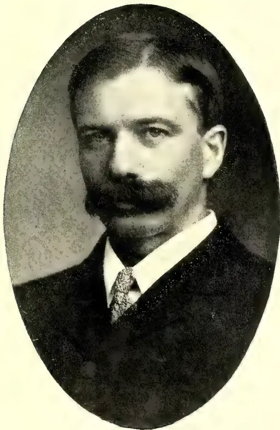
A black and white oval portrait of a man with a prominent mustache. He is wearing a dark suit jacket over a light-colored shirt and a patterned tie. The portrait is set against a dark, textured background and is enclosed in a thin oval border.Elliott & Fry.
R. N. LYNE, F.L.S., F.R.G.S., DIRECTOR OF AGRICULTURE, CEYLON.
This image is a scan of a blank page. The paper has a light cream or off-white color with a subtle texture. There are a few very small, dark specks scattered across the surface, which appear to be scanning artifacts or dust particles. No text, lines, or other markings are present on the page. AUGUST, 1912.]101The Times' View.
The public are probably but dimly aware of the extent to which chemical research, often carried on for years in directions which seem far removed from any practical issue, now enters into their daily lives and dominates great departments of industry. Now and again, however, some notable discovery appeals to the imagination of the most careless observer. Most people are more or less aware of the
DEVELOPMENT OF THE ANILINE DYES, though they possibly fail to connect them with the innumerable tabloids of strange drugs to which they have recourse upon all sorts of occasions. The discovery of synthetic indigo is perhaps less generally appreciated, though it is painfully familiar to indigo-planters in India. Now we have the announcement of a method of producing synthetic rubber upon a commercial scale and at a price which will enable it to compete with the natural product. So many people are interested in the shares of rubber companies that this newest
TRIUMPH OF CHEMICAL RESEARCH has commanded very general attention. Capital is proverbially shy and anything that appears likely to affect an established industry is sure to be scanned with the keenest interest. It need hardly be said that everybody who shares in that interest would do well to keep a cool head and to await developments. Apart, however, from its bearing upon great financial undertakings, the present announcement is extremely interesting. The actual
was solved some time ago. It has been made and tested by use in motor-tires and things of that kind. But the chemist, though he can imitate nature's products, cannot command
nature's methods. He cannot begin, as the plant does, with the crude elements, and build them up into complicated structures with no other energy than that derived from the sunlight. He has to take manufactured material from nature, and has to expend upon it a great amount of energy also derived from the manufactured material of nature. With all these advantages he can bring about some wonderful transformations; but, before he can make them pay, he has to discover some natural product to begin upon, which is very abundant and cheap in comparison with his finished product. The difficulty in the case of rubber has been to find some sufficiently cheap natural product to use as raw material, and that is the difficulty which is now believed to have been surmounted.
The steps are very interesting and include several distinct advances in knowledge, and that too in very different departments. What adds further to the interest, we might almost say the romance, of the matter, is that rival chemists in different countries have been running neck-and-neck in the race for commercial success. A strong body of English chemists has been at work, with the aid of a French bacteriologist, who has contributed an improved fermentation process the details of which are secret, for the abundant production of the higher alcohols from starch. On the other hand German chemists have been pursuing parallel, if not identical, lines of research, and both parties are protecting themselves by patents which may not improbably furnish occupation for the lawyers. It is very probable that more than one rubber is in question, and quite possible that none of them is in every respect identical with natural rubber. The German chemists, we believe, recognize this variability in composition, and hesitate to put forth on behalf of their product the claim that it is identical with natural rubber.
PROFESSOR WYNDHAM DUNSTAN points out to-day in our columns that some at least of the proposed sources of
102[AUGUST, 1912.synthetic rubber cannot yield the five carbon atoms present in the molecule of natural rubber. That does not prevent them from yielding a homologous substance which may have very valuable rubber qualities. Even when the five atoms are present it does not follow that they are combined in precisely the same way as in natural rubber. It is common to find two very different substances composed of exactly the same elements in exactly the same proportions. They differ in structure. It is also common to FIND MINUTE STRUCTURAL DIFFERENCES in what seems to be the same substance—albumen for example—coming from different sources. Broadly speaking, the samples are all albumen, but in special conditions they behave differently. It must be remembered that natural rubber is not a single uniform and homogeneous product. It comes from various plants, and their different products are recognized in the market as having different properties, no doubt related to different structure or composition. There is room for different synthetic rubbers, which may follow any one of different natural types, or may differ for better or for worse from them all.
It may be assumed that a process much cheaper than was previously known has now been worked out. But whether it is yet sufficiently cheap to compete with the natural rubber at present prices, and at the reduced prices which may be expected in the future, is another question altogether. The most careful anticipatory estimates of cost are liable to be greatly exceeded when the thing comes to be worked. Nothing can absolutely settle the question of cost, and therefore of commercial success, except actual production upon a considerable scale. The situation as it stands is extremely interesting, but is not devoid of a well-marked element of speculation. From the great advance already made chemists may, however, draw encouragement to prosecute their researches still further, with a view to securing yet greater cheapness of raw material. The ultimate victory
will rest with the man who succeeds in accomplishing some further simplification.
A correspondent, who desires to remain anonymous, raises the following points, which seem to us of sufficient importance to merit serious discussion:—
Can you give me any instances where Sinhalese labour from distant villages has on a large scale been induced to settle down as a resident labour force on Estates—Tea or Rubber—permanently on the footing say, for instance, of Tamils from the Coast?
Is there, in your opinion, any possibility or prospect of obtaining such a resident force of Sinhalese as a permanency for large properties of 1000 acres or more?
If such is the case, or likely, what possible safeguards are available to prevent them from at any time abandoning the Estate at a day's notice? Can they be bound as in the case of emigrant labour? Would it in fact be safe to rely solely or chiefly on such a force?
[We do not know of any estate on a large scale which is run entirely by Sinhalese labour, although the number of Sinhalese employed on estates in supplement of the permanent Tamil force is rapidly increasing. Such labourers we believe generally work by the day without any definite contract. Under Section 7 et seq of Ordinance 11 of 1865 it would be possible to enter into a written agreement with each labourer separately, but this would scarcely be feasible on a large scale.
Personally we think that a great deal might be done with Sinhalese labour in certain districts by a tactful manager who understands the ways of the native, but to depend upon them entirely for running a large estate would be a rather hazardous proceeding under present conditions.—ED.]
AUGUST, 1912.]103Burring Bar, New South Wales,
Australia, 10th June, 1912.
To the Editor of the
Tropical Agriculturist.
Sir,—Having grown the above bean during the past year, with great success, and knowing how beneficial it would prove to many planters in the East Indies and elsewhere, kindly permit me to give you a brief description thereof. My attention was first drawn to this matter by reading the following paragraph in one of our local papers giving a description of the above Islands, "On the kitchen table is an enormous bean. It is seven feet long and is named the 'Guada.' Both the pod and the beans are edible, and are sliced and cooked like French beans. This green, succulent looking delicious streak, is intended for our host's family dinner to-night. It will provide amply sufficient vegetables for one meal, for half a dozen hungry people."
This vine grows from 15 to 20 feet long and within a few months yields a heavy crop of beans from 3 to 6 feet in length; which greatly resemble a long, narrow cucumber. The flowers are fringed and scented, and when over-ripe the pods assume various hues—orange-red and green with white stripes; when young the fruit acts as a good substitute for cucumbers when pickled. A writer in one of our local papers of recent date says:—"I can testify to their value as a table vegetable. Mr. Harrison gave me one bean in January last; from this single seed I have grown about 25 lbs. of beans from the one vine, which is growing and bearing heavily yet. Single beans have measured up to 5 feet 4 in. in length and to 2 lbs. in weight, and we have frequently served up half a bean for a meal. It is usual to expect coarse flesh and rank flavour in such bulky vegetables, but such is not the case with the "Guada." If taken
before the beans have hardened in the pod, sliced and cooked like French beans, and served with sauce it is quite a luxury in the bean line."
This vegetable should prove a most useful and prolific adjunct to gardens in the East Indies, and other tropical countries where it is sometimes very difficult to cultivate kitchen produce.
Yours faithfully,
B. HARRISON.
[In another letter our correspondent calls this bean Tricho-santhese anguina, which is, of course, the Snake Gourd, well known throughout the East and a native of India, though not usually attaining to the dimensions described here. T. columbrina grows to 5 or 6 feet however.—ED.]
The increasing attention given to plant diseases is one of the most striking (and unexpected) of recent advances in British Agriculture. But after so many years of neglect, native information on such matters was necessarily meagre, being almost limited to the researches of a very few voluntary workers; and under these circumstances there was a distinct opportunity for the introduction of
by experienced plant pathologists in other countries. Messrs. Bailliere, Tindall & Cox have taken advantage of that opportunity to issue a translation of a popular hand-book by Prof. Eriks-son, Director of the Botanical Division of the Swedish Central Agricultural Station, who has a high reputation as a Mycologist, and is especially renowned for his
The book is well arranged and excellently illustrated. A diagnostic key to the diseases of each plant—a new feature in works of this kind—is given, and with the assistance of that and the numerous figures, the practical man will have little difficulty in gaining some idea of the nature of any diseases which may be attacking his crops. The general
104[AUGUST, 1912.style of the book is a credit to the publishers, and one can only regret that they did not have the translation revised by an Englishman; as it stands, it might serve a double purpose by affording correction exercises in English grammar and composition for rural schools.
as in other subjects, the day of the encyclopædia has passed. Prof. Eriksson's book deals only with the diseases of field crops in temperate climates, and is therefore the more valuable, since these can receive fuller individual treatment than is possible in a work which professes to include all known diseases. But this limitation renders impossible any recommendations of the book to the readers of the Tropical Agriculturist (in spite of the translator's numerous references to "planters" since, except possibly for the section on club root, they would find in it nothing of interest, or at least of practical use, to them.
EXTRACTS FROM THE AUTHOR'S PREFACE gives the views of this experienced plant pathologist on a subject which is often debated by planters:—
"Nowadays we frequently hear the complaint that the diseases of our cultivated plants become year by year more numerous and more disastrous. It is alleged that new diseases are constantly turning up which have never before been seen or heard of. It is also said that parasitic fungi, which hitherto have proved quite harmless, have changed their nature, and become most destructive.
"Is this really the case, or is it not? Some hold this opinion to be erroneous, and claim that the state is the same as before, but that greater attention and the strict investigation which now are given to this study bring the matter more before the public eye, and also result in the discoveries of hitherto unnoticed diseases.
"This explanation can hardly be gained. In most civilised countries there is now a diligent survey and a close inspection of the health of cultivated
"plants, and this attention must result in a detection of diseases that have been previously unnoticed. But, on the other hand, there are many cases that cannot be placed summarily in this category. And this refers especially to a great number of the
"It is, after all, an incontestable fact that fresh fungoid diseases have recently appeared and are gaining a footing in various countries. How is this to be explained? Several causes work simultaneously to this end.
"The inclination in our time for specialisation, even with regard to agriculture, inasmuch as only one or a few species are cultivated in large masses, helps to make the plants more susceptible. This mass-culture of varieties and sorts generates new characteristics in the individual plants, and some of these new forms will then be more susceptible to diseases and become a source of disease for the whole plantation.
"But another important fact must be placed side by side with this.
"is known and accepted as truth in the scientific world. Formerly it was thought that hundreds and even thousands of years were required for this evolution. But to-day we are certain that new forms can be brought forth through impulsive new formation—'mutation'—and these forms can vary from the parent stock in one or more characteristics. Why could not this natural law be applied also to the extensive dominion of the parasitic fungi? And why could not these new forms of fungi possess qualities that would enable them to avail themselves of the nourishment offered through the new races of hostplants brought about by the mass-cultivation? This is quite possible, and recent experiments and observations tend to prove this supposition.
"Beside these two purely scientific explanations, we have the practical
AUGUST, 1912.]105"one of the easy communication of our
"days, by means of which contagious
"matter can be readily spread from one
"district, country or continent, to an-
"other.
"The combined effects of these circum-
"stances render the research and the
"prevention of fungoid diseases a matter
"of international importance."
T. P.
In the last three days the Bogey of synthetic rubber, which it may be remembered, was markedly in evidence a few weeks before the commencement of the great rubber boom of 1909-10, has once more been prominently brought forward, as a result of the lecture given by Professor W. H. Perkin, of the Manchester University before the London Section of the Society of Chemical Industry on Monday last followed by the interview on the same subject given by Sir William Ramsay to a representative of the "Morning Post." Coming on an already rather tired market, these detailed statements that
could be commercially produced at a price much below that at present ruling for the natural article, has caused something like a slump in the shares of plantation companies, and we hear that many real holders have hurriedly sold their investments. We have no hesitation in saying that, on the statements so far put forward, this slump is altogether unjustified; and we hope that none of our readers have allowed themselves to be frightened out of desirable holdings by the ipse dixit of a scientist, however eminent. Synthetic rubber is, after all, no new thing; it has been manufactured in the laboratories again and again, and the only actual step forward which has been taken lies in the claim that the process has been so perfected that it
may be possible to market synthetic rubber manufactured from starch at a price of
It is not even claimed, however, that the essential figures with regard to the cost of production are anything more than vaguest estimates and the more recent past has produced plenty of examples of such scientific hopes having been badly disappointed when put to the test of practical experience, the Dunderlan Iron Ore Company being a prominent example. In the present instance the first invention of practical utility is that which Professor Fernbach, of the Pasteur Institute in Paris, claims to have discovered—namely, a method by which
BUTYL ALCOHOL—A FORM OF FUSEL OIL—can be manufactured at a cost of approximately £30 per ton. As the cost by existing methods is £130 per ton, this represents a big saving, but we have no information yet as to how the estimate has been arrived at, what was the proportion of costs allowed for manufacturing processes, or whether any allowance was made for the value of the by-product—Acetone. The other discovery lies in the
—which by a somewhat lengthy chemical process is refined from Butyl alcohol—to rubber by the application of sodium. Sodium is not a widely used commercial product, and is, it may be remarked, so difficult to handle that it has to be protected from the air by a coating of paraffin and secured in closely fitting soldered-up tinned boxes. In a laboratory such difficulties are easily overcome, but quite a different problem is presented when the material has to be used in comparatively large quantities. Nor are the prices at present ruling for the different materials required any gauge of what might have to be paid if a big demand were created. In some instances, of course, additional demand tends to lower prices by increasing the supply, but in the case of many chemicals sold as by-products the ordinary supply is limited, and much higher
14 106[AUGUST, 1912.prices would have to be paid for direct manufacture.
which it is necessary to make is that any calculation of the cost of a given product by means of laboratory experiments is necessarily very conjectural. In this case it is more than usually so. Professor Perkin admitted that the whole question was in an experimental stage, and apparently assuming that the discovery of Professor Fernbach would reduce the price of Butyl alcohol from £130 to £30 per ton, he did not go further than to suggest that "there was a probability" that synthetic rubber could be produced at 2s. 6d per lb. and "a possibility" of production at a cost of 1s. per lb. Sir William Ramsay, though very optimistic, intimated that at least two years of experimental work is ahead before a
can be commenced. And the company which, it is stated, is being formed will apparently occupy itself not primarily in the production of rubber but in testing commercially the first stage of the process, namely the production of cheap butyl-alcohol and acetone—the latter being a valuable ingredient in the manufacture of smokeless powder. If and when that problem is successfully solved, the question of the commercial production of synthetic rubber will begin to come within the range of practical politics, provided that the chemical processes do not prove too expensive; and possibly by that time we may have some evidence as to
Natural rubber differs enormously in value, and quite possibly the artificial product might not find a market at 2s. or 3s. below the price of hard Para. This, of course, can only be ascertained in course of time, and the fact which Rubber shareholders should bear in mind is that the lecture of Professor Perkin on "the production and polymerisation of isoprene and its homologues"
did not carry us further than a suggestion that a way had been found by which
be possible to manufacture chemical rubber at a comparatively low figure.
It may be useful in this connection to recall the history of the production of nitrate from the air, which was once a similar periodical bogey to holders of Nitrate shares. In the course of years the mechanical difficulties were in that case actually solved (after a good deal of money had been lost in the process), and nitrate of lime, produced by electricity from the air, is now being manufactured and sold in considerable quantities. It has, however, had no effect whatever upon the price of nitrate of soda, and the market entirely disregards the development of the industry which was once its bugbear. In the same way, it is probable that twelve months hence the present
will be forgotten and it is long odds against any sufficient quantity of such material being produced as to affect prices for many years to come. In the meantime holders of Rubber shares should disregard the alarmist statements which have been circulated, the more so as they do not appear to be altogether disinterested. Advance prospectuses of a venture called the
are now being privately circulated, the capital being a modest half-million, while Sir William Ramsay heads the list of Directors. This, perhaps, accounts for the publicity which has been given the scientific discoveries said to have been made, but, at the same time synthetic rubber is, in the preliminary document, merely held out as a dream of the future, the estimates of profits being based on the manufacture and sale of acetone and fusel oil distilled from starch. That being the case, it would have been, perhaps, as well if rubber had been kept rather more in the background than it has been.
AUGUST, 1912.]107It has been usual till lately to give dynamite a wide berth, but now the explosive has come to be considered a useful adjunct of agriculture, and the demand for it in the preparation of lands bids fair to surpass that for mining purposes. The various uses to which it is put are for tree-planting, subsoiling, ditching, removal of old tree stumps, boulder blasting, road-making, &c. The three first mentioned are perhaps the most important and will therefore be described in detail.
Among the different kinds of soils met with are some of a shallow description underlaid by a hard pan or at least a compact impervious subsoil. In such soils the roots have practically to confine themselves to the surface soil for their food supply, which naturally gets rapidly exhausted.
In many cases the subsoil is rich in plant food—potash, phosphoric acid, lime, &c.—but in the absence of water which cannot penetrate the hard under-surface these supplies are not available to the plants, since moisture is a sine qua non for the solution and absorption of plant food.
have shown that frequently the soil contains .05 and .07 % of phosphorus and potash respectively, while 3 or 4 feet below the percentage rises to .15 and 1.3.
In using dynamite for tree-planting a hole 4 to 5 feet deep and 1 to 1 inches in diameter is first made, at the bottom of which the cartridge is placed provided with detonator and fuse, and the hole well filled in. The result of the explosion is that on the removal of the loosened earth not only is a suitable hole for planting found, but the ground is fissured for a considerable distance from the hole and the compact layer disintegrated.
It has been observed that trees planted in land prepared in this way thrive very much better than those put in holes prepared in the usual way. The roots are found to be larger and more vigorous, being free to spread in all directions. Water can now penetrate the soil and dissolve out the plant food stored up there, while at the same time an underground reservoir of moisture is found which bids fair to render the trees drought-resistant.
in this manner is possible even in planted up lands carrying old non-bearing trees standing in an impoverished soil with a hard subsoil below, and has been done with good results in crops.
Soils prepared by digging are opened to a depth of about 18 inches or 2 feet, while with dynamite they are loosened to a depth of 3 or 4 ft., and at less cost. It has been estimated that in America the cost of dynamiting land is between £2.10 and £5 per acre according to the nature of the soil treated.
It has further been found that where supplies have been put into holes prepared by dynamite to replace trees killed by insects or fungoid pests, the new trees have not been troubled by the pests.
For this purpose the holes are prepared from 15 to 25 ft. apart, and the operation could be carried out even with a standing crop if the holes are made deep enough.
For this holes are dug along the line of ditch at intervals of from 1 to 2 ft. and to a depth of 18" to 2 ft. according to nature of soil and requirements for ditch. For very wide ditches more than one row of holes is provided.—(Summarized from Agricultural Journal of the Union of S. Africa.)
108[AUGUST, 1912.At the Royal Institution last night Mr. A. D. Hall, F.R.S., read a paper on "Recent Advances in Agricultural Science," with particular reference to the fertility of the soil.
The fertility of the soil, he said, was the outcome of a very complex series of factors, including the actual supply of plant food in the soil, its mechanical texture as conditioning the movements of water, and the particular micro-fauna and flora inhabiting the soil, for upon these lower organisms depended the facility with which the material contained in the soil became available for the
Dealing with the question of the duration of the fertility of the land under continual cropping, the lecturer said that the United States had begun to take alarm about the reduced production of some of its most fertile lands, as, for instance, the old prairie lands of the Middle West—a reduced production which, among other causes, had helped to set in motion a stream of migrants from the United States to the newer lands of the Canadian North-West. In the development of agriculture three distinct stages might be observed. There was the pure
of the soil, when the farmer was to all intents and purposes mining in its fertility. This was the process which had been going on in America and in all the newer countries. Farming of that kind was destructive; but in the older lands of the West of Europe, which had been long under cultivation, a conservative system had been devised which was capable of keeping up the productive power of the soil, though not, perhaps, to a very high pitch. The best example of this could be seen in the Norfolk four-course rotation before the introduction of artificial fertilizers. This conservative
farming about 1840 began to give place to the
rendered possible by the discovery of artificial fertilizers and the cheap freights which brought cheap feeding-stuffs to the soil of this country. By these means the average production of the land of the British Isles had been raised from the 20-bushel level to something over 30 bushels, and the most intensive farmers reach an average level at least 25 per cent. higher. In their case the soil had become practically a manufacturing medium transforming the nitrogen and other fertilizing materials added to it into crops, giving nothing to those crops from its original stock, and, indeed, up to a certain point gaining rather than losing fertility with each year's cultivation. The research work of Drs. Russell and Hutchinson at Rothamsted justified them in believing that they could so rearrange the micro-fauna and flora of the soil as to obtain a much higher duty from the reserves of nitrogen contained in them.—London Times May 25th, 1912.
The Gardener's Chronicle of June 1st, commenting on the last International Horticultural Exhibition held in London, makes certain reflections on the progress of Horticultural Science since the previous exhibition held 46 years ago.
The complaint of the practical gardener would seem to be that the scientist has little to teach him in the management of his plants beyond, perhaps, giving him such information as relates to the proper use of artificial manures and the eradication of pests: but it is pointed out that the scientist is laying the foundation of an edifice which is going to prove a great store house of knowledge to the horticulturist.
AUGUST, 1912.]109To quote the words of the Chronicle: "The mysteries of the soil are being unravelled; the garden pests begin to tremble at their impending destruction; the secrets of immunity from disease are in course of discovery, and though the patient hybridist may even now afford to ignore the laws which Mendel gave us, the time is not far off when he may discover that the work according to those laws is to achieve his ends more surely than by waiting on the gifts of chance . . . . Horticultural Science is not a thing apart but a factor, and an increasing factor, in horticultural development."
We have received from Mr. K. S. Jassawalla, President-Founder of the British Association for the Protection of Indian Cattle, certain publications issued by him with a view to explaining the cause he advocates, and enlisting the sympathy of the public in the object he seeks to bring about.
The following extract will serve to give an idea of the proposed reform:—"The main thing is to improve the agriculture of India, and to do this it is absolutely necessary to improve and increase the breed of oxen which do all the agricultural work. Now, so long as the slaughter of the cow and the she-buffalo is not prohibited, it is impossible to have a sufficient number and a good breed of oxen to turn out sufficient raw material for the English factories, and to render the factories independent of American cotton-growers. It should be borne in mind that I am not asking for total abolition, but only for the substitution of Australian for American beef for British troops."
The International Children's School Farm League of New York has for its object to promote and unify a world-wide interest in Children's Gardens in
suitable parks and vacant lots, in connection with schools, hospitals and institutions, and for children who are mentally or physically weak or deficient, and to urge the employment of teachers trained to garden work. The President and Vice-Presidents of the League are ladies who have in their Secretary (Mrs. Parsons), a lecturer and practical adviser. Mrs. Parsons, who conducts a summer course for teachers, defines a children's garden as "a place where children grow flowers and vegetables under the guidance of a person trained to show them Nature's laws in operation, and also to show them how to apply knowledge of these laws in the work and observation of life." This is the very object which our School Gardens, of which there are now over 200 in Ceylon, are intended to serve.
Since 1910 the number of institutions in the United States concerned with agricultural education has almost trebled. From 364 the number has increased to 2,546—an increase at the average rate of 76 per mensem.
The collegiate courses have not appreciably increased, and there are at present sixty one of these.
among which are 40 of privately endowed colleges. These do not compete with the State Colleges which number 2,154 compared with 360 in 1910. Normal schools and schools for Indians have been omitted from the list as their work is of an elementary nature.
Of purely technical agricultural schools of the secondary grade there are 88 private, and 80 maintained wholly or partly by State funds at a cost of 780,000 dollars per annum for instruction and maintenance, excluding land, buildings and equipment. These institutions
110[AUGUST, 1912.definitely prepare young men for farming and young women for home duties. Of elementary schools in which agriculture is taught there are many hundreds. 12 States have passed laws requiring the
five others require it in all the rural schools, and 3 in the rural high schools.
The two chief difficulties as regards agricultural teaching is the training of teachers and their proper remuneration. Sixteen States have passed laws requiring that all teachers should qualify in agriculture. State normal schools do what they can to prepare them, but there is not sufficient provision to deal with the
Trained teachers for high schools are also scarce—the graduates from the College finding better opportunities in farming or at Agricultural Stations than as ordinary teachers. Conditions and prospects are better in the case of special Agricultural Schools, and courses subsidised by the State to attract trained men.
Experience would seem to indicate that teachers now in service have after a short course of agricultural training become very successful teachers of agriculture.—(Summarized from U. S. A. Department of Agriculture.)
Mr. J. I. Lutes speaks of a very common trouble, viz., "old bees killing off young bees." I think that, if he will examine his brood-combs carefully, he will find them infested with mothworm, for the mode of attack of the mothworm, and the habit of bees in relation to their presence in the hive, are not always understood. For this reason there is a great deal of brood destroyed by them unobserved.
are deposited in the cells, or carried by the bees in going in and out, are sealed
over, and hatch coincidentally with the bees. The young worms feed on the pap of the larvæ; and as they grow larger they burrow and push their way from cell to cell under the capping of the brood; forming elevated lines that may be seen crossing the surface of the capped brood. These lines vary in diameter from 1/16th to 3/32nds of an inch, and constitute the runways of the worms. There are two important points to remember—first that
until it is seen; second, moth-worms instinctively remain secreted behind the cappings of the brood until they reach full development and are ready for the last transformation. They then emerge, make excursions about the hive in search of a crack, depression or hole, where they spin their silken cocoon. It is then the bees attack them and carry them out. But all the damage they can do is done.
secreted in these runways, day after day, with no apparent knowledge of their presence; nor make any attempt to remove them while their brood is being destroyed. The worms do not eat the young bees, but rob them of their food, so that most of those die over which they burrow. But if the larva is sufficiently developed to live the bee will be defective, often minus one or both wings, or so dry that it emerges with difficulty, having a segment of the cocoon adherent to its body. It is a law of the hive that they
in the colony; therefore these are carried out to become the prey of carnivorous ants.
It is the duty of the bee-keeper to examine his brood-combs now and then for these tell-tale elevated runways on the surface of the capped brood, especially when bees are carrying out dead larvæ or young bees.
When a colony is found infested, it will require bi-weekly examinations for
AUGUST, 1912.]111four to six weeks to eradicate them. I had one very strong colony of the best Italians last summer, in a new hive with beautiful frames of brood that became infested, and I removed, in all, 114 worms from beneath the cappings of the brood. It required six weeks to eradicate them. I would find from four to fourteen worms at an examination.
with is a delicate sharp-pointed hook formed on the end of a steel wire about 6 inches long. With this you can rip up the runways from end to end without injury to the brood, and turn out the worm. When operating, turn the worm loose among the bees and see how they will pounce upon it and attempt to sting and carry it away.—Gleanings in Bee Culture.
"Gummi-Zeitung" remarks that owing to the production of rubber in other lands under different conditions, Brazilian minimum prices do not affect the question. Not only is wild rubber being exploited in Africa, East India, Central and South America, but plantation is extending in Malaya, Ceylon, Africa, &c.
"Pure Para" is being used on a diminished scale and requirements are in a few years likely to be met almost exclusively from plantation rubber. According to German opinion the outlook for Brazilian rubber is by no means hopeful, since plantation rubber costs less to produce.
Today there are 700,000 acres planted with rubber, of which 450,000 are in Eastern Asia and its Islands. It has been estimated that there are in Great Britain and the colonies over 1,200 companies employed in the industry, with a normal capital of 250 million dollars.
The shipments from the F. M. S. for the first 10 months of the last 3 years were—4,831,823 pounds in 1909, 9,824,605 in 1910, and 15,448,154 in 1911.
Germany has a capital of 12,500,000 dollars invested in rubber. In 1909 German East Africa exported 218 tons of plantation rubber, and 255 of wild rubber. In 1910, that Colony had 41,000 acres in rubber; Kamerun 10,000, New Guinea 5,500, Samoa, 2000; Togo, about 375. Of this acreage only about 1/6th is in bearing. The total exports of rubber and gutta percha from the German colonies was in 1909, 2150 tons, value 2,875,000 dollars: the value for 1910 being about 3,750,000.
In 1916 or 1917 we shall probably see which comes out top—whether wild, plantation, or artificial rubber. The victory will lie with material which gives the manufacturer the best quality at the lowest price.—India Rubber Journal.
It has been said that every ton of rubber costs a human life. If this be so then in the country of Amazon there must be a sacrifice of 40,000 souls each year—which is hardly thinkable. Considering existing conditions, however, it is not improbable that at least half that number of human beings succumb each year to the attendant hardships. Fever, beri-beri, wild animals, snakes, poisonous insects, bad food and water and the lack of remedial and preventative measures all contribute to this end.
Against this must be contrasted the favourable conditions as regards diet and sanitation on plantations. Here rubber growing instead of being destructive to life is a preserver of health. It is not to the point to enquire whether this is due to humanitarianism or to commercial policy.
Though conditions in wild-rubber countries are undoubtedly improving every year, it will never be possible to render such regions as immune from risks as plantations. The increase of plantations not only makes for the commercial stability of the industry but for its humaneness.—(Summarized from India Rubber Journal.)
112[AUGUST, 1912.Tobacco is grown most extensively in the provinces of Petchaboon and Raj-buri. The leaf produced in Petchaboon town is regarded as superior to that produced elsewhere.
The tobacco is of two qualities, strong and mild, the former being used both for smoking and chewing. For cigarettes wrappers of lotus, banana and betel are employed. Mild tobacco is used solely for chewing with betel and arecanut.
The chief market is Bangkok whither the tobacco is brought by boat: and much of the leaf finds its way inland. Occasionally Siamese tobacco is shipped to Cochin, China, Hongkong, and Malaya: but the bulk is consumed locally.
The soils usually selected as suitable for cultivation are bamboo forests, scrub land and high grass land. The best soil, according to the American Consul, is a loam—sandy, or black and yellow colour. On such a soil tobacco is said to be
grown from 20 years consecutively without fertilisers.
Transplanting from the nursery takes place from November to February according to locality, the high lands being planted first and the low last, since the former get rid of their moisture sooner.
Crops are harvested in March or April. Two or three of the top leaves are reserved for a special high-class tobacco. For a uniform grade all the leaves are shorn off at once: otherwise the picking is done from below upwards.
After being ribbed the leaves are placed on top of each other, rolled up and put away for two days, then unrolled and packed one above the other to a height of 6 feet. Round pieces of wood are pressed on the top of the leaves which are rolled into the shape of cylinders: the wood rollers are then taken out and the leaves dried in the shade for about 3 days. They are then finely cut and dried in the sun for a day. For a strong dark leaf the sun-drying is extended to 3 days.—(Summarized from Journal of the Royal Society of Arts.)
BY MR. C. E. TENNAKOON RATEMAHATMEYA.
| 1 | Creeper. | Derris Scandens, Benth. | ... | Kala-wel, S. |
| 2 | do | Combretum ovalifolium, Roxb. | ... | Kadura-ketiya wel, S. |
| 3 | do | Strychnos cinnamomifolia, Thw. | ... | Eta-kirindiwel, S. |
| 4 | do | Calamus Rotang, L. | ... | Wewel, S. |
| 5 | do | Anamirta paniculata, Colebr. | ... | Titta-wel, S. |
| 6 | do | Flagellaria indica, L. | ... | Goyi-wel, S. |
| 7 | do | Toddalia Aculeata, Pers. | ... | Kudu-miris, S. |
| 8 | do | Erycibe paniculata, Roxb. | ... | Etamyria, S. |
| 9 | do | Dalbergia Pseudo-sissoo, Miq. | ... | Bambara-wel, S. |
| 10 | do | Connarus monocarpus, L. | ... | Radaliya, S. |
| 11 | do | Sarcostemma Brunonianum, W&A. | ... | Muwa-kiriya, S. |
| 12 | do | Willughbeia zeylanica, Thw. | ... | Kiri-wel, S. |
| 13 | do | Coscinium fenestratum, Colebr. | ... | Weni-wel, S. |
| 14 | do | Pothos scandens, L. | ... | Pota-wel, S. |
| 15 | do | Ipomaea cymosa Roem. | ... | Madu-wel, S. |
| 16 | do | Ancistrocladus vahlil, Arn. | ... | Gona-wel, S. |
| 17 | do | Nepenthes distillatoria, L. | ... | Bandura-wel, S. |
| 18 | Creepers. | Delima sarmentosa, L. | ... | Korosawel, S. |
| 19 | do | Entada scandens, Benth. | ... | Pus-wel, S. |
| 20 | do | Rourea santaloides, W. & A. | ... | Kirindi-wel, S. |
| 21 | do | Boerhaavia diffusa, L. | ... | Pitasudupala-wel, S. |
| 22 | do | Acacia cæsia, Willd. | ... | Hinguru-wel, S. |
| 23 | do | Smilax zeylanica, L. | ... | Babarasa-wel, S. |
| 24 | Barks. | Helicteres Isora, L. | ... | Liniya-patta, S. |
| 25 | do | Gyrinops Walla, Gaertn. | ... | Walla-patta, S. |
| 26 | do | Allæanthus zeylanicus, Thw. | ... | Alandu-patta, S. |
| 27 | do | Careya arborea, Roxb. | ... | Kahata-patta, S. |
| 28 | do | Sterculia Balanghas, L. | ... | Nava-patta, S. |
| 29 | do | Hibiscus tiliaceus, L. | ... | Beli-patta, S. |
| 30 | do | Antiaris innoxia, Bl. | ... | Riti-patta, S. |
| 31 | do | Derris uliginosa, Benth. | ... | Kala-patta, S. |
| 32 | do | Entada scandens, Benth. | ... | Pus-patta, S. |
| 33 | do | Hibiscus abelmoschus, L. | ... | Kapu-kinissa patta, S. |
| 34 | do | Calotropis gigantea, Br. | ... | Wara-patta, S. |
| 35 | do | Grewia microcos, L. | ... | Kéliya-patta, S. |
| 36 | do | Sterculia foetida, L. | ... | Telambu-patta, S. |
| 37 | do | Bauhinia racemosa, Lam. | ... | Mayila-patta, S. |
| 38 | do | Grewia tiliæfolia, Vahl. | ... | Daminiya-patta, S. |
| 39 | do | Pterospermum suberifolium, Lam. | ... | Welanga-patta, S. |
| 40 | do | Ficus altissima, Bl. | ... | Nuga-patta, S. |
| 41 | do | Derris oblonga, Benth. | ... | Sudu-kala-wel patta, S. |
| 42 | do | Abutilon asiaticum, G. Don. | ... | Anoda-patta, S. |
| 43 | do | Ficus Tsiela, Roxb. | ... | Ehetu-patta, S. |
| 44 | do | Dalbergia Championii Thw. | ... | Bambara-patta, S. |
| 45 | do | Artocarpus lakoocha, Roxb. | ... | Kana gonna-patta, S. |
| 46 | do | Crotalaria juncea, L. | ... | Hana, S. |
| 47 | do | Sansevieria zeylanica, Willd. | ... | Niyanda-patta, S., 2 ropes. |
| 48 | do | Caryota urens, L. | ... | Kitul-kendi, S., 2 ropes. |
| 49 | do | Furcraea gigantea, Vent. | ... | Goni-pithi kendi, S. (rope) |
| 50 | do | Sansevieria zeylanica, Willd. | ... | Niyanda, S., 1 coloured rope. |
| 51 | do | Crotalaria juncea, L. | ... | Hana, S., 1 coloured rope. |
| 52 | do | Cocos nucifera, L. | ... | Pol-kendi, S., Coir rope. |
| 1 | Ananas sativum, Schult. | ... | Annasi, S. Pineapple. |
| 2 | Eriodendron anfractuosum, D. C. | ... | Kotta pulun, S. White cotton. |
| 3 | Ficus religiosa, L. | ... | Bo, S. |
| 4 | Pterospermum suberifolium, Lam. | ... | Welan or welanga, S. |
| 5 | Grewia microcos, L. | ... | Kéliya, S. |
| 6 | Furcraea gigantea, Vent. | ... | Perun-Kathali, T. |
| 7 | Anacardium occidentale, L. | ... | Caju, S. |
| 8 | Bassia longifolia, L. | ... | Mi-gas, S. |
| 9 | Nerium Oleander, L. | ... | Araliya, S. Oleander 2 string. |
| 10 | Crinum asiaticum, L. | ... | Tolabo, S. |
| 11 | Calotropis gigantea, Br. | ... | Wara, S. |
| 12 | Morus alba, L. var. indica, L. | ... | Indian Mulberry. |
| 13 | Gossypium barbadense, L. | ... | Kapu, S. Sea Island cotton. |
| 14 | Sterculia Balanghas, L. | ... | Nava, S. |
| 15 | Cyathocalyx zeylanicus, Champ. | ... | Kekala, S. |
| 16 | Derris scandens, Benth. | ... | Kala-wel, S. |
| 17 | Crotalaria juncea, L. | ... | Hana, S. |
| 18 | Borassus flabellifer, L. | ... | Tel, or Tela, S. |
| 19 | Hibiscus Rosa-sinensis, L. | ... | Wada-mal, S. Shoe-flower. |
| 20 | Rourea santaloides, W & A | ... | Kirindi-wel, S. |
| 21 | Musa paradisiana, L. | ... | Kehel, S. Plantain. |
| 22 | Ficus altissima, Bl. | ... | Nuga, S. |
| 23 | Stephegyne tubulosa, Hk. f. | ... | Helamba, S. |
| 24 | Ficus glomerata, Roxb. | ... | Attikka, S. |
| 25 | Tamarindus indica, L. | ... | Syambala, S. |
| 26 | Hibiscus tiliaceus, L. | ... | Beli patta, S. |
| 27 | Helicteres Isora, L. | ... | Liniya, S. |
| 28 | Corchorus capsularis, L. | ... | Jute |
| 29 | Pongamia glabra, Vent. | ... | Karanda or Magul-Karanda, S. |
| 30 | Thespesia populnea, Corr. | ... | Suriya, S. Tulip. |
| 31 | Dalbergia Pseudo-sissoo, Miq. | ... | Bambara-wel, S. |
| 32 | Cocos nucifera, L. | ... | Pol-kohu, lanu, S. |
| 33 | Entada scandens, Benth. | ... | Pus-wel, S. |
| 34 | Acacia caesia, Willd. | ... | Hinguru-wel, S. |
| 35 | Bauhinia racemosa, Lam. | ... | Mayila, S. |
| 36 | Ficus heterophylla, L. | ... | Wal-nuga or wel-ehetu. |
| 37 | Moringa pterygosperma, Gaertn. | ... | Murunga, S. |
| 38 | Pandanus zeylanicus, Solms. | ... | Weta Keyiya or O. Keyiya. |
| 1 | Sterculia Balanghas, L. | ... | Nava, S. |
| 2 | Acacia caesia, Willd. | ... | Wel-Hinguru, S. |
| 3 | Dalbergia Pseudo-sissoo, Miq. | ... | Bambara-wel, S. |
| 4 | Musa paradisiana, L. | ... | Kehel, S. |
| 5 | Debregeasia velutina, Gaudich. | ... | Gas dul, S. |
| 6 | Eriodendron anfractuosum, D. C. | ... | Kotta pulun, S. |
| 7 | Calotropis gigantea, Br. | ... | Wara-patta, S. |
| 8 | Hibiscus tiliaceus, L. | ... | Beli patta, S. |
| 9 | Careya arborea, Roxb. | ... | Kahata Patta. |
| 10 | Gyrinops Walla, Gaertn. | ... | Walla, S. |
| 11 | Sansevieria zeylanica, Willd. | ... | Niyanda Kendi, S. |
| 12 | Caryota urens, L. | ... | Kitul Kendi, S. |
| 13 | Ananas sativum, Schult. | ... | Annasi, S. Pineapple. |
| 14 | Entada scandens, Benth. | ... | Pus-wel, S. |
| 15 | Triumfetta rhomboidea, Jacq. | ... | Epala, S. |
| 16 | Corypha umbraculifera, L. | ... | Tala Kendi, S. |
| 17 | Anodendron paniculatum, A. De. | ... | Dul or Gerandi dul, S. |
| 18 | Furcraea gigantea, Vent. | ... | Goni Kendi, S. |
| 19 | Ficus altissima, Bl. | ... | Nuga, S. |
| 20 | Crotalaria juncea, L. | ... | Hana, S. |
| 21 | Hibiscus esculentus, L. | ... | Bandakkai, S. |
The following table shows details of the egg production of the various breeds concerned and their averages at an Egg laying competition, South Australia, 1911-12.
| No. of Pens. | No. of Birds. | Breeds. | Total Eggs Laid. | Average per Pen. | Average per Hen. |
|---|---|---|---|---|---|
| 34 | 204 | White Leghorns .. | 35,938 | 1,057.0 | 176.16 |
| 6 | 24 | Silver Wyandottes .. | 4,611 | 768.5 | 128.08 |
| 6 | 24 | Black Orpingtons .. | 4,223 | 703.8 | 117.3 |
| 1 | 6 | Langshans .. | 938 | 938.0 | 156.3 |
UNITED STATES.—The condition of the cotton crop on May 25th was 78.9 % of a normal as compared with 87.8 % at the same date last year, and with 81.5 % the average condition on May 25th, for the last 10 years. This month's condition is equal to 97 on the Institute's scale against 108 at the same date last year.
AFRICA.EGYPT.—The low temperature during May had an unfavourable influence on the cotton crop which has now lost the advance that it had gained.
The cotton worm has appeared to a small extent in the Delta, and the boll worm is prevalent in one province of Lower Egypt.—Bulletin of Agricultural Statistics.
EDUCATION IN RURAL SCHOOLS.For some time past, the need has been felt in the West Indies for improvement in the educational methods employed, in rural schools particularly. The same circumstance has existed in Great Britain, where a stage in progress has been marked recently by the issue of a Memorandum on the Principles and Methods of Rural Education by the Board of Education, England. In England, the distinctions between the circumstances surrounding schools in towns and those in the country are much greater than the differences which obtain in the West Indies, where almost all commercial effort is directly
CONNECTED WITH AGRICULTURE.The same general principles apply nevertheless in both cases, and actually in a broader degree in the West Indies; and it will be well to see in what way several of the matters in the Memorandum mentioned may be made useful in regard to West Indian conditions.
Dealing first with rural elementary schools, there has been in late years, in England, a desire to make the teaching more practical in nature and, although this has been effected from small beginnings, many of the schools employ in large measure the
GREAT WEALTH OF MATERIALsupplied by the conditions surrounding them. In such cases the teacher is continuing to receive education, in the best sense, at the same time as the pupil, and the chief requisites for his success are a real interest in the affairs in which he finds himself placed and willingness and courage to undertake experiments and to benefit by what others may have to teach him.
It has been pointed out already in this journal that the chief effort in such matters should be to make the teaching possess an intimate connexion with the DAILY CIRCUMSTANCES WITH WHICH THE PUPIL COMES INTO CONTACT.
The adoption of this method will supply abundant material for dealing with nearly all the subjects that are commonly found in the curriculum of an elementary school. Further, a lively interest will be given to these subjects, in that the pupil will be made to see in what way they are of use to him in the conditions of the ordinary
116[AUGUST, 1912.course of his life. Lessons in English arithmetic, geography, history, and especially nature study, will all be simplified in character and increased in interest if they are made to relate as far as possible to those conditions. Further, with respect to nature study, this is the subject which lends itself particularly to the provision of assistance with geography, practical arithmetic and drawing. It may be said that the fact is recognized in several parts of the West Indies, and that the employment of the
of the school has reached a degree that was not imagined when it was first suggested that school gardening should be taken up on a general scale.
Turning now to a consideration of practical work in rural secondary schools, some of the first efforts were made in a small part of England by engaging the county horticultural lecturer to teach practical horticulture in a few of the schools. The results have been disappointing, chiefly on account of the fact that the adoption of the scheme led to the detachment of certain boys from the regular work of the school. The danger of this was recognized early in the West Indies, so that the agricultural and science
MASTERS FIRST APPOINTED UNDER THE IMPERIAL DEPARTMENT OF AGRICULTURE were definitely placed on the teaching staff of the school in which their work was to be done and their classes were included in the ordinary school curriculum. The principle was extended further in order to prevent the appearance of detachment of any of the pupils in the school by making every boy take up at least one science subject during the whole of his time at school; so that later, when there came to be specialization in the direction of agriculture on the part of some of the pupils, these did not appear to be detached from the ordinary interests of the school any more than others who happened to specialize in subjects that are not agricultural. Another matter
that was recognized by the Imperial Department of Agriculture at the beginning was that the
in these schools should be actually fundamental to agriculture and the Memorandum mentioned shows that the importance of this principle has been appreciated in England for it states: 'Agriculture has to do with the production of crops and stock, and a course of biology mainly dealing with plant life, together with such a thorough course of chemistry and physics, as is necessary thereto, constitutes the fundamental science.'
and of visits to experiment stations and estates where work with a definite agricultural object may be seen in progress is of special importance in this stage. This is well expressed in the Memorandum, as giving the science instruction an agricultural bias; and it is pointed out that this bias does not in any way depreciate the value of the science instruction to those who do not intend to take up agricultural occupation ultimately; on the contrary, a subject which is brought into touch with environment tends to become real and living and more easily mastered. The matter is seen to be important, then, with respect to general education, whether agriculture or other subjects are to receive attention when the pupil leaves school.
In dealing with the subject with reference to England, the matter is considered further in connexion with farm schools. Institutions of this nature have not been adopted to any extent in the West Indies, except in Jamaica and British Guiana. Their place is taken to a degree by the Cadet System that is in operation at several of the Botanic and Experiment Stations, and by the Courses of Reading instituted on the part of the Imperial Department of Agriculture. In England experience of the existing farm schools shows that the work should be very practical in character. The time expended on a short course does not allow the
AUGUST, 1912.]117teaching of the principles of chemistry, for example, to those who are unfamiliar with this subject; whereas there is no need for this teaching in the case of those who already possess a knowledge. This does not prevent it from being true that the method of education should be thoroughly scientific—
THAT EXPERIMENT SHOULD FORM THE BASIS FOR INSTRUCTION,
and that nothing should be taken for granted. It will be evident, in any case, that the proper correlation of the educational work in the secondary schools with that of institutions of a higher order will give such instruction in the elements of useful science subjects as is necessary will greatly simplify the work of the higher course.
Matters of this kind have not reached such a stage, in the West Indies, that attention can be given in a brief and general way to the subject of the provision of agricultural colleges. Sufficient has been said to show that experience in education, that is of a more directly agricultural nature, in this part of the world, has resembled in many ways that which has been met with in other countries; and that the West Indies have been saved some of the delay that would be caused while knowledge was being gained in order to rectify those mistakes.—(Agricultural News.)
The Tussore Silk Cocoons are as a rule brought from the jungles by the Kolies (a sect of wild tribe) and sold to Koshtees (a sect of Hindoos who reside in remote villages). The price varies from Rs 2 to Rs. 4 per 1000. It is generally the Koshtees women who reel the silk from the entire cocoons.
REELING IS DONE AS FOLLOWS:—
100 cocoons are put in a pot and boiled in water mixed with a small quantity of soure (probably an alkaline deposit obtained in winter when the floods in
the rivers have subsided). Besides soure a small quantity of the ashes of gingelly plant, til, obtained by burning dried stalks, is also added. The quantity of water, ashes and soure for 100 cocoons is adjusted by experience as is the time for boiling. The Koshtees engaged in this industry have been engaged in it for generations. When the cocoons are
SUFFICIENTLY BOILED
they remain separate from each other; on touching with the finger and thumb the coarse network is easily peeled off and 6 to 10 of them are kept in a flat dish wrapped up in a woollen cloth (wet) and put in another flat dish containing a wet woollen cloth, by the side of a woman holding the middle bar of a wooden frame by the left hand, with her index finger resting against a projection of the middle bar. The frame is oblong, about 6" by 3½"; the upper and lower bars and the connecting middle bar are made of wood, the side ones are of strings shaped thus
With the hand dipped in water the ends of all the threads are united and by a peculiar movement of the left hand, these combined threads are twisted as a single thread on to the top bar of the frame as a figure of 8. The two loops of the figure are around the two side strings of the frame thus . By constant practice
A WOMAN BECOMES SO ADEPT
that directly the threads break, she picks them up with the index finger and thumb of the right hand and unites them on the bared thigh (right) with the palm which is wetted. When the thread of one is finished and the boiled pupa exposed, another is picked up from the boiled stock and the process is repeated. By experience of generations the operation seems almost mechanical.
The old woman I watched reeling was practically blind. This reeled silk, after being dried in the sun, is sold to another sect of
HINDOOS KNOWN AS KHUTRIES,
who weave it into cloth. Sometimes this silk is dyed red with a vegetable dye (Patung wood) or yellow with a de-
118[AUGUST, 1912.1489 and serving 44,000 acres (as against coction of Tasoo (Butea frondosa) flowers with the addition of a little lime. Both are found commonly in the jungles here. Other colours are used but they are aniline dyes. The weavers say that the vegetable colours do not decrease the strength of the fibre and the dyes are fast. The Tussore silk cocoons, which are small in size and poor in quality, are reared by the Kolees on Chininghee (Lagerstroemia parviflora) and Muddhee (Ficus racemosa) trees which grow in large numbers in adjoining hills.
AHMED MIRZA, M.D. B.Sc.
BY E. ELLIOTT,
NUWERA KALAWIYA.
In Nuwera Kalawiya the principal division, the extent of land included in Turnour's commutation in 1831-2, was 5176 amunams, and he anticipated half would be cultivated in each year and yield a crop of 140,000 bushels the Government share of which would yield £368 with paddy at 5d. per parah (=666d per bus.) The usual amount of seed sown per acre in this district is reported (S.P. VI. of 1908) to be to bus. so that the above number of amunams is equivalent to about 12,000 acres; and there must have been a considerable proportion of this regularly cultivated in the thirties, for though provision was made for exemption in case of failure, the commutation collection was in excess of Turnour's estimate.
In 1866, the Irrigation Committee was informed that the crop in Nuwera Kelawiya varied from 3000 bus. to 68,000 bus. but that the total area of paddy land was 173,683 bus. sowing extent, say 70,000 acres. This of course included a very large amount of long abandoned land, and the extent actually cultivated in the sixties was approximately between
4000 and 45,000 acres and the production 90,100,000 bushels, which had increased to 7,000 and 17,600 by 1872-6.
the average crop 1830-3 was estimated at 8000 bushels, and in the sixties it had risen to 23,000 bushels and continued at about this figure till 1890.
are based on sums received for the Government share; for though the Province was constituted in 1871, the usual agricultural estimates were not published in the Blue Book till 1876, when the area sown for the entire Province was reported to have been 23,000 acres and the crop 257,000 bushels, the climatic conditions having been favourable (rainfall 92, S.W. V.H. and N.E. G.) The next ten years were occupied in the work of restoration, and production rose to an average of 470,000 bushels in 1888-92, the last crops liable to tax. This period included two very large cultivations in 1891 and 1892 reported to average 40,000 acres, producing over a million bushels of paddy. Of the correctness of these figures there seems no doubt as Mr. Ievers states they are the headmen's estimates which he was inclined to think rather low, and explains that this superabundance was due to exceedingly favourable climate conditions and the additional capacity for storage of the rainfall by the extensive restoration of tanks, great and small. There was another record crop in 1899, of 1.2 million bushels of paddy off 25,000 acres, raising the average of the period (1898-1902) to 628,000 bus.; while for 1903-7, the average is 39,000 acres and 670,000 bus. though the rainfall has been limited and adversely affected cultivation in other parts.
In this connection it is important to emphasize that none of the streams in the Province rise in the wet zone of the island and that consequently these very favourable results have been attained by providing for the effective storage of a limited rainfall averaging only 54 inches, especially by the restoration of the old village tanks, reported to number
AUGUST, 1912.]11921,000 in 1877) and most of which is cultivated once a year; besides 7400 under the larger works, off which two crops a year are taken.
On Irrigation the expenditure to the end of 1906 (exclusive of that in the uncompleted Nachakaduwa scheme but inclusive of the outlay by Government on village tanks) was Rs. 1,609,000 on construction and Rs. 300,000 on maintenance.
The recoupments are Rs. 8,379 in rates, Rs. 99,977 repayments and Rs. 97,500 by sale of the land benefitted; making a total of Rs. 205,856. But to this should be added the additional recoveries due to irrigation on account of the government share of the crops up to abolition in 1892, which was about Rs. 175,000 more. I calculate that if now in force this would secure to Government a return of 3 % on the total outlay and have reduced the outstanding cost by a million rupees.
The extent of paddy land in private hands early in the fifties was about 20,000 acres, and in consequence of the construction of some irrigation works during Sir H. Ward's regime and the energetic administration of Woodford Buck, there was an increase to 41,000 in 1866, while the areas cultivated (1862-6) averaged 39,000 acres producing a crop of 541,000 bushels.
By 1874 the extent had increased to 60,000 acres but this was inclusive of the old land, which was gradually going out of cultivation, and the acreage actually sown during 1867-71 averaged 51,000 acres and the production over a million bushels. During the next period (1872-7) cultivation still further rose to 54,000 acres, but owing to less favourable climatic conditions the crop fell a little to 810,000 bus. As this supply was in excess of local requirements, a considerable quantity (200,000 bus. in 1876) was exported coastwise to Jaffna, besides a quantity converted into rice and supplied to the Uva estates by the Moor traders, of which no estimate is
available, but I was assured that for this purpose a large local importer of Indian rice employed at one time over 200 women a day.
Consequent on this increased production and the high price ruling for rice, owing to the scarcity in India, a great increase of prosperity prevailed in Batticaloa; a large extent of Crown land was purchased for extension which raised the area of paddy land in private hands to 75,700 acres in 1877 inclusive of the old land.
In the next year, heavy floods did such damage to a large cultivation (50,000 acres), that the resulting crop was only 494,000 bus. and the drought which followed in 1879 further restricted operations practically to the irrigated area, 28,000 acres, but even then the crop was a poor one (235,000 bus.)
It took some time for the district to recover from the effects of two such calamitous years, and in 1886 the Grain Commissioner found the area liable to tax was 65,773, but this reduction, on the previous commutation of 10,000, was due to the exemption of the old unproductive unirrigated land, no longer liable and also exclusive of new land, aswe-dumized within the previous seven years.
It was recognised too that cultivation had exceeded the capacity of the irrigation works, so provision for additional storage was undertaken, but the beneficial effect of these measures were not apparent until the 1893-7 period when the crop was 1.2 million bushels off 65,000 acres.
To this large area there were considerable additions, as the area cultivated in 1900 is said to have reached 91,000 acres and to have averaged 75,000 acres during the 10 years previous to 1907.
As the total extent benefited by the irrigation works was in 1906 but 47,300, it follows that a large extent is again dependent on the local rainfall and
120[AUGUST, 1912.climatic conditions which during the recent years have not been favourable, as recorded by Mr. Freeman in his report of 1908 S.P. VI. viz:—"In 1912 everything was swept away by flood and thereafter there were seasons of drought; in March 1907 the cyclone damaged a promising crop and the N. E. monsoon was a failure with the consequence that there is less than a half munmari crop" (for 1908).
Notwithstanding these unfavourable influences, I find that the crops from 1898 to 1907 averaged over 1.1 million bushel of paddy and were only once very short (470,000 bus. in 1906,) but even then no less than 69,000 acres had been sown owing to seasonable rain in November 1905, but the long continued drought which followed adversely affected the crop.
of the district during the past 50 years, and especially the very great extension of paddy cultivation refute both the pessimistic views expressed by Mr. Freeman in this report and his reflections on the "habits of the people," especially the Moors who form such a large proportion of the population, who have in spite of unfavourable seasons, so to say, returned to the charge and persisted in cultivating considerable areas though frequently receiving incommensurate recompense for their labours.
It is interesting to note that the best crops in Batticaloa are now not secured in the years when the rainfall is heaviest, but when it is moderate. Additional storage is, therefore, the remedy required to meet this great extension of cultivation and the two
(completed since 1906) have doubtless proved as successful as the older works. But they by no means are all that is wanted to keep pace with further development of the industry, or justified by the financial success which has attended the outlay in the past, which I will now proceed to discuss.
On Irrigation the total expenditure to end of 1906 (exclusive of the two incomplete works above mentioned) was Rs. 1,255,149 on construction and Rs. 439,328 on maintenance, making a total of Rs. 1,694,477.
On the other side of the account there has been actually realised, by rates Rs. 53,849, by repayments (of original cost) Rs. 234,935 and by sale of land benefitted Rs. 621,034, making a total of Rs. 909,868. But this does not represent all the return to Government; and to it must be added the additional revenue for its share of the increased crops up to 1892. Allowing 25 % (for subsequent rise in the price of paddy) on the average given revenue (Rs. 24,000) of the pre-irrigation period (1856-9) I find that over and above this, the increase between 1860 and 1892 amounts to Rs. 895,000 in round numbers.
This added to the recoupments above specified, makes a total return of say Rs. 1,805,000 against a total expenditure (including maintenance) of Rs. 1,695,000.
In other words the Batticaloa works had up to 1906 rather more than entirely repaid all expenditure in regard thereto so that Sir John Keane was quite wrong when he wrote the "only blemish in the record of progress in the Eastern Province is a disregard of financial considerations which has occasioned an annual charge upon revenue for the maintenance of an industry capable of its self-support."
the average area cultivated in the 1862-6 period was 5,000 acres producing a crop of 50,000 bushels. In 1869, the restoration of Allai and Kanthalai tanks was begun and there has been steady but slow advance ever since, reaching an average of 10,000 acres producing a crop of 330,000 bushels during the 10 years ending in 1908.
The area included in the G. C. registers in 1880 was 7814 acres and it is reported by the Asst. Agent (S. P. VI of 1908) to have increased to 11,428 in 1907 composed as follows: Irrigated by large works 6,870; by 43 restored village tanks 1,555
AUGUST, 1912.]121and 4,000 Munmari deficient in rainfall. Of this increase in the 20 years 1,000 acres were under Kanthalai.
On Irrigation the outlay (to end of 1906) was Rs. 603,581 on construction and Rs. 126,476 on maintenance.
The recoupments are Rs. 10,042 in rates Rs. 58,411 (repayments of original cost) and Rs. 66,062 by sale of the lands benefitted. Here too there was a further return to Government by the increased tythe, but I have not materials to estimate it.
is one where the least progress and development have taken place in paddy cultivation. Between 1862 and 1882 the average production was 627,000 bus. off 59,000 acres; but owing to favourable climatic conditions rose in the period 1883-7 to 771,000 off 61,000 acres.
Here paddy is only one of the several crops, by which the industrious cultivators turn the soil to account and production varies accordingly. On the mainland portion of the district there is a large extent of suitable land but the cultivation is limited and precarious and the population is small. A large work for the benefit of the Karachchi, the necessity for which was long recognised, has been undertaken, but I regret to notice that, in view of the very heavy cost, Government contemplate charging a water rate of Rs. 4 per acre on the Crown land adjoining the tank and not yet alienated (apparently in addition to the selling price) and to leave out of consideration, for the present, the old fields, as the owners declined to any advance on the Rs. 2 originally contemplated.
was created in 1878 and there was a transfer to it from Mannar of the 5 Vanni Pattus, with a population of nearly 5,500 and 2,000 acres of paddy fields. It was however shortly after practically amalgamated with Mullaitivu.
This combined district, formerly known as the Vanni, was celebrated in olden times for the large area cultivated with paddy, which it is reported extended to over 11,000 acres in the times of Vannias and under the Dutch, but fell after the British occupation to 3,400 acres in 1807. "The system of utilising the water (required for such a large extent) was remarkably perfect," writes Mr. Lewis, and the number of tanks over 700, which were practically uncared for, until the introduction of the Paddy cultivation ordinance and then repair was systematically taken in hand in 1880. In 1886-8 six of the larger tanks were restored by Government, and 150 tanks, on which the cultivation had completed the necessary earth work, were provided in 1890-1 with Murray sluices. In the latter year a bigger tank known as Kananuakeni was taken in hand by the Central Irrigation Board and, though there was much delay in providing the necessary channels, the Asst. Agent reports (1908) it has been a great success, almost all the irrigated land sold and yielding harvests twice in each year over about 1,000 acres.
Under these favourable circumstances the crops and area have increased from 68,000 bus. off 8,000 acres in 1878-82 to 151,000 bus. off 11,000 acres in 1903-07.
though the soil bears a high character for fertility, the climatic conditions are as a rule unfavourable, the rainfall averaging only 38"; about 60 per cent. of which is received in the N. E. monsoon. The population, too, is limited and over two-thirds of it resides in the island and is largely engaged in fishing and interested in palmyra groves.
In 1875 the Irrigation ordinance was introduced, and owing to action taken thereunder, and the more favourable seasons, the average crop reached 101,000 bus. off 7,000 acres in 1888-92.
When Asst. Agent of the district in 1875 the writer urged the restoration of the Giant's Tank, but the first estimate by Mr. Parker in 1881 was over a million rupees for the irrigation of 25,000 acres. To meet limitations imposed
16 122[AUGUST, 1912.by the Legislative Council this was cut down to Rs. 282,400 for the irrigation of 15,000 acres, which was sanctioned in 1894. The supply channel was sufficiently completed by November 1906 to turn the water through the breaches in the old bund to the fields and the restoration of the tank was completed in 1904 at a cost of Rs. 609,648 and reported to be capable of irrigating 23,000 acres including 7100 of old land. But to do this further provision had to be made for the improved channels of distribution, regarding the cost of which there appears to have been difference of opinion and pending their completion the resulting benefits have been limited.
In 1907 the acreage cultivated under the tank was 8200, and as the rainfall (46") was above the average; the total acreage under paddy in the district rose to 11,000 and produced a crop of 150,000 bushels of paddy. Notwithstanding the large addition to the original cost found necessary—as there is another 15,000 acres capable of cultivation—the pecuniary prospects of this scheme appear to be most encouraging, and it should eventually make a return of 5 % if not 6 % on the net cost of construction after allowing for the recoupments from the sale of the land.
On irrigation in the Northern Province, excluding the outlay on the Giant's Tank and Karachchi schemes, the expenditure has been Rs. 442,534 on construction and Rs. 89,934 on maintenance. This includes Rs. 106,522 on sluicing the 427 village tanks repaired by the cultivator and irrigating 12,443 acres, largely in the Mullelawe district. The recoupments have been up to end of 1906 (exclusive of the Giant's Tank) Rs. 15,878 from sale of lands and Rs. 16,469 by rates.
It must be borne in mind that the expenditure in this Province was undertaken, as in the adjacent N. C. P., to rescue a dwindling population from distress and disease. This is apparently
still the case in the Mannar district where the Asst. Agent reports "the population is constantly decreasing; the total number of deaths exceeded the births by 1669 in the last five years, an appalling state of affairs," which it is to be hoped the increased supply of food and water provided by the restoration of the Giant's Tank may largely remedy.
Under the circumstances it is to be hoped that the proposed channel from the Tekam to the Akathi Miruppu tank on the Southern Bank, which was begun in 1904, but stopped, may be taken up at an early date as it will serve a large extent of land held by Moormen, who are industrious and energetic, and will undoubtedly justify the necessary expenditure in a very short time.
Regarding the Kurunegala district, it was reported in 1867 that the extent of paddy land had decreased from 400,000 acres to one-fourth of this, but the average area actually cultivated was then only 52,000 acres, producing a crop of 800,000 bushels of paddy. There was only a slight increase in these figures till 1878, when owing to the heavy rainfall (114") the extent cultivated doubled and the crop was estimated at 2½ million bushels of paddy, and it was even a little above this in 1879 (when the rainfall was 157"). These figures show what the district was capable of producing under favourable climatic conditions. Progress, however, continued, and only in four years when the rainfall was very deficient were the crops under 1 million bushels of paddy, and since 1903 they have been over 2 million bushels of paddy, a result ascribed to the irrigation works executed in the district, especially to the very extensive repair by the cultivators of village tanks. The number of these is stated by the Director of Irrigation in his report for 1907 to be 1,116, benefiting 85,392 acres; but the value of the labour contributed by the landowners is not stated nor the amount of the Government contribution, which, however, was
AUGUST, 1912.]123not large as the sluices provided were of the cement pipe description.
On Irrigation, by the larger works, the outlay on construction was Rs. 839,715 benefitting 7,271 acres (exclusive of the area under village tanks stated above). On maintenance (to end of 1906) a further sum of Rs. 134,857 was expended and against that there has been recouped Rs. 82,287 by rates and Rs 12,745 by land sales. Of the expenditure on construction Rs 628,532 was on the Deduru-oya works, already irrigating 4,300 acres and capable of serving a further 5,700 acres, all lying in a part of the district which has been sadly tried in the past.
That the general condition of the long neglected Seven Korales has been immensely ameliorated by this expenditure and policy, with which the name of Frank Fisher must be associated, goes without saying. Evidence of the coming prosperity is supplied by the fact seconded by Mr. Saxton that the villagers round Maho station sent away during 1907 by rail, 412 tons of rice, (the equivalent of over 30,000 bushels of rice,) the more especially as this was done in a year when the rainfall was abnormally low (66").
IN PUTTALAM AND CHILAW DISTRICTS, it was estimated in 1866 that the sowing extent of paddy land was 100,000 bushels, equivalent to about 40,000 acres, but this was inclusive of a very large extent of old abandoned land lying in the Puttalam division where the rainfall is very limited (averaging only 38") and the population small (28,000) chiefly resident on the sea coast and interested in coconuts. In Chilaw the rainfall is somewhat better (55") and the population much higher (75,000); also largely resident close to the sea coast where the soil is more suitable for coconuts.
There has, however, been progress in paddy cultivation which has risen from an average of 4,000 acres in 1882-4 to 12,000 in 1903-7, and production from 94,000 to 194,000, of which only one-third was contributed by Puttalam.
On Irrigation, a sum of Rs. 241,788 has been expended on construction and sur-
veys, and Rs. 178,683 on maintenance, of which Rs. 138,321 has been recovered by rates, repayment and land sales. Village tanks in this district are, it is reported, receiving attention, the restoration of 135 benefitting 7,873 acres in the Chilaw and 122 watering 3,350 acres in Puttalam, having been undertaken.
In Galle district according to Schneider, early in the last Century the area of paddy land was 32,500 acres calculated to yield 216,000 bushels. In 1866, the area was reported to be 31,500, of which 28,000 were on an average cultivated and yielded 269,000 bushels. In 1880 the Grain Commissioners' enquiries fixed the extent at 45,461 acres, and the average cultivation had risen to 43,000 acres, yielding 500,000 bushels.
The average production for 1903-7 was 597,000 bushels, but a crop of 725,000 is reported in 1908-9—years in which the N. E. monsoon was good and the lightness of the S. W. was probably favourable to the extensive lowlying lands on the banks of the Ginganga, which takes its rise in the very wet zone.
The rainfall in all parts of the district being, as a rule ample, no storage of water is required in the interests of paddy and the expenditure classed as irrigation has been on works for protection against flood and on facilities for drainage. One of these executed in Sir H. Ward's regime at a cost of Rs. 66,000 proved a failure for, though it kept out the floods in the Ginganga from a large tract of fields in Deviture, no provision was made for the drainage of the local rainfall which is considerable. It has consequently been abandoned as the cost of construction of the necessary outlet would be utterly disproportionate to the benefit to be secured.
In the Dedduva scheme for guarding against the incursions of the floods of the Bentota river, due provision was made for drainage; it has proved successful and, though costing a gooddeal more
124[August, 1912.than originally estimated, has ensured the regular cultivation of over 3,000 acres.
On Irrigation the total outlay has been for maintenance Rs. 24,240 and Rs. 132,637 on construction but, deducting the outlay on the Deviture Dam under both heads, the balance is Rs. 56,637 for construction and Rs. 15,378 for maintenance, making a total of Rs. 82,015 of which Rs. 20,479 have been recouped by rates and repayments.
In Matara district, Schneider's estimate was 35,526 acres early in the last century, and there was no advance in this up to 1866, when the total area of the paddy land was reputed at 36,000 acres; but by 1883 it had risen to 46,000 acres, which was the extent found to be then liable to compulsory commutation. The Western half of the district is well watered, but in the easterly parts the rainfall is more limited and these suffered severely from the drought which prevailed in 1865-6, while the water supply of the Gangaboda Pattu had been adversely affected by the construction of the Kirema dam in Sir H. Ward's time.
were, as already mentioned, readily accepted and a large expenditure on irrigation was incurred. Consequent on this production doubled at once rising from an average of 358,000 bus. in 1867-71 to 748,000 in 1872-6. The crop is reported as having been 1.1 minion bushels of paddy in 1894, when the climatic conditions were very favourable. The average for the twenty-five years (1877-1902) was over 700,000, and only 10 % less during the next seven years of short rainfall.
On Irrigation Rs. 559,222 was expended on construction of works benefitting just 7,000 acres. This extent is liable to a rate of Re. 1 per acre in perpetuity which had (to end of 1906) brought in Rs. 190,492 and land sales Rs. 1,524, while the maintenance cost Rs. 111,405, leaving Rs. 80,611 to go in reduction of the capital outlay.
As a good deal of the area irrigated was not previously cultivated even once
annually, and as it all subsequently yielded two crops a year, the increase in the government share thereof (prior to abolition of the grain tax) may be put at three bushels per acre worth Rs. 1.27 per bushel (the average rate at which the rents sold subsequent to 1874). The money value of this contribution for the eighteen years it existed (1874-92) comes on the foregoing data to Rs. 490,000 which, added to the above surplus of the water rate, say Rs. 80,000, makes a total recoupment of Rs. 560,000 against a capital expenditure of under Rs. 560,000. Or in other words the Matara works have paid for themselves, and Government is now receiving an annual revenue of, say, Rs. 3,000 from the lands in excess of the cost of maintenance.
In Hambantota district Schneider's estimate was 29,000 acres in the Giruwa Pattu alone, of which about one-third was benefited by the Urubokka Dam until it burst in 1837.
The construction of the Kirema Dam in 1828 doubtless added to the extent regularly cultivated until it also was destroyed in 1837.
In 1866, the aswedumized area was reported to be 18,500 inclusive of a small area in the Magam Pattu, and in 1885 the Grain Commissioner's registers totalled 20,118.
Though the two dams above referred to were restored in Sir H. Ward's regime, as they simply turned the water of a wetter zone the benefit which accrued was limited and the Giruwa Pattu suffered very severely during the drought of 1866 and 1877.
This led eventually to the provision of storage, especially the construction of the Udukirivile Tank, but there was no material advance in production till 1886. Further provision both for storage and distribution on both streams in Giruwa Pattu West is required, but the unwillingness of the land owners to accept the Government terms prevented the execution of several suitable proposals.
AUGUST, 1912.]125Faute de mieux it is gratifying to learn that the cultivators have in recent years done earth work on 144 village tanks irrigating 2,455 acres.
In Giruwa Pattu East a beginning was made with the Walawé scheme in 1886, but it took over ten years to perfectly complete the works which are now reported to irrigate over 5,000 acres, about one-seventh of which was opened under the writer's personal supervision.
In Magam Pattu, though a beginning was made so far back as 1871 on the restoration of Tissawewa, when the writer visited the village as Grain Commissioner in 1884, the area under paddy was only 240 acres and subsequent development was slow, but encouraging under the favourable conditions then prevailing, viz., cheap land and no water rate. This latter concession continued until 1894, since which a maintenance rate has been levied on land purchased prior to that year and a rate of Re. 1 per acre on any subsequently acquired. Under these conditions the cultivated area increased to 5,103 acres by 1906, and this has necessitated a large additional outlay on works, amounting altogether to Rs. 340,110 to end of 1906, but of this Rs. 119,000 has been recouped by the sale of the land benefitted.
Under the circumstances detailed above the increase in production in the district as a whole was slow until 1888-92 when it reached 277,000 B. P., since which however it has risen rapidly up to 841,000 bushels in 1903-7, with a maximum of 996,000 in 1905. To these later figures the Tissa lands have contributed very largely according to the Assistant Agent's report, viz., 480,076 bushels off 4,319 acres in 1905 and 530,780 bushels off 5,923 acres in 1907. Apparently these are not bureaucratic estimates, but the usual and ordinary headmen's returns, and the area stated was probably twice cultivated within the year but only once enumerated, while the crops are of course the aggregate of both harvests. If this conjecture is correct the yield was 22 bushels per acre, but under any circumstances 44
bushels per acre is by no means an improbable return, as the land is known to be very fertile and a good deal of it new. The weather conditions appear from the same report to have been favourable in the Magam Pattu, though very adverse in Giruwa Pattu East, where the crops in the above years have consequently failed to a very large extent.
On Irrigation in the Hambantota district the total outlay (inclusive of that in Sir H. Ward's regime) is Rs. 1,135,378 and the extent benefitted 29,407 acres. Of the land sold in the early sixties under Kirema and Urubokka there is no record; but it was I am aware considerable and probably equalled the original outlay on both works (Rs. 86,000), so this amount may be struck off both sides of the account. The subsequent sales have brought in Rs 193,000 and rates recovered amount to Rs 170,024 as against Rs 135,114 expended on maintenance. So that the outstanding balance at end of 1906 was about Rs. 922,000 and represented the nett cost of the works in this district.
In this connection it is interesting to note that one-tenth share of the average Tissa crops for 1905-7 at Re. 1 per bushel amounted to 20 % on the nett outlay on the works.
The following notes on the growing of Yellow Tobacco are furnished by Mr. C. J. Monson in the Agricultural Journal of British East Africa :—
The main requirement is a light, well-drained soil; even a comparatively poor sand is to be preferred to a heavy soil. Next the situation should be protected from wind and the land clean and well worked.
The varieties best suited for yellow tobacco are Hester, Goldfinder and Yellow Orinoco.
126[AUGUST, 1912.Cloth shade for the nursery beds has given excellent results. These beds are conveniently made 3 to 4 ft. wide.
Sowing must not be too thick; one heaped tablespoon of seed to 100 sq. yards of bed will serve 6 or 7 acres. It is better, however, to allow a good margin and to have a succession of beds. It is best to sow 6 or 7 weeks before rain is expected and sow weekly till considered enough.
Harden the plants by gradually reducing watering and shade about a fortnight before transplanting. Planting is done 3 x 3 ft. If the plants incline to become stunted, apply liquid manure. If flies or worms appear, spray with a mixture of 1 lb. Paris green, 4 or 5 lbs. lime to 100 or 150 gallons water. For cut-worms sprinkle bed with lime and water to wash lime off plants, or make a trap of 1 lb. Paris green to twenty flour or bran, or a mixture of arsenic and sugar. The surest way is to hand-pick the worms.
Topping must be done just before flowering, and the resulting suckers removed. An average of ten leaves is allowed to develop. Ripening begins about a fortnight after topping. Better gather slightly overripe than green. Gather in the morning and only take the ripe leaves, avoiding a wet day.
After tying the leaves to sticks they are removed to the flue-barn. The following is a description of a
Internal dimensions 16 x 16 ft., height 8 ft. to wall plate. From the furnace outside a flue pipe of thin stove piping is carried round the interior through the wall and up above the roof.
The internal space is divided into tiers 2 ft. apart vertically, and 4 ft. centre to centre by means of rails built into the wall ends giving four rooms. The rails are supported by uprights at intervals of 4 ft.
Two inlet ventilators near the ground and exit ventilator in each gate should be provided.
The sticks with the leaves are suspended on the rails, the top tier being first filled. Filling should be done quickly and on the day of reaping.
A slight fermentation by means of heat is thus started and the leaf yellows. Then the temperature is raised to drive out moisture and fix the colour.
The following is a description of the treatment which has been satisfactory in Rhodesia :—
As soon as the barn is filled, close the ventilators, raise the temperature of the barn by means of a small fire to 85° F., and keep at this through the night; next morning raise the temperature 1° per hour till 90° F. is reached; should the weather be dry some water may be sprinkled on the floor of the barn at this stage. The temperature is maintained at 90° F. till the leaf changes to a bright greenish yellow, when the heat is increased 2° per hour till 105° F. is reached. The ventilators are then slightly opened, the increase of heat 2° per hour is continued till 115° F. is reached, by which time the ventilators having been gradually opened are at widest extent. The temperature is now increased two or three degrees an hour till 125° F. is reached; that heat is maintained till the leaf is dry, when the temperature is again raised this time 5° an hour up to 160° F. at which it is held till the mid-ribs are dry.
The fire is then drawn and the tobacco allowed to cool off and take up sufficient moisture to allow of being stripped from the sticks.
When the leaf is quite soft, but the mid-rib near the butt brittle, the leaf is in a condition to be handled. It is stripped from the sticks, care being taken that all midribs are thoroughly dried out as these, if wet, will start mould. The tobacco is then put in bulks on a wood floor, the tails being inside and the butts out, the tobacco being piled up as high as can conveniently be done.
It is then left to mature and colour for a couple of months or more, when, on
AUGUST, 1912.]127opening out the bulks, a great improvement will be noticed, especially as regards colour.
Should there be any danger of excess of moisture in the bulks they must be at once pulled to pieces and re-bulked.
The tobacco is now ready for grading and baling.
The same authority suggests that Turkish tobacco should be grown together with yellow leaf tobacco as in Rhodesia, since the two thrive in the same kind of soil. The seed is difficult to procure and should therefore not be wasted when got. A sowing of 1 oz. to 60 sq. yards is recommended, mixed with 12 oz. ashes. The object in cultivation is a small leaf, and hence close planting is adopted 6 or 8 inches in the rows which are put 2 ft. apart. The plants are not topped at any time, and 3 or 4 of the bottom or sand leaves are removed when they are about 18 inches high. In harvesting the lowest leaves are put together, and so also with the next in order up to the topmost. The method of withering and curing does not differ materially from the ordinary system in vogue.
The annual meeting of the Ceylon Agricultural Society was held at the Agricultural Department Building at the All-Ceylon Exhibition on Wednesday, July 3rd, 1912, at 12 noon, His Excellency the Governor presiding.
There were also present:—Sir Hugh Clifford, K.C.M.G., Colonial Secretary; the Hon'ble Mr. Bernard Senior, the Hon'ble Sir S. C. Obeyesekere, Sir Solomon Dias Bandaranaike, the Hon'ble Messrs. J. G. Fraser, R. B. Hellings, H. VanCuylenburg, L. W. Booth, T. B. L. Moonemalle, Alex. Fairlie, P. Arunachalam, A. Kanagasabai, Wm. Dunuville
Disava, Messrs. R. N. Lyne, R. S. Templeton, Solomon Seneviratne, C. D. Vigors, E. E. Green, James Peiris, W. A. de Silva, F. L. Daniel, A. W. Beven, Tudor Rajapakse, L. W. A. de Soysa, J. H. Meedeniya, R. M., Henry A. Perera Mudaliyar, V. Casipillai, E. T. Hoole, H. F. Macmillan, Dr. R. H. Lock and Mr. C. Drieberg (Secretary). As Visitors:—Dr. Gerald H. de Saram, Messrs V. M. Muttukumaru, H. Charavanamuttu, Chas Taldena, and several others—the total numbering 80.
Minutes of the meeting held on June 20th, 1911, were read and confirmed.
The Auditor's Statement of Accounts for the year 1911 was duly passed.
The Secretary's Report for the year was adopted.
Mr. R. N. Lyne, Director of Agriculture, delivered an address on "Some Reflections on Rubber Cultivation and Agricultural Education," for which he was accorded a hearty vote of thanks proposed by His Excellency the President.
C. DRIEBERG,
Secretary C.A.S.
Colombo, 3rd July, 1912.
The Director of Agriculture, Nyasaland, has issued a leaflet on this disease, which is prevalent in Ceylon, and is characterised by a peculiar marble appearance on the leaves.
In America the disease is variously called "frenching," "calico," "brindle" and "mongrel" disease.
The exact nature of the disease has long been a matter of doubt, but Dr. Woods, of the U.S.A. Department of Agriculture, gives his opinion, after careful investigation, that it is caused by "defective nutrition of the young dividing and rapidly-growing cells due to lack of elaborated nitrogenous reserve food, accompanied by an abnormal increase in activity of oxidising enzymes in the diseased cells."
128[AUGUST, 1912.There are various
CONTRIBUTORY CAUSES,
large-sized seedlings, which have a very vigorous growth before being transplanted, and those which have had their roots lacerated when being moved are most susceptible.
The disease may appear in the seed bed when it is too rich in nitrogenous manure.
It may also be
INDUCED BY ADVERSE CLIMATIC CONDITIONS,
such as prolonged drought. Such conditions interfere with the normal formation and distribution of certain elements which enter into the composition of the leaves.
For prevention or diminution of the disease, it is recommended that the seeds should be sown on fresh (virgin) soil or a burned seed bed. Avoid injury to roots in transplanting. Do not allow seedlings to become too vigorous before transplanting. If large and vigorous, balance root and top by taking off some of the leaves so as to favour quick development of the root system.
UNIVERSITY EDUCATION FOR THE TROPICS AND COLONIES.
Encouraged by the assistance of influential friends, we are steadily persevering with our efforts to keep the claims of the
TROPICS FOR AN AGRICULTURAL COLLEGE
before the powers that be on this side. This, of course, is no party question or political matter, and so no unofficial meeting that took place at the publishing offices of Tropical Life was confined to one side only, the idea being that each party, Liberal as well as Conservative, shall approach its leaders, and by securing support from both sides, assure success when the matter comes up for
debate in the House of Commons.* Without going into details as to their politics, we need only say that honours were easy with the
FOLLOWING WHO ATTENDED
the meeting: Mr. J. C. Medd, a leading authority, and correspondent to The Times Morning Post, and other leading papers on agricultural matters; Sir Alexander Lawrence, of the Liberal Colonial Club, of which Sir West Ridgeway is Chairman and Lord Clencconner (formerly Sir Edward Tennant) and Mr. H. J. Tennant, M. P., active members; Mr. Samuel Simpson, who attended the West Indian Agricultural Conference, and is now en route for Uganda to take up the position of Director of Agriculture out there; Mr. William Fawcett, late head of the Agricultural Department, Jamaica, West Indies, and a member of the Council of the West India Committee; the Editor of Tropical Life—who is a member of the Liberal Colonial Club, the West India Committee, London Chamber of Commerce, the British West African Association, &c.; Mr. A. L. Hutchison, London representative of the Times of Ceylon, also, should have attended, but was unfortunately engaged; he has been supplied, however, with particulars of the meeting, which he has forwarded to Ceylon.
Those present discussed various schemes for bringing the matter before the present Government as soon as possible after the present rush of business has been eased off. Among the
PROPOSALS UNDER CONSIDERATION
for bringing this about, are (1) a dinner at which it is hoped one or more members of the Government will be present; (2) drawing-room, or other social meet-
* Arising out of this meeting we learn as we go to press, that arrangements will be made to hold a meeting in London to discuss the matter. At least one Member of Parliament has signified his readiness to call attention to the matter in the House of Commons, if supplied with the necessary details, and there is a possibility of others doing the same.
AUGUST, 1912.]129ings at which the subject can be discussed, and the importance of the movements and the advantages of such a college brought before the notice of those who might possibly become interested in the scheme.
with somewhat of the same object, was held on April 26th, just a week before the Tropical Life gathering,* when Dr. A. E. Shipley, Master of Christ's College, Cambridge, read a paper before the Fellows of the Royal Colonial Institute and their friends on "Universities and Practical Education"; Dr. G. R. Parkin, L.L.D., C.M.G., formerly Principal of Upper Canada College, but who since 1902 has been so prominently to the front as organizing representative of the Rhodes Scholarship Trust, occupying the chair.
Among the unusually large audience present were: Sir William Anson, M.P.; Sir W. Vaughan Morgan, Bart.; Prof. A. Smithells; Prof. H. B. Allen (Melbourne); Prof. Darnely Naylor; Mr. J. C. Medd; The Master of Downing College (Prof. Marsh); Prof. Robert Wallace (Edinburgh University), Mr. Samuel Simpson (Director of Agriculture, Uganda); Sir Godfrey Lagden, K.C.M.G.; Judge Roseby (New Hebrides) and the Editor of Tropical Life.
Prof. Allen (Melbourne) opened the discussion, other speakers including Prof. Robert Wallace, Prof. Marsh (Downing College), and the Chairman; a full report of the paper and discussion will appear in the United Empire (the journal of the R. C. I.).
Readers of Tropical Life will all agree with Dr. Shipley when he urged a more liberal study of geography, and that "those who aspire to seek their fortunes in Greater Britian should be given opportunity to study chemistry, geology, botany, forestry, agriculture and the like, to enable them to go forth qualified and tested, and adaptable to new circumstances and environments."
* Originally both meetings were to have been held on April 26th, the idea being to go on to the Royal Colonial Institute from our offices; Mr. Medd, however, had to go up North, so our meeting was postponed.
Here is the nucleus of our scheme, viz., for students to learn all they can over here and then go to a college overseas and
SPECIALIZE IN TROPICAL AGRICULTURE, and it falls in with the lecturer's ideas. "For have we not to educate many boys and young men for life in the colonies and other countries?" continued Dr. Shipley. "It is the young man with the greatest power to compete with the developing methods of other countries who will be the most sought after by the busy man of commerce and industry. The young men whose minds have been broadened and sharpened by some practical experience,* who are adaptable to new conditions, are those who command the highest economic value." One of the main points advanced by our editor when giving evidence before the Departmental Committee appointed in 1907 or 1908, and presided over by Lord Reay, to inquire into and report upon the subject of agricultural education of this side, was the granting of travelling allowances to enable
with a view of settling in the Tropics or Colonies, whether as members of a Government Agricultural Department or as planters or estate managers, to become acquainted with methods in use at centres other than the one in which they already reside or are setting out for. Two other witnesses, Mr. William McCracken, formerly Professor of Agriculture at the Royal Agricultural College, Cirencester, and Professor Winter, M.A., Professor of Agriculture at the University of North Wales, at Bangor, advocated a similar measure, which was accepted by the Committee and specially mentioned in their report, by "strongly urging that the Board of Agriculture should provide—as is done in other countries—scholarships enabling the holder to undertake post-graduate research, and also travel-
* Italics ours, thinking of the necessity for those wishing to become first-class planters and estate managers in the Tropics to obtain practical experience in an agricultural college on the spot.
17 180[AUGUST, 1912.ling fellowships to enable teachers and other suitable persons to study agriculture abroad." Thanks to the
ASSOCIATION FOR THE INTERNATIONAL
INTERCHANGE OF STUDENTS,
the idea of travelling scholarships has become a fact, at least on an experimental basis, and it only remains now for the Government, or the public—better still the Government and the public—to subscribe liberally to a fund to (1) Found lectureships in tropical agriculture on this side; (2) to grant travelling scholarships for students and others attending such lectures, or institutions like Kew, the Imperial College of Science at South Kensington, &c., in direct touch with the Tropics; (3) and, most important of all, to establish a fund for erecting and endowing two
AGRICULTURAL COLLEGES IN THE TROPICS, the first to be erected in Ceylon, the second in Trinidad, or elsewhere in the West Indies.
"It must be borne in mind that money for educational purposes is always difficult to obtain," Dr. Shipley went on to say, "and this difficulty is increased by the crying need of existing institutions."
This is a truism that ought not to be. Let us hope that with many other grievances and hardships that modern legislation has improved out of existence, such a cry will also become a thing of the past. A nation, the same as family, that cannot—worse still, that will not—give money to set up its young folks and give them (especially the deserving ones) a start in life does not deserve to prosper, and will not do so permanently. England, therefore, must not allow it to be said that her children cried out for an Imperial Education and were refused on account of the cost.—Tropical Life, May, 1912.
THE PROBLEM OF INCREASED
PRICES.
The year 1911 witnessed a revolt on the part of consumers not only in America but on the continent due to the rise in the price of commodities.
With a view, if possible, to arrest the tendency of such a rise and suppress the cause, Prof. Bauer of Bale and Prof. Irving of Yale consider an international enquiry into the cost of living necessary, with a view, if possible, of counteracting those forces which tend to high prices.
It would appear that since 1895 there has been a general and steady rise in prices, and as a result there has been also an increase in the price of land, the rate of interest, rents of buildings, wages for labour, &c.
The search for the cause of this state of affairs is not only a difficult proceeding but yields the most conflicting results. If the question is put—what is the cause of the high prices in different countries?—we shall find that in the United States it will be attributed to trusts, in Germany to protection, in Paris and Vienna to the altered state of living, among agricultural labourers to weather conditions, among small traders to speculation, among stock-breeders to the middlemen, among small employers to strikes, among large contractors to the social laws, and so on.
Economists of great repute are inclined to attribute the rise in prices to the depreciation of gold as a result of its increased production—almost five-fold within the past 25 years.
Assuming that an international enquiry confirmed the opinion of the depreciation of the standard unit of value, what means would it give to those who desire to combat the reduction of the purchasing power of money? Mr. Irving Fischer proposes an international convention to render this purchasing power stable. The means by which this is to be effected, as proposed by Mr. Fischer, may not meet with general approval, and indeed it is only put forward as a suggestion; but there is practical unanimity as to the advisability of instituting an international enquiry into the whole matter—an enquiry which is bound to show certain fundamental deficiencies and defects in economic law which there is great hope of remedying by co-operation among the greatest statisticians of the day.—(Summarised from the Bulletin of the Bureau of Economic and Social Intelligence.)
This image is a scan of a blank page. The paper has a light cream or off-white color with a slightly textured appearance. There are a few very small, dark specks scattered across the surface, which appear to be scanning artifacts or dust particles. No text, lines, or other markings are present on the page.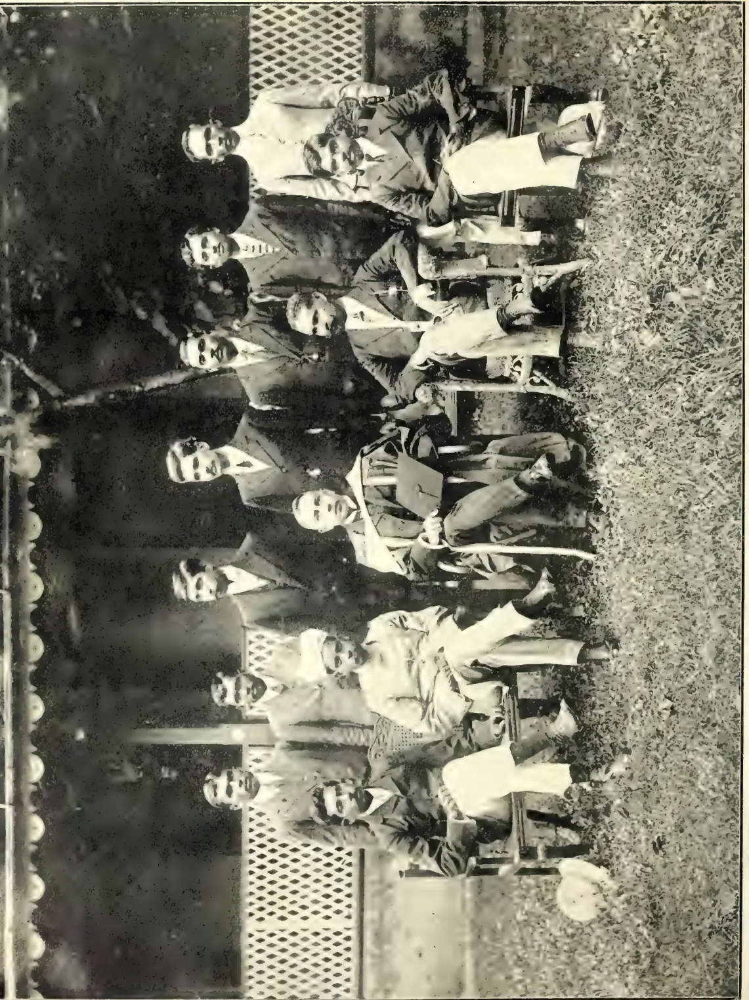
STAFF OF THE CEYLON AGRICULTURAL SOCIETY.
Reading from left to right, back row:- P. B. M. BANDARANAYAKE, A. MADANAYAKE, W. A. W. GUNAWARDANE, M. J. A. KARUNANAYAKE, N. M. JAYASURIYA.
AUGUST, 1912.]181CEYLON AGRICULTURAL SOCIETY:
REPORT FOR 1911-1912.
MEETINGS, MEMBERSHIP &c,
The previous Annual General Meeting of the Society was held on June 20, 1911.
During the year under review the following new members joined:—J. Littlejohn; H. O. Beven; G. S. Schneider; Stuart R. Cope; J. Brown; M. Valoopillai; N. D. Abeyagunawardene; H. S. Stevens; D. Fairweather; J. B. Dickie; J. Hedde; H. E. E. Koch; E. A. Freeth; The Superintendent, Stckesland Group; John Tilly; E. H. Beling; Norman G. Westland; Henry Mason; E. S. Jorgenson; C. J. Owen; W. G. Bayley; W. Gibson; H. Woltersdorff; E. G. Adamaly & Co.; P. Alf. L. Dias; Henry A. Perera; Camora Municipal, Margao; H. A. McMullin; Bosanquet & Co.; J. D. Finch Noyes; A. H. Taylor; J. Wells; S. P. Charles; C. S. Abayaratne; E. L. F. de Soysa; A. A. Ward; John X. Fernando; Major C. R. Hodgins; R. D. Scoble Hodgins; Superintendent, Capt. Garden, Akmimana; G. H. Hall; Volkart Bros.; C. A. Odiris de Silva; M. D. W. Roberts; Rosslyn Koch; Edgar L. Ephraums; K. Kantapodi; the Hon. Mr. P. Ramanathan; the Hon. Mr. J. N. Tisseverasinghe; H. M. Drummond Hay; R. P. P. Weerasuriya; S. Weerakody; E. Buultjens; St John Jonklaas; Ong Gyork Lin; A. J. Kellow; J. Homer Vanniasingham; A. E. Byrde; A. C. T. Meyer; D. L. Jayatilleka; H. W. Boygada, Ratemahatmaya; C. S. Braine; William R. Webster; J. F. Templer; T. Dell; T. B. Worthington; E. C. Shelton Storer; F. T. Coore; G. L. Smith; B. O. Dias; B. W. Bawa; Eastern and Pacific Trading Co.; G. B. Stuart; P. G. Wood; C. D. Waddilove; and the Hon. Mr. Anton Bertram. The total number up to date is 914.
Meetings of the Board were held on June 20, August 14, and October 16, 1911; January 8, March 8, and May 9, 1912. His Excellency the Governor presided at four meetings, the Hon. Sir Hugh Clifford at one, and the Hon. Mr. Booth at one.
The principal subjects that came up before the Board were: The All-Ceylon Exhibition; Pasture Land and Forage Plants; the Tobacco Industry; Experiments bearing on the Cultivation of Paddy; Fruits worth growing in Ceylon; Lac Culture; Indigo; and Chena Cultivation.
A financial statement drawn up by the Society's Auditors (Messrs. Ford, Rhodes & Church) is annexed to this report.
PUBLICATIONS.
The arrangement of the Society's English monthly publication has been slightly modified by the present Editor, with a view to making the reading matter more presentable.
The Sinhalese monthly ("Govikam Sangarawa"), edited by the Superintendent of School Gardens, with the assistance of Mr. N. Wickremaratne, is extending its popularity, and its circulation has increased to 2,350.
The Tamil edition of the magazine ("Kamat Tholil Velakkam") has been entrusted to Mr. S. Chelliah, whose experience stands him in good stead in undertaking this work.
The following is a list of the Society's leaflets issued free to members of the Society. The letters E., S., and T. indicate respectively that they are available in English, Sinhalese, and Tamil:—Agriculture in Tamil Districts (E.), Caterpillar Pest in Paddy Fields (E.), Castration of Cattle—Mode of Operation (E.), Canker (Nectria) of Para Rubber (Hevea Brasiliensis) (E.), Groundnuts (E., S., T.), A Note on Chili Cultivation (E., S., T.), Rules to Govern the Management of Agricultural Shows (E.), Yams (Dioscoreas) (E., S., T.), A Note on Onion Cultivation (E., S., T.).
132[AUGUST, 1912.Prevention of Plant Diseases by Spraying (E., S., T.), Cotton Experiment Station, North-Central Province, 1903 (E.), Castration of Cattle (Instruments and Dressing), (E., S., T.), Kiushu or Japanese Paddy (E., S., T.), On the Importance of submitting Specimens when reporting Injury from Insect Pests (E., S.), Hints on Cotton Cultivation (E., S., T.), Useful Hints to Growers of Castor Oil (Eri) Silkworm (E., S., T.), Where Rubber will grow (E., S., T.), Agri-Horticultural Shows (Instructions for forwarding and arranging Exhibits) (E., S., T.), Shade Trees (Instructions for Planting &c.), (E., S., T.), Dumbara Tobacco (E., T.), Use of Salt for Manures (E., S., T.), Manioc Culture (E., S., T.), Dhall (its Cultivation) (E., S., T.), Method of taking Samples of Soil for Analysis (E., S., T.), Transplanting in Paddy Cultivation (E., S.), Bud Rot of the Cocanut Palm (E.), The Improvement of Local Races of Plants (E., S., T.), A Simple Preventive against Malaria (E., S., T.), The Use and Object of Agricultural Societies (E.), West Indian Yams (E., S.), Castration of Cattle during 1906 (Annual Report) (E.), Report on a Visit to India (E.), Notes on a Tour in the Southern Province (E.), The Conservation of Soil Moisture (E., S., T.), Rotation of Crops on Chena Lands (E., S., T.), The Stem Disease on Coconuts (E., S., T.), Diseases in Tobacco in Dumbara (S., T.), Results of Recent Experiments in Paddy Cultivation (E., S.), Arrowroot (E.), Further Notes on Transplanting and Manuring Paddy (E., S.), Rice Bug or Paddy Fly (E., S.), Nitrogen-gathering Crops (E., S.), Silk Cotton Tree (E., S.), Two Valuable Green Manures (E.), Rinderpest (G. V. S. Circular) (E.), Hints to Tobacco Growers (E., S., T.), Soy Bean (E.), Notes on Grafting and Budding (E.), Hints to Village Coconut Cultivators (S.),
At the end of last year Dr. J. C. Willis, on his retirement from the Government Service, relinquished his duties as Organizing Vice-President and Editor of the Society's Journal, since which Dr. R. H. Lock has conducted the publication.
The duties of the Secretary have carried him far afield, and in the course of his peregrinations he has practically traversed the whole Island, visiting not only centres of population, but penetrating into the interior of the Provinces.
The Society employs nine Instructors, of whom seven are engaged in the Sinhalese districts and two in the Tamil. These Instructors may be classified into groups thus:—
Group A.—Messrs. S. Chelliah, L. A. D. Silva, and N. Wickremaratne, who constitute the senior staff of officers, possessing, relatively to the order in which they are named, more extensive experience than the rest.
Messrs. Chelliah and Silva are trained students of the late School of Agriculture. The former, who is thoroughly conversant with the agriculture of the Tamil districts, is in charge of the Northern Province, with his headquarters at Jaffna, and also supervises the work of the Instructor stationed at Batticaloa. Mr. L. A. D. Silva is in charge of the Ratnapura District, with which he has made himself perfectly familiar.
Mr. N. Wickremaratne (like those who follow) had his training divided between the Government Experiment Stations and the Stock Garden. He (as well as Mr. Chelliah) has had the advantage of visiting some of the agricultural stations in South India, and also went through a "short course" at Pusa with special reference to lac cultivation.
Mr. Wickremaratne is in charge of the Southern Province, with his headquarters at Galle, and has supervised the work of the Instructor working in the Hambantota District. Previously he did good work in the Western Province, and also initiated a special scheme for the Kegalla District.
AUGUST, 1912.]133Group B.—This class comprises the officers who come next in respect of length of service, viz., Mr. W. Molegode, who is in charge of the Central Province and Uva, where, as a member of the Kandyan community, he has special opportunities for furthering the objects of the Society. Mr. N. M. Jayasuriya is stationed for a term in the Kegalla District, and is giving a good account of himself.
Group C.—Messrs. A. Madanayake, P. B. M. Bandaranayake, M. J. A. Karunanayake, and C. K. Sathasivam make up the junior staff of officers, who have hitherto been working under supervision.
Mr. Madanayake was recently sent to Kurunegala on probation, and is in charge of the Balalla garden; Mr. Bandaranayake has been stationed in the Hambantota District, giving particular attention to paddy work at Tissamaharama. Mr. Karunanayake has been in charge of the Society's seed store in Colombo, and has had to attend to the distribution of plants and seeds, while paying weekly visits to the Bandaragama garden.
The office staff is composed of a head clerk (Mr. J. S. de Silva), assistant clerk (Mr. W. A. W. Gunawardene), and two junior hands, whose special duties are as typists and registering clerks.
I should like to make special mention of the faithful services rendered by Mr. de Silva and his assistant, and express my appreciation of the substantial work done by the former from the inception of the Society.
These gardens, which vary in size from two to fifteen acres, are carrying on work of a special character, according to the districts which they serve.
The Bandaragama garden, situated seven miles from Panadure, is in the main an orchard of oranges and other kinds of tropical fruit, including a large section under pineapples. A small extent is devoted to vegetables, and the Government circuit bungalow, which has been erected on the premises, stands on an ornamental plot of ground.
The Society, acting on the pound-for-pound principle, contributes to the maintenance fund a sum equal to that raised locally. The garden, which is directly under the supervision of Mr. J. A. Wirasinghe, Mudaliyar of Rayigam Korale (whose interest in the improvement of his district is as genuine as it is sustained), was started by Mr. Conroy when Assistant Government Agent of Kalutara, and receives the warm support of his successor, Mr. Plant.
The Kegalla garden, situated in the town, receives similar aid. It was originally maintained by the Local Board, and its subsequent development begun during the time of Mr. Conroy, was effected by Mr. Wickremaratne, and is being kept up by Mr. Jayasuriya.
The Balalla garden, three miles from Maho railway station, has been worked under considerable disadvantages, situated as it is in a backward part of the North-Western Province, where labour is difficult to get and severe droughts prevail. The object with which it was started was to demonstrate the growing of dry-land crops according to a system of rotation outlined in the Society's leaflet No. 35. The Wanni hatpattu, in which Balalla lies, is known to have been at one time a cotton-raising district, and it was hoped to revive the industry by encouraging the cultivation of a better variety of cotton than the coarse short-staple "Tinevelly," which was commonly grown in chenas from early times. So far the idea of carrying out a system of rotation, with cotton as the chief crop, cannot be pronounced a success, but the results from cotton itself have been decidedly encouraging, so much so that the proposal to close the garden, owing to obstacles in the way of efficient maintenance, has not met with the approval of the Govern-
134[AUGUST, 1912.ment Agent of the Province, who is inclined to think that it serves a purpose, and has offered to assist in overcoming the difficulties experienced in its upkeep.
The Weragoda garden, situated three or four miles from Ambalangoda, was originally started and worked for some years as a market garden by a syndicate of members of the Galle Wellaboda Pattu Society, with the result that the cultivation of vegetables of good quality was largely taken up in the district. Subsequently it was decided to clear a further area of land and grow more permanent crops, especially fruit trees; and the offer of Mr. N. A. S. Jayasuriya, a member of the local society, to take over and work the garden was accepted. Mr. Jayasuriya, who is keenly interested in its development, has met all expenses for the last few years and given his personal supervision to the work. As a centre for the spread of fruit cultivation this garden should prove of considerable value, and Mr. Jayasuriya deserves the thanks of the Society for the very useful work he is carrying on.
At Kalalgamuwa, situated between Teleniya and Alutnuwara, a garden has been worked for the past two years under the direct supervision of the teacher of the Government boys' vernacular school at Mediwaka, advised by Mr. Molegoda. The teacher, who is as enthusiastic as he is energetic, has a good record of work in his school garden, and his voluntary offer to take charge of the garden was, in view of his influence in the district, readily accepted. Here the cultivation of various new crops was taken in hand, the chief of which is Cotton of different kinds—Sea Island, American long-staple, and Egyptian. Of these, the Black Rattler—recommended by Prof. Dunstan—gave the most satisfactory results. Other crops that have done well, and are likely to be taken up in the district, are Coriander—for which there is a good local demand, at present met by importations from India—Hickory King Maize, and the Cluster Sweet Potato. The last mentioned is fast spreading through the Island.
An effort made to establish a garden for the Chilaw-Puttalam District was, owing to a variety of circumstances, not a success.
The garden at Madipola, fifteen miles from Matale, is devoted to an experiment in the rotation of dry land crops (referred to previously). Here, too, the services of the local schoolmaster have been requisitioned. The garden is, in fact, only an extension of the school garden proper, and has so far received careful attention from the teacher.
The extension of fruit and vegetable cultivation in the Provinces, through agency of circuit-bungalow gardens, is being carried on in the Kegalla District with the co-operation of the Assistant Government Agent and his Ratamahatmayas. A proposal to work out a similar scheme for the North-Central Province has been put forward by the Government Agent.
With a view to giving the Agricultural Instructors a permanent interest at headquarters, it is suggested that a stock garden, one or two acres in extent, for the distribution of seeds and plants, might be established with advantage; and the possibility of acquiring suitable blocks of land for the purpose is being inquired into. These stock gardens should also be able to conveniently meet the requirements of school gardens.
The usual indents for exotic vegetable seeds and grafted fruit plants were made for the south-west and north-east monsoon seasons, and a large proportion of the members took advantage of the facilities offered by the Society for procuring good seeds and plants at actual cost price. The number of fruit tree grafts ordered during the year was 1,622.
AUGUST, 1912.]185Satisfactory reports have been received regarding the mango grafts, many of which have already come into fruit. Oranges are rather slower in coming to bearing, but the following report received from a landowner in Chilaw is an indication of what may be expected from oranges grown in suitable situations :—" I have had wonderful success with your oranges on my Chilaw property. The trees are scarcely ever without fruit ; at present they have between 500 and 1,000 on each tree, and I wish you could see them. I have not applied any sort of manure to my trees."
Few of these societies can be said to be alive to their own interests. Among those in active operation are the Dumbara, Kegalla, Wellaboda pattu (Galle), Hambantota, and Rayigam korale branches.
The Dumbara society has served as a model of what a branch society should be, and its success in improving the agricultural status of the people of Upper and Lower Dumbara, and infusing into them a practical interest in rural economy, is mainly due to the disinterested efforts of Mr. William Dunuwille, Dissava ; Mr. R. E. Paranagama, Ratemahatmaya ; and Mr. C. Rasanayagam, Mudaliyar. The reorganization of the majority of branch societies is much to be desired, and is a matter that calls for early attention.
In the Kalutara District the annual village shows for the Totamunas and the Rayigam and Pasdun korales were held at Kalutara, Bandaragama, and Bellana, and showed a decided advance on previous efforts. These village shows have now been held for three years consecutively, and their influence for good has been considerable.
Other shows in contemplation were postponed in view of the All-Ceylon Exhibition to be held during the first week in July, 1912. The idea of holding an exhibition representative of the whole Island originated with the Secretary, who for some time found it difficult to induce a member of the Board to make it the subject of a resolution, till Mr. John Ferguson, on his return to the Island after an absence in England, undertook to father the idea, and successfully pleaded for such an undertaking at a meeting of the Board held in April, 1911. The Secretary of the Society was appointed Secretary of the Exhibition Committee, but was compelled to retire from the latter office on medical advice.
By the time this report is in print the Exhibition will be un fait accompli, and, judging from the elaborate arrangements being made by the able Secretaries to whose hands it has been entrusted, should prove thoroughly representative of the agricultural and industrial resources of the Colony.
The senior instructors have acquired considerable experience with regard to the conditions and requirements of the paddy cultivator in the various districts of the Island, and I should here wish to mention the special work done by Messrs. Chelliah and Wickremaratne in connection with demonstrations in the working of implements, proper methods of tillage, transplanting and other cultural details.
As regards the manuring of fields, it would appear that the most economical and efficient means is the use of green manure crops, such as cow pea (Vigna catiang), sun-hemp (Crotalaria juncea), and wild indigo (Tephrosia purpurea). The adoption of such a system of conserving the fertility of the soil is full of promise to an industry which in most parts of the Island is in a sad state of depression.
136[AUGUST, 1912.Of recently introduced paddies, the most popular is that known as Ras-cadam, a Central Indian variety, obtained through the Madras Department of Agriculture.
One of the most important means for effecting the improvement of the yield of paddy, which in some parts is incredibly low, is seed selection. It is to be regretted that so little work has hitherto been done in this direction.
The Ordinance dealing with these societies has now passed into law, and it only remains for the initiative to be taken by those who desire to benefit by its provisions. Up to now only the Dumbara Agricultural Society has extended the practical benefits of an Agricultural Bank to its members, and given them an opportunity of realizing the advantage of financial aid granted on a constitutional basis.
The Wellaboda pattu (Galle) branch has decided to follow the lead of Dumbara, and it is to be hoped that other bodies will not be slow in deciding to provide the goiya with his much-needed capital, to the absence of which is to be attributed his lack of enterprise and contentment with his present position as a producer.
The complete report of Mr. J. van Leenhoff, the tobacco expert, on the tobacco industry of the Island, has been published, and it is, therefore, unnecessary to make more than a passing reference to it.
The chief point which Mr. van Leenhoff brings out is that no extensive growth of a new tobacco should be undertaken until it is definitely ascertained by scientific investigation that the particular variety is the best suited to local conditions of soil, climate, &c.
In Dumbara a syndicate of the local society's members are growing and curing tobacco for the foreign market, with the advice of Mr. J. V. L. Valabane, a Dutch tobacco planter. The main object in view is to grow a good filler leaf, which is considered to be most likely to succeed, instead of attempting to compete with Sumatra in producing a high class wrapper. The cigars manufactured under Mr. Valabane's supervision have found a ready local sale.
Cotton growing is making slow progress. It would appear that though small plots of Sea Island have done very well, the American long-staples are most likely to succeed under extensive cultivation. Reporting under date May 7, 1912, on the Black Rattler cotton grown at Tumpane, Prof. Dunstan states:—"The lint is clean, fairly lustrous, soft, fine, cream coloured, and free from stains; with 'middling' American at 6.57d., its commercial value may be put down at 8½d.; the cotton is of good, useful quality, and would be readily saleable in the United Kingdom."
The varieties known as Cambodia and Sakellarides have stood dry conditions particularly well.
The recent fall in the European cotton market has been most unfortunate just at this juncture.
As agents of the British Cotton-growing Association, Messrs. Freudenberg & Co. have done much to push the industry, but it would appear that what is wanted is a series of well-controlled plantations of respectable size, and in the most promising districts, particularly those in which the ordinary crops of the Island do not thrive.
AUGUST, 1912.]137SERICULTURE.The Silk Farm at Peradeniya has been working steadily under the control of the Salvation Army, and making practical progress in the direction of a local silk industry. The special sericultural exhibit which the Society is making at the All-Ceylon Exhibition will better explain the position to which the work at the farm has attained than any mere description.
Samples of silk forwarded to the Imperial Institute were reported on as marketable silks, and valued at from 12s. to 13s. per lb., with East Indian Surdah at 11s. 3d. to 11s. 9d. per lb.
APICULTURE.The long-expected machine for making comb-foundation for Apis indica has been received, and should give a considerable fillip to the operations of local apiarists, chief among whom are Messrs. A. P. Goonatilleka, J. P. Obeyesekere, and J. A. Victor Perera. The demand for comb-foundation is likely to extend to India and other tropical countries.
It would appear that the ultimate success of a local industry depends upon the exploitation of the indigenous honey bee, rather than that of a foreign species.
ACKNOWLEDGMENTS AND THANKS.In conclusion, I desire to record the thanks of the Society to His Excellency the Governor as President of the Board, as well as to the Hon. the Colonial Secretary and to other Government officials who have in various ways furthered the work of the Society.
The Society owes much to Prof. Wyndham R. Dunstan, Director of the Imperial Institute, for the ready manner in which he has responded to the many inquiries that have been submitted to him, and the investigations and reports he has made. The Society has been fortunate in having so well-equipped an institution as its ally, and the periodical Progress Reports that have been published afford ample testimony of the valuable assistance it has rendered.
The expert advice of the scientific officers at Peradeniya has been frequently sought and willingly afforded.
I would extend a hearty welcome to the new Director of Agriculture, Mr. R. N. Lyne, in whose hands the future destinies of the Society are in safe keeping, and before whom lies a great work in consolidating the various economic interests (agricultural, horticultural, and botanical) of the Colony.
C. DRIEBERG,
Secretary.
Colombo, June 29, 1912.
18 138[AUGUST, 1912.| RECEIPTS. | Amount. Rs. c. |
Total. Rs. c. |
PAYMENTS.—(Continued.) | Amount. Rs. c. |
Total. Rs. c. |
|---|---|---|---|---|---|
| Balances at Bank of Madras, &c., December 31, 1910 |
— | 40,433.60 | Brought forward ... | 443.00 | 22,411.91 |
| Members' Subscriptions:— | Printing | ||||
| Local subscriptions for 1908 | 11.00 | Tamil edition | 200.00 | 5,911.16 | |
| Do 1909 | 76.00 | ||||
| Do 1910 | 626.00 | Agricultural Shows:— | |||
| Do 1911 | 4,277.00 | Market Shows... .. | 150.00 | ||
| Do 1912 | 416.00 | Cost of medals, die, &c. ... | 88.00 | ||
| Do 1913 | 24.00 | Grants to Tissa and Dedigama | 100.00 | ||
| Foreign subscriptions | 379.00 | 338.00 | |||
| Less paid to Ceylon Observer |
275.25 | Less cash received for medals | 113.00 | 225.00 | |
| Life Members' subscriptions | 103.75 | 5,633.75 | Sericulture Experimental Farm:— |
||
| Government grant for 1911 | — | 30,000.00 | Coolies' wages... .. | 12.18 | |
| Interest:— | Commanding Officer, Salva- tion Army, grants ... |
2,000.00 | |||
| On Bank of Madras account | — | 686.97 | 2,012.18 | ||
| Total | ... | 76,754.32 | Less sale of Cocoons ... | 1.43 | 2,010.75 |
| Experimental Gardens:— | |||||
| Balangoda ... .. | 150.00 | ||||
| Balalla ... .. | 240.67 | ||||
| Grants to Kegalla, Kalal- gamuwa, Madipola, and Bandaragama gardens... |
525.00 | 915.67 | |||
| Seed Store at Government Stock Garden:— |
|||||
| Teakwood shelves ... | 55.00 | ||||
| Seed boxes ... .. | 17.50 | ||||
| Miscellaneous expenses ... | 85.22 | ||||
| 157.72 | |||||
| Less cash received, being un- expended balance of vote |
91.19 | 66.53 | |||
| 14,414.62 | Sundry Payments:— | ||||
| Agricultural implements | 137.75 | ||||
| Apiculture expenses: cost of comb-foundation ma- chine ... .. |
500.65 | ||||
| Live Stock ... .. | 243.46 | 881.86 | |||
| 7,997.29 | Tobacco Experiment:— | ||||
| Coolies' wages, &c. | 4,526.32 | ||||
| Salary of Superintendent, &c. | 2,812.50 | ||||
| Travelling expenses ... | 393.94 | ||||
| Sundry expenses ... .. | 145.72 | ||||
| Reports ... .. | 560.00 | ||||
| 8,438.48 | |||||
| Less Government contribution Rs. 1,750.00 |
|||||
| Less part refund of advance ... .. |
300.00 | 2,050.00 | |||
| 2,050.00 | |||||
| 6,388.48 | |||||
| 38,811.36 | |||||
| 443.00 | Carried Forward |
| PAYMENTS.—(Continued.) | Amount. | Total. | |
|---|---|---|---|
| Rs. | c. | Rs. c. | |
| Brought Forward ... | 38,811.36 | ||
| Seed Supply:— | |||
| Excess purchases over sales | — | 12.68 | |
| Purchases. | Rs. | c. | Rs. c. |
| Vegetable seeds | 166.18 | 166.35 | |
| Paddy ... | 66.77 | 3.50 | |
| Cotton ... | 43.72 | 5.30 | |
| Pila ... | — | 189.65 | |
| Grafted plants | 1,744.63 | 1,468.81 | |
| Congayam grass | 7.49 | — | |
| Soy beans ... | 307.24 | 753.79 | |
| Ground nuts ... | 39.75 | 5.00 | |
| Tobacco ... | — | 5.00 | |
| Sundries ... | 147.93 | 20.60 | |
| Forward | ... | 38,824.04 | |
| PAYMENTS.—(Continued.) | Amount. | Total. | |
|---|---|---|---|
| Rs. | c. | Rs. c. | |
| Brought forward | 38,824.04 | ||
| T. purpurea ... | 144.72 | 68.10 | |
| Coconut ... | — | 63.00 | |
| Chilli ... | 42.26 | — | |
| Expenditure in distribution | 51.59 | — | |
| 2,762.28 | 2,749.60 | ||
| (Excess purchases, Rs. 12.68.) | |||
| Balances in hand:— | |||
| At Bank of Madras | 37,871.04 | ||
| Stock of stamps | 59.24 | ||
| 37,930.28 | |||
| Total ... | 76,754.32 | ||
We certify that we have prepared this account of Receipts and Payments from the books of the Society, and that to the best of our belief it is correct.
Colombo, April 20, 1912.
FORD, RHODES, & CHURCH,
Accountants.
One of the most interesting plants at Peradeniya is the Giant Orchid which is now in flower. It is to be found just outside the Orchid House, on a raised mound. This species (Grammatophyllum speciosum) is a native of Malaya, and was introduced into Ceylon before 1880. It is normally an epiphyte, i.e., it grows on the trunks of trees, but it is able to grow equally well when planted in the ground. The Peradeniya specimen was treated as an epiphyte until 1896, when it was removed to a specially prepared mound, with the result that it flowered for the first time in 1898. The flowers are greenish yellow, spotted with reddish brown, and may attain a breadth of six inches; one hundred or more flowers are grouped in a long spike on a stalk four to six feet high. The Peradeniya specimen has borne more than twenty such flowering stalks at the same time, but at present it is not so luxuriant. A photograph of this interesting species was published in the Tropical Agriculturist for September, 1905,
This is the designation which Mr. O. W. Barrett, in writing to the Philippine Agricultural Journal, gives to the banana, which he tells us has travelled further and helped to feed more human beings than any other fruit.
The origin of the words "banana" and "plantain" are obscure. They are really interchangeable, though some would confine banana to the dessert fruit and plantain to the cooking variety.
There are said to be 250 or more kinds of bananas and plantains. It is probable that all these were evolved from the numerous wild species found in Africa and Southern Asia.
Dr. O. F. Cooke, an American authority, believes that the banana was originally grown as a root crop till the value of the fruits, rendered seedless and of better quality by cultivation, was discovered.
Among banana preparations which are little known are a wine, champagne,
140[AUGUST, 1912.cordial, coffee, sugar, vinegar, flour and figs.
Costa Rica alone produces over 9,000,000 pestos, which is about half of the total value of the exports of that country.
Jamaica produces 15,000,000 bunches valued at 8,000,000 pestos, the bulk of which goes to the States and the rest to Europe. Brazil ships over 500,000 bunches to Argentina: Paraguay sends to Buenos Ayres, Honduras exports nearly 4,000,000 pestos worth to the States, while Panama sends nearly 3,000,000 pestos worth.
About 130 "banana boats" ply between tropical America and the United States. Each can carry from 20,000 to 60,000 bunches. The fact is mentioned, which is little if at all known locally, that the banana produces at least three
and that much depends upon the proper selection and treatment of these.
By special treatment it has been found that the banana can be made to produce seed.
Dr. Philip Schidowitz deals with this subject in his able lectures on rubber at the Royal College of Science. It had not been ascertained whether the nitrogenous insoluble matter present in considerable quantities in some rubber does not play an important part in regard to quality. The common idea that rubber contracted under heat is not correct; it only applies to rubber in a state of tension. There is no connection between viscosity of a rubber solution and the strength of the material.
The materials employed in
that is the manufacture of rubber articles, comprises, beside rubber, such substances as mineral and organic fillers, pigments, sulphur and vulcanizing ad-
junets. Rubber and sulphur alone are not enough. A tyre cover so made would soon be cut to pieces.
As regards rubber substitutes the only question is whether at the price they could be sold it would be as good or better than rubber.
Rubber is used extensively for lighting and power work, but not so much as before for telegraph and telephone cables. Rubber is not an ideal insulator, but properly made, rubber mixture is of the greatest value, and a superior grade rubber could not be improved upon
Owing to high prices, however, rubber has had to make way for lead and bitumen compositions. For deep submarine cables gutta-percha is almost exclusively employed. The advantage it has over rubber is that it is plastic and readily jointed, and good gutta-percha mixings do not harden at ordinary low temperature. The falling off in the high grade gutta-percha would necessitate the use of rubber for submarine cables, and the difficulty at present attending its use could be got over. One great advantage with regard to rubber is that manufacturers could always rely on a large, constant and homogeneous supply of the pure material.—(Summarised from the Indian Rubber Journal.)
Mr. F. J. Warth, Agricultural Chemist, Burma, writes an interesting account of this industry in the Agricultural Journal of India (April 11, 1912).
The total cultivated area in Burma is about 135 million acres, of which 10 millions are under paddy, and the produce of nearly 6 million acres is consumed locally.
The value of paddy and its products at present amounts to 70 per cent. of the entire export trade,
AUGUST, 1912.]141In 1895-6 the rice exports were valued at 96 million rupees; in 1909-10 it rose to over 222 million.
Almost all the paddy is husked and milled before shipment. A large milling industry, and transport trade by rail and river, is fed chiefly by the paddy crop.
The average annual export of rice and its products during the last five years amounts to nearly 2½ million tons.
Bengal, East Bengal and Assam, Burma and Madras together
of the rice grown in the Indian Empire.
Statistics show that while in Bengal and Assam the population is about two per acre of paddy, there is just one individual per acre in Burma. This explains why Burma is able to export so much.
Allowing for waste during storage, the high seed rate and other causes, half an acre per individual may be safely allowed as the rate of consumption. This means a total, as already stated, of 6 million acres per annum. As 10 million acres are cultivated, there is available for export something over 4 million acres. Taking '65 to '7 tons as the average output per acre, this means 2·5 to 2·6 million tons exported.
So much as regards the present; what of the future? That depends greatly upon the increase of population. With the favourable agricultural and economic prospects of the country it may be assured that the rate of increased production which has occurred during the last decade (14 per cent.) in spite of the increase of population will continue for some time to come at least.
It may be reasonably supposed that in fifty years' time there will be a population of 20 millions, for which the 10 million acres at present under cultivation will just suffice. But there are over 11 million acres of cultivable waste land, and it may be taken for granted that 4 million acres of this could be brought under paddy; so that Burma could still maintain the present rate of export, provided
the fields do not decrease. All things considered, it is probable that the fields will be maintained. It is likely also that reduction of the present excessive rate of sowing and prevention of loss in storage and in milling will help to increase the available amount of paddy.
It would be interesting to know what form the first implement for the cultivation of the soil may have taken—interesting, but probably quite impossible. It is permitted, however, to hazard an opinion; and it may be guessed that the unshod semi-barbarian would either employ a forked stick to tickle the virgin soil, or, when once the use of metals was discovered, loosen the earth to a greater depth by the
The spade, in its present form, with a clamp for foot pressure, would be useless until civilisation had advanced to the stage of the wearing of shoes; so that probably all the tools used for digging were sharp-pointed in the nature of a fork. Even as late as the 17th century a spade of triangular shape was used, as portrayed in Husbandry Spiritualized. In Lawson's New Orchard, of earlier date, a
All the ancient nations of the East possessed husbandry implements of an advanced kind, including pumping machinery for the raising of water with which to irrigate gardens. They had spades, forks, rakes, shears for the clipping of hedges and shrubs, hooks, and scythes; all these by no means inferior to those in use here, at any rate, up to a not-far-distant date. Fitzherbert (1,534) tells his readers that forks were made of wood as well as of iron, and describes the right kind of branch for making them. Rakes were often toothed with willow wood. He also mentions knives used for various purposes, and
142[AUGUST, 1912.SCYTHES, STAFF-HOOKS, SICKLES, HOOKS,
MALLETS, SAWS
of different kinds, hatchets and bill-hooks. Tusser (1575) notes among other tools, the trowel and the dibble. In an early engraving of garden tools there is a composite tool of wonderful ingenuity, of which the head is a hammer, the shaft a file, and the end a gimlet! The knives of this period did not shut, but were made like other small tools, with an eye for hanging on the workman's belt.
At one time knives were imported from Liege, and were known in the north as "joctelegs," or "joclegs."
An ancient forefather of the
GARDEN ENGINE
is shown in one of the gardens in Gardeners' Labyrinth; a labourer is represented watering a flower-bed by means of this engine, which is merely a movable force pump. In another engraving water is being drawn from a well by means of a pail. For watering small seeds a primitive and yet highly scientific method was employed. An earthenware pot, with perforated bottom and a very narrow opening was dipped into a cistern or pool; when full the hole at the top was stopped with the thumb. This prevented the egress of the water until the spot was reached at which it was intended to be used, when, the thumb being withdrawn, the water descended like rain.
THE TRAINING OF FRUIT TREES
to walls and espaliers did not become customary until the reign of Elizabeth, and the first ligatures were made of the inner bark of Elm, or the small twigs of Willows, the material of which the espalier was made being wood. Long before this period, however, a practical knowledge of outdoor gardening was quite common. The garden was, in the main, the care of the housewife, but we read of trenching and other operations, which show that the benefit of deep cultivation was well understood, and this work must have been performed by male labourers.
It is interesting to note, in connection with the subject of
DIGGING,
that the old name for spade was "spitter," a word now obsolete. From this word we derive the expression "a pit of turf," the word used in Scotland being "spading."
Forcing used to be carried out in a very primitive manner. Melons were planted on hot-beds composed of manure or other suitable material, and were protected by covering of glazed paper. The next step was the forcing of wall fruit and grapes by banking the heated manure against the opposite side of the wall—wood was used, hence "pales," the better word—to that on which the trees were trained. Next we have
THE IDEA OF A FLUE
carried beneath the floor of a greenhouse (roofed with slate!); and Evelyn, who described the method with enthusiastic admiration, thought it so vast an improvement on the old open, charcoal fire, that he took the trouble to have the whole system illustrated with engravings. A few years later the flues which heated the vine wall at Belvoir were supplemented with glazed sashes placed against the walls. There we have at once the germ of the modern greenhouse, all later developments being merely improvements on the original idea. It was not long before Pineapples and tender exotics began to be cultivated, and the flues were arranged to meet the varying demands of horticulturists. The flue-heated structures were extremely satisfactory in many ways. The structures were adapted in 1788 (at first)
TO STEAM HEATING,
but when, about 1827, hotwater heating became more usual, they served this purpose equally well, and even now one may find, here and there, a flue-heated hot-house.
The proper form of a boiler has always been a serious question. The saddle was early introduced, then there was a
AUGUST, 1912.]143conical form, so early as 1840, and the tubular, an improvement on the conical, introduced not long subsequently by Weeks, of Chelsea. More than forty years ago the veteran, Henry Cannell, invented
and the Trentham, so usual in large establishments, was an even earlier introduction. With our perfected screw-down valves, we can scarcely comprehend the difficulties the early heating engineers experienced. It was not unusual to have a boiler for each structure, and an early attempt at heating more than one consisted in leading the heated to an elevated tank with metal plugs, which were withdrawn to allow the water to circulate through the apparatus in the various houses.
The main principles of circulation were soon discovered, though it was long before the arrangement of pipes was sufficiently simplified. It seems amazing now to think that, quite a short while ago (1829-30), the question was seriously discussed whether iron or earthenware is the better material for the conveyance of the hot water!
marks a definite stage of advance. Until about 1831 all grass had to be cut by means of a scythe, or some other hard-worked instrument; but at that time an adaptation of Budding's machine for removing the inequalities of cloth came into use. The principle of all lawn mowers is the same as that of the original one, but many improvements have been made in the carrying out of the idea.
have been in use for very many years; but it was not until Reid invented the ball-valve that the type of syringe appeared which is now universally used. This method is adopted to garden engines of all kinds, and has been employed for nearly a century. Vermorel's "Eclair" sprayer is another great improvement, and so ingenious and satisfactory are now most of the sprayers in use that it
would seem almost impossible to make further advances in this direction.
again, have undergone tremendous changes during the present century. The old way was to sit by an iron fumigating pan, feeding the fire with strong-smelling tobacco paper, until the building was sufficiently disinfected. At the present day it is only necessary to arrange the vaporising equipment, apply a lighted match to the fuse, and walk out, knowing that the deadly nicotine will do its work untended. In the direction of
the advance made has not been quite so striking. A century ago there were secateurs, averruncators, tree-pruners, and flower and fruit gatherers, and these were quite as common as garden shears, forks, and spades. Of course, the secateurs and French branch-pruners of the present day are superior to the old type. In these, as in most implements, the advance has been in the direction of greater lightness, combined with equal or, perhaps, greater strength.
If we compare the clumsy methods the early
employed, one of which was to prepare the tree to be lifted, and leaving it till a hard frost had rendered the ball of soil hard and unbreakable with the systems which have been in use now for a number of years, the advance will be seen to be very great. The first great step in advance was that by which Sir Henry Stewart studded his park with large trees, the machine used being composed of two wheels and a long pole, what is now termed a janker. It is first illustrated and described in Menteth's Planter's Guide (1824). A little later, McNab, of Edinburgh, invented a system of raising the trees or shrubs. Then, about fifty years ago, Charles Kelly in Cheshire, successfully, but at great expense, moved large trees up an inclined plane, and lowered them into position in the same way. I am not sure whether
144[AUGUST, 1912.Baron or Kelly was the earlier, their systems being on similar lines.
Space does not permit of drawing attention to the numerous modern expedients for
POT-WASHING, WEED-KILLING, VERMIN EXTERMINATION,
and other necessary operations. All these have been placed at the disposal of the gardener within a comparatively short period, and have wonderfully lightened his labour and shortened his hours.—B. in Gardeners' Chronicle.
We give below a summary of a paper by Dr. F. L. Stevens, of the Porto Rico Agricultural College, originally read before the Society of American Bacteriologists at Washington, and reproduced in Science of June 28th :—
In spite of the close study of the relation of nitrogen to plant life, during the last two centuries, there still remains some of the most fundamental questions for solution.
It has been clearly demonstrated that NITROGEN IS ESSENTIAL TO PLANT LIFE, and certain of its functions in plant economy have been definitely ascertained; but it is rather puzzling to find that though a soil contains an abundance of available nitrogen sufficient for a number of crops, it is benefitted by the addition of still more nitrogen. It has been suggested that nitrogen compounds may serve other uses than by being absorbed or even assimilated. But what uses?
As an element of nutrition, however, the importance of nitrogen cannot be questioned; and this raises the question "IN WHAT FORMS IS NITROGEN AVAILABLE TO THE PLANTS"?
The answer to this has been emphatic, and has been accepted for many years, but it is thought that it has been founded on insufficient evidence and therefore likely to be modified as the result of further research.
The generally accepted view is that the nitrogenous food of plants takes the form of nitrates.
Nitrification is the result of two processes—the conversion of Ammonia into Nitrates and the latter into Nitrates—each process depending upon the activity of specific groups of bacteria. Ammonia is thus essential to nitrification, and ammonification of organic matter may be said to go on in all soils. Only in exceptional cases is ammonification retarded by the action of predatory protozoa. But
THERE HAS BEEN A MISCONCEPTION in supposing that nitrifying organisms are practically present everywhere—an assumption which a bacterial soil survey by Dr. Stevens shows to be unwarranted; so that while there is no deficiency in ammonification, the degree of nitrification may fall below the requirements of a good crop.
The reason for nitrification being less vigorous in some crops than in others is not known.
It may be due, in some cases, to excessive acidity, moisture, etc., but in others no reason is assignable. Abundance of organic matter cannot be said to check it, since it proceeds in pure cattle manure.
or the destruction of nitrates by bacteria is detrimental if it proceeds below the Ammonia stage, i.e., if it results in oxides or free nitrogen. The mixing of nitrates with blood, cotton seed, &c., should afford ideal conditions for denitrification, but no definite experiments have been made to ascertain what conditions favour or retard the process. Dr. Stevens thinks it absolutely necessary in bacteriological work to make tests in soils and not solutions, pointing out that organic matter inhibited nitrification in solutions but not in soils.
as we have been led to believe by scientific workers?
AUGUST, 1912.]145Organic nitrogen may be in the form of proteids, albuminoids, anides, and alkaloids, and the bulk of the soil nitrogen exists as acid-anides and amino and amino-acids. The tendency at the present day is to refer to ammonia as well as nitrates as being available to plants.
Neither actual manurial field tests nor water culture experiments have clearly determined the exact form in which nitrogen is taken up. Pitsch and Mazé believe that ammonia is not less valuable than nitrates in the case of some plants (e.g., maize). Peaty soils devoid of nitrates support an ample growth, while rice responds well to Ammonia in soils where no nitrification can be detected. The presumption is that certain plants respond readily to organic matter or ammonia, and that nitrification is often not an essential factor. The
is that Ammonia and Nitrates can be used by plants, but their relative availability has yet to be determined. That ammonification is the essential thing and nitrification is of secondary importance is indicated but has still to be proved. With definite knowledge we shall be in a position to meet the requirements of plants by raising or lowering the tendency to nitrification or denitrification. To attain such knowledge plant physiology must join hands with soil bacteriology.
Mr. Chatterton, Director of Industries in Madras, speaking at the recent Show held at Coimbatore, made special mention of a pump which he and Messrs. Massey & Co. have brought out, the working of which was demonstrated at the Show. It consisted of a H.P. oil engine driving through suitable gearing a pair of loose piston pumps. Each pump is 6" in diameter, and the pair are capable of lifting about 6,500 gallons per hour from a
depth of 40 feet. A smaller pump 5" in diameter is also made. It is driven by a 2 H.P. engine, and when fixed to a well 29 feet deep, it discharged 41,140 gallons per hour. A still smaller pump 4" in diameter discharged 1,900 gallons per hour lifting from a depth of 33 feet. The chief advantage of these pumps is that they can be worked in wells of considerable depths, and can deal with comparatively small quantities of water.
The following is an extract from a report by Mr. H. N. Thompson, Chief Conservator of Forests, Lagos :—
(a) Funtumia elastica. The overhead cover of large Forest trees is being gradually removed either by girdling or felling the latter. Since my last visit to the Reserve in February of this year a great many of the girdled trees have lost their leaves and died, so that the shade cast by them is now a negligible factor in retarding the growth of the rubber plants. The latter have responded well to the extra light let in and are showing good growth. The best examples of this species, however, are to be found in the plantations that were made on the sites of abandoned farms free of high Forest growth. Here age for age they are quite as good as any to be seen in the Communal Plantations of the Benin City district. There appear to be large numbers of wild rubber trees in the Reserve, but owing to the drastic treatment they received years ago from the natives (before the forest was created a reserve), they give a comparatively poor yield for their size. However, the results of recent tappings show that on the average their yield is just double that of the plantation trees that are 18 inches and upwards in girth.
Tapping was started in the Reserve on the 1st of May, and up to the end of June the results were as follows :—
19 146[AUGUST, 1912.Plantation Trees.| Number tapped | 1,954 |
| Yield of rubber in biscuits | 1,146 |
| Yield of rubber by weight | 114.6 lbs. |
| Average yield per tree | .96 ozs. |
| Number tapped | 354 |
| Yield of rubber in biscuits | 405 |
| Yield of rubber by weight | 40.5 lbs. |
| Average yield per tree | 1.8 ozs. |
The total yield of rubber up to the end of that period was 185 lbs. (this includes 30 lbs. still in the drying shed at Mamu) and the expenses of tapping amounted to £15 11s. 4d., or at the rate of 1s. 8d., a pound—a not unsatisfactory figure, but one capable of further reduction as the tappers become more expert. A further sum of £6 was spent in purchasing utensils, knives etc., but this being of the nature of capital expenditure has not been included in the cost. With that sum added on the average cost per pound amounts to 2s. 4d., or £21 11s. 4d. in all.
If the rubber sells at 5s. per lb. out here, the 185 lbs. will realize £46 5s. 0d., and the net profit will be £46 5s. 0d.—£21 11s. 4d.=£24 13s. 8d., or at the rate of 2s. 8d. a lb.
PREPARATION.The rubber was prepared in the same manner as in Benin, viz. by the boiling method with subsequent smoking and is of excellent quality. It should realize good prices at home. On the whole it is better prepared than that shipped to England last year from the Benin Plantations.
Very little injury has been done to the trees that were tapped with the "Christy" knife, and cuts a month or so old at the time of my visit had nearly completely healed up. It also appears probable, though the experiments have not yet been concluded, that by using this knife the trees can be tapped two or three times in one year with but little diminution in yield as compared with the results of the first tapping.
An extraordinary feature of the Mamu trees is the fact that the weight of the
biscuits prepared from their latices has been quite constant all through; ten biscuits weigh almost exactly one pound.
Consignment after consignment has given the same figures. Of course these results are mainly due to the same percentage of water being used to dilute the latex before it is boiled and to the same quantity of this diluted latex being used for the preparation of each biscuit, but even allowing for this the results show an extraordinary constant proportion of rubber to latex which appears to have been unaffected by the state of the weather at the time of tapping.
PARA RUBBER PLANTATIONS.The growth of this species is poor compared with results obtained in the moist districts close to the sea; it is also much exposed to damage from the large rodent known as the "Cut grass," and taking every thing into consideration I think it will be unprofitable to continue the cultivation of this species at Mamu.
RICE IN TRAVANCORE.The Agricultural Journal of India for April last contains an exhaustive account of rice cultivation in Travancore written by the Director of Agriculture. In that progressing State 1,200,000 acres are under cultivation, of which 500,000 represent rice fields; and yet the output of grain is insufficient for the local demand of a steadily increasing population. In 1909-10 the imports of rice amounted to Rs. 7,422,240.
It is suggested that the output should be increased by improved methods of cultivation.
Irrigation facilities, where the rainfall is deficient, have been provided by means of tanks and the damming of rivers.
Where manuring is done, cattle manure is generally applied to the first crop, 10 or 12 cartloads being applied per acre; while the second crop is manured with green leaf which costs from Rs. 3
AUGUST, 1912.]147to Rs. 4 per cartload, five or six of which go to the acre. The leaves of the following trees are employed:—Thespesia populnea (Sin. Suriya), Calotropis gigantea (Sin. Wara), Cassia fistula (Sin. Ehela), C. Auriculata (Sin. Ranawara), and Tephrosia purpurea (Sin. Pila).
The growth of these trees and shrubs is encouraged on all available waste land.
The following peculiar practice is in vogue in S. Travancore. When the seedlings are about 6 inches high water is let into the field, and the seedlings are lifted with soil (by means of the hand and hoe) and placed upon a layer of green leaves spread over the ground. It is found that by this the seedlings are induced to develop fresh roots within a month and to grow luxuriantly.
Thrashing is done (1) by taking the sheaves one by one and striking them on the ground, so separating out about 95 % of the grain. The balance is got out by treading of cattle or beating with long sticks. (2), the second method is treading by men who hold on to air beams and rub the ears between their feet. Though laborious, the process is said to be efficient.
One of the questions that came up before the meeting of the Board of Agriculture held at Pusa last November was the improvement and maintenance of pure seed of improved varieties of crops and the best organisation for effecting it. The report of the Committee, of which the Imperial Economic Botanist (Mr. A. Howard) was Chairman, was accepted by the Board and is expected to form the basis of future work as given below:—
The Committee consider that the general aim to be kept in view in the improvement of crops in India is the replacement, wherever possible, of the
existing mixtures by pure types characterized by increased yield and by improved quality.
The Committee strongly emphasise the necessity of all work in this direction being based on a study of the methods of pollination of the various crops investigated. It is especially necessary in the case of plants which cross-fertilize that this preliminary work be undertaken, otherwise much time and energy may be wasted in selection experiments and in variety trials which cannot possibly yield any useful result. It is desirable further that this initial work be conducted in the tract concerned, as several cases have recently occurred in which climate has considerably modified the usual pollination mechanism. For example, wheats cross to a far greater extent in the irrigated tracts of the Punjab than in the damper regions of India.
Selection.—In the case of self-fertilized crops the comparison of the progeny of single selected plants may easily result in the production of the desired improvement. In this case all that is necessary is to multiply the type and begin the work of seed distribution. In the case of plants which cross-fertilize, the procedure is not so simple, and special measures are necessary to avoid the consequences of vicinism.
Introductions.—In introducing varieties of crops from other tracts or countries it is necessary in the first place to study the constitution of the crop and to apply when necessary methods of selection. The immediate distribution of imported seed is undesirable owing to the possible prevalence of inferior types. Neglect of these precautions in the past probably accounts for the want of results in introducing exotic cottons into India.
Hybridization.—If the desired improvement cannot be obtained by selection, it may be necessary to cross suitable types and to evolve a new form combining the special characters desired,
148[AUGUST, 1912.Work on the above lines should result in the production of a stable agricultural type which alone should form the basis of future seed distribution.
In the testing of varieties of crops which cross-fertilize there are special difficulties to be borne in mind. The seed of different varieties grown side by side cannot be employed for the production of pure seed. For the same reason variety trials should not be conducted on seed farms unless special precautions are taken to isolate the plots from which the pure seed will be derived.
The Committee lay great stress on the maintenance, by the Botanist in each Province, of a collection of the improved types introduced into general cultivation by the Local Department. This collection will serve as a source from which pure seed can be obtained whenever it is necessary to restock the seed farms.
The Committee are of opinion that the following main principles should guide the work of the Agricultural Department in the growth and distribution of seed to cultivators in India. These are
Applying these principles to the present projects in India, it was felt that Madras and the Central Province supply the most useful examples of successful seed distribution which deserve the closest possible attention on the part of all concerned in this work.
Among the successful schemes of seed distribution in Madras the replacement of the mixed crop by a pure Karangani cotton in Tinnevelly District is a notable achievement. This variety, originally found in a pure cotton tract, was tested on the Koilpatti Farm and proved to be a great advance on the local mixture. A system of seed distribution was then gradually built up, and, at the present time, after five years' work, there are 80,000 acres of this cotton in the district. The agricultural farm grows sufficient cotton to supply the contract seed growers and buys the unginned seed from these men, gins it and arranges the distribution of the seed to the village depôts before the sowing season. Each depôt supplies two or three villages, and a suitable man is selected as the depôt-keeper who retails the seed under departmental supervision at a fixed rate and on a commission of annas four per bag. The village is regarded as the unit, and every effort is made to get all the growers in each village to take up the seed. It is important to notice that the procedure follows that of the best seed growers in Europe, and that the seed grown by the contractors is under strict control and comes back to the department every year.
In the Central Provinces, equally striking examples are furnished by the Agricultural Department. In the cotton tracts the work of seed distribution is confined to two suitable kinds, and a fairly large supply of seed is produced on the Government farms which is distri-
AUGUST, 1912.]149buted to private seed growers, who themselves
RETAIL THEIR SEED TO THE CULTIVATORS. In the wheat-growing tracts of this province, the efforts of the department are concerned with distributing a pure soft white wheat to selected malguzars who are members of the District Agricultural Associations. Each man agrees to sow a large area and to provide suitable arrangements for storing the seed and threshing the crop. In this way it is expected that beginning from a central farm a gradually increasing area of the wheat tract will be sown with one wheat only to the great advantage of the growers and the trade.
The main features of the above examples are that seed distribution starts from a central farm and gradually spreads outwards. The assistance of the best farmers is enlisted, the seed is fully charged for, and the work is conducted in tracts where markets already exist for the produce.
In concluding its recommendations on this portion of the subject, the Committee desire to draw attention to the desirability of some
the work of the central seed farms, and suggest that, whenever possible, these should be visited by the Botanist. The Committee also wish to emphasise the need of great care in seed-growing both as regards cultivation and also as regards contamination from such sources as the seed of a previous crop-manure, irrigation water and the like.
The Committee desire to mention the importance of this subject in the work of seed distribution, and especially where distinctly improved crops are being grown. It is felt that, at the beginning at any rate, it is not possible for the people to get the real value of their produce and for the improvements to be fully recognised by the trade. At present quality by itself is sometimes a secondary consideration, but if combined with yields, the chances of successful introduction are greatly increased.
The need is felt of some means of finding the real market value of the produce, and it is suggested the best way of doing this is to send to the best market and sell for several years there sufficiently large consignments of the produce.
In carrying out experiments of this nature, however, three points must be remembered:—
(1) That a single consignment in a large market or exchange is unlikely to attract much notice unless special attention is drawn to it.
(2) That single occasional consignments do not fetch the same price as produce of recognised value known to be regularly obtainable in large quantities.
(3) That as in the future the marketing of this produce must be in the hands of the local buyers and agents, it is advisable, where possible, to enlist their help and carry on this work with their co-operation.
In his third lecture Mr. Wright outlines the origin of plantation rubber and refers to the work of Hancock (1834), Collins (1873), Cross and Wickman (1876).
The Rubber enterprise was at first entirely British; the original plants having been bought for 11s. each.
Ceylon plantations have grown from 300 in 1890 to 220,000, Malaya from 350 in 1897 to 400,000.
Mr. Wright advocates selecting seed for planting from those which give the highest yield of caoutchouc per unit of bark.
He favours the forming of a real agricultural department for the Malay States, and incidentally remarks that such departments in the East are sadly understaffed—one man being expected to cover an impossible field of research.
In his fourth lecture Mr. Wright speaks mainly about
150[AUGUST, 1912.TAPPING.He describes the different methods, half-section, third-section quarter-section and basal tapping, and expresses himself as favourable to the quarter section system which does not allow the new bark to be retapped till after a lapse of four years. The record yield from a single tree is 480 lbs. in two years, or 160 lbs. dry rubber. Where the bark is cut away too rapidly or the trees tapped too vigorously the percentage of caoutchouc in the latex is seriously diminished.
In his fifth lecture Mr. Wright refers to
DISEASES OF RUBBER.Any crop grown on large areas is bound to be affected by disease. The only way of dealing with affected plantations is by plant sanitation, for which the necessary staff of advisers and operatives is essential. The four important diseases are canker in stem and fruit (Phytophthora); pink fungus (Corticium); die-back (Botryopiplodia); and tomes semitostus. He deprecates the arrangement by which one mycologist is provided for 220,000 acres in Ceylon as wholly inadequate.—(Summarised from the India Rubber Journal.)
PLANTATION RUBBER PREPARATION.In the India Rubber Journal for July, 1912, we find a circular drawn up by Mr. R. E. Thompson who visited Ceylon and the Malay States, which is worthy of note.
The question "What percentage of Dry Rubber of each grade do you make from the daily intake of Latex and Scrap" is foreign to most planters, and the following system by Mr. Thompson should be of help.
No. 1 grade should be made from the first Latex strained into cups and made in crepe or sheet as required.
No. 2 grade from the naturally coagulated lump should be carefully removed from the pail before the latex is poured into the strainer, and made into crepe.
No. 3 grade from the scrap off the trees made into crepe.
No. 4 grade from the bark shavings made into crepe.
No. 5 grade from the earth rubber made into crepe.
It is important that crepe should be made the same day as the latex is collected.
Daily percentages of dry rubber of the above grades should be registered, as this acts as a check on the quantities collected, and helps an owner to make firm offers if he be a contractor. One should bear in mind that any method by which No. 1 grade can be increased at the expense of No. 2, and No. 3 at the expense of No. 4 is important.
Smooth boxes should be used in packing to prevent splinters of wood coming in contact with the rubber, as this reduces the value of rubber.
COTTON IN THE COLONIES.The British Cotton Growing Association's Report (No. 48 of April, 1912,) for 1911 reviews the cotton work of the Colonies, of which the following is a summary:—
INDIA AND CEYLON.The proposal to cultivate cotton under irrigation in Sind has unfortunately been given up. Certain arrangements have, however, been made with Bombay spinners for better prices being given to those who grow superior varieties. There is no doubt that as a result of the Association's representations some of the cotton now grown is of much better quality and is acquiring a wider market.
In Ceylon Messrs. Freudenberg & Co. are still doing their best to foster the
AUGUST, 1912.]151industry which last year was checked by a severe drought.
There has been no great increase in cultivation, chiefly due to the fall in prices in 1911, though the market is now better. The outlook for West Indies cotton is hopeful, as the demand by specimens for the best Sea Island is likely to be steady, while it is not unlikely that this variety will ultimately be driven out of the States by the Boll weevil.
The crop suffered much owing to damage by wind, but good results are expected in 1912. The cotton has created a market for itself and is readily sold at good prices.
Pioneer work is being maintained and particular attention is being given to the Northern Territories. The outcome has so far not been of a promising nature.
The crop was reduced by wind-damage, but the quality has improved. As an encouragement a guarantee of 11s. 8d. per lb. for seed cotton has been given for 1912. It is expected that there will be an appreciable increase in the ensuing crop.
Work has been continued at Illshi with only moderate results as far as quantity, though the quality is most satisfactory. Seed is being raised for distribution.
No great results have been achieved within the year, but the construction of rail-roads and the improvement of waterways has brought a large part of the country into economical touch with the rest of the world. As the outlook is promising, the Council have decided not to curtail expenditure. It is expected that the crop will very soon exceed 10,000 bales.
It is very doubtful whether cotton under present conditions will prove a success on the coast. Cultivation is ex-
tending in the neighbourhood of Kisumu, where a cotton of the Uganda type is being raised.
There has been excellent progress here. The estimated crop of 15,000 bales has been exceeded by 4,000. This year crop is expected to go up to 25,000 or 30,000 bales, and it is hoped that in a year or two the yield will reach 50,000 bales. The British Africa Corporation, which is pushing the cotton industry, has effected much.
The progress here is continued and satisfactory and extension by European planters has been considerable, while among natives it has been even more remarkable. The great difficulty is transport, but that will soon disappear as a result of the extension of the Shire Highlands railway and the construction of a new line from Beira to the Zambezi and other similar projects.
The result of an experiment in growing 200 acres in co-operation with the British South Africa Company was not quite satisfactory owing to labour difficulties and damage by white ants, though the cotton produced was good and sold well. Experiments will be continued. There has been extension in N. E. Rhodesia under the North Charterland Company, and prospects are good. The Rhodesia Cotton Co.'s operations have not proved a success. The connection by rail of Fort Jameson with the Zambezi or Blantyre will facilitate further progress.
No great strides were made in 1911. The result of cultivating the Caravonica variety in Natal are reported to be disappointing.
A deputation sent to the Soudan were much impressed with cotton possibilities. They are convinced that in the Anglo-Egyptian Soudan there is one of the very finest cotton-growing propositions in the whole of the British Empire both
152[AUGUST, 1912.for Egyptian and American Cotton. Negotiations have been opened with the foreign office with a view to taking immediate steps to push matters on rapidly. Lord Kitchener is taking the greatest interest in the project. There is a prospect of an ultimate production from Gizira alone of one million bales or more.
The result of the past year's work, though disappointing in some colonies, are more than encouraging in others. Uganda is producing a large output; North Nigeria is making decided progress, and in the Anglo-Egyptian Soudan there are boundless possibilities. These, with the help of Nyasaland, should be able to supply all the cotton that Lancashire needs. The position to-day is most encouraging, and large and important results may be expected before long.
The cotton belt of the U. S. A. comprises the following States:—N. & S. Carolina, Florida, Georgia, Alabama, Tennessee, Mississippi, Arkansas, Louisiana, Oklahoma and Texas: also part of Arizona, New Mexico, Virginia, Kentucky, Missouri and California, being grown under irrigation in the last. All these grow the upland except Georgia, Florida and S. Carolina where Sea Island is produced.
The average yield in America is about 11 million bales of 500 lbs. each, and the price has varied from 4d. to 7d. Upland cotton is the chief source of the world's supply, Indian and Egyptian cotton following a long way behind.
Indian cotton produces half the yield of American per acre, and the lint is less valuable; Egyptian gives double the yield and the price varies from 7½ to 10½d. The different varieties of upland cotton are classified as cluster, semi-cluster, naked seeded, short linted, big boll and long-stapled. In the last
come Allen's, Griffin, and Black Rattler. For marketing the lint is passed as fair, middling fair, good middling, low middling, good ordinary and ordinary.
After thinning out, plants are left in the rows at 12" to 16" in poor soils and 20" to 24" in good soils, and 3' to 4' between the rows. In Egypt rows are 15" to 20" apart, and plants thinned to 6" or 8" apart in the rows.
In America it is generally considered that with fertilizers and picking, and all other expenses, it costs 25 to 30 dollars to raise an acre.
The dimensions of the ordinary bale are 4' × 2½' × 2½'.
The most important insect pest is the Mexican Cotton Boll weevil (Anthonomus grandis) which causes immense damage and is spreading fast at the rate of 70 miles per annum. The only way to avoid it is by planting an early maturing crop. The cotton worm or army worm (Aletia argillacea) eats the leaves. The remedy is to spray with arsenate of lead. Anthracnose (Collectotrichum gossypii) fungus starts with a black spot on the boll which it gradually rots away.
The Boll worm does not do much damage.
It is considered possible to cultivate the upland cotton in India in a similar way to what it is grown in America, provided there is rain at planting time, good cultivation, and the planting not done too close: 3 to 4 ft. apart between the rows is advised. Light sandy and alkali lands are not suitable.
If grown under irrigation the following plan may be adopted: After a first irrigation, rows 3' apart should run across the field with a native plough. Just after the plough should go the sower dropping the seed at the rate of 30 lbs. per acre. This gives a moist seed bed. After the plants are up, the land
AUGUST, 1912.]153between the rows should be ploughed occasionally. This is cheaper than hand-hoeing, and the native plough does not go deep enough to do any damage. Excess of plants in the rows should be
cut out. The difficulty in the East is to get the cotton picked clean. In a hot dry atmosphere dust and broken leaves are hard to keep out.—(Summarised from the Agricultural Journal of India.)
Since 1907, practically no additions have been made to the list of fungi parasitic on Hevea in the East; and this state of affairs has afforded the opportunity, where few other cultivated products demanded attention, for a more intensive study of its known diseases. A recent Bulletin, by Bancroft, the chief of the mycological division of the F.M.S. Department of Agriculture, on the common root disease caused by Fomes semitostus, goes more deeply into the matter than any previous publication, and includes the results of several experiments on the spread of the mycelium, as well as numerous observations on the action of the fungus on the plant, its relation to Termes gestroi, and the methods of treatment. This, and other recent Bulletins, show a marked advance in mycological work in Malaya, and its planters are to be congratulated upon the acquisition of a mycological branch commensurate with the importance of their industry.
Bancroft states that the effects of the fungus have been more severely felt on the low-lying alluvial land because its
But he notes that its distribution through the country generally is irregular and cannot be explained by differences in soil or elevation. "It is by no means unusual to find on one estate a death rate of 12 per cent. of trees during the first few years of cultivation while its immediate neighbour, possessing similar soil and opened up from similar jungle will yield only 2 per cent. of cases of the disease during the first three or four years of cultivation.
The correct apportionment of the damage between white ants and root
disease has long been a matter of debate. In Ceylon it has always been held that when white ants attack Hevea roots they follow a previous attack of root disease in the case of established trees, and of Botryodiplodia in the case of failure of "stumps." But Ceylon does not harbour Termes gestroi, and consequently it has been recognised that conditions in Malaya were different. On this point Bancroft writes:—
"The tap root is sometimes rapidly destroyed by Termes gestroi following on the attack of the fungus. Both Termes gestroi and the fungus are frequently associated with each other on the roots of Hevea; the
and for this reason the destruction of trees is often attributed to the insect when there is good reason to believe that they were first attacked by the fungus. In the majority of cases in which both the root fungus and white ants are found attacking trees of Hevea the initial attack is due to the fungus; and it would appear to be likely that trees which are affected by the root disease are more susceptible to attacks from white ants. Trees which are primarily attacked by the fungus and subsequently by white ants may in the later stages of disease show no signs of fungus attack owing to the disappearance of the strands of mycelium. Such cases are invariably diagnosed as being due to white ants only; and, on the whole it would appear that a large proportion of the damage which is attributed to white ants, more particularly among older trees, is initiated by the root fungus. In young clearings, on the other hand, many trees are attacked by white ants without any intervention on the part of the fungus." It would seem that conditions in Malaya
20 154[AUGUST, 1912.are not so very different from those in Ceylon after all. But the difficulty is that to the planter all "white ants" are the same.
Observations with regard to the spread of the mycelium are summarised as follows:—
(1.) The mycelium of the fungus appears to show no appreciable capacity for resting in the soil when its normal source of food supply has been removed; when the growing mycelium is unable to come into contact with living or dead roots or when the soil containing the mycelium is cleaned of roots and timber, the mycelium soon dies out.
(2.) The disease can be spread by the growth of the mycelium from infected to healthy roots; the mycelium occurs on the roots of dead jungle trees which thus provide a source of infection in the planted area. The mycelium grows most rapidly where the material is dying or but recently dead, and the danger of infection is greatest where there is an abundance of such material in the land, i.e., immediately after the jungle has been felled and burnt.
(3.) Damp conditions favour the growth of the mycelium.
(4.) The mycelium occurs in greater quantity in the uppermost eighteen inches of the soil, but it can occur at greater depths and has been recorded at a distance of three and a half feet below the surface of the ground.
(5.) The disease makes its appearance usually at the end of a year or eighteen months after the area has been planted. The fungus can, however, infect younger plants, and it has been found that infected plants have sometimes been transferred from the nursery to the field.
(6.) The disease can be reproduced artificially by the growth of strands of mycelium from infected to healthy roots, which is concluded to be the usual mode of infection in the field.
(7.) The time-rate of death of the plant from the disease is not easy to
determine accurately; but such observations as have been made tend to show that plants of one or two years of age succumb to the disease usually within four to eight months after they are attacked. Older plants may live on for a longer time. It is estimated for old trees that two years may elapse before they succumb to the disease."
Bancroft recommends that a trench, two and a half feet deep should be dug round an infected area. When a single tree dies from the root disease the trench should in most cases include not only the dead tree but the eight trees adjacent to it. The lateral roots of these surrounding trees should be examined, and cut off if found diseased. All dead wood must be dug out from the area isolated and burnt on the spot. When the area enclosed has been dug over once, it is advisable to dig over a second time at an interval of about a month and to turn in lime at the rate of 25 lbs. for every 100 sq. feet. "The time of 'supplying' depends upon whether the dead wood has been properly removed or not. It has been found that where the infected areas have been dug over a second time and limed and the work has been carefully done the 'supplies' can be put in within a few weeks." "Generally speaking, supplying is done up to the sixth or seventh year."
On the question of
REMOVING ALL TIMBER from Hevea plantations, Bancroft's views are somewhat at variance with the current policy of indiscriminate removal of everything. On this point anyone interested in Malayan plantations should consult the Bulletin for the full evidence on which the author's views are based. "There appears to be sufficient evidence to show that the disease can be successfully eradicated if careful attention is paid to the treatment of the infected areas or centres of infection, although the bulk of the timber be allowed to remain.
THE COMPLETE REMOVAL OF TIMBER from the land would appear in most
AUGUST, 1912.]155cases to be extravagant. It is important, however, if the timber be allowed to remain on the land, that the cases of disease should be properly treated as soon as they are located. There are some cases in which the land should be cleared of as much timber as possible. There have been some instances on the lowlying land in which the disease was not treated in the early years of cultivation, and consequently a number of older trees continue to develop the root disease; in such cases
and the land should be cleared of timber and properly drained. Again, in the opening up of swampy land, where the fungus is abundant and the conditions are favourable to its spread, the land should be cleared of timber and properly drained from the outset. Such cases which would appear to warrant the outlay of expenditure necessary for the complete removal of timber are, however, exceptional." The difficulty here is that the Superintendent and the Visiting Agent demand a universal rule, and that it requires a knowledge of mycology to discriminate in the matter.
Only on one point do we find a difficulty in agreeing with the author, and that is on the question of the
for Fomes semitostus. In Ceylon, this fungus has been found on Jak (Artocarpus integrifolia), the red cotton tree (Bombax malabaricum), Ficus spp. and ? Derris dalbergiodes. That shows a fairly wide range, botanically considered. In Malaya, however, it has been recorded on meranti (Shorea sp.), merabau (Afzelia sp.), Kumpus (Koompassia malaccensis), nibong (Oncosperma filamentosa), Liberian coffee, Robusta coffee, Tapioca, Bamboo and Formosan camphor, records which exhibit a range from one end of the flowering plant world to the other. However, there is nothing exceptional in that since other fungi are known to be equally catholic in their tastes; Fomes lucidus, for example, is a parasite
on palms, bamboos, mango trees and flamboyants. Therefore, since Fomes semitostus is more abundant in Malaya, it would seem that it can develop on any kind of stump. But there still lingers a doubt, one which I may venture to express, as it is
in the Tropics. There are two tropical fungi, quite commonly represented in botanical museums, which are almost indistinguishable when dry. One of these is our Fomes semitostus, and the other Polyporus zonalis Berk. Mr. C. G. Lloyd who is making a more thorough study of this group than has ever before been attempted, showed me the specimens of these two at Kew and stated that he could find very little difference between them; and in a recent letter, acknowledging the receipt of specimens of both, he writes, "While you tell me they are quite different when fresh I have trouble to distinguish them always from the dried specimens I receive." They are fairly easily distinguishable when fresh. Polyporus zonalis is never so red-brown as Fomes semitostus, nor is its margin so yellow, and, in addition to the concentric grooves which occur on both, the former frequently bears radial grooves also. Internally they are alike, but while Fomes semitostus is orange below, Polyporus zonalis is a peculiar livid greyish colour; this latter feature decides its identity immediately, but it is not evident except on fresh specimens. Now, Polyporus zonalis is common everywhere, but only saprophytic. I have found it in a rubbish heap developing its fructification on stones; and it is very common on dead palms and bamboos. The idea which suggests itself on perusing the records of Fomes semitostus is that some of them may refer, not to that species, but to the common saprophyte, Polyporus zonalis. I have not yet met with the former on palms or bamboos in Ceylon.
A further point may be noted, to complete our knowledge of the common
156[AUGUST, 1912.Hevea root disease; though it is of interest to the mycologist rather than to the botanist. The name Fomes semitostus was bestowed by Berkeley on a fungus collected in Northern India. In 1898, it was recorded for Singapore among a parcel of fungi sent to Kew by Ridley. In 1904 Ridley reported to the occurrence of a root disease on Hevea at Singapore which he ascribed to Fomes semitostus. Bancroft states that the fructification was identified by Massee at Kew as Fomes semitostus. That view was taken in Ceylon when the disease was discovered here in 1905, and as the fungus was identical with that in Singapore, the name of Fomes semitostus was adopted. But on enquiry at Kew last year, all knowledge of Ridley's fungus on Hevea was disclaimed. It now proves, as has been previously hinted, that the Singapore identification was incorrect; and according to Lloyd, the common root disease fungus of Hevea should be known, not as Fomes semitostus, but as Polyporus lignosus, a name which was given to it by Klotzsch. It is quite a different fungus from that which was named Fomes semitostus by Berkeley.
T. PETCH.
The cultivation, curing and commerce of cardamom is the subject of an exhaustive paper in the Chemist and Druggist of March 9th last. It contains a very full account of cardamom culture as carried on in Ceylon—from which we take the following notes:
It is in Ceylon that the cultivation of cardamom has been raised to a fine art, with consequent improvement in the quality of the product. About 1884, when the price of the spice ruled high, cardamom-growing was tried in nearly every Ceylon Plantation. Remarkable success was met with in some instances, yields of 200 lb. to 300 lb. per acre being obtained. The acreage under cultivation increased until 1902, after which year
low prices led to a reaction. The favourite cardamom districts of Ceylon are Matale (1474), Medamahanuwara (1499), and Hewaheta (395). The figures in parenthesis relate to the acreage under cultivation in 1910, when 7,426 acres of land of the value of 445,560l. was given over in Ceylon to cardamom cultivation.
Portions of the forest lands or sheltered moist hollows in plantations are selected. Sufficient vegetation is left, to give a chequered shade with light and air. Holes ft. to 2 ft. wide and 12 in. to 15 in. deep are dug 7 feet apart in rows at a similar distance. The best bulbs to plant are double ones, consisting of two stems connected together.
The use of seedlings instead of bulbs is growing. The seeds which are obtained from fully ripe fruit are dried by a short exposure to the sun, and steeped in water for a few hours before growing in the nursery bed. The Mysore variety is the most easily grown from seed, but apparently only a small proportion germinates. Planting can be done at any time when there is no dry spell of weather. The seedlings will produce a maiden crop in three years.
In Ceylon the plants flower almost all the year round, but principally in January to May. Picking begins end of August and continues until April, October to December yielding most fruit. In India the wasteful method of pulling off whole racemes is followed, but in Ceylon careful attention is given to picking. The capsules are cut before they ripen, the slight turn of colour to yellow and the firmness of the fruit being the indications. An average daily picking is 10 lb.
is effected in dry weather by exposure to the sun. Three hours exposure in the morning and two in the afternoon are sufficient. In wet weather slow drying is effected by gentle artificial heat on trays contained in racks in the curing-house, but the product is more brown in colour and accordingly less valuable.
AUGUST, 1912.]157CLIPPING AND GRADING.The capsule still bears the remains of the calyx tube at the apex and the stalk at the base, and these have to be removed by a hand machine. The grading of the fruit is effected by small sieves into "longs," "mediums," "shorts," and "tiny." After sizing, the fruit is sulphured by placing in trays over burning sulphur.
VARIETIES.As indicated above, plump Ceylon-Mysores are the type of cardamoms most approved in this country. These vary from to in weight the smaller being ovoid, the larger angular in shape.
The wild Ceylon cardamom is the largest variety sometimes attaining in. in length. It usually possesses a dark brown and coarsely striated shell, the sides of the pod being sunken and the angles sharp. Malabar cardamoms are exported both from Ceylon and India. The shell of this cardamom is generally brown and striated. The Alleppy are very similar in type to the Malabars, but are larger and appear both as bleached and unbleached, the latter retaining a peculiar green colour. A round type of cardamom known as Ceylon Mangalores sometimes arrives in the London market. This kind fetches good prices. Decorticated seed obtained
from over-ripe fruit is also an article of commerce.
USES.The principal uses of cardamoms are as a flavouring agent in curries and cakes, and in medicines as compound tincture of cardamoms. Russia, Sweden, Norway, and parts of Germany are the European countries which are most fond of the spice for culinary purposes. Ceylon cardamoms are also used in the manufacture of liqueurs. In India they are used coated with sugar at festivals, and for chewing with betel, as well as for a condiment and in medicine.
COMMERCIAL.The acreage, which in 1903 reached the maximum of 9,500 acres, went down to 7,300 in 1911 while the highest price which was 9s. 1d. in 1880 was 2s 11d last year.
Less attention is being given to cardamoms since the rise of the rubber industry. The United Kingdom last year received about 40 per cent. of the total exports from Ceylon. Germany was the second best customer, after which followed India, her imports last year showing a considerable decline as compared with the previous three years. The United States imports more than doubled, and Turkey also shows a big increase. Scandinavia has also come forward as a buyer on a larger scale.
The exports from India during the following years ending March 31 were:—
| To | 1905-6 | 1906-7 | 1907-8 | 1908-9 | 1909-10 |
|---|---|---|---|---|---|
| lb. | lb. | lb. | lb. | lb. | |
| United Kingdom ... .. | 71,206 | 55,085 | 20,790 | 81,807 | 145,749 |
| Germany ... .. | 17,753 | 16,433 | 4,880 | 13,794 | 39,622 |
| Egypt ... .. | 13,347 | 14,849 | 18,405 | 23,765 | 22,620 |
| Aden ... .. | 32,155 | 26,668 | 24,361 | 21,392 | 23,834 |
| Arabia, Muscat or Oman ... .. | 43,510 | 13,949 | 12,791 | 5,734 | 10,525 |
| Other Native States ... .. | 58,457 | 40,469 | 7,790 | 1,092 | 168 |
| Ceylon ... .. | 10,558 | 2,858 | 7,236 | 112 | 41,020 |
| Persia ... .. | 14,046 | 3,579 | 12,268 | 33,289 | 21,406 |
| Turkey, Asiatic Ports in the Red Sea and Persian Gulf ... .. | 14,208 | 3,268 | 63,703 | 57,674 | 69,181 |
| Other Countries ... .. | 20,150 | 25,216 | 28,464 | 20,766 | 31,819 |
| 259,390 | 202,374 | 200,688 | 259,425 | 405,994 |
The exports from India for the year 1910 was 405,994 lbs, against Ceylon 639,000 which in 1911 fell to 564,819 lbs.
The values were respectively 19,834l., 14,611l., 15,437l., 20,278l., and 30,503l.
158[AUGUST, 1912.One of the most important districts in Ceylon is Matale, and at the last annual general meeting of the local Planters' Association, held on January 27, 1912, it was reported that the crop in that district was about four-fifths that of the previous year. This was owing to the drought which prevailed from January to June also during August, when many of the racemes died, and where they did survive blossoms failed to fructify. The short crops generally with diminishing stocks in London and other markets, caused prices to rise on all grades, the increase at date (January) being 9d. per lb. with an upward tendency. Although prospects have improved lately, the total shipments during 1912 will, in the opinion of growers, not exceed the 1911 crop, as several of the older cardamom fields are ceasing to bear a paying crop and will be planted up with tea. There are very few young clearings (the report states) coming into bearing to maintain the quantity. One of the features of the London drug-market this year has been the remarkable falling-off in the quantity of cardamoms offered at the fortnightly auctions. This is, of course, due to the paucity of arrivals from Ceylon, from whence we have only received 3,593 lb. from January 1 to February 5, which is 16,076 lb. less than at the same date of last year. Altogether, the exports from the island for this period were 22,495 lb. as against 49,005 lb., or 26,510 lb. less. It is surprising that Germany has already received direct this year 11,043 lb., which is a contrast as compared with the U.K. figures. India has only taken 4,348 lb. this year, as against 10,527 lb. Norway and Sweden have come forward as bigger consumers with imports of 1,042 lb., but the United States has not shown much activity as yet. As a rule the offerings of cardamoms at auction forms one of the staples, and the market is keenly followed by the agents for Continental and American buyers. Not long ago the cultivation was a very acceptable by-product to tea-planters and was a source of additional profit. In fact, at one period the trade in cardamoms was so considerable that
the Indian spice had to give way to Ceylon, which swamped the markets to such an extent that prices ceased to pay. This was about 1903 and 1904, when 2s. 6d. per lb. was the top price paid in London during the mid-season, exports at that time approaching nearly 1,000,000 lb. Now it would appear that cardamoms are giving way to rubber cultivation, and the output last year was the lowest for the past decade.
In 1905 a Cardamom Cess Committee was formed in Kandy, Ceylon, to increase consumption of the spice and find new markets. With this object the planters, with Government aid, instituted an export tax of 1c. per lb., and with the money raised commissioners visited the various centres, including London, Hamburg, Bremen, Leipsic and other German towns; also Russia and Australia. It cannot be said that there has been any definite expansion in consumption of the spice as the result of their efforts.
The annual report of the Planters Association states that the crop shipped, 564,819 lb., during 1911 included a large share of the previous year's harvest and the early spring gatherings. With a favourable season, the present estimate of cardamoms for 1912 is 560,000 lb. only as several of the older fields have ceased to bear paying crops and are being planted with tea, while the new acreage coming into bearing is very small. A cess of 1c. per lb. on all cardamoms shipped from Ceylon during 1911 was suggested by the Cess Committee for the purpose of continuing advertising. The proposition met with a fair amount of promised support, but not sufficient to carry on the advertising considered desirable.
In this article the cultivation, curing, and commerce of Cardamoms are described. The photographs were expressly taken for "The Chemist and Druggist" by Mr. H. F. Macmillan, of Peradeniya Botanic Gardens.
AUGUST, 1912.]159CEYLON."Pharmacographia" traces the first mention of cardamoms to Susruta, and accordingly considers that the drug may have been used in India from a remote period, not unlikely reaching Europe, like ginger and pepper, in classical times. Edrisi circa 1154 notes cardamoms as a product of Ceylon, but the Portuguese navigator Barbosa (1514) was the first to designate correctly the country of origin as the Malabar coast. Cardamoms grow chiefly in Ceylon and Southern India, China, Siam, and the Malay Archipelago generally, as well as in Madagascar and West Africa, but the first two only are of importance as regards European commerce. China cardamoms were described by Daniel Hanbury in 1855, since when practically nothing has been added. The Siam spice, derived from Amomum Cardamomum, L., found its way into the Pharmacopœas of the early part of the seventeenth century as Amomum verum, but by the end of the century it became a rare drug, and later disappeared. In 1857, after commercial relations reopened with Siam, forty-three bags from Bangkok offered at the London drug-auctions failed to find a purchaser, the buying-in price being 1s. 6d. The Nepal cardamom, which was sent all over India three-hundred years ago as to-day, the Bengal cardamom, the "wild or bastard" cardamom of Siam and the Java cardamom are derived from various species of Amomum, and, although some form a considerable article of trade in the East these types of cardamoms do not now arrive on the London market.
BOTANY.The cardamoms of British commerce are derived from Elettaria Cardamomum, which grows wild, or is cultivated, on the Malabar Coast of India and in Ceylon, these countries providing almost exclusively the fine grades met with on the London markets. The annual consumption in India and Burma is computed to be nearly one million pounds. There is a large market for the spice in Calcutta, the Cardamom coated with sugar forming a feature at Hindoo festivals and ceremonials.
The Malabar cardamom-plant formerly yielded the bulk of the spice imported into this country, but the cultivated Mysore variety now affords most of the fine quality. The latter plant possesses a more robust habit, having larger and coarser leaves of deeper colour and bearing exposure better than the Malabar type. The most noticeable difference is the inflorescences which spring almost vertically from the bulb of the Mysore variety, but spread along the surface of the soil in the Malabar description. It is not known how the district name "Mysore" came to designate the variety of a cardamom plant. There is, however, much confusion regarding the equivalents in India of these two cultivated types, some holding that the names are reversed in India. There also appear to be two varieties of Malabar plants var. minus being confined to Southern India and var. majus growing in Ceylon. The latter is distinguished by its shorter stems, broader leaves, and less globose fruits.
The reed-like nature of the true or lesser cardamom-plant is evident from figure 1* which shows a complete young plant of the cultivated Mysore variety. The short-branched rhizome is creamy white in colour, with deep pink markings. In the illustration a bulb bearing two aerial stems is shown, one of which is folded to give some idea of its length by comparison with a scale (the smallest section of which is equivalent to 1 in.). The lance-head shaped leaves vary from 1 to 3 ft. in length and are from 3 to 6 in. wide, while their bases are sheathing. Below the stem on the left are seen two adventitious buds, which would have produced new aerial stems. The flowers are borne in loose inflorescences (racemes) on stalks some 16 to 18 in long, which grow out close to the ground, being usually thrown out in the full-grown plant in groups of four to each aerial stem. Each raceme may have eight to fourteen branches each with three to six flowers. The green calyx tube of the flower is in. long. The pale green corolla lobes are half an inch long,
* Not produced. 160[AUGUST, 1912.and bearing violet purple streaks radiate from the centre. The fruits which ripen successively, are also shown. They are three celled, each cell containing several aromatic seeds. They open by three valves when ripe. The seeds are irregularly angular and transversely wrinkled. The fully grown plants frequently attain a height of 15 ft. or more.
Figure 2 (not reproduced—ED.) shows the more slender native wild cardamom of Ceylon (Elettarir Cardamomum, var. B major) in a fruiting condition. Compare the size and number of fruits with fig. 1. Cardamom plants growing in the Peradeniya Gardens, Ceylon, are shown in fig. 3.
In India the home of cardamoms is the western slopes of the mountains of the Malabar coast, where there is a mean rainfall of 121 in. and a mean temperature of 72° F. The plant, which revels in moist localities, is commonly met growing wild in the wet shady mountain-forests of Canara, Cochin, and Travancore, being indigenous between the altitude of 2,500 to 5,000 ft. The wild plant bears but short inflorescences, which become only sparsely fruited. In the States of Cochin and Travancore freer development is allowed by cutting and burning the brushwood of the jungle, while in the Coorg forests the natives practise a more systematic kind of cultivation as given below. The cultivation of the plant in the forests of the Anamalais, the Pulneys, and the Wynaad facing the Malabar coast is also in the hands of natives and of an indifferent character. The cardamom plant is best suited to rich loamy soil, which is kept moist (but not wet) at all seasons, and is protected from strong winds. These conditions are met with in the betel-nut plantations or pepper-gardens of Mysore and of Canara, as also in the cultivated cardmow valleys of Ceylon. The plant will grow luxuriantly on stiff clayey soil, but it produces but little or no fruit under these conditions. At the best the plant is capricious in regard to fruiting.
In Coorg the Forest Department leases plots for fourteen to twenty-one years, and here the simplest of the effective modes of cultivation is followed. In February or March the cultivators set out for the shady evergreen forests and mountain sides, and begin to make small clearings of about a square chain in extent, there being about four to an acre. A space of some 20 to 30 yds. of jungle is left between each garden. Half the party cut down the small trees and brushwood—the remainder felling the large trees. Selection of a suitable [site] is aided by the presence of seedling growths of cardamoms, but tradition and superstition also play a part. For instance, the presence of such plants as ebony, nutmeg, or [pepper is held to be highly favourable. Felling of trees for shaking the ground must be done on certain days of the week, and be completed before noon. A party of ten men can, on an average, make five gardens a day, and generally [some] fifty or hundred gardens are made annually until the whole jungle is under cultivation. Too many gardens lead to an injurious decrease in the amount of available moisture. Following the early rains [of the monsoon, the dormant seeds germinate, and young plants shoot up on all sides of the clearing, especially near the roots and stem of the fallen tree. The native is not sure how [the plant makes its sudden appearance, but he has general belief that the seed is spread by monkeys, rats, and snakes. By the end of a year the plants are 2 ft. high, and weeding is then begun, a space of 6 feet being cleared around each plant, and weaklings pulled up. Considerable care is exercised in deciding which plants are superfluous. Little weeding is needed in subsequent years, as nothing will grow in the shade of the plant. By September or October of the third year a light crop is produced which is the "Devakottu" (God's fruit) of the Coorgs, a portion being ceremoniously offered to the deity. Each rhizome will then have about eight stems, but the full-grown plant often has twenty aerial shoots. A partial harvest is obtained the fourth
AUGUST, 1912.]161year, after which full crops are then produced for six or seven years, when the plants become sickly, and commence to decay. Then in February some large trees are felled across the plot, killing many of the aerial stems, and stimulating the rhizomes to produce new adventitious shoots, thereby renewing the producing capacity of the plot for another eight years, when the process of renovation is repeated.
In South Mysore the forest cultivation is carried on by a departmental agency in the Nassau district and in the Ghat forests the Coorg system is being followed, and blank spaces filled with young plants from bulbs. Two large cardamom planters (Messrs. Middleton and Brooke Mockett) store their clearings with nursery-raised seedlings in "stools" about 7 feet apart. The Mysore Conservator considers that with this system the risk of interference with rainfall is increased.
In Kanara the cultivation carried on in the betel and pepper gardens of the Sirsi and Siddapur talukas is from seedlings, bulbs, and cuttings, being also used for propagation in the old gardens. They are usually planted in "stools" alternately with the betel-palms.
Mr. J. V. de Coque, an authority on timber, contributes a paper on the "Forest Wealth of the Netherlands East Indies" to the "Tijdschrift Voor Nijverheid En Landbouw In Nederlandsch-Indie," in which he deprecates the lack of enterprise on the part of the authorities responsible for the exploiting of the local timber trade.
It would appear that the forest officials have given their attention solely to teak (which is acknowledged to be the most valuable timber known to commerce for general structural purposes) to the exclusion of other forest timbers,
which are unfortunately and erroneously termed "wild timber" though they comprise many good woods.
Teak is now, however, becoming scarce and has naturally increased in value: and this has influenced the British Indian Forest Department to adopt a strong policy for keeping up the supply by regular replanting and other conservancy measures.
THE NEW SOUTH WALES GOVERNMENT had a similar problem to face some years ago in connection with the exportation of their two most valuable timbers, viz: Eucalyptus paniculata (iron bark), and Eucalyptus microcorys (tallow-wood) chiefly for sleepers. The result both in the case of Java and New South Wales is that the estimates for public works and railways show a considerable annual increase.
In the case of the Australian colony referred to, the Government met the difficulty of imposing a heavy export duty which turned the attention of European buyers to other species of Eucalyptus: and Mr. de Coque suggests that similar measures should be adopted in Java, and the authorities made to realise the forest wealth of Sumatra, Borneo, the Celebes and the other islands of the archipelago, with their
hitherto referred to as "wild woods,"—a term suggestive of inferior material,—and bring them within the reach of the markets of Europe, which are always craving for fresh supplies of timber.
As a substitute for teak, Mr. de Coque recommends Statix sidcroxylon (Tempenis) and Parinirium oblongifolium (Balau) both suitable for sleepers and general building work. He also mentions the local "iron-wood" (but this common term conveys no definite idea to what he refers) and other useful trees called by their local names and therefore not identifiable.
21 162[AUGUST, 1912.The year 1910-11 may, on the whole, be said to have marked a period of considerable progress and activity in agricultural matters.
Sugar cultivation is the largest and most important of the agricultural industries of the Colony and constitutes the principal source of revenue in Antigua and St. Kitts. In both Presidencies the year 1910-11 may be said to have been fairly propitious for sugar cultivation.
The sugar export of Antigua during the year amounted to 13,488 tons of which 6,397 tons were 96° grey crystal sugar and 7,091 tons muscovado. The central sugar factory at Gunthorpes manufactured 5,400 tons of crystals, taking 8.95 tons of cane to make one ton of sugar while the Bendals Factory was responsible for 1,015 tons of crystals.
The export from St. Kitts amounted to 12,330 tons, consisting almost entirely of muscovado sugar.
At the present time, the sugar industry of Antigua is somewhat severely handicapped by the wide-spread prevalence of root disease of sugar-cane (Marasmius sacchari). The disease is somewhat difficult of recognition, especially as its intensity is greatly affected by external conditions. The importance of the disease as a controlling factor in sugar-cane cultivation is gaining in appreciation, but it is only where it is completely recognized that remedial measures can be applied with real prospects of success.
have continued to be purchased at the Gunthorpes and Bendals factories in Antigua. During the year the former purchased 3,542 tons, and the latter 4,176 tons of peasants' canes. There is no doubt that the provision of an adequate market for peasant-grown cane has had a considerable effect in improving the position of the peasantry in Antigua.
The year may, on the whole, be said to have been distinctly satisfactory as regards the cotton industry. As the outcome of the favourable results obtained in the previous year, considerable increases in the area planted under the crop occurred in all the Presidencies.
Moderately favourable weather was on the whole experienced and satisfactory yields were almost everywhere obtained. A notable feature of the season was the
Prices declined somewhat from the high value of those in the previous year, and during the earlier months of 1911, owing to trade depression in England, the product was difficult of sale. At the time of writing the bulk of the crop has been disposed of at fairly satisfactory prices.
THE CULTIVATION OF LIMES CONTINUES to occupy the position of principal agricultural industry in Dominica, and further expansion has once again to be recorded. The crop for the year was 369,000 barrels, an increase of 85,000 barrels over the crop of 1909. This remarkable increase is partly attributable to the coming into bearing of young plantations established within recent years. Considerable efforts continue to be made by the Permanent Exhibition Committee of Dominica to popularize limes in England and Canada by means of judicious advertisement and representation at exhibitions. The export of citrate of lime amounted to 5,194 cwt. valued at £16,880; this showed an increase of 1,747 cwt. over the export of 1909.
In Montserrat, the total exports of lime products were valued at £9,000. Trouble continued to be experienced in connexion with scale insect pests.
In Antigua interest in the crop continues to grow, and considerable increases are being made in the area planted under the crop, especially in the southern district of the island. In Nevis also interest in the crop continues to
AUGUST, 1912.]163grow, while in the Virgin Islands attempts are being made to foster the growth of a small industry.
In Dominica the cacao crop amounted to 11,012 cwt, valued at £23,769, a small increase over the exports of the previous year. Small exports of cacao were again made from Montserrat.
Interest continues in the possibility of cacao production in suitable localities in St. Kitts and Nevis. The plantations are small in area; that in St. Kitts has been slightly extended, but the total amount of land suitable for this form of cultivation is relatively small.
is now attracting considerable attention in Dominica. Trials have shown that the Para rubber tree (Hevea Brasiliensis) grows well under the conditions obtaining in many localities; an appreciable area has already been established under the crop, and this is being considerably extended. It is hoped that this form of cultivation may prove especially suitable to the conditions obtaining in the interior lands of the island.
continues to attract attention in Antigua and Nevis. About 200 acres have already been established under the crop in each of these Islands, and the area is being extended. The older trees present a promising appearance, especially in Nevis, where they are now coming into bearing. Should these pioneer plantations prove financially successful, it appears probable that they may lead to considerable further developments in this direction in the future, as the Colony possesses considerable areas of land at present in waste, which appear likely to be well adapted to this form of cultivation.
The possibilities of vanilla cultivation on a systematic basis are now engaging some attention in Nevis and Dominica, and small trial plantations have been established; the development of these attempts will be watched with interest.
Onion cultivation for export continues to be carried on with success as a small industry in Antigua. The onions are chiefly grown as a catch crop on land prepared for cane planting. In the other islands onions are raised in small quantities, chiefly for domestic use. (From Colonial Reports—Annual No. 711, p. 10.)
An account of a large number of experiments dealing with this matter, conducted during 1907, 1908 and 1909 on six different types of soil and with eight different crops receives attention in the Experiment Station Record for December 1911, p. 725.
As regards the yield from the plants grown, it was found that, even when the proportions between the lime and magnesia were varied largely, there was no effect on the return. Thus the investigations did not give support to Loew's supposition that the power of plants to produce crops depends in a very definite way on the ratio between the amounts of lime and magnesia in the soil. It may be stated, in passing, that information concerning this theory, and details of other matters connected with it, may be found in the Agricultural News, Vols. IX, p. 95 and X, pp. 60 and 328.
varied with the kind of plant, and even when these substances were added to soils containing very small amounts of them, no increase in yield was obtained so that the conclusion is reached that the same plants must be studied in the same soil for several consecutive years before definite results can be gained. Another interesting conclusion of a general nature was to the effect that, although substantially the same yields may be obtained from plants on different occasions, the amounts of lime, magnesia and phosphoric acid contained in them may vary greatly.
164[AUGUST, 1912.With respect to matters that are of more isolated importance it was found that the
is dependent on other factors, in addition to the nutritive value of that substance. Again, the observation was made that the lime content of grain is much smaller than that of straw, there is more magnesia than lime in the former while the opposite condition obtains in regard to straw. Further, the composition of straw is more susceptible to changes in the amounts of lime and magnesia than is that of grain.
When the manures applied were rich in magnesia and poor in lime, the lime content of the crop was lowered, while there was an increase in its content of magnesia and phosphoric acid. In determining the exact relation of lime and magnesia in the soil, the varying solubility and absorption of the manures supplying them must be considered.
A last matter of more general interest is that, as with the higher plants, no distinct proportion of lime to magnesia, which was particularly favourable to development in the case of bacteria, was found.
The new railway which Brazil is constructing around the falls of the Madeira and Mamore Rivers will open up an immense new field to the rubber collectors, the Philippine Agricultural Review tells us. This new road enters the "buffer state" of Acre, which was for some time a disputed territory between Bolivia and Brazil. It will probably be open for traffic by the middle of 1912, and it is expected that it will not only increase Brazil's output of wild rubber by some 20 or 30 per cent., but will also give the rubber district of Bolivia a new direct outlet by rail instead of over the extremely dangerous rapids of the aforesaid rivers as heretofore. This will, of
course, be a strong factor in the gradual if not rapid reduction of the price to the problematical
"ROCK BOTTOM RATE OF 2s. PER LB." Meanwhile the encouragement held out by the Government for the planting of rubber in the State of Pará has already resulted in the setting out of many thousands of Para trees. During the next four years it is estimated that some six million trees will be in evidence in modern plantations.—Tropical Life.
In the book on "Coconut Cultivation," to be issued by our publishing department, special attention has been devoted to the necessity of cultivating the land between the trees for the benefit of the crop. Many of the older generation of coconut planters, partly perhaps because they have planted their trees close together, have been against this tillage between the palms, claiming that its adoption did more harm than good; modern ideas, however, point the other way.
If, however, the passing generation was against cultivating the land, and possibly
DISTURBING THE ROOTS BETWEEN coconut palms, the prejudice that has always existed, and still exists, against doing so between cacao trees is many times stronger. In spite of this those who have seen and studied the discussions published in the December (1911) issue of the Proceedings of the Trinidad Agricultural Society will realise how important and useful a certain degree of cultivation between cacao trees is, if the trees are to keep their leaves and pods during periods of drought. The principles of dry farming, with which we dealt last month, so far as the conservation of moisture in the soil is concerned, need to be practised just as much on a cacao estate when drought is about and the trees are suffering from lack of
AUGUST, 1912.]165moisture as in recognized "dry" districts.
from cacao trees not only betokens a state of affairs immediately harmful to the tree and the pods, large or small, that it is bearing at the time, but it is an ill omen for the success of the pods still to come, as the Trinidad planters can tell you regarding the prospects of restricted picking with which they are now faced. If it is not the shedding of the leaves that is the trouble, it is that which causes the leaves and young pods to part company with the trees that causes, or should cause, anxiety to the planter; and as this anxiety can be avoided to a considerable degree, if not entirely, we will call attention to some means of combating the trouble. Whilst the matter is fairly and fully discussed in the Proceedings of the Trinidad Agricultural Society already referred to, we still think it best to call our readers' attention to some of the
The numbers in parentheses refer to the different opinions quoted by various authorities in the report. We quote as printed:—
(1) The shedding of leaves out of season is intimately connected with a reduction in precipitation. This is an admitted fact, established by observations extending through many years. The quantity of rainfall is, to a large extent, beyond control, but the effects of any given amount of rainfall may be regulated. Cultural methods tending to the
would probably do much towards reducing out-of-season leaf changes. . . . Manuring would also tend to ameliorate conditions during such periods, especially mulching, and stable or pen manure well mixed with straw, or other bedding
material.* Manures rich in undecomposed vegetable matter convey a certain amount of moisture to the soil, and serve also to retain that which is already present in it.
(2) Comparison with my properly tilled fields, and those parts of my estates to which less attention is given, convinces me of the correctness of this, viz.,
and not, as is popularly thought, to a condition of the weather.
(3) Trees in poor soil will shed leaves more often than those in good soil.
(4) Mulching, together with proper tillage operations, are the remedies suggested. With this I am in full accord. I recommended similar measures. . . . A plant can only absorb food materials which are dissolved in water; therefore if there is a lack of water, starvation may occur.
(5) I have noticed trees to change their leaves abnormally in cases of soil poverty, and this condition to
Continuing the discussion started in (Trinidad Agricultural) Society Paper 492, Mr. Henry Warner, in Paper 497, published the following notes, which are reproduced from the March issue of the Society's proceedings:—
"The primary cause of the abnormal 'changes of leaf' is the change of weather conditions, the principal contributory or secondary causes being want of proper cultivation and too much overhead shade, which also means a too extensive root system to be nourished by the limited available supply of plant
* There is some danger with mulches, especially of stable manure, to attract insects; to avoid this kainit can be recommended as it acts as an insecticide. In certain cases a small application of nitrate of soda by attracting moisture counteracts the effects of drought; see "Dry Farming," page 83, in May issue,
106[AUGUST, 1912.]food." Mr Warner also calls attention to the marked changes in the climatic conditions. The wet and the dry seasons are far less marked than they formerly were, and if spells of "Indian summers," to use his own term, come in the midst of the wet season, so do short spells of wet occur when extreme dry heat prevails. All this is bound to affect the trees;
TO EXCITE OR RETARD THE FLOW OF SAP,
AND HENCE CAUSE BOTH LEAVES AND
PODS TO FALL.
The last time we were in the Tropics, having to visit an estate every weekend, we noticed this particularly. From January, 1906, to May 1908, very few Sundays passed on which some rain did not fall. It may, at times, have been hardly noticeable, certainly not enough for an umbrella; at the same time rain did fall and showed that the "dry seasons" were not regular.
"All this tends to show, that with the enormous clearances of forest and woodlands that is going on every day throughout the Tropics, a new order of things as regards rainfall and climatic conditions must be looked for, and taken into consideration when planting up estates. If drains are needed during some months to run surplus water away from the estate, they may be needed at other times to serve as irrigation canals to conduct the water to the trees, and so equalize supplies. Although theorists can prove that ploughing between the trees damages the roots, practical men can show that, whilst this is true, the lack of cultivation, the absence of mulch, and the presence of excessive root-growth, brought about by
enfeeble the trees and reduce the yields far more than careful and judicious cultivation between the trees can ever affect them. So the old order of things changeth and new ideas must always be listened to and entertained."
Mr. Warner sums up as follows:—
"The principal causes of change of leaf are:
"(1) Vicissitudes of weather, hot sun and high winds, alternating with heavy 'plumps' of rain in our, so-called, wet season.
"(2) Excessive over-head shade with corresponding root-system, and insufficient nourishment to withstand sudden vicissitudes, in other words, we may say indifferent cultivation.*
"The remedies are:
"(1) Intensive cultivation and manuring.
"(2) Abolition of, or diminution of over-head shade, and substitution of wind-belts and hedges; and by the adoption of mulching and ground-shade."
In face of the above opinions, given by practical men, always in the land between the trees, planters troubled with excessive change of leaf, or loss of young pods, would do well at least to try tillage and manuring, as well as a clean mulch, before letting the trouble and its attendant short crops, go by as irremediable.—Tropical Life.
* In our "Soil and Plant Sanitation," 11s. post free, and in "The Future of Cacao Planting," price 1s. 2d. post free, we deal very fully with the question of over-shading, and the evils of deforestation.
Yokohama, 1st July, 1912.
To the Editor, Tropical Agriculturist,
DEAR SIR,—Re "Some facts about Camphor" by Ambrose Warner (from the Agricultural Journal of the Union of South Africa, Vol. III, No. 1, January, 1912) reproduced in the Tropical Agri-
culturist, Vol. XXXVIII, April, No. 4, allow us to refute the defamatory remarks made therein on the Japanese Camphor seed stating that "The Japanese have a way of doctoring it before it leaves the country in order to prevent it germinating; a favourite dodge is to kiln-dry it." We are surprised to notice
AUGUST, 1912.]187such idea expressed by so high an authority. In our over twenty years' experience we have never heard of such practice really followed anywhere in Japan, positively not by seedsmen, whose interest is not at all concerned in the camphor manufacturing industry, whereas they have no benefit by protecting the Government monopoly which is a comparatively recent enactment, however patriotic the Japanese may be; but seedsmen will never do such suicidal practice in their own trade. The Government has no control on the seed distribution as the camphor trees are found everywhere in the southern fringe of Japan proper, where any one can collect the seed freely.
The idea of "doctoring" may emanate from the fact of the seed arriving injured at the destination so frequently, which we find to be due to its getting heated under tropical transit and ultimately
losing the germinative power; however careful one may be in the treatment such is beyond one's control, and it is perfect injustice to judge that the seed has been "doctored" or boiled by us the Japanese.
Whatever may be said, one may not mind, as the demand for the seed has now ceased for export from Japan. Experience will prove that the seed is a very bad carrier, whether it be the Chinese or Ceylon production. Thanking for the insertion in your valuable paper.—Yours faithfully,
THE YOKOHAMA NURSERY
COMPANY, LIMITED,
S. IIDA, Manager.
[If our correspondent is alluding to us as the "high authority," we do not accept responsibility for the remarks objected to, not being the author of them.—ED.]
168
MARKET RATES FOR TROPICAL PRODUCTS.
(From Lewis & Peat's Monthly Prices Current, London, 19th June, 1912.)
| QUALITY. | QUOTATIONS. | QUALITY. | QUOTATIONS. | ||
|---|---|---|---|---|---|
| ALCOES, Socotrine cwt. | Fair to fine | 65s a 70s | INDIARUBBER. (Contd.) | Common to good | 1s 9d a 2s 9d |
| Zanzibar & Hepatic | Common to good | 50s a 8s 6d | Borneo | Good to fine red | 3s 6d a 3s 8d |
| ARROWROOT (Natal) lb. | Fair to fine | 8d a 9d | Java | Low white to prime red | 1s 6d a 2s 8d |
| BEES' WAX, cwt. | Penang | Fair to fine red ball | 3s 10d a 4s 6d | ||
| Zanzibar Yellow | Slightly drossy to fair | £7 a £7 2/6 | Mozambique | Sausage, fair to good | 3s 6d a 4s 5d |
| East Indian, bleached | Fair to good | £7 1/6 a £8 2/6 | Nyassaland | Fair to fine ball | 2s a 4s |
| unbleached | Dar to good genuine | £17/6 a £21/6 | Madagascar | Fr to fine pinky & white | 2s 9d a 3s 4d |
| Madagascar | Dark to good palish | £6 17s 6d a £7 5s | Majunga & blk coated | 2s a 2s 6d | |
| CAMPHOR, Japan | Refined | 1s 6d a 1s 5/2d | Niggers, low to good | 6d a 3s 3d | |
| China | Fair average quality | 1s 5s | Ordinary to fine ball | 2s 6d a 3s 6d | |
| CARDAMOMS, Tuticorin | Good to fine bold | 4s a 4s 6d | INDIGO, E.I. Bengal | Shipping mid to gd violet | 3s 2d a 3s 8d |
| Malabar, Tellicherry | Middling lean | 3s 2d a 3s 9d | Consuming mid. to gd. | 2s 6d a 3s | |
| Calicut | Good to fine bold | 4s 9d a 5s 3d | Ordinary to middling | 1s 8d a 2d 6d | |
| Mangalore | Brownish | 4s 2d a 4s 6d | Oudes Midline to fine | 2s 6d a 2/8 nom. | |
| Ceylon, Mysore | Med brown to fair bold | 4s 3d a 4s 6d | Mid. to good Kupah | 2s 2d a 2s 6d | |
| Malabar | Small fair to fine plump | 4s 1d a 4s 3d | Low to ordinary | 1s 6d a 2s | |
| Seeds, E. I. & Ceylon | Fair to good | 3s 5d a 3s 8d | Mid. to fine Madras | None here | |
| Ceylon Long Wild | Fair to good | 3s 10d a 3s 11d | MACE, Bombay & Penang | Pale reddish to fine | 2s 3d a 2s 6d |
| CASTOR OIL, Calcutta | Shelly to good | 1d a 2s 9d | per lb. | Ordinary to fair | 2s a 2s 1d |
| CHILLIES, Zanzibar cwt. | Good 2nds | 4d a 4 1/2d | Java | " " good pale | 2s a 2s 4d |
| Japan | Dull to fine bright | 4s a 4s 4d | Bombay | Wild | 6d a 7d |
| CINCHONA BARK—lb. | Fair bright small | 2s 8d a 3s 2d | MYRABOLANES, cwt. | U/G and Coconada | 4s 6d a 5s 6d |
| Ceylon | Crown, Renewed | 3 1/2d a 7d | Bombay | Jubblepore | 4s 10 1/2d a 7s |
| Red, Org. Stem | 2d a 6d | Bhimlies | 4s 10 1/2d a 7s 3d | ||
| Org. Stem | 1 1/2d a 4 1/2d | Rhajpore, &c. | 4s 6d a 6s | ||
| Renewed | 3d a 5 1/2d | Calcutta | 4s a 5s | ||
| Root | 1 1/2d a 4d | 34's to 57's | 1 1/2d a 1s | ||
| CINNAMON, Ceylon 1sts | Good to fine quill | 1s 3d a 1s 7d | NUTMEGS, lb. | 80's | 7d |
| per lb. | " " | 1s 4d a 1s 1d | Singapore & Penang | 110's | 5 1/2d |
| 2nds | " " | 1s a 1s 5d | Ordinary to fair fresh | 1 1/8 a 1s 5s | |
| 3rds | " " | 1s a 1s 4d | NUTS, ARECA cwt. | Ordinary to good | 9s 6d a 12s 6d |
| 4ths | " " | 1d a 3d | NUX VOMICA, Cochinchina | " " | 8s 6d |
| Chips, &c. | Fair to fine bold | 1d a 1s 1d | per cwt. | " " | 8s 6d a 9s |
| CLOVES, Penang | Dull to fine bright pkd. | 9d a 10d | Bengal | Fair merchantable | 5s 7d |
| Amboyna | Dull to fine | 7 1/2d a 9d | Madras | According to analysis | 3s 6d a 3s 3d |
| Ceylon | " " bright | 7d a 7 1/2d | Good flavour & colour | 4 1/2d | |
| Zanzibar | Fair and fine | 2 1/2d | tingy to white | 1 1/2d a 1 3/4d | |
| Stems | Fair | 80s a 113s | OIL OF ANISEED | Ordinary to fair sweet | 2 1/2d a 1s 4d |
| COFFEE | Medium to bold | Nominal | CASSIA | Bright & good flavour | 1s 0 1/2d |
| Ceylon Plantation cwt. | Good ordinary | 7s a 8s | LEMONGRASS | ||
| Native | Fair to bold | 77s a 90s | NUTMEG | ||
| Liberian | Special Marks | 69s a 75s | CINNAMON | ||
| COCOA, Ceylon Plant. | Red to good | 40s a 70s | CITRONELLE | ||
| Native Estate | Ordinary to red | 2s a 80s | ORCHELLA WEED—cwt. | ||
| Java and Celebes | Small to good red | 12s 1d a 17s 6d | Ceylon | Fair | 10s Nom. |
| COLOMBO ROOL | Middling to good | 70s a 75s nom. | Madagascar | Fair | 1s |
| CROTON SEEDS, sift. cwt. | Dull to fair | 1.0s a 1.70s | PEPPER (Black) lb. | ||
| CUBEBB | Ord. stalky to good | 36s nom. | Alleppy & Tellicherry | Fair | 5 1/2d a 5 1/4d |
| GINGGAR, Bengal, rough | Fair | 82s 6d a 85s | Ceylon | " to fine bold heavy | 5 1/2d a 5 1/4d |
| Calicut, Cut A | Small to fine bold | 6s a 8s | Singapore | Fair | 5 1/2d |
| B & C | Small and medium | 40s a 45s | Acheen & W. C. Penang | Dull to fine | 6d a 6d |
| Cochin Rough | Common to fine bold | 29s | (White) Singapore | Fair to fine | 8 1/2d a 9d |
| Japan | Small and D's | 40s | Siam | Fair | 5 1/2d |
| GUM AMMONIACUM | Ord. blocky to fair clean | 40s a 72s 6d | Penang | Fair | 7 1/2d |
| ANIMI, Zanzibar | Pale and amber, str. sorts | £12 10s a £14 5s | Muntok | Fair | 8 1/2d |
| Little red | £1 1/2 a £1 1/2 | Canton | Ordinary to good | 1s 9d a 2s 9d | |
| Bean and Pea size ditto | 75s a 29 10s | High Dried | Ordinary to good | 1s 6d a 1s 8d | |
| Fair to good red sorts | £7 a 29 | Fir to fine flat | 9d a 10 1/2d | ||
| Med. & bold glassy sorts | £5 a 28 | Dark to fair round | 7 1/2d a 8d | ||
| Madagascar | Fair to good palish | £4 a 28 15s | SAGO, Pearl, large | Fair to fine | 1s a 19s |
| " " red | £4 a 27 10s | medium | " " | 17s a 18s 6d | |
| ARABIC E. I. & Aden | Ordinary to good pale | 35s a 45s nom. | small | 14s 6d a 1s | |
| Turkey sorts | " " red | 42d a 6s | 45s a 60s | ||
| Ghatti | Sorts to fine pale | 25s a 3s nom. | SEEDLAC cwt. | Ordinary to gd. soluble | 6d a 8 1/2d |
| Kurrachee | Reddish to good pale | 27s 1d a 35s | SENNA, Tinnevelly lb. | Good to fine bold green | 5d a 6d |
| Madras | Dark to fine pale | 37s 6d a 35s | Fair greenish | 3d a 4 1/2d | |
| ASSAFETIDA | Clean fr. to gd. almonds | £10 a £12 | Commonspecky and small | 1 1/2d a 2 1/2d | |
| com. stony to good block | 50s a £9 | SHELLS, M. o'PEARL— | |||
| KINO | Fair to fine bright | 1d a 1s | Egyptian cwt. | Small to bold | 90s a £10 12s 6d |
| MYRRH, Aden sorts cwt. | Middling to good | 52s 1d a 62s 6d | Bombay | " " | 75s a £ 0 2s 6d |
| Somali | Good to fine white | 50s a 60s | Mergui | " " | £15 a £ 7 10s |
| OLIBANUM, drop | Middling to fair | 45s a 60s | Manilla | Fair to good | £11 5s a £16 7/6 |
| pickings | Low to good pale | 35s a 40s | Banda | Sorts | 46s a 52s 6d |
| siftings | Slightly foul to fine | 12s 6d a 27s 6d | LAMARINDS, Calcutta | Mid. to fine blk not stony | 9s a 12s |
| INDIA RUBBER lb. | Fine fara bis. & sheets | 2s a 22s 6d | per cwt. | Stony and inferior | 4s a 5s |
| Ceylon, Straits, | " Ceara | 4s 10d | Madras | Small to bold | 12s a 33s |
| Malay Straits, etc. | Crepe ordinary to fine | 4s 10d | TORTOISESHELL— | Fingerings | 13s 6d a 25s |
| Assam | Fine Block | 4s 10 1/2d | Zanzibar, & Bombay lb. | Fair | 22s |
| Scrap fair to fine | 3s 11d a 4s 2d | Madras | Finger fair to fine bold | 24s a 26s | |
| Plantation | 4s | Do. | Bulbs [bright | 18s a 20s | |
| Fair II to ord. red No. 1 | 3s 4d a 3s 10d | Cochin | Finger fair | 10s | |
| Rangoon | " " | 2s a 8s | Bulbs | 16s | |
| VANILLOES—lb. | |||||
| Mauritius | Gd crystallized 3/4 3/8 in | 13s a 18s 6d | |||
| Madagascar | Foxy & reddish 3/4 a | 13s a 19s | |||
| Seychelles | Lean and inferior | 12s 6d a 13s 6d | |||
| VERMILLION | Fine, pure, bright | 2s 11d | |||
| WAX, Japan, squares | Goodhite hard | 15s | |||
COMPILED AND EDITED BY A. M. & J. FERGUSON.
No. 2.]
AUGUST, 1912.
[Vol. XI.
A great deal has lately been heard about the use of dynamite in agriculture, and some local interest has been aroused in the subject.
It would appear that "dynamiting" is specially useful in the preparation of land for the cultivation of trees rather than ordinary farming; and in a country where perennial crops are so extensively grown, it should be profitable to enquire into the possibility of using this novel method of preparing land for planting, particularly where the subsoil is of a hard, impervious description. In the case of hard cabook, or gravel soils, the use of dynamite would seem to be particularly beneficial. A tree planted in a free soil and subsoil has everything in its favour; but one with an impervious stratum below it, is at a great disadvantage, inasmuch as the progress of the roots is resisted by the hard subsoil. The latter tree will rarely be found to have anything approaching to a tap-root, and has to a great extent to depend upon the comparatively thin upper soil layer for its food-supply, which naturally tends to early exhaustion.
In many cases the subsoil is rich in the essential elements of plant food; but as water is the medium by which these are conveyed to the plant, and water cannot penetrate a compacted substratum of soil, these underground stores of food are not available. Very often, therefore, it is a case of carrying coals to Newcastle to manure lands of this description: the only treatment necessary being to break up the compacted substratum.
The method adopted in using dynamite for purposes of "holing" may be described as fol-
lows:—A hole 4 to 5 feet deep and about " to 2 feet in diameter is made on the exact spot where planting is to be done. At the bottom of this hole is placed the cartridge of suitable dynamite, provided with the usual detonator and fuse. Next the hole is filled with moist earth and beaten down.
On exploding the cartridge, the surface of the earth will be seen to rise a few inches and subside, and after a few minutes smoke follows from the many cracks in the earth. If now the earth loosened by the explosion is removed with a shovel, it will be found that a pot-hole has formed at the point where the cartridge was laid, and that innumerable fissures extend far back into the surrounding subsoil.
It is reported that plants develop much more rapidly after such treatment of the soil than if placed in a spade-dug hole, since not only are the roots enabled to travel with ease, but it is also possible for water to permeate the subsoil and dissolve the plant food buried in it. The most important result of dynamiting land would seem to be that a reservoir for moisture is formed underneath, so that the trees planted promise to be drought-resisting.
An authority, writing on the subject, says that the treatment is beneficial for practically all soils and all types of plants. From this it would appear that there is no reason why dynamite should not prove useful in coconut, tea, cocoa and rubber planting. We understand that ordinary dynamite is unsuitable for agricultural purposes, and that a special kind, not stocked locally, is necessary. We should be indeed surprised if some enterprising members of the planting community—upcountry as well as lowcountry—do not make the necessary local trials before long.
22
170The Supplement to the Tropical AgriculturistA NEW EXPLOSIVE "ERGITE"
COMING OUT.
July 10th.
SIR,—Your article and recent references to the use of dynamite or other powerful explosives for breaking up and deep trenching of the soil for agricultural purposes are of considerable interest. All who have any knowledge of agriculture are aware of the value of deep cultivation; deep ploughing, and double trenching in spade work, have excellent results in the crops, that follow such treatment of the soil. In the Tropics deep cultivation is known to be very beneficial, and in the case of such a product as Rubber it has been proved again and again that the larger and deeper are the holes in which the stumps are planted, the stronger and more vigorous will be the growth of the plant. And it is very probable that in a few years the use of explosives will be pretty general; and especially in the case of hard soils and where there is a rocky or hard sub-stratum the results will be very beneficial. Of course there are drawbacks to the use of such an explosive as dynamite, important among which is the danger and high cost of the dynamite. In this connection it may be of interest to your readers to learn that a new explosive will very shortly be put upon the market which will be particularly useful for agricultural work. For the past 30 years it has been the unceasing endeavour of the greatest explosive experts to produce a plaster dynamite by the simple admixture of non-explosive ingredients, that is, without the use of nitro-glycerine. This has now been accomplished, and the new explosive is possessed of all the advantages of the present nitro-glycerine dynamites without their disadvantages. It is of exceptional strength and shows no tendency to deteriorate on prolonged storage in hot climates and is unaffected by mixture. Further as regards cheapness, the total cost of production costs d per lb. or £80 per ton cheaper than Gelignite.
This new and remarkable explosive is shortly to be placed on the market, and it will be of interest to Ceylon in that a Ceylon man just now at home is interested in the Company just being proved to acquire the patents and rights in the new explosive which is known as Ergite.
Further information will be available in due course.—Yours faithfully,
AGRICOLA.
NATIVE AGRICULTURE:
AND OUR NEW DIRECTOR OF AGRICULTURE.
Mr. R. N. Lyne, our new Director of Agriculture, arrived in Ceylon recently and made his first public appearance at the All-Ceylon Exhibition when he read a paper before the Ceylon Agricultural Society, on "Some Reflections on Rubber Planting and Agricultural Education" This by way of introduction to the following interesting letter from our correspondent "B.":—
The general opinion formed of the new Director of Agriculture after having heard his very able paper, was, that in him we have secured a very valuable asset; and that if he continues his work as outlined by him, he will advance native Agricultural methods and will confer almost incalculable benefits to the cause of native agriculture. I should have wished to say what I am writing now, at the meeting, but I am unaccustomed to public speaking and the presence of His Excellency and a galaxy of distinguished gentlemen, almost paralysed me.
The great mistake that Agricultural reformers make is to run down existing methods. That was the fatal mistake made by that good man, Mr H W Green, who gave the start to improved agricultural methods. He was an ardent reformer, but was not practical and was mulishly wedded to his opinions. His initial mistake was to use the heavy Swedish plough for paddy fields. This plough is too heavy even in high land for one pair of buffaloes. I could not hire a pair of buffaloes to work it on the sandy soil of a coconut estate. Besides, it ploughed too deep. Being ignorant of agricultural chemistry, Mr Green did not know of the evils of deep ploughing and of bringing to the surface the sour sub-soil and in many instances the sandy sub-soil. The villagers, whom he regarded as ignorant, know all this by practical experience.
I had a long correspondence with Mr Green on this subject and pointed out to him that the objections to the Swedish plough were: 1, its weight; 2, its high cost; and 3, the inability of the village blacksmith to renew worn out parts. Nothing would convince him he was wrong.
Mr Lyne is bound to succeed and to gain the confidence of the "goiya" and his sympathisers who are placed in higher planes than themselves. He struck the right chord when he stated: "according to his lights, the native cultivator knows his business. It is our business to try and understand his motives. Patience and an understanding of the motives of
and Magazine of the Ceylon Agricultural Society.—August, 1912.171the native are the important items of our equipment. What now the line of attack? In the first place I would aim at improving existing methods rather than aim at introducing new ones, and I would apply this principle especially in the case of implements."
The official dictum is, that when the people of the country receive Western education, they divorce themselves from their village brethren and do not understand them as well as the alien, ruling race, who generally converse with them through Mudaliyars. My education must be at fault because, though not Sinhalese or Tamil, yet being a Ceylonese, I yield to no one in my sympathy with the native agriculturists and with a personal knowledge of them and their methods. If Mr. Lyne, even through interpretation, converses with the "goiya" and asks him the reason for all he does, he will be surprised at his knowledge of agriculture. His methods are the concentrated experience of ages, and he will give a reason for all he does.
The opinions of Mr. Lyne as to the kind of plough for paddy-fields, which should replace the one that has been handed to goiyas from the remote ages, are practical and sound. Has he seen the Indian plough? It is made by the village artisans, and is as simple in construction as is our native plough, but is many times more effective in the quality and quantity of the work it does than is our plough. Mr. Drieberg introduced light iron ploughs which are almost as easy to handle and carry as the native plough, and is being used largely in the Hambantota District, thanks to Mr. Wolff, who has, unfortunately for the Island, severed his connection with the Civil Service. Have these ploughs come under the notice of Mr. Lyne? I did not notice them at the Show. Then there is another plough, the invention, I believe, of Muhandiram Rodrigo. It is the native plough with a mould board attached to it. Exactly what I told Mr. Green should replace the native plough. It is of local manufacture. Has this been shewn to Dr. Lyne?
Dr. Voelcker was sent to India to report on Agriculture and to suggest reforms. He was of the same sympathetic nature as is Mr. Lyne. After many months of study he came to the conclusion that European methods of Agriculture cannot be introduced into India in their entirety. Conditions were dissimilar. He was surprised at the knowledge of agriculture the ryots possessed. They had very good reasons for all their methods. He had very good suggestions to make.
There are a few things the goiya should be taught and by object lessons. His fields should be dry-fallowed. He should not mud-plough his fields as now, but should dry-plough them, turning the surface soil over completely so that the soil should be thoroughly aerated and the surface vegetation decayed. After the clods are completely broken up, he should let water into his fields. This is done in Southern India. The fields are ploughed in anticipation of the rains and not as in Ceylon after the rains. This is possible with the Indian and not with the Ceylon plough. He should be taught to have "dirt in the right places," that is in his fields, as is done in Southern India and in the Northern Peninsula here. All the sweepings, cattle droppings, old thatches from the roofs of houses, and in fact, everything is made into a big heap and carted to the fields and spread on the surface and ploughed in. The same with green leaves. The Goiya should be taught all this, as well as the benefits of hand planting paddy. His nursery should be growing while his fields are being prepared.
In this connection I must remark that as far as I can remember, comparisons are always instituted in the increase in fold between sown and planted paddy. The comparison should be in the yield in bushels.
Mr. Lyne has a very big task before him. He can accomplish much, as he has sympathy with native methods, and has already completely grasped the situation. He has an able lieutenant in the person of Mr. C. Drieberg, the Superintendent of School Gardens.
That he may be successful is the ardent wish of
B.
Rio De Janeiro, April 12.—The commissioners appointed by the Minister of Agriculture to look into conditions on the Amazon Valley have now reported that there is a movement in favour of rubber planting in those regions. There has been a great deal of dilatoriness about this matter. Had a solid planting campaign been started some years ago Brazil's position today would be much better. As it is she will have a long way to go to catch up the Eastern planters. Her own stock of wild rubber, though still very large, is not inexhaustible, while contracts made some years ago requiring fine hard Para from Brazil are now running out, and as likely as not will be renewed for plantation rubber instead of for wild. The outlook is not reassuring.—London Times, Supplement, May 30.
172The Supplement to the Tropical AgriculturistAll exports of Coconut Produce for the half year, save copra, are short of the corresponding figures for 1911; at the same time, it looks as if the year would be a very fair average one.
There is a serious falling-off in Coconut Oil as compared with other years, for 1910 showed no less than 254,691 cwt. exported against only 119,333 cwt. this year to date or, over 50 per cent less. We have not far to go to find the cause of this shortfall in Oil; it is doubtless owing to the greater export of Copra, practically all of which should be crushed locally. While our total export is so small, no less than 58,777 cwt went to Great Britain, or nearly 50 per cent, the Continent getting theirs in Copra, far and away the cheapest way of securing their supply of our Oil, as it includes the Poonac for stock feeding. No doubt the coal strike influenced home orders to a certain extent, and we know that some of the mills had to go slow in consequence for a time. Prices, local and home, were very steady from January to June.
Bad as the year so far has been for export business, we sent off during the period under review 205,156 cwt of Copra against 160,683 cwt. in 1911, the average for 1909-1912 January-June being 243,791 cwt. It will be seen that Britain took only 501 cwt. in the first half of last year, and none at all this year to date; all went as usual to the Continent, to feed the oil mills. Prices ranged between Rs. 88 and Rs. 81 per candy for Estate Copra.
There has been a considerable falling-off in the export of Desiccated Coconut during the six months, we having sent away only 10,962,541 lb. against 12,257,773 lb. for the same period last year, the United Kingdom as usual being our best customer, with Germany and the United States coming next. The first half of the year is invariably the worst for this product, for the second half embraces Ceylon's best crop months. Owing to the coal strike at home orders for this product also fell off; but, strange to say, prices remained remarkably steady, ranging between 22½ cts. and 25 cts. for ordinary assortment with 25 cts. to 27 cts. per lb. for fancy grades. With fewer orders from home, mills had to go slow, while some were shut down for a month or so. With such splendid prices for our Desiccated Nut and Copra we cannot understand why a Negombo correspon-
dent recently reported to us a collapse in the prices of those products.
There was a slight decrease in Poonac owing, no doubt, to the greater Copra export depriving mills of their proper requirements for crushing. Prices kept up very high; and this is hard on the poor carters, the growers' best transport friends. Their bulls were in anything but good condition, judging by the wretched animals to be seen struggling with their cruel loads over Colombo streets with their big ruts. A good deal of Poonac is being used as manure for Coconut gardens now, with the better prices procurable for Nuts.
There has been a considerable drop in the export of Nuts in shell, the total to date being only 5,237,979 against 8,140,437 in 1911. This was probably caused by high prices and shorter crops over this worst crop period—the dry cycle having told more severely than ever, on trees all over the nut districts.
Prices ranged between R60 and R70 per 1,000 mill delivery. Estimates for the year, so far, are nowhere filled. One gentleman states that his last picking this year was under 90,000 nuts; while the same land yielded for the same picking last year no less than 280,000 nuts. With such figures—which, we understand, are fairly representative—there can be little doubt that our palms have gone through the severest drought ever experienced in Ceylon, with a rainfall, taking Colombo figures, of 59.69 inches average over the 5 years ending 31st Dec. last; while North of Colombo, we doubt if the yearly rainfall, over the same period, would average 40 inches per annum—or less than half our Colombo average for the last 42 years, 82.32. With such results, truly our Palm planters may safely be said to have come through the most trying time ever known by the oldest residents; but with the welcome rains to date, the Coconut growers' ship is well off in deep water once more.
As to Coir Yarn and Fibre there is a fairly good increase in our yarn exported, but Fibre is far in excess of any previous year, with 110,774 cwts. against 83,636 cwts. in 1911. With Mattress Fibre at R5 per cwt. in Colombo, a great impetus was given during last year, and this year to date; but it has fallen to R3 odd again. The raw husk went to R3 per 1,000, and one miller was paying no less than R5 per 1,000 husks. Mills were working full blast, and there was very healthy competition for the husk,
and Magazine of the Ceylon Agricultural Society.—August, 1912.173INLAND PLANTING OF COCONUTS.AN IMPORTANT QUESTION FOR PLANTATION COMPANIES.[From a Correspondent.]The commonly accepted fallacy that the coconut palm, now one of the chief revenue-yielding trees of the tropics, must be planted near the sea to thrive has resulted in greatly restricting the planting of coconuts to regions in proximity to the sea or salty lagoons. It may interest companies and others owning suitable lands inland for the planting of coconuts to ascertain the truth of the matter as the proceeds from a good plantation of coconuts is certain to increase dividends. Careful investigations in the tropics embolden the writer to state that the coconut palm will grow far inland where the conditions of its environment include high illumination of the air, prevalence of winds tropical heat, adequate rainfall, proper soil contents and free underground mass water movement. The leaves will transpire freely, and the requirements of the palm be forthcoming for its sustenance and the production of coconuts. The foundation for the common belief that the coconut must be planted near the sea lies in the fact that it appears to have halophytic tendencies. It is notoriously given to thronging low-lying shores of tropical seas and salty lagoons. It is even seen in such places as the Antilles, where the palms are regularly washed by the sea at high tides. But there is a very simple reason for this gathering together of coconut palms on tropical sea-washed shores, and this is concerned with the propagation of the palm.
THE AGENCY OF WATER.Water is simply the inanimate agent employed by Nature to enable the seeds of the coconut palm to stray away from one botanical province to another, so establishing new colonies, as it were. The means whereby Nature has enabled propagation to be carried on in the botanical world are marvellous in variety and design. The mosses, fungi and lichens, for instance, are propagated by an impalpable powder; some single individuals having ten million seeds. Some seeds, like those of the fir, are winged; indeed, there are said to be 138 genera having winged seeds. We are familiar with the large number of seeds which have been furnished with downy appendages when ripe, enabling them to be carried enormous distances by the gentlest breezes. There are certain aquatic plants whose seeds take the form of shells and thus drift along to new homes. The coconut is so designed as to float in water with a minimum liability
to injury, and it is water currents which have caused coconuts to be distributed on low-lying tropical shores amid abounding fecundity. Of a nut so cast up we can easily imagine the history from the quickening of the seed to the maturity of the palm. It becomes at once apparent that the heavy nut must remain more or less near the water, being too heavy to be carried by the most powerful of birds, and even by that other common seed distributor—the wind. Many a hurricane has, doubtless, played a part in the distribution of the coconut palm a little way inland, as may be the same with whirlwinds, but it remains to that busy seed distributor—man—to bring into being coconut plantations in inland places, for man has been the means of transporting all manner of seeds into regions where, but for him, they would never have penetrated. It may be accepted that granted suitable conditions, a coconut taken and planted by man with careful design inland will flourish just as well as if it were cast by chance upon some sea shore or embedded in the warm mud of some estuary.
INLAND GROVES.Reliable witnesses have described magnificent groves of coconut palms observed in India, far inland, healthy and abundant crop yielders. More and more planting is being carried on in the inland parts of Ceylon. As regards Mexico, the writer examined in Chiapas, Mexico, majestic palms bearing excellent nuts as far away as 120 miles from the sea. While on the Isthmus of Tehuantepec, some 90 miles from the sea, on the River Coatsacoalcos, he found coconuts with substantial kernels. Strong winds, the glare, may-be, of the water, the purity and high illumination of the air which mark tropical seashores, among other conditions, render them pre-eminently suitable for coconut plantations. It has been a source of surprise that a sandy soil by a seashore should contain a sufficiency of food for the palm—a great vegetable organism requiring a large supply. The following figures may be of interest in this connection:—Allowing a specific gravity of two, and 20,000 metres of soil to the hectare (about 2½ acres) we have 40,000 tons of soil from which the palms can obtain what they require. Taking 70 trees to the acre, or say 173 to the hectare, yielding 80 nuts per tree per annum as a maximum, and a fall of 16 leaves per tree per annum, there is an annual drain on the soil of about 400 lb nitrogen, 600 lb potash and 185 lb phosphoric acid. In the 40,000 tons of soil, being average soil near the sea, it is estimated are .07 per cent. nitrogen, .50 potash and .07 P. acid, giving 28 tons
174The Supplement to the Tropical Agriculturistnitrogen, 200 tons potash and 28 tons P. acid. Thus it would take over 150 years to exhaust the nitrogen, over 740 years to exhaust the potash and about 340 to exhaust the P. acid. It may naturally be surmised that the chemically richer soils inland would conduce to greater productivity of nuts. The conditions inland are, however, generally less favourable to great transpiration, the chief agent—the wind—being much less in evidence. Experiments made with 1,000 nuts obtained from palms growing along sea shore and 1,000 nuts from palms grown inland seemed to prove that the yield of oil per nut is almost exactly the same. The husks from the sea shore nut were much larger than from the inland nuts. The superiority of the sea shore nuts was shown to be in the quantity, not in the quality of the nuts produced. It is claimed that underground water movement has much to do with the matter. This movement is caused by the pressure of the water particles inland during the rising of the tide, and by the movement of the water particles outward at the falling of the tide, which brings about the constant refreshment of the feeding ground of the coconut palm roots. Salt water itself has been found to exert little effect on the palm. A negligible quantity only of chlorine has been found at the base of trees actually growing in the sand. It is recorded that it requires but six years for the palm to reach maturity on plantations in proximity to the sea, as against nine years on plantations inland.
In conclusion, it may be pointed out that the coconut palm will grow in all manner of curious places. At Zanzibar the soil in which the palms are found is of coral origin. In the Zambesi Estuary much black mica is found; yet the palms show, it is said, extraordinary development, and in the Seychelles the sea hills upon which the palms flourish are of volcanic origin. At Trinidad the finest plantations are found on the banks of marine marshes. Enough has been said to show the important fact that some of our land and plantation companies will be able to plant coconuts where awhile ago it would not have been thought possible to do so.—F. Times, June 18.
A new departure so far as this District is concerned has been made by Mr. Cotton on the Easter Seaton estate. He has installed a pump for irrigation and intends to irrigate his coconuts. The channels will be made of clay. We shall be interested to watch the results of this experiment.—“The Lamp,” July 6.
The Philippines Bureau of Agriculture has issued the following directions for growing papaya, which should prove of interest and be useful to growers of this delicious fruit:—
SEED BED.—The seed bed should be prepared by thoroughly pulverising the soil by spading or hoeing the ground well, and the clearing away of all weeds and trash. Sow the seed thinly, about 1 to 2 centimeters apart, and cover the seed not more than 1 centimeter with soil, then water the bed thoroughly. In the dry season it is well to make the seed bed where it is shaded from the hot midday rays of the sun under a tree; or it may be shaded by the erection of a small bamboo frame, on the top of which are placed grass or palm leaves. If the seed is planted during the rainy season, a shed of palm leaves should always be put up over the seed bed to protect the seed from being washed out and the plants from being beaten down by the heavy rains.
TRANSPLANTING.—When the plants have attained a height of about 7 to 10 centimeters, they are ready to be transplanted to the place where they are intended to grow.
Unless the transplanting has been preceded by a good rain, the plants should be thoroughly watered before they are removed from the seed bed. In order to reduce the evaporation of water from the plants until they are well established in their new quarters, about three-fourth of the leaf-blades should be trimmed off.
In transplanting, take up the plants with so large a ball of earth that as few roots are cut or disturbed as possible. Do not set out the young plant deeper in the new place than it grew in the nursery; firm the soil well around the roots, making a slight depression around the plant, and water it thoroughly.
In order to protect the tender plant from the sun until it is established, it is well to place around it a few leafy twigs at the time of planting. It is well to set out three plants to each hill, and, as the plants grow up and fruit, to dig out the males or the two poorest fruiting plants.
If the plants cannot be set out in the field at the time indicated, transplant them from the seed bed to a nursery, setting out the plants about 20 to 30 centimeters apart in rows a meter apart, or more, to suit the convenience of the planter. While the best plan is to set out the plants in the field before they are
and Magazine of the Ceylon Agricultural Society.—August, 1912.175more than 30 centimeters (12 in.) tall, the plants may be transplanted to the field from the nursery with safety after they are more than 1.5 meters (59 in., say 5 ft.) high, provided that all except young and tender leaf blades are removed leaving the entire petiole or leaf stalk attached to the plant; if the petiole be cut close to the main stem, decay rapidly enters it. If the entire petiole is left, it withers and drops and a good leaf scar has formed before the fungi have had time to work their way from the petiole into stem of the plant.
TREATMENT OF OLD PLANTS.—When a plant has grown so tall that it is difficult to gather the fruit, which also at this time grows small, cut off the trunk about 75 centimeters (28 4-5 in.) above the ground. A number of buds will then sprout from the stump, and will form several trunks that will bear fruit like the mother plant in a short time. These sprouts, except two or three, should be cut off, for if all are permitted to grow the fruit produced will be small.
SEED SELECTION.—Seed should be saved from the best fruits only. By this is meant not so much a large fruit as one that is sweet and well flavoured, with a small seed cavity and few seeds; oblong fruits should be preferred to roundish ones in saving seed, as they grow in plants having both stamens and pistils in the same flower; and these being, very largely, self-pollinated, the seeds produced from such flowers are more likely to produce their kind than the seed from roundish, melon-shaped fruits, which mostly grow on female plants.
All male plants should be destroyed wherever they appear, as not only are they unproductive but their pollen being carried to the fruiting plants they tend to produce degenerate plants when these are grown from the seed produced on plants growing in the vicinity of the male plants.
There is no need to fear that the other plants will not fruit if the male papayas are destroyed, for the reason that there are always plants about having perfect flowers, and which provide sufficient pollen for the fructification of the female plants. This applies particularly to the Hawaiian papaya.
General Remarks.—The papaya is very impatient of water standing around the roots, and should be planted only on well-drained land; being easily injured by strong winds, it should be planted in sheltered situations.
Keep the land clean of weeds and the plants well mulched.
If it is true that "one good European pear is worth all the cherimoyers of Peru" put together, then it must, by far, be truer that one good cherimoyer is, in its turn, worth every other anona of the West. For, though it is at present neither known nor grown to the extent to which it deserves to be, this
SWEET, LUSCIOUS, DELICATE-FLESHED fruit is pre-eminently the
Child of the arid desert though it be, it does not "waste its sweetness to the air"; for, though economically it is still the least, pomologically, it is the greatest of the group of edible fruits to which it belongs. It is esteemed by the Peruvians as one of their choicest, and enjoys the distinction of being deemed worthy to rank among even the three finest in the world,—the other, more familiar, members of the triad being the Malayan mango-steen and the Brazilian pineapple. And, though it has to be remembered that as a rule the merits or otherwise of a fruit are made to depend very much upon those qualities of it that conform to the personal tastes and predilections of the traveller or promologist who describes it first, nevertheless, it will be conceded in the East, wherever this veritable "sugar-apple" is known, that the West has given it no better fruit. The cherimoyer is but one of half-a-dozen fruits of its kind, which the occidental tropics have bequeathed to the world; it is also the latest of all the anonas to reach the gay shores of the flaming East,—a region which, with its varied natural conditions, has hitherto always offered a home so congenial, for the greater part, to the needs of these aliens as to have resulted in doubt itself being cast upon the claims of the West as their habitat. Like the shady, diffuse-branching bullock's heart tree (Anona reticulata), the cherimoyer (Anona Cherimolia) attains to a height of 20 feet; and like its and those of other anonaceous plants, the flower consists of six petals, in two rows, while, the indefinite number of its carpels unite to form a many-celled fleshy fruit. The plant is indigenous to the mountains of Peru and has been naturalised not only in the islands of the West, but also throughout the vicinity of its home. It is said to be a lover of open hill-sides, to demand a hard calcareous soil, and to thrive only in climates that are dry. But, though these requirements may be indicated, the cherimoyer can, as a matter of fact, be
176The Supplement to the Tropical AgriculturistManihot Glaziovii for normal tropical climates.
Manihot Dichotoma for rather dry regions.
Manihot Piauiensis for light sandy soil only in rather dry regions.
These three varieties are very suitable for elevations; especially Dichotoma and Piauiensis which have been successfully planted up to 5,500 feet.
carefully prepared and tested, we supply for trial orders, postage paid to all countries, in
after receipt of money order or cheque.
10 lbs. contain about 3,700 seeds of Dichotoma or Piauiensis; about 6,300 seeds of Glaziovii; if requested the parcels can also be assorted, according to orders in two or three of these varieties.—Prices for bags of 135 lbs. on application.
Hamburg 1.
Telegraphic-Address: "Gevekind Hamburg."
:: A. B. C. Code 5th Edition. ::
of the warm parts of the globe: It flourishes on the laterites and loams of the West Coast, and is likely "to take" to the hills of Prome, where its cousin the custard-apple is established as a forest. The adaptability of the species in responding to factors of climate and soil that are foreign to it and seemingly unfavourable to its acknowledged requirements must be regarded as a feature of some significance in its possible wider prospective dissemination. Burma is a country in which good fruit is scarce; its "grapes are sour," in a literal sense, and, though the indigenous Upper Burman mango is better, the majority of the very large output of its native fruits is of a quality, which cannot be said to pass muster with other similar grades in the East. It is, however, a great fruit-eating country,—greater, in fact, than many others of its size: it consumes with avidity all it can get and will eat any, whatever its odour or taste, that can be conveniently eaten at all. Consumption of fruit often begins with that of the flower even whilst it is enclosed in the bud and, continuing with zest through all the stages of its growth, fails to stop even at putrefaction itself. In the presence of conditions of "taste" such as these, it will, I believe, be conceded by many that there is a great future for fruit cultivation in Burma,—
for improvement in the grades of its indigenous fruits and for the introduction of others both cheap and good. The cherimoyer, which may be grown with just the same ease as any of the other naturalised ananaceous fruits, points to being one in this select latter class; and, if successfully grown, is likely to become a greater favourite with the Burmese than even the "sweetsop," for, it is both sweeter and prettier by far, and they are a people that is ever charmed with all that is really pretty and sweet.—A.M.S.—Capital, July 4.
The British North Borneo Herald, of June 17th, states:—Mr. Aston, the general manager, took us over the Leila Park Estate, where on the steep rocky land above and beyond his bungalow are planted some 38 acres of rubber and coffee (robusta). Here is an example of what rubber can do: boulders sticking out here, there and everywhere, and yet not an inch of planting space wasted, and the rubber, except on the most exposed hill-tops, or where the deer had been nibbling at the top shoots, looking wonderfully well. The furthest boundary of this estate is only a little over a mile from the Government offices, and the company must be congratulated on making full use of the whole of a very valuable property so close to the town.
and Magazine of the Ceylon Agricultural Society.—August, 1912. 177In directing attention to the following information about Mr. Wickham's "Mocha" apparatus we would remind rubber growers that his object has been to approximate the preparation of plantation rubber as nearly as possible to the lines so long followed with success in the original home of rubber—the Amazon forests. It is interesting to learn from Mr. Wickham that the different nuts used in South America in producing the smoke in which "Para" is cured, all belong to the same species as the Coconut, which was utilised at Peradeniya last week. It is thought that the preservative properties of the essential oils, which are communicated to the rubber, are the main elements in obtaining the fine keeping qualities of hard Para, and as the "Mocha" machine follows this idea out, growers of plantation rubber ought certainly to give it a full trial. We understand that the cost will not be so great as the present coagulating and drying methods, and if there is greater keeping quality in the rubber produced by the smoke method it certainly ought to be striven for. The chemists have not yet decided whether the other properties of rubber such as elasticity and tensile strength are intensified, or at any rate fixed, by smoke curing; but there is every reason to believe this is so, in addition to giving it the means of capacity for keeping for a longer period than ordinarily prepared "plantation."
We learn from Mr H A Wickham, the "father of the Rubber industry," that the model of his Mocha rubber-smoking apparatus, intended to produce the equivalent of fine hard Para by means of its "smoke cure," is being brought down to Colombo and overhauled by the Colombo Commercial Company, agents for the manufacturers, Messrs. David Bridge & Co., and that a demonstration with it at their works will be held before long.
It is interesting to add that although no use appears to have been made of the small working Model B. of this apparatus, since its arrival in the island some months ago, a demonstration was held under Mr. Wickham's supervision at the end of last week at Peradeniya Gardens, where it has remained since its arrival, and was witnessed with great interest by the Director, Mr. Lyne, and the Peradeniya officials. It worked very satisfactorily, and will no doubt
become popular as soon as the machines are placed on the market locally.
Mr. Wickham also experimented with his now well-known tapping knife and found this answered, too, to expectations in every respect, except that possibly with older trees and hardened bark, the spring of the knife would be more useful if it were of a stronger make. It appears that part of the essential working is that there should be a rapid withdrawal after the incision, and that the speed of the withdrawal will depend on the strength of the spring, hence the need for this slight improvement in the implement. Both the inventions are the outcome of half-a-century of experience and unrivalled early acquaintance with the practices of the rubber-gatherers in the home par excellence of Hevea rubber, Brazil.
Among July's exports figured 14 chests of Indigo, manufactured at Lagos estate, Kalutara—the first fruit of the introduction of a new industry into Ceylon. The Indigo plant at Lagos is ready for another cutting, and manufacture will be resumed there in a few days. The Clyde Tea and Rubber estate will shortly put 100 acres of a new clearing into Indigo. Dr. Cuatze's new place, Penihela estate, near Veyangoda, has also been planted out in Indigo, and the factory erected there by Messrs. Macdonald & Co. is finished, and manufacture at Penihela will be started in a couple of weeks or so.
Sir,—The rubber planting industry has, for many years past now, been trying to find a catch or cover-crop, which would give some return during the time the rubber grows up, while not exhausting the soil and thus retarding the growth of the main crop.
None of the catch-crops so far grown have come up to this standard. Will you allow me, therefore, to draw attention through the medium of your paper to a crop which has been grown lately most successfully between young rubber in Ceylon and seems to have solved the question of what crop can most profitably be grown with rubber.
23 178The Supplement to the Tropical AgriculturistI refer to indigo. Due to the cultivation of a better yielding variety of the plant, to improved methods of manufacture, and to the marketing of the dye in the form of a paste, natural indigo can now be made considerably cheaper than the synthetic dye and an indigo industry on up-to-date methods of manufacture will once more become one of the most profitable undertakings of the tropical planter.
For, apart from the profit which the outturn of dye yields, we have as a by-product the refuse of the indigo plant, after the extraction of the dye, one of the most perfect manures in the world which Prof. Rawson states is equal to the best English farm-yard manure, and the commercial value of which—ammonia, potash and phosphates only—he gives as amounting to $21 per 8,200 lb.
The Malay Peninsula—as regards climate and soil—is eminently suited for the cultivation of indigo, either alone or between young rubber or coconuts. It is one of the few plants which enrich the soil by deposits of nitrogenous products from its root nodules and its long tap roots draw nourishment from strata, which are not ordinarily reached by rubber or coconuts, in the earlier stages of their growth.
Grown in Ceylon between young rubber, the rubber trees have grown best where the indigo was growing close up to them and where it was thickest.
An outturn of 40,000 lb. of green plant per acre may be expected here in the Malay Peninsula for the year, in 4 to 5 cuttings, and the plant will continue to yield for 3 to 4 years, without re-sowing being necessary. The 40,000 lb. green plant after the extraction of the dye, will yield 32,000 lb. green manure, and this applied to rubber or coconut trees should return a good value, far and above its commercial manurial value, in the quicker and more robust growth of the young trees, a larger yield of latex and a quicker renewal of the bark, as regards rubber, and in the case of coconuts quicker growth, earlier bearing of nuts and an outturn of a greater quantity of nuts per acre.
But it is chiefly in connection with rubber that I want to draw attention to indigo.
There can be no doubt as to the seriousness of the position. Sir William Ramsay is at the head of his profession. Synthetic rubber has come, and Sir William Ramsay will make good his statement that it can be made at one shilling per lb. Let the rubber industry face this, and take timely measures to strengthen its position.—Yours, etc.,
SOHROTTY.
Singapore, July 8th, 1912.—Straits Times.
(TO THE EDITOR, "FINANCIAL TIMES.")
Sir,—May I ask for the courtesy of your columns in order to draw further attention to the exhaustion of soils which appears to be taking place on tea and other estates in India and the East? It was specially referred to by Sir Annesley C C de Renzy at the annual meeting of the Jokai (Assam) Tea Company, Ltd., reported in your issue today. In this particular case no less than 237 acres of what were "not long ago regarded as the most valuable of the company's lands" are at present derelict through exhaustion. The speaker considered it possible to restore the fertility of these lands at a moderate expense, and undoubtedly every possible means will be considered by the company in order to bring about this desirable end. The same problem must be appealing for settlement to many other companies in a similar position.
I do not know what was the solution in Sir Annesley de Renzy's mind, but I should like to suggest to him, and, through you, to all other directors, that more attention should be paid to the restoration of exhausted lands by the means of green manuring. I know that the Indian Tea Association has dealt with the matter to some extent, but I am not aware that the practice is generally carried out on estates. Even if it is, it is probably confined to the use of Crotalaria, Didaps and the like—perhaps also some Soya beans—but there is a little known West Indian légume called "Desmodium tortuosum," which has been strongly recommended by the United States Board of Agriculture, that I think ought to be of considerable value to such estates as the Jokai.
The "Farmer's Bulletin," issued by the U. S. Bord of Agriculture, is too long to quote here, and it is, unfortunately, out of print at Washington but I am having it reprinted for distribution to any who may be interested, if applicants will be good enough to send a stamp for return postage.
Summarising it, the more important of the advantages claimed for this fertiliser are:—As a légume it, of course, collects nitrogen from the air; also, it takes up large quantities of lime and potash, one-half of the total amount of ash consisting of these elements. If turned under for green manure, a 4-ton crop of "Desmodium tortuosum" would supply an equivalent of half a ton of the best commercial fertiliser. If sown for feeding, two crops are available in a season, and it is taken greedily by all classes of stock, making also excellent hay.—I am, &c.,
STUART R. COPE.
33, Great Tower-street, E. C., 13th June.
—Financial Times, June 15.
and Magazine of the Ceylon Agricultural Society.—August, 1912. 179
Fibres, Cotton, Grain, Oil Seeds, Hides and Skins, Timber, Rubber, Drugs, Wool, Ores, Mica, Gums, Tea, Cocoa, Coffee, Copra, Sugar, etc., are being regularly dealt in; Keymer, Son & Co., being selling Agents for Estates, Mills and Exporters.
Samples valued. Best ports for Shipments indicated.
The management of Estates undertaken. Capital found for the development or purchase of valuable properties.
KEYMER, SON & CO.,
Cables:
KEYMER, LONDON.
Whitefriars,
LONDON, E.C.
(Same address since 1844).
Sir,—Having just returned from West Africa, where I was examining rubber, cacao coffee and kola lands, I read with much appreciation the letter from Mr Stuart R Cope in your Saturday's issue upon the manuring of exhausted soils and should like to support his plea for green manuring. In lands otherwise desirable in every way for rubber the one thing lacking has often been nitrogen in sufficient quantity. Green manuring is now being tried upon such lands, and there is reason to believe that the experiment will become a practice. We have not yet tried "desmodium tortuosum," but shall be willing to experiment with it if Mr Cope cares to send a sample.—I am, &c.,
H. O. NEWLAND.
Cambiran Lodge, Knollys-road, Streatham
15 June.
—E. Times, June 17.
At the first American Rubber Exposition, to be held at the Grand Central Palace, in New York, next September, the conferences, it can confidently be stated, will play a most important part. A number of those who contributed most successfully to the valuable work of the London conferences will be in attendance, and, in addition, many who did not take part in London will be present and participate actively in New York. Many of the best-known rubber men abroad will be present and will bring important and valuable contributions, and many of the recognised leaders in the rubber world of America have
expressed their willingness to address the conference.
It might be thought, possibly, that men who are engaged in experimental work would hesitate to give publicity in this way to the result of their researches and discoveries. Of course, there are always a few men who think they are the losers if they impart any information of value that has come to them through their own experience, but these men are in the minority. It is safe to say that most of the leading men in the rubber industry take a very broad view of this great department of human activity, and are very glad to contribute to its general advancement in any way they can. Rubber men who attend the New York Rubber Exposition may rest assured that they will not only see the most interesting collection of the physical products of the rubber world, but will be able, by attending the conferences, to carry away with them a great fund of new and valuable rubber knowledge.
Mr. Cyril E S Bazendale has been appointed by the planters of the Federated Malay States, and will read a paper in connection with the rubber industry of that country.
Dr. Frederic Dannerth has accepted the position of Honorary Secretary of the Conference.
F. A. Stockdale, Esq., Hon. Secretary of the Permanent Exhibition Committee of British Guiana, will have a paper read in reference to the rubber industry in British Guiana.
T. W. Miller, Esq., of the Faultless Rubber Co., will read a paper on dipped rubber goods.
180The Supplement to the Tropical AgriculturistFrancis E Lloyd, Esq., recently resigned from the Alabama Polytechnic Institute to take the position of MacDonald Professor of Botany, McGill University, Montreal, Canada, will read a paper upon "Some Effects of Acclimatization Upon Guayule."
Dr. L E Weber, of Boston, will read a paper on some important subjects in connection with rubber chemistry.
As invitations have only recently been issued, it is impossible to say the exact number of papers that will be read and their subjects, but in our next issue we hope to be able to give a full list.
It is expected that about 300 delegates from different countries will visit New York to take part in the Exhibition and Conference.
Dr. D G Boeor, Secretary of the Hungarian Association of Chemical Industry, will be in New York, and has indicated his intention of taking part in the Conference.
Dr. Huber, of Pará, the great rubber expert of Brazil, has intimated his intention of being present on behalf of the Government and will attend the Conference.—India Rubber World, July 1.
It is reported that a new rice-reaping machine has given highly satisfactory results in Italy and was awarded a prize of 5,000 lire in the international competition for rice-reaping machines promoted by the Farmers' Association of Vercelli. It consists essentially of a reaping mechanism driven by a small gasoline engine and mounted on a large wooden wheel and on a hollow cast-iron skid. This skid is placed as far below the centre of gravity of the machine as possible, and also is made ingeniously to serve as a reservoir for water for cooling the motor, and further, by the fact that it is partly filled with water, to add an important gravity action. The lower surface of the skid is placed two or three inches above the lower rim of the wheel. In this wise, any tendency of the wheel to sink in soft earth is checked. One of the most important functions of the skid is due to the fact that it is partly filled with water. When a hillock, hummock, or furrow is to be crossed and the forward part of the skid rises, the water runs toward the back of the skid. By the same token the water runs forward when the forward part of the skid is depressed after a hillock is passed and adds a useful downward impetus to the machine. The reaper has amply demonstrated, it is stated, its ability to reap over acres of rice in ten hours.—Indian Trade Journal, July 25.
Now that the Chinese giant is fairly awake, and shaking off his lethargy of ages past, the world may look forward to some rare developments within the vast domain of the new Republic, under the administration of Yuan-Shi-Kai. The Peking Daily News regrets to learn of proposals by the Board of Agriculture to turn the "Temple of Heaven" into a model farm, the "Temple of Agriculture" into an experimental forestry station, and the "Temple of Earth" into a horse breeding establishment. This feeling, however, is not shared by the majority of people, who are anxious that China should shake off the antiquated methods that have marked her slow progress in the past concerning agricultural developments. Any idea of improved methods will be welcomed by the thousands who are steeped in poverty for want of means by which to make even a scant living. The absence of scientific cultivation, and the impoverishment of the soil, has been largely due to the fact that the original forests have been destroyed. The South China Post calls attention to the pitifully small fields of China, which barely feed her millions, but at an expense—in labour and disease—that no other country pays. Experimental stations would work wonders in that country, as it would not be long until the great expanses of land which now lie fallow, would be turned into waving fields of grain, and gardens of as fine vegetables as can be produced anywhere in the world. It is estimated by a British agriculturist, who recently made scientific investigations of the soil in China, that it contains all the properties for the propagation of not only wheat, but almost every cereal in the world, and the climate is said to be ideal for agricultural development.
Already a number of agriculturists are in China, making experiments in planning, with a view of establishing a number of large grain farms, and working with them, are the Government Agents, who in many cases are Britishers, Americans and Australians. The new Republic has recently made over 100 European appointments in the different departments, and it is understood Dr. Sun-Yat-Sen's policy to "learn all that the white man knows and more" will be carried out with elaborate details. The great curse of China's development has been that when droughts and disease visited the
and Magazine of the Ceylon Agricultural Society.—August, 1912.181land and people, no Government was behind them to aid and encourage, or suggest remedies. The policy of the new Government is to combat and eradicate these evils at once and establish a system of experimental stations to advance the cause of agriculture in the country.
China has over 400,000,000 people. More than one-half of them live in the depths of abject poverty. This is not due to indolence; in fact, the Chinaman is one of the most industrious of all the Oriental races. Where it requires four or five native servants in Ceylon to do the work of a bungalow, and even more upcountry, one or two Chinamen will do all such work and more, with accuracy and amazing skill and they are the most silent workers in the world. We are not defending Chinese labourers against Sinhalese or Tamil; but we are inclined to believe our natives could learn some valuable lessons from the Chinese in points of industry, order and system. Dr. Elliott, president of Harvard College, when in Ceylon, made the remark, en route upcountry, to a well-known Ceylon agriculturist: "If the Chinese had your country, there would not be a yard uncultivated, where anything could be made to grow, and they would turn the island into the finest garden in world."
In China the people would have done this very thing, had they had the opportunity of securing land from the Manchu government, and any support in its development. Now that the new government encourages and will aid in the agricultural pursuits of that country, we may look for marvellous results in the next few years. Not only will large areas be developed into farms and vegetable gardens, but tea, coffee and sugar are being pushed with great energy, and millions of capital are awaiting the results of the experimental stations in planting through the various districts where these products can be made to grow. North and north-west China have a temperate climate, with cold winters, much the same as in England, while in southern, south-eastern and south-western China, the climate varies from a semi-temperate to almost tropical, so that nature has provided bountifully both as to climate and soil for the development of the country. With this development, China will take a very important position in the producing countries of the world, and many nations will have to look to their laurels, lest the Chinese people surpass them in the agricultural pursuits of the future.
In the report of the Director of Agriculture for 1911, from the pen of Mr Lewton Brain, published in the FMS "Gazette," we find a most important contribution to "current rubber literature." The Director, although a comparatively young man, and less than two years in the Colony, comes to his work without any of the prejudices brought by prospectus writers, promoters, sellers of estates, or boomers of estates in which they already hold shares. What therefore he has to say, unprejudiced as to cash, and from the scientific and economic point of view, possesses more than a passing interest:—
The year has been one of quiet and steady development, altogether a much more satisfactory state of affairs from the agricultural point of view. The market price varied from 4s. 6d. to 7s. 4d. and though showing a wide variation, the tendency towards the end of the year was to stability, and forward sales indicate an equal steadiness.
Mr Brain gives these prices of cost of production in cents as returned.
| Perak | Selangor | N. Sembilan | Pahang | |
|---|---|---|---|---|
| High | 2.40 | 3.78 | 2.46 | 1 |
| Low | .19 | .28 | .24 | .60 |
These figures are supposed to be inclusive of the entire cost of the area in bearing, but not the upkeep of the untapped area, but evidently this is not strictly adhered to. On a good estate the cost of production per lb. should not exceed 1s. 6d. per lb.
The land opened for rubber in the Federated Malay States during 1911 reached the enormous total of 107,200 acres; this is more than double that opened during 1910, which again was higher than any previous year. The largest increase is recorded in Perak, where 40,791 acres were opened as against 15,612 in 1910; the 1911 openings, in fact, increase the total Perak acreage by about 50 per cent. In Negri Sembilan the proportionate increase was enormous, rather more than 66 per cent.; 30,480 acres being opened in 1911 as against 44,868 previously. It is possible that part of the total increase shown is due to a more thorough census having been taken this year, but this will hardly account for more than a fraction of the total.
182The Supplement to the Tropical AgriculturistThe rubber cut off for the Federated Malay States in 1911 is returned as 21,809,617 lb., an increase of about 75 per cent. over that for 1910—that year's figures were 12,563,220 lb., against 6,083,493 lb., in 1909. Had it not been for the drought, to be referred to later, there is every reason to suppose that the 1910 output would have been doubled.
The acreage producing at the end of the year in the Federated Malay States totalled 105,635, which gives an approximate yield per acre of 20 lb. It must be remembered that a good deal of this is rubber brought into bearing during the year, and that some of it was tapped for only part of the year. Of the total 105,633 acres, 85,579 probably represents rubber planted before 31st December, 1906, and the remaining 20,000 about one half the acreage planted during 1907.
The percentage increases in the production of rubber for the States is approximately:
| Selangor | ... 57 per cent. |
| Perak | ... 100 " |
| Negri Sembilan | .. 65 " |
while the Pahang returns show a total crop of 31,144 lb. The crop in Selangor is still nearly double that of Perak, which is the next highest State.
The output for 1911 would doubtless have been considerably higher but for the abnormally dry weather experienced during the early part of the year. Conditions were so bad in some districts that several estates had to cart their drinking water for estate staff and coolies several miles. Even on estates where this necessity was not felt, the yield of rubber fell off, in many cases from 25 to 30 per cent.
The total estate labour force for the Federated Malay States is returned at 166,015 as compared with 128,446 in 1910, an increase which hardly keeps pace with the increase in acreage. The average works out at rather less than one coolie for two acres. The returns of the Indian Immigration Department show a satisfactory increase in the number of Indian immigrants and a satisfactory decline in the proportion of those returning to India.
These are only a part of the valuable details Mr. Brain gives in his report. From his chapter on "cultivation" the following are a few extracts:—
Discussion still continues as to the best planting distance, though wider planting is finding
more and more supporters. I do not think that any unprejudiced observer going round some of the older clearings and seeing the manner in which closely planted trees are crowding their foliage together, are losing their lower branches from light starvation and are failing to renew their bark properly, can fail to come to the conclusion that one hundred trees to the acre is the maximum number that should be allowed. Even if this be reduced to eighty by accidental losses and by diseases and pests, there would still be an ample number to occupy the ground and air. Whether planting 20 by 20 feet or 30 by 15 should be resorted to is a matter of convenience in working, and not of fundamental importance.
Catch crops are still little in favour and practically only used where it is absolutely necessary to secure a certain amount of revenue before the rubber itself comes into bearing. In the Federated Malay States only 13,382 acres out of a total of 353,974 under rubber are interplanted, or less than four per cent; in 1910, the corresponding figure was 13,977 acres or nearly six per cent. Coffee (mostly coffee robusta) accounts for 5,511 acres of the total and is the principal catch crop grown. Over 2,000 acres are under rubber and coconuts—a particularly unsound mixture of two particularly sound cultivations. Sugar, gambier, tapioca, and pepper probably account for the greater part of the remaining interplanting.
In the Straits Settlements nearly 9,000 acres of a total of 80,000 are interplanted, or about 11 per cent, as compared with 9,640 acres out of 60,000 in 1910. In both the Federated Malay States and Straits Settlements there is an actual decrease in the interplanted acreage, not only a proportional one.
The Department of Agriculture is still experimenting with a large variety of cover crops, some twenty two species of leguminous plants having been tried at Kuala Lumpur during the year. The ideal to be arrived at is a rapidly growing plant which quickly shades the soil sufficiently to keep down the weeds; it should also have a short life so that within the year it can be cut down, dug in and resown, thus providing for cultivation, improvement of the soil and eradication of weeds. If such a cover could give a product of commercial value at the same time, this would be an additional advantage, but the soil treatment should be the first consideration. Some of the plants tried appear to
and Magazine of the Ceylon Agricultural Society.—August, 1912.183give promise of being good covers, but the first year's results with leguminous crops are usually uncertain.
The cultivation usually given to rubber trees is hardly worth the name, consisting, in the majority of cases, of a scraping the surface of the soil to remove the weeds. I am of opinion that more than this is required to induce and maintain healthy soil conditions. At least once a year, probably twice would be better, the soil should receive a thorough cultivation to a depth of at least four inches. This would break up the hard surface layer and allow the free access of air to the soil in which the roots are feeding, and would thus tend to create a healthier condition for root growth and for the continued production of available food salts in the soil. The roots would not tend to grow in the surface layer but would be forced deeper into the soil. During dry weather the trees would not suffer to anything like the same extent they do now, as the soil water would be prevented from rising to the surface when it evaporates. Combined with a good leguminous cover crop, such a system of cultivation, carried out from the beginning, would, I am convinced, improve the growth and health of the rubber immensely.
The tapping of rubber trees is, I think, showing improvement generally, both as regards quality and quantity of bark removed. As regards quantity of bark removed a conservative procedure is more and more coming into favour and very few estates now allow for less than four years' renewal of the bark. The systems by which this is brought about vary considerably, single V's, one quarter half-herring bone, alternate quarters, everyday and alternate day tapping, all find their advocates, and probably the exact system followed is not of primary importance. Experiments are being carried out by the department on this point and will be referred to later: unfortunately, reliable results cannot be expected from these for at least four years, and probably it will be safer to wait eight before finally drawing conclusions from them. Some estates are adopting systems allowing for even more than four years' renewal of bark, while I still find a few that are removing one-half their tapping area each year; the condition of these trees after the second round of tapping must certainly be very poor.
Space to quote more failing us, the following points dealt with in the report may be indicated:
Extra work is thrown on estates by the demand for light crops, which is no better than any other.
The rubber on many estates should be dried more rapidly.
White ants as pests are decreasing in number.
A minute beetle has been reported from time to time attacking rubber.
Pollarding and pruning often give access to pests. Wounds should be treated with tar. So should bad tapping.
New rubber clearings have been affected by a beetle that often kills 90 per cent of the young plants. The remedy is a cylinder of newspaper round the plant.
Fomes still constitutes the most important disease of the plant. Brown root disease occurs only in small quantity.
Diplodia (die-back) has been met with commonly in the year. Another fungus causes death to the tips of young shoots and gives a foothold to diplodia.
Two leaf diseases are reported, but the damage done is small.
Bark troubles require careful investigation and this is to be given during the coming year.
Mr. H. Maxwell Lefroy, Imperial Entomologist, and his Assistant, Mr. C. C. Ghosh, have written an exhaustive account of the Eri silk which is grown in Assam, and it has just been published in the Entomological Series of the Memoirs of the Department of Agriculture in India, priced Rs. The silk differs from other silks in that it cannot be reeled, i.e., a single continuous thread cannot be obtained from one cocoon as is done in mulberry silk. The cocoon actually is not formed of a long continuous thread as in mulberry silk but is spun by the worm in layers. It differs also from these silk cocoons in that it is so made that the moth can push its way through one end without softening or cutting the fibres, this end not being really closed but being so blocked with loops of silk that nothing can get in but the moth, pushing from within, can force its way out. The silk has also this peculiarity, that to get it the cocoons need not be steamed to kill the insect within, as must be done with mulberry or tussore silk; the moth may be allowed to mature inside the cocoon and emerge. This removes one of the objections to mulberry silk, in that no life need be taken before the silk can be obtained. The Memoir is excellently got up and well illustrated.—M. Mail, June 6.
184The Supplement to the Tropical AgriculturistIn the report by the Chief Inspector of Factories and Workshops, Mr. Newlands, Dundee, reporting on the papermaking industry, says:
"The dust given off in handling esparto grass has long given trouble, and suggestions of fans, etc., were not well received. A local firm, after some years of experiment, have found this dust of considerable commercial value, and by a new process are extracting beeswax from it. Acting in co operation with one of our leading dust-extracting engineers, they have approached the trade offering to buy this dust at a figure that well pays for the installation of dust-extracting plant."—Chemist and Druggist, June 29.
Mr. Hermann Mayer Senior has issued his annual vanilla statistics, showing the world's production to be 590 tons for the year 1911; these were shipped to the various trading centres during the 1911-12 season, and were composed as follows:—
| Tons | Tons | ||
|---|---|---|---|
| Bourbon | 65 | Guadeloupe and Mar. | |
| Seychelles | 13 | Unique | 16 |
| Comoro and Mayotte | 70 | Mexico | 145 |
| Madagascar | 60 | Tahiti | 195 |
| Nossi-be | 10 | ||
| Mauritius, Java, Fiji and Ceylon | 15 | Say about | 590 |
The total yield shows very satisfactory dimensions, notwithstanding the shrinkage in the Seychelles and Tahiti returns, but as twice in succession no stocks of consequence were left to be carried forward into a new season, the market maintained its high level, subject, of course, to the inevitable fluctuations which a passing shortage or accumulation, large arrivals of immature parcels, or occasional ulterior motives of speculators, must produce.—Chemist and Druggist, June 1.
As a result of the discovery that tea-chests, in which tea had been sent from Calcutta to Australia, were found on arrival to have been attacked by boring beetles which were boring in the wood, an enquiry was commenced by the Indian Tea Association, Calcutta, and its Scientific Department have now issued a short preliminary resume of its investigations in pamphlet form: "Damage by Beetles in Tea-chest Woods" by G. D. Hope and C. B. Antram. A long list is given of the various insects found in tea-chest woods, many of them were casual visitors, the
worst pests being beetles of the family of 'shot-hole borers.' The wood is most frequently attacked where stored and left undisturbed in godowns, etc., in contact with saw dust and wood refuse. Soft woods are attacked to a greater extent than hard ones and unsawn wood is attacked more readily than seasoned.
Until the planter learns how to command the elements and make them subservient to his will, he will never succeed in making the same rich quality of tea the year round. Nature's secret has not been wrested from her, and we question whether it ever will. Notwithstanding the efforts of our scientific officers, no advance has been made in tea manufacture. We are still groping in the dark and waiting for the light to enlighten us. We were told some months ago that some wonderful new discovery had been made with regard to a new system of fermentation which was going to revolutionise our present method of manufacture, but it appeared to have fizzled out, for nothing further has been heard of it. Great expectations, sadly disappointed.—Indian Planters' Gazette, Aug. 3.
The application of graphite to the outer surface is found mostly in packing material, such as asbestos-rubber manhole rings, stuffing-box packing, etc. In the case of different articles the method of use and the purpose of the graphite is different. In manhole rings, and packing sheets and rings, the thin outer layer of graphite is to prevent the adhesion of the packing to the surface of the iron that is caused by heat. A ring rubbed with sufficient of good graphite is easily taken off. It is the view in some quarters that the graphite must not be necessary, since many engineers buy manhole rings without the graphite. But the engineer puts on the graphite himself or adds red lead. This he does also with ordinary rubber manhole rings. If graphite is not used adhesion results, and the taking off leads to tearing, the use of a chisel being necessary in some cases. In stuffing-box packing the graphite is used to give greater smoothness and easier running. It is more efficient than talc, and to stuffing-box packing filled with talc, graphite is often also added.—Gummi Zeitung, May 31.
and Magazine of the Ceylon Agricultural Society.—August, 1912. 185
is common in this climate. The treatment is absolute rest in bed and a diet restricted to MILK ONLY.
Contains no sugar, is sterilised, pure full cream, and being homogenised mechanically, is the BEST procurable, and has saved many lives. C Always insist on Fussell's.
REPUTATION means REPETITION
Of all Retailers. Wholesale: Miller & Co., Colombo.
Washington, June 28, 1912.—Consul-General Skinner, at Hamburg, Germany, has sent to the Commerce Department here an account of the graphite industry and trade of that country. Some discussion of the same subject is also contained in a report which the department has received from Consul Robert Frazer, Jr., at Valencia, Spain. Mr Skinner, in speaking of the graphite industry of Germany, among other things, says:—
The total importation of crude, ground and scoured graphite into Germany amounts to upward of 32,000 tons per annum, practically all of the business from over-sea countries being concentrated at Hamburg. While the imports from the United States are rather limited in quantity, there is no reason why much more business should not be done if American exporters are able to meet German terms and requirements.
It is exceedingly difficult to submit any satisfactory information in regard to prices, as the variations are considerable in the value of the different qualities. Hamburg firms consulted are all willing to receive American samples, and would then be in position to submit definite propositions. On March 16 p wdered amorphous graphite was worth $2 38 to $7 14 per 220.46 pounds, and graphite in flakes, both crystals and powdered crystals, $7 14 to $28.56. Exporters of
graphite to the United States quote good marketable qualities at 1½ to 2¼ cents per English pound, c i.f. Baltimore, shipment in bags. When graphite is packed in casks, the weight per cask is 440 pounds. The
HIGHEST GRADE OF GRAPHITE HANDLED IN HAMBURG IS RECEIVED FROM CEYLON.
There was received in Germany during 1911 about 33,000 tons of crude, ground and scoured graphite, and there was sent out of the country about 40,000 tons.
The report from Spain makes the following comments on the situation in the graphite trade of that country:—
Graphite crucibles and pulverized plumbago are used by the several small bronze and steel foundries in operation in the Valencia district, but only on a retail scale. Purchases are effected almost exclusively through travelling representatives of English or German exporters who pay periodic visits and call personally on all consumers to book orders, which, although individually small, in the aggregate appear to be of sufficient importance to warrant the expense of travelling salesmen. These travellers, however, do not offer graphite products alone, but generally carry also belting, greases, miscellaneous supplies and machinery. Their headquarters are usually at Barcelona, but some come direct from England and Germany.
24
186The Supplement to the Tropical AgriculturistThe plumbing imported in barrels by steel and other metal foundries has of late usually come from Germany and appears to be relatively cheap as it is sold wholesale at the equivalent of cents per pound. There are no local wholesale dealers or jobbers handling graphite products.
In the absence of a special travelling representative to look after their interests in this country and an adequate stock of specialties always on hand here or at Barcelona, American graphite manufactures would probably meet with more success in introducing their products by interesting one of the important distributing agencies and commission houses established at Barcelona handling general machinery and machinery and workshop supplies, belting, lubricants, etc., which have travelling salesmen for all Spain.
The Spanish tariff on plumbing is only about 4 cents per 100 kilos (220.46 pounds). There is no native source of graphite in operation in this country at present and all consumed here is imported.—New York, Oil Reporter, July 1.
Behold! From the ancient and plodding 'man with the hoe,' who once left his bed before sunrise, and worked until after dark, to 'keep the farm going,' and who often died in the 'harness,' with little more than a few acres of land and a roof over his head, we have today evolved the modern farmer of science, who arises at a decent hour, eats breakfast with his family rides over his domain in an automobile, and returns in time for dinner to report prosperity and improvement in the 'farm his father had run for sixty years on the old-fashioned scale. Of course, this is not universal; but we use it in comparison of the past with the present, and it can be safely said that small farming has developed in proportion, with the same remarkable prosperity, where up-to-date, scientific methods have been employed. We cite as a specific incident the case of a farmer, who according to the World's Chronicle, of June 22, began truck farming on 12 acres of almost barren land in Ohio. He did not understand farming when he began, but he learned, and after fertilising the land, it improved. From a small beginning he has developed the farm until he derives an annual income of £200 per acre, meaning that he makes £2,400 a year off a patch of ground that had previously been given up to stone heaps and been a dumping-ground for everything. This shows what small efforts grow into with proper knowledge, industry and thrift. Some months ago, when we published the results of our own model farm, and small farming in Ceylon, great interest was aroused, and we received many letters of enquiry, some of which we printed at that time. The demand for first-class truck, or vegetable farming in Ceylon is growing far beyond the supply. Not a week
passes, that widespread complaints are made by our hotels, European residents and the population in general of Colombo and other places, that the quality of our garden produce is very poor and growing worse each year. This is chiefly because next to no attention whatever is given to the methods employed, the seeds or plants used, or the condition of the soil. We are quite certain that if those who are at all interested in small farming, will secure the co-operation, first of the Department of Agriculture, then secure a few acres of land in the foothills, or upcountry, where garden truck can be raised, they will find by giving the business close and methodical attention, it will not only yield them a good livelihood, but considerable profit will be ultimately realised, if the project is not given up, through lack of enterprise, or wrong methods used.
Referring again to the small farmer and his 12 acres in America, we learn that he was compelled to use 800 tons of fertilizer on his land each year. Gardening land in Ceylon would not require anywhere near such an outlay in this respect. There is not a chicken or cow on that farm. He considers them too much trouble to look after, and they take up too much space. Eggs and milk are purchased from neighbours. Six horses are maintained to work the farm, and to do the hauling to and from the city. Here, the situation might justify the keeping of a cow, a few chickens, and with the required pairs of bullocks, the same results could be accomplished. This Ohio farmer does not believe in mixing his business as a truck grower with that of a fruit farmer. This is an important feature of small farming. Too many go in for a little of this, a little of that, and the result is a little of nothing. This farmer watches every detail. He knows how to buy and sell, how to sow and reap, and to see that nothing is wasted or lost. He works with his men, not over them, and encourages them to improve constantly. In the winter—a season our farmer does not have to face in Ceylon—he raises tomatoes, lettuce, asparagus, cucumbers, etc., in hothouses maintained for that purpose, and while his neighbours' farms are under snow, he is getting big prices from the city for his produce. In Ceylon we can raise produce the whole year round!
We feel safe in predicting that if 100 or even more Europeans, who were interested in farming in Ceylon, would each take up 12 acres of land upcountry, or the nearest land suitable for growing truck (vegetables of all kinds, including potatoes, cabbage, lettuce, cucumbers, tomatoes, turnips, parsnips, etc., etc.) thoroughly familiarise themselves with the subject in hand, apply the best methods, the proper amount of energy, patience and thrift, Ceylon farming, within three years' time, would be famous throughout the East. We have only to point to what some of the industrious Chinese gardeners in Burma, India, Straits Settlements, and some of the Dutch gardeners in Java have done, to see that what we propose is not only possible, but can be made profitable. Every hotel manager in Ceylon, every resident using vegetables, we are certain, would give such a project their unqualified support and patronage.
and Magazine of the Ceylon Agricultural Society.—August, 1912. 187
TRADE MARK
BRAND
Outfits ranging from pocket First-Aid
(as illustrated) to
equipments
for large
estates,
mines,
etc.
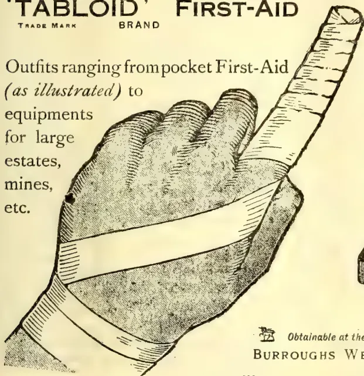
No. 710 'TABLOID' FIRST-AID
Ideal for individual use.
Can be constantly carried
in pocket, saddle-bag, etc.
In scarlet enamelled metal.
Price in London 2/0
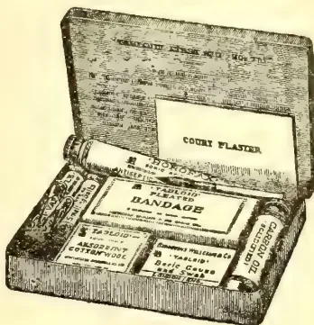
Obtainable at the principal pharmacies in all countries
BURROUGHS WELLCOME & Co., LONDON
11.2 292
ALL RIGHTS RESERVED
Mr A W Prautch, who holds the reputation of being the greatest rubber enthusiast within the boundaries of the Philippine Islands, arrived in town on the steamer "Neil Macleod," yesterday, from Lebak, Mindanao, where he is now nursing along a budding para rubber plantation. Lebak, is about 70 miles from Cotabato.
"The rubber plantation is coming along nicely," said Mr Prautch at the Bulletin office. "The trees are now a year old and have reached a height of twelve feet. In the Straits Settlements para rubber trees grow only 10 ft. a year.
"The plantation borders on a perfectly land-locked navigable bay and extends five miles inland, sloping toward the mountains. A swarm of locusts visited the plantation recently but did not leave the slightest trace of havoc behind them. I examined as many of the leaves as I could but did not find even a tiny hole in any of them. This proves conclusively that Para rubber trees are immune from the ravages of locusts.
"The Moros in our region are very industrious and hardworking people. They raise lots of rice, both the upland and lowland varieties. The upland rice fields were visited some time ago by locusts when the crop had reached a height of about 4 inches. The insects totally
destroyed it. But the Moros at once planted another crop, which promises to be a bouncer.
"Cotabato valley is ideal for lowland rice cultivation. The river like the Nile, overflows for several months each year, during the heavy rains, in July, August and September. The alluvial deposits of the river make excellent rice soil. Cotabato raises enough of this staple to export the product to other provinces. There is a steam rice mill in the district.
"Major Heiberg, the Governor of Cotabato, some time ago, in anticipation of a shortage, enforced a prohibition against the exportation of rice from the province, but it was soon found that the supply was far above the requirements of local consumption, and the prohibition was removed.—Manila Bulletin. July 24.
Napoleon boasted that he had abolished the Alps. The modern aeroplane may be credited with having abolished frontiers. The question is, what language is to be spoken by these new citizens of the air, who start a voyage in one country and complete it in another. M Henri Farman, than whom no one has a better right to be heard on the subject, in a letter to a London morning paper advocated Esperanto. The advantages to airmen of obtaining at least an acquaintance with this international language are obvious. Wherever he descends, the flying man is likely to find some local schoolmaster, railway official or other intelligent person who
188The Supplement to the Tropical Agriculturistknows it, and can, in consequence, understand his wants. In a report addressed to Messrs. Burroughs Welcome & Co., M. Farman emphasises this and indicates at the same time the utility of another accomplishment, namely a knowledge of first-aid.
"I am happy to know," he reports, "that you are using the Esperanto language for your commerce, and I beg to congratulate you. As I have often said before I find it is very necessary for every aviator to have with him one of your 'Tabloid' first Aid cases, and to know Esperanto. With these two he can go anywhere. Fortunately I can say that I have not yet had a serious accident, but working on the various apparatus, I have hurt myself several times, and was then glad to use the 'Tabloid' case which saves much valuable time. It is very necessary for aviators who go to all countries to know Esperanto and to possess a 'Tabloid' case for first-aid. In this way he can go anywhere and be his own master. This is the advice which I give always from my heart to the novice aviators in my schools, for although it happens very seldom that aviators injure themselves seriously on my machines, notwithstanding their very large number, yet it is wiser to exercise foresight."
Pollibetta, July 24.—A spell of heavy wet weather set on the 19th instant, since when, although the heaviest fall recorded in the 24 hours was over 3 in. and on every occasion more than an inch, yet the rainfall is lighter than is usual at this time of year. Both coffee and rubber are in very good heart. Most estates are through with the destruction of borer, and now attention is being paid to weeding, and work in connection with the filling up of vacancies. It is to be noted that "stump rot" is more severe in fields of rubber than in the coffee. This may be due to the rubber roots penetrating more deeply and coming in contact with large decaying roots which would be out of reach of coffee roots.—M. Mail.
The following particulars respecting the trade of the Uganda Protectorate for the year ended 31st March, 1911, have been taken from the report by Mr. G. D. Smith, Treasurer and Chief of Customs, Entebbe:—
There was a decrease in wild rubber owing to the trees being rested for several months towards the end of the year. The first export of plantation rubber was made during the year under review; it was of the Ceara variety, and was tapped from trees about three years old, and fetched 8s. a lb., with best Para rubber at 8s. 10d. to 9s. The Ceara variety of rubber is being largely planted and shows every sign of being successful.—Board of Trade Journal, May 30,
In his report on the trade of Bahia for 1911, Mr Consul W H M Sinclair refers to the failure of the cocoa valorisation scheme. He states that a scheme was mooted in the course of the year to bring about a system of valorisation in the cocoa trade similar to that which is in operation in the case of coffee, in the State of Sao Paulo. It was proposed that the cocoa planters of Bahia should act together with those of the Portuguese colonies and of Ecuador to neutralise the effects of speculation in the European markets. The main features of the scheme were that the cocoa should be exported to Lisbon and stored there, the price to be controlled by persons appointed by those interested in the countries mentioned. The Bahia cocoa crop was held up while a congress discussed this project at Bahia in October. It, however, got no further than the stage of discussion. In the first place the originators of the scheme exaggerated the proportion of the world's supply contributed by the countries in question, setting it at 75 instead of 50 per cent. Secondly, cocoa cannot be stored for more than a very limited period without deteriorating, unlike coffee, which is the better for keeping. Thirdly, the financial difficulties were insuperable. A final blow was dealt to the congress by the circulation of a report that the crop from the Portuguese colonies was being put on the market and fetching a good price in the absence of other supplies.—H. & C Mail, June 14.
The Philippine Islands are weak in their production of braid hats. The islands, however, produce no braid for hats which in the world's trade is of much more importance than the hats themselves.
One thousand per cent of the present plaid braids, of straw, bast, chips, and numerous other materials are manufactured in Switzerland, Germany, France, Japan and China, and other parts of the world.
Fully ninety per cent of the straw hats worn in the Philippine Islands are made locally and all the braid made for them is imported from foreign countries.
The cause for this is not because materials do not exist here in large numbers and in great variety, but that the people do not realise the value of these materials nor the profits to be made from braiding. The local field for ordinary straw braids from which the common straw hats worn by men are made is very large.
There is also an even greater field for making braids for the export trade pertaining principally to women's hats. It has been said that there is nothing too fantastic and bizarre for a woman to wear on her hat.
and Magazine of the Ceylon Agricultural Society.—August, 1912.
180
The braid manufacturers of Europe are always waiting for something new in the line of material for braids, and when they get such a material their profits are often very much larger; five hundred per cent profits are quite usual and they often run to one thousand per cent when a particularly fetching braid has been hit upon.
There are numerous materials in the Philippine Islands which could be made into braids, and if these were to appear in the world's market, and were established as a mode would command a very high price.
Local exporters are receiving requests continually for such materials. The greatest profit to the Philippine Islands will result by having the people make braids locally in their homes than by sending the raw materials to Europe and having the one thousand per cent profit made there.
Among these materials are skins of Pandans, of the palms, and of buntal fibre from which so many costly hats are now made, and a considerable number of bast fibre.
Ceylon produces some of these materials, which might be used for braid manufacture, which has become an important industry in tropical countries.
Manila, July 23rd.
DEAR SIR,—A few facts to be gathered from today's Bulletin may be interesting:—
(a) Natives are eating the pith of the Buri palm in the Oriental Negros Province as the rice crop is short, owing to the late long drought. I think this is the same as the palmyra palm. The leaves are used to make hats of a very fine quality. The pith is probably like sago. It would be interesting to know if the pith has ever been eaten in Ceylon. It is a pity to destroy these valuable palms, and these people will not plant others.
The Government have purchased a large stock of rice, to send to Provinces where rice crops are short, and will sell it cheap where dealers have raised the price too high. The same thing was done last year, and will have to be done every year, as these lazy, shiftless natives are too lazy to cultivate enough rice for their own living, and have to import an immense quantity from Saigon.
(b) In Cebu Province locusts have done serious damage to crops. In one part 80 sacks of locusts were caught. They are generally caught in butterfly nets, and are roasted and eaten.
(c) The "Sinamay" cloth made from Hemp fibre is strong, coarse and transparent, and is used as a lining on the lower part of dress skirts to stiffen them.
This fibre is exported largely, and is woven into braids in Switzerland, France, and Italy, and the braids are woven into the finest ladies' hats. The Bureau of Education will probably get the fibre woven into braids and hats, which can be sold much cheaper than those made in Europe.
We have plenty of rain now, and will probably have floods.
There is a good deal of dengue fever in Manila at present; caused by mosquito bites. The Government Entomologist has 30 men at work, pouring kerosene oil on stagnant pools.
I introduced the Ceylon hybrid silkworm here, and suggested to the Government Entomologist to import Japanese silk-worms and cross them with the Ceylon kind, and the result is a great success, as they have 50 per cent. more silk than the Ceylon worms. I think the Ceylon kind has eight generations in a year, and the Manila kind is. The silk farm at Peradeniya should import Manila and Japanese silk-worms.
—Yours very truly,
S.
For the last thirty years it has, of course, been known that an artificial rubber can be made from isoprene, and those who have followed the various scientific discoveries also know that all the artificial rubbers so far produced have lacked those physical characteristics which give natural rubber its commercial value. Rubber, as produced by nature, my scientific friends tell me, depends for its peculiar properties more upon the complexity of its molecular arrangement than upon mere chemical composition. Physical identity of structure is of even more importance than chemical similarity, and it is this which renders the synthetic production of rubber a problem of such extraordinary difficulty. The tyre manufacturer cares little whether the synthetic substance answers chemical tests in the same way as natural rubber. The first questions the manufacturer asks are with regard to the physical characteristics of the new compound. Are its resilience and tensile strength equal to that of real rubber? Has it the same durability? When turned out from the laboratory these synthetic compounds look like rubber and feel like rubber. Moreover, they may vulcanise like rubber, but they are obviously of no commercial use if on being exposed to sunlight they gradually collapse into one of those sticky masses which were shown under the name of synthetic rubber at the last International Rubber Exhibition.
What, then, have Professor Perkin and Dr. Matthews to say with regard to the physical characteristics of their product? Scarcely a word. Experiments have been wholly confined to the chemical side of the problem. . . . Even in the event of synthetic rubber getting beyond the laboratory stage it is highly improbable that it will compete successfully with plantation rubber either in physical properties or in cost of production, and it is doubtful whether so much publicity would have been given to the recent discovery were it not for the fact that a certain group are desirous of raising £450,000 on 6 per cent participating preference shares for a company to be known as the Synthetic Products Manufacturing Co., Limited. The advance prospectus is mild enough, synthetic rubber being the least prominently dis-
190The Supplement to the Tropical Agriculturistplayed of the three materials in the manufacture of which the company proposes to engage. An income sufficient to pay good dividends can, we are assured, be made out of acetone and fusel oil, leaving the company free to experiment with synthetic rubber for a couple of years before a factory is erected. Not a single rubber man is on the board, and the list of directors is headed by Sir William Ramsay, whose scientific achievements entitle him to respect, but whose optimism connected him with a company scheme for the extraction of gold from sea-water, and with a number of other ventures of no greater practical utility. In order to secure underwriting it is hinted that the vendors may be induced to part with some of their shares at 12s 6d., but there is no great rush for the privilege of subscribing, and to exchange plantation shares for synthetics would be to exchange the substance for the shadows.—Truth, June 26.
July 10th.
DEAR SIR,—I have been reading a lot lately about the great synthetic rubber scare, a substance which now seems fairly on the way to becoming a success, that is to say, a substance of some considerable commercial importance, if cheaply produced. From the time we started planting out rubber on our Ceylon estates, it always struck me that the two terrors we had to face were: first, the scientific man, and, secondly, the dearth of labour for cultivation, as the order of the day seemed to be to cram it in, in every corner of the tropical world, utterly regardless of ever being able to harvest it—to say nothing of finding a sale for it at paying prices. The one and only reply I ever got was: "You must remember, that really the best thing that can happen to our plantation rubber is a fall to 2s. 6d. or 3s., when up will go the consumption of it for innumerable purposes, for which its present-day price is prohibitive." One thing, I think, seems pretty clear to most minds, and that is, that the success of synthetic would be sure to cause a halt in the present-day great rush into rubber planting. Now, putting synthetic at say 1s. 6d. and other rubbers at 2s. 6d., average 2s., what, I ask, would be the probable result? I think it would result in South America closing down, and such a demand for rubber for flooring and roofing of buildings, that an immediate rise in price of all kinds would take place, when the plantation average, depend upon it, would soon be the same as it is today, if not higher, and a good healthy price with a general production hardly equal to the demand, which is bound to be very great.
I think it is very doubtful, too, if any artificial substance will ever be made to take the place of real rubber, as regards general utility and to stand wear and tear, so that while synthetic may become the means of increasing the uses of rubber generally it will never succeed properly in that direction, save by the veneering
of it with our pure plantation kinds. I have not the least doubt that if 75 per cent of synthetic and 25 per cent pure rubber be used, the latter for veneering floor cloth and flooring blocks, etc., an immense demand will spring up for all kinds—and a demand, too, we can never look for with our pure article, certainly not at its present price.
In conclusion, I do not think we have much to fear for some years to come.—Yours faithfully,
L. S. P.
We are glad to be able to report that our criticism on the Ceylon experiments, and the publicity thereby given to them, has aroused considerable interest in the plantation industry. It has been decided, through the agency of the Rubber Growers' Association, to circularise the leading companies now in possession of tappable areas, requesting them to carry out definite experiments in frequency of tapping. In order that all should be fully advised, a reprint of the article referred to by us last week, in which the criticisms made by "The India-Rubber Journal" are outlined, is published. This is the first time, to our knowledge, that a recognised public body has taken such a deep interest in the detailed work of the estate, and we trust that the result will be reliable.
In the form supplied for filling up by superintendents, the following information is asked for:—Number of trees; period over which experiments were conducted; total amount of dry rubber obtained during period (including scrap); method of tapping, whether on the one-third or one-quarter system; inches of bark excised during experiment; age of trees; average girth of trees; how long the trees were tapped before this experiment. It is further suggested in the form issued by the Rubber Growers' Association that four periodicities shall be experimented with, viz., tapping once every three days, once every four days, once every five days, and once every seven days. It is assumed that if the experiment is carried on for 90 days the number of tappings will be 30 for the three days period, 20 for the four days, 18 for the five days, and 13 for the seven days period. These then are the particulars asked for officially.
It seems almost superfluous for us to state that we are delighted at this evidence of interest our criticisms have aroused. We are, nevertheless, much more pleased with the prospect of getting information of a reliable character direct from the planters, which may have a very great influence on the labour problem in the East, and the preservation of healthy rubber trees. It should be pointed out, however, that experiments regarding periodicity of tapping are not quite so simple as the layman may first imagine. In order to carry out experiments which may be of value, it is necessary that there should, as far as is practically possible, be absolute equality on all points except that which remains to be determined. Once the determi-
and Magazine of the Ceylon Agricultural Society.—August, 1912.191nation has been made under these somewhat ideal conditions, further experiments are necessary (and will be suggested as the outcome of the series) upon the average trees met with on an estate. In carrying out experiments of this kind two qualities are essential; first, keen observation, and second, absolute accuracy. These two points must be guaranteed if the results from all the experiments are to be used as a guide.
With the object of increasing the value of the document sent out officially, we have several suggestions to make. In the first place we think it advisable to determine the value of tapping periodicity not only at three, four, five and seven day intervals, but at intervals of one and two days. At the present time most estates are tapping each tree daily, or every alternate day, and the point of most interest is whether the other frequencies mentioned are better than those now commonly adopted. We have therefore in some of the forms sent out to managers added one day and two day intervals. This should considerably enhance the value of the results obtained.
The second point is in relation to the number of trees in each group. It is obvious to everyone who has had practical experience in tapping, that the quantity of latex obtained from apparently similar trees varies considerably. The only way in which this variability can be minimised is to take in a very large number of trees, and to continue the experiments over a very long period of time. There are, however, on most of the estates where the experiments can be conducted, limitations in this respect. As a practical suggestion we would request each manager to reserve 100 trees in each of the groups enumerated.
The third point, which appears to be of perhaps the greatest importance, is that the trees to be experimented upon should be equal in all respects as far as possible. They should be of even appearance, age, and size; they should be the same distance apart, on soil of similar character and aspect, and grown under the same system of cultivation. The reason for this suggestion regarding equality will be at once clear to every planter. The yields obtained from the same aged trees on the top of a hill would be widely different from those obtained at the base of the hill. Similarly the crops from trees of the same age, but planted at different distances, with or without intercrops, would show big variations. If one does not secure identical conditions as far as the plants and their environments are concerned, the results will be of no value; too much importance cannot be laid on this point.
The fourth point we wish to bring forward is that in relation to the condition of the trees on which the experiments are to be made. We would prefer that the trees to be tapped should either never have been tapped previously, or have been tapped to approximately the same extent. Our reason in suggesting this is that if trees are selected which have been tapped in different ways, the results from them, even if tapped at the same frequency, would not be identical. Trees which
have been tapped have usually had the bark removed in a more or less systematic manner, but if the quantities of bark removed and the methods of tapping employed in the past are not identical, then the experiment would not be of much value. It is extremely difficult to determine the effect of past tapping on future yields at sight, and therefore we would prefer that the trees selected should not have been previously tapped. This would give, in our opinion, more equal conditions than any other system of selection.
Our fifth point is in relation to the tapping lines and the bark shavings. It is not sufficient to ask for the number of inches of bark, between the parallel tapping lines, excised from above downwards; it is in our opinion necessary that the tapping lines on all the trees should be of exactly the same length, and sloping at the same angle. If the lines are not of the same length, then the yield will vary apart from the system of tapping; if they do not slope at the same angle the same result would follow.
With reference to the bark shavings removed during each tapping operation, we suggest that it be of the same or minimum size and depth, and that the tapping experiments on all trees be commenced at the same date.
As a last suggestion we would point out the necessity of keeping all records of rubber, including first quality, lump, scrap, and earth, quite separate.
We trust that the suggestions we have made will enable those who undertake the experiments to eliminate many of the errors which they will otherwise have to contend with. It must be borne in mind that the variability in yielding capacity of Hevea bark is enormous, and that many other suggestions could be put forward which would reduce the liability to error. It must not be expected that the results in the different countries will be identical, or that those from even different estates in the same island will be the same. We anticipate widely different results from the wet, black soils of Klang, the light volcanic soils of Sumatra and Java, and the rocky hillside of Ceylon; but we also realise that the results will serve as a stepping-stone to further experiments which will, if properly conducted, be of real value to the planting community.—Indiv Rubber Journal, July 20.
Our readers will remember that some time ago we had an opportunity of drawing attention to certain Ceylon experiments with Hevea trees. The statement we questioned was one to the effect that the interval between successive tapings, provided that it does not exceed a week or so, makes no difference to the yield of rubber per tapping. We have given our view of results obtained by tapping every day or every alternate day, and the reasons which have led us to advocate a minimum period of four years for bark renewal.
[From the Tropical Agriculturist for May, 1912, Dr. Lock's views are then quoted.]
192The Supplement to the Tropical AgriculturistEIGHT YEARS' BARK RENEWAL.We have given very copious extracts from the article referred to, and for the moment our main interest lies in the statement that under certain circumstances a period of bark renewal of eight years may be superior to one of four years. We hasten to assure our experimenters that we would welcome such a period were it found possible to adopt it with an assurance that crops would not suffer in consequence. Our views on the retention of bark are too well-known to require repetition here.
ANOTHER VIEW.We sent a copy of the document to a gentleman who has obtained some excellent results by daily tapping young and old trees, and whose experience has been particularly successful. His full reply, without comment one way or the other by ourselves, is here given:—
"The result is certainly very queer and unexpected. So far as I can understand the results, the total yield in the first three years of the experiments was greater by a good deal from the trees tapped at short intervals than from those tapped at long, and it is only in the fourth year of tapping that the results of the latter begin to approximate the former. The conclusion, so far as these figures go, would seem to be that one should begin to tap one's trees at first at short intervals, and that later on one should gradually increase the tapping interval. But this paper only deals with trees of 20 years old, which, until they were 23 years old, gave the best results with the short interval. My own conclusion from the paper is that these results are not of much value owing to the absurdly close distance at which the trees are planted. 600 lb. odd per acre is an extremely small yield from trees of 23 years old, and the only valid conclusion that one can come to is that they should be cut out and the experiments all begun again before one can form any definite idea as to how the trees would behave if grown under normal conditions. Everybody knows that when trees are closely planted the bark renewal is very poor, and it does not follow that if the bark renewal were good, the conclusions would be the same. Do you agree, Mr Editor?"
Will our Ceylon experimenters kindly give us their views on those of the correspondent published above? The subject is of more than ordinary interest, and we should much like to have the question freely discussed.
GENERAL PLANTING EXPERIENCE.So far the results obtained by the writer in countries having a wide range of climate, and in soils having different physical and chemical characters, point to a frequency of forty-eight hours as generally being the best for the estate. We are not so foolish as to assert that the same result would follow the same practice on trees apparently identical in all respects; we know, too well, that similar trees give entirely different yields though tapped on the same system, and that almost identical results may sometimes be obtained by widely different methods. We believe that the natural variability in caoutchouc-yielding capacity of Hevea trees is enormous,
and are glad to note that the experiments in Ceylon have been going on for nearly four years; while the length of time will wipe out many variations, we cannot say the same on the number factor, the fewness of the trees experimented upon unfortunately mitigating the value of the work in progress.
While we find that alternate-day tapping gives a satisfactory yield and permits of good estate organisation, we know that many planters in charge of important estates, e.g., Cicely, Kuala Lumpur, etc., are in favour of reducing the interval, and are going in for daily tapping. A perusal of the chapter on methods of tapping on modern estates, in Wright's "Fourth Edition of Para Rubber," will indicate the number of estates going in for a reduction of the tapping interval. This is a change effected by men who have purely commercial ends in view; we take it that no one will care to deny that the practical man generally selects the sound method in the long run. And yet the recent Ceylon experiments suggest that the longer the interval between tapping (within limits), the larger the yield of rubber per tapping.
We would ask everyone to ponder over the fact that managers—especially in Malaya—previously keen on alternate day tapping, are now advocating daily tapping, against the view expressed by our Ceylon experts that tapping once per week gives larger yields than tapping more frequently. Somebody must be at sea. Either our planters are wasting labour and bark on an enormous scale, or the Ceylon experts are working under conditions and with materials not comparable with an average Hevea estate.
We hope that the suggested delay, owing to stress of work, in submitting further accounts of these experiments will be overcome. The newly-appointed Director, at Peradeniya, would be acting wisely if he placed the publication of these results in hand at once; they are of vast importance, even though somewhat revolutionary, to investors in this country, as well as to residents in the tropics.—India Rubber Journal, July 13.
GREEN TEA IN RUSSIA.With reference to green tea in Russia, the report of H.M. Consul-General at Odessa (Mr. U.S. Smith) on the trade of that district in 1911, has the following: "There has been an extraordinary increase in the demand for green tea, nearly twenty times as much now being imported into Russia as in 1904. It enters principally through Batoum, and is almost entirely consumed in Turkestan and the Russian provinces of Central Asia. It appears that the Mahomedans of Central Asia, whose religion forbids the use of intoxicants, have taken to tea-drinking. Their demand is for green tea, and has created an entirely new market which does not in any way affect the sales of black tea. It may be possible to find similar converts to tea-drinking in other parts of the world, thus creating a fresh impulse to the production of green tea, which had been somewhat discouraged by American legislation prohibiting the importation of tea of the 'faced' description.—H. & C. Mail, July 19.
This image is a scan of a blank page. The paper has a light beige or cream-colored tint. There are a few very small, dark specks scattered across the surface, which appear to be scanning artifacts or dust particles. No text, lines, or other markings are present on the page.HON'BLE SIR HUGH CLIFFORD, K.C.M.G.,
COLONIAL SECRETARY OF CEYLON.
(Retiring Vice-President of the Ceylon Agricultural Board.)
APPOINTED GOVERNOR OF THE GOLD COAST.
THE
TROPICAL AGRICULTURIST
AND
MAGAZINE OF THE
CEYLON AGRICULTURAL SOCIETY.
VOL. XXXIX. COLOMBO, SEPTEMBER 15TH, 1912. No. 3.
NICARAGUAN OR PANAMA CACAO AT THE
EXPERIMENT STATION, PERADENIYA.
The following report from London Brokers received in reply to an inquiry made by the Director of Agriculture will be of interest to readers of the Tropical Agriculturist :—
Dear Sir,—Referring to your letter of 25th May, we now have the pleasure to give you Brokers' report on the sample of Cocoa, as under :—
“Fine to good Panama kind. If properly sized and not mixed with Ceylon plantation beans it would be worth about 100s. to 105s. per cwt.
“The sample, being mixed with small Ceylon plantation beans, would not fetch its real value in the present state. If properly sized and even bold it would sell very well. The bold beans are of fine break and even brown colour. The small red beans are of ordinary 2nd size plantation Ceylon kind of mixed break, and by themselves valued at about 72s. to 73s per cwt.”
We enclose samples of the two kinds which ought to be kept separate.
Yours faithfully
GRAY, DAWES & Co.
London July 1st, 1912.
The variety of Cacao here referred to was received through the Government of Trinidad in 1895 under the name of Criollo or Cacao del Pays of Nicaragua. Thirteen trees bearing pods of three very distinct types were planted in the Peradeniya Botanic Gardens towards the end of the same year. The trees produced good crops in 1903-04 and in 1905 two acres of land were planted from their seed at the Experiment Station, Peradeniya, by Mr. Herbert Wright at the suggestion of the present writer.
The Nicaraguan Cacao at the Experiment Station.
This is now in bearing, and appears to have come quite true to the parental type. The plots unfortunately include a number of other types inadvertently planted amongst the true Nicaraguan, and it is to these
194[SEPTEMBER, 1912.that the mixed sample referred to in the brokers' report is due. It is proposed to cut out these intruders at an early date and to replace them with the true Nicaraguan strain.
The essential features of the Nicaraguan variety—referred to in the trade, as it appears, as Panama—are as follows. The trees are of medium size with large leaves, and more or less intermediate in habit between the Forastero and Old Ceylon Red varieties. The pods are of a moderately large size and vary considerably in shape and colour and in the character of the surface, three well marked types occurring at Peradeniya.
But the most characteristic feature is the very large size of the seeds which excel in this respect those of all other known varieties. The cured seeds are about twice the weight of those of either the Old Red or Forastero varieties. They are oval in section and of the general shape of a good type of Forastero "bean," being less rounded than those of the Old Red. The average number of seeds in a pod is about 30. The testa or seed coat is very thin and delicate, and is somewhat liable to rub off from the dried beans, and the veining upon the dried seed coat is prominent. The colour of the fresh seeds as seen in section is variable. The most usual type is partly white but mottled and edged with bright crimson. Fairly deep purple seeds and pure white seeds also occur. The wall of the pod is thin and leathery, being almost devoid of the hard woody layer characteristic of Forastero varieties. Owing to the thinness of the wall, if pods of a similar size are taken belonging to the Forastero and Nicaragua varieties respectively the bulk of the seeds will be found to be considerably greater in the case of the latter.
The plots at the Experiment Station have suffered somewhat in the past from vicissitudes in the matter of shade treatment. They are now doing well and show at present only a moderate amount of susceptibility to the attacks of canker. The variety seems to be well worthy of a more extended trial in Ceylon, and it is hoped that during the coming season a few thousand pods will be available for distribution for purposes of seed. They will be obtainable on application to the Director of Agriculture at Peradeniya at the rate of 10 cents each. Not more than a thousand can be promised at present to any one applicant.
R. H. L.
The lac tree (Schleichera trijuga) Kosumba, or the Ceylon Kon, occurs in the dry deciduous forests over the greater part of India, Burma and Ceylon. Macassar oil is the fat obtained from the seeds of this tree. Within the first few years there has been an extensive demand from abroad for these seeds, and they have been collected from Orissa under the name of Paka seeds. The seed consists of 40 per cent. shells and 60 per cent. of oil which is equivalent to about 36 per cent. of the nuts. The fat forms at the ordinary temperature a yellowish-white, buttery mass. Most samples of Macassar oil contain small quantities of hydrocyanic acid, probably liberated by the action of an enzyme on a cyanogenetic glucoside in the seed.—Indian Trade Journal.
SEPTEMBER, 1912.]195I visited the infected fields on the morning of the 9th instant, and was shown round by Mr. F. D. Samarasingha, Mudliyar of Pasdum Korale East.
At the time of my visit, the insects had disappeared, but the areas that had been affected were rendered conspicuous by their brown colour, all the plants being dead and withered. I was unable to obtain a single living specimen of the insect, either on the dead plants or on the adjoining living plants.
By interrogating the Mudliyar and the local rice cultivators, I learned that the disease was first noticed about the beginning of July, when the stalks of the plants began to show a reddish tint. By the middle of that month, the stems were seen to be covered with insects—in various stages of development. This condition continued for about three weeks, by which time the plants were dead and the insects had disappeared.
No such pest had been observed in the locality before. There had been promise of a record crop, until this pest appeared. Many fields, and large patches in others, have been completely ruined.
The crop in one village (Kudaligama) is said to have been wiped out. The plants died before ripening the grain. It was noticeable that where patches only were attacked, these were strictly confined within the boundaries of their respective bunds, adjoining plots being entirely unaffected.
I am told that 3-months paddy suffered less severely than 5-months paddy. This may probably be accounted for by the maturing of the more rapidly growing plants before there had been time for the development of a second brood of the insects. The first brood would naturally be much smaller and less serious.
Although no eggs were actually found, from the structure of the insect, which is provided with a strongly developed ovipositor, it is practically certain that the eggs would be embedded in slits in the stems or in the bases of the leaves.
The Pest having disappeared, for the time being, and the damage being complete, no remedial measures are now practicable. I have recommended that the stubble and dead plants on the affected plots should be burnt in situ, with a view to the destruction of any eggs that may be remaining in the stalks.
In subsequent crops, a careful watch should be kept for the earliest indications of a recurrence of the pest. It may be possible to destroy the first brood which will probably be confined to single plants or small areas. Such isolated patches might be destroyed by scorching them
196[SEPTEMBER, 1912.with flaming torches. I know by experience that this insect is attracted by light. This fact might be utilized to destroy the migrating winged forms, by exposing flares—at night—in the affected areas.
As previously reported, I have identified the insect as Nilaparvata greeni (Homoptera). It is a common species in the Kandy district, but has not been recorded as a pest there. The species is known only from Ceylon.
In the event of continuous recurrences of the pest, it may be advisable to abandon—for a time—the cultivation of 5-months paddy, in favour of those varieties that ripen more rapidly.
I have requested the Mudliyar to collect further information and to report the exact area involved. A careful estimate of extent of the damage, with a valuation of the crop lost, would be useful.
E. ERNEST GREEN,
GOVERNMENT ENTOMOLOGIST,
R. B. G., Peradeniya, 12th Aug., 1912.
H. M.'s Consul at Lyons (Mr. E. R. E. Vicars) has forwarded the following statistics, which have been published by the Lyons Silk Merchants' Syndicate, showing the estimated world's production of silk in 1911, together with the definite figures for the previous year :—
| 1910. | 1911. (Estimate.) |
|
|---|---|---|
| WESTERN EUROPE. | Kilogs. | Kilogs. |
| France ... .. | 318,000 | 402,000 |
| Italy ... .. | 3,947,000 | 3,490,000 |
| Spain ... .. | 83,000 | 88,000 |
| Austria-Hungary ... .. | 352,000 | 355,000 |
| Total ... | 4,700,000 | 4,335,000 |
| LEVANT AND CENTRAL ASIA. | ||
| Turkey-in-Asia— | ||
| Broussa and Anatolia ... .. | 480,000 | 510,000 |
| Syria and Cyprus ... .. | 540,000 | 515,000 |
| Other Provinces ... .. | 130,000 | 135,000 |
| Turkey-in-Europe— | ||
| Salonica and Adrianople ... .. | 360,000 | 365,000 |
| Balkan States ... .. | 175,000 | 195,000 |
| Greece and Crete ... .. | 57,000 | 65,000 |
| Caucasus ... .. | 520,000 | 480,000 |
| Persia and Turkestan (export) ... .. | 538,000 | 550,000 |
| Total ... | 2,800,000 | 2,815,000 |
| FAR EAST. | ||
| China— | ||
| Exports from Shanghai ... .. | 5,193,000 | 5,550,000 |
| " " Canton ... .. | 2,637,000 | 1,690,000 |
| Japan— | ||
| Exports from Yokohama ... .. | 8,935,000 | 9,200,000 |
| India— | ||
| Exports from Bengal and Cashmere ... .. | 230,000 | 215,000 |
| Total ... | 16,995,000 | 16,655,000 |
| GRAND TOTAL ... | 24,495,000 | 23,805,000 |
| Kilogs. = 2.2 lbs. |
If we may judge by "An Account of Insects Injurious to Economic Plants in Zanzibar" (Leaflet No. 1, by W. M. Aders), that country may be reckoned as singularly fortunate. About thirty different pests are briefly described. More than three times this number have been recorded from the Tea plant alone, in India and Ceylon. Of those described, all but two or three occur in Ceylon, and would rank here as of minor importance. Zanzibar should be an Ideal Place for the establishment of strict quarantine regulations. Nearly all the more important insect pests of any country are introductions. Arriving without the natural enemies that preserve the balance of nature in their native country, they are at liberty to increase and multiply without hindrance. By subjecting all imported plants to fumigation before distribution, Zanzibar may long remain in the enviable position (as regards insect pests) in which it apparently now finds itself.
In describing the pests of the Cotton plant, mention is made of an Aphis which is said to be "about an inch in length." If this figure is correct (which I can hardly credit), it must be a giant of its kind. Our largest Ceylonese Aphid measures approximately 4 millimeters, which is equivalent to about one-sixth of an inch.
Amongst the various recommendations for the destruction of 'white ants' (Termites,) I can find no mention of the 'Universal' Ant Exterminator, an appliance that was first brought to my notice by advertisements from South Africa. This handy and invaluable machine pumps the fumes of burning sulphur and arsenic into the nests, with most deadly effect.
At the end of the leaflet are given four formulæ for simple insecticides. The author wisely confines himself to this small number, which is really sufficient for all practical purposes. His list consists of Lead Arseniate, Paris Green, Rosin Wash, and Kerosene Emulsion. Indeed, the number might have been reduced to three, without loss of efficiency, for Lead Arseniate serves all the purposes of Paris Green,—with better results.
For the rest, this pamphlet is written in clear and simple language, without needless technical detail, and should prove of service to local agriculturists and horticulturists.
E. E. G.
A contributor to the Gardener's Magazine of July 6th writing about the school-gardens, says that the introduction of gardening as a subject in the school curriculum resulted from a conviction that our educational system was wrong inasmuch as it was not practical enough.
There is still in some quarters hazy ideas as to the object of school gardens.
It is not primarily to turn out professional gardeners though that may be a sequence, but it is intended to raise the general taste for gardening as a recreation and hobby, which is admitted to have an "uplifting effect." Another result of school gardening is that it teaches boys to work, to be handy and inventive. It also makes them take more interest in their natural surroundings, and in after life find a pleasure in rural life that a town life can never offer.
198[SEPTEMBER, 1912.If Zanzibar is fortunate in the comparative paucity of its pests of economic plants, it appears to be well provided with blood-sucking insects of various kinds. As the author of this Leaflet (No. 2, "On the Blood-sucking Arthropods of Zanzibar harmful to Man or Stock," by W. M. Aders) remarks :—"The last twenty years have shown that these insects have a great significance as carriers of disease to man and domestic animals."
Of the various insects enumerated, by far the greater number are the two-winged flies (Diptera). It is remarkable that nearly all the insects provocative of disease come under this order, which includes Mosquitoes or Culicidæ (responsible for Malarial and Yellow Fever), 'Gad-Flies' or Tabanidæ (believed to be concerned in the communication of certain diseases of horses and cattle), 'Sand-Flies' of the genus Phlebotomus (agents in the dissemination of 'Papataci' Fever in Malta), 'Stable-Flies' of the genus Stomoxys (suspected of communicating 'Surrah' disease of horses), 'Tsetse Flies' or Glossina (agents in the transmission of the dreaded 'Sleeping Sickness' of Central Africa), 'Bot Flies' or Estridæ (the cause of various tumours in cattle), and—last, but not least—the pestilent 'House Fly' (Musca domestica), which has been proved to be a prolific agent in the distribution of the germs of Typhoid Fever and other diseases of an allied nature.
Fleas (Siphonaptera), one or more species of which are concerned in the transmission of Bubonic Plague, are very closely allied to the Diptera and were formerly included in that Order.
The remaining blood-sucking insects belong to the order Hemiptera, as exemplified by the 'Bed-bugs' (Cimicidæ) and the 'Cone-nosed Bugs' (Conorhinus). A species of this latter genus has been shown to transmit a Trypanosome responsible for a serious and often fatal disease, in Brazil. Conorhinus rubrofasciatus occurs commonly in Ceylon, and has the sanguinary habits of its race (vide 'Trop. Agricult.', April 1910, p. 323), but no disease has—as yet—been traced to bites of our local species.
Ticks (Ixodidæ) are not true insects, though rightly included under the more comprehensive title of Arthropoda. They are well known agents in the transmission of several important diseases of cattle in South Africa.
E. E. G.
Der Tropenpflanzer for April 1912, p. 208, contains an abstract of an account of work carried out with Manihot Glaziovii in German East Africa, in which the results of the investigation permit it to be gathered that the branches of this tree contain quite 12·1 per cent. more rubber than the corresponding parts of a stem belonging to a tree which has branched high up, but that the cost of tapping is at least 30 per cent. greater. It is further admitted that no more favourable results are produced in cases where more branching exists than is found in the average tree.
SEPTEMBER, 1912.]199I arranged with some lowcountry men to plant up a portion of my land, acres in extent, with coconuts, paying them 75 cents per tree (after 6 years) for the care and attention given by them during this period. They agreed to this on condition that I felled, burnt, fenced, drained and holed the land at my own expense, they then taking charge and planting the coconuts, the plants being supplied by me, they to have half share of any minor products planted by them,
The land was felled in February and March last year, costing me Rs. 15 per acre. The burning was done at the end of March, and was very successful, the season being dry. The whole burn was over in half an hour. The first shower of rain after several months came on that evening and this settled down all the ashes on the burnt land.
The next step was to remove all logs and timber that could be carried out, and for this work I contracted with a man to remove to one spot and cut up into yard lengths all logs that could be carried, paying 33 cents per yard for removal and cutting. This gave me 80 yards of firewood which I sold to the Mills at Rs. 1.50 per yard, transport costing 33 cents per yard. Balance left Rs. 67.20. Some good timber was sawn up costing Rs. 75. Value of timber Rs. 150.
The planters then cleared the land of all roots of small stumps that could be easily removed with a hoe. All this rubbish (nearly 40 or 50 cart loads) was put up in heaps and burnt in order to get the ashes. Then the land was lined for holing and drains cut where required, the drains being feet at the top and 1 foot at the bottom, as the soil is a sandy one.
After the draining, holing and fencing were over, I directed that the land should be planted with yellow pumpkins (wattaka) alone, but as usual with the natives this did not satisfy them. They put down seeds of ash pumpkin (puhul), karwila, wetakolu, diya-labu, and kekiri. This took up more than half of the ground which in my opinion could have been more profitably used for yellow pumpkin alone. The following will prove this:—
| Received from sale of wattaka (yellow pumpkin) | Rs. 400.00 |
| “ puhul (ash pumpkin) | “ 40.00 |
| “ kekiri (country cucumber) | “ 71.00 |
| “ diya-labu (bottle gourd) | } 91.00 |
| “ karwila (bitter gourd) | |
| “ watakalu (luffa) | |
| “ bandaka (okra) |
Rs. 602.00
200[SEPTEMBER, 1912.| Date. | Rs. cts. | No. of Gourds wattaka. |
No. of Gourds puhul. |
|
|---|---|---|---|---|
| August | 1911 | 121.16 | 280 | — |
| September | „ | 121.27 | 300 | 23 |
| October | „ | 38.63 | — | — |
| November | „ | 222.15 | 1290 | 215 |
| December | „ | 77.18 | — | — |
| January | 1912 | 21.65 | — | — |
602.04 |
1870 |
238 |
The pumpkins began to bear in August 1911. Owing to the drought the creepers were nearly dead in October, but the rain coming on in the end of October, fresh shoots were developed and in the end the crop was much larger than the first. The above accounts shew that even with the unfavourable weather we had in 1911, the proceeds, at the least, would have been Rs. 800/- if wattaka alone had been planted.
I should mention that the land was kept quite free from weeds till the creepers covered the ground.
This land is now planted with plantains. The coconut plants were put down late last year and are doing very well.
When counting gourds for sale two small ones are counted as a large one, so that the number given in my list is not quite exact.
There were as many plants of ash pumpkins as yellow put down, but they did not thrive; many of them were destroyed in the early stages and those that remained did not bear well. Half share of the amount realized went to the planters.
There is no doubt in my mind that the success I met with was mainly owing to the great care used in keeping the land free from weeds; also to my having removed all timber that would have prevented the creepers from running evenly over the ground, and to the formation of the drains—the earth removed being heaped along the edges prevented any of the surface soil and ashes being washed away when the rain came in (see diagram).
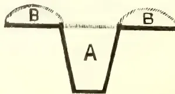
A. Drain.
B. Soil removed from drains heaped up.
CHAS A. ANDREE,
Kurunegala.
(By P. A. V.)
Tuberculosis of fowls is very difficult to eradicate except by the adoption of drastic measures. The quickest and most effective method is to kill off all of the birds, disinfect the premises as thoroughly as possible and start with a new stock from a flock that is known to be free from disease. But in large flocks or where it is desired to preserve a certain strain in breeding all birds that show the least signs of illness should be promptly slaughtered and cremated, the healthy birds removed to new ground, new houses built and eggs for hatching secured from stock that is known to be healthy. If incubators are used the problem is made simple. Precautions should also be taken to prevent the possible infection of the fowls from bovine sources by the feeding of offal from slaughtered tubercular cattle or hogs or from human sources by picking up sputum carelessly expectorated on the ground by consumptive persons. New stock should be secured only from flocks that are known to be free from disease. An additional preventive is to increase and maintain the natural vigour of the fowls by care in breeding and feeding and housing in open-air houses.
Mr. H. V. Hawdins, Poultry Expert of the Victoria Department of Agriculture, Australia, puts in a vigorous plea in the last December Number of the Journal of the Department for more extended duck-farming which he states is very profitable. He gives a few hints in regard to handling ducks: (1) Do not attempt to catch the ducks by their legs: it is much safer to handle them by the neck; (2) Do not reduce their weight by taking a lamp amongst them at night; (3) Never throw dry lime in a duck pen: it kills; (4) Never select the largest duck eggs for hatching: they are usually infertile; (5) Ducks should always be locked in at night and kept on an absolutely dry, soft floor: they lay best under these conditions and the eggs are easily gathered; (6) Never hurry the laying ducks: it usually injures them, sometimes seriously; (7) When sickness attacks ducks, it is useless to doctor them: the best remedy for duck ailments is plenty of sliced raw onion in the mash and an absolutely dry, soft bed; (8) Ducks should never be permitted to run with fowls: they both do better in pens by themselves; (9) When fowls and ducks are allowed to drink from the same vessel, an outbreak of disease may be expected; (10) Birds with crooked backs, wry tails and similar defects should not be bred from.
Comparatively little is at present known with regard to the biological factors which cause improved egg production or as to the laws according to which these factors operate. Empirical methods have led to a knowledge of how to feed, care for and, to some extent, breed fowls with a view to high egg production; but the biological laws underlying the process of egg production are still but little understood. A valuable contribution to the subject has recently been made by Dr.
26 202[SEPTEMBER, 1912.Raymond Pearl and Dr. F. M. Surface based on experimental work at the Main Agricultural Experiment Station. It was found that the effect of selection on egg production was nil, taking into consideration the influence of environmental circumstances. As to these latter, the more the floor-space in the housing pen and the less the number of hens in flocks the greater the egg-production. This affects only the summer egg production.
To test whether fowls are egg-eaters or not, put an egg in the run. Let it be a brown one if the hens lay brown eggs or a white one if a breed is kept which lays white eggs. When the bird notices the egg, if she only rolls it over with her beak, it is a pretty good proof that she is not an egg-eater but that she has sometimes helped the other hens to eat an egg. If they do not know the taste of an egg, they do not turn it over and the fact of their rolling it over is a proof that they expect to find a hole in it; these birds can really be called egg-eaters. Some hens will strike an egg with their cut beak or an egg filled in the way we have described and these are considered inveterate egg-eaters and should be killed. Feather pluckers should be treated in exactly the same way as by cutting their beaks they cannot hold the feathers to pull them out.
The Director of Land Records and Agriculture, Assam, reports on July 5th :—
On the average of the five years ending 1909-1910, the area under jute in Assam represents some 2.1 per cent. of the total area under jute in British India.—The rainfall in February was in excess in all districts of the Province except Goalpara and Garo Hills, where it was normal. It was excessive everywhere in March, and continued to be so in April, when it was about double the average in the four large jute-growing districts—Sylhet, Goalpara, Garo Hills, and Kamrup. But in May rain was in defect everywhere, especially in the larger jute-growing areas. In June rainfall was normal with a slight tendency to defect. The weather was thus not favourable at the time of sowing to excessive rainfall, and tended to diminish the area that would have been put under jute: weeding was also hampered by the same cause. Though the unfavourable conditions at the beginning changed for the better, the general condition of the crop is not as good as last year.
According to the estimates of District Officers, the total area under the crop this year amounts to 106,853 acres, against 90,700 acres in 1911, or an increase of nearly 18 per cent. Goalpara reports an increase of 18,000 acres, or nearly 50 per cent., which is attributed to the influx of cultivators from Bengal, but in Sylhet there is a decrease of 3,000 acres on account of the unfavourable weather: in Garo Hills, there is a slight increase, in Kamrup one of about 8 per cent.: the area in the remaining districts is trifling, and shows an improvement in Darrang only.
Stocks.—The quantity of jute in stock from last year is reported to be very small.
SEPTEMBER, 1912.]203This Bulletin was first published in 1903. It appears quarterly and contains:—reports on investigations conducted in the Scientific and Technical Department of the Imperial Institute; articles and notes dealing with mineral and vegetable economic products; and a quarterly summary of information on recent progress in agriculture and the development of Natural Resources.
Until this year the "Bulletin" has been published by the Imperial Institute, but owing to the increased demand for it its publication has now been undertaken by Mr. John Murray, 50a Albemarle Street, London, W., and the first number of the new series has appeared.
The principal contents of this first number are as follows:—
Rubber resources of Uganda; Some cotton soils of the Nyasaland and Uganda Protectorates; Kola nuts from British West Africa; Coca leaves from Ceylon and the Federated Malay States; Aromatic grass oils, Part III; Hibiscus fibres from the Northern Territories, Gold Coast; Timber from Uganda; Sumach from Cyprus; Economic products from Mauritius; The coconut and its commercial uses, Part I; Cultivation, preparation and utilisation of hemp and hemp seed (Cannabis sativa); Cultivation and preparation of ginger; Agricultural work in Seychelles; Candelilla wax, Sisal hemp in Quilimane; New Zealand hemp; Iron ore from Trinidad; Copper-mercury ore from Queensland; Native labour regulations in Mozambique.
The second number now published has the following principal contents:
Tobacco industry of Ceylon; Some new gutta yielding plants from the Gold Coast; Ficus elastica rubber from Southern Nigeria; "Balata" rubber (Ficus Vogelii) from Southern Nigeria; The rubber of Cryptostegia Grandiflora; Silk from India; Cotton and Sisal hemp from Papua (British New Guinea); Fibres from India; Utilisation of Cæsalpinia digyna; Oil-seeds of Telfairia pedata; Lophira oil-seeds from West Africa; Oils and oil-seeds from Hongkong; West African cocoa; The cultivation of cigar tobacco with special reference to Java; The coconut and its commercial uses, Part II; Shea nuts and Shea butter; Rubber tapping experiments in Southern Nigeria; Economic developments in the Belgian Congo; West Indian satinwood; Oil of "Nepal" Camphor wood"; Citronella grass; Mesembrianthemum Mahoni roots from the Transvaal; Rubber Exhibition in Java; Cultivation of fibres in Java; "Root-cotton"; Perilla seed and oil.
The annual subscription to the "Bulletin" is 10s. 6d. or 11s. post free; single numbers may be purchased at 2s 6d. each or 2s. 9d. post free. Subscriptions may be paid through any bookseller, or if no bookseller is available they may be sent direct to Mr. John Murray, 50a Albemarle Street, London, W.
204[SEPTEMBER, 1912.In announcing the appointment of a Committee (with Sir Kenelm E. Digby, G.C.B., K.C., as Chairman), The Times publishes a statement of the situation in its issue of 26th June by its Special Correspondent lately in Nigeria :—
“ In the pursuit of various occupations the natives roam over vast spaces. When the white settler comes upon the scene the demand for land necessarily follows and the immemorial habits of the native population are inevitably affected by the new element. Hence arise local difficulties, sometimes injustice, which it is the business of the legislator to set right. The legislator will be hampered on the spot by a type of white settler who contends that the native has no rights, and by a type of well meaning philanthropist at home who contends that the native has all the rights.
If the capacity of the West African Native as a Trader has become proverbial, his capacity as an agriculturist and planter, long denied by the ignorant, is now equally established. Setting aside the immense production of foodstuffs required for his own sustenance, the native has within recent years, with Government encouragement, busied himself in meeting the growing demand for tropical produce on the part of the Western world. Eleven years ago the native in Southern Nigeria was urged to grow cotton, cocoa and maize for export purposes, and in that period, despite partial failures of the maize and cotton crops, the export has risen from £9,000 to close upon £300,000. While for various reasons the development in considerable proportions of the cotton industry is doubtful, and while the maize crop will always be fluctuating, depending as it does upon local requirements, cocoa is certain to increase largely. I have already given particulars in The Times of the remarkable extension in native plantation rubber cultivation which has followed the initiative of the Southern Nigerian Forestry Department. Here again we have a native industry which is only in its infancy.
In the Gold Coast and Ashanti agricultural development in the matter of cocoa cultivation has been simply wonderful—there is no other word for it. In less than 20 years the Fanti farmer, now joined by his Ashanti colleague (but yesterday a fighting man and nothing else, but now that fighting is at a discount bringing to peaceful pursuits his former warlike energies), has made of the Gold Coast the premier cocoa-producing country in the world, producing that article to the value of £1,000,000 sterling; beating the West Indies and the Dutch East Indies and beating São Thomé. A triumph of the economic superiority of free labour over
SEPTEMBER, 1912.]205indentured labour on the one hand, and slave labour on the other, is perhaps the most striking object-lesson now available to the study of what the West African occupying and using his land under the tribal system of communal tenure and working for himself and his family can accomplish.
In short, not to give further illustrations, we have in West Africa a fund of native agricultural, commercial, and industrial activity whose expansion is only limited by accessibility to markets, by population, and by technical knowledge.
Such being the conditions in West Africa, it is obvious that the land question presents itself under totally different aspects than is the case in East Africa or South Africa. In West Africa, where the whole future of the native races is bound up with their unfettered enjoyment and usage of the land, there can be no question of native "reserves." The first duty of Government as trustees for the native races is to prevent interference with the native occupation of land; to provide legislative safeguards against any processes which may tend to alienate the land from future generations or to cripple the free economic expansion of its inhabitants. This is no matter of "Sentimentalism," but of elementary justice and, too, of elementary statesmanship and sound economics.
It is the obvious interest of Government that native wealth should increase, for the increase of native wealth means the increase of the purchasing capacity of the native and the consequent increase in revenue. That is the first law of West African economics. West Africa, as Mary Kingsley so ably urged, is a "trade" country primarily. The normal expansion of commerce involves assistance and encouragement to the European merchant to carry out his legitimate business with the minimum of restrictions. It involves assistance and encouragement to the native to develop his land and its resources. Both parties to this commercial intercourse have a common economic interest, which is shared by the manufacturing and working classes of Europe.
Informed public opinion has been steadily tending towards these conclusions for some years past and has received increasing support from the Colonial Office and from the most experienced officials in West Africa. Readers of The Times are aware that the first step in the direction indicated was sanctioned by the Colonial Office last year as regards Northern Nigeria after an exhaustive investigation into the customary law of tenure there prevailing, initiated by Sir Percy Girouard and afterwards carried to a Special Commission which sat in Downing-street. But in the rest of British West Africa the problem still awaits treatment, and will require careful and prudent handling. In Northern Nigeria action was, politically speaking, of relative simplicity. When we overthrew the Fulani Emirs after their refusal to negotiate with us we became the supreme over-lords of Northern Nigeria. It was a clean slate upon which we wrote, and, happily, we wrote well. Elsewhere work, perhaps inevitably, has been patchy, contradictory, and rather inspired by an attitude of laissez-faire than by any clear guiding principle, with the result that to-day a complicated knot requires unravelling,
206[SEPTEMBER, 1912.MR. WILLIAM FAWCETT, B. Sc., F. L. S., writes to the West India Committee Circular :—
In considering the claims of any substance, whether animal or vegetable, to be used as a food, it is necessary to ascertain whether it contains the chemical elements needed by the body to repair the waste of the tissues, and to supply energy for the production of heat and for the work done in and by the body. These elements are known as proteins, carbohydrates, fats, and mineral matter. As general examples of proteins, the following substances may be quoted : Muscle or lean of meat, casein (or cheesy matter) of milk, egg, gluten of flour. Proteins alone can supply the nitrogenous material necessary for the formation of tissues. The carbohydrates include such compounds as starches and sugars, and their more important function is to supply energy to the body to meet its requirements above that which it may obtain from the proteids. The fats are digested with scarcely any waste, and supply energy like carbohydrates ; so that the amount of either of these two elements may vary largely according to taste so long as the total amount of both is sufficient. Besides ascertaining the composition of a food-substance, its digestibility should be considered as well as the amount of work that has to be expended in preparing it for the stomach.
Atwater and Miller, in an article on Dietetics in the eleventh edition of the Encyclopædia Britannica give the following percentage composition of bananas :—refuse 35.0, water 48.9, protein 0.8, fat 0.4, carbohydrates 14.3, mineral matter 0.6. Now, if the peel is removed from the fruit, representing the refuse 35 per cent., and allowance made for the water, it will be seen that the banana contains a notable quantity of all the necessary elements of food.
The fruit may therefore be considered a highly nutritious food. It is also easily digestible—the time occupied in digestion is small compared with that of other foods, as the following times indicate : roast beef 3 hours 20 minutes, stale bread 3 hours 40 minutes, apples 2 hours 30 minutes, bananas 1 hour 45 minutes.
The thick skin of the banana is a perfect protection against contamination of the fruit. It cannot be eaten like skin of the apple or the plum and when removed, the fruit may be eaten without fear of dirt or germs, even when it comes off the least inviting of costers' barrows—besides there is no core or stone to slip down unawares.
In the course of a speech on his return from a visit to Jamaica, Sir James Crichton-Browne, M.D., said : “I wish all our school children could have bananas from time to time. . . . The banana is not a flavoured fruit, that is to say, a little sugar and water with a drop of some essence thrown in, but a food fruit containing, in an agreeable form, all the essential elements of nutrition . . . As an adjunct to our other foods it is of great value, being at once acceptable to all—for it is not an acquired taste—giving variety to the domestic diet, and mingling well with other comestibles. . . .”
SEPTEMBER, 1912.]207Banana flour is made from the unripe banana, that is, before the starch is changed into sugar in the ripening. It is difficult to peel green bananas but if they are first put into scalding water (176° F.) for four or five minutes, the peel is easily removed. The peeled fruit is dried in the sun or put into a dryer of some kind to reduce the percentage of the water which they contain from 70 to 15. The drying is more readily effected if the fruit is cut up small. Steel knives should not be used as they turn the banana black; nickel blades are better. In the factory at the time in operation at Montpelier, Jamaica, belonging to the Hon. Evelyn Ellis, the bananas were dried in a vacuum, the interior of the vacuum apparatus being heated. The bananas enclosed in this dryer were stirred continuously by means of paddles which alternate and move between fixed knives. The paddles were moved by a system of belts and pulleys. The vacuum was only a slight reduction of the atmospheric pressure. The drying was completed in two hours; by this time the bananas had been reduced to the appearance of somewhat coarse flour with only 15 per cent. of water. The mass was removed from the dryer and passed through sieves containing 120 meshes to the square inch. Whatever remained on the sieve was passed through a simple mill and sifted afresh. The flour was packed in boxes or barrels lined with paper. The odour was that characteristic of the fresh banana, the flavour agreeable and the taste somewhat sweet.
The chemical composition of the flour manufactured at Montpelier was given as: Water, 15 per cent.; starch and dextrine, 73.92 per cent.; fatty matter, 1.14 per cent.; albumen, 3.37 per cent.; fibre, colouring matter, tannin, 4.70 per cent.; ash (containing 25 per cent. of phosphoric acid),—1.96 per cent.
With liquids such as water, milk, broth, a mixture is obtained without dregs. It is an excellent material for making biscuits, but can only be made into bread by mixing with wheat flour.
The Lancet, February 1900, says:—"For some reason not yet explained, the starch of the banana is much more digestible than are the cereal starches, besides which the fruit contains a notable proportion of nitrogenous material."—Indian Trade Journal.
The Director of Land Records and Agriculture, Assam, reports on July 26th:—
On the average of the five years ending 1911-12 the area under sugarcane in Assam represents some 1.9 per cent. of the total area under sugarcane in British India. In Assam sugarcane is generally planted between the middle of March and the Middle of May. Excessive rainfall at the time of planting hindered cultivation to some extent, but the weather has since been favourable for the growth of the crop.
The area planted is returned by the District Officers as 34,200 acres against 34,700 acres planted last year. Decreases occurred in Sylhet, Kamrup, Nowgong and Lakhimpur, but there was some increase in area in Cachar, Darrang and Sibsagar.
District Officers estimate the probable outturn per acre as 97 per cent., or a little above that estimated last year. The crop promises well, but it is too early now to estimate the outturn accurately.
208[SEPTEMBER, 1912.The following is a summary of an account of the cultivation of Guinea Grass (Panicum maximum) in the Agricultural Journal of India:—
(1.) It is a quick-growing grass as it yields in 45 days a cutting 6' to 8' high, weighing 14 tons on the average per acre.
(2.) It yields the largest quantity of grass known in a given time from a given area.
(3.) It is highly nutritious and is useful for feeding all kinds of stock.
(4.) It is a real perennial and occupies the ground for at least a generation without requiring change.
(5.) It is the least expensive to grow, with no costly seed bill to start with, no weeding and very little interculture.
(6.) It is the best fodder plant for intensive cultivation as it yields a quantity of fodder which we cannot hope to get from eight times the area of juari at double the cost. It is a most hardy and drought-resisting fodder plant, useful in times of scarcity.
(7.) It is free from pests and fungus diseases to which lucerne and other fodders are liable.
(8.) It always yields a good return to a cultivator, whose object is sale of fodder.
From a commercial standpoint, the cultivation of guinea grass is a profitable undertaking. As stated above, each acre yields, during the year, 100 tons of green grass which, sold at the rate of 300 lbs. a rupee, fetches about Rs. 800. Where tank or river water is available for irrigation, the growing of guinea grass is exceedingly easy, the only expensive item being manure. Guinea grass requires frequent manuring with sewage, night-soil, sheep-dung and bonedust in large quantities. Well-rotted conservancy rubbish and cow-dung can also be freely used in the absence of the above. It never costs me more than a hundred rupees per acre to get the maximum yield. There is considerable profit in growing guinea grass, near all municipal towns where demand for green grass always exists. For private use of ryots in villages it is enough to have one acre under guinea grass for every 25 head of cattle, and for dairy farmers whose cows would have to depend almost solely on guinea grass, one acre is necessary for every ten milch cows.
Physalis Peruviana. (Solanaceæ), Cape Gooseberry; Peruvian Cherry. —A small herbaceous perennial, native of Peru, naturalised at the Cape and to some extent in the Hill districts of Ceylon. The fruit is of the size and form of a small cherry, and is concealed in the dry, leafy, persistent calyx. When quite ripe it is of an agreeable and refreshing flavour, and may be used for dessert or for making jam or preserves. In South Africa it is largely made into jam, which forms an article of export there. The plant is easily raised from seed, and will thrive in any ordinarily good soil, but is most productive on rich sandy soil. Sow in sheltered beds, and plant out seedlings about 18 inches from each other in rows 3 feet apart. Suited to intermediate rather than high elevations.—Macmillan. (See Illustration.)
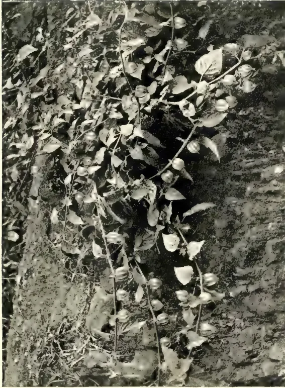
A black and white photograph of a Cape Gooseberry plant. The plant is shown from a low angle, with its stems and leaves filling most of the frame. The leaves are trifoliate, with three leaflets per stem, and they have a serrated or toothed margin. The stems are woody and have several clusters of small, round, light-colored fruits. The fruits are arranged in whorls of three or four at the leaf axils. The background is dark and textured, possibly soil or other vegetation.Photo by H. F. Macmillan.
CAPE GOOSEBERRY.
This image is a scan of a blank page. The paper has a light beige or cream-colored tint. There are a few very small, faint dark spots scattered across the surface, which appear to be scanning artifacts or minor imperfections in the paper. No text, lines, or other markings are present. SEPTEMBER, 1912.]209PAPER BY MR. A. KARL BEVEN.
[Read before the Low-country Products Association.]
Coconuts are recognised even by those who have staked their all in tea, and even rubber, as being the safest investment the Island offers. The cultivation covers a large field, and I shall attempt to touch only lightly on it, in the hope that attention may be directed to the more important phases of the growth and cultivation of the palm. Coconuts are not indigenous to Ceylon. A great authority on the subject places their original habitat in the Eastern Archipelago. In Ceylon tradition locates the earliest groves in the Southern Coast. But it is supposed to be only after the arrival of the Dutch, about the year 1656, that a great stimulus was given to the extension and cultivation of the palm.
These extend now along the North-Western, the Western, and Southern Coasts of Ceylon; also in the Jaffna Peninsula in the North and in the Eastern Province, the Batticaloa district. In the last mentioned a serious blow was given to the industry by the cyclone of March, 1907, which almost extinguished it on a part of that coast. That event is fresh in our minds. Inland, the extension has been considerable in the North-Western, the Western, and the Northern Provinces. Then there are portions of the Central Province where it flourishes around Peradeniya, Gampola, Kandy, and Matale. At Badulla there is a good coconut garden flourishing at 2,000 feet elevation; but this lies in a well-sheltered valley.
In 1860 there were 250,000 acres under cultivation and now, 52 years later, we have over 929,000 acres. The energy and enterprise which have produced such a rapid extension are obvious; and great credit is due to those who have engaged in it, having regard to the slow growth of the palm and the difficulty of handling its bulky products. It is an enterprise which deserves greater assistance from Government than has been given to it. I refer to the facilities that ought to have been extended to it by the opening of railways into coconut districts. How small a proportion of this vast acreage is served by a railway! It was pointed out not long ago that it was when coffee covered an extent of only 150,000 acres it had a railway given for its special benefit. Remember it was a most difficult and expensive line to construct, and it was planned when the acreage was only 80,000! Yet, now, there are over 250,000 acres of flourishing coconuts under cultivation in the Marawila district and in parts of Chilaw, Rajakadaluwa and Puttalam—and inland to the outskirts of the Kurunegala district included—still awaiting a railway which has been agitated for over the last 25 years. It is a remarkably cheap line to construct, yet the enterprise was attempted to be smothered by every possible obstacle—some real but not insurmountable, and others imaginary that only perversity could conjure up. It was here the Low-country Products
27 210[SEPTEMBER, 1912.Association seized the opportunity to justify its existence and secured sanction for the railway beyond Negombo, but alas! only to Chilaw. It is in pressing the claims of the low-country products to the same consideration as has been shown by Government to up-country products that this Association may yet earn the gratitude of the Ceylonese planting community.
Coconuts are supposed to grow anywhere and everywhere, but it is a mistaken idea. The object of most capitalists is to get as quick returns as possible from land at a minimum of expenditure. But the palm is not a product suited for acquiring rapid fortunes: those who can afford to wait will be rewarded for their patience. For the successful growth of coconuts an average temperature of 80° is required; and an average and even distribution of 70 to 100 inches of annual rainfall is essential where the soil is stiff. In the Chilaw and Puttalam districts, a free soil and the presence of water near the surface enable the palm to thrive with a much scantier rainfall. In some of the higher districts, with an abundant rainfall coconuts grow, but a low temperature and excessive moisture hinder the production of fruits. Next to rainfall and temperature attention must be directed to the nature of the soil. The best, of course, is to be found in alluvial flats and along the banks of the rivers, where the land is periodically flooded for a few days. But land under these conditions is not plentiful. The next best soil is a sandy loam. There are many others on which the palm thrives and the richer and deeper the soil the less will be the subsequent expenditure in maintaining its fertility. The only two soils on which the palm—unless heavy expenditure is to be faced—refuses to grow profitably are hard gravel and stiff clay. The latter is the worst to deal with, and one I would avoid altogether. Trees on the former, however, to my knowledge, have responded to cultivation and can and will yield profitable returns.
The next subject to engage attention should be the selection of seed nuts. It is of paramount importance that the greatest care be taken that only the best nuts be got for seed. Time, trouble and expense should not be grudged, for a great deal of the future of the plantation depends on the trees from which the seed nuts have been chosen. I should choose nuts from trees ranging from 20 to 50 years of age. That is those in their very prime. The tree should present a vigorous growth and have large crowns carrying the bunches of fruit on well-set short stems. It is well to avoid those trees that show a tendency to drop their nuts, however larger or numerous, and those with scanty or drooping fronds. There is a prejudice in favour of a large sized nut, but I prefer those of a medium size, since one has to take a commercial view of the product. Where the nuts are exceptionally large, it follows that there would be fewer on a bunch than where the nuts are of medium size. The difference in numbers when acres are considered will be very considerable, as nuts are sold by the thousand, only very small ones being rejected. In weight, too, if you turn your nuts into copra, there is a great advantage, considering their numbers, in medium over large nuts. I would choose therefore medium-sized nuts globular in shape and with a thin husk and a thick kernel for the nursery.
The method of laying out the nursery is known to most of us. But I would emphasize the need of special precautions to avoid a
SEPTEMBER, 1912.]211site in which white ants are likely to show themselves, or one which is too dense a shade. The latter causes the plants to be "spindley." These feel the shock when planted out in the open. There are two methods of laying the nuts in the nurseries—horizontally—the position they lie in when fallen from a tree—and vertically with the "eyes" up. The latter system I do not favour, as the retention of water in the depression, at the stalk end, when the nut is in the upright position, is liable to cause rot, to which the germ, directly below it, may succumb. When laying the nuts on their sides, do not bury them deep. They should be only half covered; and both now, and when planting them out later in situ let the stalk end be kept slightly above ground. The husk toughens and offers some resistance to white ants; but if they are in the nursery they secure a lodgment and give no hope to the plant in the field. If the stalk end, which is the tender spot, is above ground, the mischief can be easily detected. It should be wise to reject those plants tardy in shooting out or springing up.
Strict accuracy should be shown here, not because a plant out of line by a foot or two would suffer, but because the appearance of the field would be spoilt, and the field would remain a monument of slip-shod work. I advocate the usually adopted distance 25 ft. 25 ft. apart, and would avoid planting any closer, but in a very damp district 30 ft. 30 ft. would perhaps be more suitable both to provide for the rapid spread of the fronds and to secure heat and sunlight for the soil.
This should be carefully attended to, and every effort should be made to give the plant a good start. Nothing less than 3 feet square and a depth of 3 feet should be provided. Coolies, when holing in undulating land, will persist in throwing all the earth on the lower side. It is well-known that the richest soil is on the surface. Care should therefore be taken that at least the first 12 to 15 inches of soil be dug out and heaped on the lower side of the hole; the remainder banked up in a semicircle on the upper side.
When the time comes for planting out the plants should have at least four leaves—the hole should be filled up to within 12 to 15 inches of the surface with the richer soil and a basket of ashes, if available. A secondary advantage of the soil being banked up on the upper side is that it would prevent a rush of water into the hole and the consequent displacement of the plant. It is now one of the advantages of planting the nuts on their sides in the nursery comes in. When planted out, to prevent the plants toppling over through wind or rush of water, two short stakes should be driven in cross-wise over the nut and these keep it firmly in its place. Where there is excessive moisture, it is necessary to cut drains between the rows to carry off the water that may accumulate and stagnate, and also from the holes that are liable to fill. Avoid what one sees frequently done—the dumping down of plants in deep holes, in which sufficient soil has not been put in. The roots should be cut with a sharp knife before the plant is put down, and they should not have to fight their way into hard soil.
In the first stages of growth and until the plants have taken a hold of the soil and are independent of the nourishment they derive from the kernel and the husk, the chief difficulty that besets the planter is the destruction caused by white ants,
212[SEPTEMBER, 1912.An application of salt is beneficial, and so is the planting of an aloe seedling by the stem of the plant. The sprinkling of a handful or two of fresh jak or lunumidella saw-dust is also effective. But, perhaps, the easiest and surest remedy is the application of a solution of corrosive sublimate on the husk—say a tea-spoonful to a bottle of water.
During the first five years, the wary bandicoot, rat and porcupine prove yet more serious enemies. The damage done by them is all the greater, because they do not appear on the field until the plant is, to a certain extent, advanced in growth. The porcupine prefers to make a meal off the plant just when it shows a stem above ground. My experience of the bandicoot, waiting until the plants are 4 or 5 years of age to begin their destruction, may be exceptional; but in a field of acres, no less than 150 plants were destroyed within a few weeks. The field was under cinnamon at the time.
Nor would it be out of place to urge the necessity of taking steps to protect plants, during the first five years of their existence, from the attacks of cattle. They do a tremendous amount of damage—the growth of plants eaten down by them is seriously retarded; and such plants will seldom thrive and develop into good trees. Badly attacked plants should be rooted up and replaced if possible by plants of the same age as those in the field. The advantages of cattle on a plantation are great, but it is not advisable to bring them on to the land until after the plants are free from the danger of their attacks. No pains should be spared to protect plants during the first five years against the bandicoot, the porcupine and cattle, for it is of paramount necessity that plants should be started in their growth under the most favourable conditions.
The plants themselves need practically only the clean-weeding of a circle of say 5 feet in diameter. The application of wood ashes proves beneficial to plants and a mulch of green manure. Between the rows of plants I would only cut down the brushwood, and in order not to expose the ground to the full force of the sun, the growth of some leguminous plants offers a double advantage in enriching the soil as well. A great object should be to maintain the richness of the soil, remembering that the roots of the palms are wide-spreading and surface feeding; and when the trees grow up they will require all there is to be had. The future welfare of the tree will be greatly helped by conserving the richness of the soil. Green manures can always be grown with advantage. There are soils which will not be impoverished, to the detriment of the palm in later years, by the growth of catch crops, but care should be taken to choose such as are not too exhausting.
The application of manures on a system will not be necessary before the palm reaches the bearing stage, nor even in the first few years of bearing. The advantages of applying some manure to stimulate those plants that are backward are obvious. They need a helping hand and timely help should secure uniformity in the plantation. I shall not touch further on the all-important subject of manuring and on the great benefits to both trees and crop from the application of suitable manures. It is a large subject and the Association will, I hope, induce some other member to read a paper on it on a future occasion.
SEPTEMBER, 1912.]213A regular system of trenching begun early would greatly benefit the trees. On steep land, contour trenching, before planting, would conserve soils. In the earlier years, it would be sufficient on ordinary flat or undulating land to have narrow trenches, say 2 feet wide and 18 inches deep between the rows of trees to hold up water and to prevent wash in the portions of the land that require them. But when the trees have developed, it would be advisable to have contour trenches, embracing every little rise in the land and throughout the undulating sections. Even where the surface is fairly covered over with grass, and the slope is hardly appreciable, a trench often reveals, after an average shower, an immense amount of moisture that would otherwise have run to waste, perhaps carried out of the land altogether. It is not only the water but the soil also that is often lost to the estate.
The first object in trenching should be to conserve as much moisture as possible on the higher portions. Then the wider the trenches lower down, the greater the superficial area of soil reached and the greater its porosity. It is usual to have trenches cut in sections say 20 ft. long 5 ft. wide, and 12 to 15 inches deep, the soil being banked up on the lower side. The advantage of having trenches cut in sections, with firm ground 2 ft. between, is that where they do not run at right angles to the slope they prevent all the water rushing to the lower end to accumulate there and probably burst the bund. It is to meet these two contingencies that the sections are of use, each section holding the water that comes from above it, to the benefit of the plants above and below. The bottom of the trenches should be as level as possible. If the trenches be gradually packed with husk, fallen branches and all the rubbish that can be collected, and finally receive a top-dressing of earth, the benefit will soon be realised.
A similar system of trenches carried on in alternate lines will help to cover the whole estate by degrees with a net-work of receptacles for moisture and manures within easy reach of every tree. Slowly but surely the entire surface soil will thereby be worked. Nor should the cost of these trenches be heavy, at least not to the practical planter who refuses to be guided by the contract rates which are paid by Government generally in their P.W.D., Railway, and Irrigation Works. I believe the rate is somewhere about 75 cts. to a rupee a cube. Now, I have had cut tens of thousands of feet of these trenches and have found a cooly able to cut three trenches, each 20' × 5' × 1', or 20' × 4½' × 15", in a day in a medium soil. The cost works out at only 12 cts. a cube. Task work is welcomed by the men, as the better workers find no difficulty in completing their trenches and striking work at 3 and 4 o'clock in the afternoon.
These should be promptly filled up; and, if uniformity is to be preserved, it is well to have advanced plants in the nursery to take the places of the lost ones; but vacancies mean so much space wasted and income lost. Where the plantation has grown beyond the reach of cattle, and they are allowed on it, it is necessary to protect the supplies from destruction by them. Fencing with dead sticks is expensive in that it has to be frequently renewed. The method I have found most successful is to have a hedge of the much-abused lantana round the plant planted in a circle a
214SEPTEMBER, 1912.couple of feet away from the hole. It is quick growing, and may be protected by thorns so as to keep cattle off it until a stout hedge is formed. It can be trimmed down to the height of the growing plant and during drought it has the advantage of affording shelter and conserving moisture, while the prunings enrich the soil. The cost of trimming the hedge once in six months is small. In a stiff soil the lateral roots thrown out by the lantana open up the soil. It grows on the surface and can usually be rooted up by hand, the roots loosening the soil. Finally, when the coconut plants are beyond the reach of cattle, the hedge is rooted up and buried in the plant-hole; or it is burnt after a week's exposure, and much potash, in which the, lantana is very rich, is added to the soil. The vigorous and perfectly developed plants, which flourish within this live hedge, falsify the theory that the lantana impoverishes the soil to the detriment of the plant. When saplings are planted in older plantations whose trees have taken possession of the land, it will be of advantage to cut a narrow drain outside the coconut-hole and say 5 feet away from the plant, all round it to a depth of 15 to 18 inches. This would help in checking the roots of the trees immediately round from interfering with the growth of the young plant.
It is within this period that the red beetle is most active, and watchfulness is needed. The greatest care should be taken when weeding, that in the process of trimming, the branches are never torn off the stem. Cut off the dry branches with a sharp catty, allowing the butt end to remain on the trunk. The lace work of fibre, by which the dry fronds that encircle the tree are held together, offers the necessary obstacles to the intrusion of the beetle. If you safeguard this there will be small need to employ a staff of beetle-hunters who, I fear, greatly help the entrance of the beetle into the tree by needlessly meddling with, and disturbing, the branches thereby exposing the tender surface which offers an inviting entrance. There are estates where this pest is very active and it may be necessary in such to employ beetle-catchers; but they should have the strictest instructions and supervision. Beetle-catchers were regularly employed on a monthly salary on an estate when I took charge of it a few years ago. These men were promptly discontinued by me although it was with apprehension I looked at the strings of beetles hanging in the store verandah. I have no reason to regret my action. The black beetle is comparatively harmless in itself, but it often paves the way for the red. The fermented sap, exuding from the whole drilled by them, attracts the red offender.
The black beetle is more easily got at and should be regularly hunted. By their destruction there should be a corresponding diminution in the numbers of the red. One should not be in too great a hurry to cut down a tree attacked by the red beetle. If discovered in time, the tree, with careful treatment and periodical visits, can be saved. Where the damage is great, and the heart affected high up—a sure indication of which is the falling off of the tender spike—the only course is to chop up the tree, destroying all beetles and grub, and finally burning it. There should be no delay, as it would result in the escape of beetles to the subsequent loss of other palms. The fallen trees at Batticaloa led to a useful discussion regarding the life history of the
SEPTEMBER, 1912.]215red beetle, from the larval stage. It was at first thought by the official advisers of the Government that the beetle took 18 months to little short of two years, if I mistake not, to develop. It was, however, proved by Mr. Francis Beven that the red beetle developed in a few weeks. Subsequent scientific investigation confirmed this view, and it is now accepted almost as a certainty that maturity can be reached in about eight weeks.
So far, the coconut palm has flourished in Ceylon for centuries with no real danger threatening it. Great therefore was the consternation caused when, four or five years ago, there appeared on the scene the active fungus which caused what is popularly known as "The Bleeding disease". Fortunately, most proprietors were alive to the danger that would follow neglect. They set to work in adopting suggested remedies, and in experimenting with new remedies, with the happy result that the disease has been got under control.
The results of scientific research are now being applied practically to almost every field of human knowledge. Agriculture is now exalted to a science. The cultivation of coconuts has long been purely experimental. While we would welcome all that scientific methods can do to improve the cultivation of this great staple product of the Island, we must remember it is practical experience which can alone test and use intelligently the theories of scientists. All that I have written is based on experience. I gladly place it at the service of the Association for whatever it is worth; and hope it will elicit statements of the practical experience of others whose claim to be heard is greater than mine.
Heinrich Hazzelling of the Bureau of Plant Industry, Washington, deals with this subject in a reprint from the Botanical Magazine.
The want of uniformity which is so striking in Cuban tobacco fields shows that no systematic effort has been made to improve the tobacco plant there, and is to be attributed to the special methods of agriculture in vogue.
The difficulty of raising seedlings in the plains owing to the fungus-infected condition of the soil makes it necessary to establish nurseries on new lands in the mountains. The resulting seedlings are packed in bales and despatched to their various destinations. The seed for raising these nurseries are not selected, but gathered indiscriminately from the suckers of the aftermath.
Experiments were begun in 1908 with a view to remedying the existing state of affairs by inducing pure-line cultures.
One of the commonest experiences in transferring plants from one region to an entirely different one is that the transfer is accompanied by great variation during the first year: but where pure-strains are selected, there is no tendency to breaking up of the type.
The tobacco plant is extremely susceptible to changes in environment, but such changes affected all the plants of a pure-strain alike, and do not cause a breaking up of the type.
216[SEPTEMBER, 1912,Dr. Ule, the discoverer of the new Manihots; M. dichotoma, M. heptaphylla, and M. piauhyensis, has recently visited Ceara, and from his experience there is inclined to regard Manihot Glaziovii, which furnishes the Manicoba rubber of Ceara, more favourably than hitherto. "As a result of my observations I have formed a rather more favourable opinion with regard to the suitability of Manihot Glaziovii as a plantation tree, and it does not appear to me at all advisable to replace this Manicoba by the species from Bahia and Piauhy, in the hill country of Ceara. Manihot Glaziovii undoubtedly tolerates a much damper climate than Manihot dichotoma, M. heptaphylla, and M. piauhyensis, which are true dry zone plants."
At the present time plantations of Manihot Glaziovii are to be found throughout all the hill region of Ceara, while the wild trees have been for the most part destroyed or reduced to small numbers. The plantations are established on old coffee lands. The hills, about 3,000 feet high, were formerly covered with heavy forest which was kept moist by the damp sea winds at the same time the forests acted as a barrier to the dry winds from the interior. Coffee at first yielded a handsome return but as more and more of the forest was cleared the district became subject to mere dry winds with the result that the coffee died out. The few coffee plantations which now remain on the lower slopes are protected by Inga trees. Manihot Glaziovii was first put in as shade for coffee but is now planted independently. There are no very large plantations, but numerous small estates all over the hills; one of the largest plantations is that of the "Serinha Rubber Company," an English concern.
The tappers receive 800 to 1,300 Rees (75 cents to R. 1.12) for each Kilogramme (2.2 lbs.) of latex, but the pay varies according to the market price of rubber. The trees are tapped with a small axe, a "Machadinho," and the latex collected in tin cups. A tapper taps 100 to 200 trees a day, and obtains 2 to 10 kilogrammes or more of latex. Three kilogrammes of latex yield one kilogramme of dry rubber. The cost of tapping is therefore R. 1 to 1.50 per lb. The latex is coagulated in flat metal dishes by means of formalin, and the wet rubber is passed three times through rollers, being washed the second and third time with hot water. The sheets take one to four weeks to dry. Tapping is carried on for three months only, from July to October.
In another method of tapping the bark is cut off for a length of 20 to 30 cm. and the latex allowed to flow down the stem. This is continued for a period of 20 days, after which the coagulated rubber is stripped off.
As Ule states, the labour entailed by this method is small, but the tree soon dies. The rotating pricker has been tried, but is said to have been abandoned because it causes decay beneath the bark; whether this is an actual experience or an echo of a recent Ceylon controversy is not clear, but apparently it is the latter.
In the Botanic Garden at Para, Manihot dichotoma and piauhyensis make poor growth, but M. Glaziovii grows well. M. piauhyensis and
SEPTEMBER, 1912.]217heptaphylla are said to yield more rubber than Manihot Glaziovii, and to the south of Piauhy where no wild Manicobas occur, piauhyens is planted in preference to Glaziovii. M. dichotoma is said to be tapped by a spiral cut, but the method is deprecated and it is prophesied that the adoption of other systems will give better results. (Tropenpflanzen, February 1912.)
T. P.
The India Rubber Journal frankly confesses itself disappointed with the synthetic product of Dr. Strange which is said to resemble a sticky third rate African paste, with an awkward appearance of chewing gum, rather than good Hevea rubber.
The claims made by the promoters of this product are shortly summarised as follows:—
The figures given by Dr. Strange as representing the percentage of the different products in the above transformations are questioned, particularly that of caoutchouc from fusel oil which Dr. Strange gives as 98, but the I. R. Journal puts at 5. A calculation is made to show that one million acres of potatoes would be required to produce 10,000 tons of caoutchouc. "Apparently the British farmer has a good time before him!"
The Secretary submitted statements of the results of the various experimental plots of cotton grown in Trelawny, St. Ann and St. Elizabeth. Also the results of shipping the cotton produced and other lots purchased at 3d. per lb. from small growers in St. Elizabeth, ginned by Mr. Conrad Watson, and marketed along with his own, but marked separately. The cotton fetched 1s. 3d. per lb. in London, and freight, being now per ton measurement, worked out at 1d. per lb.; still the result showed a net return of d. per lb. on the seed cotton purchased at 3d. Later, through Mr. Watson's representation, the Royal Mail Company reduced the freight from 47s. 6d. to 17s. 6d. per ton measurement, and gave a refund, making the net return 1d. per lb.
It was resolved to discontinue any further effort to encourage cotton-growing in the dry sections at St. Ann and Trelawny, as people had not responded in these districts, but to concentrate effort on St. Elizabeth, Portland-Vere, where fair crops had been got in spite of a series of very dry seasons, and where the people were taking well to this crop. From the money at credit to cotton account it was decided to offer prizes of £2 and £1 on the best grown cultivations of cotton of not less than half an acre in the districts of St. Elizabeth and Portland-Vere. (Journal of the Jamaica Agricultural Society, March 1912.)
28 218[SEPTEMBER, 1912.A new serious disease of the Ceara rubber tree (Manihot Glaziovii) is recorded in the Tropenpflanze for February, 1912, by Dr. Ule, who has recently visited Ceara in order to investigate the conditions of rubber production in that country. It is characterised by the production of large swellings on the twigs and branches, often more than four times the diameter of the branch attacked. Most of the swellings give rise to a number of young shoots which in some cases form "Witches Brooms." The cause of these deformations is a rust fungus, Uredo Manihotis P. Henn., which was originally discovered on wild Manihots in Brazil in 1892. It occurs on the leaves as well as on the stems, but in the former situation it forms only the customary rust spots. Swellings are formed when it attacks the stem because, according to Ule, the mycelium of the fungus stops the flow of sap. No other stage of the fungus has yet been discovered, and it is therefore not known whether it requires an intermediate host plant to complete its development. The disease is widespread throughout the whole Serra de Baturite, in the plantations along the railway, and in the Serra de Maranguape; and Ule considers it probable that it occurs throughout the whole of Ceara and Rio Grande Do Norte. When trees are attacked by the disease, the flow of latex diminishes, the diseased branches die off, and finally the tree succumbs. Ule considers that there is little danger of spreading the disease by the distribution of seed, but cuttings should be taken only from sound trees. This opinion is quite contrary to the generally accepted view that Hemileia vastatrix, a similar fungus, was spread from Ceylon with coffee seed, either on the seed or in the packing material, to other countries in the East; and it would appear advisable that countries importing seeds from Ceara should insist on disinfection.
The fungus is known to occur on Manioc, Manihot utilisima, as well as on Manihot Glaziovii.
T. P.
| Provinces and States. | 1912-1913. | 1911-12 | 1910-11. |
|---|---|---|---|
| Bombay (Deccan) (a) ... | 1,357,000 | 1,467,000 | 1,545,000 |
| Central Provinces and Berar ... | 4,222,000 | 4,135,000 | 4,491,000 |
| Madras ... | 60,000 | 136,000 | 136,000 |
| Punjab (a) ... | 1,228,000 | 1,322,000 | 1,285,000 |
| United Provinces ... | (b) | (b) | (b) |
| Burma ... | 192,000 | 179,000 | 168,000 |
| Bengal ... | 50,000 | 63,000 | } 161,000 |
| Bihar and Orissa ... | 80,000 | 85,000 | |
| Assam ... | 35,000 | 36,000 | |
| N.W. Frontier ... | 48,000 | 45,000 | 31,000 |
| Ajmer-Merwara ... | 14,000 | 18,000 | 24,000 |
| Hyderabad ... | 2,213,000 | 2,509,000 | 2,833,000 |
| Central India ... | (c) 675,000 | (c) 747,000 | 1,285,000 |
| Rajputana ... | (d) 236,000 | (d) 230,000 | 384,000 |
| Mysore ... | 11,000 | 6,000 | 12,000 |
| TOTAL ... | 10,421,000 | 10,978,000 | 12,355,000 |
(a) Including Native States. (b) Figures not reported. (c) Excluding Gwalior and Baghelkhand States (Report just received for Baghelkhand shows 28,000 acres sown.)
(d) Excluding Mewar and Bundi States.
In July, 1911, an International Congress and Exhibition dealing solely with fibres and fibre plants was held at Soerabaya (Java), attended chiefly by representatives from the Dutch Colonies and the Philippines. The Exhibition included living specimens of fibre plants, samples of prepared fibre and manufactured articles, and a large machinery section, while the Congress endeavoured to arrive at some conclusions as to the value of the various fibre plants from the cultivator's point of view, chiefly however with regard to the Dutch Colonies. The following notes are taken from a report by Dr. W. E. Bruck in the Tropenplantenr for February, 1912.
The production of fibres in the Dutch East Indies is as yet comparatively small. The total area under fibre plants at the beginning of 1911 is given as follows:—
| Kapok | ... | ... | ... | ... | 72,500 acres |
| Sisal and other Agaves | ... | ... | ... | ... | 16,000 ,, |
| Manila hemp, etc | ... | ... | ... | ... | 4,600 ,, |
| Cotton | ... | ... | ... | ... | 22,000 ,, |
This is the most important fibre plant in Java. But the species of Agave cultivated there is chiefly Agave cantala Roxb., which is quite different from the white Sisal or Henequen of Mexico. Agave cantala has hitherto only been cultivated in the Philippines (Manila Maguey). Agave sisalana has also been cultivated in Java but the culture is diminishing. The Congress came to the following conclusions:—
The culture of Sisal hemp is not remunerative on lands which do not permit cheap transport of the raw material, nor on poor land nor in a cool region where the yield falls below 650 lbs. of fibre per acre. It can be grown with advantage on soil deficient in humus, where cacao and coffee no longer flourish. The soil must be free and situated not more than 1,200 feet above sea level. It is most profitably grown as a secondary product since it can then be left untouched when the market price is low or during seasons when the production of leaf is small. It cannot be recommended as a catchcrop or intercrop. If sisal is the chief product, estates of less than 700 acres are not profitable. For an estate of 900 acres the cost of upkeep and replanting, upkeep of buildings, management, etc., together with 5 per cent. interest on the capital, will be about 54 rupees per acre. The capital required is estimated at 335,000 rupees. The expenses of harvesting, transport, commission, etc., and depreciation are reckoned at about 100 rupees per ton of fibre, while the value per ton of dry fibre f.o.b. Java is about 300 rupees. The net profit, with a production of 650 pounds per acre is not more than 5 per cent, but with a production of 1,300 lbs. per acre it increases to 20 per cent.
Java jute is produced by a species of Hibiscus, said to be identical with Hibiscus cannabinus, from which Madras jute and Gambo hemp are obtained, but there appears to be some doubt whether this identi.
220[SEPTEMBER, 1912.fication is correct. The Congress was of opinion that the cultivation of this species was too limited, and the available figures too contradictory, to admit of valid conclusions as to its value.
Experiments made in Java with Manila hemp (Abaca) have in some cases given very good results, though the fibre is not of such fine quality as the better sorts of Musa texilis from the Philippines. The cultivation is not profitable except where cheap transport and cheap hand labour is available, nor where the production falls below 850 lbs. of dry fibre per acre. In Java, Abaca requires a loose soil, rich in humus, not more than 1,600 feet above sea level. Under favourable conditions the production may reach tons of dry fibre per acre. Interplanting with Manila hemp is not to be recommended. If Manila hemp is the chief product an estate of less than 450 acres is not remunerative, but as a secondary product, 90 acres will pay. For an estate of 900 acres with a capital of 335,000 rupees, the cost of upkeep will be about 54 rupees per acre, and the cost of harvesting and putting on the market in Europe 125 rupees. Taking the value of Manila hemp in Holland at 380 rupees per ton, this would yield a profit of 5 per cent. with the minimum yield of 850 lbs. per acre, which would be increased to 20 per cent. with a yield of 1,700 lbs. per acre.
Favourable results have been obtained with this fibre in the Philippines. The demand for it is irregular and there is no fixed market for it, but it possesses good characters which make it of value for special purposes. Experimental results, however, are not yet available. The Congress considered it suitable for native cultivation. The following figures, relating to the manufacture of fibre on a small scale, were furnished. Pineapple leaves, bought from the natives in Sumatra, cost 20 cents per 100 kilogrammes and yield 20 per cent. of dry fibre. The value of this in Europe is 30 to 35 cents.
Java produces more Kapok than any other country, but true Kapok (from Eriodendron anfractuosum) is largely adulterated with that from Bombax. There are few plantations, the trees being chiefly planted by the natives, or along estate roads as a secondary product. The largest plantation produces 500,000 to 650,000 lbs. of Kapok per annum. Specimens of fabric woven entirely from Kapok were exhibited, but as the price of Kapok is higher than that of cotton these were rather of the nature of a curiosity than a commercial possibility. The Congress was of opinion that Kapok was a profitable side-product for the native cultivator, but though it could be made to pay as the sole product of an estate, the return per acre was generally small. The cultivation of Kapok was recommended on coffee and cacao estates. The demand for this fibre steadily increases, and there is no danger of over-production.
Experiments with Ramie have been made in the Dutch Colonies, especially Sumatra, and excellent fibre has been produced; but the cultivation has proved too costly and the results have never shown a profit.
The report on this product illustrates the limitations of the Congress. The manufacture of coir on a large scale for export has not yet been
SEPTEMBER, 1912.]221undertaken in Java, and consequently no details or figures were available for discussion. The expert from the Philippines is recorded to have stated that there was to a certain extent antagonism between a copra and a coir industry, since for the former ripe nuts only could be used, while for the latter the nuts must be unripe. While the statement is no doubt broadly correct, one would scarcely venture to assert that it is observed in practice; in Ceylon, the manufacture of copra cannot be said to "exclude" the manufacture of coir.
The last day of the Congress was devoted to a discussion of the question whether an extension of the existing cotton cultivation of the Dutch East Indies would pay. Up to the present, cotton has been grown only as a native product in Palembang in Sumatra and Demak in North East Java. The Government have appointed a special cotton expert to carry out experiments and instruct the native cultivator, and are endeavouring in this way, and by the distribution of seed, to improve the cultivation. Very little European capital is available for this product.
T. P. ;
The resignation of Dr. Hall is announced, and his successor is Dr. E. J. Russell who has been associated with Rothamsted for some time, and carried out investigations into soil fertility resulting in discoveries which the Gardeners' Chronicle thinks are destined to become classic. Fertility is now admitted to be dependent on complex biological factors, the action of which is only now beginning to be comprehended.
The neighbouring colony of British North Borneo exports some p120,000 worth of Sago annually.
The Agusan Valley of Mindanao could undoubtedly export several times this amount from the vast swamps filled with the same species of sago palm which extend across the Sulu Archipelago into Borneo, and eastward to New Guinea. There is no doubt that some day these swamps will be the scene of great activity in the way of starch, sugar, and alcohol manufacture.
Sago flour, when properly prepared, is an excellent food and by fermenting alcohol can, of course, be made. Fortunately, the sago palm produces itself from suckers as soon as the old plant is felled; but unfortunately perhaps for the palm-sugar maker, it is a palm which dies at the time of flowering, like the cabo negro and buri.
Properly managed, a sago swamp would be continuously productive without replanting or cultivation of any kind; that is, the growing palms should be allowed to stand at proper distances and all unnecessary suckers and useless intermediate trunks should be removed, allowing one or two suckers to grow from the base of each trunk as soon as it is ready for cutting. In fact, the sago may some day rival the nipa as a profitable palm crop, though it will never compare with the coconut, —Philippine Agricultural Review.
222[SEPTEMBER, 1912.The majority of investors in rubber plantation companies have long since realised that the most rapid growth and the largest yields are to be associated with estates in the Malay Peninsula; in fact, it would be no exaggeration to say that an average yield of 250 lbs. per acre per annum can be expected from six-year-old trees in Malaya, as against one of 150 lbs. per acre in Ceylon. These satisfactory results were not known to the pioneers, but it is a peculiar coincidence that the Malay Peninsula appears to have been selected by Government authorities as an area which would stand a somewhat heavy rate of taxation. It has been suggested by many leaders of the plantation industry that the reason why costs of production are so much higher in Malaya than elsewhere is that the taxes in the form of rent payable to the Government each year, drainage assessments, and the ad valorem duty of 2½ per cent. are excessively high, and represent several pence per lb. on the cost of rubber. Some little correspondence has been published in the press with regard to this, Government officials maintaining that it is by no means criminal to tax a successful industry, and to use the revenue derived by such means for the development of poorer states.
While we admit that all this taxation has quite a marked effect on the cost of production, we cannot agree with the suggestion sometimes thrown out that taxation in Malaya is the main offender. In the first place, we know only to our regret that the costs of coolie labour in Malaya are far in excess of those in Ceylon; in point of fact the dollar in Malaya appears to be only equal to the rupee of Ceylon in its purchasing capacity. Again, we know that a salary of £500 or £700 in Malaya for young managers is very frequent, whereas in Ceylon such a salary would be considered quite good, and would only be given to men with considerable experience. Ceylon will always on account of these difficulties be able to stand the strain of smaller annual returns. Coolie costs, costs of European management, and even also of London management, are far greater to-day in connection with rubber than they have ever been with tea companies in other countries. We therefore think that these features must in fairness be allowed for when criticism is being offered on the subject of taxation by Government, and its effect on the cost of producing rubber.
During the last few weeks the accounts of several important and highly-reputable rubber companies have been published, and we cannot but admit that the actual cost of producing rubber on these properties has been far higher than we or anyone else anticipated. Take for instance the Straits Rubber Co., Ltd. The cost of production, free on board at Penang, including commission to the staff and depreciation, was 1s. 7½d. per lb; adding to this London expenses, freight, insurance, landing and sale charges, the total cost amounts to just over 2s. per lb. Now such a cost would perhaps not have occasioned surprise if it had been associated with an estate just coming into bearing, or with a very small crop. As a matter of fact, the crop harvested for 1911 at a cost of 2s. per lb., was no less than 985,279 lbs. The areas being tapped were planted
SEPTEMBER, 1912.]223from 1904 to 1907, and were therefore comparatively young; as this acreage amounted to nearly 4,000 acres, a cost of 2s. per lb. can only be regarded as excessive. It is true that in the case of this estate a very highly efficient staff is maintained in the East, and we should be sorry to hear of any reduction in salaries or officers in connection with that part of the Company. It is, however, to be hoped that with a crop of 1,400,000 lbs., as estimated for the present year, a considerable reduction in cost of production will be achieved. If such a crop cannot be harvested at much less than 2s. per lb., we are afraid that many smaller concerns will soon feel the pinch.—India Rubber Journal.
It does not appear that Manihot dichotoma and M. piauhysensis will be successful under the conditions of trial. The trees of Hevea brasiliensis have flowered for several years in succession, but have not produced any seed. Castilloa elastica has shown great susceptibility to attacks by scale insects and mealy-bug, and the plants have been removed and replaced by Hevea brasiliensis. It is not considered desirable under present conditions to recommend any extensive planting of Castilloa in St. Vincent. Other interesting plants which receive attention include the mangosteen, a species of Tecoma, pimento, and Michelia Champaca, the last of which produces in profusion delightfully fragrant flowers; it is the champak of Shelley's Indian Serenade :—
‘The champak odours fail.
Like sweet thoughts in a dream.’
The large attention that is given by planters to the cotton and arrow-root industries prevents the distribution of plants from the station from being either large or varied, the number of economic plants sent out during the period under review being 4,340; of these 4,003 were cacao, and the next largest distribution—126—rubber; there were also miscellaneous plants, as well as a certain amount of produce and seeds that were sold.
The particulars given concerning the rainfall show that the amount recorded at the Botanic Station during 1910 was 104.03 inches, which is 1.25 inches below the average of the past seventeen years. Particulars of the rainfall for the past twelve years indicate that the driest months are February, March and April, and the wettest June and October, each of the last having an average precipitation exceeding 10 inches. . . . .
The notes on agricultural industries are concerned mainly with cotton and it is shown that the export of Sea Island and Marie Galante line, during the period under review, was 540,339 lb., valued at £41,836 as compared with 394,667 lb. valued at £26,775, in 1909-10. Since 1903-i the total exports from St. Vincent of these two kinds of cotton have, to the date given, amounted to 2,392,884 lb. having an estimated value of £160,407. During the past three years, there has been a steady increase in the yield of lint per acre, the amount stated being a return of 156 lb. In this section of the report are contained interesting details concerning legislation in regard to the cotton industry, labour-supply for cotton-growing, peasant cotton-growing, selection for improvement, and pests and diseases, Agricultural News.
[SEPTEMBER, 1912.
Since the last meeting of the Board held on May 9, 1912, the following have joined the Society as members:—The Hon. Mr. Anton Bertram; A. E. Byrde; A. T. C. Meyer; D. L. Jayatilleke; H. W. Boyagoda, Ratemahatmaya; C. S. Braine; William R. Webster; J. F. Templer; T. Del; T. B. Worthington; E. C. Shelton Storer; F. T. Coore; Graham L. Smith; B. O. Dias; B. W. Bawa; Eastern and Pacific Trading Co.; B. Stuart; P. G. Wood; C. D. Waddilove; F. Halliley; L. B. Green; C. L. de Zylva; R. J. McMullin; the Superintendent, Para estate; O. B. M. Cheyne; N. Ratnasabapathy; Martin M. Smith.
Mr. R. N. Lyne, F.L.S., the Director of Agriculture, arrived in the Island on May 20, and gave an address at the Annual General Meeting of the Society on July 3. Mr. Lyne has been appointed Organizing Vice-President of the Society and Editor of the Society's magazine.
The Director and Secretary made a circuit through the North-Western, North-Central, and Northern Provinces between July 20 and 27, two days of which were spent in inspection work in the Jaffna peninsula. A visit was also paid to the scene of operation in connection with the Karachchi scheme at Iranamadu. Subsequently Madipola, Weuda, Kurunegala, and Nikaweratiya were visited.
The services of the Chief Clerk (Mr. J. S. de Silva) were lent to the Honorary Secretary of the All-Ceylon Exhibition from June 12 till July 15. Mr. Silva, who was placed in charge of a large staff of clerks, received the following acknowledgment of his services from the Secretary:—
“I am directed by the President of the All-Ceylon Exhibition to convey to you his appreciation of the very valuable services rendered by you to the Honorary Secretaries of the Exhibition, and am to forward for your acceptance a gold medal as a souvenir of the occasion and in recognition of your efficient execution of the duties entrusted to you.”
The whole office staff and all the Agricultural Instructors were engaged at the Exhibition between June 25 and July 10. Of the latter, Messrs. N. Wickremaratne and W. Molegode were awarded silver medals for their services.
Mr. S. Chelliah, Agricultural Instructor, Northern Province, visited Andankulam, Kantalai, and Periyakulam major tanks in the vicinity of Trincomalee, and reports that fruit plants, including orange, lime, soursop, have been planted by Mr. Emerson's direction in the premises attached to the residences of the tank guardians, but these have suffered for the want of proper tillage and mulching, which they are now receiving. The Director of Irrigation approves of the extension of cultivation of fruits on lands irrigable by tanks, and Mr. Emerson is interesting himself in the project. Since his return from Batticaloa, Mr. Chelliah has been devoting
SEPTEMBER, 1912.]225his time to the Jaffna District, and was largely instrumental in arranging for a representative provincial exhibit at the All-Ceylon Exhibition from the Northern Province.
Mr. L. A. D. Silva continues to work in the Ratnapura District, where he is confining himself to the programme mapped out for him at the beginning of the year. He is introducing cinnamon, pepper and cotton into suitable districts.
Mr. N. Wickremaratne, Agricultural Instructor, Southern Province, visited Ambalangoda, Nagoda, Akmimana, Gonapinuwela, Baddegama, Hikkaduwa, and toured in Hambantota District.
Mr. W. Molegode, Agricultural Instructor, Central Province, went on short leave after the Exhibition, nominating Mr. Jas R. Nugawela as his substitute to complete his itinerary work. Since August 1st he resumed active service and visited Madipola, Teldeniya, Harispattu division, Matale, and Ukuwela, and also paid a visit to the Kegalla District to make a special report on the complaints about the silting up of paddy lands as the result of wash from rubber clearings.
Mr. P. B. M. Bandaranayake was sent to Kandy to assist Mr. Molegode. He visited Teldeniya, Madugoda, and the Kalalgamuwa Experimental Garden.
Mr. A. Madanayake, Agricultural Instructor, North-Western Province, visited Balalla, Gokerella, Batalagoda, Ibbagamuwa, Nikaweratiya, Hettipola, Nakkawatta, &c. He is supervising the garden work at Balalla, Hettipola, and Nikaweratiya.
Mr. M. J. A. Karunanayake was attached to the seed store in Colombo, paying weekly supervision visits to the Bandaragama Experimental Garden.
Mr. C. K. Sathasivam was engaged in the Experimental Garden at Tampiluvil and visited Nintavur, Sammanturai, Udanka, Veeramunai, Sorikkalamunai &c. He has succeeded in interesting the cultivators of the South in cotton cultivation.
Mr. N. M. Jayasuriya, Agricultural Instructor, Kegalla District, visited Undugoda, Panawaka, Mawanella, and Siyambalawa.
The All-Ceylon Exhibition held from July 1 to 6 was voted on all hands a thorough success. The work in connection with it was done at various times by Mr. H. F. Macmillan (Curator, Royal Botanic Gardens), Mr. C. Drieberg (Secretary, Ceylon Agricultural Society), Mr. A. N. Galbraith, C.C.S., and last but not least, Mr. E. B. Denham, C.C.S., who did much to expand the scope of the Show so that its magnitude came as a surprise to those who did not see it grow.
A full official report of the great Show will, no doubt, be available shortly.
A market show will be held in December next at Hakkaduwa under the auspices of the Wellaboda pattu (Galle) Agricultural Society.
Agricultural Instructor Wickremaratne reports as follows on the Kalutara Market Show held on May 11th last:—
“This was the third show held in the Kalutara totamune, and the first of the three shows held in the district for the year. The show was organized by the Totamune Mudaliyar, Mr. J. V. G. Jayawardene. The
29 226[SEPTEMBER, 1912.awards, consisting of silver medals and money prizes, and a silver shield for the best school garden in the division, were given away by Mr. Plant, the Assistant Government Agent, in the presence of the Secretary, Ceylon Agricultural Society, and a large number of visitors. At this show, as at other village shows in the district, money prizes were distributed among villagers (both men and women) for keeping their home gardens neat and clean. At the close of the show the Assistant Government Agent announced that in future he would have two different sections, one for villagers only and the other for headmen, so that the former will not have to compete with the latter. There were ten classes of exhibits, and there was general improvement on the previous shows.
“Among fruits, pines (Kew and Mauritius), mangoes, oranges, pomelo, papaws, limes, namnams, jambu and kaju were well represented, as well as jaks of remarkably large size. Plantain and mangosteen were conspicuous by their absence. Under yams, sweet potatoes attracted much attention for their wonderful growth; cassava, innala, arrowroot and gahala were good. The vegetable class was not very satisfactory as a whole but the exhibits of capsicums, bandakkas, brinjals kohila and tomatoes were good. Dairy produce was poor; eggs were well represented. The commercial products made up the best class in the show. Products of the coconut palm, including 29 fine samples of oil, were shown, and nutmeg, pepper, betel, jaggery, ginger, vinegar, paddy and rice were well represented.
“All sections of Live Stock were represented, but the competition was poor. Lace and needlework made a strikingly good class. A fancy curtain made of the kekilla fern (Gleichenia linearis) by Mr. L. Jas. Perera of Wadduwa was much admired. Industrial Exhibits.—Kalutara baskets, betel bags, carved coconut shell work, fancy furniture and mats were well represented. There were several exhibits of pickles and jams.
“Mahanama Buddhist School won the silver shield for the second time for the best all-round garden in the division. Tantirimulla came second.”
The following is the report of Agricultural Instructor Karunanayake on the Bellanā Show held in May last:—
“The annual market show for Pasdun Korale East and West organized by Mudaliyar Samarasinghe was held at Bellana on May 18, under the patronage of the Assistant Government Agent, Kalutara. In spite of the inclement state of the weather there was a good gathering of visitors.
“Fruits constituted the best class in the show. Fine specimens of pineapple, oranges, mandarins, jak, limes, papaw were exhibited. Sapodilla and plantains were rather poor. Yams, including sweet potatoes, arrowroot, cassava and gahala made a good show. The vegetables were rather poor, there being no exhibits of snake gourd, bitter gourd, pumpkin, tomato, chiefly owing to the heavy rains that preceded the show. Capsicum, chillie and brinjal were well represented. Plantains were rather poor. Dairy produce, consisting of milk, ghee and curd, were good, but the eggs were disappointing. Among commercial products some good specimens of coconuts, copia and oil were exhibited. Plumbago, cotton and honey were also shown. Live stock, specially fowls, were better than last year. The needlework section was well represented, and included excellent samples of lace and embroidery. The industrial
SEPTEMBER, 1912.]227products were very poor, excepting one or two good specimens of mats. Preserves and pickles were fairly good. Under School Garden Products there were six entries, and the first prize was awarded to Bellana School, which showed a very good collection of vegetables as well as fruits. Tudugala was second best."
The same Instructor reported as follows on the Bandaragama Show, also held in May last:—
"The annual market show of Rayigam korale, organized by Mudaliyar Wirasinghe, was held at the Wevita Government School on the 25th instant, and was opened by Mr. G. F. Plant, Assistant Government Agent of Kalutara, in the presence of a large gathering of visitors, including the Secretary of the Ceylon Agricultural Society. Among the fruits were fine specimens of mangoes, pineapples, oranges, pumelo, lime, jak, soursop, and papaw. Plantains were on the whole rather poor. A feature in this class was the exhibit of pines, which in number and quality were better than those hitherto shown. Yams, cassava, sweet potatoes, arrowroot, kukulala and innala made a good show. The vegetable section was also a good one. Practically all the kinds specified in the catalogue were represented, and among these were very fine specimens of capsicum, kohila, bandakka brinjal and chillie. Dairy produce was rather poorly represented with the exception of eggs, which made a fairly good show. Among the commercial products were some very good specimens of coconuts, oils and plumbago. The exhibits in the live stock class were very satisfactory, particularly the fowls. The needlework exhibits were fairly good. Under industrial products the specimens of mats were very fine; and ekel brooms, coconut shell work, and Kalutara baskets also made a good show. Preserves and pickles were rather poor. For School Garden Products Paragastota was awarded first prize."
A village show was held at Akmimana, near Galle, on June 22 (as a "feeder" for the Colombo Exhibition), at which the Secretary was present.
A variety of paddy from India known as Molagu Samba, and recommended as superior to Mutusamba, is under trial on a fairly large scale by private cultivators at Ambalangoda, Matale and Batticaloa, and on a smaller scale by the Agricultural Instructors.
The following information regarding this variety has been supplied by the Indian authorities:—"Molagu Samba paddy is transplanted here in August–September. The seedlings are raised thinly at the rate of 8 Madras measures for 8 cents of seed bed, which is heavily manured. The seedlings raised in 8 cents of land will be quite sufficient to transplant an acre. The seedlings are pulled out when they are 30 to 40 days old and transplanted singly 4 to 6 inches apart. After transplanting, the land is always kept under water—say about an inch deep—so that the puddle is never allowed to dry. Under these conditions Molagu Samba does well on ordinary wet lands, taking about 5 months to mature. This is a very good tilting variety. The stems of plants are stout enough to bear heavy heads without lodging. The variety is easily thrashed."
Good reports continue to be received regarding Rascadum paddy, referred to in the last Progress Report. Writing from Katugastota Mr. J. R. Nugawela reports that he considers it the best for Harispattu.
228[SEPTEMBER, 1912.It would appear after a great many trials conducted in various parts of the Island with different varieties of cotton seed, that the American long staples are the most likely to suit our conditions, and on the recommendation of the local agents of the British Cotton Growing Association (Messers Freudenberg & Co.), based upon their experience at their ginnery, the variety known as Allen's long staple, which is reported to have given the best results all round, will be selected for future growings. This is a point gained, as it is important that we should grow only one variety of cotton so that our produce should be of one quality and characteristic of the Island.
Mr. W. Sabapathy, who made a trial of cotton and soy beans in Kayts Island last year, has been afforded facilities by Government for cultivating some 40 acres next season. The experiment is an important one for the Jaffna District.
So far Matale North has been the scene of the most extensive cotton operations, and the results have been extremely encouraging.
The following report (43,828 of May 7) was received from the Imperial Institute on a sample of Black Rattler seed cotton grown in Tumpane, Central Province:—"Lice clean, fairly lustrous, soft, fine, cream-coloured and free from stains. Yield of lint on ginning apparently 30.6 per cent., yield per 100 seeds 4.3 grams. Strength fair, length of fibre from .9 to 1.6 inch—mostly from 1.1 to 1.4. Commercial value 8½d. per lb. ginned, with 'middling' American at 6.57d. per lb. and 'good' Abassiat 11d. per lb. The cotton is of good, useful quality and would be readily saleable in the United Kingdom."
The British Cotton Growing Association expert, reporting on the same sample, wrote:—"American character, rather dull, fairly clean, staple about 1½, not very strong, but fine. Value 8.25d." The Secretary of the Association referring to the cotton says: "This is a very good result indeed."
Cotton has done very well at Balalla, North-Western Province, and the Government Agent has proposed, with the assistance of the Society, to start two rotation gardens, with cotton as the main crop, at Hettipola and Nikaweratiya. These are about to be inspected by the Director of Agriculture and the Secretary, Ceylon Agricultural Society, and arrangements will be made to get the land ready for October planting.
At Madipola garden (Matale District) the growth of cotton by the teacher is encouraging. Still another place where a series of carefully conducted cotton trials have been carried on (by the teacher of Mediwaka school) is Kalalgamuwa. Full reports will be available shortly.
An inquiry was received some time back from a German firm about these nuts which are locally used as a source of oil in the Kandyan Provinces and in response to a circular letter a good deal of information was gathered as to probable supplies that would be available. From letters received it was gathered that the use of the oil for burning was being given up for kerosine oil and that large supplies of the nuts would be available but for the fact that the timber of the tree was being utilized for making tea-boxes. The oil-kekuna tree (which must not be confused with Canarium zeylanicum, also called kekuna) is a fast grower and occurs in the
SEPTEMBER, 1912.]229wild state, bearing fruit (according to Mahawalattenne Ratemabatmaya) in about three years. As the result of experiments made in the Technical College at Hanover a trial order was received last year for one ton of shelled nuts at Rs. 12.50 per cwt. delivered in Colombo.
Recently a correspondent from the Philippines drew attention to the fact that the tree is very common in the Philippine Archipelago and that a demand had sprung up for the oil for varnish and other purposes, the price paid for the kernels being £1.2 per picul of 133 lb., "which," says our correspondent, "puts them almost in the same class as copra." The shipment of the nuts from one Province alone last year is said to have exceeded £2,000 in value. This suggests the possibility of a local industry in a valuable oil and manurial cake by saving the tree from the timber trader and exploiting it in the wild state, and even by planting up new areas.
The Director of the Imperial Institute writes under the date July 22 last: "With further reference to your despatch No. 713, Miscellaneous, of November 29, 1911, and to my letter No. 6511 1912 of February 16th last, I have the honour to inform you that the consignment of mee (Bassia longifolia) kernels referred to therein was duly received at the Imperial Institute from the Secretary of the Ceylon Agricultural Society, who inquired in letter No. 796 of March 26, 1912, whether about 3 tons of the kernels per season would be saleable in the United Kingdom at £12 or £13 per ton.
"I have been in communication on this subject with (a) the firm referred to in my letter No. 3,1671 1911 of August 25, 1911, who are importers and crushers of oilseeds, and (b) an important firm of soap manufacturers.
"(a) The oilseed crushers, after examining a sample from the consignment, reported that the solid fat yielded by the kernels would be very useful for the manufacture of hard soap. They valued the kernels at £12. 5s. to £12. 10s. per ton (May, 1912), delivered in bags ex ship Hull. With reference, however, to the question as to whether three tons of mee kernels would be saleable in the United Kingdom, they pointed out that they would not be able to take up this product unless they could be certain of receiving at least 500 to 1,000 tons per season. If the price were suitable they could purchase even larger quantities.
"In response to a suggestion that the three tons of mee kernels might be mixed for crushing with mowra kernels from elsewhere, until large supplies were available from Ceylon, the firm stated that they were not working mowra kernels at present, as they were unable to obtain them at a reasonable price.
"(b) The soapmakers reported that the mee kernels were comparable with mowra seed, the present market price of which was from £12 to £13 per ton, but they also were unwilling to buy so small a quantity as three tons.
"Consignments of only a few tons of mee kernal would be difficult to sell, and in any case could not be expected to realize their full value. A remunerative export trade will probably not be possible until consignments of at least 100 tons can be shipped from Ceylon, but when this can be done the kernels, if in good condition, will sell readily at prices comparing favourably with the market price of mowra kernels."
230[SEPTEMBER, 1912.Mr. E. B. Nathanielz, presently of 1,121, Bedford Avenue, Brooklyn, reporting on April 1st on a sample of coca leaves forwarded by Mr. K. Bandara Beddewella of Maligatenna, Kandy, says: "The coca leaves have been valued at 13-16 cents (American)=39-48 Ceylon cents per lb., duty amounts to 5 cents per lb. How does this compare with London and Hamburg? Bolivia leaf still holds its own. Just now the market is dull, as large stocks are held in Hamburg. As for cajunuts we can give from 16 cents (48 Ceylon cents) upwards."
The Government Agricultural Chemist has furnished (June 25, 1912) the following report on rain tree (Pithecolobium saman) beans, submitted to him for analysis by the Secretary, with an inquiry whether they are likely to prove useful as food for cattle (which readily eat them), like the locust bean (Ceratonia siliqua) of Cyprus, and the Algaroba bean (Prosopis juliflora) of the Hawaii Islands:—"I beg to enclose my analysis of above, and regret that I cannot give definite answer as to whether this would be suitable as a base for a feeding stuff, as there was not a sufficient quantity of the sample to make extracts for determination of the toxicological effects on animals. It will be seen from the analysis that the seeds have about the same percentage of proteid matter as wheat pollard, but the latter has more Carbohydrates and oil, and less fibre. The nutrient ratio works out at 1.4, against wheat pollard 1.5.
"The following is the analysis:—Moisture, 18.40 per cent.; ether extract, 1.50 per cent.; proteids 12.90 per cent.; woody fibre, 16.70 per cent.; carbo-hydrates, 48.40 per cent.; ash 2.10 per cent.; total, 100.00 per cent. Nitrogen, 2.06 per cent.; nutritive ratio, 1.4 per cent."
A correspondent from Ipoh, Straits Settlements, in forwarding a sample of earthy nodules, writes that it is imported by the Chinese for their pot plants, which thrive very luxuriantly as the result of being grown in soil mixed with this manurial earth. The sample was submitted to the Government Agricultural Chemist who reports as follows:—
"The sample when received was in lumps and had all the appearance of a clay. On grinding it was found to consist of fine earthy matter, 98 per cent. passing the 60 mesh sieve. On analysis it was found to be a calcareous earth; compared with a soil, it had large supplies of magnesia, phosphoric acid, potash and sulphates. The phosphoric acid was found to be practically available, and nearly 30 per cent. of the potash. The nitrogen is in good proportion but the nitrate present only amounted to a trace. The water soluble material amounted to 2.4 per cent.
"I consider this would form a valuable slow acting manure, well suited to the purpose for which it is used, and it would be worth while importing a ton or two to try the effect in a practical manner."
The suggestion to import a ton or two is being acted upon.
Specimens of diseased coconut leaflets forwarded to the Government Entomologist were reported on as follows:—"The disease is caused by a Coccid (Aspidiotus destructor). This insect is common on coconut fronds in Ceylon, but seldom in sufficient numbers to cause serious injury to the plant. It is kept in check by various enemies, amongst which the most important is a small 'Ladybird' beetle. The specimens received from you have been almost obliterated by this beetle. Aspidiotus destructor has been reported as extremely destructive to coconut palms, both in the Laccadive Islands and in the Isle de la Reunion.
SEPTEMBER, 1912.]231A communication having been received from a planter calling attention to the danger of allowing the coconut palms felled for the Puttalam Railway Extension to lie and decay on the ground, in view of their providing suitable breeding places for the coconut beetle, the question was submitted to the Government Entomologist, who, after conferring with the Chief Constructor Engineer, gave his opinion as follows :—" It is not necessary to grub up and destroy the roots of the trees. As the stems are to be used for construction purposes, these will require no further attention for the present. But if used for fencing, they should be discarded and burnt as soon as they show signs of internal decay. The most dangerous part of the tree is the crown, the unripe top of which, being useless for construction purposes, is liable to be left to decay on the ground. Such tops form a prolific breeding ground for the coconut beetle and should be destroyed either by burning, burying, or immersion in water. The leaves themselves may be cut off and allowed to dry up."
The attention of the Government Entomologist having been called to the account (given in the " Philippine Agricultural Review " for March last) of a parasite of the coconut palm, which is reported as likely to prove to be the most serious pest of this crop in the Philippines, Mr. Green wrote :—" Aleyrodicus destructor has not yet been recorded from Ceylon. I think that our fumigatorium regulations, which ensure the fumigation of all imported living plants, should be a sufficient safeguard against the introduction of this pest. To make it still surer, I will recommend the inclusion of all coconuts imported in the husk."
A number of specimens of diseased coconut leaves submitted to the Government Mycologist were reported on by that officer to be affected by the common coconut leaf disease (Pestalozzia palmarum). In reply to a correspondent, he states that it is extremely unlikely that artificial manure has anything to do with the trouble, but on the contrary the general experience is that manured and cultivated trees are less liable to be attacked. He adds that there is no practicable method of combating the disease. Spraying with Bordeaux mixture can only be done at a prohibitive cost, and is not advised except in the case of plants one or two years old very badly attacked.
The Government Entomologist referring to specimens forwarded from Bandaragama Garden of an insect feeding upon the leaves of Chrysophyllum Roxburghii, says : "The insect is a caterpillar of a moth (Euproctis sp.) ; the specimens were too crushed to admit of exact determination. The caterpillar is unlikely to give any serious trouble."
Mr. Green, reporting on another specimen, says : "The insect said to be damaging orange trees at Panadure is a Coreid bug (Leptoglossus membranaceus). It is curious that this same insect has been attracting attention all over the Island within the last three weeks. I have been receiving it from Haputale, Haldummulla, Maskeliya, Kandy and Galle. Everywhere it is accused of damaging vegetable plants and oranges. Hitherto I have always regarded it as a rare and interesting species. The only practicable treatment is to shake the tree over a sheet, collect the fallen insects, and put them into a pail of kerosine and water. Contact poisons strong enough to kill the insects on the trees would be harmful to the foliage."
The following is Professor Dunstan's report (No. 42,813 of March 20, 1912) on samples of silk produced at the Peradeniya Silk Farm (under the
282[SEPTEMBER, 1912.management of the Salvation Army) forwarded by the Secretary :—
“The samples of silk, which are the subject of this report, were forwarded to the Imperial Institute by the Secretary of the Ceylon Agricultural Society with letter No. 71, dated January 9, 1912.
“The samples, which were stated to have been produced and reeled at the Peradeniya Silk Farm, were as follows :—
“(1) Product of the Mysore Silkworm.—This sample weighed oz. and consisted of a skein of silk of pale fawn colour with a grayish tinge. The silk was clean, but of unsatisfactory colour.
“(2) Product of a Hybrid between Mysore and Bengal Silkworm.—This sample weighed oz. and consisted of a skein of golden-yellow silk with a high lustre resembling that of Italian silk, but rather dirty and specky.
“The silks were examined with the following results :—
| Table. | No. 1, | No. 2. |
|---|---|---|
| Moisture ... | 9.3 per cent. | 9.9 per cent. |
| Loss in weight on degumming with a 1 per cent. soap solution | 26.1 per cent. | 21.9 per cent. |
| Colour and lustre after degumming | ...Pure white and highly lustrous 17 and 19 deniers. Average, 18 deniers (international) |
...Cream-coloured and highly lustrous Irregular; 15 to 20 deniers. Average, 17.5 deniers (international) |
“The samples were submitted to a firm of spinners, who described them as marketable silks and valued No. 1 at about 12s. to 13s. per lb., with East Indian Surdah silk at 11s. 3d. to 11s. 9d. per lb.
“The spinners expressed their willingness to carry out practical trials with large samples of these silks in order that their value may be accurately ascertained. About 5 lb. or 10 lb. of each variety should therefore be forwarded to the Imperial Institute for submission to the firm.”
On inquiry how the values given in Professor Dunstan’s report compare with Indian prices, Brigadier Measures of the Salvation Army wrote : “We are now getting in India about 13s. 4d. for our Mysore silk. About a year ago this was fetching only 10s. Now merchants have got to know it, and it is hoped soon to get still better prices.”
The Peradeniya Silk Farm exhibits and demonstrations at the All-Ceylon Exhibition in July were among the most interesting features, and attracted large crowds daily.
The Commanding Officer of the Salvation Army in forwarding a sample of thread made of the silk spun by the muga worm (Antheraea assama), writes : “The worm likes a damp climate and feeds on various kinds of laurel including the cinnamon. It might therefore do very well in Ceylon. I should appreciate your opinion. Commissioner Booth-Tucker tells me he has 300 maunds of cocoons (say 24,000 lb.) for reeling purposes. Seeing we have so much cinnamon in Ceylon and there is no market of the leaves, it might be easier to get some to start with the
SEPTEMBER, 1912.]233muga worm, and it might add to the profits of the cinnamon growers and indirectly help out that industry as well. We assume that the Assamese muga will relish our cinnamon. We can hardly imagine it having such bad taste as to object! But a small experiment would be easy. The muga silk is much more brilliant than the eri, and is reeable—2 points greatly in its favour. I think the muga feeds on several kinds of leaves besides cinnamon, such as a species of laurel known as ‘Soom’ (Machilus odoratissima), the Champac (Michelia champaca), and the Suabi (Tetranthera monopetala). I mention the botanical names, as you will know if they are natives of Ceylon, and whether they grow in sufficient quantities for use as a food.”
The Government Entomologist, reporting with reference to the above, points out that the worm is closely allied to the Tussar silkworm, but produces a white and glossier silk, that the eggs are hatched indoors, but the worms are placed on trees outside for feeding, being brought in again when about to spin. He considers it likely that the muga will thrive in Ceylon and that it should certainly be given a trial, remarking that if it feeds upon cinnamon in India it will certainly do so here too and probably also on various species of litsea.
It is proposed to secure eggs to rear the worms locally with a view to ascertaining what local plants it will feed on.
The Commanding Officer, Salvation Army, writing further on the means of popularizing the silk industry, says: “In Hungary the schools and teachers have been made the pivot for spreading information, and now they produce tons of worms and cocoons yearly, and tens of thousands are engaged in the industry. The Jaffna people appear very interested in the industry. Our Peradeniya manager is arranging to spend some time there, visiting the schools and colleges and giving illustrated talks. We are producing a silk diagram card for use in schools. This can be hung on the wall.”
In addition to the exhibits of wild honey in comb and in bottles usually found at local shows, there was a good display of working hives and bee appliances at the All-Ceylon Exhibition in July. The exhibitors were Messrs. A. P. Goonatilleke, J. P. Obeyesekere, J. Victor Perera, and R. E. Dias Bandaranayaka. The two first mentioned exhibitors were awarded silver medals. Mr. A. P. Goonatilleke gave a demonstration in the capturing of a swarm which was witnessed by His Excellency the President and the members of the Agricultural Board.
The comb-foundation machine made for the Society, to meet the requirements of Apis indica, by the A. I. Root Co., U. S. A., is now working satisfactorily, thanks to the assistance of Mr. and Mrs. W. Hunter. The machine may be seen at the Government Stock Garden, on application to the Foreman, who will receive orders for comb-connection sheets.
Replying to an inquiry from the Secretary, the manager of Cedara Farm (South Africa) writes: “No pure breed of bees other than the South African native bee exists here. Some years ago one or two, more or less, successful attempts were made to introduce Italians, but they have since died out or hybridized to such an extent that their influence is practically a negative one. Legislation has now been introduced to prohibit the importation of bees and bee appliances that have been used, but allowing the entrance of honey and wax under permit. This has
30 234SEPTEMBER, 1912.been done with a view to keeping out foul brood, from which South Africa has so far been entirely free. Our native bee is easy to handle, hardy, a good worker, and in every way entirely suited to our conditions. A tendency to collect an excess of propolis is their weak point, somewhat encouraged by the use of closed-end frames by many bee-keepers."
Mr. E. E. Green, Government Entomologist, remarks that the African bee appears to be a useful species in its own country, but whether it will be equally so in Ceylon is uncertain.
Further inquiries are in progress.
Messrs. Freudenberg & Co. are good enough to state, for the information of a correspondent, that the importations of Basic Slag for the past two years were:—For the 12 months ended June 30, 1911, 63,860 cwt., and for the 12 months ended June 30, 1912, 140,000 cwt. (about).
A meeting of headmen and others, presided over by Boyagoda Ratemahatmaya, was held on August 4 in connection with the proposal to start a Co-operative Credit Bank for Galboda and Kinigoda korales, and a Committee appointed to draft rules to be considered at a meeting to be convened in September.
The Government Agent, North-Central Province, has asked the Society to take steps to have the circuit bungalows in the Anuradhapura District planted up with fruit plants, adding that in his opinion practical operations of this nature are calculated to suggest more ideas to the cultivators than anything else. Mr. Karunanayake, Agricultural Instructor, starts in the course of the month to inspect and report on the gardens referred to.
A meeting of the Kegalla Agricultural Society was held on April 27, at which the Assistant Government Agent (Mr. Codrington) presided, and the chief residents and headmen were present. It was resolved to start Co-operative Credit Banks in three centres, and the Secretary was instructed to get the necessary information as to rules and regulations.
On May 27, at a meeting of the Wellaboda pattu (Galle) Agricultural Society, a Co-operative Credit Society, of which the Mudaliyar was elected President, was inaugurated, with 4,000 shares of Re. 1 each.
Writing on June 17, Messrs. Freudenberg & Co. sent the following report received from Europe on a sample of soy bean seed (black variety) submitted to them by the Secretary:—The sample sent us has interested a buyer, who inquires as to price F.O.B. Colombo and expects to be able to make an offer for 100 tons."
On being informed that the bean is being grown on a very limited scale, the firm wrote: "We regret you are unable to give us a quotation for 100 tons, and hope that efforts will be made to cultivate the soy bean extensively, with a view to working up a business on a larger scale."
The Secretary received from the Bengal Preserving Co., Muzaffarpur (of which Mr. B. C. Sinha is managing proprietor), a sample tin (1½ lb.) of canned mango, and found the contents in excellent condition, quite equal to the canned fruits in syrup exported from California. This success in India indicates the possibility of canning mangoes and other fruits in Ceylon.
C. DRIEBERG,
Secretary.
Colombo, September 10, 1912.
SEPTEMBER, 1912.]235By E. ELLIOTT.
(Continued from page 126.)
The figures already given shew that undoubtedly there has been a great advance in production during the past 50 years; and that as compared with the Bluebook returns for the period (1852-6 immediately before the introduction of the first Paddy Cultivation Ordinance and prior to the early works in Sir H. Ward's governorship) the exact increase in the five years ending with 1907 was as follows:—
| Average | ... | 12.7 | as against | 5.7 | Million bushels Paddy.* |
| Maximum | ... | 13.8 | „ „ | 6.6 | „ |
| Minimum | ... | 10 | „ „ | 5.1 | „ |
While, however, production has doubled all round, the area cultivated has been extended only 50 %, viz., from an average of 456,000 in 1862-6 to 687,000 in 1903-7; but for purposes of comparison (as already explained in the Chapter on Statistics) production is in Ceylon the real test of progress in growth of paddy.
In this connection it is satisfactory to point out that though there has been a great deficiency in the rainfall during the subsequent three years (1908-10) the crops have only fallen about 8% and averaged as high as 11.2 million bushels paddy and the area cultivated 662,000 acres, showing the small decrease in produce due to unfavourable climatic conditions and not to any want of assiduity on the part of the cultivators.
The next step is to investigate the “why and because” of this gratifying state of affairs and discuss the influences which have secured it, and if the abolition of the grain tax has contributed thereto.
If almost goes without saying that Irrigation† has been largely instrumental and may be termed the “first aid” to paddy cultivation; but to test to what extent this is the case, I have prepared an analytical statement after a very careful study of the crop returns and the irrigated area in each province, as follows:
* The crop differed but slightly between 1852 and 66, after the deduction of the increase at Batticaloa, thus:—
| The average crop | ... | 1852-6 | was | ... | ... | 5.717 | M.B.P. | |
| „ „ „ | ... | 1857-61 | „ | 6.04 | less | ‘084 | 5.956 | „ |
| „ „ „ | ... | 1862-6 | „ | 6.072 | „ | ‘318 | 5.754 | „ |
† Irrigation in this connection means the works constructed with the aid of Government, including restored village tanks; and “unirrigated” implies the absence of such works of storage and distribution.
236[SEPTEMBER, 1912.| Province. | Average Production in 000 Bushels Paddy. |
Total measure aver. 1852=6.† |
||||
|---|---|---|---|---|---|---|
| 1852-6 | 1862-6 | 1888-92 | 1903-7 | 1888-92 | 1903-07 | |
| Western | 941 | 855 | 1,685 | 1,775 | 741 | 831 |
| Sabaragamuwa | 580 | 505 | 884 | 1,465 | 304 | 885 |
| Central | } 11.98 | 1052 | 1242 | 1,440 | } 654 | 886 |
| Uva | 406 | 610 | 644 | |||
| Southern | 966 | 909 | 1536 | 2,023 | 570 | 1057 |
| North-Western | 967 | 955 | 1387 | 2,114 | 420 | 1147 |
| North-Central | 70 | 90 | 470 | 670 | 400 | 600 |
| Eastern | 272 | 590 | 696 | 1,430 | 424 | 1158 |
| Northern | 720 | 680 | 715 | 733 | *5 | 13 |
| Total. | 5,717 | 6,072 | 9,225 | 12,294 | 3,508 | 6,577 |
| Portion due to Irrigation. |
Balance due to other causes. |
Irrigated area. |
||||
| 1888-92 | 1903-07 | 1888-92 | 1903-07 | 1906. | ||
| Western | 21 | 47 | 720 | 784 | 4720 | |
| Sabaragamuwa | — | 45 | 304 | 840 | 4432 | |
| Central | } 44 | 235 | 614 | 651 | 6199 | |
| Uva | 7354 | |||||
| Southern | 335 | 767 | 235 | 290 | 38,588 | |
| North-Western | 30 | 739 | 390 | 408 | 104,919 | |
| North-Central | 400 | 600 | — | — | 56,905 | |
| Eastern | 424 | 1158 | — | — | 56,852 | |
| Northern | — | 120 | *5 | †107 | 15,493 | |
| Total | 1,254 | 3,711 | 2,254 | 2,866 | 295,462 | |
From this comparative table it appears that by the last year of the grain tax (1892) there had been an increase in production of millions bushels paddy; of which millions was due to irrigation and millions contributed by non-irrigated districts. By 1907 the average increase had reached nearly 6.6 millions of which 3.7 are due to irrigation and 2.9 from non-irrigated lands.
In the latter, the addition in the last 15 years (1893-1907) was only 714,000 bushels paddy, exclusive of the Jaffna district, where there was a reduction of 102,000 bushels, making the net increase 612,000, of which 465,000 were contributed by Kegalle district alone. There has been no expenditure at all on irrigation works in this district where ordinarily the rainfall is heavy and the crops are usually fair; but when it is moderate the yield is much larger. This has been the case during the last few years, but the production has not exceeded that of 1882 and 1883 under similar climatic conditions.
In the Western province, there was an increase of 741,000 or 78% prior to 1892 in which year the crops were 2.2 millions bushels paddy, thanks to a heavy rainfall (130") and this has not since been equalled,
* Decrease.
† Includes lands benefitted by village tanks exclusive of Giant's Tank scheme and other works not completed at end of 1906. Owing to this the total differs from that given in General Irrigation return attached to Director's report of 1906.
SEPTEMBER, 1912.]237though the average crop (1903-07) has slightly increased by 90,000 bushels of which 26,000 has to be credited to Irrigation.
In the Central Province and Uva there was an increase of 41% prior to 1892 inclusive of 44,000 due to Irrigation. Of the subsequent advance, 191,000 is due to irrigation, chiefly in Matale, leaving only 41,000 bushels to other causes.
In the Galle district of the Southern Province the advance up to 1892 was 235,000 bushels or 87% and though the subsequent increase in the average crop of 61,000 (of which 20,000 is due to the Irrigation works at Deduwe, 2,000 acres) the record for the district in 1879 has not been exceeded. In the Matara and Hambantota districts there has been an advance of 235,000 bushels which is entirely attributable to irrigation.
In the Eastern, North-Western and North-Central Provinces there have been very considerable advances in production, which are solely ascribable to the large expenditure on irrigation.
In the Northern Province though the figures show a net advance of 13,000 bushels when the increase in the Vanui, due to irrigation, is allowed for, the result discloses a large reduction in the home Jaffna district during the last period (1903-7). The completion of the Karachchi scheme will doubtless remedy this, provided reasonable terms are offered to attract settlers with small means.
The net increase in non-irrigated districts, exclusive of Kegalle (due to favourable climatic influences in recent years) is consequently about 156,000 bushels or only 2½% on the crops of the period immediately prior to the abolition of the grain tax (1893). The obvious inferences are that this concession has not realised the expectations on which the policy was based, namely, that the import "debarred the community from availing itself to the full of the resources of the soil," was erroneous.
Irrigation on the other hand is to be credited in the same interval with an advance of 2½ million bushels paddy, double what it was in 1892, or 80 per cent. of the subsequent increase. This great share in the development is due to its help, not only in raising the maximum crops in years with an ample rainfall and the minimum in unfavourable years, but to its influence in increasing the average production 50 per cent., as the following statement discloses.
| Maximum Years. | Minimum Years. | ||||||||
|---|---|---|---|---|---|---|---|---|---|
| Years. | Rainfall inches | Acres cultivated in 000. | Crops M.B.P. | Bushels per acre. | Years. | Rainfall inches. | Acres cultivated in 000. | Crops M.B.P. | Bushel per acre. |
| 1863 | 96 | 474 | 6.1 | 12.8 | 1862 | 60 | 478 | 5.1 | 10.7 |
| 1871 | 118 | 443 | 6.4 | 14.4 | 1873 | 62 | 531 | 6 | 11 |
| 1878 | 114 | 610 | 10 | 16.3 | 1881 | 56 | 549 | 7.3 | 13.3 |
| 1890 | 106 | 536 | 9 | 16.8 | 1893 | 63 | 546 | 9.3 | 17.2 |
| 1897 | 107 | 627 | 11.5 | 17 | 1902 | 73 | 702 | 12.7 | 18 |
| 1903 | 114 | 716 | 13.7 | 19 | 1907 | 66 | 674 | 11.5 | 17 |
Amongst the subsidiary causes which have contributed to this gratifying expansion is the avidity with which all natives of Ceylon avail themselves of facilities of acquiring land, especially when it is suitable for paddy cultivation, such as the instalment system of payment in four
238[SEPTEMBER, 1912.years authorised by Sir H. Ward at, I believe, Woodford Birch's suggestion. Again, the wise policy of issuing permits on easy terms for the aswedumising of Crown land previous to survey and sale, fostered much early development, especially at Batticaloa and Tissia, enabling the improvers to buy outright when exposed to sale and at the same time securing better prices to the Government than if sold as waste land.
The great rise in the price of rice and consequently of Ceylon grown paddy in the sixties and subsequently was also a powerful incentive to additional production, while the failure of native coffee very probably impelled many to fall back on paddy, especially in the Central Province and Uva.
It will now be interesting to enquire what has been the cost of securing the development which may be ascribed to the irrigation works executed during the half century in which the advance has occurred. (1857-1907.)
Mr. A. W. Hill contributes to the Kew Bulletin a long account, more or less in the form of a diary, of a visit to the West Indies early this year as representative of the Royal Botanic Gardens, Kew.
Mr. Hill's view of things is naturally that of the Botanical enthusiast, but there is much valuable agricultural information to be culled from his contribution.
Cocoa is par excellence the crop of the West Indies and we are, therefore, not surprised to find a great deal that should interest local planters concerning this crop.
Mr. Hill bears high testimony to the value of Mr. J. Jones' work in Dominica in connection with cocoa-grafting. The grafted trees are young, but their low-growing and spreading habit in contrast to the more fastigate character of the bushes raised from seed, is striking. The grafted plant is produced from a lateral branch section and may be compared in its growth to a broad-based cone standing on its base, while the seedling resembles rather a cone standing on its apex. The grafted tree would appear to offer several advantages over the seedling, though it is sometimes asserted that we are not yet in a position fully to realise the value of grafting.
(1.) It makes it possible to have a plantation devoted to one variety of Cacao alone. This is a matter of considerable value since uniformity in the beans brought in for curing could be secured and a uniform product should result. At present, owing to the mixed crop comprising beans of different varieties, a good deal of difficulty is experienced in adjusting the time of fermentation and regulating the drying and curing processes, and as a consequence uniformity of the sample is often lost.
(2.) By using different varieties for grafting it would be possible to arrange a succession of plots ripening at different times and also the crop time might be slightly lengthened.
(3.) The habit of growth of the plant tends to shade the ground and so to prevent loss of water by evaporation. It would appear as far as can be seen that the picking of the pods would be a much easier process than it is in the case of the higher branches of the tall trees grown from seedlings, and that therefore injury from bad picking should be reduced to a minimum.
SEPTEMBER, 1912.]239Interesting experiments in hybridising are also in progress at Dominica Botanic Station, and a cross has been secured between the Alligator Cacao (Theobroma pentagona) which has large beans, and a hardy variety of Forastero. The experiment may lead to results of considerable scientific and economic importance.
The discussion on cocoa at the conference held in Trinidad on January 23rd turned chiefly on the fungoid and insect pests attacking the crop.
Mr. Rorer demonstrated that both the pod rot and stem canker of cocoa was due to Phytophthora Faberi. Mr. Guppy demonstrated the method of trapping cocoa beetles by means of pieces of the branch of the wild chataigne (Fachira aquatica), a tree particularly attractive to the beetles, and therefore not to be grown near a Cocoa estate.
The value of spraying as a control of both insect and fungoid pests was strongly advocated; the use of different types of nozzle was demonstrated, and suitable forms of apparatus for use on hilly plantations also exhibited.
Mr. Hill describes his penetrating into the cocoa forest near Tobago, where he saw trees from 50 to 100 ft. high looking more like huge palms with a crest of branches at the top. Seeds dropped beneath had sprouted producing seedlings like fishing rods 40 to 50 ft. long, with but a few leaves on the top.
Mr. Hill pays a tribute to the work of the Department of Agriculture under Dr. Watts's direction, and remarks that the centralization of the small local departments, so successfully effected by Sir Daniel Morris, has been the means of helping forward, very materially, the general prospects of the smaller Islands.
The British Cotton Growing Association has issued a pamphlet embodying correspondence re Cotton Growing in India, wherein we find an interesting note by the Officiating Inspector-General of Agriculture. The latter summarises the work done by the Department of Agriculture under the following heads—(1) Survey of indigenous varieties, (2) Selection and distribution of seed, (3) Hybridisation, (4) Introduction of exotic varieties to likely areas, (5) Trial of tree cotton, (6) Introduction of superior local varieties to other likely localities, (5) Improved methods of cultivation, (8) Extension of cultivated areas.
With the exception of the trials with tree cotton which have failed and have consequently been given up, work under all the heads have been continuous and progressive.
The Director-General is not disposed to recommend that Government should for the present take up any new line of work for improving quantity and quality, but is strongly of opinion that for the production of finer cotton it is essential that agencies should be set up for buying, ginning, baling and exporting long staple cotton with a view to establishing a market for such produce from India, so that the cultivator may get a fair price at his door.
Cotton grown in Tinnevelly from American seed has been reported as suitable for a considerable class of goods produced in Lancashire which it is stated could use 500,000 bales per annum.
240
MARKET RATES FOR TROPICAL PRODUCTS.
(From Lewis & Peat's Monthly Prices Current, London, 17th July, 1912.)
| QUALITY. | QUOTATIONS. | QUALITY. | QUOTATIONS. | ||
|---|---|---|---|---|---|
| ALOS, Socotrine cwt. | Fair to fine | 65s a 70s | INDIARUBBER. (Contd.) | Common to good | 1s 9d a 2s 9d |
| Zanzibar & Hepatic " | Common to good | 50s a 8s 6d | Borneo | Good to fine red | 3s 6d a 3s 8d |
| ARROWROOT (Natal) lb. | Fair to fine | 8d a 9d | Java | Low white to prime red | 1s 6d a 2s 8d |
| BEE'S WAX, cwt. | Penang | Fair to fine red ball | 3s 10d a 4s 6d | ||
| Zanzibar Yellow | Slightly drossy to fair | £7 a £7 2/6 | Mozambique | Sausage, fair to good | 3s 6d a 4s 5d |
| East Indian, bleached " | Fair to good | £7 17/6 a £8 2/6 | Nyassaland | Fair to fine ball | 1s a 4s |
| unbleached " | Dark to good genuine | £5 17/6 a £6 10s | Madagascar | Fr to fine pinky & white | 2s 9d a 3s 4d |
| Madagascar " | Dark to good palish | £6 17s 6d a £7 5s | Majunga & blk coated | 2s a 2s 6d | |
| CAMPHOR, Japan " | Refined | 1s 6d a 1s 5½d | Niggers, low to good | 6d a 3s 3d | |
| China | Fair average quality | 15s | Ordinary to fine ball | 2s 6d a 3s 6d | |
| CARDAMOMS, Tuticorin | Good to fine bold | 4s 8d a 5s 2d | New Guinea | Shipping mid to gd violet | 3s 2d a 3s 8d |
| Malabar, Tellicherry | Middling lean | 4s a 4s 5d | INDIGO, E.I. Bengal | Consuming mid. to gd. | 2s 6d a 3s |
| Calicut | Good to fine bold | 4s 11d a 5s 5d | Ordinary to middling | 2s 3d a 2s 6d | |
| Mangalore " | Brownish | 4s 4d a 4s 9d | Oudes Middling to fine | 2s 6d a 2/8 nom. | |
| Ceylon, Mysore | Med brown to fair bold | 4s 5d a 4s 8d | Mid. to good Kurpah | 2s 2d a 2s 6d | |
| Melabar " | Small fair to fine plump | 3s 8d a 4s 4d | Low to ordinary | 1s 6d a 2s | |
| Seeds, E. I. & Ceylon | Fair to good | 3s 7d a 3s 10d | Mid. to fine Madras | None here | |
| Ceylon Long Wild " | Fair to good | 4s a 4s 1d | MACE, Bombay & Penang | Pale reddish to fine | 2s 6d a 2s 8d |
| CASTOR OIL, Calcutta, " | Shelly to good | 1s a 2s 9d | per lb. | Ordinary to fair | 2s 2d a 2s 8d |
| CHILLIES, Zanzibar cwt. | Good 2nds | 4d a 4½d | Java | " good pale | 2s 4d a 2s 8d |
| Japan | Dull to fine bright | 40s a 45- | Bombay | Wild | 7d a 8d |
| CINCHONA BARK, lb. | Fair bright small | 28s 6d a 32s 6d | MYRABOLANES, cwt | UG and Coconada | 4s 9d a 5s 6d |
| Ceylon | Crown, Renewed | 3½d a 7d | Bombay | Jubblepore | 4s 10½d a 7s |
| Red, Org. Stem | 2d a 6d | Bhimlies | 4s 10½d a 7s 3d | ||
| Org. Stem | 1½d a 4½d | Rhajipore, &c. | 4s 6d a 6s | ||
| Renewed | 3d a 5½d | Calcutta | 4s a 5s | ||
| Root | 1½d a 4d | 34's to 57's | 10d a 1s | ||
| CINNAMON, Ceylon 1sts | Good to fine quill | 1s 3d a 1s 7d | NUTMEGS, Bengal lb. | 80's | 7d |
| per lb. | " " | 1s 4d a 1s 6d | Singapore & Penang " | 10's | 5½d |
| 3rds | " " | 1s a 1s 5d | NUTS, ARECA cwt. | Ordinary to fair fresh | 1s a 1s 5s |
| 4ths | " " | 1s a 1s 4d | NUX VOMICA, Cochin | Ordinary to good | 9s 6d a 12s 6d |
| Chips, &c. | Fair to fine bold | 2d a 3d | per cwt. | " " | 2s 6d |
| CLOVES, Penang lb. | Dull to fine bright pkd. | 11d a 1s 1d | Bengal | " " | 8s 6d a 9s |
| Amboyna " | Dull to fine | 9d a 10d | Madras | Fair merchantable | 6s 10d |
| Ceylon | " " | 7½d a 9d | According to analysis | 3s 5d a 4s 8d | |
| Zanzibar | Fair and fine bright | 7½d a 7½d | OIL OF ANISEED | Good flavour & colour | 4½d |
| Stems | Fair | 2½d | CASSIA " | Dingy to white | 1½d a 1¾d |
| COFFEE | LEMONGRASS " | Ordinary to fair sweet | 2½d a 1s 4d | ||
| Ceylon Plantation cwt. | Medium to bold | 80s a 113s | NUTMEG " | Bright & good flavour | 1s 4d |
| Native | Good ordinary | Nominal | CINNAMON " | ||
| Liberian " | Fair to bold | 75s a 85s | CITRONELLE " | ||
| COCO, Ceylon Plant. " | Special Marks | 77s a 90s | ORCHELLA WEED—cwt | ||
| Native Estate | Red to good | 69s a 76s | Ceylon | Fair | 10s Nom. |
| Java and Celebes " | Ordinary to red | 42s a 70s | Madagascar | Fair | 10s " |
| COLUMBO ROOT | Small to good red | 25s a 80s | PEPPER - (Black) lb. | ||
| COCONUT SEEDS, sift. cwt. | Middling to good | 10s a 15s | Alleppy & Tellicherry | Fair | 5½d a 5½d |
| CUBEB " | Dull to fair | 70s a 75s nom. | Ceylon | " to fine bold heavy | 6½d a 6½d |
| GINGKR, Bengal, rough, " | Ord. stalky to good | 150s a 170s nom. | Singapore " | Fair | 6d |
| Calicut, Cut A | Fair | 35s nom. | Acheen & W. C. Penang | Dull to fine | 6½d a 6d |
| B & C " | Small to fine bold | 82s 6d a 85s | (White) Singapore " | Fair to fine | 8½d a 9d |
| Cochin Rough " | Small and medium | 6½s a 80s | Siam | Fair | 7½d |
| Japan | Common to fine bold | 38s a 42s 6d | Penang | Fair | 8d |
| GUM AMMONIACUM | Small and D's | 37s 6d | Muntok | Fair | 7½d |
| ANIMI, Zanzibar | Unsplit | 29s | Banda | Fair | 8d |
| Ord. blocky to fair clean | 40s a 72s 6d | RHUBAR, Shenzi | Ordinary to good | 1s 11d a 3s 3d | |
| Pale and amber, str. srts | £12 10s a £14 5s | Canton | Ordinary to good | 1s 8d a 2s 2d | |
| Little red | £11 a £12 | High Dried | Fair to fine flat | 1s a 1s 2d | |
| Bean and Pea size ditto | 75s a £9 10s | SAGO, Pearl, large | Dark to fair round | 9d a 10d | |
| Med. & bold gassy sorts | £7 a £9 | medium | Fair to fine | 1s a 1s 9s | |
| Fair to good palish | £5 a £8 | small | " " | 17s a 18s 6d | |
| Madagascar " | Ordinary to good pale | 35s a 45s nom. | SEEDLAC cwt. | Ordinary to gd. soluble | 14s 6d a 15s |
| RAHIC E. I. & Aden | Sorts to fine pale | 27s 6d a 35s | SENNA, Tinnevelly lb. | Good to fine bold green | 4s a 60s |
| Turkey sorts | Reddish to good pale | 27s 6d a 35s | Fair greenish | 5d a 8½d | |
| Ghatti | Dark to fine pale | £10 a £12 | SHELLS, M. o'PEARL— | Commonspecky and small | 3d a 4½d |
| Kurrachee | Clean fr. to gd. almonds | 50s a £9 | Egyptian cwt. | Small to bold | 1½d a 2½d |
| Madras | con. stony to good block | 52s 6d a 62s 6d | Bombay " | " " | 9s a £10 7s 6d |
| KINO | Fair to fine bright | 50s a 52s 6d | Mergui " | Fair to good | 62s 6d a £11 10s |
| MURKH, Aden sorts cwt | Middling to good | 45s a 50s | Manilla " | Sorts | £15 15s a £19 7s |
| Somali " | Good to fine white | 12s 6d a 27s 6d | TAMARINDS, Calcutta.. | Mid. to fine bl'k not stony | 13 12/6d a £17 6s |
| OLIBANUM, drop " | Middling to fair | 2/8 a 22s 6d | per cwt. Madras | Stony and inferior | 57s 6d a 75s |
| pickings " | Low to good pale | 4s 10d | TORTOISESHELL— | 9s a 12s | |
| siftings " | Slightly foul to fine | 4s 9d | Zanzibar, & Bombay lb. | Small to bold | 4s a 5s |
| INDIA RUBBER lb. | Fine Para bis. & sheets | 4s 10d a 5s 1½d | TURMERIC, Bengal cwt. | Finger fair to fine bold | 15s a 34s |
| Ceylon, Straits, | Crepe ordinary to fine | 4s 11½d | Madras | Bulbs | 13s 6d a 25s |
| Malay Straits, etc. | Fine Block | 3s 11d a 4s 2d | Do. | Finger fair | 24s a 26s |
| Assam | Scrap fair to fine | 4s | Cochin | Bulbs | 20s |
| Plantation | 3s 4d a 3s 9½d | VANILLOES—lb. | 10s | ||
| Rangoon | Fair II to ord. red No. 1 | 2s a 3s | Mauritius | Gd crystallized ¾ a ¾ in | 13s 6d a 13s 6d |
| " " | Madagascar | Foxy & reddish ¾ a | 13s a 16s | ||
| Seychelles | Lean and inferior | 12s 6d a 13s 6d | |||
| VERMILLION | Fine, pure, bright | 2s 11d | |||
| WAX, Japan, squares | Good bite hard | 46s | |||
No. 3.]
SEPTEMBER, 1912.
[Vol. XI.
An extract we published last month from the Financial Times, on the inland planting of coconuts, leads our experienced correspondent "B." to grapple with this fallacy, and also with some extraordinary calculations that the writer made as to the amount of nitrogen, etc., removed annually from the soil by the coconut palm. "B." also points out the conditions essential to the experiments referred to being of value, to prove that the yield of oil per nut is the same from palms grown inland and by the sea. What he further has to say regarding explosives, and the future explosive "Ergite," and their use in coconut cultivation and agriculture generally, should be of service to practical planters of this product.
July 13th.
DEAR SIR,—In your last issue is an interesting extract from the Financial Times on the inland planting of coconuts.
The writer speaks of the "commonly accepted fallacy that the coconut palm must be planted by the sea, to thrive." I believe very few people in this island embrace that fallacy and a large majority give practical proof of a contrary belief by planting coconuts largely inland, where many of the best plantations are to be found. According to this writer, if the palms have "high illumination of the air, prevalence of winds, tropical heat, adequate rainfall, proper soil contents, and free underground mass-water movement" they will grow far inland. These are ideal conditions, not only for "growth" but for very profitable growth.
Now comes something very interesting. He says that 70 trees to the acre, yielding 80 nuts per tree per annum, that is 5,600 nuts, and 16 fronds per tree per annum, that is 1,120, remove from the soil annually :
| Nitrogen | .. | 400 lb. |
| Potash | .. | 600 1h. |
| Phos. Acid | .. | 185 lb. |
In my note-book I find that according to the Philippine Journal of Science 3,000 nuts per acre per annum and 1,200 fronds remove from the soil:
| Nuts | Fronds | Total | ||
|---|---|---|---|---|
| Nitrogen | 56.04 | 27.88 | equal | 83.92 |
| Potash | 57.09 | 65.4 | do | 122.93 |
| Phos. Acid | 16.78 | 21.70 | do | 37.48 |
Will Mr. Bamber or any other Agricultural Chemist come to the aid of bewildered practical planters and explain this very great disparity? I may be pardoned for expressing the belief that the writer of the article under review has drawn on his imagination for his figures. I am not forgetful of the fact that the writer of the article gives the manurial requirement of nearly 1.87 as many nuts as the Philippine Journal takes account of; even then, the disparity is unaccountable. At 5,600 nuts the figures will be nearly :
| Nitrogen | .. | 104.79 lb. |
| Potash | .. | 108.75 lb. |
| Phos. Acid | .. | 29.50 lb. |
"Experiments made with 1,000 nuts obtained from palms growing along the sea-shore and 1,000 nuts from palms grown inland seemed to prove that the yield of oil per nut is almost exactly the same." The experiment was not conducted as it should have been. The nuts should have been weighed in the shell, and their kernels should have been weighed before the extraction of oil. The general belief in the Island is, that nuts by the sea-shore have more oil than nuts grown inland. This is a subject worthy of investigation by the Agricultural Department.
Explosives are likely to revolutionise agriculture before long. The idea of exploding holes cut for coconuts, in hard soils, has occurred to many people. The subject has been discussed with me some years ago; also the breaking up of hard soils in which coconuts are growing. The danger of handling dynamite and its high cost,
81
242The Supplement to the Tropical Agriculturisthave stood in the way of its use so long. It was very interesting to read in your columns recently that a new explosive will be shortly placed in the market, called "Ergite," which will be safe to handle, cheap and effective. I predict for it extended use and a bright future if it possesses all the qualities claimed for it.
Deep cultivation of the soil, especially for coconut cultivation, is a recognised need. For the successful cultivation of coconuts, the soil should have large reserves of moisture for the roots to draw upon, especially during periods of drought. I have always advocated catch-water drains cut on a system, and a thorough cultivation of the soil on hard soils, so that as much as possible of the rain water that falls in them may be absorbed and stored for future use. Planters well know the difficulty in getting a hard soil cultivated to an appreciable depth and its high cost. If this can be done more cheaply with "Ergite," its effectiveness is beyond question; planters will use it largely.
Of course everyone will understand that explosions should not take place too near the coconut tree. Holes for the reception of the "Ergite" cartridges can be easily made with alavaugus; or, where the soil is very hard, with steel jumpers, driven as deep as is necessary with heavy hammers. The distance apart of the drills will have to be determined by experiment. That is, it will have to be found out to what distance laterally each explosion will break up soil of different degrees of hardness.
I earnestly recommend those who have coconuts growing in hard gravel or cabook, to experiment on, say, 10 acres of the hardest and worst soil, and carefully to note results.—Yours faithfully,
B.
II.
(To THE EDITOR, Financial Times.)
Sir,—Your correspondent's article on "Inland Planting of Coconuts" in your issue of 18th June opens up a very wide and interesting subject, also one that I imagine is likely to come under discussion more and more as the difficulties of obtaining suitable land near the seashore become greater. I would much like to see the region of coconut culture extended from the coast to the inland districts, and quite agree in the main with the writer of the article, although I do not know what "halophytic tendencies" are. The growth of the trees, the colour of the leaves and area of leaf surface are governed to a very large extent by the water supply. Surface drainage requires more attention than subsoil
drainage from my observations, though, of course, the latter is of special importance also. I believe your correspondent to be perfectly sound in his views when he states that the chemically richer soils inland should really conduce to the greater productivity of nuts, but it appears to me to be of special benefit to the tree to be exposed as much as possible to wind, and to intense illumination. Having regard to this fact, therefore, it is not surprising that the natural habitat of the coconut palm should be close to the seashore.
It must be remembered, too, that the fruits it bears are too large to be satisfactorily dealt with by means other than water transport; on the other hand, the fact of being able to create conditions more favourable than is usually known to occur in Nature is more true perhaps as regards the coconut than it is of any other form of cultivation, and I am bold enough to affirm that there is no tree or plant that responds so gratefully to the treatment given to it. Although the figures quoted by your correspondent have a certain amount of interest, I think that, generally speaking, they are to some extent lacking in value, because when we come to the question of "transpiration" and "illumination" which are acknowledged factors to be reckoned with by those seriously interested in coconut cultivation from an economic standpoint, the laying out of an estate with 70 trees to the acre would only tend to militate in most cases against these all-important factors, but I agree with him that the yield in quality—i.e., outturn from nuts to copra—will be just as good from inland trees as from those on the seashore. If necessary, I could produce analyses to prove this point. The underground water treatment that he speaks of has a great deal to do with the heavy yields, but little, I think, with the size of the nut or kernel. There is no doubt in my mind that certain inland soils if properly treated should yield any investor a very handsome return, although he may have to wait a little longer for the first crop. The land, of course, should be well chosen with special regard to accessibility and easy transport. It has been proved to my satisfaction a fallacy to suppose that salt water from the sea has any influence worth talking about on the trees in its vicinity. The actual porosity of the soil no doubt has, and it is generally considered that the porosity of the soil is greater near the sea than inland.—I am, &c.,
ROBT. W. MUNRO.
Banting, Selangor, F.M.S., 24th July.
—Financial Times, Aug. 20.
and Magazine of the Ceylon Agricultural Society.—September, 1912. 248
August 31st.
DEAR SIR,—Last month, a letter appeared in your paper signed by "Agricola" re a new explosive "Ergite" to take the place of Dynamite.
Would you please let me know when "Ergite" will be available in Ceylon, and at what price?
—Yours faithfully,
PLANTER.
[On reference to "Agricola" we learn that the new explosive "Ergite" is being patented in all parts of the world, and it is probable that a series of demonstrations will in due course be made in Ceylon. No statement can, at present, be made as to price, but the selling price will compare favourably with that of dynamite and the other high explosives.—A. M. & J. F.]
MR. KELWAY BAMBER'S REPORT.
The Editor, "Ceylon Observer."
The Kachcheri, Nuwara Eliya, Aug. 19th.
DEAR SIR,—I am desired by the Plant Pests Board, Nuwara Eliya, to forward the accompanying report, on "Oxalis Violacca" by Mr. Kelway Bamber, for publication in your paper, for the information of those interested in this matter.—I am, &c.,
R. A. G. FESTING,
Assistant Government Agent.
Mr. Kelway Bamber's Report.
I am not aware how Oxalis Violacca originated or where, but it is very prevalent in several Upcountry districts, particularly Elkaduwa, where I have known it for ten years. It has been said to have originated in Hakgala, but I have seen no evidence as to this though it is prevalent in the district. Spraying with Sodium Arsenite, Muriatic acid, Salt solution, &c., have been tried without success, and the employment of poisons is too dangerous to coolies on estates where all the drinking water is from open springs and ravines. An experiment is being tried with frequent applications of nitrolin, when the leaves are wet, but no definite result has so far been obtained. Heavy mulching with grevillea leaves &c., is particularly successful, and similar thick mulching of infested areas with tea prunings and everything available should be tried. Where only small areas are affected, covering with old manure bags or jute hessian for a week or two, would rot the leaves. A second and third growth could then be allowed for a week or two replacing the bags before the new leaves are fully
developed, and so exhausting the old bulbs and preventing the formation of new ones. The question of including the plant in the Plant Pests Ordinance was considered two or three years ago and was thought inadvisable as the cost of completely eradicating the pest where it is well established would be almost prohibitive. It would be difficult to apply for certain districts only.
It is said by some to cause a heavy loss of crop in tea, but others again state there is little loss and that only temporary. But while it no doubt temporarily absorbs much of the manure applied to the tea, this is given back again with added humus when the leaves decay, while loss of surface soil is also prevented in very dry districts; it dies back during the dry months, but the bulbs are not destroyed. The plant requires a fair amount of air and light and it is therefore less liable to cause trouble on tea estates where the bushes form a dense cover, assisted by green manuring shade trees. As on most well cultivated estates the bushes are covering the soil more effectually year by year, the risk of the plant spreading is likely to be reduced. It seeds freely, besides forming new bulbs, so it is important to pull the flowers systematically before the seeds can form and ripen. (Signed) M. KELWAY BAMBER, Government Chemist, July 25th, 1912.
BY MOTOR AND STEAM PLOUGHS.
In his report for 1911 on the British Settlement of Malacca the Resident writes:—
Few complaints of attacks of white ants or the presence of fomes were heard in planting circles. The eradication of lalang areas by various methods, viz., disc-harrowing, hoeing or the steam plough is of special interest. As between the disc-harrow and the hoe it is generally accepted that the latter method is the better; it is slower and more expensive, but the growth of the trees is far more rapid. In some cases both hoeing and harrowing have been successfully employed. Motor-ploughs imported for two estates proved expensive failures and quite unsuited to Malacca conditions, but the steam-ploughs introduced and used on Devon estates have been a great success both on account of the rapidity of the work, and the excellent growth of the young plants. The complete extinction of the lalang bugbear is a great achievement and a credit to those who have demonstrated it.
244The Supplement to the Tropical AgriculturistA successful demonstration of Mr Wickham's new Mocha rubber smoke-curing process has taken place in the Kelani Valley, and the Colombo Commercial Co. now have a block of the rubber so treated. It resembles fine hard Para in appearance, but on being cut is seen to be finely laminated, each flake of rubber having been well smoked. The block produced is about nine inches or a foot square, and at the present time is not quite hard. This, however, will be attained in about a fortnight or so and then its appearance will closely approximate that of hard Para. The process is interesting. Latex is poured into a revolving drum, smoked and pressed. In the Amazon the smoking is done with fuel obtained from the palms. The palms, however, are different to those growing in Ceylon, but Mr Wickham thinks that the local palm tree will be quite suitable for his process. The machine at present is foot powered, but it is adaptable for belt drive. We understand that there is a possibility of a further demonstration in Colombo. Those who have seen both the rubber and the process are convinced that it is a good thing, and may have an important bearing on the plantation industry.
There is no end to the nonsense that is promulgated now-a-days. Here, for instance, is a letter which appears in the Financial Supplement of the London Times on Aug. 12th without comment, or reply as we have seen since:—
(To the Editor of The Times.)
Sir,—In all the endless discussions we have had about reducing the duty on tea I have never heard any one point out that it ought to be taxed on very much the same grounds as justify the taxation of alcohol; because, even if not an actual poison, it is at any rate a pernicious luxury, and to speak of it as a "food" is really too ridiculous. "If bad beer has killed its undreds, bad tea has killed its thousands." The Rev. W. Morgan.) "In the form and in the quantity now indulged in, tea-drinking ranks high as a source of much of the ill-health today." (Dr. Thomas Harrington.)
Let us at least give up the absurdity of classing it as a "food." Taken in moderation, good, sound beer is probably more useful as food.
"If wine's a poison, so is tea,
Though in another shape,
What matters whether one is killed
By canister or grape?"
In self-defence I must add that I am in no way interested in "the trade," and have long since given up beer in favour of tea.
Yours truly,
ANGLO-INDIAN.
August 11.
—London Times.
The writer must have Brewery shares! He quotes a "Rev." who says "bad tea." Anything "bad" should be condemned and the "Dr.'s quotation does not describe" what "form" or "quantity" is injurious. Properly "infused" there is nothing less innocuous or no more beneficial drink than is afforded by good tea like Ceylon and Indian teas—the percentage to be condemned as "bad" being of the slightest. Not 5 even if 1 per cent? Taken with sugar and milk, who does say that the drink is not a "food" and always, when properly made, a delightful, refreshing as well as innocent refreshment. Even "cold tea" is pronounced by Governors and sportsmen as the best drink in the world for the jungle.
In the recent discussions of agricultural developments in the East; and Far East in general, and the propositions of the "model" and "small" farm in Ceylon, Indian Engineering contributes a very instructive article in its August number, dealing with the agricultural industry in India and the East, and the introduction of scientific cultivation. The article says in part:—
"The belief that there are portions of the world, and that India is one of them, in which the cultivator has only to tickle the earth to make it laugh out corn, has lately in more than one influential quarter, as well as in a limited professional circle, been advanced as a kind of reason why the more elaborate ploughing and harrowing machines which have come into general use in Europe should not be inconsiderately introduced into this country. It would be interesting to discuss how far if at all this belief has obtained a footing in the minds of agricultural experts who may have
and Magazine of the Ceylon Agricultural Society.—September, 1912. 245any voice in the regulation and direction of the policy of scientific cultivation which an effort is rightly enough being made to establish in India; for it is of fundamental importance that the influence of this belief, which is far from irrational, should be intelligently controlled. If India is indeed 'an epitome of the whole earth' in presenting in different localities conditions which obtain almost anywhere else on the globe except the Arctic regions, the fact also presents the difficulty of realising variations in the treatment of conditions prevailing in different places, and as a preliminary to such realisation, a careful study of differential phenomena. From whatever plane Indian phenomena be studied, the truth is forced on all reflecting minds that study must precede action anywhere, not only because premature misdirection of effort costs money and entails loss of time, but also because it is very difficult to convey to self-opinionated reformers a true sense of their mistakes, and to secure a reversal of any course once set rolling. The fact is that the secrets of nature have not been sufficiently wrested by art to enable science to fathom the rationale of the processes by which nature recuperates herself; and though no farmer or gardener refuses the help of phosphorus or nitrogen in any form, which will increase his produce or swell his profits, the farmer and gardener, who have learned something of the way in which nature recuperates herself by rotation, secures both the results just mentioned in quicker time and at less than his competitor who flies to art while ignoring nature. The last point needing to be touched on in the present connection is the introduction of mechanical appliances into agriculture and even horticulture. How many of the practical experts and theoretical speculators, who have not merely endeavoured to study cultivation in its various aspects, but also dogmatised on the subject, have ever fairly realised the two facts that (a) the impulses under which reform invades any sphere usually give much of its whole future complexion and turn to any industry, and (b) that the preponderating impulse which has replaced manual labour with mechanical appliances in England has found its origin in the abandonment of rural areas for city life? Now this last fact does not exactly connote scarcity of labour, for the miseries of unskilled labour in London, Liverpool, Manchester, and Glasgow tell a different tale. But it does mean that rural areas have been depleted during the last century, which has witnessed the largest substitution of
mechanical energy for manual labour; and that in this respect India differs, as poles asunder, from Britain. Mechanical industry is, indeed, owing to better pay, drawing crowds to factories and mines; but the supply is still superabundant; and, not only because commercialism is the dominant factor of modern industry, but also for deeper, political, social and moral reasons, somewhat different types of mechanical energy may be needed for India than some of those applied to Europe, nor may the proper extent of the substitution, and its true scope, as yet be safely considered a solved problem."
This publication covers more ground than any other publication on coconuts and refers to its cultivation in the whole of the Tropical World. It has besides special chapters on the manufacture of copra, catchcrops, subsidiary industries, manuring, prevention of pests, and last, though not the least important, the maintenance of health in the Tropics.
The foreword is by Sir W H Lever, Bt., who has very large interests in coconuts in the Pacific and elsewhere. He shows unbounded faith in the present and future of coconuts. The foreword should be carefully read and studied by all those who have any interest whatever in coconut cultivation. According to him, "the amount of capital required to become the possessor of a rich coconut plantation, should not exceed £10 or £12 per acre including every expense excepting the planter's own labour and interest on capital." This is not very explicit. Perhaps the worthy Baronet means the cost of planting up a coconut estate. Does he mean at the end of the first year or when? There will be a wild rush for coconut estates if people can become possessors of "rich coconut plantations" at £10 or £12 the acre.
A further inducement for would-be investors is his statement that "the net income to be derived from an acre of fully bearing coconuts would be £10 per annum." This too is too general. On what capital expenditure per acre and with what crops? I had always been asked by
* COCONUTS: THE CONSOLS OF THE EAST—with special sections on their cultivation and many illustrations by H. Hamel Smith and F A G Pape, with foreword by Sir W H Lever, Bt., London: "Tropical Life" Publishing Dept., 83-91, Great Titchfield Street, Oxford Street, W.
246The Supplement to the Tropical Agriculturistvisitors to the Island from all parts of the world, what the profit an acre from coconuts was. My invariable reply was "That depends on what you pay for your estate, what the crops are and where the estate is situated with reference to cost of transport."
Sir W H Lever suggests that what Railway Companies do in Canada to develop the country, by supplying settlers with homesteads, the value of which is paid back after a few years, should be done in the Tropics. The Government should give grants of land, a little capital and a homestead for pioneers. What has our Government done? Mr Wicherley applied for thousands of acres of waste land in the arid Wanni. One would have thought that Government would have welcomed such an application and given the would-be pioneers all the encouragement in its power. What was actually done? A prohibitive price was asked for the land which effectually choked off the Company that was to be formed to pioneer where no one else would go and settle down, or at least acquire large acreages.
I will pass over the preface and introduction.
The first chapter is on "The Cost of a Coconut Estate." It has no local application and is therefore of not much interest locally, except for the purposes of comparison with the very elaborate estimate in the local publication "The Coconut Planters' Manual."
According to Mr L C Brown, Inspector of Coconut Plantations for the F.M.S., to open up 500 acres the expenditure in the 1st year will be $32,400. In the 2nd and 3rd year $12,100. The total expenditure till the end of the 9th year is said to be $137,060 or about $274 per acre. Crop at 10 nuts per tree is estimated from the 6th year. The income from the 6th—9th year is estimated at $117,440. Deducting income from expenditure, the cost of the estate at the end of the 9th year will be $19,620 or a little over $30 the acre.
I need not weary your readers with the details of the cost of opening an estate of 500 hectares in a German Colony.
A few pages are devoted to a statement of comparative values of coconut and soya bean products at the beginning of April, 1912. Your readers will not thank me if I give them these details. Soya bean as a dangerous competitor of coconut was a bogey that alarmed not a few a couple of years ago. It is laid at the present time.
Who was it that stated authoritatively last year that capital is being driven from Ceylon to the Straits owing to the encouragement
offered Planters there? Was it Mr. Arthur Lampard? Read what Mr. Hamel Smith has to say:—"For some reason or other Ceylon especially has been a favoured child of fortune, and capital and enterprise have preferably gone there to the detriment at times of other regions, which are, in themselves, equally, if not better, favoured by Nature. The reason may lie in the charm of the land, but the thoroughness and enterprise of its European Planters, certainly, has a great deal to do with this, as was the case when the same man started to plant up Malaya with Rubber." Most right-thinking people will heartily endorse this estimate of the European Planter.
I feel very highly flattered that my paper on coconut cultivation contributed to the Agricultural Society appears in its entirety in Mr Hamel Smith's book with a few introductory words and foot-notes: "We quite agree with all Mr Beven says, but there are many who maintain that to cultivate, the roots must, or may be, disturbed or damaged, and through them the tree." It is not possible to cultivate the soil without disturbing or damaging the roots of whatever trees grows on it, "and through them the tree." This is true of almost all "trees" but the coconut. If anybody takes the trouble to carefully observe the root-growth of the coconut tree, he will notice that the bole of the tree is constantly throwing out new roots. The damaged roots of a coconut tree always die back, but new ones replace them at once. Where the soil of a coconut estate has not been disturbed by ploughing or tilling, it will very often be found that the first ploughing or tilling will give the trees a shock and will throw them back. But this is temporary. To give the trees as little of a shock as possible when applying manure, I always advocate leaving a space of two feet immediately round the tree, intact. The new roots within that area at once take the place of the damaged ones and minimise the shock induced by cutting the roots.
On page 43 is a specimen of a young tree in Klanang estate carrying 360 nuts. It is splendid as a specimen. I have seen trees under 10 years old in the Puttalam District carrying as good if not better crops. What I do not like in the illustrated tree is that it is tapering too quickly. That is not a type of a tree that will grow up to be heavy bearing.
The experience in Ceylon is not that copra in the sun takes five days to dry and in the grill 10 to 12 hours. In a critique I published recently in your columns, I said that though many
and Magazine of the Ceylon Agricultural Society.—September, 1912. 247people dried copra in the sun in five days, a thorough drying occupied seven days. But no one in the Island dried copra in grills in 10 or 12 hours!
The following table is very instructive:—
| 1 gallon oil weighs 9 lb 4 oz. |
| 40 full-grown nuts yield 1 gallon oil. |
| 12½ gallons oil or 500 nuts yield one cwt. oil. |
| 250 gallons oil or 10,000 nuts yield one ton oil. |
| 170 to 200 nuts yield one cwt. copra. |
| 3,700 nuts yield one ton copra. |
| 3 nuts yield one lb desiccated nut. |
| 45 lb copra yield three gallons oil or 61.8 per cent. of total when extracted by "chekku." |
Under hydraulic pressure perfectly clean, ripe nuts should give 66 per cent oil and 34 per cent poonac—at least, that is, in theory. In practice it works out at 62.5 per cent and 37.5 per cent.
The above is in an article on Coconut Planting in the West Indies. Mr Hamel Smith's remarks on the above are that large soap manufacturers say that at least 5,000 nuts go to a ton of copra as three nuts go to a lb. of desiccated nut "The difference in loss of weight between coprah and desiccated nut is far too small for it to be necessary to use only 3,700 nuts in the one case and 6,720 in the other."
Mr W R Westland returned from Papua last year. He called on me and I gave you the results of a conversation I had with him on coconut planting there. A special chapter is devoted to Papua in the book under review. The trees are said to start bearing at five years, and to bear heavily at 8-9 years; 3,000 nuts yield a ton of copra and healthy trees will live at least 60 years. The estimate for opening 500 acres is: first year £2,700, 2nd to 5th year £3 750. Total expenditure at end of 6th year £13 per acre or £6,450. It is surmised that this is exclusive of superintendence. There are other estimates given which it is unprofitable to give. In the 7th year the yield should be 40 nuts per tree; in the 9th year 60 nuts. This is not an extravagant estimate on a rich soil and with systematic cultivation. Catch crops are recommended to reduce capital expenditure. Unfortunately this is not practised in Ceylon except under the "goiya" system. Catch crops will necessitate the land being kept clean and the soil stirred and in good tilth. The result will be that the coconut trees will come into bearing 2 or 3 three years sooner than under the present system.
There is a very interesting chapter on coconut planting in the Philippines. As is well-known in this Island, coconut cultivation in the Philippines is carried on on scientific lines. "In spite of drawbacks, the Philippine exports in 1909 place the Islands easily first of all centres, as a producer of coconut products. During 1909, 232,728,116 lb. of copra and 364,788 gallons of oil were exported." Possibly the poonac was consumed locally by stock.
I have suggested a subsidiary crop between the coconut plants on new clearings. This will keep the land clean, will improve the tilth of the soil, will consequently help towards the growth of the plants and will yield an appreciable return. A disc-harrow is said to be a good implement to keep down weeds and grass. Mr Westland showed me photographs of these in use in Papua drawn by mules. Unfortunately our coconut estates in Ceylon are not cultivated as they should be. We do not resort to labour-saving implements.
Here, too, we find the groundless fear expressed of injuring the roots of the palms if ploughing be done nearer than 5 feet from the base of the palms.
I suggested many years ago that the fronds of the palms should be buried, after cutting off their butt-ends, which can be burnt. Fires at nights on Coconut Estates check insect pests, as these are attracted by the fires and get burnt. Barrett suggests the leaves of the fronds being used with husks, weeds and dead animals, &c., for compost heaps and the midribs being buried.
In Ceylon, Sinhalese families are housed on different parts of the estate, but the members of these all work together. "On a well-kept estate, one man can look after 20 to 25 acres." Will it not be a good thing to adopt this system in Ceylon and get a family to do all the necessary work on a given area. "One man can husk 2,000 nuts a day, or rasp the meat from 1,000." What is this latter operation?
An estimate for opening up land is given. I would suggest to you, Sir, that a comparative statement be prepared of the cost of opening an equal acreage of land in Ceylon and elsewhere and it can be made an appendix to the latest edition of your publication on Coconuts.
Illuk costs much money to eradicate and is a source of much worry to planters who have not a sufficient labour supply to tackle it. The English "Jumbo" type plough is said to be the best to eradicate this pest.
248The Supplement to the Tropical AgriculturistManihot Glaziovii for normal tropical climates.
Manihot Dichotoma for rather dry regions.
Manihot Piauiensis for light sandy soil only in rather dry regions.
These three varieties are very suitable for elevations; especially Dichotoma and Piauiensis which have been successfully planted up to 5,500 feet.
carefully prepared and tested, we supply for trial orders, postage paid to all countries, in
after receipt of money order or cheque.
10 lbs. contain about 3,700 seeds of Dichotoma or Piauiensis; about 6,300 seeds of Glaziovii; if requested the parcels can also be assorted, according to orders in two or three of these varieties.—Prices for bags of 135 lbs. on application.
Hamburg 1.
Telegraphic-Address: "Gevekind Hamburg."
:: A. B. C. Code 5th Edition. ::
In the Philippines, as in many other parts of the tropical and sub-tropical world where coconuts are grown, 30 feet by 30 feet is suggested as the proper distance to plant coconuts. The reason for this as given in this chapter is curious. "In order to obtain the maximum number of nuts from each tree, it has been found necessary to guard against the branches of some trees touching or overlapping those of the other trees. This prevents the free circulation of wind through the palms. The continual movement of the branches of the coconut palm is absolutely necessary to its normal functions." In Ceylon, the usual distance is 25 feet by 25 feet. A gentleman noticed that when planted at this distance the branches of the young palms were interlaced. He therefore planted his estate 30 feet by 30 feet. As the palms grew older their fronds became shorter and drooped down. The sun had full play on the soil and dried and corked it. The trees suffered during periods of drought. A comparison of the trees growing on the opposite side of the road and planted at 25 feet by 25 feet with these, is an object lesson. In Ceylon there are very few places that I know where the palms should be planted 30 feet by 30 feet apart.
The following is strange advice: "If you have good, deep, rich soil, plant cacao, rubber or
such crops; but if you have areas of poor soils plant coconut plants on them."
In the chapter on Coconuts in Samoa and New Guinea, Mimosa pudica is said to be the best plant to cover the soil of coconut estates, owing to its nitrogen gathering properties and owing to its containing 20 per cent of proteins.
The question of how to plant seed nuts is discussed, and preference is shown to their being planted on their sides, as I have always practised and advised, and for the same reasons.
In Samoa the average yield of a palm is said to be 60 nuts per annum. This is not a high average on a rich and volcanic soil. The nuts must be of poor quality if it takes 6,000 nuts to make one ton of copra, or 1,500 nuts for a candy. The reason given for allowing nuts to ripen on the trees and fall, is curious. The trees are damaged and unripe nuts unfit for copra are picked. "The flowerstalks, &c., are also bound to suffer more or less from handpicking." Recently, Mr. J. D. Vanderstraaten started a discussion on copra-drying which unfortunately was not taken up by experienced planters. I attempted to describe a kiln said to be in use in German Samoa, as described to me by Mr. Frederick Burchardt. Here is a more complete description of it:—"A lower masonry structure (18
and Magazine of the Ceylon Agricultural Society.—September, 1912. 249
feet long by 7 feet high) contains heating pipes made of sheet-iron (2 ft. diam.) laid lengthways. These pipes have a furnace at one end and a tall smoke stack (25 ft. to 30 ft.) at the other. The masonry walls carry a broad spreading floor, with a roof over the whole, whilst over the pipes is a system of hurdles of a handy size 4 feet by 2 feet, numbering as many as 200, on which the coconut meat is laid. Fresh air and the necessary draught is admitted by means of small holes through the lower part of the masonry."
The difference between the kiln as described and illustrated to me, and this is that the flues in the first instance were said to be placed zig-zag fashion and the first flue was of masonry. The fresh air was admitted between each row of trays by long horizontal openings in the back wall.
This kiln is said to have a capacity of drying 1,700 lb. of copra in 24 hours. As I have said already on this subject, the kernels have to be detached from the shells in strips before being put on the drying trays.
In the chapter on German East Africa occurs a passage which will afford food for thought to the Hon. Sir Christoffel and the Government at the present juncture. "The negro a native black, is inordinately fond of intoxicants, and the easiest way to satisfy this craving is to tap the coconut palm of its sap, which when fermented, yields a very potent beverage, pleasant to the palate of the African worshippers of Bacchus."
There are several chapters on clearing and preparing land for planting Seed-nuts—nurseries, Laying out Plantations, Care and Upkeep, Diseases, describing at length the bleeding disease and quoting largely from Petch. The chapter on diseases is very comprehensive.
To me, an ardent Agriculturist, the Chapter on Manuring is the most interesting and valuable portion of this book.
A table is given showing the quantities of manurial constituents to be found in the husk, shell, meat and milk of a coconut. Taking 7,000 nuts as the yield of a hectare ( acres) a table is given of the quantities of Nitrogen Phosphoric Acid and Potash removed by the above crop and by the leaves :—
| Annual Loss. | Nit. | Pot. | Phos. Acid. |
|---|---|---|---|
| Nuts per | |||
| Hectare | 59.43 | 60.55 | 16.73 |
| Leaves | 31.69 | 74.82 | 24.65 |
| Total Loss | 91.12 | 135.37 | 41.38 |
I will not concern myself with the manurial ingredients required for the formation of the leaves. In my manuring operations, I always
endeavour to return to the soil only what the crops remove, and allow the soil to yield sufficient nutriment to the tree to form the fronds, &c. Well, taking 3,000 nuts as the yield of an acre of coconuts, and a kilogram to equal 2.02 lb., I find that they remove :—
| lb. | |
|---|---|
| Nitrogen | 47.12 |
| Phos. Acid | 14.48 |
| Potash | 52.41 |
These figures are from the 'Philippine Journal of Science.' I have figures taken from the same Journal some years ago into my notebook which differ somewhat from this :—
| lb. | |
|---|---|
| Nitrogen | 56.04 |
| Potash | 57.09 |
| Phos. Acid | 15.78 |
"Both in very fresh and over-ripe nuts, there is a considerable deficiency in oil. Whilst there are individual variations among nuts from the same tree, analyses showed very conclusively the increase in the percentage of copra and oil as the fruit becomes riper. The average percentages of copra and oil in the green nut are only 11.5 and 7.5 respectively, but they rise to 21 and 13.6 in the fairly ripe and assume a maximum of 23.4 and 15.5 in those which had been allowed to ripen on the tree."
The following table is very interesting. I feel sure that those of your readers who are interested in coconut cultivation will be thankful to me for producing it. They are particulars of 1,000 nuts from trees on the sea shore and inland and allowed to season for a month :—
| Sea-shore Nuts | Inland Nuts | ||||
|---|---|---|---|---|---|
| kilos. | per cent. | kilos. | per cent. | ||
| Weight of 1,000 nuts | 2,363 | 100.0 | 2,286 | 100.0 | |
| Do | husks | 897 | 38.0 | 703 | 30.8 |
| Do | nuts less husks | 1,466 | 62.0 | 1,582 | 69.2 |
| Do | meat and shells | 929 | — | 979 | — |
| Do | milk | 557 | 22.7 | 603 | 26.4 |
| Do | shells (dry) | 282 | 11.9 | 291 | 12.7 |
| Do | meat | 647 | 27.4 | 688 | 30.1 |
According to this table, inland nuts are superior to seashore ones.
| SEA-SHORE NUTS. | ||||
|---|---|---|---|---|
| Sun-dried. | Grill dried. | |||
| Kilos. | Per cent. | Kilos. | Per cent. | |
| Copra | 302 | 12.8 | 330 | 14.0 |
| Oil | 182 | 27.7 | 198 | 8.4 |
| INLAND NUTS. | ||||
|---|---|---|---|---|
| Sun-dried. | Grill dried. | |||
| Kilos. | Per cent. | Kilos. | Per cent. | |
| Copra | 322 | 14.1 | 333 | 14.6 |
| Oil | 191 | 8.4 | 189 | 8.3 |
32
250The Supplement to the Tropical AgriculturistAll the preceding is preliminary to what follows on manuring. We are told that Nitrogen 30 lb., Phos. Acid 45 lb., Potash 45 lb., Lime 30 lb. is "a fairly reliable formula per acre." How these figures are arrived at is not vouchsafed to us, but they are quite inconsistent with what I have quoted previously from this book.
On the vexed subject of salt, it is stated that on light soil, salt is positively injurious. What of the sea-shore? It is stated further that the coconut palm is able to take up large quantities of salt. No tree will take up in large quantities of what is harmful to it. I am a great believer in salt for inland coconut plantations, not only because salt forms a large percentage of the constituents of the products of the tree, but also because it is a digester of the soil and helps to keep it moist owing to its hygroscopic properties.
The writer of the article on Manuring holds practical views as regards artificial manures. To begin with no manure is "artificial." He says that "unless care be exercised in the use of artificial manures it may be attended with a heavy and unnecessary outlay without corresponding returns." That is contrary to the general experience in Ceylon. He suggests that materials locally obtainable will, at the start, suffice. I wonder what estate in the Island will have on it sufficient material to be used as manure, so as to be independent of outside manure? "The coconut tree thrives best where the soil is well provided with Potash, Nitrogen, Phosphates, Lime and slightly saline substances. All these are, without exception, available on a plantation in ninety-nine cases out of a hundred." Such estates are well worth owning.
The growing of leguminous plants to add humus to the soil, is suggested, as also the formation of compost heap. Artificial manures are said to have most effect on young palms. In Ceylon young palms are not manured as a rule. Backward plants receive a small dose of kainit or ashes and occasionally a basket or two of cattle manure. The opinion expressed in what is termed "rational coconut cultivation" is sound. Find out what constituents of plant food are wanting in the soil and supply them. The same cannot be said of the advice given to apply a stimulating nitrogenous manure in the early stages of the career of the palms. It is better to apply half-a-dose of manure annually than a full dose bi-ennially, but the cost will be nearly double. If manure be applied annually, it will be advisable to manure one-half of the tree each year.
It will be news to Ceylon Coconut Planters to be told that in Ceylon systematic manuring with cattle is practised. The modus operandi is described. One head of cattle is kept for 2 or 3 acres. The principal food is poonac. At night the animals are kraaled and bedded with thick layers of straw, frequently added to. After 6 months the kraal is shifted and the manure made is used with bone meal and other manures to be worked into the soil. The dung from 100 cattle suffices for 10 acres; 1,000 head of cattle will be required on a "good sized plantation."
On the authority of Mr. W. Freudenberg it is stated that after a series of yearly manuring, a ten-year-old estate gave an annual crop of 80 nuts per tree; when it was unmanured it gave 50 nuts per tree per annum. Where I wonder is this grand estate?
The figures given of the manurial constituents removed from an acre both by crops and what is required for fronds and the nourishment of the tree, are not in accord with the figures I have in my note-book.
Two manure mixtures are suggested. I will deal with No. 2 which provides for larger doses than the other.
| Sulph. Ammonia | ... 120 lb. |
| Bone Meal | ... 200 " |
| Superphosphate | ... 60 " |
| Kainit | ... 100 " |
| Muriate of Potash | ... 70 " |
| 550 " |
I will compare this with the requirements of 300 nuts according to Cochrane:—
| Mixture. | 3,000 nuts. | |
|---|---|---|
| Nitrogen | ... 31 lb. | 50.25 lb. |
| Phos. Acid | ... 72.40 " | 21.64 " |
| Potash | ... 55.30 " | 101.25 " |
| Salt | ... 35 " | 63.75 " |
It will be seen that in the mixture suggested there is a very great excess of Phos. Acid and a deficiency of the other constituents. A strange reason for this mixture is given. "These mixtures are based on the information gained from experiments on orchards!" Compare the above with Mudaliyar A E Rajapakse's mixture which is commended and is said to have increased the crops from 22 nuts per tree per annum to 51 nuts per tree per annum.
| Nitrogen per acre | ... 36.72 lb. |
| Phos. Acid " | .. 105.12 " |
| Potash " | ... 66.96 " |
| Salt " | ... 75.60 " |
and Magazine of the Ceylon Agricultural Society.—September, 1912. 251
Fibres, Cotton, Grain, Oil Seeds, Hides and Skins, Timber, Rubber, Drugs, Wool, Ores, Mica, Gums, Tea, Cocoa, Coffee, Copra, Sugar, etc., are being regularly dealt in; Keymer, Son & Co., being selling Agents for Estates, Mills and Exporters.
Samples valued. Best ports for Shipments indicated.
The management of Estates undertaken. Capital found for the development or purchase of valuable properties.
KEYMER, SON & CO.,
Cables:
Whitefriars,
KEYMER, LONDON.
LONDON, E.C.
(Same address since 1844).
A beautiful coloured photographic illustration is given showing nuts whole and in sections of manured and unmanured trees.
The experience of all local coconut planters has been that if an estate had been neglected the first application of manure helps to improve the condition of the trees. A second application should follow a year after to secure crops. This advice is given in the book under review.
Manure mixtures are suggested for "sand or loamy soils," "loamy soils," "clay soils." It will serve no good purpose to analyse each and will occupy too much of my time and your space.
MULCH.
A chapter is devoted to this very important and much neglected agricultural operation. "Tilth, mulch and microbes" should be the motto of modern agronomists. The neglect of mulching, which is called the "fundamental principle of plant cultivation," is much regretted. Mulching can very easily be carried on, on all coconut estates, immediately after the application of manure, so as to keep the soil free and moist and to permit of unarrested root-action even during dry weather. The material is at hand in weeds or fronds. Husks are also used, but this work costs much in transport and arrangement of husks. If the soil be kept in a proper state of tilth, it acts as a mulch and permits of the action of microbes.
I will, as time permits, continue spasmodic reviews of this book.
B,
Mr. Wicherley writing from Ceylon to The Rubber World says:—Mr. R M Lyne, the new Director of Peradeniya Gardens, has settled down to his great task which the Island agriculture presents for him. He is apparently a very hard, enthusiastic worker, and is certain to make a good record in Ceylon. I had a very interesting chat with him the other day. He found "The Whole Art of Rubber Growing" somewhere on the East Coast of Portuguese Africa, and I discovered him to be a genial endorser of all the good things written about Ceara. Among other things, Mr. Lyne suggested "coppicing" Ceara every year. He would grow it very thickly, and when the plant is one year old cut it down to a 3 ft. stump, and put the whole lot through a macerator, afterwards recovering the rubber. I am going to try it on an acre of ground at once and shall be interested to know what macerated Ceara is like.
A Company has started a factory here for decorticating Para Rubber seed. I am much interested in the venture. The price offered estates for waste seed is £3 per ton, but I am told they want nearer £20! Perhaps when "Perkinette" swoops down upon them, estate Agents will be glad to sell it, if only to help to pay the coolies rice allowance. (This is not a joke.) But the exploitation of waste rubber seed, on the other hand, has universal attractions for the native for whom nothing
252The Supplement to the Tropical Agriculturistis too small or too insignificant so long as he can see a profit in the handling of it.
Mr. Wickham is here with a coagulator and a new tapping tool for Para rubber. He invited me to inspect the latter at his hotel the other day. It is a very ingenious tool. Designed to do away with all bark removal, it is constructed to follow as near as possible the work performed by the Brazilian seringueiro in tapping his trees. Into a steel frame three chisel head blades are fixed, 1 inch apart, in a perpendicular position. A back spring controls the action of these chisels, which incline at an angle of 45° in the frame. The tapper is armed with a mallet, and when the tool is placed in position, he gives the back spring a sharp blow, the chisels make three incisions after this style :
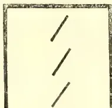
the milk being allowed to flow down the trunk. I am afraid the Ceylon planter will not take on the thing very readily, inasmuch as it must increase enormously the output of "bark-scrap," which is already an abomination on young plantations.
Quite a craze has recently set in for thinning out three and four-year-old Para plantations throughout Ceylon, where it was the rule to plant about 220 trees to the acre. I was on an estate the other day where fine four-year-old trees full of milk lay on the ground as thick as leaves in Vallambrosa. Half the plantation was grubbed up. The superintendent informed me that it was done by the agent's orders. Trees were not to stand in future closer than 100 to the acre, and the company had no money to spare to find labour to tap the trees to death.
Many of the old proprietary planters condemn it unreservedly. They point to their 200 per acre trees yielding 300lb. of dry rubber to the acre, and protest that nobody in the Island is anything but a mere infant in knowledge as to the correct way of growing and tapping Para rubber, and it will take years before anyone can pronounce definitely on the matter one way or the other.
The vast possibilities of engineering development in Ceylon have frequently been pointed out in our columns, but further than an investigation, and a brief report on the matter, little has been done. This is to be greatly regretted for other countries are stealing a march on us in the development of their waterpower projects, and among them, one of our neighbouring island colonies in the Orient, that of the Philippines. Through H.M. Consul-General at Manila, we learn that a company has been formed there with a capital of £153,000 for the purpose of generating electric power from the Agno river, for supply to the mining plants and saw mills on the river, and for the lighting of Baguio, the summer mountain capital of the Philippine islands. This is a remarkable undertaking, in view of the fact that they have no such falls as we possess in the Elfin, and other falls in Ceylon, and will have to construct a dam system to secure the needed precipitation and power, while here we have a natural water-power of great and useful force if properly harnessed. Both the Japanese, and the Dutch government in Java have been making exhaustive investigations into the natural generating powers of their respective waterways, and extensive projects are now under development by them, as well as in Australia and New Zealand. In view of the above, it is interesting to reproduce at this time, what we recently wrote and which might be again seriously considered by Government and some enterprising firm in Ceylon, with a view of undertaking the development of our natural waterpower without further delays. The article says in part: Nature has so designed Ceylon as to make of it a very playground for the engineer as well as the tourist. The enterprising planter has made the land a source of riches. It promises by the help of the specialist in civil and electrical engineering to become a profitable wonderland. But both planting and public works of the kind that we have in mind require heavy initial expenditure before rewards can be reaped. The planting industry has been able, generally, to get the requisite capital. When it comes to a question of great public works that open out immense possibilities, we find many and curious difficulties in the way of financing them sufficiently. Government is in a chronic state of having no funds to spare. Sources of revenue are fairly restricted,
and Magazine of the Ceylon Agricultural Society.—September, 1912. 253and it is difficult to find new ones certainly new ones that would win general approval.
Now, the configuration of the island of Ceylon, and its meteorological conditions, are such that it seems to hold immense possibilities for the hydraulic and electrical engineer. Of course, before this point can be finally determined, there must be extensive and exhaustive surveys, and, as has already been remarked, before reward can be secured, considerable expenditure will have to be incurred. This idea of utilising our mountains, and the waste water power that now rushes down their slopes, and plunges over their precipices, is, of course, not exactly new. Mr. Coryton Roberts, and one or two others, have gone somewhat deeply into the matter, and the subject has been ventilated in the columns of the press in a spasmodic fashion. There are few who will dispute the manifold advantages that would result from the possessing of an abundant and cheap supply of electric power. There is none, having before him evidence of what has been done in Mysore, in the Bombay Ghats, in the Punjab, and, above all, in Austria, Switzerland, Sweden and Norway, who will deny the possibilities, and manifold benefits of an extended hydro-electrical scheme, or a series of schemes, for the Colony.
It would be not only possible, but desirable, nay, essential, to combine, at least in part, our irrigation and hydro-electrical schemes. The water flowing to the fields would be harnessed as it issued from the reservoirs, and be made to lend its energy to man, as well as its refreshment to fields. This would be perfectly easy. With the newest and most perfect turbines, the maximum of energy can be secured from quite moderate falls. Turbine pits can be established in localities where the surface slope is very moderate. We have lakes in our hills. These can be increased in number, and their spill-water employed with profit. We have water-falls. These ought to be harnessed. Where, as is frequently the case in tropical countries, the streams that flow over them diminish greatly in the dry season, the Civil Engineer will generally have little difficulty in arranging to supplement them, and in creating reservoirs to secure a sufficient perennial supply. Where great works cannot be built, several small ones can be established and linked up. What is first required, however, is the earnest desire. This would be followed by the making of what we
may style a hydraulic survey on a very thorough scale. This would give us the information we require as to the water supply available, and the best means of storing water and leading it to the places where it will do the maximum of work. When this is done the rest will follow, first the funds, then electrification of our railways, or at least the mountain sections, electric light for all towns and their suburbs, and electric power for a hundred new industries.
The Contemporary Review for August published an article in this subject which has evoked a long letter from our esteemed correspondent whose nom de plume is appended and who says much on "artificial manures," politics in the home country, Continent of Europe and Colonies. We do not subscribe, but give as follows, on the principle of "audi alteram partem":—
"At last, by fits and starts," I have managed to get through the "Contemporary." I see you ask my opinion so far as one article is concerned, and so, if I can keep it up, I will refer to some of the other articles. The one you specially refer to is "Fifty years of continuous corn growing," which I read with much pleasure, for I had not heard of the experiment which has now arrived at its jubilee so successfully. You ought to know, by this time, that I have no objection to
so long as they can be got pure and at a price that would leave a profit. But I do object to paying too much for bad artificials and bones that are the skeletons of diseased animals. There is no doubt that anthrax and other diseases which crop up without, apparently, rhyme or reason, in this country, are the result of diseased bones, chiefly from India. In New Zealand only three cases, I believe, of anthrax ever appeared in the country, and they were traced to a ship-load of bones from Bombay, since when no bones can be landed in New Zealand from any place, except at Auckland and Invercargill, and there they go through an expensive disinfection for which the importer is charged £1 per ton. My support of
or better still sheep manure, from sheep fed under cover, is that one runs no risk of imported diseases, and by feeding the animals highly one can make the manure far more valuable and
254The Supplement to the Topical Agriculturistfinish the beasts more quickly. At the farm in Hertfordshire, no doubt, all sorts of care has been taken, and I can see no reason why the result should surprise one, as doubtless, they kept analyzing the soil and thus were able to feed to the soil the chemicals which it required. But you must not run away with the idea that the same result could not have been attained by using ordinary farm manure, unassisted by any artificial. You probably know that potatoes are the severest and most poisonous of ordinary British crops.—(tobacco, of course, is the worst of all,) well, I have been 24 years on my farm, and have grown
on the same ground year after year, without any artificial, but only a fair manuring from the byres. One year I added kainit to a small patch, to see what would be the result, and on that spot I not only had the worst crop, but scarcely a tuber at the roots. Three years ago I broke up a 15 acre field from lea, which had never got anything but cattle manure from me. First year 56 bushels per acre of oats; 2nd year 58 bushels per acre of oats; 3rd year 62 bushels per acre of oats. This year it got 25 loads per acre farm yard manure, and the turnips now growing on it are as good as I could wish. It will get no more manure till the next time it is ploughed, in the course of cropping. I run it out that the value of manure,—price at which I could sell it at,—and the carting out and labour comes to £4 7s 6d per acre. To do the same with artificials would be nearer £7 per acre and the result of crop, a more precarious one, not so bountiful and, certainly, not so good for the animals that have to eat it. The best thing that could happen for farmers here would be that the price of artificials and feeding stuffs should drop down to £5 or £6 per ton. One more remark on the article under review. Mr Prout is perfectly correct when he says that: "The farm servant is better off than the tenant, and the tenant is better off than the proprietor." If I was presented with a property, tomorrow, the first thing I would do would be to sell it at whatever I could get, and save myself from the ruin that is falling heavily on all proprietors with the present iniquitous land taxation.
Now with regard to
Holland is an exporting country and should, therefore, be a Free Trade one. Britain is an importing one and should be for Protection. When I was in Australia we exported everything and mostly to Britain, consequently I was
strongly in favour of Britain being Free Trade so that we could dump our surplus down on these shores. But times have changed since I took up my residence here, and I am selfish enough to want protection against the dumping policy of other countries. The Hollanders do most of their trade with Britain, so they naturally are pleased to let the few things into their country free, so long as Britain allows their huge supplies in here free. I am not very particular one way or another, but I do think,—although you may think it selfishness on my part,—that as such luxuries as tobacco, tea and sugar are to be taxed, other things, equally luxurious such as wheat, beef, oats and butter, should also be taxed. Why are the litters of the soil to be the only ones to give their labour for nothing,—unless you count the doctors also, whom Lloyd George says should be glad to give more than they are already giving. Britain is the only real market in the world, and all other countries dump their produce into it, without paying for taxes, upkeep of markets and rates of all kind. I had a letter from a New Zealander in which he says that although he would be sorry if Britain became Protection, as it would take away a lot of their profit, still he cannot be blind to the fact that 5s per quarter on grain, or per cwt. of butter, &c., &c., would be a great advantage to British farmers, and would have to be paid by them in New Zealand for the benefit of getting a market for their goods. The Religious controversies in Holland do not trouble me, but the present system of unchristianizing our country which our Government has taken up, will soon put churches and parsons out of fashion. You note how the Hollanders depend on their own farmers for cheap food, here the Government both Unionist or Radical do all in their power to drive farmers out of the country, and this Insurance Act has put just a head on it for farmers are working with less hands, those who have got the sack join the ranks of the unemployed, and are going abroad by the hundred thousand. And lastly—you will be glad!—"The adoption of Protection by Britain would be a serious matter on the continent." Why? because we would get the money that they are getting at present. They must sell their surplus, so would have to pay us the duty to get us to take their goods. I have written far too much, but I am sorry to see my native land going into the boiling pot; to see the men who have been put into parliament to protect and look after the country, making poor hard-working people buy stamps to provide
and Magazine of the Ceylon Agricultural Society.—September, 1912. 255£400 to each of these, and forcing an act on them against all their wishes, and instead of giving any quid pro quo, are using the money to provide billets—useless ones—to those that will give votes in return. My letter reminds me of George McGregor, who used to say, when any one wrote him a long letter, “Why don’t you boil down what you have to say.” Them will be your sentiments; so I will finish and remain,
“COSMOPOLITE.”
[BY AN EXPERT CORRESPONDENT.]
The recent cheerfulness in the Rubber share market is very likely to be followed by a more pronounced improvement in prices during the autumn. Statistics seem to favour at least a continuance of good prices for raw rubber, owing to the unforeseen rate of expansion in consumption. According to Messrs Hecht’s report, the twelve months to 30th June showed an increase of about 25,000 tons in the world’s consumption, while production increased to only about half that extent. This goes to confirm Mr Lampard’s opinion that before the end of 1912 there will be a considerable shortage in the commodity. But it seems that this may be only the beginning of a long and indefinite period of increasing shortages.
A year ago it was thought that a 10 per cent. annual increase in consumption was a reasonable allowance to make, and upon that basis it appeared that the Mid-East would, within a very few years, more than make good this call upon production. (The rest of the world seems unable to respond appreciably, the boom prices of 1910 having had practically no effect in increasing the supply of wild rubber.) Hence it was assumed by all the experts (the present writer among them), and the idea was embodied in all estimates of future profits, that the price of rubber would begin to recede at once, and that its value would decrease about 1s a year until it made Brazilian rubber unprofitable at 2s 6d to 3s per lb. After that the decline was to be slower, but no one doubted that there would still be a decline, and that, perhaps about 1918, we should see a level of price at which only moderate commercial profits would be the rule for plantation rubber. The enormous expansion of the motor industry now appears to have entirely upset these calculations, and if the increase of consumption should be maintained at anything like the 33 per
cent. of 1911-12, all the plantations would be hopelessly outpaced, and the shortage would increase year by year instead of diminishing. Even if the consumption should increase by 25 per cent. per annum instead of the 33 per cent. shown for last year, and allowing for a further 100,000 acres to be planted every year, it would be found that by 1920 the shortage would be enormous, so large, in fact, that one can hardly imagine it possible to overtake it at all, unless some new field with practically unlimited labour can be found. No one can foresee the limit of tyre consumption, but at present the contingency just suggested seems to be at least as likely as any other.
This prospect, in conjunction with the excellent returns lately chronicled by nearly all the plantations, will lead investors to look forward to very encouraging dividends, and not for this year only. Many of the best estates, which were planted in the three or four years preceding the boom, are now entering the dividend-paying stage, and it will soon be apparent that their shares, and not those of the older companies which have hitherto claimed principal attention, will give the best return upon their present market value, not only if we find the price of rubber maintained or increased, but whatever may be the future course of the Rubber market. Indeed, if we should have ascending instead of descending values for the product, the share list of today will form curious reading a year or two hence,
D. A.
—F. Times, Aug. 21.
The question of establishing a properly-equipped College for Tropical Agriculture has been long under discussion, and perhaps no one has done more to keep it before the public eye than Mr. Hamel Smith, Editor of Tropical Life.
The young man who comes out to the tropics after a training at an English Agricultural College is none too well equipped for the work before him, and finds it necessary, on his arrival in a colony, to serve a term of apprenticeship (vulgarly called “creeping”) before he can feel at all qualified for estate management in the tropical sense of the term. But this does not by any means mean that his agricultural education is complete, for he has still had no opportunity of acquiring the technical (that is scientific) knowledge which he can only obtain in a tropi-
256The Supplement to the Tropical Agriculturistcal college, and which will stand him in such good stead in his every day experience as a "planter."
Neither great Britain nor the United States of America can be said to have
A TROPICAL DEPARTMENT, worthy by the name, attached to any of their Agricultural Colleges.
We gather from what has appeared in the English press and the West Indian Magazine that Trinidad is beginning to be looked upon as the locale of the future Tropical College of Agriculture, but surely it is not for a moment to be supposed that a West Indian College will serve the needs of the Eastern tropics? In many points there is no coincidence between the West and East Indies, and even if this fact were disputed, is it to be imagined that one institution will suffice for both hemispheres?
The selection of Trinidad need not affect the question of a College of Tropical Agriculture for the East and when we come to consider the matter closely we must naturally
ASSOCIATE CEYLON with such an institution.
Already we are getting on with our equipment, in respect of the necessary staff, which is at the present moment perhaps more suitable to the requirements of tropical agriculture than ever before. With a thoroughly practical agricultural director, who strikes us as being as conscientious as he is energetic, backed by an able staff of specialists, both local and foreign, it is only a question of development, and that in turn is only a question of means.
Now that it has practically been decided by Government to start an Agricultural College in connection with
THE NEW DEPARTMENT OF AGRICULTURE, what is wanted is a tropical planting side to this institution; and at the present time, when we are, so to speak, riding on the crest of agricultural and commercial prosperity, it is surely only a matter of asking in order to receive donations for such a department, where the planting student will be able to obtain his training on the spot. We feel sure that the new Director of Agriculture will not "omit the tide," but will take advantage of the spirit of liberality which is abroad, to appeal to those who can help, to assist in the founding of an institution which is calculated to foster the planting industry and prolong the good fortune which its members enjoy.
The Perak Administration Report for 1911, says the Para rubber export was more than doubled, amounting to 40,880 pikuls, against 19,063 that left the State the previous year.
"The area under cultivation in coconuts was 73,120 acres as against 66,088 in 1910, practically the whole delta between the Bernam and Perak rivers has been alienated for this form of cultivation and is being opened rapidly. In a few years, this vast plain, which was dense jungle four years ago, will present an unbroken field of coconut palms.
Of the 262,487 acres of land alienated for the cultivation of rubber at the end of the year, 124,681 acres reported to be opened and 31,532 acres to be producing. The total crop for the year was 6,041,763 lb. as against 2,962,218 in the previous year. Estates have been opened in every district in the State, and the year was characterised by steady development and maintenance of opened areas after the rush for new land and the promotion of companies prevailing during 1910. The whole face of the country, as seen from our main roads, has been transformed from virgin forest to the monotony of miles of rubber trees, and a path of jungle along our cart-roads will soon be the exception rather than the rule of less than ten years ago.—Malay Mail, Sept. 4.
Art. 6 of Bill proposes to increase temporarily by 10 pesetas per 100 kilos, net weight (4s. 0½d. per cwt) the Customs duties on articles falling under the Nos. 635 to 643, both inclusive, of the Customs Tariff. The following articles are affected:—
This surtax is to be levied in gold at the same time as the ordinary Customs duties. It is not to be levied on the articles concerned which, included in a manifest or under direct bill of lading visé by a Spanish Consul, are despatched to Spain before the 1st January, 1913.—Board of Trade Journal, July 4.
and Magazine of the Ceylon Agricultural Society.—September, 1912.
257
ELEVEN GOLD MEDALS
Pure, Rich,
Thick, Eating
(‘GOLDEN BUTTERFLY’ BRAND)
The Whipping Cream—better than Devonshire Cream
DIRECTIONS—Add one-third quantity ordinary milk, or less, according to thickness you wish the cream to whip, beat thoroughly, flavour and sweeten according to taste, and you have a delicious whipped cream equal in every respect to that made from fresh cream.
No preservative, thickening, or colouring matter of any kind used. Absolutely pure.
Guaranteed to keep good for 12 months unopened,
at all seasons — in key-opening, sterilised cans.
Of all Retailers. Wholesale: Miller & Co., Colombo.
The following on Rubber cultivation is from the 1911 report of Mr Lewton Brain, Director of Agriculture, F.M.S. On the question of
Mr. Brain is of the opinion that while in certain cases manures may be required, as shown by backward growth or starved appearance of the rubber trees, he is of the opinion that it is not so in most cases. So-called “experiments” have been carried out and have been quoted as proving enormous gains from manuring; these usually consist in putting manure around certain trees and digging it in; then if any improvement is noted, it is attributed to the manure, whereas it is equally likely to be due to the cultivation.
In nearly all old rubber, particularly where the trees are closely planted, a certain number of the lower branches are gradually starved out and die; they thus become a source of weakness to the tree and serve as points of entry for fungi and insects. During the dry weather this tendency was much intensified, and on some estates numbers of these branches died so rapidly that the leaves had not time to fall, but remained
withered on the dead shoots. No bad results followed where the pruning was quickly and carefully carried out, although at the time the appearance of the fields was somewhat alarming. As a general rule, all these weak shaded branches should be removed before they begin to die. The pruning should be done very carefully; the branch should be cut off smooth, right down to the main stem, and no splitting permitted. The wound should be given a good coating of coal tar which should be renewed as frequently as is necessary, until the wound is healed over.
The tapping of rubber trees is, I think, showing improvement generally, both as regards quality and quantity of bark removal. As regards quantity of bark removed a conservative procedure is more and more coming into favour and very few estates now allow for less than four years' renewal of the bark. The systems by which this is brought about vary considerably, single V's, double V's, one quarter half-herring bone, alternate quarters, every day and alternate day tapping, all find their advocates, and probably the exact system followed is not of primary importance. Some estates are adopting systems allowing for even more than four years renewal of bark, while I still find a few that are removing one half their tapping area each year; the condition of these trees after the second round of tapping must certainly be very poor.
33
258The Supplement to the Tropical AgriculturistA research is being carried out by Mr Bateson, Assistant Mycologist, on the depletion of the food reserves of Para rubber trees by tapping and other natural demands on the vitality of the trees.
The quality of tapping, by which I mean the number of cuts to the inch and the proper depth of the cuts, is a subject on which planters as a whole are keenly interested. Twenty cuts to the inch is a very good average, although a good many more than this are claimed by some estates. The cuts should, of course, be sufficiently deep to tap all the latex, and yet must avoid injuring the cambium, which lies immediately beneath. When it is considered that a good cooly will do over 1,000 cuts per day, besides the incidental work of bringing in his latex, washing cups, pails, etc., it is evident that it requires very skilled labour to avoid all mistakes.
When bad tapping is met with it is usually traceable to one of two causes. Either the labour force is new or is always changing, resulting in unskilled tappers being employed, or else there is insufficient supervision of the coolies.
When wounds are made in tapping they should be treated, as suggested in my report for 1910, by painting them over with coal tar. This is done on some estates as a routine measure, with excellent results. The tar must, of course, be of the right consistency, sufficiently fluid to be painted on (a stalk of rubber leaf makes a good brush) but no fluid allowed to run down the bark. The tapper should be made to paint all the wounds on his own trees; he does not like it, as it draws attention to his mistakes, but, when persevered in, the system is of great advantage from this point of view alone, besides achieving its primary object, which is to assist in getting a clean growth of new bark over the wound.
Crepe and smoked sheet still balance one another as the favourite forms in which plantation rubber is exported. Towards the end of the year there was practically no difference between the prices obtained for these two forms of rubber. I still retain my preference for smoked sheet over crepe, though, undoubtedly, much of the fine crepe, produced in the Federated Malay States is excellent rubber. A great deal of extra work on estates has been caused by the demand in the market for a very light coloured crepe. This is, I think, quite an unnecessary refinement; and the exact shade of colour of fine crepe has really very little bearing on its quality. When this is realized a good many Managers will be saved a large amount of time and trouble involved in grading their rubber to a dozen or more different shades of colour, the whole of which are of one perfectly uniform quality.
A point that should be considered by many estates is the advisability of installing arrangements for more rapid drying of their rubber, particularly where thickish crepe is manufactured, and where large quantities have to be handled. There are some special hot air driers
on the market which appear to work successfully. But even a simple arrangement of fans to keep the air in motion, combined with, possibly, a heating or drying arrangement for the incoming current, should be easily installed and should reduce the time taken in drying immensely. This would result in a smaller space being required for stores, less money tied up in the form of wet rubber, and generally cleaner rubber. With a view to testing the actual commercial value of raw rubbers produced in the country, the purchase of an experimental vulcanizing plant has been approved for 1912.
Apart from the special research on methods of coagulation and curing, a large number of rubber samples have been received from various estates, showing certain defects, with requests from Estate Managers for advice.
The principal defects found in such samples were: (1) air bubbles, caused by using too concentrated solutions of coagulant and improper mixing; (2) "Spot" diseases due to the fungi or bacteria, which have been investigated by the Assistant Mycologist, Mr. Bancroft; (3) tackiness, due to exposure to the heat of the sun or other heat; (5) discolorations, due, usually, to oil on the rollers from the bearings.
A small experimental smoke-house of the Kent "hop drying" type has been erected during the year and proved very useful.—Pinang Gazette.
In his report for 1911 the Director of Agriculture, F. M. S., makes the following interesting remarks:—
Among the pests of rubber, white ants (Termes gestroi) continue to require attention but they are, undoubtedly, on the decrease. It would be interesting to have figures on this point. At a rough estimate the Entomologist estimates that over similar areas the number of trees attacked by these insects, now, as compared with the number of 1907, would be 60 per cent. less. This reduction is due to two reasons: firstly, planters have now a systematic method of dealing with these insects; secondly, because T. gestroi cannot maintain the same rate of increase on older estates where felled wood has rotted. The systematic campaign against these insects on all young estates prevents it increasing in such numbers, as it did in former years, when there was no systematic treatment. A few planters complain that after treating young trees with the fumés of arsenic and sulphur or red-hot charcoal the trees die. This may be due to the presence of root fungus, for there is, no doubt, that in a large number of cases Fomes semitostus is the original cause of the trouble when white ants are present. There is no reason why the fumés should produce a harmful effect upon the tree. Too great a heat may be harmful. Our own experiments have been entirely successful.
and Magazine of the Ceylon Agricultural Society.—September, 1912. 259TRADEIn his book, Scouting for Stanley in East Africa, Thomas Stevens wrote:
"Stanley, in recommending these ('TABLOID') medicines, has earned the gratitude of every man who goes to a tropical country."
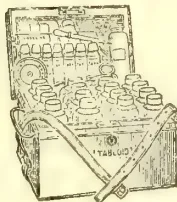
No. 254. Size:
9½ x 7 x 6½ in. The
ideal Estate Chest.
Approx. price in
London, 75/0
Particulars, outfits and refillings
supplied by all Chemists
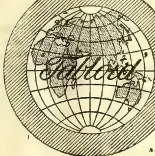
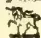
391
BURROUGHS WELLCOME & Co., LONDON
NEW YORK MONTREAL SYDNEY CAPE TOWN MILAN
SHANGHAI BURNOS AIRES All Rights Reserved
A minute beetle (Xyleborus parvulus) of the family Scolytidae has from time to time been reported as attacking rubber. These reports show that the insect is widely spread. Many planters are acquainted with the shot hole-borer of Ceylon which is a closely allied species attacking tea.
Many inquiries are received in connection with this beetle and the following notes by the Entomologist will, therefore, be of interest.
If extensive pollarding is resorted to, Xyleborus will, in all probability, make its appearance, almost certainly should the wounds not be tarred; careless tarring will also enable this insect to gain an entrance.
It is common knowledge with planters that should a tree die, either from root fungus, Diplodia or other causes, it will soon become full of borers. There are two or three kinds, but commonly of two only. One is minute, dark-brown (Xyleborus), the other nearly a quarter of an inch long, light-brown and cylindrical (Platypus). The former has attracted attention, because it has been noticed occasionally to enter healthy trees. Frequently it is found boring into trees where latex is still present, but these trees are usually diseased.
The only instances where I have found apparently healthy trees attacked is on those estates where pollarding has been indulged in freely or where trees have been weakened from various causes. Here two or three instances
were found, a few beetles having succeeded in gaining an entrance just beneath the lateral branches. On the trunk of the tree were numerous beetles caught in the latex exuding from the wound made in their attempt to reach the wood. If in large numbers, and they may be when a tree is badly diseased although not dead, their presence is apparent from the dead dust at the base of the tree and the small cylindrical lengths of compressed wood dust projecting from the minute holes in the tree. Their presence may sometimes be detected by a tear of latex having its origin at a small hole, or a coagulated drop of latex covering a small hole, but neither of these are definite indications.
The cricket, Brachytrypes achatinus, has given trouble to many rubber planters. It confines its attacks to young clearings, and its effects are similar to those caused by the beetles (Xyletrupes). On some estates the damage caused by this insect has been extensive and thorough.
During the day the cricket remains in burrows made by itself, at night emerging and nibbling the shoots of young rubber stumps. So constantly does it continue its work that over a large area stumps of eight months' old bear no green leaves. By repeatedly sending forth new shoots a large excrescence is formed which may be on the stump or on one of the larger shoots at the point where smaller shoots have persistently been nibbled off. Several hundred acres are sometimes attacked in this
260The Supplement to the Tropical Agriculturistway. The cricket prefers sandy soil, but this is by no means the only soil it frequents. Dense clay soil is also suitable and occasionally peat will harbour these insects. Many remedies have been tried and on hilly land carbon bisulphide was found effective. The best remedy is, however, the same as used for the beetle.
In the past year several estates in the Federated Malay States have had great trouble in their new rubber clearings through the young shoots of the stumps being repeatedly nipped off in much the same way as is done by cricket B. achatinus. The Entomologist reports that this damage is due to a species of beetle closely allied to Xylotrupes, and in a very few instances the coconut beetle, Oryctes rhinoceros, is responsible for some similar work. The former insect will invade a clearing and cause more extensive damage than the cricket.
In places where this insect occurs in abundance the damage caused by it is very serious, some estates having considered the advisability of abandoning clearings where the young shoots have repeatedly been nipped. The insect is however, easily dealt with, and the discovery of the remedy is due to Mr E V Carey. The work of this beetle is fairly characteristic. Shortly after the young stumps commence to shoot these are nipped sometimes near the top, in other cases near the stem; at first a stump here and there if affected, and usually no notice is taken of an occasional loss such as this. The number of stumps affected in this way will rapidly increase, and a clearing of 500 or more acres may have 90 per cent of the shoots nipped. Fresh shoots appear, but these are rapidly eaten down, and this continues until the stump dies. Supplies suffer in the same way, and a clearing of 12 or 18 months without a green leaf may sometimes be seen; most of the stumps in such a clearing are quite useless as they are malformed.
On clearings that have been examined for this pest it has been noted that on flat land, and often in the vicinity of peat, most damage is done. Shoots near the ground are preferred, but they are by no means the only ones attacked; some at a height of four feet from the ground are nipped.
The difficulty with this insect in the original instance was to find the culprit. An examination of a clearing in the morning revealed many shoots freshly nipped, but no sign of any insect. Crickets were not present. On a few occasions searches have been made throughout the night until daybreak, but with no success. It was eventually found by catching one of the insects in an older clearing, and an examination of the mouth parts showed coagulated latex adhering to its mandibles. The neighbouring young clearing was badly affected. The pest often rests in these older clearings during the day, commencing work at night. It often frequents trees about a year old, resting beneath the leaves at the crown. This is especially the case where trees of this age are distributed through an attacked clearing. A few adult beetles have been found underneath logs and at the roots of rubber stumps where it is probable they breed.
On account of the length of this insect's legs it has considerable difficulty in climbing seedlings, while stumps form an admirable means of ascending to the point at which the shoot emerges; it is practically certain that the shoots are nipped while the insect clings to the stump. I do not mean to say that seedlings would be immune, but stumps are certainly more suited for this insect's attacks. The legs of this insect are often covered with coagulated latex which is due to the spines piercing the young bark and the latex flowing on to them. With regard to remedial measures it has been found that excellent results are obtained by the use of cylinders of newspapers placed over the stump.
One sheet of an ordinary daily newspaper circled to form a cylinder about five inches in diameter and pinned together is placed over the stump. About two inches of one end of the paper is turned down, and this end is placed uppermost. This precaution prevents the rain from tearing the edge. After placing this shield over the stump a little earth is placed around the base, and on the inside are placed three sticks which support the cylinder. In one case there were very heavy rains for about six weeks, and only three or four per cent. of these shields were destroyed. The remedy is very simple, inexpensive and entirely effective when properly carried out. In an attacked clearing no stumps should be left uncovered. The cost of this remedy should not exceed $1.20 per acre, and on most places 60 cents would be sufficient.
Collecting the beetles, while not absolutely necessary, is an additional precaution. In some places as many as two or three hundred are collected each day. They are to be found, as has previously been pointed out, on the young rubber trees. To collect them coolies go round and shake these trees; the beetles will fall to the ground, and can be gathered. This work should be done in the early morning. Crows are useful scavengers in regard to this pest. An examination of one of these birds showed that it had been feeding on these beetles. The large wing covers are discarded, but the spined legs, the horned head and other hard parts of the body as well as the soft are eaten.
A scale, Lecanium nigrum has been reported many times as attacking rubber. Its distribution is general. It is found chiefly on trees from six months to two years, although an instance recently has been met with of some 2,000 trees about four years' old which were very badly attacked by this insect. As a general rule, young trees are attacked, and no serious damage is done. Perhaps 20 trees may be affected, seldom more. Such a large number as 2,000 is at the present time an exception. The insects attach themselves to the leaf, and have the appearance of a scale. They are usually near the veins, and may easily be seen with the naked eye, the largest over inch.
and Magazine of the Ceylon Agricultural Society.—September, 1912. 261long. They are dark-brown or black and oval in shape.
Leaves which are attacked by this scale are discoloured by a blackish or brown fungus which follows upon this insect. The fungus-hives the sugary exudation of the scale.
Trees which have this scale upon them often swarm with ants, whose habit it is to live in close connection with many species of scales on account of the exudation from them being agreeable to the ants. Attacked trees may sometimes be detected by the presence of ants.
In cases where large areas are affected it is advisable to commence catching the pest immediately after wintering. It is easier to deal with it at this time as large numbers die at the wintering period. Where small areas are affected it often happens that there is no return after wintering. Should spraying prove necessary either kerosene or resin would prove effective.
The following diseases and conditions of Para rubber have received attention from the Mycological staff during the year. Owing to Mr Bateson being on duty in Krian the greater part of this work has fallen to Mr Bancroft, Assistant Mycologist.
ROOT DISEASES.—(i) The disease caused by Fomes semitotus still constitutes the most important disease of the plant and continues to cause a loss of trees in young plantations. It has proved itself amenable to methods of treatment by isolation, sanitation of diseased trees, application of lime. The majority of estates are free from the disease among their old rubber. It has been shown in the investigations that one of the most important considerations in connection with the treatment of the disease is the application of an efficient system of drainage. The trenches which were used for isolating the diseased areas were, in several cases, found to be too small, and it was recommended that they should be made to include, not only the trees which were attacked, but the next row of trees beyond, so that a large area might be marked out for treatment. After studying the number of plants on which the fungus occurred it was concluded that a selective method of stumping would not be practicable as a preventive measure. The observations on the disease in the field appeared to justify the conclusion that only under exceptional circumstances, is the damage done by the fungus sufficiently great to warrant the complete removal of the timber from the land; while there is sufficient evidence to demonstrate that the disease can be exterminated by treating infected areas as soon as they are discovered.
(ii) The "brown root disease," caused by Hymenochete noxia, occurs only in small quantity in the Federated Malay States. It was recorded on fifteen estates in different planting districts during the year, a few trees usually being attacked on each estate. It has been found that the fungus grows very slowly, and does not spread through the soil even under damp conditions; and consequently its action is usually limited to a single tree. Isolation by trenches
and liming, accordingly appear to be unnecessary, providing that the dead roots are removed. The disease is consequently much cheaper to treat than that caused by Fomes semitotus.
No other root diseases have been found to occur in this country. Irpea flavus, which has been said to cause a root disease of the plant, has hitherto been recorded only as a saprophyte on dead wood. This fungus has been said to kill clove trees in Malacca and also to cause a root disease of coffee. The fungus known as Hollicobasidium mompa, which is said to be a root parasite on Para rubber, has not been met with; it has possibly been confused with Hymenochete noxia, the "brown root fungus." A root disease reported from Ceylon as being due to Spaethrostilbe repens has not been recorded in this country.
STEM DISEASE.—(i) The "die-back disease," caused by the Diplodia form of the fungus, Thyridaria tarda, has been met with commonly during the year. Its action is limited to a branch or a tree here and there. The fungus occurs commonly on dead branches, whatever may have been the cause of death; and consequently the death of branches from shade or natural causes is frequently attributed to it. The fungus must enter through a dead or wounded part of the plant and such fungi are not usually a virulent source of disease. Following on another fungus, which attacks the young plants and which will be mentioned later, the die-back fungus has been responsible for some considerable damage. The methods of treatment are the sealing of wounds, the removal of attacked branches and the establishing of a vigorous growth of the plant. Spraying as a method of treatment is entirely unnecessary.
(ii) The death of the tips of the shoot of young trees has been found by inoculations to be due to a fungus, which appears from its characters to be indistinguishable from Phyllosticta ramicola, previously described from Ceylon but not regarded as a parasite. It has been recorded on several estates and the extent of the damage done is indicated thus:—
| Date of record. | No. of trees. | Area. | Age of trees |
|---|---|---|---|
| 15-7-11 | 35 | 4 acres. | 6 months |
| 20-7-11 | 6 | 2 acres | 15 months |
| 20-7-11 | 2 (Adjacent trees) | 18 months | |
| 25-8-11 | 36 | 1 acre | 2 years |
| 20-10-11 | 4 (Not known) | (Not known) | |
| 12-12-11 | 50 | 5 acres | 18 months |
The disease was first observed in July. The fungus attacks only the upper parts of the branches, usually the topmost 12 or 18 inches; but sometimes the uppermost three feet may be affected. The "dieback" fungus follows readily after this preliminary attack and may kill the tree to its base. An area of four acres on which 35 trees were affected was treated by cutting off the dead parts and burning them, sealing the wounds with a mixture of coal tar and clay and spraying every tree in the whole area with a boiled lime-sulphur mixture as a
262The Supplement to the Tropical Agriculturistpreventative. The spraying was repeated at the end of six weeks. Cases of the disease appeared for the first two months after the treatment was applied but there was no further record of any cases in the area up to the end of the year. Another area of five acres is under treatment, but there is hitherto no record of the action of the treatment.
(iii) The "pink disease," caused by Corticium salmonicolor, has been reported from ten planting districts. It is, however, only present in small quantity, and there has been no apparent necessity to apply a preventive method of treatment, in order to arrest the spread of the disease.
(iv) A "sooty mould," Limacinula javanica, has been recorded as following on a scale insect, Lecanium nigrum, on the leaves of the plant. The fungus has been known on coffee in Java. Its presence depends on the insect.
(v) The "thread blight fungus" was recorded on two estates. It does not appear to be present in any appreciable quantity and the burning of the branches has been sufficient to deal with it.
(vi) A silvery white fungus appeared on the bark of trees on one estate. It appeared to do no damage to the plant, but merely to disintegrate the dead bark. The trees were flooded during certain times of the year, and the fungus appeared at these times near the base of the trees. It was recommended that the trees be painted with a lime-sulphur mixture; since this mixture has been found to be effective with fungi of that nature.
Only two have been recorded—viz., Phyllosticta hevea and Pestalozzia palmarum. The damage done by these two fungi is very small, and even in the nurseries it does not appear to warrant the application of a method of treatment.
Several effects of somewhat different kinds have been noticed on the bark of the trees. The commonest is that in which areas of the bark die and fall away, leaving large wounds, consisting of the exposed woods surrounded by a lip of renewing tissue. In such cases a definite recovery takes place, and the wound is healed. During the early part of the year the death of the bark on the newly-tapped surface was particularly common on one estate, where over 1,500 trees were thus affected. Investigations failed to associate the effect with my micro-organism and the trees eventually recovered, tapping operations having been suspended. It is probable that this effect was due to the collecting of water on the newly tapped surfaces. A similar occurrence in Ceylon had been previously attributed by Petch to the same cause.
Another type of death of the bark occurred in three trees on one estate. The bark became separated from the wood by the death of the cambium and could be removed in large masses. The trees were about five years old. There was no evidence of any root disease. An examination of the recently dead tissues failed to show
the presence of any organisms. The trees were removed and burnt, so there was no opportunity of studying the progress of the disease.
The bark troubles require careful investigation, and it is proposed to devote some attention to them during the coming year.
The death of the top shoots of the plant has been fairly commonly met with. It occurs on exposed situations and appears in the same cases to be due to wind, or it may occur on badly drained land, when it has been attributed to deficient drainage. The exudation of tears of latex from the branches is commonly caused by wind. The bending of the branches produces a splitting of the bark, and the latex is thus exuded from the cracks. A similar occurrence is said in some cases to be due to the pecking of the branches by birds. Bleeding is not uncommonly also associated with the "pink disease."
Malformed shoots, which take the form of strap-like flattened structures, have been frequently met with. The proportion of trees showing these malformations is under one per cent. They result from the fusion of stem and leaves instead of the independent development of these two organs. In some cases the structures are large and resemble a stag's antlers. If the fasciated branch is cut off or the tree pollarded it will frequently throw up a normal shoot. The nodular masses, which originate as small pea-like bodies on the trunks and may finally develop into large outgrowths frequently render tapping impossible. Such trees as are badly burred are frequently cut. The greatest damage from burrs is on old trees which have been badly tapped in previous years. A certain number of trees, however, develop burrs on the untapped parts or before tapping has been commenced. The percentage of these latter trees is, however, not usually greater than one per cent or two per cent.
SPOTTING OF PREPARED RUBBER.—Considerable time was given to investigations as to the causes and methods of treatment of spots on prepared rubber. The result of the investigations have shown that the spotting is usually due to the growth of micro-organisms in the rubber. The organisms which have been found to cause spotting are: Bacillus prodigiosus, Monascus heterosporus, Mycogone sp. and Spondylocadium sp. The first of these is a bacterium, and the others are saprophytic moulds. The bacterium occurs in top and pool water, and consequently the infection may be expected to proceed primarily from this source. The infection from the fungi may be expected to be caused by the transference of the spores which are capable of being air-borne. The rubber may be inoculated before or after coagulation. The investigations as to the prevention of the spots showed that by rapidly drying the rubber the spotting could, for the most part, be prevented from occurring. The application of antiseptics and solvents did not give satisfactory results. The work was nearly completed at the end of the year.—Pinang Gazette.
and Magazine of the Ceylon Agricultural Society.—September, 1912. 263The Inspector of Coconuts estimates the total area under coconuts in the Federated Malay States at, approximately, 142,774 acres, an increase of 12,430 acres or about 8½ per cent. over the total for 1910. The area in several States is as follows:—
| Perak | ... | 73,120 acres. |
| Selangor | ... | 33,355 " |
| Negri Sembilan | ... | 19,584 " |
| Pahang | ... | 16,715 " |
It is gratifying again to record a steady increase in the area under this valuable and reliable crop. From the area now under cultivation the Inspector of Coconuts estimates, taking an average of 40 nuts per tree, that there will be produced 1,100,000 pikuls (65,500 tons) of copra, provided that the whole of the nuts were converted into this product. The by-products also should eventually be used on a much larger scale for the manufacture of coir matting, rope, etc. During the year large areas have been taken up in Perak and Selangor by European companies for the purpose of coconut cultivation.
The Commissioner of Trade and Customs has kindly supplied the following figures giving the export of copra for 1911 from the four States:—
| Perak | ... | 102,907 pkls. |
| Selangor | ... | 20,425 " |
| Negri Sembilan | ... | 924 " |
| Pahang | ... | 1,808 " |
Total ... 135,064 ", or 8,000 tons, approximately.
In addition to this, the Federal Oil Mills at Kuala Selangor purchased locally 20,236 pikuls. Compared with last year the export shows an increase of 9,294 pikuls or about eight per cent.
The Inspector of Coconuts states that the average price paid for good quality of copra during the year may be taken at about $10 per pikul, and it would appear, from the present position of the market, that good prices are likely to be maintained for some time. The total value of the copra produced may be taken as, approximately, $1,553,000.
The copra exported from European estates is stated by the Inspector of Coconuts to be of good quality, but he regrets not to be able to report any improvement in that manufactured by natives, especially in Kuala Selangor district. This poor quality is chiefly due to the use of immature nuts for the manufacture of copra.
With regard to pests, the Inspector of Coconuts reports that beetles gave most trouble in Matang, Larut and Krian. Immediate steps were taken to deal with these and at present very little damage from this source is being done to the trees. He states that far more damage is done by rats, pigs and bears, the last of which destroyed over 1,000 trees in Lower Perak.
While the native kampongs themselves are generally fairly clean, there are a number which are allowed to become overgrown with lalang and undergrowth. These harbour pigs and
other pests to the damage of neighbouring cultivations. It would be to the benefit of themselves and cultivators generally and also, indirectly, to the Government if Malays could be persuaded to keep their holdings in a fair condition of good husbandry. In the Krian district great improvement is reported in the upkeep of coconut estates previously owned by Chinese but now in the possession of European companies.
GENERAL.—The questions connected with coconut cultivation have not received the attention they deserve in the Federated Malay States. There has been too much of the idea that a coconut only has to be planted somewhere near and it will grow anyhow. As a matter of fact, coconuts probably require even more careful attention than Para rubber trees. One point is clear and that is that conditions in Malaya are quite different from those obtaining in other countries—for example, the best plantations here are those on heavy clay land, while the usual idea is that coconuts thrive best in light soils. The majority of plantations here are on the flat low-lying lands near the coast.
It is evident that on such soils drainage is a most important factor and the possibilities of this should be especially looked into when the location of a proposed plantation is being selected. The main drains at least should be put in before any planting is done. A coconut is very intolerant of stagnant water and some of the native holdings suffer considerably through inattention to this point.
The question of the cultivation of coconuts is, to my mind, still an open one. Does clean weeding, as commonly practised on rubber estates, pay best? It is better to keep clean an eight-foot circle round the trees and allow the weeds to grow (always excluding lalang) or should the intermediate land be ploughed or forked. Should a leguminous cover crop be grown? Is any manual treatment required beyond an occasional dressing of bullock manure? I would not wish to pronounce on any of these points, though, from what I have seen, I would say that clean weeding is not so great a success with coconuts as it has been with rubber.—Pinang Gazette.
AT SIDI ALI, SCENE OF RECENT FIGHTING.
H.M. Consul at Casablanca (Mr A M Madden, C.M.G.), has forwarded a report on some experiments in the cultivation of cotton in that district. Twenty-two plants were raised from seeds obtained from Porto Rico and planted at Casablanca in a nursery with a chalky sub-soil. They were watered twice a month during the dry season, during which time they also received two dressings (binage): The average height was 1.30 metres (about 4 feet 3 inches) and the total yield was 350 grammes of clean cotton of good quality, equivalent to about 1,160 kilogs. per hectare (= 9.2 cwts. per acre.) Experiments were also carried out at Sidi Ali, about 50 miles from Casablanca on the Mazagan Road, a still better cotton being produced, but the experiments were on too small a scale to allow any definite conclusions to be drawn.—Board of Trade Journal, July 4.
204The Supplement to the Tropical AgriculturistThe following notes about the conditions of employment on Eastern rubber plantations may be useful to those whose ambitions lie in that direction.
The type of man most desired as a beginner is the public schoolboy who has led an active outdoor life. Some knowledge of agriculture is an advantage, but chief importance is attached to personal qualities. As regards age, the minimum limit is about twenty years, and the maximum about twenty-five years. Men beyond the latter age are not very willingly appointed. The disadvantages below the lower limit are unsettled physique and a smaller capability for maintaining discipline, while above the upper limit there is not only less possibility of successful acclimatisation, but difficulty in arranging the gradation of ages according to position, on which partly depends good feeling among the members of the staff.
There is no need to pay a premium for learning plantation work. During the first year of the engagement a rubber company pays to its assistants a salary that is sufficient without extravagance, to maintain them in comfort. It may be £200 a year or a little less, with quarters and a native servant. The engagement will perhaps be for three years, with advances of, maybe, £25 in the second and third years. Looking to the fact that the young planter is really serving an apprenticeship, and is probably entering upon his duties in a state of almost absolute ignorance as to their nature, these terms must be counted fair. Bonuses are sometimes granted at the end of the financial year. Should the three-year period be objected to, a premium must be paid to a private planter. Holidays and home leave are given, medical attention is provided, and on large estates there are various facilities for recreation.
The tropical colonies differ in their relative advantages. Ceylon has long been under control by Europeans, and its reputation for methods of cultivation stands high. Further, the learner meets more often than in Malaya with a variety of products on the one estate or in the same district. Frequently tea is planted among the rubber, sometimes cocoa. Coconuts, for which the future is very promising, are found on many estates. Coffee has disappeared from Ceylon. In the Malay Peninsula rubber is more often found alone on an estate and covering large districts, and though coconuts, sugar, coffee, &c., are cultivated it is seldom that more than one of these accompanies the rubber. Many English companies have estates in Java and Sumatra, where there are openings for young Englishmen. Java resembles Ceylon in often having varied cultivations on an estate. Much coffee and tea are to be seen on the island. Sumatra largely resembles Malaya. Tobacco is a favourite product, and coffee also accompanies the rubber on some estates.
An important question is that of the maintenance of health. What are the chances of returning home in good health on retirement? A look at the numerous men living in London after years of planting in the Middle East is
reassuring. Yet it must be pointed out that it is dangerous to be careless, for carelessness in matters of health is heavily punished in the tropics. No man who is not fit to begin with is allowed to go out to take up an appointment. The rubber company that pays his passage money naturally has an inspection made by a doctor with tropical experience.
To get a post as assistant, application should be made to one of the houses in London, Edinburgh, or Glasgow that have to do with the management of plantations. A letter may be efficacious if superior qualifications are possessed; but a call on one of the principals, even should the applicant get no further at first than his private secretary, is much more likely to give satisfactory results. Employing an agent or advertising is absolutely unnecessary. —Field July 27.
According to Mr. Stewart Richardson—says the "Empire review"—who superintends the operations of several tobacco-growing estates in Southern Rhodesia, the culture of tobacco in Rhodesia, which most people thought to be already a large and flourishing industry, is really only in its infancy. The rich low-lying portions of the country are expected, as soon as railway communication is opened up with the markets, to furnish double and even treble crops with a minimum of trouble. Down on the low veldt, in the great sandstone belts that traverse the country from Wankies to Lomagundi, are valleys where tobacco can be grown under ideal conditions. The soil for many years running will, in places, produce crops ranging from 900 to 1,500 lb. per acre, without any fertiliser whatever. Eventually, no doubt, as settlement proceeds, the low veldt will be tapped by one or more railways, and when that occurs the industry should make giant strides. Tobacco is now being successfully grown in the Philippines, parts of Japan, Korea, Java and the Celebes. Ceylon rates very low in its cultivation owing largely to the sameness of climate.
I notice in the Journal of March 1st that Sir George Birdwood has written a short paragraph on the Papaya or Pawpaw. It is very largely grown in most gardens in this province, and many natives are now cultivating it. It is generally known here also as Pawpaw, though I have endeavoured to induce people to call it Papaya, but without success.
Where fruit, except bananas, and vegetables are scarce, we look upon the fruit as delicious, and it is a great digestive.
It may not be generally known, and perhaps Sir George Birdwood may not be aware of the fact, that by wrapping up a joint of meat in the leaves of the Papaya for two or three hours, the toughest becomes very tender.
The African kuku (chicken) even a champion sprinter of many years' standing, can be made in this way as tender as a spring chicken.
R. C. R. OWEN,
Governor, Mongalla Province, Sudan.
—Journal of the Royal Society of Arts.
This image is a scan of a blank page. The paper has a light cream or off-white color with a slightly textured appearance. There are a few very small, faint dark spots scattered across the surface, which appear to be scanning artifacts or minor imperfections in the paper. No text, lines, or other markings are present.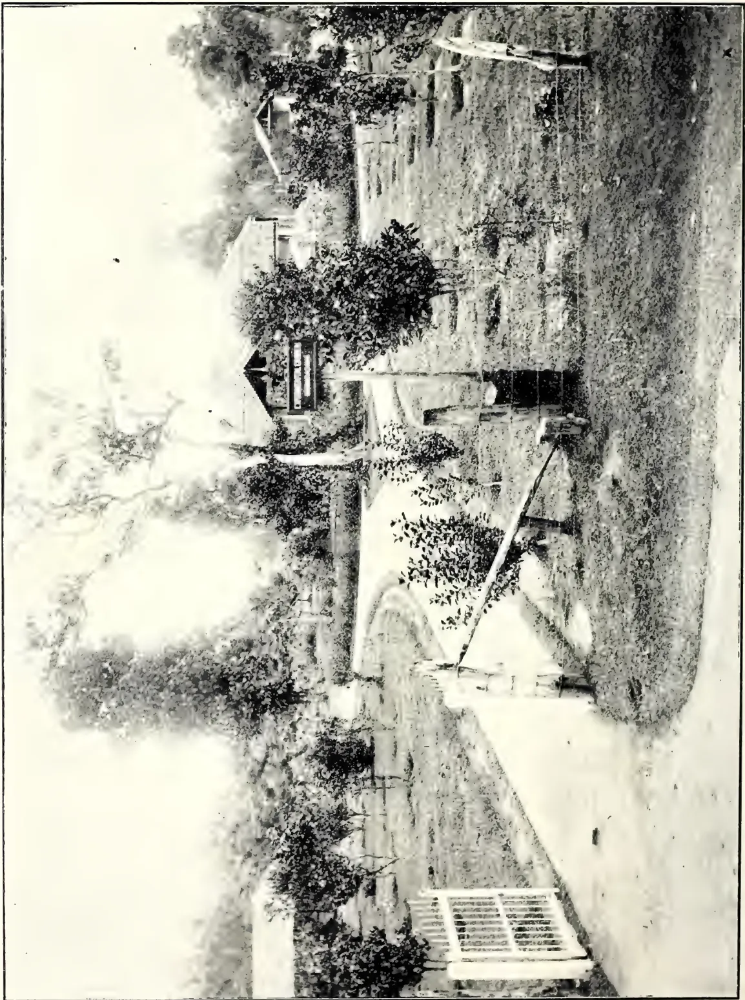
A black and white photograph of a garden, identified as the Bandaragama Garden. The image shows a path leading through a lush garden with various trees, shrubs, and a small structure in the background. The path is bordered by a low wall on the left and a fence on the right. In the foreground, there is a small, rectangular structure with a grid-like pattern, possibly a gate or a small shed. The garden is filled with a variety of plants, including trees and shrubs, and the overall atmosphere is peaceful and serene.BANDARAGAMA GARDEN.
THE
TROPICAL AGRICULTURIST
AND
MAGAZINE OF THE
CEYLON AGRICULTURAL SOCIETY.
VOL. XXXIX.
COLOMBO, OCTOBER 15TH, 1912.
No. 4.
TOBACCO PLANTING IN CEYLON.
At the meeting of the Ceylon Agricultural Society, held in Colombo on September 10th last, the Hon'ble Mr. A. Kanagasabai asked whether the Director of Agriculture had decided upon any definite line of action in the future with regard to the subject of tobacco cultivation in Ceylon. It will perhaps be opportune briefly to examine the case for a renewed trial of tobacco growing by the Government or by the Society.
The Tobacco "Expert."
One of the difficulties to be encountered is that of securing a competent man and we take this opportunity of saying that we are not sure that one describing himself as an "expert" would necessarily prove to be the man we require. This word in our opinion is not well adapted to describe those who have specialized in the cultivation of tobacco, rubber, cotton or any other particular product. A man may be appropriately called expert at cigar wrapping or rubber tapping or at any other mechanical work at which he is particularly skilful; but a successful tobacco planter must have many other qualities besides that of skill in planting. We have known men who have proved unsuccessful in other pursuits, after visiting a few rubber estates and attending an exhibition describe themselves as rubber "experts," a designation never completely assuring. A man who has specialized in tobacco planting must have devoted more of his life to planting tobacco than to anything else; but the word "specialist" is as a rule used to describe those who have made a study of a particular branch of surgery. An experienced tobacco planter needs describing in no other terms than briefly a tobacco planter. No one as far as we are aware is expert at tobacco planting in Ceylon, meaning thereby that he knows how to plant and cure tobacco in Ceylon and compete successfully in the world's markets. We must seek a thoroughly experienced man—one not merely to prescribe but to produce.
The Position in Jaffna.
Jaffna smoking tobacco is being shut out of Travancore; not entirely but to a great extent. This will mean a serious financial loss to the district unless some other market can be found, as tobacco is the
266[OCTOBER, 1912.most paying crop from there. Jaffna cigars, though beloved of the people of Jaffna, are not popular in other parts of the island and even if they were the local market could not probably absorb all the tobacco that Travancore rejects. It would seem, therefore, that if they are not to suffer a set-back in prosperity the Jaffna cultivators must make a bid in an outside market, namely the European. To effect an entry into the European market new types and new methods of curing will have to be introduced. But, it is said, the Jaffna people are so conservative and so wedded to their present methods that they will never come to adopt new ones. That to our mind is an argument that at present carries no weight. It must be first demonstrated that tobacco for the European market can be successfully produced in Jaffna. If and when that has been done and the Jaffna cultivator does not follow the lead given him he cannot complain afterwards about being left behind. We do not believe it of him. But in any case the Government or the Society will have done its duty by him.
Operations, if successful in Jaffna, would soon come to be imitated in other parts of the island, but the question of the suitability of Ceylon for growing cigarette tobacco, for example, would not be finally disposed of if Jaffna proved unsuitable.
(Illustrated.)
Durio zibethinus (Malvaceæ). Durian; Civet-cat Fruit.—A very large, handsome pyramid-shaped tree, of the Malayan Archipelago, and commonly cultivated in the Straits, Burma, Java, &c., for the sake of its celebrated fruit. The latter is produced on the older branches, varies somewhat from round to oval in shape, and usually weighs from 5 to 7 lbs. or more. It is armed with thickly set formidable prickles about half inch long; when ripe it becomes slightly yellow, and possesses an odour which is intensely offensive to most people, especially on first acquaintance with it. The cream-coloured pulp surrounding the seed is the edible portion; this is most highly prized by the Malays and other oriental people, and is also relished by Europeans who acquire a taste for it. Firminger described it as "resembling blanc-mange, delicious as the finest cream," whilst Mr. Russell Wallace considered that "eating durians is a sensation worth a voyage to the East." The large seeds may be roasted and eaten like chestnuts. Pounded into flour, they are said to be sometimes made into a substance like "vegetable-ivory." The Durian tree thrives in the moist low-country of Ceylon up to 2,000 feet elevation, and luxuriates in deep alluvial or loamy soil. In Peradeniya Gardens, there are magnificent specimens well over 100 feet in height. They usually flower in March or April, and the fruit is ripe in July or August. Durian fruits are variable in size, shape, flavour and quantity of pulp, according to variety. The trees also vary in productiveness, some varieties being almost barren. Selection and high cultivation should, therefore, be practised in order to obtain the best fruits. The tree is readily propagated by seed if sown fresh; the seed is of short vitality and germinates in seven to eight days.—(Macmillan.)
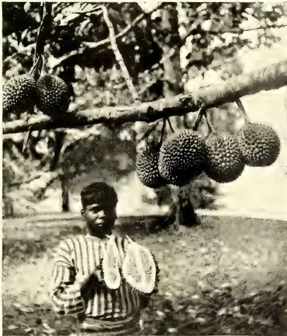
Photo by H. F. Macmillan.
DURIAN FRUIT.
This image is a scan of a blank page. The paper has a light beige or cream-colored tint. There are a few very small, dark specks scattered across the surface, which appear to be scanning artifacts or dust particles. No text, lines, or other markings are present on the page. OCTOBER, 1912.]267[Notes on the history of rubber cultivation in the East are in course of preparation. It has been considered advisable to publish the following extract in the Tropical Agriculturist, as it raises points of immediate interest.]
After the successful introduction of Cinchona into India and the East, it occurred to Clements R. Markham that something of the same kind might be done with rubber-producing plants. The consumption of rubber was steadily increasing, and owing to the destruction of the trees by native methods of tapping it was anticipated that the demand would soon exceed the supply. The chief rubber tree of India, Ficus elastica, was being destroyed wholesale by the collectors, who felled them in order to tap them more easily; and consequently the establishment of plantations under proper control was being strongly urged by the Forest Department of that country. Under these circumstances, the Indian Government were persuaded of the advisability of taking steps to ensure the permanence of the industry, either by adopting the proposals of the Forest Department or by introducing other rubber-yielding plants.
Before embarking upon any expensive operations, Markham entrusted Mr. J. Collins with the task of collecting all the available information concerning rubber trees, in order to determine in what direction efforts should be made. Collins published an exhaustive report in 1872 from which it was concluded that "the establishment of plantations of Ficus elastica should immediately be undertaken in Assam; but that the caoutchouc from the Heveas and Castillos of South America was superior to that of the Ficus and that consequently those trees should be introduced into British India."
It was soon evident that little was to be expected from Ficus elastica. The establishment of plantations proved more difficult than was anticipated; and it was stated that although Ficus elastica would grow with undiminished rapidity and luxuriance in stations remote from the hills it failed to yield caoutchouc. In all probability the latter statement was inaccurate.
It is not easy at the present day to understand why such difficulty was experienced with this species. The propagation of Ficus elastica is an operation which is successfully performed by the humblest nurseryman, and King asserted that it could readily be grown from seed sown in soil. But the same fate befell similar experiments in Ceylon. At the instigation of the Home Government, Thwaites attempted the cultivation of Ficus elastica in 1874, but in 1875 he reported that the experiment had met with very little success; in 1876, seeds were obtained from Assam and a few plants raised, but with the advent of other species of rubber trees the experiment appears to have been abandoned. It is however to be noted that flourishing specimens of Ficus elastica were already in existence at Peradeniya, the famous row along the front dating from 1833; and although one may feel thankful that Ficus elastica did prove a failure, yet it may be surmised that the lack of success was not altogether due to difficulties of cultivation.
268[OCTOBER, 1912,The introduction of South American species was undertaken by Kew at the expense of the Indian Government. At first, attempts were made to import seeds of Hevea, but it was found that these deteriorated rapidly and very few reached England alive. In 1873, Markham forwarded to Kew seeds of Hevea brasiliensis which had been obtained from the Amazons, and from these about a dozen plants were raised. A note by Trimen on the Peradeniya copy of the Kew report states that these seeds were obtained by Farris through Collins. In the same year, Dr. King, then superintendent of the Calcutta Botanic Garden, took out six of these plants with him on his return to India, and from these others were raised by cuttings; but the climate of Calcutta proved unsuitable for Hevea, and in the following year King expressed doubt that the plant would ever thrive there. In 1876, he reported that it had failed both in Calcutta and Sikkim. There is no record that Calcutta distributed plants of this consignment to other countries, though they were propagated there by cuttings.
The transmission of seed in the ordinary way having been found impracticable, Mr. Robert Cross was sent out to South America to obtain plants. At the same time, a commission was given to Mr. H. A. Wickham, who was then resident at Santarem, to collect seeds at the rate of £10 per thousand. Such a commission must, at the time, have been considered somewhat of the nature of a forlorn hope, scarcely possible of realisation, as indeed the absence of any stipulations or conditions would appear to indicate. But Wickham, fortunately for the East, found a steamer, at the very time the seed was ripe, about to return to England without a cargo, and chartered it "on behalf of the Indian Government." Seeds were immediately collected "in the forest covering the broad plateaux dividing the Tapajos from the Madeira rivers," and placed on board. They were cleared at Para as botanical specimens for Her Britannic Majesty's Royal Gardens at Kew, and were safely out of the country before anyone had time to realise the true meaning of the enterprise. As an example of colossal "nerve," the whole proceeding would be hard to beat.
Wickham reached England in June 1876 with 70,000 seeds, arriving at Kew on June 14th. The following day the seeds were sown, and about 33 per cent. subsequently germinated, some as early as the fourth day after sowing. As it had already been demonstrated that Hevea would not thrive in Calcutta or in any of the readily accessible Botanic Gardens of India, Ceylon was chosen as the centre where the plants should be established and whence they might be transmitted to different parts of India. In the following August, 1919 plants were forwarded to Ceylon in charge of a gardener, and about 90 per cent. arrived in good condition.
In addition to the main consignment to Ceylon, small parcels of plants were sent to Africa (West coast), Burma, Dominica, Jamaica, Java, Queensland, Singapore, and Trinidad. "In the case of Singapore the result was unfortunate. Owing to the delay of the India Office in paying the freight, the cases did not come into the hands of the Superintendent of the Botanic Gardens until the plants were nearly all dead." Ridley states that none of these plants survived; but that is evidently a mistake, since in the Kew Report for 1877, an extract from a letter from Murton
OCTOBER, 1912.]269(September 6, 1877) is quoted, to the effect that the Hevea sent last year (i.e., 1876) were making good progress.
All the plants consigned direct to Burma died; but later in the year Duthie took out another case to Calcutta, of which one third were sent to Assam and 16 to Burma (1877). The survivors of the latter, eight in all, were planted in the Forest Office compound at Mergui.
Cross sailed from Liverpool on June 19th, 1876, and on July 15th arrived at the port of Para, which he made his headquarters during his stay in Brazil. After exploring the surrounding districts by short excursions from Para, he began, on August 2nd, to collect seedlings, and by August 10th had accumulated about 2,000. Some of these were rejected, and the remainder, over 1,000, were planted in decayed leaves mixed with wood ashes in special cases. He returned to England in November 1876, bringing 1080 seedlings, of which scarcely 3 per cent. were saved. These were propagated by cuttings, about 100 plants being subsequently sent to Ceylon (September 15, 1877), while small parcels were sent to Singapore, Java, Queensland and Mauritius. This made a total of 2019 plants sent to Ceylon "for subsequent transmission to India."
The number of plants sent to Singapore was 22. They were despatched on June 11th, 1877. It was probably nine of these which Murton planted in Perak in October, 1877.
In the Report of the Forest Department, Singapore, for 1891, it is stated that seeds were obtained from Kew in that year. There is no record of any such consignment in the Kew publications, and Ceylon was then supplying seed to Kew for transmission to the West Indies. It seems highly improbable that Kew ever supplied Hevea seed to any Botanic Garden in the East; but in the Agricultural Bulletin of the Malay Peninsula (1898), p. 230, Ridley, in a discussion of earlier records, stated "seed has been successfully sent from South America via England, though usually with much loss." Further information on this point is desirable.
During recent years, it has on several occasions been suggested that the Hevea introduced into the East is not the species which yields the Fine Hard Para of commerce, the idea being in nearly all cases based upon the alleged inferiority of some grades of Plantation rubber. And a somewhat similar question has compelled the attention of the rubber planter, namely, whether all the introduced Hevea trees belong to the same species. The inferiority, real or supposed, of plantation rubber is in most cases capable of explanation in other ways, more especially by the age of the tree; but the planter certainly has good grounds for questioning the identity of all the Hevea trees on his estate. He sees enormous variation in the size of the leaf, well-marked differences in the character of the bark which appear to be related to latex-yielding capacity, and variations also in the type of seed. It is usual to attribute these variations to the effect of a new environment; and they are perhaps not more numerous than might be expected to occur when so many thousands of plants are brought under new conditions of growth. Whether these variations breed true has not yet been determined, nor has it yet been decided whether any particular types of leaf, seed, and bark are constantly associated with one another. Experiments have been instituted, but a considerable time must elapse before any definite information is obtained,
270[OCTOBER, 1912.It has been customary to meet all such doubts by the statement that Wickham collected the seeds of one species on the Tapajos, and from those seeds all the cultivated Heveas are descended. But it will be seen from the details already set forth that this answer does not meet the case. Wickham's was certainly the main consignment, and was distributed to Ceylon, Singapore, and Burma; but Cross's plants, which were obtained within easy walking distance of Para, were also sent to Ceylon and Singapore, while both Burma and Singapore received plants or seeds from Ceylon subsequently, nearly all the old trees in the Singapore Gardens being from Ceylon seed. Cross's contribution was small, but his plants nevertheless formed five per cent. of the total sent to Ceylon, and apparently a greater percentage of those sent to Singapore. There does not appear to have been any distinction made between these consignments, though one group of trees at Peradeniya is practically certainly part of Wickham's collection, and so are, presumably, those in the Forest Office compound at Mergui, if they still exist.
In addition to these two consignments there was the earlier batch of seed obtained in 1873 from Cameta, near Para. Six of the seedlings raised were sent to Calcutta and need not trouble us further; but from the remainder, plants were propagated by cuttings at Kew (Kew Report 1875), and it would seem quite probable that these would be distributed. In that case, though the bulk of the plants were derived from the Tapajos there are at least two other sources to be considered, and under the circumstances it is apparent that a systematic examination of the plantation Hevea of the East is more desirable than has hitherto been supposed
T. PETCH.
Science of June 21st last reproduces an address by Dr. Pearce of the University of Pennsylvania delivered on May 21st at Syracuse University.
He takes as his text the words of Pasteur "In the fields of observation, chance favours only the mind which is prepared" and goes on to preach on the value of research work.
The mind which is trained to observe the details of natural phenomena, and to reason concerning the bearing of known laws on such phenomena, is the "prepared mind," that is to say, it is a class of mind which, because it is endowed with a peculiar faculty, best described as a scientific imagination, grasps the significance of a new observation, or of a variance of a known sequence of events, and thus establishes a new law or invents a new practical procedure.
The preliminary education of the individual is the first and in many ways the most important consideration, and a knowledge of the scientific principles of chemistry, physics and biology is invaluable to our youth. The value of biological training was emphasized by Huxley many years ago, and that of physics and chemistry has recently been emphasised by Frederick Muller in his memorandum to the Royal Commission on University education in London.
Dr. Pearce deals with his subject in relation to medical education, but the need for a scientific grounding and the "prepared mind" is as urgent in this as in other lines of study (whether Medicine, Agriculture, or Botany) if education is to aid the human mind in the direction of originality, investigation, invention and discovery.
OCTOBER, 1912.]271The following extracts are by the Agricultural News (July 20) from an interesting report by the Provincial Forest Officer, Central Province, Southern Nigeria, on the tapping of Funtumia rubber in Benin City Communal Plantations, in 1910.
The plantations are formed by the village people under the supervision and encouragement of the Forest Staff. It has been, and is still, the practice each year for the Forest Staff to collect seed from the forest, take it to the villages and make nurseries with the help of the village people. Later in the year the Forest Staff supervises the planting out into the plantations, the labour for all operations being supplied by the villages and utilized under the direction of the Forest Staff. In each village there are one or more 'Ogas' or headmen who are told off to look after the plantations, and whose duty it is to see that they are kept weeded, etc. These Ogas are usually exempted from other work.
Tapping was commenced on June 8, the greater part of May having been taken up in building a drying shed at Benin City for the reception of the rubber when it came in from the plantations. The trees were tapped on the full herring-bone system, to a height of 10 feet, and halfway round the tree.
This was done by boiling, as it was thought unwise to introduce acids or chemicals of any description for the purpose. My opinion is that all the operations should be done in a way that the natives can easily imitate. It was a matter of some experiment before we arrived at the correct quantity of water to use, when cooking, to prevent burning; but it was eventually gauged to a nicety, and I think I may say that after the first month there was not a single biscuit spoiled by burning, whereas at first quite 50 per cent. were burned.
The boiling was done in enamel-lined saucepans holding about 3 pints, putting in about pints of water to a quarter of a pint of latex; the water was brought to boiling point before the latex was put in. It was found necessary to get the proportion of water to latex fairly correct as too little water results in burning, whilst too much causes the whole thing to overflow and thus waste the rubber. During the coagulation the rubber is kept off the sides of the vessel with a clean stick, and the mass is cooked until the remaining liquid becomes quite clear.
A point worth mentioning here is that fresh latex, that is that just taken from the trees, cannot be cooked satisfactorily. It is impossible to get the water clear, and in the efforts to do so the rubber becomes overcooked and too tough to roll out. If taken out whilst still soft enough to roll there is necessarily a large amount of rubber left behind in the water, and this of course is wasted. On the other hand, if the latex is allowed to stand for twelve hours, the water is cleared without excessive cooking; the rubber is in a pliant state capable of easy rolling, and there is no waste. Evidently some mechanical change takes place in the latex whilst standing, which makes the globules cohere more readily.
After cooking, the rubber is thrown on to a table or other flat surface and rolled out into thin biscuits with a wooden roller. The side of a box and a bottle answer the purpose quite well, in the absence of more convenient apparatus.
272[OCTOBER, 1912.Cooking was in each case done in the plantation; the rubber was then brought into Benin City and washed. It was found necessary to wash it for a whole day in the same way that one washes a photographic plate, in order thoroughly to get rid of the serum. After washing it was placed in the specially built rubber-drying shed.
This building is 54 feet long by 20 feet wide, and is constructed of squared timber and corrugated iron, the sides being made to open for ventilation. Internally it is fitted with a series of wire netting shelves to receive the rubber biscuits, it being found impracticable to handle them.
It takes a long time to dry the rubber thoroughly, and it is doubtful if it is possible to bring it to the requisite state of dryness during the wet season without the aid of artificial drying apparatus. During last season small fires were kept going in the shed most of the time, but even then the June rubber was not considered sufficiently dry to sell before October, and the whole was not ready for shipment until December.
There is one interesting point in connexion with the drying of rubber which I should like to mention, and that is the cause of tackiness. As is well known by anyone who has had to do with rubber (Funtumia rubber at any rate), it frequently happens that some of the biscuits become tacky; that is to say, they become sticky on the outside, and the whole mass gradually becomes converted into a gum-like substance which sticks to everything and cannot be got rid of. This occurred with several of our biscuits last year, and for a long time I was at a loss to account for it. I found on experiment that it was only on the outside of the shed, where the rubber was exposed to the morning or afternoon sun, that the tackiness occurred. This, of course, would have been noticed before had it not been for the fact that the biscuits were constantly turned to accelerate drying, and in the operation the positions were altered.
After the discovery I erected palm leaf shades on either side of the shed, and since then there has been no tacky rubber.
The season's operations comprised the tapping and thinning of eighty-four plantations, the total number of trees tapped, that is trees 18 inches in girth and over, being 4,706, yielding 413 lb. 12 oz. of dry rubber. The total number of trees tapped to exhaustion and cut out was 28,815, yielding 608 lb. 4 oz. of dry rubber. The total yield of dry rubber was 1,022 lb. The loss of weight in drying was 37.7 per cent. The average yield per tree of tapped trees, that is 18 inches in girth and upwards, was 1.4 oz. The average yield per tree of thinned trees, that is tapped to exhaustion, was 0.3 oz.
The rubber was sold by Messrs. Figgis & Co. in London, in March. It was put in three lots and realized the following prices, finest plantation Para at the same date fetching 6s. 11d. per lb. : lot 1, 470 lb., 6s. 6d. per lb. ; lot 2, 466 lb., 6s. 1½d., and lot 3, 60 lb., 5s. 6d. per lb. This is an average of nearly 6s. 1d. per lb.
Lot 2 was composed of slightly thicker biscuits than lot 1, whilst lot 3, was partly composed of the tacky rubber previously mentioned.
The gross sum realized was £302 12s. 9d., whilst brokerage and other charges amounted to £5 11s 7d. making a net result of £297 1s. 2d.
OCTOBER, 1912.]273There has recently been published a collection of monographs* which trace the history of the Co-operative movement in the principal countries of the world. The volume is commended to the attention of those to whom agricultural interests appeal. It is a revelation of the power of a new economic force which has its beginnings in remotest history.
To the ordinary Englishman the word Co-operation suggests vaguely a form of urban shop-keeping. In Great Britain co-operative methods have made little headway outside the towns. The country is still one of large holdings farmed by men, individualist by instinct, who have not yet felt the need of combination. If the movement towards small holdings, inaugurated by the act of 1907 and officially blessed by both parties, develops, it will shortly be found that an effective co-operative organisation is an indispensable condition of success. But for the present we must look to Ireland and to foreign countries in order to see what co-operation in agriculture can effect.
These monographs tell the story; it is a plain tale of facts and figures, all the more remarkable because it covers a period of little over 50 years. Last century was one of awakening and activity in every branch of human affairs. The strain and competition and the progressively centralising tendency of commerce and industry reacted on the agricultural world. The stress of life grew steadily harder: a growing population demanded more intensive cultivation and a more productive soil, and these could be obtained only by utilising the costly improvements of technical science; while the increasing opposition of the commercial world and the growth of outside economic concentration compelled the closest attention to the interests of agriculture. Had the small farmer clung to his isolation he would have gone to the wall. Fortunately, when the economies and saving power of association for common ends were demonstrated to him, he developed a genius for it. The amazingly rapid development of co-operation is the one great fact of recent agricultural history in Europe; it extends not to one or two countries to certain branches of agriculture, but to every country where the small holder exists and to every department of rural economy: And the movement has been wholly for good. In towns association is to some extent a dividing force, applied to the defence and assertion of sectional and class interests at the expense of others. But in rural areas it is more purely utilitarian and is generally a bond uniting all classes.
India, short though her co-operative history is, occupies a serious place in this volume. The inclusion of her monograph is useful, because it brings her methods and lines of work and results into prominent contrast with those of other countries. The comparison is instructive, and those who are interested in the Indian movement will find the volume suggestive and illuminating.
* Monographs on Agricultural Co-operation in various countries, published by the International Institute of Agriculture, Rome.
35 274[OCTOBER, 1912.Of all the points of variance by far the most prominent is the relation of the state to the co-operative movement. The uncompromising opponent of State assistance in any form will find no support in these monographs. There is no country which does not accord more than mere legislative recognition to the co-operative idea. The aid is rendered variously in different states, in the form of legal privileges, assistance in propaganda, financial facilities, direct subvention and otherwise. One may hold that the State aid is often unnecessarily and sometimes injudiciously given. One could prove that where the movement is strongest dependence on the state is lightest. Yet on the other hand it is not be denied that the help of Government has been of great service in most countries and especially to certain branches of co-operative work, and that but for that help co-operation would not be the vigorous growth that it is today. State aid is not a principle to be condemned or approved in the abstract. There is a time to give and a time to withhold aid. Like every other principle it is relative, and must be applied with direct reference to the circumstances of each country and people and the requirements of each form of co-operative activity.
But the writers of these monographs hold no brief for State aid. Their straightforward narrative ought to convince the straightest theorist that there are circumstances in which such assistance is permissible and even advisable, and that it is a matter on which a man may not dogmatise. But no attempt is made to uphold State aid as a good thing in itself. On the contrary, the inference everywhere is that a completely self-reliant movement is the ideal, and that Government assistance is only a means to that end—it can never be a substitute for popular inspiration and direction. The essential thing to notice is that in Europe the initial impulse has invariably come from the people. The co-operative idea was evolved to meet changing economic conditions by those who actually felt the pressure of them. Only when that idea had been put to the test of practical working and its efficacy proved did the State come forward with its assistance, an assistance which was not always gratefully received. First and above all things the movement in Europe is a self-conscious and popular one, deriving its impetus from private enterprise and dependent upon its appeal to the people's sense of interest.
It is here that the Indian movement occupies a position by itself. The writer of the monograph on India sums up the progress made as "an illustration of State aid effectively administered rather than of organised self-help." We reversed the normal process by beginning at the top. Government not only introduced the idea to India but appointed official Registrars to make it known and to organise and guide a co-operative movement. It was the only possible course. The condition of agricultural India obviously called for co-operative societies, although the people had not thought the matter out and there was no conscious demand for them. The great danger of the arrangement was the possible officialisation of the movement. Every Registrar on his appointment at once becomes an enthusiast. He is convinced, and rightly, that a widespread co-operative system would mean the regeneration of the rural population. But he finds that the educated classes, the natural organising agency, are apathetic, and the temptation to form societies by official means is strong. The reports show that in most provinces this temptation has been resisted.
OCTOBER, 1912.]275In India, as in every other country, the teaching of experience is that excessive artificial fostering produces a weakling growth. Government has shown the way. There are in every province the beginnings of a healthy movement, which grows more self-conscious every year, and which is gradually attracting the interest of the educated classes. The future rests with the people of India. An officially run movement on a wide scale is a thing unthinkable. A popular movement, appealing consciously to the interests of the agricultural classes, under general official guidance, but supported by the energy of numbers of local organisers, is eminently practicable. That is the ideal aimed at. It is certain that without that propelling popular force the movement can never have vitality or spontaneity.
Agriculture in its many phases is by far the most important interest, and merits the greatest share of attention. Much has been done and more attempted to improve the situation, but the picture is still dark enough. The agriculturist, the pillar of the State, is paradoxically its weakest member. To the Mahajan's credit one may, almost without exaggeration, apply the celebrated phrase attributed to Louis XVI. that it "supports agriculture as the rope supports the hanged." From first to last the ordinary ryot is dependent on that credit; he is scarcely even a free agent. His methods of cultivation are primitive and often wasteful, and in disposing of what crops he gets he can only accept such prices as the middleman chooses to offer. Weak and isolated, he is in no position to improve his fortunes. And the economic conditions are rendered harder to assail by the conservatism of centuries and the improvidence that accompanies blank poverty. The picture has been painted a hundred times.
It is possible that four years' work in connection with co-operative societies affects one's sense of proportion. But there is no one who has taken part in the work who does not regard co-operation as incomparably the most promising means of attacking the agricultural problem. And a perusal of these monographs confirms that conviction. To compare agricultural Europe of the present day with the same Europe of the early 19th century is to gain fresh hope for India. If rural India is backward and her outlook discouraging, there was a time when continental Europe was little better. In the change, astonishing both in its magnitude and rapidity, that has taken place in the West co-operation is probably the most important factor. Rural credit has been reorganised. The co-operative society enables the small farmer to cultivate scientifically, to get good seed and manures and agricultural machinery at cheap rates, to sell his crops to the best advantage while avoiding the profit of the middleman, to manufacture his dairy produce and sell it in the best market, to improve the breed of his livestock and to insure his possession against all risks. These are only a few of the directions in which the co-operative principle has been applied. The movement encourages agricultural education and reaps the benefit in improved cultivation and a stronger and more intelligent force within itself. The societies form practically a huge unpaid agency for making known and bringing into practical use in all parts of the country the improvements of agricultural science and economy.
Unless such a development is regarded as attainable in India our present work is meaningless. We are still a long way off it, and before
276[OCTOBER, 1912.it is reached there is much to be done in the way of education and the breaking down of old prejudices and habits. But the instinct of association is deeply implanted in the people and the success that has attended the first experiments in co-operative credit offers the promise of greater things in other directions. Hitherto the departments of agriculture and co-operation have worked independently. In future their orbits must increasingly converge. When the scientific department has demonstrated the value of a particular method of cultivation or of an improved implement, the co-operative society ought to supply the channel, so greatly wanted, by which these improvements will be carried down to the ryots. Even now some use is made of the societies in this direction, and more might be done. If the two departments so work together, and if, most important of all, the people themselves and especially the more enlightened classes co-operate, the history of the next fifty years will have much to tell of improvement in the lot of the Indian peasantry.—Agricultural Journal of India, July 1912.
The Imperial Institute Bulletin of July 1912 deals with reports on cocoa samples submitted from Sierra Leone and the Gold Coast.
Sierra Leone. It would appear that the chief fault in the beans is their deficient fermentation. The valuations made by brokers range from 46s. to 49s. per cwt at Liverpool (March 1910), and from 53s. to 57s. per cwt. ex quay Liverpool (October 1911).
Gold Coast. The samples sent from here were of two kinds, clayed and unclayed. The brokers valued the samples at 51s. per cwt ex wharf. They expressed the opinion that unclayed cocoa would sell more readily than clayed.
With regard to the contention that claying prevents mould by the clay absorbing moisture, it is pointed out that thorough drying after fermentation is the best means of avoiding mouldiness.
Among new methods that have been suggested for curing cocoa without fermentation is that of Dr. Fickendey, Victoria, Kamerun, who advises subjecting the bean, after removal of the pulp, to change of temperature either by heating to 122° or 140° F. for 24 hours or keeping at a temperature of 32° to 33° F. for three hours.
Fickendey's method was tried in the Gold Coast at the suggestion of the Imperial Institute, and samples so prepared were received in January, 1911. Brokers, as well as manufacturers, regarded the fermented cocoa as superior to the unfermented; but of the latter, the samples treated according to Fickendey's process (both with heat and cold) were valued at a higher figure than those which were merely washed and dried, since they (the former) were found to have undergone to some extent that change in colour and flavour which is usually attributed to fermentation. This result would appear to support Fickendey's contention that fermentation could be dispensed with, provided that some means are adopted (heat or cold) to kill the embryo of the seed without destroying the enzymes responsible for the changes in colour and flavour.
On the whole it is thought that this new method of curing cocoa is deserving of further trial.
OCTOBER, 1912.]277The Editor of Tropical Life (Mr. H. Hamel Smith) has contributed the following letter to the Westminster Gazette on the above subject :—
“The chief producing centres in the tropical Colonies of this country are sadly in need of facilities for encouraging the higher agricultural education of those who are in a position to go to the Tropics as planters. The colleges would repay their cost, for if men on this side were as carefully and thoroughly trained to develop and extract the visible wealth out there as they are to exploit the minerals underground, the benefits would be very substantial. They would, in the aggregate, far exceed any benefits that we, as a nation, have obtained even from mining.
“Organised agricultural science in the Tropics, culminating in one or more agricultural colleges, would not only directly benefit the students passing through them, but by attracting and concentrating attention on the subjects taught on the spot, would greatly increase our ability to add to the national wealth, and increase and assure the supplies of our raw material from overseas. This, in turn, would augment the purchasing power of the producing centres, whose much larger orders for machinery manufactured goods, provisions, &c., would keep our factories busy and our people employed.
“The very fact that one or more agricultural colleges have been established in the Tropics would attract the attention of an energetic, ambitious, and extremely useful class of capitalist to those centres as channels for investment and trade. These at present hold aloof because they see no reliable means of training themselves for such a life. With many fathers of families having sons to place out in the world, or younger men with capital, once they can see their way clear to obtain a good return on the labour and money they are willing to expend on one or other of the tropical agricultural industries, a very large number, with only a few thousands to invest, would be willing to pay for their training first at an agricultural college on this side on general principles, and then at the College in the Tropics to specialize.
“It has been suggested that the would-be planter can obtain the desired instruction at existing institutions. I believe I am right in saying that it is not so.
“The future leadership of the world lies with the nation owning the most fertile and well developed land, as through these it will own the heaviest purses; individual and national wealth will decide who is to lead. We must, therefore, not neglect to train men to develop the surface wealth of the Tropics, as we do others to exploit the minerals. We must train men to go abroad and increase the resources of the Empire to the utmost degree possible.
“The island of Trinidad, W. I., which almost needs a magnifying glass to find on the map, annually ships just over £1,000,000 sterling of cocoa. Its best friends have to own that this amount should have been doubled or trebled ten years ago. Had the planters had the benefit of an
278[OCTOBER, 1912.agricultural college twenty-five or thirty years ago where they could have learnt to keep disease away and realize full crops, this loss would not have been sustained; and if this is true with one centre, it is, or can be, with all others unless prevented. One careless or ignorant planter spreads disease and trouble like lightning over the land in hot countries."
In the course of a paper on the cultivation of cigar tobacco, the Imperial Institute Bulletin has some interesting remarks with regard to soil and method of cultivation,
Not a little of the success of the Java industry is due to the peculiar character of the soil. The upper layers are chiefly made up of very fine sand and clay, the result of the washing down of volcanic dust. The deposits are composed essentially of an andesite, a rock which usually contains from 5 to 1.34 % of potash, so important an element in tobacco soils. An analysis of the volcanic ash shows that it is rich in lime (7.6 %) and potash (2.1 %) and moderately rich in phosphoric acid (3).
In Java each piece of land is only cultivated every other year and is allowed to go under peasants' crops, usually rice, for the intervening period. As rice only occupies the land for about a hundred days, three crops are obtained between every two of tobacco. The distribution of crops is somewhat as follows:—January to May, 1st rice crop, June to October, 2nd rice crop; November to March, 3rd rice crop; March to August, preparation for tobacco; August to December, tobacco crop.
The estimated yield of rice is given as 100 piculs (1 picul = 136½ lb.) per bouw (1¼ acres). This, taking 45 lbs. to the bushel, is at the rate of about 170 bushels per acre. The tobacco crop is given as 20 piculs per bouw, equivalent to 1554 lbs. or nearly 14 cwt. per acre.
These excellent yields, remarks the Bulletin, are due in the first place to the depth and richness of the soil, and also to the careful and thorough methods adopted by the Javanese peasants in preparing the soil. The rotation of the two crops may also have a specific influence.
The rice crop is not manured but the irrigation water is generally rich in organic matter of manurial value. Where the water supply is deficient for wet paddy, maize, soy bean, groundnut, or dry rice is grown.
Water being of such importance in tobacco culture, the available supply is carefully conserved and utilised by means of reservoirs and channels.
The seeds are the product of a perennial climbing cucurbit indigenous to East Africa and Zanzibar, and are the source of an edible oil, which according to analysis made at the Imperial Institute constitutes 56.9% of the kernel.
The oil is non-drying, pleasant and sweet to the taste. While suitable for soapmaking, the possibility of using it for edible purposes depends entirely on the discovery of a cheap and efficient means of husking the seeds. The husk contains a bitter principle which must be kept out from the oil and the cake, the latter being suitable for cattle food. So far no suitable machine has been found.
Even if this difficulty is got over, it does not seem likely that large regular shipments of Telfairia seeds could be guaranteed as required by the trade.—Imperial Institute Bulletin.
OCTOBER, 1912.]279In the organisation of agricultural advance in any country or under any conditions whatever, it has ultimately had to be recognised that the bulk of the work must be done by the farmers or cultivators themselves. A government, an agricultural department, a body of state servants, may point the way, may suggest the lines—but until the people can be interested and become enthusiasts themselves, the advance will be slow, will be looked upon with suspicion, and will be more apparent than real. The condition of things has prevailed in almost every country where changes have taken place as the result of the action of a state department. It has been, perhaps, more strikingly the case in the United States of America, where the state action has been greater than anywhere else, but where, until comparatively recently, most farmers looked on the work of Government with amused interest and little more.
It is this fact that has made most of the far-seeing leaders in the development of agricultural departments in India very insistent on the necessity for developing local bodies composed of cultivators themselves or of others interested in agriculture—who should be committed to advanced methods, should show them in action on their own land, should act as local emissaries of whatever in changed methods has been proved to be good. How to bring about the formation of vigorous local bodies for the purpose has been a matter of great difference of opinion. But that such bodies must exist, that there must be local centres doing what an agricultural department itself could never hope to do—on this point, there has been little difference of opinion.
The results of endeavours to organise such local bodies have, however, as would be expected, been extremely varied. In the Central Provinces, on the one hand, they have become, and tend to become even more, the main link between the agricultural department and its investigators, and the people. On the other hand, in Madras they have been, as hitherto organised and carried on, of very questionable value, and it has been recommended that, in their present form, they may well be wound up. In other provinces, very varying success has been attained. But it is impossible not to recognise that there has been a great amount of local energy, public spirit, and enthusiasm devoted to these associations even where they have apparently been of the least value—and this, put into the right channels, will be of very great assistance in development in coming days.
The amount of experience gained in India has now been, I think, sufficiently great to warrant a short statement of the conditions which have led to success in the organisation of local bodies for popularising and encouraging genuine agricultural improvements. This matter was, in fact, considered by a strong committee at the last meeting of the Board of Agriculture, and the present article is, in essence, a summary of their report.
280OCTOBER, 1912.India stands in such a very special position in respect to the character of the vast mass of its cultivators and the greater part of its agriculture that it might be, and has indeed been often asked by men of small or limited experience, whether under the special circumstances of the case, it is either necessary or advisable to encourage such local bodies as we are discussing. Cannot the Agricultural Department communicate directly with the cultivators? Is not such communication with, and help given to, individuals of equal value to work done by and through a local association or any kind whatever? While this can be done, while it is possible to deal direct with every cultivator in the districts, it is becoming more and more clear that this is not generally the best or most economical way of proceeding. A local organised body is a far more efficient agent for the introduction of improvements than the few officers of the agricultural department, working individually, can ever be, for, being a body of local men, it carries considerable local influence if composed of the right people, the members can and do mutually encourage one another while its educative value in combined work and co-operative effort is, if properly organised, greater than can be realised. Even if the same end can be gained, so far as the introduction of an improvement is concerned, without a local association, a better final result can often be attained if a local body, as such, takes a share in the matter; as tending to increase the co-operative spirit of the people and hence the likelihood of permanent advance.
Success with such associations can, however, only be reached by following certain lines which can now be laid down with some approach to certainty. However organised, it is necessary that (1) every local association should have a definite work to do, and the members should feel responsibility for taking a share in it. In the past it has not been at all unusual for an association to fail because the members have not been responsible for any work. Again the first question by a local body, however got together, is "What shall we do?" Unless the organisers of every single association, generally the agricultural department, have definite work which can be placed in the hands of the members, within their capacity, it is extremely unwise to attempt any organisation whatever.
(2) A local association should be composed of men who are really interested—and practically interested—in agricultural improvements in the area in question.
Associations have perhaps more often failed on account of the neglect of this matter than for any other reason. The members had but an academical interest in the subject, became members because of social or other reasons, and did not take its work seriously.
(3) The work of a local association should be regularly inspected, examined, criticised, and the association called together. Great stress must be laid on this matter, and it is probable, for instance, that a considerable part of the increasing efficiency of the system in the Central Provinces has been due to the care which is taken in this matter. It undoubtedly involves on the part of the agricultural department (or a central body of some sort) a considerable expense for inspecting officers, but without this, it may be stated with certainty that the result will not be a success except in rare cases.
OCTOBER, 1912.]281(4) The members of a local association must, even apart from inspection, be made to feel that the Agricultural Department is interested in them and their work. It is wonderful how regular correspondence, prompt attention, and general evidences of interest and support encourage both the individuals and the associations of which they are members. If local agricultural associations are to be a success, this must be arranged for at any cost.
With these principles accepted and in full operation, there is every chance of success: without these there is very little likelihood of local associations being or doing what they are capable of. The actual type of association may be very different—and very different types of association have succeeded,—but success in every case involves a frank recognition of the principles laid down. And it is hence of the highest importance that associations should not be encouraged or organised unless these points can be arranged for. In times past there has been in some cases a tendency to encourage or form associations when there were no definite lines of work to take up; when the men of whom they were composed were not men really interested: when no regular inspection could be arranged for, and when they were left for long months without any attention. It is not wonderful that such associations died or became moribund.
Passing on from general principles to successful applications, it may be noted that success has been attained by following several lines. In the Central Provinces, where perhaps the most valuable work has been done, the associations are bodies composed of nominees, limited in number, of the district officers for each district. These, say for instance, to the number of thirty, are called together to a convenient centre, appoint a secretary, and are met by a senior officer of the Agricultural Department, usually the Deputy Director, who has a number of pieces of work suitable for their district, ready to suggest to the members to take up. These are not experiments, but consist in carrying out some introduction of new seed, or the demonstration of better methods of cultivation, and the like, in using their land as a seed farm, in distributing sulphate of copper for treating Juari seed, in acting as agent for ploughs, or in making arrangements for marketing and similar things. Each man is then supplied at once with the material he needs and, thereafter, is visited by an assistant once a month, and by the superintendent of the farm in that circle several times a year. Six months later all the members meet again: the Deputy Commissioner is in the chair; the Deputy Director is again present: the work done is discussed, causes of failures made out, accounts of success recorded, and a new lot of work arranged for, for the ensuing period. Once a year, the members of all the district associations in a tract are called and meet at a common centre, generally a farm of the agricultural department, when experiences can be discussed among a larger collection of cultivators, selected outsiders being invited. All the proceedings, in these larger meetings, as well as in the district associations, are in the vernacular.
Over and above the points already insisted on, the success in this case may be attributed to the careful selection and nomination of members by the local authorities, to the small number of members who thus esteem
36 282[OCTOBER, 1912.membership an honour, and to the lines of work being drawn up and carefully arranged beforehand by the Agricultural Department.
The committee of the Board of Agriculture whose report is being summarised did not wish to suggest that the method of organisation just described is the only one which will succeed or which is even the best one under all conditions. It is possible, perhaps even probable, that this type of organisation is most suitable where the type of agriculture is backward or at any rate where there are large numbers of fairly obvious improvements capable of giving large and immediate results. In other cases it may be more advisable to have other units than a district, sometimes even as small as a village. It may (and the method has been successful in parts of Bombay) be wise to have much more independent bodies than those of the Central Provinces. It may be advisable to have regular hierarchy or associations from those representing a very small area to one representing a whole province, and so on for many other variations which can only be determined locally.
But however organised, the principles which have been laid down are essential. The time is now past when the agricultural associations can be created in every district in a province heedless as to whether there is work for them or whether they can be instructed and encouraged. If there is work laid down for each association and its members to do; if they are composed really of the men to whom agriculture is a vital interest; if they can be regularly inspected and meetings held; and if the association and its members can be made to feel that the Agricultural Department or some central body is continually interesting itself in the work going on and ready to give assistance, then it is almost certain that, provided the local circumstances are properly taken into account, a local body will be created of extreme value for the development of the industry.—Indian Agricultural Journal.
According to an official bulletin by Mr. O. F. Cook, recent trials made in the United States have gone to indicate that there are certain new types of Upland cotton well adapted to conditions of dry farming and irrigation, and should prove suitable for the tropics.
The variety called Durango is said to be superior to the old long staples. It is described as early and prolific, and producing larger bolls than Allen and Sunflower. The lint, if not as long, is more abundant and uniform in length—about in. under favourable conditions. Other advantages stated are that the bulk of the crop could be gathered at one picking, and that the plant is decidedly drought-resisting.
With the soil of the right texture and a supply of moisture through irrigation it has been found possible to grow long-staple cottons such as this variety in a dry atmosphere.
Too free irrigation is to be deprecated, and given good tilth and a wet season for the germinating of the seed, it is found better to resort to irrigation only to protect the maturing crop against injury by too severe drought.
OCTOBER, 1912.]283A meeting of the Dumbara Agricultural Society was held in the Government School-room at Teldeniya on Saturday the 24th August, 1912.
The Government Agent, Central Province, Mr. G. S. SAXTON presided, and there were present Mr. R. N. LYNE, Director of Agriculture, Mr. M. KELWAY BAMBER, Government Agricultural Chemist, Mr. C. DRIEBERG, Secretary, Ceylon Agricultural Society, DUNUWILLE DISSAWA, Ratemahatmayas PARANAGAMA and TELDENA, Mr. C. RASANAYAGAM (Secretary), Mr. W. MOLEGODE, Agricultural Instructor, and a large attendance of members of the Society.
The Secretary having read his report for the year, the Government Agent distributed the medals and certificates awarded to exhibitors from Dumbara at the recent All-Ceylon Exhibition held in Colombo. The largest number of these went to the Teacher of Mediwaka Government Boys' School (Mr. G. D. Banda) who was also awarded the prize for the best sample of cotton in the Show.
At the request of the Chairman, Mr. LYNE addressed the gathering. He said that he should like to speak to them on a variety of subjects connected with the agriculture of the district, but as his present visit was in connection with the tobacco operations being carried on under the auspices of their Society, he would confine his remarks to tobacco. It was he thought a mistake to adopt a foreign variety right off as seemed to have been done in this case. The proper procedure was to select a number (say 20 or 30) of the likely varieties for the object in view, and in growing them to eliminate those that failed to do well, till ultimately the number was reduced to 2 or 3. This took a little time, but it was a necessary preliminary if there was to be success. Again, it was important to determine beforehand the market they were going to exploit: whether the European or the Colombo market, because it would be necessary to accommodate their methods accordingly. He wished to say a word to the headmen who were present. They must not expect Government to do everything; the people would have to co-operate in any action Government might take for the benefit of the district, and it was for them to assist the authorities in, for example, trying to find out in the manner indicated the best variety of tobacco to grow. If the tobacco industry of Dumbara was made a thorough success it meant that they would prosper.
Mr. DRIEBERG, being called upon, spoke a few words of encouragement to the members, and commended the steady good work the society was doing.
The meeting terminated with a vote of thanks to the Chair proposed by PARANAGAMA R. M.
Mr. Alexander Edward Rajapakse, Mudaliyar, has presented to the Museum of the Royal Botanic Gardens, Peradeniya, the 10 samples of cinnamon quills and the sample of chips which won the Gold Medal at the All-Ceylon Exhibition. They are the products of the Alexander Estate, Jaela.
284[OCTOBER, 1912.TO THE MUSEUM, ROYAL BOTANIC GARDENS, PERADENIYA.
PRESENTED BY MUDALIYAR A. E. RAJAPAKSE.
ALEXANDER ESTATE, JAE LA.
Grade No. 1. Fine. 0
Grade superior. 00
Grade Superior Fine. 000
Grade Extra Superior, 0000
Grade Extra Superior 00000
Grade No. 1.
Grade No. 2.
Grade No. 3.
Grade No. 4.
Grade No. 5.
Chips
Coir Bag for Copperah
Coir Bag for Copperah (Small)
Coconut Coir Bag for Feeding Horses
Coir Net for Fishing (Ma-dela)
Coir Hand Bag
Coir Rope
Coir Rein for Cattle
Coir Hanging Bracket
Coconut Coir Scrubber for Horses
Coir Fibre Yarn
Bundle of Coir Fibre
Coconut Ekel Basket
Basket made of Coconut Leaf Stalk
Coconut Milk Strainer made of Coconut Ekel
Water Bowl made of Coconut Shell
Water Bowl made of Coconut Shell with Handle
Sweet Basket made of Coconut Ekel
Fruit Stand made of Coconut Ekel
Mat made of Coconut leaves
Bag made of Coconut leaves
Betel Bag made of Coconut leaves
Money Purse made of Coconut leaves
Basket made of Coconut leaves
Spoon for Kitchen use made of Coconut Shell with handle
Spoon Holder
Neck String for Cattle made of Coconut Coir
Spittoon made of Coconut Coir
Broom made of Coconut Ekel
Leaf Broom made of Coconut leaves
Desiccated Coconut
Coconut Poonac Cake
Model of a Cart
Brush for White Washing with handle, made of Coconut Fibre
Spoon made of Coconut Shell with handle for table use
Spoon made of Coconut Shell with handle, used when making Native Sweet Cakes
PRESENTED BY MR. R. S. PEIRIS,
THORAWETIYA ESTATE, MARAWILA.
| Coconut Var: with Husk, Dikiri-pol | Coconut Var: with Husk. Pora-pol |
| Dikiri-pol, Husked | Pora-pol Husked |
| Stalless variety with Husk | |
PRESENTED BY D. N. SILVA & Co.
UDUWARA, NEBODA.
| Tea Plucking Baskets made of Rattan | Rubber Protecting Baskets made of Bamboo |
| Rubber Scrap Collecting Baskets made of Rattan | Tea Supply Baskets made of Bamboo |
| Rubber Supply Baskets made of Bamboo | Cocoa Supply Baskets made of Bamboo |
| Albizzia Supply Baskets made of Bamboo. | |
Shri Jiva Dayâ Gnân Prasârak Fund, Bombay, invites competitive prize essays from the Medical Graduates including the Medical Graduates of the National University of Calcutta and the Veterinary Surgeons, on
Four prizes to the value of Rs. 500 will be awarded to the first four candidates whose essays will be selected as eligible for prizes by the Council of Examiners.
The following gentlemen of the general Council of The Order of the Golden Age, London, have kindly consented to examine the essays:—
Sidney H. Beard Esq., Sir William Earnshaw Cooper, C.I.E., Dr. Josiah Oldfield, D.C.L., M.A., L.R.C.P., M.R.C.S., Dr. Robert Bell, M.D., F.R.F.P.S., &c., Percy E. Beard, Esq. The prizes will be awarded in the following order:—
| First prize consisting of Gold Medal and Cash to the value of Rs. | 200 |
| Second ” ” ” ” ” ” | 150 |
| Third ” ” ” ” ” ” | 100 |
| Fourth ” ” ” ” ” ” | 50 |
The text books prescribed for these essays are:—
(1) “The Living Temple, or the Miracle of Life” (the title given to the latest edition of The Living Temple) by Dr. J. H. Kellogg, M.D., Price Rs. 4-8-0. (2) “Diet and Food” by Dr. Alexander Haig, M.A., M.D., F.R.C.P. Price Rs. 1-8-0. (3) “The Cancer Scourge and How to Destroy It,” by Dr. Robert Bell, M.D., F.R.F.P.S. &c. Price Rs. 0-12-0.
The text books can be had directly on payment of cash, or by V.P.P. from the undersigned.
The essays should be written on one side and should not consist of more than 100 foolscap sheets.
The candidates are requested to send in their essays to the undersigned on or before the 1st of March, 1913.
The results will be published in the beginning of the month of July, 1913, and the Medals will be awarded in the month of September, 1913.
The manager reserves the right of publishing any of the essays.
Essays are also invited from all English knowing persons on the advantages of
Ten prizes of the value of Rs. 500 will be awarded to the first ten candidates in order of merit, whose essays will be selected as eligible for prizes by “The Council of Examiners.”
The following gentlemen, who form the Council of Examiners, have kindly consented to examine the essays.
(1) Rao Bahâdur Dr. N. B. Naik Dandekar, L.M. & S., J.P., &c. (2) Prof. Louis Peltier, B.A., B.Sc. (3) Mr. Jahangir J. Vimadalal, M.A., LL.B., Solicitor. (4) Dr. Husseinibhai A. Nakhoda, L.M. & S., J.P. (5) Mr. Purushottamrai T. Mankad, B.A., LL.B., Solicitor. (6) Mr. H. E. Bryning, Ag.
286[OCTOBER, 1912.Manager, Messrs. Thacker & Co. (7) Dr. Kalliandar J. Desai, B.A., L.M. & S. (8) Mr. Nawrosji H. Cooper, B.A. (9) Prof. Viccaji E. Vakharia, G.B.V.C. (10) Mr. Manilal H. Udani, M.A., LL.B., F.LL.C. (11) Dr. Tribhuwandas L. Shah, L.M. & S. (12) Dr. Nanchand K. Modi, L.M. & S.
The prizes will be awarded in the following order:—
| First prize consisting of Gold Medal and cash to the value of | ... | ... | ... | ... | Rs. 100 |
| Second prize consisting of Gold Medal and cash | ... | ... | ... | “ | 75 |
| Third “ “ Silver Medal and cash | ... | ... | ... | “ | 60 |
| Fourth prize consisting of Silver Medal and cash to the value of | ... | ... | ... | “ | 55 |
| Fifth prize consisting of Silver Medal and cash to the value of | ... | ... | ... | “ | 50 |
| Sixth prize in cash | ... | ... | ... | “ | 45 |
| Seventh prize in cash | ... | ... | ... | “ | 40 |
| Eighth “ “ | ... | ... | ... | “ | 30 |
| Ninth “ “ | ... | ... | ... | “ | 25 |
| Tenth “ “ | ... | ... | ... | “ | 20 |
The text books prescribed for these essays are:—(1) “Diet and Food in relation to strength and power of endurance” by Dr. Alexander Haig, M.A., M.D., F.R.C.P. Price Rs. 1-8-0.
(2) “The Cancer Scourge and how to destroy it” by Dr. Robert Bell, M.D., F.R.F.P.S. &c. Price Re. 0-12-0.
The text books can be had directly on payment of cash or by V. P. P. from the Manager.
The essays should be written on one side and should not consist of more than 35 foolscap sheets.
The candidates are requested to send in their essays to the Manager on or before the 31st of December, 1912.
The results will be published before the end of January, 1913, and the prizes will be awarded in the month of February, 1913.
English knowing ladies are also entitled to compete.
The manager reserves the right of publishing any of the essays.
Address: 309, Shroff Bazaar, Bombay No. 2.
Note. —On an average of the five years ending 1910-11 the area under cotton in the territory to which this forecast relates represents some 7·7 per cent. of total area under the crop in whole India.
(Estimates up to 1st August.)—Information incomplete. Sowings unfinished. Reported area 1,334,000 acres in British districts and 2,800 in Natives States, 7 per cent. below corresponding area last year but to same extent above decennial average at same date. In places larger area devoted to jowari and bajri owing to scarcity of fodder experienced in season just closed. Rains commenced late and general sowing delayed a fortnight to month. Delay continues in south. Sowing began in 1st week of July in north and 2 to 3 weeks later elsewhere. Young crop thriving in north though damage by present continuous rain is anticipated in places. Elsewhere the crop just germinating.
OCTOBER, 1912]287So many calves are slaughtered young nowadays that the problem of the future supply of cattle is quite a serious one, and if not given the immediate attention it merits is certain to lead to excessive prices, and, after recent experiences, the Irish supply may not be thought so much of or be so free of restrictions as in the past. In their own interests dairy farmers especially should contrive to rear a larger proportion of their stock, and how else can they hope to effect those wonderful improvements in milk yield which we know to be possible?
The Royal Agricultural Society, as becomes the premier farmers' society, is giving a valuable lead at the present time by conducting an important experiment in calf-rearing at Woburn. It is still in progress, and the results may be different later on, but the position after nine weeks is extremely interesting. Twenty calves are divided into five lots of four each, the several lots having been differently fed from the time of their purchase at two or three days old. One lot has had whole milk only; another lot, separated milk and cod-liver oil; a third, separated milk and a purchased calf meal; a fourth separated milk and gruel (linseed and oatmeal); and the fifth lot, separated milk and crushed oats. The calves are now turned out into the yard, and are all receiving a little linseed cake with crushed oats and hay. Their subsequent development, as affected by the earlier feeding, will be the subject of observation.
The results dealing with the period of nine weeks bring out the following points:—
| Description. | Average cost per calf per week. |
Average gain in lb. per calf per week. |
Average cost in pence per lb. gain. |
|||
|---|---|---|---|---|---|---|
| Cod-liver oil, | ... | 2s. 8 19d. | ... | 9.66 | ... | 3.33d. |
| Calf meal. | ... | 2s. | ... | 8.66 | ... | 2.77d. |
| Gruel, | ... | 2s. 4.77d. | ... | 8.29 | ... | 3.47d. |
| Oats, | ... | 2s. 10.88d. | ... | 13.30 | ... | 2.62d. |
| Whole milk. | ... | 5s. 9.22d. | ... | 12.83 | ... | 5.39d. |
Whatever else this proves it clearly demonstrates the well-known fact that the use of whole milk is prohibitive on account of expense, except in the rather unlikely case of there being the surplus milk to spare during the first few weeks of the calf's life. The gain with crushed oats, while being greater even than with whole milk, represents actually less than half the cost. The original arrangements for the experiment did not include this unusual method of feeding, and it was evidently added as an after-thought. It will be extremely interesting to see if it continues to prove so profitable.
Information incomplete. Reported area 30,000 acres in British Districts and 17,000 acres in Native States, 25 per cent. below corresponding area last year. Owing to deficient rains last year which reduced level of water-supply in wells and tanks at planting season which extends from November to June, cultivation considerably restricted in Gujarát and Karnátak. Elsewhere area about same as last year. Crop generally thriving everywhere.
This forecast represents some 2.4 % of the total area in British Territory.
288[OCTOBER, 1912,Samples of the tobacco grown and manufactured at Maha-iluppalama on irrigated and unirrigated land, were analysed to ascertain why the former would not burn, while the latter burned readily, leaving a good ash.
The analysis clearly shows the cause of the non-burning quality, as the ash of the irrigated tobacco contained 17.7 per cent. of Chlorine against only 2.8 per cent. in the un-irrigated. The presence of an excess of Chlorine entirely prevents a tobacco burning and is often caused by the use of cattle manure or manures containing Chlorine. The high proportion in the irrigated tobacco in this instance is due partly to the irrigation tank water which always contains Chlorine as common salt. This increases in proportion as the supply becomes concentrated towards the end of the dry season. A certain amount is also present in the soil, which at Maha-iluppalama contains from .039 to .027 per cent. of Sodium chloride.
The irrigation tank at Maha-iluppalama never becomes so low as most of the tanks in the North-Central Province so that the concentration is below the normal. Special care would have to be taken for future experiments where the tobacco is to be irrigated to ascertain the proportion of Chlorine in the water during the drier months of the year, as it is useless growing a well developed leaf as in the present instance, if it will not burn when made into cigars or other form for smoking.
M. KELWAY BAMBER,
Government Chemist.
| A. Burns badly. | B. Burns well. | |
|---|---|---|
| Moisture ... .. | 19.5 per cent. | 16.5 per cent. |
| Organic matter ... .. | 62.5 " | 65.1 " |
| Ash ... .. | 18.0 " | 18.4 " |
| 100.0 | 100.0 | |
| Nitrogen (total) ... .. | 2.6 " | 3.8 " |
| Nitrates as Nitrogen ... .. | 1.09 " | 1.35 " |
| Ash Analyses. | ||
| Lime ... .. | 23.6 " | 23.6 " |
| Magnesia ... .. | 6.5 " | 5.9 " |
| Potash ... .. | 25.9 " | 24.5 " |
| Soda ... .. | 7.0 " | 4.0 " |
| Phosphoric acid ... .. | 7.2 " | 7.4 " |
| Sulphuric Anhydride ... .. | 4.1 " | 3.6 " |
| Chlorine ... .. | 17.7 " | 2.8 " |
| Carbon di-Oxide ... .. | 0.9 " | 4.5 " |
| Insoluble in Hydrochloric acid... .. | 15.3 " | 17.7 " |
A meeting of the Board of Agriculture was held at the Council Chamber at 12 noon on Tuesday the 10th September, 1912.
His Excellency the GOVERNOR presided.
The others present included :—Sir HUGH CLIFFORD, Sir S. C. OBEYSEKERE, Sir SOLOMON DIAS BANDARANAIKE, The Hon'ble Mr. BERNARD SENIOR, The Hon'ble Mr. P. ARUNACHALAM, The Hon'ble Mr. A. KANAGASABAI, The Hon'ble Mr. J. N. TISSEVERASINGHE, The Hon'ble Mr. R. B. HELLINGS, Mr. R. N. LYNE (Director of Agriculture), Mr. J. HARWARD, Mr. M. KELWAY BAMBER, W. DUNWILLE DISAVA, Mr. J. H. MEEDENIYA, R. M., Mr. JAMES PEIRIS, Mr. TUDOR RAJAPAKSE, Gate Mudaliyar, Mr. G. HARBORD, Mr. F. L. DANIEL and Mr. C. DRIEBERG (Secretary). As visitors : Mr. S. FREUDENBERG and a few others.
The minutes of the last meeting held on May 9th, 1912, were read and confirmed.
The Progress Report (No. 60) was adopted on the motion of Mr. JAMES PEIRIS, seconded by Mr. TUDOR RAJAPAKSE. The Hon'ble Mr. KANAGASABAI referred to the possibility of growing and curing tobacco in Jaffna for the foreign market and enquired whether anything had been decided about the matter. Mr. LYNE, Director of Agriculture, replied that he had the matter under consideration but had made no definite recommendations to Government as yet. DUNWILLE DISAVA wished to be informed what were the duties of the Agricultural Instructors. Mr. DRIEBERG, the Secretary, replied:
His Excellency the PRESIDENT enquired whether any call had been made by the All-Ceylon Exhibition on the guarantee vote of Rs. 15,000. The SECRETARY replied that from all he could gather no call was likely to be made. Sir HUGH CLIFFORD stated that the final meeting of the Exhibition Committee was to be held within a week when it would be definitely known how the finances stood.
The Hon'ble Mr. ARUNACHALAM proposed " That meetings of the Board be held quarterly instead of every alternate month, and that each meeting be followed by a General Meeting of the Society so as to admit of members of the Society taking part in the discussion of the paper or lecture of the day." Sir SOLOMON DIAS BANDARANAIKE seconded, and the motion was unanimously adopted.
Mr. W. A. DE SILVA read his paper on "Seed in Paddy Cultivation," which evoked considerable interest. Mr. BAMBER read a note by Dr. LOCK, and the DIRECTOR OF AGRICULTURE summed up the discussion, dealing with the points brought out by the paper.
HIS EXCELLENCY, in thanking Mr. deSilva for his very interesting paper, remarked that he was one of those active members of the Society who was always ready to come forward and give others the benefit of his study and observation. His Excellency also thanked the Director and Dr. Lock for their interesting remarks,
37 290[OCTOBER, 1912.MR. J. HARWARD, Director of Public Instruction, moved "That the Board do record a vote of thanks to the Hon'ble Sir Hugh Clifford, K.C.M.G., on his retirement from the office of Vice-President, for his services to the Society and offer him its congratulations on his appointment as Governor of the Gold Coast." He added: "It has been suggested to ask Sir Hugh Clifford to allow his name to remain on the Board as Honorary Vice-President, and I feel sure that the members of the Society will be glad that his name should be permanently associated with the Board." Seconded by MR. KANAGASABAI, the motion was unanimously adopted.
SIR HUGH CLIFFORD acknowledged his thanks.
PAPER BY MR. W. A. DE SILVA.
For the successful raising of any crops three elements are admitted to be essential, viz. the preparation of the soil, the use of fertilizers, and the selection of seed. Seed selection, the importance of which is hardly recognized by our native cultivators, is an operation that requires very little expenditure of capital and energy, if only the method of doing it is understood. The cultivation of rice being the most important of village agricultural industries the remarks here made in regard to seed selection should be generally considered to refer to the rice crop. It is to be noted that nearly 700,000 acres of land in Ceylon are under rice. The industry is almost wholly confined to the small cultivator, whose resources as regards capital, enterprise, and knowledge must be admitted to be scanty. The rice crop, however, is of greater importance to the Island than any other crop grown here, for two reasons: first, because it is the main source of the food supply to the inhabitants; and secondly, because the price of the grain forms an index to the general standard of the wages of the working man. The higher the price of rice, the higher should be the scale of wages in other industries. Seed selection may be conveniently considered under four different heads, viz:—(1) Selection by sorting the grain, (2) "Change of seed." (3) The selection of varieties to suit special condition, and (4) The production of new and better varieties of seed.
The only precaution which the cultivator takes is to winnow his grain with a view to getting rid of chaff and dirt. It would be greatly to his advantage to go a step and separate the heavy seeds from the light by use of the same winnow. Trials have been made in Mysore with seed selected by the Japanese method of immersing the seed in a saline solution, and the results have proved very satisfactory. For ordinary purposes a solution of salt consisting of one seer of salt to two seers of water is made and the seed paddy put into it. All seeds that float in this solution are rejected, and those that sink to the bottom are taken for sowing purposes. The cost of this process of seed sorting is insignificant, and would consist of a few cents for the salt used, but the benefit derived is represented by an increase of the crop from 18 to 36 per cent. The next method mentioned above is change of seed. This is seldom practised or recognized in Ceylon. It has been found, as the result of many experiments in America and elsewhere, that the change of seed from one district to another has in-
OCTOBER, 1912.]291variably resulted in a large increase in the yield of the crop. This increase is not due to the mere transfer of the seed itself, but to the fact that plants grown for long periods under similar conditions of soil and climate adapt themselves to their environments and go into what may be described as a quiescent state. With a change of conditions a new activity is manifested, the result of which is a benefit to the cultivator. The increase in crop often reaches from 15 to 25 per cent. In Ceylon rice is grown practically all over the Island, and each district has more or less distinctive characters as to soil and climate. Seed paddy from Batticaloa, Anuradhapura, Kandy, Tissamaharama and the Western Province can easily be exchanged, with advantageous results. This work can hardly be effected by the individual efforts of the village cultivator, whose means and knowledge are limited. It can, however, be carried out effectually and without very much capital cost by means of co-operative and other organisations, and for that reason deserves the attention of this society. The third method referred to, viz., the selection of varieties to suit the season and the soil, is one that is fairly well understood by the Ceylon cultivator. In Ceylon there are over two hundred recognized varieties of rice; some of which are poor yielders, others give heavy crops, some grow on comparatively dry lands, others require a good deal of water, some yield a crop in sixty days, and others take from five to six months. The standard grain is the one that grows with an ordinary supply of water in muddy lands and yields a maximum crop in about four months. A sixty days paddy yields a poor crop, hardly a half or a third of what is obtained from a standard grain, such as Ma-vi or Devareddiri; but where rain, irrigation water, the supply of cattle, or labour fails, the cultivator is obliged to select a late short-lived variety of rice like sixty days, the yield of which is better than no crop at all. The real object of selecting a short-lived variety is often lost sight of, and instances are not rare where the cultivator has been required to grow a sixty-day crop in preference to the five-month standard variety when the conditions did not warrant such a course. Similarly a variety of paddy that grows on comparatively dry soil yields a small crop, but when the cultivator has no choice, he uses this variety, and gets a small crop rather than none at all. It is wrong to argue that because there are varieties of paddy that grow on comparatively dry soil that the cultivator must select them and to charge him with wanton waste of irrigation water, because he can grow a crop with a certain variety of seed with a lesser quantity of irrigation water. The fact is lost sight of that with this latter variety of seed he gets a poorer yield.
Then there is the question of dry-ploughing with reference to which the cultivator is generally accused of conservatism and folly; but in spite of the fact that agricultural science founded on Western experience favours the exposure of the soil to sun and air, one must not fail to appreciate the fact that puddling and mud-ploughing have been adopted by the rice grower as the result of the experience of generations, and that he is convinced he will get the best result thereby. A series of experiments conducted in Mysore in 1909-11 by Dr. Coleman, the Director of Agriculture, has brought out the fact that puddling and mud-ploughing are more suitable to the requirements of the rice plant; in fact, the experiments resulted in a clear victory, in increased yield, for
292[OCTOBER, 1912.wet-ploughing. The result is attributed to the alteration in "Bacterial content" of the soil, the wet cultivation helping the beneficial bacteria.
The last method I have referred to is the breeding of improved races of seed possessing the best qualities as regards yield, disease-resistance, suitability to special localities—high or low, dry or wet, &c. This is work for the scientist and not for the general cultivator, and it is most gratifying to find from a note published in the Tropical Agriculturist that this matter is now receiving the attention of the scientific staff of the Agricultural Department.
The following supplementary note by Dr. R. H. Lock, Assistant Director of Botanic Gardens, was read by Mr. M. Kelway Bamber :—
I have been asked, as a student of plant improvement, to make a few remarks on the subject of the paper which has just been read. Mr. de Silva has properly pointed out that seed selection is an operation which requires only a small expenditure of capital and energy if only the method of doing it is understood. Mr. de Silva has described four important methods of seed-selection. To anyone who has followed the developments of scientific agriculture during the last twelve years it is a truism that these methods, important as they are, are of subsidiary value in comparison with a fifth method which Mr. de Silva has not mentioned. This method is the selection of seed from the best plants regarded as seed parents. Mr. de Silva states that increase of crop by as much as 36 per cent. can be got by simply sorting the grain by a mechanical method. I have no personal experience of this method, but it is clear from general principles that any improvement obtained in such a way can only be temporary. The method must be repeated in every generation with every bushel of paddy used for seed. As regards change of seed the method requires to be tried experimentally with rice in Ceylon before it can definitely be said to apply to rice in Ceylon. It is, of course, highly important to choose a variety which is suitable for the particular soil and district in which it is to be grown. To a considerable extent this is doubtless already done. The breeding of improved races of the kind referred to by Mr. de Silva is an elaborate and uncertain process, and, considering the large number of valuable races already existing in Ceylon, little stress need be laid on this until other methods of improvement have been exhausted.
The fifth method, that of seed parent selection, although based on the scientific knowledge, is not a scientific process in the sense that any special training is required in order to carry it out. The process is perfectly simple and not very laborious. I have myself, by an expenditure of time amounting to not more than six working days of nine hours each, obtained in two generations in a transplanted crop an improvement in yield estimated at 50 per cent. This strain is now being grown for seed, and in two more generations enough can be raised to sow a whole province. The Essence of the Process Employed is to select from among a number of the best plants those whose seed when sown gives rise to the largest crop. For this purpose all that is necessary is to sow the seed from each plant separately, and after trans-
OCTOBER, 1912.]293planting each batch of seedlings into a separate plot to gather the crop and measure or weigh the grain obtained from 100 plants of each lot. Only the largest crop is to be retained for further sowing. In this way the parental plants are tested by their performance—by the power of their grain when used as seed to yield a good harvest. This is the essential quality which we desire to get in seed, and we can only get it if we select for it. We cannot ensure the presence of this quality in the seed by selecting the heaviest individual grains or even by selecting the heaviest yielding plants, because a heavy yield from a particular plant may be due to the accident of soil or situation. What we want to do is to pick out those plants from the seed of which we shall get the best average crop under ordinary conditions. We can only do this by sowing the seed and finding out what crop is actually given. Although an ordinary paddy field looks so uniform there is great variation among the plants in cropping power. In quite a small experiment the crop obtained from the seed of the best plants was 50 per cent. better than the average crop. Finally the improvement thus obtained is comparatively permanent, whilst the whole of the improvement possible is got at a single step if the selection is carried out on a sufficiently large scale. The seed should continue to give good crops for several seasons without any further selection.
The method here described is of special importance in connection with transplanting in paddy cultivation, in fact the full benefit of it will only be obtained if transplanting is adopted. By using seed which transmits the tendency to tiller well, good crops can be got when transplanting is carried out at distances of 12 by 12 inches or even more, whereas if the plants tiller badly they must be transplanted much closer in order to furnish a satisfactory yield. Where transplanting is adopted it will be found that good tillering and a good yield are qualities which are closely associated in the same plants, so that the selection of many-tillered plants will increase the yield and vice versa.
Mr. R. N. LYNE: Your Excellency, I think we owe a debt of gratitude to Mr. de Silva for the interesting and instructive paper he has read on this important question of rice and paddy cultivation in Ceylon, and to Dr. Lock for his illuminating observations. There are one or two points I would, however, wish to refer to. Mr. de Silva referred to the fact that an increased yield had been obtained through selecting seed by a process of floating off the light seeds, and Dr. Lock states that he has no experience of this method and he does not think it will lead to any permanent importance. What I think Mr. de Silva must have meant was that this was merely a mechanical selecting of seed for good germinating power, and sowing only those seeds which have their vitality maintained. It is obvious that if you take a bushel of seed and sow it, if only 50 per cent. have any germinating power you will get a very much poorer crop than if the whole of your seeds had germinating power, or say 80 or 90 per cent. which is a reasonable percentage to expect from properly selected seed. At the same time no doubt it is a fact, that strains of wheat have been improved by such a system of selection only and not by selecting from large and better producing plants as Dr. Lock would first do and which, of course, is a much more direct and easier way. Then Mr. de Silva refers to the advantage which we may expect from a
294[OCTOBER, 1912.change of seed from one part of Ceylon to the other, which I think, is an excellent suggestion and one which those interested might take up, working through the Branch Societies and through the Agricultural Instructors.
Lastly, there is that rather controversial subject of dry cultivation and wet cultivation. I have here Dr. Coleman's experiments on paddy cultivation which Mr. de Silva referred to; and in working through it I do not find that it touches our case very much because he does not explain what he means by dry cultivation. For instance here, in one place, he talks about ploughing four months before sowing. Does he mean that he is going to plough the land and leave it alone for four months in a hot country and then sow it! Whatever chemical changes might be expected to take place in the soil during that period, that land will have to be ploughed again if any planting is to be done. Until he shows us that the method he advocates is advantageous it does not help us. The point with regard to this dry and wet cultivation is clear. Do you mean to plough and leave it? Do you mean to plough and leave the soil to be aerated by air so that the bacteria of nitrification can work properly? There is no doubt, whatever people say, that the nitrifying bacteria can only work in the air, and that when you plough and leave the land the soil will be aerated and the bacteria will do their work. But if you leave it in that state and sow your seed after four months it does not mean you will get a large crop. You will have to re-plough that land. I do not know whether this question of chemical changes in wet land has been thoroughly investigated; but judging from Mr. de Silva's experience there is something in this wet ploughing. In my opinion, if the cultivator were to abandon that method of wet cultivation, he will be let in for a tremendous amount of trouble in his land. Anybody who has taken the trouble to carefully examine those sloping paddy fields and the wonderfully regular way in which the terraces follow the contours of the land will agree, they call for a great deal of admiration for the goiya for doing what we should require instruments of precision to do. How is he able to do that?—By ploughing the land in a liquid state, when the liquid mud will find its own level. If he does that in a dry condition it will take about ten times longer. Therefore this wet and dry ploughing requires a great deal of enquiry before we can say that dry ploughing should be adopted. (Applause.)
On September 13, the day following the meeting of the Committee of Agricultural Experiments, a number of leading planters paid a visit to the Experiment Station at Peradeniya to examine principally the various systems of rubber tapping under trial. A dynamite cartridge was exploded in the ground to test the efficacy of this method of holing for rubber: It is estimated that the expenditure will work out at 20 cents per hole including the cost of cartridge, detonator and fuse—a great saving of labour being effected. The authorities at Peradeniya, it may be explained, cordially welcome planters and all interested in the planting industry who can find time to visit the station at any time and inspect the plantation.
OCTOBER, 1912.]295In the Flue Curing-Process the open fires are replaced by flues conveying hot fire.
This American system has been successfully adopted by Mr. H. W. Taylor, who has installed at the Rustenburg Station in the Transvaal a model curing-house based on this principle and which proves particularly useful in the preparation of the light yellow leaved tobacco. The yellowing of the leaves is an improved method which should only be applied where it can be carried out in its entirety with all the care necessary to ensure the production of a tobacco that will fetch the high prices in view of which the method has been devised. Thus for its complete success all the special instructions, of which the chief deal with the choice of the variety of tobacco, topping, and the gathering of leaves, must be followed.
The varieties which in the Transvaal have given the best yellow leaves by the flue curing-process are: Yellow Pryor, Bullion, Hester, Blue Pryor, and Boyd 1269. The tobacco intended to be flue-cured must be cut low, leaving only 12 to 16 leaves having about the same degree of maturity. The harvest is carried out in three times, beginning with the lowest leaves which are the first to ripen. They must be separated from the stem in the field and conveyed to the curing house in large flat baskets.
The curing house must be small, and divided into four chambers able to contain 480 laths bearing the tobacco of 3,360 plants. Each curing house may be refilled three times per month, so that 10,080 plants may be cured in the course of a month. Each chamber in its turn is sub-divided into five floors, of which the lowest is the loftiest to prevent the tobacco in it being injured by too high temperatures. A flue in which hot air circulates runs all round inside the house at about 2 feet from the walls and issues at a level about 3 feet higher than its starting-point at the fire-place situated about 2 feet above the earth.
In flue-curing there are four stages through which the tobacco passes: the yellowing, fixing the colour, drying the leaf and drying the central rib and stalk. A moderate fire is kept up at first, and gradually increased up to about 89°6' F.; after 10 hours the temperature is raised to 100°4' F., when the tobacco begins to turn yellow; the temperature is still further raised to 119°3' F. and kept up till the leaf is completely yellow. The colour is then fixed by heating gradually up to 131° F. and then sinking to 125°6' F., at which temperature the tobacco is kept until the leaf is practically dry. In order to cure completely the leaf and the central rib the temperature is raised in two hours to 131° F. and kept at this for six hours; by successive stages of six hours each the temperature is raised to 135°5' F., to 143°6' F. and at last to 159°8' F. at which it is kept during 8 or 10 hours until the stalk is completely dry. Mr. H. W. Taylor recommends that fire be extinguished as soon as the operation is ended and the curing house allowed to cool down; after which the ventilators
296[OCTOBER, 1912.are to be closed and the floor and the walls under the tobacco watered. This moisture is to be kept up for one day, then a small fire is lit in the fire place and some wet sacks are placed on the flues so as to produce the steam necessary to soften the leaves sufficiently to allow of their removal. When the central rib is soft enough to be bent without breaking, the leaves are removed, sorted and made up into parcels of twelve to fifteen leaves each.—(Journal d'Agriculture Tropicale, No. 131, pp. 129-133)
Mr. Bainbrigge Fletcher, Entomologist to the Government of Madras, contributes a paper on the above subject to the July issue of the Agricultural Journal of India.
The author confines his remarks chiefly to the common mound-building species, the life history of which he fully describes.
Referring to the lack of information on the subject, he says:—"It would naturally be expected that we should have a good knowledge of at least the different kinds of Termites which occur in the Indian region, but it is a regrettable fact that this is by no means the case. Although India is the habitat of many species whose habits delight the observant naturalist and others which interest the systematic worker, in the strangeness of their structure or the peculiarity of their geographical distribution, the Termites of India and Burma seem to have suffered a strange neglect at the hands of collectors and observers of insects. A certain amount of work has been done, especially within the last few years, on the Sinhalese species, of which over thirty distinct forms are now known to Science, whilst only about a score are known at present from the whole of the Indian Peninsula (including Burma), although it is probable that at least one hundred distinct forms really occur."
With regard to their relation to agriculture, Mr. Fletcher remarks that the damage done to crops is not so apparent to the casual observer as that done to buildings, but the latter is really insignificant in comparison with the former. Not only are cereals attacked but valuable crops such as sugar-cane, poppy, groundnut, khorasami, fruit trees, castor, jute, peas, sunflower, &c. The annual loss caused by termites attacking crops in British India alone is estimated at over £20,000,000.
This garden is almost exclusively devoted to fruit culture, chiefly citrus fruits and pineapples: but other good varieties distributed by the Society have also found a home there. A small section is devoted to the growing of vegetables.
A couple of years ago a circuit bungalow was erected in the garden, and in front of it an ornamental plot of ground has been laid out.
The garden was started with the assistance of Mr. Conroy, C.C.S.; and Mr. Plant, C.C.S., his successor, is greatly interested in its success.
It is under the direct supervision of Mr. J. A. Wirasinghe, the energetic Mudaliyar of Rayigam Kerele, and is visited periodically by an Agricultural Instructor.
The garden should in time prove a most useful centre for the extension of fruit cultivation in the Kalutara District. (See Frontispiece for illustration.)
OCTOBER, 1912]297[From an Address by Mr. Alfred Chatterton at Coimbatore.]
Addressing an audience, the majority of whom are Coimbatore agriculturists, it is unnecessary to dilate upon the importance of well irrigation in this district. That this is fully recognised is disclosed by the fact that, whilst at the beginning of the last century there were about 20,000 wells in this district, there are now nearly 80,000 and they irrigate in a normal year about 300,000 acres. These wells represent the accumulated labour of generations of ryots and are an asset of great value. In the Coimbatore District Manual, prepared by Sir Frederick Nicholson, and published in 1887, he writes:—"During the past 30 years about 26,000 new wells have been dug, representing a capital of, say, Rs. 65 to 70 lakhs." This indicates an average expenditure of Rs. 250 per well. During the scarcity of 1891-92 advances to the extent of Rs. 8 lakhs were made for digging wells and upwards of 5,000 wells were then dug, from which it would appear that the average expenditure on each well was Rs. 160, but this probably does not represent the total expenditure in labour or money that was incurred on these wells. It is practically certain that the average well in the Coimbatore District could not now be dug for less than Rs. 500, and it is equally certain that they are fully worth that amount to the cultivator. We may therefore assume that the wells of Coimbatore are an asset which may be valued at not less than Rs. 4 crores. It is well to pause and consider what this vast sum means. Invested at 6 per cent. the rate charged by Government for takkavi loans, it would yield a return of Rs. 25 lakhs a year, equivalent to a net profit of Rs. 8 per acre per annum on the area dependent on the wells. These figures, however, give a faint idea as to the real value of water for garden cultivation in this district.
A short time ago I published some data tending to show that the cost of lifting water for an acre of land averaged Rs. 70, but to this the officers of the Agricultural Department took exception, and we discussed the available data very carefully, with the result that my original estimate was not materially discredited. The conclusion we came to may be briefly stated in the following terms. The lifting of water for the 300,000 acres under the wells in the Coimbatore District roughly costs the ryots in some form or other the equivalent of between Rs. 1½ and Rs. 2 crores. Whether the higher or the lower estimate be accepted, it will be admitted that the burden is an exceedingly heavy one and can only be met by the unceasing toil of the ryot on what is naturally a rich soil, and which is kept in a very fertile condition by a highly developed system of culture. It is the object of the Agricultural Department to assist the ryot to still further improve his methods of cultivation, and it is the object of the Pumping and Boring Department to endeavour to reduce the expenditure which the ryot must incur before he can make use of the water which drains into his well. One Department is endeavouring to increase the gross yield of the land and the other to diminish, as much as possible, the cost of supplying water. The efforts of the Agricultural Department will, probably, in some form or other, be of benefit to every cultivator of
38 298[OCTOBER, 1912.the soil, but in the immediate future I can hold out no hope of doing anything to assist the majority of the ryots who are lifting water from wells.
We are endeavouring to introduce mechanical methods of lifting water in place of those which involve the necessity for employing cattle. For a long time I have been trying to introduce mechanical working on a smaller scale than is economically possible with centrifugal pumps, and this year I have induced Messrs. Massey & Co., of Madras, to exhibit the results of our joint labours. It consists of a H. P. oil engine driving through suitable gearing a pair of loose piston pumps. Each pump is 6 in. in diameter, and the pair are capable of lifting about 6,500 gallons of water per hour from a depth of 40 ft. The pump is the largest of this type we propose to make, as it is not intended to supersede centrifugal pumps when the quantity of water available justifies their employment. They are 5 in. in diameter and are driven by a 2 H. P. engine and on a lift of ft. They discharge 4,140 gallons of water per hour. Recently I tested a pair of 4 in. pumps which were working on a lift of 33 ft. and discharged 1,900 gallons per hour. It can be worked on a well of considerable depth, and can deal with comparatively small quantities of water in a fairly efficient way. It is necessary that these pumps should be placed above the higher water level, and the level of the water in the well must not be more than about 25 ft. below the level of the pump, as the pump cannot suck water from a greater depth. If therefore the water level fluctuates more than 25 ft. either the pump must be shifted to a higher level during the rainy season or it must be fitted up in a water-tight chamber. Either alternative is unsatisfactory, but the difficulties can be got over completely by using drowned centrifugal pumps, which are placed at the bottom of the well; the runner revolves in a horizontal plane and is driven by a vertical shaft which can be carried to the top of the well. The objection to this type of pump is mainly the expense, but it also requires more careful supervision in the running than does the ordinary type of pump which we now employ. The double piston pumps are entirely free from these disadvantages, and in a deep well it is only necessary to use a longer piston to obtain the same degree of efficiency in working as when the lift is small. A pair of cattle working a mhothe cannot be expected to work on an average more than six hours a day, but a double piston pump may be run the whole day through, and a pair of 5 in. pumps may be considered equivalent to four mhothes, whilst a pair of 6 in. pumps will easily do as much work as six mhothes. The cost of lifting water by these pumps works out roughly at about one-half the cost when cattle power is employed.
With oil engines and centrifugal pumps the cost of lifting water decreases per unit as the quantity to be lifted increases, so that the larger the supply of water the greater is the saving in substituting mechanical methods for those which have hitherto been used. Where the water-supply is large, this is already tolerably well recognised by the ryots, and there is no necessity to refer to it here. The advantages of very small installations, however, are not so apparent, and it seems desirable to show how matters really stand. Let us assume that we have a well which will yield 50,000 gallons of water per day and that the vertical lift is 30 ft. This involves doing useful work to the extent of 5,000,000 foot pounds a day, and the cost of lifting water by cattle will
OCTOBER, 1912.]299come to about Rs. 3-12-0, five pairs of cattle being required. The same work can be done with a 3 H.-P. engine and a double 6 in. pump in about eight hours. The fuel for the engine will cost annas 12 a day and the other expenses, including driver's wages and per cent. for interest and depreciation, will make the total slightly under Rs. 2 a day; that is to say, the cost of irrigation will be reduced by Rs. 1-14-0, equivalent to at least Rs. 375 in a year allowing for only 200 working days, and assuming that the cattle can be usefully employed on other work during the rest of the time. Now a saving of Rs. 375 capitalised at per cent. amounts to Rs. 6,000, but the cost of an engine and a pair of these pumps on a 30 ft. lift is Rs. 1,535 in Madras, and in most places they could be provided with an engine house and erected at the site of the well for less than Rs. 2,000; that is to say, there is a clear saving in the transaction equivalent to per cent. on Rs. 4,000 a year. The value of a well is not what it will cost to sink, but depends upon the quantity of water which it will yield, and no matter what it is worth to start with, its value is increased by Rs. 6,000 if the cost of lifting water is reduced from Rs. 3-12-0 to Rs. 1-14-0.
Dr. Philip Schidrowitz delivered the second of the special series of lectures on Rubber arranged by the Imperial College of Science and Technology in the Chemistry-Lecture Theatre of the Royal College of Science. The lecture dealt with the chemical and physical properties of rubber latices, with the theory and practice of coagulation, and, finally, with the commercial preparation of various types of crude rubber. The lecturer pointed out that no single theory could be formulated which would cover all the remarkable phenomena attending on coagulation, the reason being that latices from different species varied most markedly in regard to their physical and chemical properties, and even within the same species considerable essential differences occurred. These facts were of very great practical importance, and the neglect to appreciate them in the past had been the cause of the loss of much time and money. Even now, the facts were not fully grasped by many of those engaged in the plantation industry, and the result was a greater variability in regard to quality than was either necessary or desirable. Much work remained to be done before it would be possible to state with certainty that the Plantation manager could produce from any given batch of latex the best possible result in regard to quality and quantity of rubber, but considerable progress was being made, and students of the Royal College of Science would be glad to hear that good work was being done on the plantations in this direction by several gentlemen now graduates of this College and but lately their fellow students. A fair proportion of plantation rubber was, in his opinion, already superior to any other rubber produced, not excluding "fine hard" Para, and there was very little doubt that at no very distant date it would replace the latter as the standard of quality. As chemist, Dr. Schidrowitz thought they might be particularly interested in the high grade rubber produced by a chemical process from a very low grade raw material—namely, jelutong. Specimens of the latter, as well as of various grades of plantation rubbers, crude rubbers, and of latices, were shown, and the lecture was further illustrated by lantern slides.—The Rubber World.
300[OCTOBER, 1912.The Report of the Agricultural Department of Uganda for the year ending 31st March, 1912, records steady progress with cotton and the extension of the planting industry.
With regard to cotton we read that the seed distributed to natives by Government amounted to 207 tons compared with 133 tons and 70 tons in the two preceding years. The transport facilities are being strained to their utmost to deal with the present output. The Protecorate is still a very long way from reaching its limit as a cotton-producing country. The most important work which the Department of Agriculture is engaged upon is the improvement of the quality of cotton—both staple and grade. The seed farms originally established with this object have been given up as failures, and a plant-breeding station established where seed selection is being carried on with a view to improving both staple and yield. The newly-introduced long-staple varieties are found to give a much larger yield. "Allen's" and "Sunflower" varieties have proved immensely superior to the Egyptian. "Allen's" produces a strong silky staple averaging about inch in length and is valued at from 9.25d. to 9.50d. with American "Middling" at 5.93d. and "fully good fair" Abassi at 10.8d. "Sunflower" did not produce so long a staple nor fetch so good a price. These two varieties gave well over 1,000 lbs. of seed cotton per acre, and on ginning yielded an output of from 30 to 32 per cent lint. Thus the yield of lint per acre is well over 300 lbs.
The cultivation of Rubber (chiefly Hevea) is extending rapidly, and though the growth is inclined to be rather slow, the trees are healthy. The most suitable land is within the Sleeping Sickness area. Several estates are favouring Ceara rubber in view of the advantages of a quicker return and the extreme ease with which it can be propagated. Ceara is being cultivated with considerable success in German East Africa, where several large estates are devoting their attention to Manicoba rubber with results that appear to be eminently satisfactory. The method of tapping which is promising is the system of vertical pricking with the multiple pricking knife.
Castilloa and Funtumia, which have been planted to some extent in the past, are of little importance as plantation crops.
Ceara in the Government plantation has been planted , but planting at various distances (, , and ) is also being tried. Tapping is being done on the half herring-bone system to half the circumference, paring and pricking immediately afterwards. The height tapped is 4' or 5', the lateral cuts being 1' apart at an angle of . No chemicals were used, but in some instances a dilute solution of ammonia was placed in the cups to prevent coagulation, with satisfactory results. The coagulant known as Purub was employed with advantage. The tapped trees are quite healthy.
OCTOBER, 1912.]301Cacao is being planted to some extent, and it is expected that the crop will become of greater importance in years to come. In the Government plantations at Kampala the trees are planted 13' × 26' and interplanted with Para 26' × 26'. The trees, though still young, have made remarkable progress, though they have suffered damage from the cacao night beetle (Adoretus hirtellus) which is being much reduced by spraying with Paris Green. Trees under shade (generally of bananas) seem to suffer less than those exposed to bright sunlight.
Coffee is fast attaining to a position of first importance. There is a great increase in the number of European planters, while the cultivation is being very popular among the natives. Arabian coffee does extremely well, frequently coming into bearing in two years and giving yields which are probably not exceeding in any other country. Coffee is being planted as a catch crop with Para rubber, but the tendency now is to plant it as a pure crop. C. robusta is cultivated only to a small extent. The indigenous coffee (a variety of Robusta) is a very strong growing plant, and the beans though small are of good quality.
Of other crops wheat does well at elevations of over 6,000 feet. The natives do seem to take to rice. Tobacco cultivation has so far made little progress. Plantains, being the staple food of the natives, are largely grown, some varieties being used only for beer-making. Next to plantains as a food crop comes sweet potatoes: some tribes string them sliced and dried for an indefinite period for flour making. Ground-nuts are extensively cultivated and form an important item of export. Sem-Sem is widely grown and extensively used by the natives. In the drier districts millets furnish both a food and a beverage. Maize is a subsidiary food crop. Cassava is widely cultivated, but sugarcane only to a small extent. Chillies, though not systematically cultivated, form an important item of export.
A system of agricultural instruction for natives is being established, and the employing of travelling instructors has proved very useful particularly in connection with cotton cultivation.
(Estimates up to 1st August.)
Information incomplete. Reported area 65,000 acres in British Districts and 36,000 acres in Native States, 24 per cent. below corresponding area last year but nearly double the decennial average at same date. Rain commenced late and sowings which have been delayed a fortnight to month still continue in places. Crop generally good. The area in British Territory in this forecast represents some 15.7 % of the total crop in British India.
302[OCTOBER, 1912.In our Report of October 1910 (p. 27) we discussed a paper by Lommel on the preparation of camphor at Amani. A second paper from the same author contains some interesting data on the distillation of dried camphor leaves of which a synopsis is given below. The author first deals with the distillation of leaves which had been spread out for drying in a small cinchona plantation shortly before the setting in of the rains, but which were not yet quite dry. The camphor yield from these leaves was too small to make it worth while estimating it, and the experiment was set down as a failure. For a subsequent distilling experiment a plantation was subjected to moderate cutting, when a quantity of dry fallen leaves was found on the ground between rows of plants. These were first distilled and only yielded 0.06 per cent. of crude camphor and 0.19 per cent. of camphor oil, showing that they had lost almost the whole of their volatile constituents during the long time they had been lying on the ground drying, exposed to the alternating effects of rain and sun.
Next the green leaves were dried on previously cleaned ground under the shade of cultivated cinchona trees. In the course of about a fortnight they were dry enough to be readily stripped from the branches and, collected in sacks, they were carried to the still. The experiment gave a thoroughly satisfactory result; the yield being 1.55 per cent. of crude camphor, and 0.49 per cent. of camphor oil. The result would certainly have been better still, but that on one occasion, in the course of the distilling process, the condensing water became heated, and a not inconsiderable quantity of camphor was thereby lost.
In view of the fact that present experience of the effects of cutting upon the growth of the trees shows it to be a pretty well established fact that it is possible to cut the trees twice a year, it is reasonable to expect a five year old plantation to yield about 8,400 lb. of dry leaves per acre. This would be equivalent to an output per acre of about 325 lb. of camphor, and about 103 lb. of camphor oil.—Schimmel's Report, April, 1912.
[THE UNITED PROVINCES REPRESENTING SOME 6.4 PER CENT. OF THE TOTAL AREA UNDER THE CROP IN INDIA.]
In canal districts sowings of cotton began about the usual time in May with the help of irrigation, and the area thus sown up to the end of June 1912 amounted to 221,391 acres as compared with 213,994 acres in the previous year. Elsewhere sowings commenced rather late in the second week of July when copious rain was received in almost all districts. The crop is reported to have germinated satisfactorily and weeding is being actively carried on.
The cotton area of the province is expected to substantially exceed the area of the last year when sowings were greatly restricted in consequence of the scanty rain in July and August. Except in Bundelkhand, where continuous rain interfered with sowings, the rainfall has so far been favourable and prospects of the crop are good.
OCTOBER, 1912.]303With the exception of Java, where some regular plantations have been laid out, kapok trees are seldom seen growing together in any number. In the Philippines (according to the Agricultural Review for August) attempts are now being made to grow the tree on a large scale and in a systematic manner.
The export of kapok cotton from Java has risen from 1125 tons in 1889 to about 8,000 tons; that from the Philippines was in 1905 only 4 tons and has now risen to about 100 tons.
From observations made by the Philippine Bureau of Agriculture, a conservative estimate of the annual yield of cotton per tree may be placed at from to kilos for trees under 7 years, after which age the yield increases to kilos and more. From 300 to 500 pods is considered a fair annual yield from one tree under 7 years, after which a yield of 1,000 pods has been known, though this is much beyond the average. As the pods vary in size it was found that the number required to produce a pound of clean cotton varied from 60 to 120 and even more. The weight of the seed may be taken to be about double that of the fibre.
The chief market for kapok is Amsterdam. Australia comes next as a buyer. In Holland the fibre is sold under three grades: extra cleaned, good cleaned (or prime Java,) and cleaned. The latest quotation for the first grade is reported to be 50 cents (Dutch currency) per pound.
The export from the Dutch East Indies in 1910 was 1,800 tons to the United States, 2,370 tons to Australia, and 3,550 tons to Holland.
Kapok is employed almost exclusively for stuffing cushions, for upholstering generally and also for filling buoyant articles which formerly required cork. Another suggested use for Kapok is as a filler for surgical bandages, for which it possesses all the requisites: lightness, elasticity, dryness and suitability for dry sterilization.
These facts will explain the rise in the price of the cotton from the kapok tree of which planters should encourage the growth wherever possible. It may here be mentioned that suitable machinery for cleaning kapok has been installed by Messrs. Freudenberg & Co., (the local Agents for the British Cotton Growing Association) at their Kotahena Mills.
In the United States the price quoted varies from 14 to 18 cents (American) per pound laid down in New York or St. Francisco. Kapok enters the U. S. A. free of duty.
We invite the attention of members of the Ceylon Agricultural Society to the change determined upon at the last Board Meeting. In future, after the Board has concluded its business, all members of the Society will be free to enter and listen to, and take part in the discussion following upon, any paper or papers read. It is hoped that the members will show their appreciation of the change by taking advantage of it.
304[OCTOBER, 1912.An observer in North Queensland thus describes a method of drying mangoes that is carried out successfully in that part of Australia. The description appears in the Queensland Agricultural Journal for February, 1912:—
The mango is picked just before turning colour. It is then cut up with a large knife in chips or small slices some 2 inches in length, 1 inch or so wide and perhaps inch thick. These slices are laid in the sun to dry, and become dry enough to store in three or four days. Sheets of galvanized iron (roofing) are used with sheets of paper laid on them. Cloth was not found satisfactory, and the paper could not be dispensed with, as the acid juice of the fruit turned the product a dark colour if in direct contact with the iron. The fully dried chips are of a very pale-yellow or brownish-white colour, and if only cut into similar shapes could hardly be distinguished in appearance from the best dried apples. These chips when thoroughly dry are stored in air-tight receptacles and may be packed quite tightly in them. The best receptacles are large earthenware jars. Hermetical sealing is very necessary and is generally done with ordinary beeswax.
When cooked, the dried fruit darkens in colour a little and is not so decided in flavour as is the typical fresh mango—in fact, to one who did not know what it was; it tastes somewhat like a mixture of dried apples and apricots. It makes excellent tarts and pies, and could equally well be used for jams or chutneys.
According to a recent consular report, ostrich farming in Australia has not made any marked progress during recent years. The number of ostrich farmers has remained almost unchanged, and the number of birds has increased to a smaller extent than would be supposed. Yet experiments made during the period in question seem to show that ostrich farming in Australia is remunerative, provided that a cheap supply of the essential green food (chiefly lucerne) is available throughout the year, and if the stock is improved by the introduction of fresh blood. Since the birds flourish only in the dry inland regions, the question of food often presents serious difficulties during the hot and rainless summer months; but it appears that these can be obviated, at least in New South Wales, by establishing ostrich farms in the region under the great dam of the Burrinjuck, where a sufficient supply of green food can be raised under irrigation. The Australian ostriches are descended from a comparatively small number of imported birds, the consequent inbreeding has therefore reduced the quality of the feathers; and owing to the prohibition of the export of ostriches from South Africa, the expense of importing new stock has become too great for the farmer to incur. The Minister for Agriculture of New South Wales has appointed a Commission to visit South Africa, Morocco and Egypt to study ostrich culture and to buy a number of good stock birds. By that means, it is expected that ostrich farming will be improved and will soon show a marked expansion.
OCTOBER, 1912.]305Mr. R. H. B. Dickson, Assistant Director of Agriculture, Mozambique Company, has written an instructive Bulletin on the cultivation and production of Maize.
Cribs for storing maize must be built in such a position that they can be filled and emptied with the least delay. Weevil being destructive to stored maize, it is advisable to construct cribs so that they can be made practically airtight and to treat the crop with carbon bisulphide. Ventilation, to allow the excess of moisture to evaporate before shelling, is required and must be arranged for. Shutters to fit over the ventilators when disinfection is being carried out must also be provided. The eaves should extend well over the sides of the crib to keep out the rain.
Lack of proper cultivation and clearing may reduce the yield. It is said that on a very rich farm in Rhodesia 22 bags per acre have been harvested, while in the maize belt of America nothing less than 14 bags is considered satisfactory by up-to-date farmers. In 1909 the State of Ohio produced over million tons, the average yield for the State exceeding bags per acre. Illinois produced over million tons with an average acre yield of bags.
Seed should always be selected in the field, taking the best ears from the best stalks. Ears holding kernels of a wrong colour must never be used for seed. Seed ears should be stored where they will not be exposed to damp. It is good practice to test the vitality of each doubtful ear by removing two kernels and germinating them between damp sheets of blotting paper. The following are the points and score of the judging cards used in the State of Illinois:—
| Perfect score. | ||||
|---|---|---|---|---|
| Uniformity of exhibit | ... | ... | ... | 5 |
| Shape of ear | ... | ... | ... | 10 |
| Length of ear | ... | ... | ... | 10 |
| Circumference of ear... | ... | ... | ... | 5 |
| Tips of ears | ... | ... | ... | 5 |
| Butts of ears | ... | ... | ... | 5 |
| Kernel uniformity | ... | ... | ... | 5 |
| Kernel shape | ... | ... | ... | 5 |
| Colour in grain and cob | ... | ... | ... | 10 |
| Space between kernels at cob | ... | ... | ... | 5 |
| Space between rows | ... | ... | ... | 5 |
| Vitality or seed condition | ... | ... | ... | 10 |
| Trueness to type | ... | ... | ... | 10 |
| Proportion of shelled grain to cob 85% to 90% | ... | ... | ... | 10 |
| 100 | ||||
This is largely composed of flinty material containing but little starch. It matures early. The best known of the Flint varieties are:—Canada
39 306[OCTOBER, 1912.Early yellow, King Philip, Longfellow, Long Yellow Flint, Vilmorine Early, Yellow Cango, Thorough-bred White Flint and White Cango.
There are 300 odd varieties composing this class and the starchy substance occupies the entire centre and cap of the kernel. The "dent," from which these varieties obtain their name, is formed by the shrinkage of the top part of the kernel in drying at maturity. Wherever dent varieties can be grown they are more profitable than any others, except of course under special conditions. The length of the growing season varies from 90 to 150 days. Two cubic feet of maize in the ear will produce, if sound and dry, one bushel or 56 lbs. of shelled maize.
In the Botanical Magazine for August 1912, Messrs. Ito and Sawada describe a new leaf disease which has been recently discovered in Honshu and Formosa. It is caused by a species of Exobasidium (Exobasidium reticulatum), and in that respect resembles the well-known "Blister Blight" of Northern India. In Honshu, it is said to be one of the most serious diseases with which the tea planters have to deal. It appears early in the season, when the leaves are just unfolding, and in some districts has caused a loss of twenty per cent. on the first picking; some plantations were affected to such an extent that scarcely any of the young leaves were free from disease spots.
The first indication of the disease is a small pale yellow spot on the surface of the leaf, which, when held up to the light, is seen to contain a network of darker lines. The spot is not clearly limited in outline, is irregular in shape, and increases until it attains a diameter of two or three centimetres, though sometimes it covers the whole of the surface of the leaf. The colour of the upper surface gradually changes to brown, and finally to dark brown, while the under surface assumes a gray, dusty appearance. As the spots mature, the dark reticulated lines are slightly raised above the leaf surface, which finally splits and discloses a white network of fungus tissue. This tissue gradually turns brown from the centre outwards, and the affected area of the leaf becomes dry and shrivels up.
The disease differs from the Indian Blister Blight in the colour and shape of the spot, the absence of any "blistering," and the presence of the white reticulation on the under surface.
T. P.
There was a decrease in the rainfall in the month of June. The fall in the West and East of the Central Provinces was one-seventh and one-quarter, respectively, with the result that sowings of cotton were restricted somewhat. Good rain fell over the Provinces in July.
OCTOBER, 1912.]307The Editor of the India Rubber World is contributing a serial account of Trinidad and its Rubber to his journal, from the second article of which we cull the following notes.
He refers to the beginning of things some thirty years ago when a few rubber trees were planted in Port of Spain Botanic Garden, probably by its late Superintendent, Mr. J. H. Hart. Later on followed Mr. J. B. Carruthers with his Ceylon experience and a determination to develop a rubber industry : but his career was cut short by a sudden and untimely death. Now the work in this direction is being carried on by Mr. Freeman, under Professor Carmody's direction.
Castilloa would appear to be the most favoured rubber-producer, and it is estimated that there must be considerably over half a million trees. The tree is said to be uneven in growth and irregular in production, but there is a record of a tree 30 years old in the garden which gave nearly 5 lbs. in two tappings a month apart. The general experience, however, is that Castilloa, though it will grow anywhere, only produces profitably under the most favourable conditions.
Of Funtumia some 20 to 30 thousand trees have been planted, but the yield has not proved satisfactory.
Hevea Brasiliensis is represented by about 100,000 trees, and the scientific officers of the Department are giving their attention to the technical questions connected with the profitable cultivation of this rubber.
The present system of tapping Castilloa consists in placing an enamelled cloth apron round the base of the trees to catch the latex which is liberated by horizontal incisions made with a 2-inch chisel and mallet about a foot apart up to 30 feet from the ground.
The Funtumia is tapped according to the herring-bone system. Hevea is first smoothed down with a spoke-shave and then tapped by the full or half herring-bone method. Newey's secure knife and Sculfer's tapping tool are in use, and the rubber is cured by smoking, dried ants' nests being employed as fuel.
Fifteen 13-year old Para rubber trees at the Experiment Station were tapped from July to December, 1911. Their girth varied from to inches, and the produce from slightly over a lb. to lbs.
Six trees of the Hevea confusa type, of the same age, were tapped in the same manner and for the same time. Their girth varied from to inches, and the produce from lb. to lbs.
It was Mr. Hart who tried Castilloa as an annual crop ; it was found, though, that the rubber was of inferior quality and that only 8 or 10-year-old trees can be depended upon to furnish good rubber. The produce of young trees is resinous and sticky and no chemical process has been devised which will improve the quality. In the case of Funtumia, trees years old produced rubber of excellent quality, and the latex, which was easily and immediately coagulable by heat, was found to contain 50% by weight of solid rubber.
308[OCTOBER, 1912.]Mr. Frank Evans conceived the idea of tapping Castilloa by means of a great number of punctures spread over the surface of the tree to a height of 8 or 10 feet. This system, though it had the merit of giving a good yield, which varied from to lbs. dry rubber per tree at a single tapping, resulted in damage as the wounds showed a rough edge and healed badly. Another object was the cost of manual labour which, it has been suggested, might be overcome by using a small portable engine worked by compressed air and connected with the tool by rubber tubing.
It is thought that the tapping of the future is likely to be effected by the aid of steam or electrical apparatus.
The English Government have notified the country that they intend to give notice in September of their withdrawal from the Brussels Sugar Convention in September, 1913. It will be remembered that this Convention bound the then Government in 1902 to impose a special duty on sugar imported from foreign countries, or to prohibit the importation of bounty-fed sugar. The agreement was renewed in 1907 for a further term of five years subject, however, to the provision that Great Britain was from September 1st, 1908, to be relieved from the obligation to impose a special sugar duty or prohibit the importation of the bounty-fed article. The withdrawal will, it is hoped, remove one of the obstacles to the abolition of the existing import duty on sugar. The continental consumption of sugar has increased to 54 per cent, since 1902 when the Convention was signed: the decrease in consumption in Great Britain has fallen to 3 per cent. The average increase in the cost of sugar since the establishment of the Convention has been about d. a pound.
Those in favour of withdrawing from the Convention quote the following figures showing how disappointing the results have been to the industry in the West Indies where so much was expected.
In 1902 the production of sugar in the islands was 3,599,914 cwt., in 1910 it was only 2,883,972 cwt. though once in 1906 it had reached 3,663,725 cwt. In British Guiana the production in 1902 was 2,402,533 cwt: and in 1903 2,518,989 cwt. In 1910 it only reached 2,019,691 cwt.
The question of Tea Duty which Sir J. D. Rees proposed should be lowered from 5d. to 3d. was another product which was discussed in the House of Commons.—Tropical Life, August 1912.
[Eighteen districts are dealt with.]
On an average of five years ending 1910-11, the area under sugarcane in the Punjab has represented some 15.7 per cent. of the total area under sugarcane in British India.
The area sown with sugarcane is 295,800 acres compared with 341,600 acres estimated in the first forecast and 292,300 acres finally reported last year. This means a very nearly average crop; which is generally in good condition. The district reports call for no special remarks.
OCTOBER, 1912.]309We are holding over an account of the All-Ceylon Exhibition, till a balance sheet has been issued and the Committee had finally would up all the affairs, but in the meantime we should like to make some preliminary observations and to put forward some suggestions for the future as the public will certainly look to the Society to follow up its success of July last. That success was due in the main to the great natural resources of Ceylon and the industry and intelligence of the native cultivator. But there is one natural advantage of which no opportunity was taken, namely, the geographical position of Colombo. Some producers in India did express their desire to exhibit, but were refused on the grounds, we believe, of the danger of the exhibition growing to unmanageable proportions. After the success of this year that is an apprehension that need weigh with us no longer. It is merely a matter of organisation with plenty of time in which to prepare. We think, therefore, that Ceylon should contemplate the expediency of from time to time holding an All-East Exhibition instead of only an All-Ceylon.
The opinion was freely expressed that the time was not well chosen for such a large show though, happily, the weather was particularly kind and held up during the critical week. By holding the Exhibition in January the organisers would be relieved of all anxiety on that score and would themselves be spared much exposure. The lesson of three Secretaries being knocked up is not to be ignored. January being the height of the passenger season, gate money might be expected to gain greatly in volume and the country in advertisement.
The introduction of the system of charging exhibit fees should, we also think, be considered to provide the means of awarding money prizes. A small exhibit fee of say 25 cents in the case of peasant cultivators would be set off by the chance of winning a first, second or third money prize of, say, five, three and two rupees. In the case of all other exhibitors the fee should perhaps be one rupee and the prizes higher in proportion. Medals and Certificates of Honour could then be reserved as additional awards for exhibits of particular merit. Under such a system properly financed no grant-in-aid would probably be necessary, especially if the time were changed to January.
There were in all 695 classes (referred to as sections in the Catalogue) embracing almost every variety of product grown, manufactured and mined in Ceylon, collected together in one large Pavilion. In addition certain Provinces built their own pavilions to illustrate their peculiar types of architecture, arts and crafts but products for competition were not exhibited in these, it being necessary both for judging and display that they should be grouped together. Each of the leading European firms erected its pavilion in which to show machinery—principally rubber manufacturing—and other articles of trade and commerce. One or two Government Departments also had their pavilions, the Ceylon Agricultural Society of course and other Societies, Associations, districts and, in one or two cases, individuals. On the other side of the road the Horse Show was being held. Thus all Ceylon was in truth collected in.
310[OCTOBER, 1912.The success of an Exhibition is to be measured by three conditions, the first being the volume of entries. In this respect unstinted praise may be meted out as exhibits overflowed the available space, many of them being accommodated on the grass outside, while the enclosure itself proved too small for the number of buildings. It showed the appreciation of the producer of the value of exhibitions; his enterprise in securing representation in them. We believe that those European firms who went to the expense of erecting pavilions of their own were not disappointed in the amount of business which resulted. Incidentally this reflects upon the buoyancy and vitality of the planting industries of Ceylon.
When we examine the attitude of the general public for the second measure of success we are equally gratified. So popular did the show prove that people returned again and again to the ground. The attendance indeed astonished those responsible for arrangements.
The financial point of view is the least important among those we have been considering, with a national Exhibition such as this which was not expected to pay its way. The Ceylon Agricultural Society, to secure it against financial disaster, had promised a contribution of £1,000 and the Committee are to be congratulated that it will call upon the Society for little if any portion of this promised contribution.
It is a delicate task when all classes of the community have combined to make an event a success to single out individuals for particular notice and we do not propose to undertake it except to mention Mr. Denham of the Ceylon Civil Service; Mr. Macmillan, Curator of the Royal Botanic Gardens, Peradeniya; and Mr. Drieberg, Secretary of the Ceylon Agricultural Society, the three Organising Secretaries to whose efforts the success of the Exhibition was chiefly due. But there were certain prime factors, besides the Society, at work that it will be as well to refer to. The influence of His Excellency the Governor was a controlling one as without his encouragement and lead the different departments and communities of the island would certainly not have rallied for the effort in the manner they did. We have no hesitation in saying that to the personal influence of the Governor more than to anything else the success of the exhibition was primarily due. The co-operation of the Government Agents and their staffs is an indispensable condition for the success of any show in Ceylon and in this case it was loyally rendered. The influence of this branch of the service extended much deeper down than might at first sight appear because in organising local agricultural shows all over the island the Government Agents and Assistant Government Agents have been educating the villagers for years and when the time came for a great effort such as this the people were found prepared.
Great demands were naturally made upon the staff of the Department of Agriculture and those demands all agree were fully met. All efforts of the Committee would, however, have been in vain had not the ladies of Ceylon responded to its invitation and come to its assistance in arranging and working up certain classes which they alone were competent to do. In such an Exhibition as the All-Ceylon the public must themselves undertake some of the duties of judging, otherwise the amount of work involved could never be got through in the limited time allowed. All Ceylon will, we feel sure, unite with us in gratitude to those members of the public who undertook this task.
OCTOBER, 1912.]311The Agricultural Gazette of New South Wales for July publishes a full account of the results of ten years' work at Hawkesbury College in connection with this competition organised by the Daily Telegraph.
The Poultry expert (Mr. D. S. Thompson) reports that where there was one poultry keeper at the beginning of these tests who made egg-production a definite object by breeding from tested layers; there are now hundreds. He adds that the poultry man has been encouraged to breed birds in which standard requirements and productiveness are combined, so that the utility breeder has been instrumental in modifying the ideals of the fancier and bringing about more harmony in the type of show bird and egg-producer.
The following gives the comparative results as regards breeds with three-year hens:—
| Eggs per Hen. | Value per Hen. | |||
|---|---|---|---|---|
| First Year. | Second year. | First Year. | Second Year. | |
| 102 White Leghorns | ... 187 | 167 | 18/3 | 15/1 |
| 18 Langshans | ... 176 | 136 | 17/2 | 13/7 |
| 6 Brown Leghorns | ... 169 | 117 | 16/4 | 10/7 |
| 18 Silver Wyandottes | ... 177 | 122 | 17/7 | 13/4 |
| 30 Black Orpingtons | ... 159 | 104 | 15/1 | 9/7 |
| 6 White Orpingtons | ... 128 | 112 | 12/5 | 11/4 |
The following statement indicates the financial aspect in the case of third year hens. Cost of feeding:—
Wheat £6-3, Maize £3-15, Bean and pollard £5-5, Meat £1, Shell-grit 10s., Green feed £1-2-6. Total £17-15-6. The market value of the eggs laid was £34-16-5, leaving a profit of £17-0-11.
Results show that there is a margin of profit in carrying a number of hens into the third year, if they have proved good layers in their first and second years, especially if they are competently dealt with and wisely culled. Should they stop laying at any time they should be promptly marketed on the eve of moulting in their third season. A good many of the hens in the test could have been marketed before the end of February, and the feed bill saved on some forty-five birds for five or six weeks. The laying of the third-year hens was much in advance of last year, the total of 1,013 eggs by J. Waugh's White Leghorns being a wonderful record.
This is the fifth of the series of second-year hen tests, and the conclusions drawn from the previous tests have been fully verified, viz., that while still profitable to keep, the profits are considerably reduced as compared with pullets. The mortality is no greater in the second year than in the first, and with abnormal heat in the height of summer, the old hens are no more affected with apoplexy than are the pullets.
The average laying of the pullets has again advanced. Last year we said that the average production could still be raised over 181 per bird,
312[OCTOBER, 1912.but it was more likely to come from the bottom pens than the higher ones. This has been shown to be the case, though there is still a great improvement possible among the lower pens. This is not expected so much from the individual pens as from the individual competitors. A good many of the birds sent forward were not matured. The owners state they are up to the age required by the rule, viz., seven months; but if they were so by the calendar, they are by no means so in maturity, and breeders can assist in maintaining a high average by sending matured or none at all.
We commend these facts to the attention of local Poultry Club which should be in a position to do a great deal for the improvement of the local egg industry if it works on the same lines.
[Estimates up to 1st August.]
Information incomplete. Sowings still continue. Reported area for British Districts 194,000 acres and for Native States 172,000 acres, 2·5 per cent. over corresponding area last year but 11·6 per cent. below decennial average at same date. In Gujarát early crop sown in second fortnight of June in Káthiáwár and other places where rains favourable. Elsewhere sowings delayed a fortnight to month owing to heavy rain in July. Crop damaged in places by excessive rain and by caterpillars in Kaira. Elsewhere good. Late crop not yet sown. In Deccan and Karnátak crop sown in July a fortnight to month late for want of early rains. In places larger area devoted to jowári and bájrí owing to scarcity of fodder experienced in season just closed. Crop good in North and West; elsewhere fair and in need of further rain. Konkan crop sown seasonally in second fortnight of June and is doing well. In Sind rain for sowing favourable, in Karachi but low inundation at commencement curtailed area elsewhere. Sowings began in latter part of June as usual and still continue in places. Crop doing well at present.
This forecast represents some 8·9 % of the total area in British India.
Reports from Reunion show that 51 tons of vanilla were exported from that Island in 1911, against 51 tons in 1910, 39½ tons in 1909, 70 tons in 1908, and 48½ tons in 1907.
The price of the first qualities varied between 33 fr. 50 c. (£1 6s. 6d.) and 40 fr. (£1 12s.) per kilo (2·21 lb.), depending on the condition and from what plantation. The inferior vanilla varies between 27 fr. (£1 1s. 7d.) and 32 fr. (£1 5s. 7d.). The outlook for vanilla is more hopeful this year than last, though until the number of plantations throughout the world has been reduced to the number required by the demand for this product, not much profit can be expected from a pure vanilla plantation, though as a secondary product it is very paying. The great risk in confining one's plantation to this creeper is that the planter is at the mercy of a cyclone. One bad cyclone will undo the work of several years, besides annihilating the year's crop.—Tropical Life, July, 1912.
OCTOBER, 1912.]313The Native Court was in a grave quandary. It had gone down one lane of evidence and found that it ended in a cul-de-sac and up another only to find that it opened out into a trackless jungle. Wherefore the Court heaved a deep sigh, pushed its spectacles into its forehead and slowly scratched its head. And whether it was this that gave birth to inspiration or not, I cannot tell (although I like to think it was, for indeed it is upon such little things as these that our lives depend); but anyhow light came, and Solomon in all his wisdom might well have envied.
The case was a dispute as to the ownership of a young buffalo; I have tried more than one myself and know that it might well have puzzled an abler and more legal mind than Orang Kaya Museh's. Procedure is usually as follows: the plaintiff calls six unimpeachable witnesses who swear imperturbably that they have been on intimate terms with the calf since its birth, that they have seen it every day of its life and that owing to its having a wart under the left ear it is undoubtedly the plaintiff's. The defendant then produces half a dozen equallay veracious (and no less imperturbable) witnesses who have known the buffalo even more intimately and from a small scratch on the off foreleg can swear positively that it is (and always has been) the defendant's. And as I knew that the evidence of all these excellent gentlemen never broke down in any particular I wondered a little at the light I had seen dawning in Museh's eyes.
For a moment it seemed as though the case was going to end literally in a Solomon's judgment, for Museh arose and commanded that the young buffalo should be brought; "And," said he to the plaintiff and the defendant, "bring each of you the buffalo that you say is the mother of the calf;" and they, wondering, obeyed.
Museh the chief came to me in great glee with all the triumph of genius in his smile and my question "Was he going to cut the calf in two?" put him into a higher good humour still, for he regarded it (I was rather relieved to see) as a very good joke on my part. Museh, you see, has never heard of Solomon.
Then the lady buffaloes arrived and I watched proceedings. The whole Kapong had turned out by now and amid much shouting and laughter the two mothers were tethered in front of the Court, about 50 yards apart, the calf being placed half way between. Then I realised that the old saw "It's a wise child that knows its own father" (if father, why not mother) had some counterpart in Malay legislation. The calf was let loose, ambled about for a little, and then made a bee-line for the plaintiff's buffalo. The test was, however, that it should chium or kiss its mother and we all held our breath. "Belum lagi tentu," said Museh, "It is not yet proved."
Now in the name of all that is art I would fain end my story here but truth prods me on. I should like to tell how the defendant was put to shame, and the six veracious witnesses run in for perjury, by the calf knowing and kissing its own mother, but that is just what it did not do. The devil entered into the heat of that baby buffalo and he went systematically
40 314[OCTOBER, 1912.from one mother to the other, gamboling round each of them for some half hour, much to the excitement and delight of the spectators, who took a whole-hearted interest in the entertainment. The Malay is a patient being but I am not, and amid shouts of "Belum lagi tentu" and the bleating of that baby kerbau whose scul could not rise above the gallery, I departed homewards to my tiffin.—British North Borneo Herald, September 2nd, 1912.
An interesting article on the above appears in the Agricultural News for August 1912. A hurricane is a cyclonic storm; that is to say a storm in which the wind swings round in a circle. The origin of such storm is in the region of the Equator. North of the Equator, the circular movement is always in direction opposite to that taken by the hands of a watch because, as was discovered by Ferrel, the rotation of the earth causes all moving bodies in the northern hemisphere to swerve a little to the right, and this movement of all the particles causes a general counter-clockwise motion. In the southern hemisphere, the swerve is the reverse and cyclones rotate with the hands of a clock.
Before a hurricane, the barometer is somewhat higher than usual, with cool, very clear, pleasant weather. The sky is covered with a quantity of light feathery cirrus clouds radiating from a point on the horizon. If the cirrus plumes are faint and opalescent in tint, fading gradually behind a slowly thickening haze or veil, the approaching storm is an old one, of large area. If of snowy whiteness, projected against a clear blue sky, it is a young cyclone of small area but great intensity.
As the storm approaches, the following unmistakable signs display themselves. The barometer falls rapidly; halos are seen around the sun and moon; the ocean swell increases; the weather becomes hot, moist and oppressive, with light variable winds; a heavy mountainous cloud bank on the distant horizon indicates the position of the approaching storm.
Indications useful to those encountering hurricanes on land can be made from what has been said. In any part of the storm area, if an observer faces the wind, the storm centre is on his right in the northern hemisphere; and if the direction of the wind remains constant, and there is an increase in violence accompanied by a falling barometer, it means that he is directly in the track of the hurricane; and his experience in such a case will be that these latter conditions will be emphasized until the centre or eye of the cyclone arrives, when there will be a short calm, followed by a change of the wind to exactly the opposite direction and a return of the stormy conditions, usually with increased violence.
The estimated area under cotton this year is 34,900 acres against 36,300 acres last year, the decrease being due to unfavourable weather at the beginning of the sowing time. The present prospects of the crop are fair. Assam represents some 0·2 % of the total cotton area in India.
OCTOBER, 1912.]315The Editor of the Philippine Agricultural Review deals with this subject in an editorial in the August issue of that journal. He refers to the initiative of the U. S. A. Department of Agriculture which sent out no less than 600 agents for giving instructions, who are reported to have given instruction to 100,000 farmers in thirteen different States.
The object of agricultural demonstration work is to furnish a means of reaching and influencing the cultivator, particularly the man in the remote parts in whose way very little in the way of agricultural information ever comes.
The essential feature of the work is that the agent comes in personal contact with the farmer, and that the cultivating hands themselves participate in any demonstration.
Demonstration work is popular for the reason that it is practical. The result of proper demonstration work is larger and better crops.
At the last meeting of the Ceylon Board of Agriculture one of the members present raised a question as to the duties of the Agricultural Instructors on tour, and the Secretary in replying summed up their work by saying that they constituted the connecting links between the Society and the cultivators. The appreciative reference to the work of the Instructors by the retiring Vice-President (Sir Hugh Clifford) went to indicate that the Government valued it.
The Lancet declares that in spite of the opinion of a small minority, the value of Pasteur's prophylactic treatment for rabies has been established beyond the possibility of cavil.
Up to the present the difficulty has been to preserve the activity of the virus for any length of time, and hence it is necessary for patients to make long journeys to institutions where there are special facilities for keeping fresh supplies. This means delay which if possible should be avoided.
In a recent paper by Mr. D. L. Harris, published in the Journal of Infectious Diseases, the author describes a method of preservation which should make it possible to despatch the virus to the homes of the patients to be treated, without danger of its losing its potency.
The following description of a new preparation of the virus is taken from the Veterinary News of August 10 :—The brain or cord of the rabid animal is ground to a paste with water and, mixed with carbon dioxide "snow," is frozen hard. This is ground to powder with more of the snow and placed in a beaker with a vessel of concentrated sulphuric acid within a vacuum jar half immersed in a freezing mixture of ice and salt. After thorough drying in 36 to 40 hours, the powder is sealed up in glass tubes. Injections of 1,000 minims can be borne by a man without ill-effect. Harris claims that at the low temperature no loss of virulence occurs,
316[OCTOBER, 1912.The attention of members of the Ceylon Agricultural Society is drawn to the following notice of the formation of a British Section of the International Association of Tropical Agriculture and Colonial Development and the invitation to join the British Section will we feel sure appeal strongly to many. The privilege of having a room reserved for Members of the Section and the use of the General Library and Reading rooms at the Imperial Institute, the Mecca of all Tropical Agriculturists within the Empire, is no slight one; while the Bulletin of the Imperial Institute takes foremost rank with the magazines of Tropical Agriculture, collecting within its pages the views and experiences of leading authorities with whom it is in constant touch.
The International Association of Tropical Agriculture and Colonial Development was founded at the close of the first International Congress of Tropical Agriculture held in Paris in 1905.
The object of the Association is the promotion of the scientific and practical study of all questions connected with tropical agriculture and the development and utilisation of the natural resources of the Colonies. The first President of the Association was M. de Lanessan, formerly Governor-General of Indo-China and Minister for the Colonies in Paris, who held that office until May, 1910, when he was succeeded by Professor Wyndham Dunstan, LL.D., F.R.S., Director of the Imperial Institute. The Association has its headquarters in Paris and is governed by an International Board, from which an Executive Committee of from five to seven administrators is selected.
Several of the European countries have formed sections for facilitating the work of the Association locally and a British Section has now been constituted in London.
The work of the Association consists in promoting investigations into questions of special importance to tropical agriculture, in publishing the results of these enquiries, and in organising International Congresses for the discussion of the problems of Tropical Agriculture and Colonial Development.
In May, 1910, the Second International Congress of Tropical Agriculture and Colonial Development, organised by the Association, was held at Brussels. At this Congress reports on various enquiries initiated by the Association were read and discussed.
These reports and papers are now in course of publication and a large number of important papers on various subjects connected with tropical agriculture and colonial development were contributed. A short account of the proceedings of the Congress, with abstracts of the reports and papers read by British members, is published in the "Bulletin of the Imperial Institute," Vol. viii, 1910, No. 2, from which it will be seen that much useful work was accomplished and that the international enquiries conducted by the Association are already yielding results which are likely to be of the greatest importance to those interested in tropical agriculture and colonial development in the British Empire.
British participation in the Brussels Congress was arranged for by a British Committee, and at a meeting of this Committee, held at the close of
OCTOBER, 1912.]317the Congress, it was decided to take steps to hold the next Congress in London, in accordance with the unanimous desire expressed at a General Assembly of the International Association. A British Section of the International Association has been formed, which will be responsible for the organisation of the Congress in London in 1914.
The work of the Association is not only of interest to Departments of Agriculture and Forestry throughout the Empire but also to planters, and to merchants and manufacturers who are concerned with tropical and colonial raw materials.
It is essential that a large membership should be secured for the British Section in order that the London Congress may be successful, and it is hoped that all those interested in tropical agriculture and development throughout the Empire will join the British Section of the International Association.
The annual subscription for members of the British Section is one pound, payable on the 1st January in each year.
Members of the British Section will have the privilege of taking part in the London Congress without further special payment. They will also receive the publications of the International Association as these are issued. In addition, the quarterly "Bulletin of the Imperial Institute" will be supplied to them free of charge. A reading and writing room will be reserved at the Imperial Institute for use of members of the section when in London, and members will also be entitled to make use of the general library and reading-rooms of the Imperial Institute.
Subscriptions may be paid by crossed cheque or money order, payable to the Secretary, British Section, International Association of Tropical, Agriculture and Colonial Development, and,—in the case of money orders should be drawn on the General Post Office, London.
Letters and subscriptions should be addressed to "The Secretary, British Section, International Association of Tropical Agriculture and Colonial Development, Imperial Institute, London, S.W."
Professor Metchnikoff, the famous savant, speaking before the Academy of Sciences, stated that, as the result of long experiments, he had discovered that senility was caused to a great extent by poisons which were set up by the intestinal bacteria. These poisons, originating in the intestinal flora, were chiefly responsible for the production of lesions (injuries) in the liver, brain and arteries, and produced an effect which was practically the same as old age.
Experiments showed that vegetables which were rich in sugar, such as dates, beetroot and carrots, produced none of these poisons. Professor Metchnikoff's object, therefore, was to create a sugar-producing centre in the large bowel, where the fight between the healthy and unhealthy microbes takes place. As sugar consumed in the ordinary way is practically all absorbed before reaching the large bowel, he decided to form it by means of a microbe.
The necessary microbe was discovered in the flora of a dog. Experiments made on human beings with this microbe, which Professor Metchnikoff calls the Glyco Bacter, have had most conclusive results. A diet of two meals a day, consisting of oz. of meat, oz. of sour milk, and vegetables and fruit, to which were added Glyco Bacteria, reduced these intestinal poisons to a minimum which had never before been attained with any diet.—London Produce Markets' Review.
318[OCTOBER, 1912.The following is taken from a discourse delivered by Mr. A. D. HALL, F.R.S., before the Royal Institution on May 24th last:—
The fertility of the soil is best defined as that property for which a man pays rent. Nitrogen is the main factor determining fertility because, in the first place, it is one of the necessary and most expensive elements in the nutrition of the plant, and, secondly, because its amount in the soil is subject to both gains and losses from causes which are more or less under the control of the farmer. It can be taken as settled nowadays that the plant itself can make no use of nitrogen gas but must draw combined nitrogen in one of its simpler forms from the soil.
The question of the duration of the fertility of the land under continual cropping is exciting attention at present as the United States has begun to take alarm at the reduced reproduction of some of its most fertile lands. As a rule all virgin soils are not rich and the system of cropping alternately has reduced great areas to such a poverty-stricken condition that it has been allowed to go derelict.
AVERAGE PRODUCE OF GRAIN, FIRST 8 YEARS (1844-51) AND THE SUCCESSIVE 10-YEAR PERIODS, 1851-1911.
| Plot. | Manure. | Averages over | |||
|---|---|---|---|---|---|
| 8 years, 1844-1851 |
10 years, 1852-1861 |
10 years, 1862-1871 |
10 years, 1872-1881 |
||
| 2 3 |
Farmyard manure... | Bush. 28.0 |
Bush. 34.2 |
Bush. 37.5 |
Bush. 28.7 |
| Unmanured ... | 17.2 | 15.9 | 14.5 | 10.4 | |
| 2 3 |
Farmyard manure... | 10 years, 1882-1891 |
10 years, 1892-1901 |
10 years, 1902-1911 |
60 years, 1852-1911 |
| Unmanured ... | Bush. 38.2 |
Bush. 39.2 |
Bush. 35.1 |
Bush. 35.5 |
|
| 12.6 | 12.3 | 10.9 | 12.8 | ||
The results of this plot show two principles at work:—The tendency of the land under an unchanging system of farming to reach a position of equilibrium when the only variations in the crop are those brought about by seasons; and, secondly, that regeneration of the nitrogen stock in the soil is possible by natural causes alone.
We now turn to one of the other plots which receives an excess of farmyard manure each year. The manure supplies about 200 lb. of nitrogen per acre, the crop only taking away about 50 lb. so that naturally the land is increased in its fertility.
OCTOBER, 1912.]319BROADBALK WHEAT FIELD.—Nitrogen in soil, lb. per acre.| In soil 1865. | In soil 1904. | Gain or loss in 39 years. | Added in manure. | Added in rain. | Removed in crop. | Unaccounted for. |
|---|---|---|---|---|---|---|
| Plot 3.—Unmanured. | ||||||
| 2,850 | 2,290 | —560 | ... | 150 | 600 | —110 |
| Plot 2.—Farmyard manure. | ||||||
| 4,470 | 4,970 | +500 | 7,800 | 150 | 1,990 | —5,460 |
The soil has been getting richer for the last 20 or 30 years, and the greater part of the nitrogen is wasted because bacterial action sets the nitrogen free as gas. There is another principle illustrated here; that in very rich land the wasteful agencies are so speeded up as to prevent any continued accumulation of fertility out of the unused residues of the manures put on. Higher fertility means a higher level of waste.
How Nature Accumulates Plant Food.We will now take another plot on the same field to illustrate its recuperative actions.
This is a part of the field that has been allowed to run wild since 1881. The difference between the two plots lies in the fact that on the land running wild the vegetation is never removed but allowed to die naturally. Hence not only is the nitrogen taken out by the crop returned to the soil, but also a large stock of carbonaceous matter, and this carbonaceous matter furnishes a bacterium present in the soil, Azotobacter chroococcum, which will enable it to fix atmospheric nitrogen:—
BROADBALK FIELD, ROTHAMSTED.Land allowed to run wild. Nitrogen in Soil, lb. per acre.
| In soil to 27 in. | Added by rain. | Gain in soil per annum. | ||
|---|---|---|---|---|
| 1881 | 1904 | |||
| Broadbalk ... | 5,910 | 8,110 | 90 | 92 |
This plot gives us a clue to the source of the vast accumulations of nitrogen in the old prairie soils.
Heating the Soil.By putting the soil through various processes of partial sterilisation, such as heating or treatment with antiseptics, we can eliminate certain organisms which keep in check the useful bacteria in the soil. Heating the soil to the temperature of boiling water for two hours will double its productivity and such a process has been found to be commercially profitable in the case of green house soils. The partial sterilisation processes restore and even enhance its fertility by eliminating its injurious organisms. At present the processes have not been extended to the open field but progress is being made in that direction and gives some promise of a method by which ultimately the unseen fauna and flora of the soil will be domesticated, the useful races encouraged and the noxious repressed just as the larger flora and fauna have been reduced to our service since the days when primitive man first turned from hunting to agriculture.
320
MARKET RATES FOR TROPICAL PRODUCTS.
(From Lewis & Peat's Monthly Prices Current, London, 14th August, 1912.)
| QUALITY. | QUOTATIONS. | QUALITY. | QUOTATIONS | ||
|---|---|---|---|---|---|
| ALDES, Socotrine cwt. | Fair to fine | 65s a 70s | INDIARUBBER. (Contd.) | Common to good | 1s 9d a 2s 9d |
| Zanzibar & Hepatic " | Common to good | 50s a 82s 6d | Borneo | Good to fine red | 3s 4d a 3s 6d |
| ARROWROOT (Natal) lb. | Fair to fine | 8d a 9d | Java | Low white to prime red | 1s 6d a 2s 8d |
| BEE'S WAX. cwt. | Penang | Fair to fine red ball | 3s 10d a 4s 6d | ||
| Zanzibar Yellow " | Slightly drossy to fair | £7 a £7 2/6 | Mozambique | Sausage, fair to good | 3s 6d a 4s 5d |
| East Indian, bleached " | Fair to good | £7 17/6 a £8 2/6 | Nyassaland | Fair to fine ball | 3s a 4s |
| " unbleached " | Dark to good genuine | £5 17/6 a £6 10s | Madagascar | Fr to fine pinky & white | 2s 9d a 3s 4d |
| Madagascar " | Dark to good palish | £6 17s 6d a £7 5s | Majunga & blk coated | 2s a 2s 6d | |
| CAMPHOR, Japan " | Refined | 1s 6d a 1s 8½d | Niggers, low to good | 6d a 3s 3d | |
| China " | Fair average quality | 155s | Ordinary to fine ball | 2s 6d a 3s 3d | |
| CARDAMOMS, Tuticorin | Good to fine bold | 4s 8d a 5s 2d | New Guinea | Shipping mid to gd violet | 3s 2d a 3s 8d |
| Malabar, Tellicherry | Middling lean | 4s a 4s ½d | INDIGO, R.I. Bengal | Consuming mid. to gd. | 2s 6d a 3s |
| Calicut | Good to fine bold | 4s 11d a 5s 5d | Ordinary to middling | 2s 3d a 2½d | |
| Mangalore " | Brownish | 4s 4d a 4s 9d | Oudes Middling to fine | 2s 6d a 2½ nom. | |
| Ceylon, Mysore " | Med brown to fair bold | 4s 5d a 5s 8d | Mid. to good Kurpah | 2s 2d a 2s 6d | |
| Malabar | Small fair to fine plump | 3s 8d a 4s 4d | Low to ordinary | 1s 6d a 2s | |
| Seeds, E. I. & Ceylon " | Fair to good | 3s 7d a 3s 10d | Mid. to fine Madras | None here | |
| Ceylon Long Wild " | Fair to good | 4s a 4s 1d | MACE, Bombay & Penang | Pale reddish to fine | 2s 6d a 2s 8d |
| CASTOR OIL, Calcutta " | Good 2nds | 1s a 2s 9d | per lb. | Ordinary to fair | 2s 2d a 2s 4d |
| CHILLIES, Zanzibar cwt. | Dull to fine bright | 40s a 45s | Java | Ordinary to good pale | 2s 4d a 2s 8d |
| Japan " | Fair bright small | 28s 6d a 32s 6d | Bombay | " | 7d a 8d |
| CINCHONA BARK—lb. | Crown, Renewed | 3½d a 7d | MYRABOLANES, cwt. | UG and Coconada | 4s 9d a 5s 6d |
| Ceylon | Org. Stem | 2d a 6d | Bombay | Jubbepore | 4s 10½d a 7s |
| Red | 1½d a 4½d | Bhimlies | 4s 10½d a 7s 3d | ||
| Org. Stem | 3d a 5½d | Rhajapore, &c. | 4s 6d a 6s | ||
| Root | 1½d a 4d | Bengal | Calcutta | 4s a 5s | |
| CINNAMON, Ceylon 1st | Good to fine quill | 1s 3d a 1s 7d | NUTMEGS—lb. | 64's to 57's | 10d a 1s |
| per lb. 2nds | " " | 1s 4d a 1s 4d | Singapore & Penang " | 80's | 7d |
| 3rds | " " | 1s a 1s 5d | 110's | 5½d | |
| 4ths | " " | 1s a 1s 4d | NUTS, ARECA cwt. | Ordinary to fair fresh | 14s a 15s |
| Chips, &c. | Fair to fine bold | 2d a 3d | NUX VOMICA, Cochin | Ordinary to good | 9s 6d a 12s 6d |
| CLOVES, Penang lb. | Dull to fine bright pkd. | 11d a 1s 1d | per cwt. Bengal | " " | 9s 6d |
| Amboyna " | Dull to fine | 9d a 10d | Madras | " " | 8s 6d a 9s |
| Ceylon " | " " | 7½d a 9d | Fair merchantable | 5s 10d | |
| Zanzibar " | Fair and fine bright | 7½d a 7½d | OIL OF ANISEED " | According to analysis | 3s 5d a 7s 8d |
| Stems " | Fair | 2½d | CASSIA " | Good flavour & colour | 4½d |
| COFFEE | LEMONGRASS " | Dingy to white | 1½d a 1¾d | ||
| Ceylon Plantation cwt. | Medium to bold | 80s a 112s | NUTMEG " | Ordinary to fair sweet | 2½d a 1s 4d |
| Native | Good ordinary | Nominal | CINNAMON " | Bright & good flavour | 1s 4d |
| Liberian " | Fair to bold | 75s a 85s | CITRONELLE " | ||
| COCOA, Ceylon Plant. | Special Marks | 77s a 90s | ORCHELLA WEED—cwt. | ||
| Native Estate " | Red to good | 69s a 7s 6d | Ceylon | Fair | 10s Nom. |
| Java and Celebes " | Ordinary to red | 42s a 75s | Madagascar | Fair | 1s " |
| COLOMBO ROOT " | Small to good red | 25s a 87s | PEPPER—lb. | ||
| CROTON SEEDS, sift. cwt. | Middling to good | 10s a 15s | Allepey & Tellicherry | Fair | 5½d |
| CUBEBS " | Dull to fair | 70s a 80s nom. | Ceylon " | " to fine bold heavy | 5½d a 5¾d |
| GINGER, Bengal, rough " | Ord. stalky to good | 110s a 17s nom. | Singapore " | Fair | 5½d |
| Calicut, Cut A " | Fair | 35s nom. | Acheen & W. C. Penang | Dull to fine | 5½d a 5¾d |
| B & C " | Small to fine bold | 82s 6d a 85s | (White) Singapore " | Fair to fine | 8¾d a 9d |
| Cochin Rough " | Small and medium | 6s a 80s | Siam " | Fair | 8d |
| Japan " | Common to fine bold | 38s a 42s 6d | Penang " | Fair | 8d |
| SUM AMMONIACUM " | Small and D's | 37s 6d | Muntok " | Fair | 9d |
| ANIMI, Zanzibar | Unsplit | 29s | RHUBARB, Shenzi | Ordinary to good | 1s 11d a 3s 3d |
| Ord. blocky to fair clean | 40s a 72s 6d | Canton | Ordinary to good | 1s 8d a 2s 2d | |
| Pale and amber, str. srts | £12 10s a £14 5s | High Dried.. | Fair to fine flat | 1s a 1s 2d | |
| Bean and Pea size ditto | 75s a £9 10s | Dark to fair round | 9d a 10d | ||
| Fair to good red sorts | £7 a £9 | SAGO, Pearl, large | Fair to fine | 18s a 19s | |
| Med. & bold glassy sorts | £5 a £8 | medium | " " | 17s a 18s 6d | |
| Madagascar " | Fair to good palish | £4 a £8 15s | small | " " | 14s 6d a 15s |
| ARABIC E. I. & Aden " | " " | £4 a £7 10s | SEEDLAC cwt. | Ordinary to gd, soluble | 45s a 60s |
| Turkey sorts " | Ordinary to good pale | 35s a 45s nom. | SENNA, Tinnevelly lb. | Good to fine bold green | 5d a 8½d |
| Ghatti " | Sorts to fine pale | 25s a 3s nom. | Fair greenish | 3d a 4½d | |
| Kurrachee " | Reddish to good pale | 27s 6d a 35s | Commonspecky and small | 1½d a 2½d | |
| Madras " | Dark to fine pale | 27s 6d a 35s | SHELLS, M. o'PEARL— | ||
| ASSAFETIDA " | Clean fr. to gd. almonds | £10 a £12 | Egyptian cwt. | Small to bold | 95s a £10 7s 6d |
| com. stony to good block | 50s a £9 | Bombay " | " " | 62s 6d a £11 10s | |
| KINO | Fair to fine bright | 6d a 1s | Mergui " | " " | £15 15s a £19 5s |
| MYRRH, Aden sorts cwt. | Middling to good | 52s 6d a 62s 6d | Manilla " | Fair to good | £12 1/6d a £17 5s |
| Somali " | Good to fine white | 50s a 52s 6d | Banda " | Sorts | 57s 6d a 75s |
| OLIBANUM, drop " | Middling to fair | 45s a 50s | FAMARINDS, Calcutta.. | Mid. to fine bl'k not stony | 9s a 12s |
| pickings " | Low to good pale | 35s a 40s | per cwt. Madras | Stony and inferior | 4s a 5s |
| sifttings " | Slightly foul to fine | 12s 6d a 27s 6d | TORTOISESHELL— | ||
| INDIA RUBBER lb. | Fine Para bis. & sheets | 2s a 22s 6d | Zanzibar, & Bombay lb. | Small to bold | 15s a 34s |
| Ceylon, Straits, | " Ceara | 4s 9d | Fickings | 13s 6d a 25s | |
| Malay Straits, etc. | Crepe ordinary to fine | 4s 8d | TURMERIC, Bengal cwt. | Fair | 22s |
| Assam | Fine Block | 4s 9d a 4s 10d | Madras " | Finger fair to fine bold | 24s a 26s |
| Scrap fair to fine | 4s 10d | Do. " | Bulbs [bright | 18s a 20s | |
| Plantation | 3s 6d a 3s 8d | Cochin " | Finger fair | 20s | |
| Fair II to ord. red No. 1 | 3s 11d | Bulbs | 16s | ||
| Rangoon | " " | 3s 4d a 3s 9d | VANILLOES—lb. | Gd crystallized ¾ a ¾ in | 13s 6d a 18s 6d |
| " " | 2s a 3s | Mauritius | Foxy & reddish ¾ a " | 13s a 16s | |
| Madagascar ... 2nds | Lean and inferior | 12s 6d a 13s 6d | |||
| Seychelles ... 3rds | Fine, pure, bright | 2s 11d | |||
| VERMILLION .. | Good white hard | 47s | |||
| WAX, Japan, squares | |||||
No. 4.]
OCTOBER, 1912.
[Vol. XI.
The members of the Kalutara Planters' Association assembled in force at the Tebuwana Club-house on Wednesday afternoon to listen to remarks by Mr T Petch, B.Sc., B.A., Mycologist on the staff at Peradeniya Botanic Gardens, about diseases of the rubber tree. The matter is one that vitally affects the interests of the rubber planters, and the large attendance testified to their keen desire to know more of the subject.
Several planters who attended the meeting brought sections of trees affected by diseases which were examined by Mr Petch, and the nature of the disease explained. During the lecture Mr Petch exhibited different sections of trees and showed how diseases could be detected. He also illustrated his observations with diagrams.
The chair was occupied by Mr. H Inglis, Chairman of the Kalutara Planters' Association, and there was a large number of planters present:—
After the minutes of the last general meeting had been confirmed,
THE CHAIRMAN—said:—The only item on the Agenda this afternoon is a lecture by Mr. Petch on "The Diseases of the Rubber Tree." At the last Committee meeting of your Association it was stated by some members that a certain amount of canker and other diseases of the rubber tree were in the district. The health of the rubber tree is of great importance to all of us here—(hear, hear)—so your Committee decided to ask Mr. Petch to come down here and tell us what he could about
the matter and enable us to identify any disease when we see it, and tell us how to eradicate the disease. (Hear, hear.) Mr Petch very kindly agreed to our request and he has come down here at a great deal of trouble to himself to help us. (Applause.) Mr Petch as most of you know, is the Mycologist on the staff of the Peradeniya Botanical Gardens, and I think he is known to most of us here personally, but to all of us through his writings. (Hear, hear.) Those interesting circulars that are periodically issued from the Botanic Gardens are many of them written by him and lately he has issued a very valuable book on the "Physiology and Diseases of the Hevea Baziliensis"—a book every rubber planter should have in his library. (Hear, hear.) ["On estate account!" (Laughter.)] I know you are all anxious to hear what Mr Petch has got to say, so I will ask him to kindly give us his lecture. (Applause.)
Mr T. PETCH, who on rising, was greeted with applause, said: I may congratulate the members of the Kalutara Planters' Association on the fact that it is now eight years since the Government Mycologist addressed them. I am not quite so certain how to regard the coincidence that the subject on which information is sought today, that is, Hevea canker, is the same as that on which you were addressed eight years ago. Of course, we have discovered more about the disease since then, but the main difficulty experienced by the planter appears to be still the more elementary point, how to recognise it. The outward indications of "Canker" are, as a rule, not remarkably conspicuous,—a slight darkening of the bark, or in more advanced cases an exudation of a brown, rusty liquid. But if any suspicious-looking patches are lightly scraped so as to remove only the outer corky layers, the indications of canker, if present, are immediately revealed. On normal Hevea bark, the
41
322The Supplement to the Tropical Agriculturistlayer which underlies the cork is usually green, and the laticiferous layer is white, yellowish, or clear red. Consequently, when healthy bark is scraped, the first living layer met with is green, and if this is cut away the inner layers are found to be white, or clear red, or mottled red and white. But when cankered bark is scraped, the layer immediately beneath the cork is black; and if that is cut off the laticiferous cortex is seen to be a dirty red, which changes rapidly to dirty claret-coloured. Usually the discoloured patch is surrounded by a black line, and it is often mottled with black. I have here a painting which shows characteristic Hevea canker in its fully developed form after the outer layers of the cortex have been cut away. There is an earlier stage than this, in which the diseased cortex is a greyish yellow colour and appears sodden. These patches are usually surrounded by a dark line as before. Here is some possibility of making a mistake over the earliest stage. There are certain types of cortex which are greyish-yellow and yet are not diseased. For example, there is a smooth-barked tree which yields very little latex and has a greyish-yellow cortex which is somewhat granular; but as that type of cortex occurs over the whole tree and yet the tree continues to flourish, it cannot be due to canker. There should not be any difficulty in distinguishing that type of cortex from early stages of canker, if it is remembered that the latter occurs in patches, clearly distinct from the general internal colour of the cortex. The
is unmistakable, and with a little practice the earlier stage is equally readily recognised. There is no long interval between the two stages: when I say "earlier," I only mean earlier by a few days. The disease begins in the outer layer of the cortex and gradually penetrates to the cambium. At the same time it spreads up and down and round the tree. It travels more rapidly up and down than laterally, and in some cases forms a patch two or three feet in length on one side of the tree only. The wood beneath the canker patch is discoloured, but chiefly by fungi which follow the canker fungus. In diseases like this, the wood appears to be poisoned by the products of decay of the cortex rather than destroyed by the fungus which causes the disease. When the cortex and the outer layers of the wood are killed right round the tree, of course it dies. The diseased cortex is moist and has a peculiar smell. Boring beetles are often attracted by it, and we receive numerous samples
of supposed damage caused by borers which turn out to be cases of canker. It is safe to say, on our present knowledge, that all the borers found in the stems of Hevea follow a previous attack of fungus disease of some kind, usually canker or pink disease.
Cases of "cancker," such as I have just described, practically never show any cracks or scales on the diseased patch. The surface is quite smooth and unbroken, and the first thing the planter notices is that a brown liquid exudes, or the stem is attacked by borers. If the "cancker" occurs between or along the tapping cuts, he may notice that the latex does not flow. No latex exudes from cankered bark, but, of course, that is not necessarily a sign of cancker. But a tree should be examined for canker whenever the latex does not flow, especially if it flows from one or two cuts and not from the others. Two years ago, I should have concluded my description of cancker at this point. But recently other appearances of the disease have been noted. In the cases just described—what I should regard as the normal case—the disease, if untreated, progresses until the tree is killed; and the tree dies with its cortex unbroken. But I have seen several cases lately in which the tree has begun to heal itself: and in those cases the appearance (that is, after the healing process has set in) is not the same as in normal canker. From experience of Hevea in cacao, I have always opposed the idea that there could be any extensive self healing, but from what I have seen this year I must admit that it can occur, at least in the Low-country in a season like the present. Indeed most of the canker found at this date is in course of healing. The course of events in these cases runs as follows:—The fungus begins its attack on the outer layers of the cortex in the ordinary way. It produces the usual coloured patch, and penetrates, say, to half the thickness of the cortex. Then it stops, and the tree begins to cut out the diseased patch by a layer of cork cells. While the disease is advancing, the symptoms are just the same as those already described,—the diseased patch is claret-coloured and soft. But when the tree begins to cut out the dead tissue, the appearance changes.
THE DEAD PART DRIES UP AND BECOMES BROWN internally, and it forms a scale which can be easily removed. The inner side of the scale is usually moist and covered with a soft white layer. That layer is not fungus, but newly-formed cork cells. Beneath the scale, the cortex is healthy and yields latex, but its surface is
and Magazine of the Ceylon Agricultural Society.—October, 1912.323usually rough. When the scale dries, it frequently cracks, so that the result is a cracked scaly patch, quite different from the canker in its progressive stage. It is often difficult to say whether a scaly patch has been caused by canker or not, once the scales have become dry. If a patch of dead dry bark is found embedded in healthy cortex, that is almost certainly a self-healed case of canker. At the present time, it would be preferable to treat all scaly bark as possible old cases of canker. But the disease should be found at an earlier state than this. Why the fungus does not continue to grow and ultimately kill the tree in these cases can only be surmised; personally, I should consider it a result due to the weather, but it is open to anyone to argue that the fungus has become less virulent or the tree more resistant. I may here remark that if the mycologist is to identify a case of canker from a sample of bark only, he must receive it within 24 hours of the time of taking it from the tree. If the sample is left on the verandah for two or three days, or if the V A motors it round the district and posts it at the end of the week, the diagnosis is a matter of chance. Of course, it would be possible to make a correct determination even in that case, given about a month's work on the specimen for fixing, embedding, section cutting, staining, etc.; but we cannot afford that, and it is quite unnecessary if the sample is posted immediately in a tin.
The fungus which causes canker is a Phytophthora, a member of the same family as the fungus which is the cause of the most serious Potato disease. It cannot be detected without a microscope: it does not produce any large fructification or strands of mycelium as Fomes semitostus does. Here are drawings of various stages of the fungus. It permeates the diseased tissue, and ultimately puts out a small tuft of threads which produce lemon-shaped bodies known as sporangia. These sporangia become detached, and are washed away by the rain or blown away to other trees. If the sporangium falls on a wet surface, its contents divide up into a number of small masses of protoplasm. Then the apex ruptures, and these masses are extruded. Each is provided with two threads which are in constant movement, and with the aid of these it swims about in the film of water. These bodies are called zoospores. Ultimately they come to rest, round off and enclose themselves in a cell wall, and finally germinate like ordinary spores. The germ tube, or primary thread, bores into the cortex of the Hevea, and so reproduces the dis-
ease. That is the typical life cycle, but there may be variations. The sporangium in some instances does not produce zoospores, but behaves as an ordinary spore. And under certain conditions, the fungus produces "resting spores,"—thick-walled spores which preserve it through the dry weather. Such resting spores are formed within the diseased tissue. They carry the fungus over from one wet season to the next, but the chief means of spread during the wet weather is the sporangium and the zoospores. In addition to causing Hevea canker, the same fungus
and produces the well-known pod disease. It is to be expected therefore that an extensive attack of pod disease will be followed by an increase of "cancker." Arguing from analogy with the cacao disease, some part of the dying bark of green branches which occurs in connection with the pod disease is due to the same fungus, but that has not been definitely established. The fungus of Hevea canker is the same as that which causes cacao canker, and the symptoms of the two diseases are practically identical. In cacao, however, where the fruits are borne on the old wood, the disease travels from the fruit into the stem through the stem of the pod. That does not occur in Hevea, or at least, the fungus does not travel from the fruit, down the branches, into the main stem. I am often asked why "cancker" should occur in districts where there is no cacao? Well, why did it ever occur on cacao? There is no doubt that it is a native fungus, and I believe that it is identical with the species which attacks Breadfruit, but that point has not been proved by infection experiments. Another similar fungus attacks arecanuts in South India, but Coleman has proved that that is not the same as the one on cacao. The
advised in 1904 remains the only possible one. The diseased cortex must be cut out and burnt. Where the disease is discovered in an early stage, before it has penetrated right through the cortex to the wood, it is sufficient to scrape or cut off the cortex until healthy laticiferous tissue is reached. Such scraping can be done with a piece of hoop iron. If all the disease could be discovered in that stage, it would do very little damage. Where the wood beneath the patch is discoloured a thin shaving might be removed, but I do not think it is worth while to cut away much of the wood: cutting away the wood, if done smoothly, will not do any harm, but in all probability it is not worth the time. In cases
324The Supplement to the Tropical Agriculturistwhere the tree has healed itself, that is, where the cankered bark is scaling off, all scales of dead bark should be shelled out. The fungus in those scales is dead, but there may be resting spores there, and I have seen cases in which the disease has commenced again under the old scale. Of course, that may have been a reinfection; water lodges behind these scales, and in that way they form admirable points of attack for the fungus. It is often necessary to cut away any healthy bark in such cases; the scales shell out, and that removes all the dead diseased tissue. It would be well to paint the wounds with Bordeaux mixture, made according to the usual formula. If the wound does not extend to the wood, there is no necessity to cover it with anything: the tree very soon forms a protective layer of cork over it. If the wood is exposed, the wound should be covered with cowdung and clay. Very large wounds should be tarred in the middle, and plastered with cowdung and clay round the edges. We are badly in need of some protective which can be applied to exposed wood without injury to the surrounding healthy bark. Tar undoubtedly kills the surrounding bark and to some extent retards healing; consequently, I do not think it can be safely applied to small exposures on the tapping surface. There appears to be some hope of success with the sediment from Bordeaux mixture, made adhesive by means of a resin compound. At present, I should advise painting small wounds with Bordeaux mixture, and then covering with cowdung and clay. When the wood has begun to decay it is often difficult to keep out boring beetles. Some flowers of sulphur mixed with the cowdung and clay will prevent their attack to some extent. Some planters have used kerosene or bulk oil for that purpose, but my experience is that all oily substances soak into healthy Hevea bark and kill it. The treatment described
The only other point is whether anything can be done to prevent the attacks of the fungus. The fungus attacks the fruit, and may be expected to do so every wet year. It is impracticable to treat the fruit; but after a serious outbreak of the fruit disease, fallen fruit should be collected and burnt. It is rather a matter for congratulation that tapping, so far as the evidence goes, reduces the number of fruits. Some years ago a planter patented a latex protector, intended to prevent rain water falling into the cups. More recently a rain gutter has been brought out, to
prevent the rain water running over the tapped surface. The patentee of the latter claims that he can continue the tapping through the wet weather and obtain more rubber per annum. Its chief recommendation from the present point of view is that it stops the constant flow of water down the stem from the crown, and in that way may prevent decay on the tapped surface, and canker. The germination of any fungus spore depends upon the presence of moisture, but in the case of Phytophthora is especially necessary that the sporangium should fall on a wet surface. If the stem could be kept dry, there would be practically no canker. Of course, I know that it is impossible to keep the stem dry, owing to the lateral drive of the rain, but these rain gutters would keep off some of the water. I am strongly of opinion that it would be worth while to experiment with these on a fairly large area. I have already
with Bordeaux mixture. Our chief aim should be to protect the potential tapping area from canker, because the wounds made in excising diseased bark interfere with future tapping operations; and the best method of protection would be to spray the stem in the dry weather just before the monsoon to a height of six or eight feet. I recommended that to South Indian planters for several years as a preventive of "Pink Disease," and it has now been carried out at a small cost. There is no doubt of its efficacy against any fungus which attacks the tree above ground: the only question is whether it will have any effect on the rubber through traces of copper compounds washing into the latex. Experiments have been begun to decide that point. Bordeaux mixture dries on the tree, and the copper compounds, which are gradually dissolved by the rain, kill the fungus spores which may alight on it. The amount of copper on the tree is very small, and the quantity brought into solution at any given time is infinitesimal. Hence it would seem improbable that any appreciable quantity would get into the latex. Rough barked trees appear to be attacked by canker more than those with a smooth bark, and the deposit of Bordeaux mixture in the cracks would be an effectual preventive. Spraying does not increase the proportion of scrap, nor does it stain the rubber, but I must wait until the rubber has been analysed before deciding whether it can be unreservedly recommended. In case spraying can be recommended, the following details may be given now. Solutions containing copper compounds must be made in wooden vessels. Only a few weeks ago I came
and Magazine of the Ceylon Agricultural Society.—October, 1912.325across an instance in which the copper sulphate was being dissolved in an iron cauldron : if that is done the mixture contains no copper at all and is quite worthless.
is a difficult one. In a case like this, where it is desired to put as little copper as possible on the tree, sprayers must be used : if the mixture is applied with a brush too much is put on. Moreover, it takes a long time to paint a tree, whereas the stem can be sprayed in less than a minute. The type of sprayer generally used in temperate climates consists of a tank filled with the liquid which is pumped out as required ; the operator carries the sprayer on his back, pumps with one hand and directs the jet with the other. This is undoubtedly the best type ; but it has always been stated in Ceylon that a cooly will not work with both hands. The Four Oaks sprayer is of that type ; and as it has been strongly recommended in Southern India, it seems probable that that cooly difficulty has been exaggerated. Another type of sprayer is filled under pressure, and the cooly has only to direct the jet. But the sprayer of that kind used in Ceylon is not a success. As the liquid is under pressure, the slightest defect in the fittings of the jet results in excessive waste, and as much falls on the ground as is put on the tree. There is no means of agitating the liquid in the tank, consequently the copper compound settles and cakes at the bottom ; and as the pressure falls, it fails to drive out a large proportion of the liquid. But the most serious objection is that more than half the cooly's time is taken up with the process of refilling. With the ordinary sprayer the liquid is simply poured into the tank, an operation which takes less than a minute ; but the pressure sprayer requires anything up to a quarter of an hour. There is another type of pressure sprayer in which the liquid is poured in, and the pressure obtained by pumping in air, that is less objectionable, but with regard to waste it is as unsatisfactory as the other. Whatever sprayer is adopted, it should be capable of being taken to pieces, especially the pump part of it. Personally I consider that the best apparatus is a Deeming pump fitted on a small barrel. That requires two coolies, but a greater quantity of the mixture can be taken, and less time is wasted in refilling. The jet should be of the Vermorel type. The straight jets used in cacao spraying were made under a complete misapprehension of what was required in spraying operations.
COLLECTING SPOUTS SHOULD BE REMOVED before trees in tapping are sprayed ; if they are not, the latex collected immediately afterwards will be far more likely to contain copper compounds. (Laughter.) Finally, I may once more urge the necessity of training two or three coolies to detect canker, and to treat it when it first appears. It is not a disease to be alarmed about, provided that it is treated in the early stages. I am confident that on the majority of estates, a sanitary gang would quite repay its cost. The cooly proved quite efficient in detecting and treating cacao canker, and there is no doubt he would be equally capable of dealing with the same disease on Hevea. It was suggested, eight years ago, that the mycologist should inspect every rubber estate once a year. That, of course, is physically impossible, if the inspection is to be of any value. Moreover, it is not the work of a mycologist. A mycologist has to investigate a disease, discover the cause, and prescribe remedies ; and when he had finished one, there are always others awaiting attention. If his time is taken up with the inspection of known diseases, investigation ceases. To a great extent, the two duties are incompatible, and in any branch the investigator can only inspect for the purpose of extending or completing his investigations : he inspects to obtain knowledge. What estates want is not a mycologist so much as an inspector who is fully acquainted with all the known diseases and can advise as to treatment. When the inspector discovered any disease which was new to him, he would bring it to the notice of the mycologist for investigation. (Loud applause.)
THE CHAIRMAN :—I am sure we are very pleased for Mr Petch's remarks. Things have been put in a very interesting manner, and will be of very great value in enabling us to detect any canker or disease that we see on our rubber trees, and when detected will enable us to check its growth. This lecture will be reported in the papers fully, and so we shall be able to see it all there and be able to keep it and refer to it in the future. It will be of very great value to us. I should like to propose a most hearty vote of thanks to Mr Petch for having come here today and given us this most interesting lecture. (Hear, hear, and applause).
Mr PETCH—bowed his thanks, and later on delivered impromptu talks to an assembled few on the "Pink" disease.
326The Supplement to the Tropical AgriculturistQuite a large number of estates are now commencing tapping operations, and are therefore in possession of trees four years old and upwards. A large proportion of these areas were planted in 1906, 1907 and 1908 in the respective countries, and the problems now before planters are of a varied character. In Ceylon, where, owing to soil and elevation, the trees were planted closer than in Malaya and Sumatra, some 60,000 acres were planted in 1906 and 50,000 acres in 1907; in fact those were the most active years of rubber planting in that island. Frequent distances at that period were 15 by 15 feet, or 20 by 10 feet; these represent spacings which would be properly described as close planting in Malaya or Sumatra, but they are not necessarily so on poor soil at an elevation of 1,000 feet and over above sea level. It is only when the trees, in Ceylon, reach their sixth or seventh years that thinning out on a large scale is forced upon planters; elsewhere on estates where the same distances have been adopted thinning out has been commenced at a much earlier age.
In Malaya, as in Ceylon, large areas were opened in 1906, 1907 and 1908. In 1906 the acreage was 99,000, in 1907 179,000, and in 1908 241,000 acres. The distances adopted in those years were a little wider than in Ceylon, popular spacings then being 12 by 24, and 18 by 18 feet. The same applies to Sumatra, except that many of the estates there being under Liberian coffee, a wider distance, especially 20 by 20 feet, was commonly adopted.
The broad fact remains that in Ceylon there are about 100,000 acres, and in Malaya and Sumatra a further 200,000 acres which are now covered with trees, the branches and root systems of which are in frequent contact and already competing with one another for light and soil. During the next year or so the problem of thinning-out must be faced: otherwise there will be a gradual reduction in yield of rubber consistent with a slower rate of growth of the whole plant and poorer bark renewal.
The problem can be easily settled by those parties who would simply reduce the number of trees by half; but such a policy would, on many estates, be unscientific and extremely wasteful. Thinning-out must be taken in hand only after the fullest consideration has been given to distance, soil, climate, diseases, storms, past
tapping, manuring and general methods of cultivation. We will therefore study the methods generally adopted and the importance of some of these factors.
Let us first admit that thinning-out must be done now or in the near future. Where thinning-out is resorted to on young areas the plants can be easily uprooted and destroyed, since the quantity of rubber obtainable from the stumps (or first eight feet) does not come into serious consideration. This is by far the most preferable course, and should in Malaya and Sumatra be done when the trees are about three years, and in Ceylon when they are about one year older. At the ages indicated the remaining trees can usually be expected to give a fair cover to the ground and to rapidly throw their roots into the soil set free during the thinning-out process.
On old estates the quantity of rubber obtainable from the stumps of trees being thinned-out is quite considerable, and immediate uprooting and destruction is therefore not generally deemed advisable.
On both young and old estates, and specially the latter, there are two methods available. The first is by cutting out all the trees in every alternate row; the second by removing only the backward trees. The first method is the easiest, most drastic, and most heart-breaking; it is based on the idea that in thinning-out half the trees must be removed. If an estate were closely planted and showed very even growth it would be perfectly justifiable; if the reverse conditions prevailed, then it is quite conceivable that complete good rows may be removed and bad ones retained, or that those lines of trees removed might possess the best trees on the estate, and those retained the worse on the property. Where the estate is not even, or where there is liability to death by various causes, thinning-out by the second method—removal of backward trees—seems to be the most sensible one to adopt.
But even this policy has its limits. It is quite obvious that there is a minimum number of trees per acre to be kept in view. And he is a very wise man who can hit off that number. Our view would be to ultimately thin-out down to about eighty or ninety trees per acre; this would naturally be still further reduced from year to year through diseases, storms, bad tapping, etc. Diseases would be the most potent factor in effecting reduction later on, the thin-
and Magazine of the Ceylon Agricultural Society.—October, 1912.327ning-out process being of such a nature as to encourage the spread of fomes and white ants. On an estate known to the writer the deaths amount to from 5 to 7 per cent. per annum; the percentage common to young estates would probably be maintained or exceeded in the first two or three years following thinning-out.
While it is hardly fair to expect planters and experts to maintain the same views for all time, we certainly feel justified in giving publicity to the opinions expressed by such men as Malcolm Cumming, Francis Pears, and Gallagher.
Cumming believed that close-planting would, during the first few years, give more rubber per acre than wide-planting.
The late Francis Pears stated that "an acre of rubber with 50 trees is likely to prove more valuable than one with 200." It will also be remembered that Wickham advised 40 trees per acre as against Berkhout's 300.
Gallagher estimated that on virgin jungle land from 15 to 20 per cent. of the trees originally planted would be lost by the time the trees were seven years old. He recommended commencing with 120 to 140 trees per acre, in order that about 100 trees per acre might remain at seven years.
While every planter must now admit that close planting checks the growth after the fourth or fifth year on fairly good soil, and that the original cannot be the final distance on estates planted only with Hevea trees, we doubt whether the actual value of manuring has been taken into full consideration. It has a direct bearing on the age at which Hevea estates should be thinned. There are many estates which, being closely-planted and therefore renewing their bark slowly, could be assisted by the application of manure. On many estates which have been too severely tapped the application of manure has been followed with a more rapid bark renewal; on closely planted estates a similar effect should be obtained. In some cases it would be advisable only to manure those trees intended to permanently occupy the land. Again, one might support a larger number of trees, per acre, by proper manuring.
When we come to the actual thinning-out process we find that either the plants are felled near the ground and the stump and roots extracted, or the tree is cut off at a height of about eight feet. Where the basal part of the trunk
is retained it is customary to tap this drastically and finally uproot. In one or two years a few pounds of rubber are obtained from each stump. Special gangs of inferior tapping coolies are usually entrusted with such work, it being desirable to employ only the best coolies for tapping the permanent trees. The writer has seen many stumps treated in this way and has been struck with their manifestations of vitality under such adverse circumstances; even though the stumps are densely shaded by the foliage of the surrounding trees, they may throw out numerous branches at the top, which, if allowed to grow, would probably give the plants another lease of life. If, however, thinning-out is to be done properly all such stumps must be uprooted, all roots removed, and every particle burnt immediately. It is true that by allowing stumps to retain branches the plants are kept alive and the risk from disease for the time being postponed; sooner or later all traces of the trees so treated must be removed and destroyed.
We have submitted the above to leading directors and planters, and have pleasure in giving the views of many who have already complied with our request. Our readers will notice that the opinions given below are those of planters in various parts of the East and of directors who have a personal knowledge of Eastern conditions and of administration from this end. At a later date we shall give a résumé of the various views now published.
In good soil favourably situated I prefer planting 20ft. by 20ft. in Ceylon, but over considerable areas I would plant 20ft. by 10ft., then cut out at 7½ to 8½ years old all inferior trees in a line 10ft. by 10ft. Meantime I would manure highly while the prices remained at an average level of 3s. per lb. Trees of inferior growth I would remove at 3 to 4 years of age. In fields planted 10ft. by 10ft. I would thin out to 20ft. by 10ft. at 3½ to 4½ years of age and manure heavily.
If the trees are even I would cut out the alternate line entirely, but if the growth is uneven I would go in for selection, and reduce the number of trees per acre to about 150. I would entirely remove trees that are cut out.
Your letter of the 15th inst. has been following me all over the country.
In reply to your queries:—
328The Supplement to the Tropical AgriculturistManihot Glaziovii for normal tropical climates.
Manihot Dichotoma for rather dry regions.
Manihot Piauiensis for light sandy soil only in rather dry regions.
These three varieties are very suitable for elevations; especially Dichotoma and Piauiensis which have been successfully planted up to 5,500 feet.
Seeds true to name
carefully prepared and tested, we supply for trial orders, postage paid to all countries, in
Parcels of 10lbs. net at £3,
after receipt of money order or cheque.
10 lbs. contain about 3,700 seeds of Dichotoma or Piauiensis; about 6,300 seeds of Glaziovii; if requested the parcels can also be assorted, according to orders in two or three of these varieties.—Prices for bags of 135 lbs. on application.
Gevekoht & Wedekind
Hamburg 1.
Telegraphic-Address: "Gevekind Hamburg."
:: A. B. C, Code 5th Edition. ::
(1) The number of trees to be aimed at is from 90-100, and I should advise thinning to less than 115-120, in view of inevitable loss later from storms, diseases, etc.
(2) Remove backward trees in the first instance; if this does not reduce the number sufficiently, careful selection should be made, care always being taken to leave the healthy, well-grown trees.
(3) Trees should be uprooted. I have tried pollarding, and do not think it at all satisfactory.
I am by no means sure that by scientific manuring considerably more than 100 trees per acre can be grown.
VICTOR KINLOCH, Esq. (JERAM ESTATE.)
I have read your notes on thinning-out Hevea estates very carefully. The desired average number of permanent trees per acre to be aimed at is, in my opinion, about 80, but the thinning should be done by degrees, and not all at once. The thinning-out process could be spread over a period, say from 2 to 3 years, in a case where a large number of trees are to be removed, and when the thinning-out process has been left till the trees are in bearing. This method would save the expenditure of a large sum of money
in one year, and allow for the payment of dividends during a period when incomes are likely to be still small. Moreover, during this period trees which yield the smaller quantity of rubber or are deformed or backward could be picked out, leaving only the healthiest and strongest plants.
The entire and immediate removal of whole rows, is, in my opinion, unnecessary, and far too drastic, and leaves no margin for further reduction by diseases, etc. When thinning is to be carried out, the whole tree should be removed, and not merely pollarded; such a tree would require constant pruning, and is at the same time taking goodness out of the soil which would otherwise benefit the adjacent trees. On the removal of a tree it should be burnt at once, or taken to the lines by coolies for fire-wood, the latter method being preferable, saving the cost of cutting up and burning. On estates planted 12 by 24 feet I would advise thinning down to 100 trees an acre, which leaves a margin of 20 trees per acre to allow for deaths from unavoidable causes.
Manuring is a subject that I know very little about, and I do not see the necessity of such an operation on estates on virgin soil and periodically forked over; provided, of course, that the
and Magazine of the Ceylon Agricultural Society.—October, 1912.329soil is naturally rich, and which I think is the case on most estates in our district.
D. DOUGLAS, Esq. (PROVINCE WELLESLEY.)
Your remarks on the thinning-out of closely planted rubber trees came duly to hand.
The three main points I will answer.
(1) In thinning-out rubber trees I would leave about 100 trees per acre.
(2) I would remove all trees of poor growth for age, trees with burrs growing on them, and any trees which show the effects of bad tapping, but so as not to reduce the number to less than 100.
(3) Before completely removing the trees I would stump them to about 8 or 10 feet, tap the stumps heavy for about 9 months, then uproot them, carry off as much as possible of the wood; or where vacant spaces can be found, burn in small heaps.
I am of opinion that where rubber plantations have been planted too closely no thinning-out should be done until the trees are about 10 years of age. I consider that anyone thinning-out earlier would be throwing away a good deal of valuable rubber, and would be removing trees, which until that age were not interfering to any great extent with the growth of the rest of the plantation. White ants and disease, with wind storms, are sure to reduce the number by about per cent. yearly.
Where trees in the past have been planted 10 ft. by 10 ft. or 12 ft. by 12 ft., I would recommend thinning-out at the earliest opportunity; any greater distance apart I would delay the cutting out until about 10 years of age.
I am not in favour of reducing the number of trees to what might at the present time be considered a standard number.
A. BETHUNE, Esq. (FEDERATED SELANGOR)
The points you mention are undoubtedly among the most important of those now occupying the attention of all thoughtful planters, and in several of the companies with which I am connected we are carefully investigating them.
I find myself in general agreement with your views and suggestions, but I am sorry that at the time of writing I am not in a position to express any views sufficiently definite to be of any use to others.
MESRS. HARRISONS AND CROSFIELD.
It seems to us that the question of thinning-out trees is one which it is very difficult to gene-
ralise in. Local conditions must affect it very considerably, but no doubt it is a question which a good many estates will have to face.
M. SIDNEY PARRY, Esq. (F.M.S. RUBBER Co.).
I have read with great interest your article on "thinning-out." My last trip to the East convinced me of the justice of your remarks, and, as I said in my report to another body, I am going back to a belief in 30 ft. by 30 ft. as the ideals we originally started on the F. M. S. Rubber Co., 40 ft. by 40 ft. And I am under the impression that the yields from those trees interplanted years later are even now far below the average of the original plantings. Anyone who looks at the old trees on Welds Hill, Linsum, etc., must be convinced that our 15 ft. by 15 ft., 18 ft. by 18 ft., etc., are far too near for the future. Admitting that at first better average yields are got per acre from the closer plantings, one has to answer your three points. (1) I would aim at 30 ft. by 30 ft., in the meanwhile pollarding and tapping the trees to be eventually removed.
(2) I would follow a regular system both for supervision purposes and because it seems to me the only way to grow an even plantation.
(3) By pollarding and tapping the trees to be cut out some returns will come in.
I would start a plantation 20 ft. by 20 ft., and even then eventually thin-out.
HON. EVERARD FIELDING (KUALA LUMPUR).
I am not a technical planter, and have no experience to enable me to answer, except from my second hand information, your questions. I return your proof marked, however, and from the depth of my ignorance make the following comments.
(1) Agreed that each estate's condition should be studied; in up-country land closer planting in early years is more practicable than in low land,
(2) Mr Skinner wrote me very recently that he is now quite satisfied that (for his conditions) 20 ft. by 20 ft. is the right thing to start at, but that cutting out is afterwards necessary, by selection of the bad trees, and not regularly.
(3) He pollards and taps the pollarded stumps before removing them.
(4) I think Mr. Skinner would agree with the late Mr Pears,
(5) Mr Skinner is strong on the point that these pollarded trees should be tapped as carefully as the others on two grounds: (1) That you don't
42 330The Supplement to the Tropical Agriculturistget more rubber by careless or deep tapping ; and (2) that the coolies get into bad habits, and that the strictest rules must be observed with all trees with the object of training them correctly.
(6) I thought that Fomes spread as much along live roots as along dead ones. And also that unless a source of Fomes is already present there was no chance of its arising spontaneously even in dead stuff.
[Fomes semitostus generally commences on dead roots as a saprophyte and continues on living material as a parasite.—Ed. "I.R.J."]
H. M. ALLEYN, ESQ. (CEYLON).
You are tackling the most difficult planting problem there is.
Number of Trees.—I think that at 8 years the number should not exceed 100 to 120 per acre, and at 10 years 75 tree per acre, variation allowances according to soil, climate, and growth to be made.
Method of Thinning, etc.—I should adopt a square system, i.e., I would take blocks of, say, 4 lines and 4 trees, i. e., 16 trees in all, and cut out a definite number of the weakest trees each year. Vacancies to be counted as trees. If trees cut out are in bearing they might be sawed across at 10 ft. or so. The stumps tapped all over every two or three days for three months, and then finally pulled out by mechanical lifters, jacks, or chains, or any other means.
The taking of trees in blocks and the selection of the weaker trees therein would operate much the same as selection in use in English forestry, etc. To detail the process (a) Mark out each block by wooden pegs ; (b) select your trees for destruction and mark them with whitewash ; (c) when passed as correct by superintendent, put in the sawyers or axemen.
If trees are 200 per acre, and age is six years, then 80 to 100 have to be cut out over two years, i. e., 40 to 50 per annum, or 20 to 25 per cent. for each year, counting vacancies and cut outs as trees. Thus if 25 per cent. has to be cut out per annum, then blocks of 16 trees should be taken, i.e., four lines by four trees, if 20 per cent. has to be taken out each year, then blocks of three lines by five trees might be taken, and out of each 15 trees in a block (including vacancies) three trees might be cut out per annum. This may in certain cases tend to develop clumps or groups of trees. Growth in clumps does not appear to be retarding to the trees, provided clumps are small, as in such case the trees obtain the necessary sunlight.
J. C. TATE, ESQ (LANGKAT SUMATRA).
I read your notes on thinning-out with great interest.
With reference to the thinning-out of closely planted areas, I am of the opinion that it would be a bad system to remove alternate lines whatever distances the trees were planted. I think the right line to take is the removal of the weaklings and badly grown trees, thus giving light and air and growing space to the surrounding trees. During my recent visit to the East I strongly advocated this system to the managers, and advised the spaces being left unplanted where the ground was prepared for supplies.
I think that it would be useless to put in a supply unless there is radius of at least 40 to 50 feet.
This part of the planters' work struck me as particularly open to censure, for what I saw of supply planting showed that they disregarded the first rudiments of forestry, viz., the dominating and dominated tree.
Again, in thickly planted areas, the removal of trees should be done gradually, so that those remaining should not be exposed to strong winds or rain storms before they have got a firm hold of the ground, and accustomed themselves to stand alone. No doubt we should not like to see a less number of trees than 70 to the acre, and I do not think that a carefully planted and tended acre of 100 trees should get below this figure, say, in 10 years. I rather prefer a planting distance of 30 feet by 15 feet than 20 feet by 20 feet, as the former, in my opinion, gives a sturdier tree.
Since I have been connected with the rubber industry I have advocated 5 to 10 acres being planted yearly (where extension work has been stopped) to make up for losses by diseases and storms. The planter should carry out such work with special care, and in this way a fine addition would be made to the planted area making up for losses in the older areas.
Of course, it will be understood that I am referring to supplies planted in three-year old rubber and more. I see you advocate taking as much rubber as possible from the tree before removal. I should be inclined to disregard this advantage to the crop on the grounds that little or nothing would be obtained from those trees which are to be cut out, for only the weaklings and sapling supplies would be removed. Managers should be instructed to take out all roots and leave the ground perfectly clean and the trunk, branches
and Magazine of the Ceylon Agricultural Society.—October, 1912.
331
Fibres, Cotton, Grain, Oil Seeds, Hides and Skins, Timber, Rubber, Drugs, Wool, Ores, Mica, Gums, Tea, Cocoa, Coffee, Copra, Sugar, etc., are being regularly dealt in; Keymer, Son & Co., being selling Agents for Estates, Mills and Exporters.
Samples valued. Best ports for Shipments indicated.
The management of Estates undertaken. Capital found for the development or purchase of valuable properties.
KEYMER, SON & CO.,
Cables:
Whitefriars,
KEYMER, LONDON.
LONDON, E. C.
(Same address since 1844).
and roots should be burnt. On many estates I noticed branches of rubber trees and bits of stumps lying about instead of being carried out and burned.
E. G. WINDLE, ESQ. (SOUTH INDIA).
The following represent my ideas on thinning-out Hevea estates:—Take as a basis a first class property, planted 18 ft. by 18 ft. (equals 130 trees per acre), producing at 4 to 4½ years. The first thing to settle is when to begin thinning, and consequently on what method. I would not start it until the trees had been tapped for, say, two years, as I certainly agree that during the first few years close planting, i.e., 130 trees v. 40 or 50, gives more rubber per acre than wide planting, and I would tap steadily in the usual way until the trees were, at any rate, between six and seven years old. Probably the date for thinning-out will be determined to a great extent on the trees attaining a certain yield per acre. When thinning starts, I would commence with backward trees and bad tappers, but this method would be insufficient of itself, as the best growing parts of the estate would be most in need of thinning. Consequently, the first method would have to be supplemented by judicious selection, evidently the lining could not be kept to, though it would of course not be interfered with more than could be helped. Trees that were unhealthy or bad tappers I would take out by the roots at once. Where growth was heavy, the crown of the tree might be cut, and a circular trench cut some 6 ft. or so from the stem, cutting through all roots for a depth of 15 in. or so,
and the stem tapped as heavily as possible for a couple of years before final extraction, the necessary sucker growth being allowed to keep it healthy. As to the average number of permanent trees per acre to be aimed at, I would put this at 50, and would aim at arriving at this number when the plantation was, say, 12 years old, commencing thinning at 6 to 6½ years. This would only mean a reduction per acre of 10 per cent per annum. The above may appear too slow a process from the point of view of the best development of the trees, but is, I think, a reasonable compromise between development and dividends.
As to manuring closely planted estates. No doubt the application of manure results in a more rapid bark renewal, but as this can only be effected if the trees have good heads of foliage for which space is required, manuring must lead to more speedy cutting out than would otherwise be the case. I am, of course, in favour of it.
W. F. DE BOIS MACLAREN, ESQ. (SERDANG CENTRAL.)
I am in receipt of your leading article on the subject of "Thinning out Hevea Estates." In this article you take it for granted that plantations in the East, as a general rule, require thinning out. You do not, however, state why this is the case; but the reasons are very obvious to anyone who has an observant eye, and who visits leading estates in say the Klang District of the Federated Malay States.
One visiting that district hears general complaints of the bad renewal of bark on trees
332The Supplement to the Tropical Agriculturistbeing tapped, and one also hears of hundreds of acres of old rubber being rested on many of the leading estates. One sees gloomy aisles of closely-planted rubber trees. Between the rows of the trees light never penetrates, and the soil is always shrouded in darkness. The foliage of such trees is poor as a rule, and is often limited to a mere crown at the top of the trees. Owing to the lower branches of the trees receiving no light, there is no foliage upon them, and thus deprived of their function, they decay and fall off.
Drastic thinning out of rubber trees is going on quite a number of the leading plantations. On some estates, from 50,000 to 70,000 trees are being cut out. It is now freely admitted by many of the leading visiting agents that 40 to 50 trees to the acre might be the best number, and at any rate about 70 trees to the acre is the largest number that should be planted. If thinning out is to be done, there should be no half measures about it. Once decided upon, the quicker it is carried out, root and branch, the better. When I state root and branch, I mean literally, and do not approve of simply pollarding the trees, or topping the trees and letting the trunks remain in the ground, in order to get some additional rubber out of them. The roots and trunks should be entirely removed as quickly as possible, in order that the roots of the remaining trees may have a chance to extend, and that the ground may receive some cultivation.
When thinning out the rubber trees, I do not think that too much importance should be attached to the necessity of preserving a good tapping line of trees. First of all, poorly-grown, mis-shapen trees should be marked for cutting out. When these have been removed, then all bad-yielding trees which remain might also be eliminated. Thereafter, one can stop to consider whether it is advisable to still further reduce numbers or not. The difficulties of thinning and getting rid of roots are not inconsiderable, and there is, of course, the danger of disease from decaying roots, if these are left in the ground. After all, however, the roots of Hevea, especially in such closely-planted estates, are comparatively small, and not like those of many of the larger jungle trees.
It is impossible in the course of a letter to do justice to this subject, but the foregoing may be taken as a brief epitome of my opinions on the subject.
C. E. WELLDON, Esq.
I am inclined to think that in Ceylon and South India 120 trees an acre is not too many, except on exceptionally good flats, and in Malaya and Sumatra 80-90 trees per acre.
From all I hear it is difficult to get trees thinned out, unless you leave it to the selection of the Superintendent, and allow him to uproot the weaker trees and the trees that are yielding the smallest quantity of rubber.
Theoretically, I should be inclined to say, in rubber planted 15 by 15 or 17 by 17 it would be better to take out the alternate rows, and the alternate trees, leaving the clearing 30 by 30 and 34 by 34 respectively; but, practically, I think it would prove the best in the long run to leave the Superintendent to exercise his own judgment.
I advise lopping up the trees well, and then tapping them drastically for several months, prior to eradicating them.—India Rubber Journal, Sept. 4.
The "breadfruit" of Ceylon is a remarkable tree. Its fruit is baked and eaten by the natives as we eat bread, and is equally good and nutritious. In Barbatu, South America, is a tree which by piercing the trunk produces milk, with which the inhabitants feed their children. In the interior of Africa is a tree which produces excellent butter. It is said to resemble the American oak, and its fruit, from which the butter is prepared, is not unlike the olive. Park, the great traveller, declared that the butter surpassed any made in England from cow's milk. Sierra Leone has a tree which produces cream fruit, which is agreeable to the taste. At Table Bay, near the Cape of Good Hope, is a small tree the berries of which make useful candles. It is also found in the Azores. The vegetable tallow tree also grows in Sumatra. In the Island of Chusan large quantities of oil and tallow are extracted from its fruit, which is gathered in November or December, when the tree has lost its leaves. The weeping tree of the Canary Islands is a kind of arboreal freak. This tree in the driest weather will rain down showers from its leaves, and the natives gather up the water from the pool formed at the foot of the trunk and find it pure and fresh. The tree exudes the water from innumerable pores situated at the base of the leaves.—Weekly Gazette, Aug. 30,
and Magazine of the Ceylon Agricultural Society.—October, 1912.333BULLETIN BY R. H. LOCK, ScD., F.L.S.
AND M. K. BAMBER, F.I.C., M.R.A.C.
The first bulletin issued under the auspices of the newly formed Department of Agriculture, is devoted to the Heneratgoda Experiments for 1911–1912 and has been prepared by Dr. R. H. Lock and Mr. M. Kelway Bamber, who have been in charge of them. Two other bulletins, dealing with the subject have been issued already and the present forms part third of the series. The present circular covers the ground for 1911 and the first four months of 1912. The experiment is still a long way from completion and the present communication is to be regarded only as an interim report. The experiment consists in the tapping of seven rows of ten trees each, all being treated alike, except that each row is to be tapped at a different interval of time. The trees used in the experiment were approximately twenty-five years of age, and had not been tapped previously for some years. A table giving the average circumference of each set of ten trees in June 1908 and June 1912 shows only a small increase in girth, ranging from an average of .65 inches to an average of 1.48, which is put down by Dr. Lock and Mr. Bamber to close planting. The system of tapping was as follows:—The bark to a height of six feet was divided into four equal areas, each extending half way round the tree. Each area was occupied by three V-shaped cuts. The four areas were tapped in succession—first the lower half of one side, then the lower half of the other side, followed by the two upper areas in the same order. The tapping was not very successful and on June 8, 1911, an important change was made in the method. Before this date the trees were pared with the Bowman-Northway knife and immediately pricked with the sharp pointed spear pricker. From June 8th onwards the paring knife was used alone, without the pricker, the paring cut being made slightly deeper. All the experiments, we are told, made both at Peradeniya and Heneratgoda, point to the superiority of the method of paring over that of combined paring and pricking. In fact several trees of the present experiment were showing signs of injury which are believed to have been occasioned partly by the method employed.
The new method of paring only was followed by a marked increase in yield towards the end of 1911, but probably only a small part of the
increase can be attributed to the new way of releasing the latex. On the other hand, the usual seasonal increase was emphasized in 1911 by the fact that the climatic conditions were exceptionally unfavourable for a good yield during the first half of the year, and, during the second half, unusually propitious. In addition to this, Dr. Lock and Mr. Bamber have every reason to believe that the stimulus of three years' tapping had by this time led to the production of new layers of laticiferous bark, possessing a markedly enhanced capacity for latex formation. This view, derived from a comparison of the yields of the different rows at different seasons and stages of tapping, is confirmed by the yields obtained from the renewed bark of the old tree.
As in previous Circulars, the results of the experiments are set forth in a series of tables. The annual yield varies from 1.2 lb., with tapping at an interval of 9 days, to 2.85 lb. with tapping at an interval of 1.4 day. These yields are, we agree with Dr. Lock and Mr. Bamber, extremely small for such old trees. A table giving the average yields per tapping in 1909–1911 shows that on the average the yield per tapping is lowest in April and May. The yield rises continuously until December and then steadily falls off again. The increase from April to December on the average of these three years, and taking the average result of various intervals of tapping, does not fall far short of 50 per cent.
The percentage of rubber in the latex, from month to month, is shown in tabular form. The only new fact of special interest which presents itself in this connection is the marked increase in the percentage shown by all the rows of trees at the beginning of 1912. Dr. Lock and Mr. Bamber think it will be convenient to postpone the further discussion of this phenomenon until further data are available. The most important new fact which has come to light during the past year of tapping lies in the increased yields obtained from the later tapping of the rows tapped at longer intervals.
On the subject of overtapping the bulletin has something interesting to say.
A strictly satisfactory definition of overtapping, it seems, has still to be devised. The problem has been, however, brought so prominently before Dr. Lock and Mr. Bamber by the facts recorded in the present bulletin, that it seems desirable to them to attempt a preliminary discussion of overtapping which may lead to a partial elucidation of the subject. Overtapping, they say, may be measured either by removal
334The Supplement to the Tropical Agriculturistof bark or by removal of latex. It is usual to discuss only the former kind of loss in this connection, but a tree can undoubtedly be over-tapped by pricking only, without any removal of bark. In many systems of pricking the damage to the bark is at least as great as in the case of paring, and with the best possible pricking some damage is inevitable. Removal of latex without damage to the bark is in fact impossible, but, even if it were possible, there can be no doubt that there must be a limit to the quantity of latex which could be extracted without damage to the tree. The manufacture of latex necessarily uses up a certain amount of food and energy, and the supply of them in the tree is not unlimited. This is, of course, assuming that latex is not exclusively a waste product. The problem of the physiological effect of paring upon the tree is, therefore, a complicated one. Besides the rate of removal of bark, the amount of latex taken from the tree and the frequency of its removal has to be considered. The real problem relates to the frequency of removal, but it is quite impossible to dissociate this effect entirely from the damage done by bark removal and the drain upon the resources of the tree entailed by latex removal.
In the present experiment some of the trees may be said to have been over-tapped, because the whole of the outer bark has been removed up to the greatest height convenient for tapping, and renewal of the first and second areas tapped is still imperfect. The result is probably due, at least in part, to the use of the pricker, and the bark might have shown perfect renewal if the method of paring only had been employed from the outset.* In any case it is necessary to rest the trees from the point of view of bark renewal only. The two rows (1 and 11) have yielded at the rate of 770 and 650 lb. of dry rubber per acre annually for four years, which seems to be quite as much as one has any right to expect from close-planted trees in poor soil, whatever their age may be. Assuming a system by which the whole outer bark to a certain height is removed, a tree will certainly have been over-tapped, says the bulletin, if the renewed bark is found not to be ready for tapping when the time previously assigned for such tapping comes round. From the evidence of the present experiment Dr. Lock and Mr. Bamber are inclined to extend the idea of over-tapping
*In the case of large wounds, caused by the death of the pricked bark, complete healing may be delayed for many years. Such damage should be distinguished from simple over-tapping.
Bulletin.
somewhat further, and to assert that a tree may be over-tapped although there is still a considerable area of original bark available for tapping. Thus, from the evidence alone they are disposed to draw the conclusion that one of the rows (III) was being tapped too rapidly, since the yield from the second of two similar areas is materially less than that from the first. From this point of view the tapping (even of row IV.) seems to be unsatisfactory, and a proper rate of tapping on the system employed is reached first in the case of row V. In the case of young and growing trees, planted with plenty of space, the authors of the experiment think that over-tapping was taking place unless the second of two similar areas yielded decidedly more than the first. It is probable that the over-tapping of row III. is associated with the poverty of the trees and their crowded condition, for the interval allowed for renewal in this case is between 5 and 6 years, a period which would undoubtedly be ample for trees which were widely spaced. Experience seems to shew that young and vigorous trees can be tapped at a rate which exhausts the available bark in four years, at the same time making good growth and giving a steadily increasing yield. At the end of the four years the first area tapped should be again ready for tapping. The results here obtained are regarded as a warning that there are strict limits to the recuperative powers even of Hevea. In fact, the Henaragoda experiments may be said to endorse the view that, even in the case of the most vigorous trees, the period allowed for the first renewal should not be reduced below four years. The important point, however, is that, with light tapping steadily continued at intervals of from five to nine days, trees, although old and very closely planted, can be educated to give a greatly increased yield per tapping. The conclusions come to are as follows:—1. When Hevea rubber trees were tapped at different intervals on the system here described, the yield per tapping increased with the increase of interval up to an interval of about a week between successive tapings. 2. The yield for a given period was greatest at first from the trees tapped at frequent intervals. The relative yield from the trees tapped at longer intervals gradually increased until, after three and a half years' continuous tapping, the yield from trees tapped once a week may, at a particular season, become as great or greater than that from trees tapped at any shorter interval. 3. This conclusion is at present confined to the case of a particular plantation of trees, upwards of twenty years old, planted at a distance of only twelve by twelve feet.
and Magazine of the Ceylon Agricultural Society.—October, 1912. 355
DEAR SIR,—I am thinking of going out to learn tea-planting in Ceylon. Could you give me a few facts about the work I should be required to do, and say what premium to pay? What should the salary be when I have been out there six or seven months?
[It is not so easy to obtain appointments on tea plantations as it was formerly. In fact, there are far more chances for suitable young men on rubber estates in the East. Most of the tea plantations are owned by companies, and young men who have had experience in such companies' offices, are as a rule, appointed to posts on the estates—at least those who apply for such positions—and they are usually sought after by the junior members of the staffs. If a young man is proceeding to Ceylon with the intention of eventually taking up planting on his own account, he would most likely have to pay a fairly stiff premium to some planter, but he would require to have, later on, a considerable sum of money if he wanted to own an estate. We presume, in your own case, that you seek employment as an assistant, and unless you are connected with the tea trade we fear you will have some difficulty in getting into touch with the right people. We can, of course, supply you, under "Special Service" conditions, with a list of the principal tea importers, many of whom have their own plantations, not only in Ceylon, but in other parts.
The climate of Ceylon, though tropical, is comparatively healthy, the heat in the plains, which is nearly the same throughout the year, being much less oppressive than in India. Along the coast the annual mean is about 80deg., but this heat is usually tempered by a sea breeze. On most of the tea estates in the hill country the climate is healthy. The south-west monsoon prevails from May to September; the north-east monsoon from October to April. The rainfall varies greatly in different parts of the island, the driest averaging 30in. to 40in., and the wettest 150in. per annum. In the hills, as we have already indicated, the climate is excellent, and in the low country the European can keep his health if he is careful; but manual labour is practically out of the question for a white man, who finds his employment in sedentary pursuits or in the supervision of labour. With facilities for occasional change, the exercise of care and temperance, a young man would have every
chance of keeping in good health. Life in Ceylon as in other tropical places, is practically passed in the open, so that vitiated air in dwellings is seldom a source of disease.
The life of an overseer or assistant overseer on a tea estate is a hard one, and as the nature of the work involves exposure to the sun and rain, there is, to some extent, risk to health. Again, the native will only work properly when his master's eye is upon him, and the constant watching and the long hours in the plantations are very trying, even to the hardened planter. Therefore, no one should go out to take up such employment who has neglected to be thoroughly examined by a competent medical man. Those ignorant of the overseeing of a big estate cannot realise the many duties which the man in charge and his staff have to perform. They are responsible for everything—the planting, rearing, stripping of the plants, the drying and packing, engagement of labourers and their payment, the commissariat, the accounts, and the many other items which go to the upkeep of the plantation.
We cannot recommend anyone to go to Ceylon with the object of such work in view, without first obtaining an appointment, unless he is well supplied with funds. The annual salaries run from 1,000r. for assistants of twelve to eighteen months' standing to 3,000r. to 5,000r. for men of experience. The present exchange value of the rupee is 1s 4d. As a rule, after three years, and sometimes five, according to the agreement made, a holiday is given of sufficiently long duration to enable a man to come home; but the question of long leave is generally arranged at the time of engagement. The cost of living for a European is difficult to calculate, the purchasing power of the rupee being about midway between its nominal value of 2s and gold value of 1s 4d, if local and imported purchases are considered together. It must be remembered that the standard of living for the European is higher in the tropics than in this country. Food locally raised is cheap. Meat, the quality of which admits of improvement, costs from 12c. to 40c. per 1 lb.; fish, along the coast and within easy reach of the railway, is very abundant and good; fowls and ducks can be procured at 25c. to 75c. each. Fruit is plentiful and excellent, and its daily consumption is recommended by the medical authorities. An outfit suitable for a young man proceeding to take up a junior position on an estate would cost about £35.—Ed.]—Bazaar, Sept. 13.
156The Supplement to the Tropical AgriculturistColombo, 23rd September, 1912.
DEAR SIRS,
With reference to the report published under this heading on page 86 in the July issue it will no doubt interest you to hear that this "Cyana-mid" is identical with "Nitrolim" and that this article is already available in Colombo, where we stock it.
Experiments have been carried out and the results have proved highly satisfactory on tea. The results on other products will soon be available.
We are, Dear Sir,
Yours faithfully,
FREDUENBERG & Co.
Following up our recent comment on fruit growing in various countries, we publish below an instructive article from the Home and Colonial Mail for August, giving interesting facts and figures from Rhodesia and Western Australia, which says:—
"The fruit-growing industry is attracting increased attention in all parts of the Empire where the cultivation of fruit is possible. It has been found that the Rhodesian climate and meteorological conditions are suited to the growth of the finest oranges and lemons, and the British South Africa Company, with a view to the encouragement of an industry which shows the greatest promise, have secured the services of Mr. C E Farmer, a practical grower of sub-tropical fruits, who proceeds to Rhodesia immediately in connection with the company's citrus plantations. As regards Western Australia an instance of how fruit-growing flourishes under irrigation is supplied from Wentworth, on the River Murray. This is a special case, it is true, says the correspondent recording it, but on the ground that what one man has done it is open to others to do, it affords a stimulating object-lesson. The figures, at least, are accurate and authentic. The trees and vines of this grower were planted in September, 1908. Last season 362 apricot trees yielded fruit, 57 cwt. 1 qr. 16 lb., valued at £168 19s. 1d., exclusive of bonus on export not yet credited. An area of 458 peach trees yielded in dried fruit 133 cwt. 2 qr. 6 lb., valued at £491 8s. 3d. A total of 1,640 currant and sultana vines yielded in dried fruit 125½ cwt., valued at £236 14s. 8d.
Large currants, with stones, and still raisins, have not been accounted for in this, and a bonus is also usually paid in addition. Thus the value of apricots was £168 19s. 1d., peaches £491 8s. 3d., currants and sultanas £236 14s. 8d.; total £897 2s. The packing-house charges amounted to £87 19s. 2d., leaving a balance of £809 2s. 10d. The return per acre for vine was £47 6s., for peaches £93 13s, and for apricots £38 4s. In addition, from two to three tons of fresh fruit were sold or given from the area, and a quantity of dried fruit was retained for home consumption and show purposes. The whole of these fruits were delivered at the packing-house within three years and seven months from the time the trees and vines were planted. Vines usually give a pretty full crop in their fourth season. This year, however, the crop was impaired by oidium. The peaches and apricots, of course, are not yet yielding a full crop. There is a promise of a fifty per cent. increase on these trees for next season. The grower in question has also a good many navel oranges on his young trees which have not yet been harvested.
Prof. R I Smith, entomologist at the N. C. Agricultural Experiment Station in the United States, strongly recommends the use of formalin as a poison for flies. The method he has found most successful is the use of formalin in milk in the followings proportions:—
One ounce (two tablespoonfuls) of formalin, 16 ounces (one pint) of equal parts milk and water.
In this proportion the mixture seems to attract the flies much better than when the formalin is used in sweetened water, the method that has usually been recommended. The formalin-milk mixture should be exposed in shallow plates—a pint will make five or six plates—and by putting a piece of bread in the middle of the plate, it furnishes more space for the flies to alight and feed, and in this way serves to attract a greater number of them. Prof. Smith first used this poison in a milk room where the flies were very numerous, and poisoned over 5,000 flies in less than 24 hours, on several different occasions. Over a pint of flies were swept up in this room each time the poison was used. Another very conclusive test was made in a large calf barn where flies were extremely numerous. Six ordinary size plates of the formalin poison mixture killed about 40,000 (four quarts of flies), between 12 o'clock noon and 8 o'clock the next morning. This is only an illustration of what can be done by the use of formalin about stables where the flies are breeding. Prof. Smith points out that formalin is cheap as well as effective, and he believes it to be far more valuable than any of the many fly poisons so widely advertised in the United States.—(Quoted in "Malaya Medical Journal.")
and Magazine of the Ceylon Agricultural Society.—October, 1912.337TRADE MARK
BRAND
Outfits ranging from pocket First-Aid
(as illustrated) to
equipments
for large
estates,
mines,
etc.
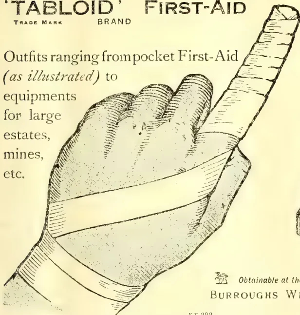
No. 710 'TABLOID' FIRST-AID
Ideal for individual use.
Can be constantly carriedIn scarlet enamelled metal.
Price in London 2/0
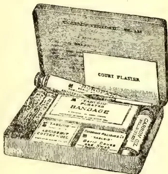
Obtainable at the principal pharmacies in all countries
BURROUGHS WELLCOME & Co., LONDON
J.R. 292
ALL RIGHTS RESERVED
In the preparation of vanilla beans in the Seychelles, a successful result depends on the pods being picked at the right stage of maturity more than on anything else—that is, when they are ripe and just before they begin to split. An unripe pod will never prepare well, and is always inclined to become mouldy; split or over-ripe pods have lost much of their value. A pod in condition to be picked has lost to a great extent its shiny green colour, has become duller, with an almost silvery appearance. The longitudinal lines along which it will eventually split, if left, are distinctly marked. The tip is light in colour, or even yellowish, and comes away fairly evenly from the stalk when broken off. Pods in a bunch seldom ripen simultaneously, so they must be carefully watched. When brought in, the pods are sorted into five qualities—(1) over six inches long; (2) over four inches long; (3) under four inches long; (4) split; (5) unripe, broken, etc. A vessel of water is heated to 188.6 deg. F.; the pods are placed in an open-work basket, and dipped for ten seconds, withdrawn, and allowed to drain for about five seconds; dipped again for ten seconds, withdrawn, and drained as before; dipped again for about five seconds, or until their colour has changed to a dark green. Large pods require a longer third dipping than small ones. After being scalded, the pods are wrapped in woollen blankets and left in a warm, dry place for twelve
hours, when they have taken on a blackish hue. They are then placed in trays in a room heated to between 90° and 100° F., on one thickness of blanket, and covered by another. In about ten days the largest pods will have become wrinkled, the smaller ones before that. When in this state they can be removed to a cool drying room, where they are placed on trays uncovered, heaped on each other to a depth of three inches, and turned about every day. The more slowly vanilla is dried the better. When the pods are dry they are taken out and stored in a dry place in wooden boxes. They are examined thoroughly from time to time, to see that they show no signs of mould. A dry pod should have a silky feeling, the wrinkles must be soft, there must be no hard centres, and it should be possible to tie the pod in a loose knot without breaking it. Absolute cleanliness is observed all through the preparation, and those who handle vanilla are careful to wash their hands before touching it. When sufficiently dried, the pods are put into a vessel containing water at a temperature of about 80 deg. to 90 deg. F., and stirred with the hands for about five minutes, then taken out and placed in trays or on a blanket in the sun, where they soon dry. The pods are now measured and tied in bundles of sixty pods each, with two turns of flax thread in the middle only. Tin boxes are used in the Seychelles, thirteen inches long, nine inches broad, and six inches deep, a lining of parchment paper being placed in each. The vanilla must be packed fairly loosely, and the lid secured by solder.—Royal Society of Arts Journal, Aug. 23.
43 338The Supplement to the Topical AgriculturistBY T. GARDNER, F. C. S.
Quinine and quinine salts showed a diminution in 6 months of this, as against last year, although the imports of quinine for the half-year 1,571,206 oz. in all, were 88,693 oz. more than during the same period of 1911.
A reference to quinine almost necessitates mention of its source, cinchona bark, commonly known as Peruvian bark, a drug of equal importance with opium. This, a drug of vice-regal institution, owes its nomenclature to the wife of a Viceroy of Peru in 1638, the Countess Cinchon, who through its instrumentality was cured of a fever. Its growth commercially can be traced from this incident, for soon afterwards it found its way to Spain, supposedly through the instrumentality of the Jesuits, who seemed to have been largely connected with the introduction of new drugs into Europe. Markham's expedition to Peru and Bolivia in 1859 resulted in the commencement of cinchona plantations in British India, in the Himalayas and Nilgherries. Prior to this, plants and seeds had been brought to Java by the German botanist Hasskari on commission by the Dutch. In this way the cultivation of the trees has become so extensive in India, Ceylon and Java that we are no longer dependent on its South American home for our supplies. For nearly a year the Java cinchona planters have been in negotiation with the European quinine makers, and have obtained from the manufacturers the concession they sought. This arrangement was ratified towards the latter end of July, the principal feature being that the quinine manufacturers have agreed to pay for a period of three years 5c per unit for bark. During the present year the unit price obtained for bark at the Amsterdam sales rose from 3.07 at auction 1 to 4.31 at auction 6, a somewhat noteworthy feature compared with the minimum and maximum unit prices at the 1911 auctions—namely, 3.03 and 3.22 respectively. These low prices were the direct cause of the negotiations referred to, which created considerable dissatisfaction amongst the Javanese planters, who, by way of retaliation, circulated a threat to manufacture on the spot quinine and export it, whilst the Government at the same time thought about doing likewise. The outcome of these threats was the despatch to Java by the European manufacturers of a director of the Brunswick Quinine Factory—Herr Buchler—who was empowered to offer the planters a considerable advance in the unit price on the condition the planters gave up their scheme of building a factory. The Government, however, still reserve the right to build and equip such a factory. Through the agreement it is hoped that an important industry, which was becoming unprofitable, will once more be worked on payable lines.
The cost of producing quinine in India is heavier than in Java on account of the Indian bark being poorer in quinine than the Java; indeed, during the past few years a good deal of bark has been imported from Java for the
manufacture of quinine, although the Indian Government does not deem it necessary to make a profit out of either its cinchona plantations or quinine factories. Notwithstanding this, the cost of making quinine by the Indian Government is abnormally high.
The recent activity in planting rubber and in extending rubber plantations in Ceylon has given a serious blow to one of the important and old-established plantations of the country, cinnamon, to wit. Where the locations have been suitable planters have rooted up their cinnamon and planted rubber or coconuts instead, no doubt being led to do this by the prices obtaining for cinnamon, which have gone down to so low a figure as to scarcely pay for its cultivation. This has not been without appreciable effect on the market and accounts for the scarcity of bark offered at present. Probably a diminution of supply may cause an upward tendency in price, and hence stimulate its growth once more. The cultivation of the plant in the island dates back to 1770, when the Dutch instituted a profitable trade in the bark, actually controlling not only the supply but the price. When England came into possession of Ceylon the Amsterdam market suffered severely, and ultimately the trade passed to London. The cinnamon tree is indigenous to the island, and before its cultivation the Portuguese, on their occupation in 1536, exported regularly the bark which they collected from the wild plants. It seems a mistake that the cultivation should be gradually foregone, particularly as its competitor, Chinese cassia bark, is encroaching as a substitute, and is making such headway as to threaten the extinction of the cinnamon trade. This cassia bark is obtained wholly from trees cultivated in the south-eastern provinces of the Chinese Empire, and is a species of cinnamon. The oil it yields is similar but not the same as the oil from cinnamon. The mode of obtaining the two barks is slightly different. In the case of cinnamon the plant is cut down so as to allow shoots to grow. When these are about two years old they are cut off, trimmed of leaves, the bark removed, dried in heaps for 24 hours, and finally the outside bark is removed. With cassia, when the trees are six years old, the branches are cut, the twigs and leaves removed, and the bark planed and then made into bundles for exportation.—Financier.
Now that we have the full text of the F.M.S. Government warning about coconut and copra speculations before us, we have nothing but praise for those who took the responsibility of giving it currency. The particular prospectus on which the warning was based was never publicly issued, but copies of it are known to have reached Malaya, though we have not been able to obtain one. It is but fair to say that the reference the warning contains is not to officers retired from the F.M.S. Civil Service whose names may be said to be household words in Malaya. It would apply to them if they associated their names with a coconut or copra propo-
and Magazine of the Ceylon Agricultural Society.—October, 1912.339sition, but the particular prospectus we have in mind contained names which would have been absolutely worthless to the company promoter unless much had been made of the fact that the persons who bore them had been in public service. To our minds, however, the chief importance of the warning lies in the exposition which it gives of the policy of the Government. That policy is to protect the small holder against himself. By far the greater part of the coconut trees in bearing are in small groups owned by a few Malays or Chinese. To these people the acre or two represents a permanent income sufficient to keep them in comparative comfort, contented and, broadly speaking, prosperous. The majority of these people are simple and illiterate, and no particular genius would be necessary to induce them to part with their holdings for hard cash. They are not accustomed to the possession of more than a few dollars, and in nine cases out of ten money got for a plantation which keeps a family in permanent comfort would soon be squandered and the people would be beggars. The concession hunter is not a philanthropist usually; in fact, he is rather the reverse, and it would be sheer brutality to leave the whole body of small holders at his mercy. In countries far more advanced than Malaya it is found expedient to save the lower classes from themselves. In many parts of India deplorable results have followed the policy of laissez faire. Tens of thousands of ryots have become the bond slaves of unscrupulous money-lenders, because the Government gave these Shylocks the benefit of legal support and made little or no attempt to save the peasant from their clutches. Few lower class Asiatics—few indeed of the lower classes in any part of the world—can resist temptations to secure a present advantage at the price of future embarrassment. They are like children, and the only Government that is of real service to them is one which does not shrink from being paternal, and which brushes aside nonsensical and inapplicable arguments about the liberty of the individual. We do not allow our children to destroy themselves by foolish indulgences. We coerce them for their own good.
If any considerable attempt is made to buy out the small plantation-holders, and if the law is insufficient to enable the Government to act paternally, we hope that a new law will be passed. Such a measure would not be in restraint of trade. A coconut tree grows quite as well, possibly even better in the vicinity of a native hut than it would do in a company-owned plantation. It does not need the same degree of skilled attention as the rubber tree. Coconuts are a perfectly sound form of investment, and there is ample land available which can be leased on very moderate terms, by anyone who applies for it. But that does not suit the company promoter. He wants to buy a few acres of trees in bearing, to take up a thousand or two acres of jungle at a cost of about $5 per acre and to palm off the lot upon the British public at five or six times what he has spent upon it. If he can get a few needy public service pensioners, or one or two grey-headed money grubbers with titles to join him in his conspiracy the promoter feels that he
is doing well. But we have quite enough watered capital in Malaya as it is, and desire no more. True, there are plenty of men who will damn the Government up hill and down dale for its interference. They are the people who would get jackal-pickings when the lions of finance were gorging themselves on swindling promotions. The Government can hear their damns with equanimity. It is not on bursts of activity for a few months that the financial stability of a state can be founded, but upon the honest investment of capital in solid business which has a fair chance of returning good profits. Any company which gets a real expert to select suitable land, which buys that land direct from the Government for its shareholders, and which plants coconuts under an efficient and honest manager will in due time have a most valuable property, and be able to pay a high rate of interest. There are difficulties, no doubt, the greatest being the fact that coconut trees take about ten years to mature, and seldom yield more than thirty to 40 nuts each per season until they are at least seven years old. On the other hand, knowledge of coconut cultivation is much more complete than knowledge of rubber trees, the yield is more regular, the organisation of labour more easy, and the expenditure on cultivation less. To people who are in a position to wait for a return on their money, it is as sound an investment as can be named. But there is not going to be a copra boom like unto the boom in rubber, and there is no room for reckless speculation or for swindling. A coconut proposition has got to start and work right through on what we have described in another connection as "natural capital," and we shall do our utmost to thwart any attempts that may be made to embarrass the future of Malaya by persons whose moral code is summed up in "beggar my neighbour."—Straits Times, September 9.
In 1907 the cocoa plantations of Surinam, in Dutch Guiana, were destroyed by a devastating disease. Naturally the Dutch colonists were anxious to make good their losses, and their thoughts turned towards the most lucrative of all fruits—the banana. Just about that time the banana trade boom began in England, and far-seeing folk were convinced it had come to stay. Nor were they wrong in their estimates. Ever since then growers and shippers of bananas have prospered to an extent that arouses the envy of many trading communities.
Stimulated by the example of the Canary Islanders who grew bananas when the cochineal industry was no longer remunerative, the inhabitants of Surinam thought they could not do better than follow suit. Landowners approached the Dutch Colonial Government for assistance, and were granted money wherewith to begin the cult of bananas. Large sums were advanced to put the enterprise on a sound basis, and a three-sided contract was entered into. The Colonial Government of Surinam provided money, the Dutch West India Mail Company ordered four
340The Supplement to the Tropical Agriculturistfine vessels of 3,200 tons each, and the United Fruit Company of Boston undertook to buy the fruit, and at the same time guaranteed a minimum freight.
Two of the ships were built in Belfast, and two in Amsterdam; and all were fitted with the special facilities for carrying bananas as introduced by Elders and Fyffes (Ltd.)
So far the arrangement seemed highly satisfactory to all parties concerned. They had the ships, they had the men, and they had the money too.
Unfortunately the bananas were not forthcoming. Although Surinam is apparently in the banana-growing part of the world, it was found impossible to grow the fruit successfully. Ever since its inauguration the venture has proved a lamentable failure, and the three contracting parties have lost heavily on the deal.
About four years ago the steamers were ready, and during the whole of that period not more than a third of a cargo per vessel has been forthcoming. The boats had each a carrying capacity of 40,000 bunches. Now the whole affair has been abandoned, and the ships will no longer call at Paramaribo, the port of embarkation. The United Fruit Company have bought the vessels—which originally cost over a quarter of a million sterling—and will use them on their other routes. It is quite impossible to estimate the total loss incurred.
The phenomenal success of the banana trade has attracted many people. It is only to be expected that fortune hunters would rush in. Vast wealth has been attained in Costa Rica, Santa Marta, and Jamaica by means of the popular fruit; yet it seems very difficult to hit upon the right spot to grow bananas. At the present time the world is being searched for suitable ground for the cult of the "wise man's fruit." Even the wise men who have done well with bananas have made many mistakes. Thus the attempt to grow bananas in fertile Cuba was utterly futile. Another abortive effort took place in Panama. In both these instances the United Fruit Company sustained severe reverses.
No difficulty whatever is experienced in selling bananas, the trouble is to get them; and that is why the very word "banana" on a prospectus acts like magic. So many are apt to assume that the fruit will grow in any tropical country, but even the greatest experts have been deceived on that point. Growing bananas is playing for a big stake. Should the fruit flourish then the reward is indeed golden, but failing that the debit balances are such as to terrify merchant princes. There is an indissoluble association between bananas and ship-owning, and failure with the fruit means losing valuable ships. Those who have the temerity to enter into the field must be prepared to think in millions. The disaster at Surinam is but another illustration of the the perils of fruit-growing. There are no half measures in regard to bananas—it is fortune or extinction.—Daily Telegraph, Sept, 10.
Though the history of rubber cultivation in Burma dates back to so long ago as the late seventies, it was only about a decade ago that the plantation industry came to be placed on a commercial basis, and the most noteworthy feature in the history of modern agriculture in the Province is the rapid strides made in the cultivation of this valuable product. Rubber planting in Burma has long since passed the experimental stage and though the industry is still comparatively young when we consider the extent of the areas under rubber in the Federated Malay States and the Straits, it is nevertheless a fact that rubber cultivation is one of the successful commercial enterprises in this Province. As in all industrial ventures demanding the expenditure of large sums, private enterprise for some years was slow in embarking on the industry on a commercial scale; but as experimental cultivations carried on over a series of years in various centres showed that Burma was an ideal place for the cultivation of rubber, the hesitancy and diffidence which early marked the history of the industry disappeared and Burma at the present day has a right to be considered as one of the important centres of plantation rubber cultivation. In view of the present activity it may be interesting to observe that the plantation product now covers an area of nearly 33,000 acres showing an increase of 265 per cent. as compared with the area of five years ago. Rubber is now cultivated in ten districts in Lower Burma and in the Bhamo, Myitkyina, Katha and Yamethin districts of Upper Burma. The areas in the more important rubber-growing districts during the five years ending 1911-12 are respectively as follows:—Hanthawaday, 2,627 acres, 3,189 acres, 3,724 acres, 3,814 acres and 5,903 acres; Toungoo, 1,857 acres, 2,368 acres, 2,213 acres, 2,587 acres and 2,477 acres; Thaton, 11 acres, 97 acres, 97 acres, 3,488 acres and 4,133 acres; Amherst 100 acres, 100 acres, 168 acres, 676 acres and 1,450 acres; Tavoy, 109 acres, 406 acres, 666 acres, 1,013 acres and 2,381 acres; Mergui, 4,239 acres, 5,540 acres, 5,762 acres, 5,932 acres and 13,163 acres; and Myitkyina, nil, 50 acres, 800 acres, 2,382 acres and 2,712 acres. The total Provincial area during the same period has been 8,987 acres in 1907-08, 11,849 acres in 1908-09, 13,525 acres in 1909-10, 20,100 acres in 1910-11 and 32,772 acres in 1911-12.
The most remarkable increases have been in the Tenasserim division and in the Myitkyina district. In Thaton where two years ago there were only about 100 acres under rubber, the area now amounts to over 4,000 acres; the cultivation, so far, promises well and a further expansion is anticipated in the near future. Large tracts in Shwegyin are now cultivated with rubber and new tracts are being applied for both in Shwegyin and Toungoo townships, while in Tavoy rubber planting is proceeding apace and applications for grants or leases of land continue to be received. A grant of 2,000 acres is being worked by one planter but Mr. Marshall has disposed of his plantation above Ye Byu. In Mergui also rubber cultiva-
and Magazine of the Ceylon Agricultural Society.—October, 1912. 341tion has caught the popular fancy principally as the direct result of the successful exploitation of the product through Government agency and the area now amounts to no less than 13,103 acres, rubber in the district now occupying the position of one of the staple crops. The area under rubber in Amherst, which now measures 1,450 acres, has more than doubled itself during the past year. The increase is due to the areas planted in the leases issued to the Amherst Rubber Estate, Ltd., and to the Maulmain Rubber Plantations, Ltd. These two estates have become well established and other small estates are also springing up rapidly. It is confidently expected that in a few years rubber plantations will form one of the important agricultural industries of the district. It might be remarked that the figure 1,450 acres above represents the area actually under rubber and that it is only about 20 per cent. of total area, 7,625 acres, already granted or leased. The increase in Hanthawaddy is due to the extension of their estates by the Rangoon Para Rubber Company, Ltd., to the issue of new leases and to 150 acres of the Twante grant having been brought under cultivation recently. The cultivation of rubber in Katha, Myitkyina, Yamethin, Henzada and Salween is a recent introduction. Nevertheless the area in Myitkyina where the cultivation really began four years ago now amounts to 2,712 acres, Mr. Kearney Young's estate being reported to account for over four per cent. of the total area in this district.—Rangoon Gazette, Sept. 2.
Though rubber planting has been established on a paying basis in many tropical lands, there can be no doubt that but little is known about the correct manurial treatment of the trees.
In temperate climates, where the science of agriculture has been built up, the conditions are so entirely different from those obtaining in the tropics that it is difficult to apply the knowledge gained in the one to the problems in the other. One can at present only apply the general principles, adapting them as far as possible to tropical conditions.
The difficulties are great with regard to the treatment of most tropical vegetation, but especially so in the case of rubber, where trees of all ages have to be dealt with, even up to three-quarters of a century old.
Experimental information with regard to the use of fertilisers on rubber plantations is practically non-existent, but there appears no reason why the success obtained from a judicious use of fertilisers on forestry and nursery stock should not be repeated in the case of rubber trees.
The results of experiments with forestry have proved that the supplying of the necessary plant foods, in the shape of fertilisers, has a marked effect on the health and vigour of the tree—especially in its earlier years—and there is no reason to doubt that equally good results may be obtained with rubber trees.
Again the manuring of fruit trees in orchards has been followed by very gratifying results. In
their case the manures are applied in a trench dug around the tree to a depth of about 18 in. The trench should be at such a distance from the stem as to be directly over the young rootlets—in the case of fruit trees just outside the spread of the branches.
Questions of soil and climate having been carefully studied, and the planting completed, there remain the important details of cultivation and fertilising. It may be said without hesitation that young rubber trees respond as promptly to cultivation and artificial care as other tree crops, and thus, to ensure success, cultivation is not only desirable, but necessary.
The main object is to bring the young trees to maturity as quickly as is consistent with healthy growth, for financial success in rubber-growing must be largely influenced by the methods adopted to hasten the maturity of the trees.
No hard and fast rule as to the quantities to apply can be laid down, and direction must be exercised according to the age of tree, requirements of the soil, etc., but the first step to be taken, adopting ordinary scientific methods, is to have an analysis made of the soil and then to supply such elements of plant food as may be found wanting in the shape of phosphates, potash, and nitrogen. At the same time the necessary humus should be supplied to the soil by growing suitable green crops between the rows, and ploughing in.
As has been said, it would be impossible, in a short article, to go into details as to what particular materials and what quantities of fertiliser should be used, but the planter cannot afford to neglect the general question of rational fertilisation, and it is only by constantly experimenting under his own conditions that he will eventually learn the methods best suited to those conditions.
As time goes on, there will no doubt be many experiments made and results published by scientific authorities, and general principles will be deducible therefrom, but there is nothing like repeated experiments on one's own plantation, especially when, as often as not, there are experts ready and willing to assist.
On one point, however, there is some reliable information resulting from the experiments, made by Dr. Wilcox in Hawaii, on the value of nitrate of soda in increasing the flow of the latex. Further experiments have been in progress for some time and the results will be published in due course. In the meantime, the following has been published by Dr. Wilcox as the result of his preliminary investigations:—
"It has often been suggested that a scheme of fertilisation might be devised whereby the flow of latex could be temporarily energised at each tapping period. In order to gain evidence on this point, a series of experiments were undertaken in Hawaii with nitrate of soda. The fertiliser was applied, at the rate of one-fourth and one-half pound per tree, a few days before tapping. It was found best to incorporate the fertiliser deeply and thoroughly in the soil over
342The Supplement to the Tropical Agriculturistthe young and actively growing rootlets. If the soil, at the time of application, be excessively dry, immediate effects may not be noticed from the application of nitrate of soda until a rainfall occurs, or until artificial irrigation is applied. If, on the contrary, the soil is moist at the time of application, and gentle rains occur soon afterwards, quite striking results are shown within two or three days, but a deep and thorough incorporation of the nitrate in the soil will be of advantage. In some cases the yield of Ceara rubber trees was doubled during the fall tapping period by the application of one half-pound of nitrate of soda per tree. It has not been determined exactly how the nitrate of soda brings about this stimulation in the flow of latex, but the fact appears to be true, and is believed to be well worth considering at tapping time on commercial plantations. The coagulation of the latex likewise appears to be much improved from the use of the nitrate of soda."
A simple experiment on these lines, following the advice as to moisture, and thorough incorporation of the nitrate in soil, can be easily carried out on any plantation at very small cost and, as Dr. Wilcox remarks, such a trial is well worth considering at tapping time on commercial plantations.
M. H. P.
—Rubber World, Sept. 19.
We have received the following copy of a report dealing with the method in which Devon estate, Malacca, has been opened up:—
The results of the scientific methods employed in opening up this estate have been highly satisfactory, and show what can be done by boldly leaving the beaten track. The estate at present consists of two divisions, North Devon with 300 acres planted and 1,950 lalang; South Devon, 2,450 acres (of this it is estimated 200 are taken up by swamps, house and village reservations, etc.), giving a total area of 4,500 which it is proposed to plant up by end of June, 1913.
The oldest trees are about 19 months and have a growth equal to any upland trees of that age I have seen, whilst the newly planted clearings all seem to be growing well. Planting distance is 22' × 22 diagonally, which gives 104 trees to the acre.
The land has been well chosen for this form of culture, being practically flat, and there should be little or no trouble from wash at South Devon. The northern division, however, has several hills which will probably cause some trouble at a later date.
The unopened country at North Devon is going forward in a manner decidedly novel to one accustomed to the ordinary method of felling, burning and stumping, etc. Any blucker growing amongst the lalang of which almost, the whole area is composed, is first grubbed out by the roots, and burnt clean. The cattle drawn mowing machines then cut down close
to the ground all lalang, which is burnt off. The next step is the plough, a great double ended affair drawn backwards and forwards between two cable engines standing a quarter of a mile apart. These engines are capable of ploughing 10 acres in a day, and very soon open up the soil for the disc harrows which are worked on a similar principle by a second pair of engines following behind. When the soil has been broken up and rendered friable the dead lalang on the surface is collected with a flat harrow drawn by the same power. The land is now ready for holing and planting. Any lalang left alive dealt with in the ordinary course of weeding, which is being done at a very low cost per acre.
Various manurial experiments are being made, amongst which is the sowing of ground nuts (legume). It is hoped that the seeds of these will cover cost of cultivation, whilst the leaves and stems will be ploughed in as manure. It will be interesting to hear the result of this experiment, as the ground nut reduces the cost of weeding to practically nil, and will also stop any tendency to wash after heavy rain.
The estate is situated at the 18th and 21st miles on the Merlimau Road and is said to be exceptionally healthy, none of the staff up to now having been sick at all.
Labour is all free and consists of Malays drawn from the neighbourhood, whilst there are a bare number of Chinese working on contracts.
Without wishing to be too enthusiastic, this is one of the finest estates I have yet seen, and at the low capitalisation of £20 per acre—at which it is hoped to bring the total area desired into bearing—should become one of the best paying rubber companies in the East.—Straits Times, Sept. 7.
The Colonial Office report on the Seychelles for 1911 states that the quantity of tortoise shell exported was over a ton, valued at R41,597, the prices ruling high throughout the year. The markets are London and Paris. The number of turtle captured each year varies, but the average quantity of shell obtained shows no diminution. Some interesting experiments are being made in the rearing of young turtles from the egg in enclosed areas. The Government has advanced on easy terms the capital required by the lessee of one of the Crown Islands, and there seems at present a likelihood that the venture may prove successful. The "carets" grow more rapidly in confinement than in the open sea, and the weight of shell is proportionately greater, but many difficulties have yet to be surmounted before the experiments can be pronounced to be successful. The planting of Para rubber, the report continues, advances steadily; 62,000 seedlings have been planted out in 1911 from the seeds of rubber trees growing in Seychelles. Rubber appears as an export for the first time in 1911, viz., kilos. 132, which realised the full prices of good plantation rubber. Some 25,000 trees will have reached a tappable size in 1912.
—London Times, Aug. 26.
and Magazine of the Ceylon Agricultural Society.—October, 1912.343Under the heading, 'Handling Tea in London,' the Tea and Coffee Trade Journal, New York, describes the methods followed in the metropolis by those who handle tea from its arrival. The article is accompanied by illustrations, including one of the tea auctions, and it concludes with a reference to old and modern tea blending. The writer, Mr A Ibbetson, says: 'During recent years great changes have taken place in the London wholesale tea trade. In the old days the grocer made it his business to understand the teas he dealt in and, consequently, when he desired to replenish his stocks he always bought Indians, Ceylons, etc., in original packages, tasting the samples submitted to him carefully in the water of his district, and after selecting those which suited his purpose he would blend them himself—producing as far as possible a tea which had character and individuality. Times have changed, however, and although some distributors buy original teas and do their own blending, yet many buy what they require already blended. The majority of the large London dealers have moved with the times and have at their command the latest and most efficient cutting, blending, weighing, and packing machinery. Owing to the large stocks held by the London houses and the up-to-date character of the machinery used, it is possible to turn out a blend at a very low cost. In fact, by the aid of electricity the tea in the original packages is not touched by hand from the time it is received to when it is either repacked in chests or half-chests or weighed into packets as small as one ounce. The grocer, therefore, has a fine opportunity of retaining his tea trade if he will only study in a reasonable way the requirements of his customers. The quantity now consumed in England is over six pounds per capita. At the present time the family grocer is not selling his share of tea and he, unfortunately, hardly realises what an important asset it may become to his business if vigorously pushed. . . . The tea trade is magnificent and wonderful, and there is ample scope for all those engaged in it, but brains and palate will count for little if only the cheapest teas are wanted. It is up to all, therefore, to do everything possible to elevate the trade, and by intelligent effort to educate the public, so that instead of the cheapest the best will be demanded.'
Butter, as the term (from a Greek word meaning "oxcheese") implies, was originally a name for a product obtained from the milk of the cow, and afterwards, by extension, for a like substance obtained from the milk of other animals, such as the ewe and goat. By a further extension, the name has been applied to certain fixed vegetable oils, the melting point, consistency and aspect of which resemble butter of animal origin, such as "butter of cocoa," a concrete oil of a sweet and agreeable taste obtained from the kernels of the fruit of Theobroma cacao or "chocolate-nut tree;" butter of
"Bambuk," an oil obtained from a species of almond in Senegal, and used medicinally; and "butter of nutmegs" or "butter of maces," a sebaceous substance expressed in the East Indies from the arillus of the fruit of Myristica moschata. To the plants yielding such oils has been applied the name of "butter-trees," and to the oils themselves the term "vegetable butter." "The butter-tree" of Nepal is the Bassia butyracea, the seeds of which yield by pressure a semigold oil, which thickens and becomes of the consistency of lard. It is called "phoolma," "chorce," or vegetable butter, and is used for culinary purposes, and by the natives of rank, for anointing the body. The seed of Bassia latifolia, the "mahava-tree" of Bengal, yields a greenish, white oil which is of the consistency of butter, and which is used as such by the poorer classes. From the flowers of the tree is distilled a spirit resembling whisky which the natives like better and consume in large quantities. Another species of the same genus, B. longifolia, the illupie-tree, affords an oil similar to that obtained from the two preceding trees, and which is used by the Ceylonese for culinary purposes. The "butter-tree" of Africa, the seeds of which produce the "galam butter" or "shea-butter," mentioned by Mungo Park in his travels, is a species of the same genus B. Parkii. The fruit when ripe is the size of a peach, and, after being dried in the sun, is pounded in a mortar until reduced to flour. It is then mixed with water and boiled for a short time, when greasy particles become detached and rise to the surface, whence they are then skimmed. When cold the oil is of the consistency of butter and will keep fresh for two years.—"Scientific American."
The tree (Lecythis Zabucajo) producing thy sapucaia nut is a native of Guiana, Brazil and Venezuela, where it grows to a great size, and bears its seeds in a large, very hard fruit provided with a lid at the top, which, falling away when it is mature, lets the seeds escape. These are what are commonly known as the nuts; they may be obtained often in the fruit shops in England, where they are sometimes sold in preference to the Brazil nuts, which are borne by a plant Bertholletia excelsa) belonging to the same Natural Order: as a matter of fact they possess a better flavour—sweet and somewhat resembling that of the almond—and are more easily digested than the Brazil nut. They yield an oil which, like that of the last mentioned nut, is employed in South America as a food oil and for soapmaking; it shares with this oil the disadvantage that it becomes rancid in a very short time.
By the courtesy of the Trinidad Department of Agriculture, plants of Lecythis Zabucajo have been supplied to the Dominica Botanic Garden, and that Department is co-operating further with the Commissioner of Agriculture by sending plants of the same kind to other Botanic Stations in the Lesser Antilles.—Agricultural News.
344The Supplement to the Tropical AgriculturistThe output of guano from the Seychelles was 21,910 tons in 1911, compared with 23,039 tons in 1910. The output for 1912 and 1913 will probably (says the Governor in his annual report) be larger, but after that there will be a gradual diminution, and at the present rate of exploitation the supplies will probably last for another ten years.
The above from the leading paper on fertilisers should be of interest to your planter readers who would find this guano far more suitable to Ceylon soils, than Basic Slag which is a hard fused material, however finely it may be ground.—Cor.
Dear Sir,—With reference to an article on root diseases which appears in T. Petch's book "The Physiology and Diseases of Hevea Brasiliensis" and the sentence in same stating that "it is impossible to get rid of fomes semitos-tos if the stumps which bear the fungus are not removed; neglect of that operation is the chief source of danger;" it is generally recognised, I think, that such a method is far too costly to be undertaken with any degree of completeness. Even the destruction of all loose timber, which has escaped burning, involves a huge outlay, and Managers as a rule, are rather shy of taking such effective, yet costly steps.
What must, and can be done is, a system must be devised on affected plantations, whereby the thorough prevention of the disease is aimed at. People who offer rewards for the cure of the disease, are fairly safe with their money but of little use to the planting community, considering how difficult it is to discover the disease early enough to prevent serious damage or death to the trees attacked. It would be rather more beneficial to reward the person who gave the simplest, cheapest and surest idea for the thorough prevention of the disease rendering the affected plantation and district safe from attack.
Let it be a matter of competition between all planters in the East, and let all ideas be sent in to a committee of experienced men, who will decide which is the best idea. Then let a thorough trial be made and full particulars be kept as a record. After a trial of say 12 months, or some period determined on, let the full re-
sults be published. Should the idea be a complete success, then and only then, let the inventor of the system be rewarded.
Trusting that you will find this letter interesting enough to afford space for it.—I am, Dear Sir, Yours truly,
"BODE."
British North Borneo, 8th August 1912.
—Grenier's Rubber News, Aug. 31.
A British Consular report on the trade of Sumatra by Mr W J Stewart states: The cultivation of plantation rubber is already one of the most important industries in Sumatra, and bids fair to be a factor of very considerable importance in future in furthering the development of the East Coast. It is calculated that approximately five-eighths of the whole capital invested is British. One or two hitherto unexploited districts have been opened up, and there is little doubt that even more would have been done in this direction had better means of communication by road and rail been available. A large number of companies intend to plant little or nothing further in 1912, but several are preparing to plant considerable areas. Reliable statistics as to the amount of capital invested in the rubber industry in Sumatra and the area under plantation rubber are unobtainable. Returns show at the end of 1911 approximately 130,000 acres planted, of which over 125,000 acres are Hevea Brasiliensis. It has been estimated that at the end of 1911 there were 50 British rubber companies operating in Sumatra with an issued capital of approximately £5,000,000 and a nominal capital of about £6,200,000. The following approximate statement of capital invested in the cultivation of rubber in the East Coast has been compiled:—British, £5,000,000; Dutch, £3,000,000; German, £30,000; Belgian, £62,000; Swedish, £20,000; total £3,162,000. The above figures as indicated are admittedly only approximate. Some 30 rubber companies are now producing, but the majority of them have only recently commenced tapping, and that on a very small scale. Official figures are not yet available, but it is estimated that the quantity of plantation rubber exported from the East Coast of Sumatra during 1911 amounted to approximately 677 tons, of which about 550 tons were shipped to London.
A British Consular Report on the trade of Java by Mr J W Stewart, just issued, refers to the rubber industry as follows:—
A fair number of the Java estates have now reached the productive stage, but the majority of these only began to tap on an extended scale towards the end of 1911, and so far no information on the subject of production, cost &c., has been published. Some statistics of this nature have been obtained privately, but as these refer mainly to a few young estates situated in one part of the island, it would be unsafe to use them as a basis for anything is the nature of a prediction as to the future of the rubber industry in Java. That Java estates can produce rubber of a superior quality is unquestioned, and, so far as can be judged from the figures at present available, the outlook is by no means discouraging, returns from the more advanced plantations showing a steadily increasing production per tree, and low cost. A few estates complain of labour difficulties, but as the industry develops and the cultivation of rubber becomes more familiar to the natives, these troubles will no doubt gradually disappear. Tapping is readily learnt by the coolies, and managers generally express themselves as satisfied with the daily task performed. Exports of rubber from Java during 1911 amounted to 982,600 lb, as compared with 158,700 lb during the preceding 12 months, but some considerable part of this represents wild rubber from outlying islands.
—Financial Times, July 30.
This image is a scan of a blank page. The paper has a light beige or cream-colored tint. There are a few very small, dark specks scattered across the surface, which appear to be scanning artifacts or dust particles. No text, lines, or other markings are present on the page.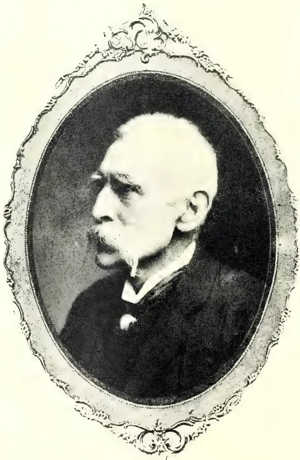
H. A. Michelson
THE
TROPICAL AGRICULTURIST
AND
MAGAZINE OF THE
CEYLON AGRICULTURAL SOCIETY.
VOL. XXXIX,
COLOMBO, NOVEMBER 15TH, 1912,
No. 5.
HARD CURED PARA.
MR. WICKHAM'S B. MODEL AT PERADENIYA.
One of Mr. Wickham's smoke curing machines, the first to be introduced into Ceylon and the East, has been erected at the Peradeniya Experiment Station for the purpose of submitting it to a trial of six months or a year with latex from a definite amount of trees set apart for that purpose. Visitors to Peradeniya interested in the various processes of coagulating and curing rubber should make a point of studying the working of the smoker and the resulting rubber.
Difference Between Coagulating and Curing.
Mr. Wickham draws a clear distinction between the process of coagulating rubber by means of reagents as practised in the plantations of the East and the curing of hard Para in the virgin forests of the Amazon; his contention being that with hard cured the whole of the latex is treated and becomes transformed into an amalgam with the essential oils of the smoke; whereas with coagulation part of the latex is separated out in the liquor; and that thus hard cured Para contains certain natural constituents absent in plantation rubber which may account for the qualities of durability and toughness for which it is particularly noted.
The Process.
For curing hard Para the Brazilian tapper builds a small oven-like furnace with a hole at the top for the issue of smoke and over this hole close to the heated smoky orifice he suspends his mould, usually a round piece of wood, in the smoke until the surface is well heated and becomes covered with condensed oils from the smoke. He then swings it over the latex tank and with a dipper pours the latex over the mould playing the latter so that it gets evenly covered with a thin coating of latex. He then swings back the beam, which is often suspended by a rope from a support above, over the hot, smoky blast, after a few moments' contact, returning it again to receive another floating film from the tank. In this way a block is built up of 10 to 100 or more pounds in weight. The pressure exerted by each additional superimposed layer is an important agent of manufacture. The lump may be left for a few months or a year or marketed at once.
346[NOVEMBER, 1912.Mr. Wickham has made three machines for mechanically imitating as nearly as possible the methods of the Brazilian; B. model now erected at Peradeniya being the one he is disposed to favour most. It consists of an upright revolving disc-cylinder adapted to carry the latex so that it can be brought into contact with smoke issuing from a flue leading from a small furnace charged with smoke producing fuel such as coconut shells and husks; the object being to generate hot smoke, not flame. On the Amazon the seeds of the Maximiliana and other palms are used. We have had Maximiliana regia at Peradeniya for forty years. A small tank for the separation of the latex is mounted so that the latex can flow through a tap at the bottom on to the flange of the disc-cylinder which, as it revolves, brings it into contact with the smoke. It is very necessary that the extremity of the flue should be set close enough so that the smoke issuing from it shall not have cooled down below a temperature of from 150° to 200° F.; heat being also an important agent in the process.
No opinion is expressed as to the suitability of B. model for plantation use or even of the practicability of imitating the methods of the Brazilian curers to meet the needs of the market. The latex will be measured daily as it is believed that the resulting weight of rubber will be proportionally greater than that derived from the coagulating method. In the first place, though a certain amount of moisture is evaporated by the hot smoke the loss is probably not so great as that suffered by coagulation and subsequent drying of crepe. With Mr. Wickham's process, as with hard Para, the rubber is not dried; decomposition being prevented by the anti-septic oils absorbed in the smoke. This is an obvious advantage as much factory space is saved. Another is a saving in expensive washing and creping machinery. The rubber is taken from the smoker, put into a press for 24 hours and is then ready for the market. It is better perhaps to keep it under pressure for a longer period though it is not necessary. It has been questioned whether large quantities of latex such as are daily collected on plantations of size could be dealt with and this is a point for investigation. It would seem to be a matter of increasing the diameters of the disc and arranging batteries of them mounted close together on single shafts; and of having them built in sections so that they could be rapidly opened for the liberation of the rubber.
In acknowledging a sample of hard cured he recently sent home from Ceylon, a correspondent sent Mr. Wickham the following observations:—“It does not convey the impression to my mind at present as being equal to fine up-river hard, but I don't state that this is so because the size of the sample is insufficient for the purpose of a real test. That is the impression; at the same time the lines you are working upon are entirely sound and if an economical process can be devised whereby our Rubber can be turned out in large quantities under somewhat similar conditions of manufacture to that in vogue on the Amazon, I believe it would be a great step forward in increasing the tensile strength of the article produced. Many manufacturers have told me that good well-prepared Smoked Sheet from the Middle East is as good if not superior to so called Hard Fine, but the great point is that the latex produced from trees grown in the Middle East is quite as good if not better than that produced by the forest trees of the Amazon. This being so the question of improved manufacture is only a matter of time, and I am of the opinion that the best line of advance is in the direction in which you are working.” The writer is a well known London authority whose opinions are entitled to respect.
NOVEMBER, 1912.]347The following observations by Agricultural Instructor N. Wickramaratne on the paper read by Mr. W. A. de Silva at the meeting of the Board of Agriculture on 10th September, 1912, will be found of interest:—
This is essential not merely to separate the light from the heavy grain but also to secure purity of seed. The sowing of mixed seed is a common practice which is by no means economical, though the cultivator, by grudging the time and trouble necessary for the elimination of the adulterating grain, thinks he is gaining something. One frequently meets with mixed paddy crops resulting from this carelessness in sowing. Recently I had to procure a special variety of seed paddy which I found adulterated to the extent of 30 % with an inferior variety.
Very careful consideration is necessary before deciding from what districts seed should be introduced. For instance, seed of a variety which is of one "age" in a district like Kurunegala will not mature within the same period in the Ratnapura district (owing to the latter place being so much wetter), and vice versa. Early or late maturity means a great deal since it may result in attack by the paddy fly, or damage by cattle which are generally let into the fields after the bulk of the crop is reaped. This points to the necessity of making trials before recommending particular changes of seed.
The whole subject of varieties requires study and a classification to work upon is needed. At present no definite information is available and the experience of the goiyas is the only guide; and there is often a difference of opinion even among them.
A point that strikes me in this connection is whether, if the breeding of special varieties of paddy is carried out, say at the Experiment Station, Peradeniya, we could count upon the qualities being constant under all conditions of soil, elevation and climate; that is, whether the seed will breed true to type in Jaffna, Mannar, Batticaloa, as well as Nawalapitiya, Welimada and Ratnapura. This is a point upon which I should like to have the views of experienced men.
With a view to deciding many important points connected with this question of seed in paddy cultivation, it is advisable that the Society should establish its own paddy experiment stations in typical districts with the object not only of trying different methods of land-preparation, tillage, sowing, manuring, etc., but also of testing various kinds of paddy likely to prove suitable to specific districts so as ultimately to be in a position to establish seed-farms such as are to be found in India.
348[NOVEMBER, 1912.The Agricultural Gazette of New South Wales for September, 1912, has an interesting account on the above, from which we quote the following extracts:—
The birds can be mated for breeding at about the age of three years. They are mated in equal proportions and the hens lay about sixty eggs per head per annum. They lay every second day in the season, and if the eggs are not removed from them they begin to sit and the laying is reduced. One pair of birds on an acre of lucerne should give at least thirty chicks per annum with natural hatching. Nesting commences in July and hatching proceeds until February or March. It takes six weeks to hatch an ostrich egg.
It is expected, however, that birds penned up will hatch practically all the year round. The largest hatch so far obtained in one year has been 250, but as many as 50 have been lost in one week from wet weather.
The age to which the birds will breed is unknown; though a hen hatched in South Australia in 1893 is still the best breeder at "Nardoo."
The practice is not to pluck feathers from the ostriches until they are nine months old. Some say that feathers can be plucked at seven months and on one occasion Captain Cairnes attempted it at six and the sockets bled, with the result that he never got good feathers from those birds afterwards.
These are so arranged that seven birds can be put into a pen together and driven one at a time into a "crush" to have the feathers cut. Old birds stand quietly during the operation but the young ones kick through fright. As a kick from an ostrich is a very vigorous one, a cap is put over the bird's head before it is driven into the crush. When in the crush one man removes the tail feathers and two others the wing feathers. Cutting off feathers gives no pain to the birds and it would be against the owner's interest to give pain to the ostriches by pulling the feathers out as the sockets would bleed and succeeding crops would be seriously handicapped.
An ostrich will give three cuts of feathers in two years though the time can be hastened by liberal and nutritious feeding. It is not advisable, however, to hasten crops. Some South African farmers only pluck once a year.
In the feather-room the crop is graded for sale. The large snow-white feathers bring the best price—£25 to £30 per lb., and the black and white ones bring about £18 per lb. Black feathers are less valuable. The small "floss" feathers, obtained from three rows under the wing, may be used for various purposes such as making feather dusters, but are not of much value,
NOVEMBER, 1912.]349The Journal of the Board of Agriculture for September in an article on this subject states that:— In most cases the idea appears to be entertained that having a soil analysed is ready means of obtaining an indication of its fertility and a discussion as to how far this view is correct may therefore not be out of place.
The fertility of the soil may be defined as its power of growing crops and while this depends to a great extent on the soil's ability to supply the crop with what is often termed plant food, particularly nitrogen, phosphoric acid and potash in a suitable form, this is by no means the only essential condition. Even if the analyst could give complete information about plant food and were able to measure accurately the mechanical condition of the soil, the information obtained in the laboratory could only give a very incomplete idea as to the fertility of any particular field and the farmer would have to supplement it by his own local knowledge, experience and judgment.
Although the analyst is unable at present to give more than very rough and incomplete information even about those factors influencing fertility, some of the difficulties with which he has to contend may be mentioned here. He can determine as accurately as need be the total amounts of nitrogen, phosphoric acid and potash in the soil and it has been found that, even where external factors, e.g., climate, depth of soil, etc., do not enter into the case, there is often little or no connection between these amounts and the soil's manurial requirements. Most of the plant food, however, is in an unavailable or locked-up condition and is only gradually set free or made available.
In the case of phosphates and potash, a method has been devised of roughly measuring the amount which may be regarded as of immediate or prospective value to the plant by finding, not the amount of phosphates or potash present, but the amount which is dissolved out in a given time by a weak solution of citric acid. This method gives results which in many cases indicate fairly well whether a particular soil will respond to applications of either of the two kinds of manure. At the same time there are many cases where the results obtained are at variance with those obtained by actual experiment in the field.
Two conditions essential for the satisfactory growth of crops are a sufficient supply of water and the proper aeration of the soil. By carrying out a "mechanical analysis," the proportions of particles of different degrees of coarseness can be measured, and as the results of such analyses accumulate it will probably become possible to estimate from such an analysis such factors as water retaining power, ease of drainage, ability to withstand prolonged drought, etc.; and even to say with some degree of certainty what systems of cultivation are most likely to result in a good tilth at any particular time of the year, but in most cases an ex-
350[NOVEMBER, 1912.perienced farmer would be able to gain more useful and accurate information by walking over the land and examining it carefully at different times of the year.
Chemical and mechanical analyses of soils are of little practical value except in a few special cases. An intelligent and local farmer could give a much better idea of the fertility of any particular farm than an analyst.
Through the munificence of Capt. Dealtry, Part of the 21st Lancers who placed a sum of £10,000 at the disposal of the British Board of Agriculture, it has been found possible to initiate some important experiments in light-horse breeding in England. The work is under the control of Capt. Part in consultation with Major C. C. Hurst and Mr. F. W. Carter, and will be carried out on Mendelian lines, with the approval of Prof. J. Conar Ewart.
In order to secure certain results, i.e., uniform offspring, and reduce the production of "misfits" or irregular progeny to a minimum it will be necessary to employ what are known in Mendelian language as "homozygous parents," i.e., pure breeding stallions and mares; but these can only be discovered by experiment. Once found, however, the strain or breed will be permanently established.
The details for the working out of a scheme calculated to produce the most desirable strains are in the hand of Professor Ewart and Major Hurst.
If in the end, says Horse and Hound, anything approaching the success achieved (by working on Mendelian lines) at Cambridge in increasing the production of flour in wheat and enabling it to resist disease, and improving the qualities of sheep and other animals, can be equalled by these experiments with horses, to Capt. Part will belong the honour and credit of laying the foundation of a great enterprise.
Horse breeding has never attained any importance with us and we have not heard of any practical steps being taken with a view to creating a local supply of horses suitable to our needs, though private enterprises in this connection have been freely talked about. But where there is scope for some definite action is with regard to the improvement of the cattle of the country. There are many excellent qualities in our indigenous stock which it should be the object of the breeder to fix in combination with other desirable points that could be introduced by a judicious experimenting on Mendelian lines.—The Veterinary News.
We understand that the Government Veterinary Department is about to start a breeding farm in the neighbourhood of Ambepussa railway station. This establishment should offer immense facilities for such work as has been indicated above.
NOVEMBER, 1912.]351By W. J. BEAN.
There is no doubt that hollow places in the trunks and limbs of trees formed by decay are better filled up. If the cavity be a large one the appearance of the trunk is thereby improved, and if it be small and properly treated decay is often arrested and new bark encouraged to grow over the filled up cavity. It prevents the entrance and accumulation of moisture, and thereby removes one of the chief predisposing conditions of decay.
The majority of such decayed hollows have their origin in snags left by branches broken off that have rotted back into the trunk because the new bark has not been able to grow over and seal up the wound. Branches removed by design, or broken off by wind or accident, should always be sawn off close to the trunk, and the sawn surface should then be coated over with ordinary coal tar. If a snag or stump is left the bark cannot grow over it; damp, fungoid parasites and decay sooner or later follow and gradually find their way towards and eventually into the trunk. Such is the most frequent beginning of cavities in the limbs and trunks of trees. The coating of tar renewed every two or three years, makes the wound watertight and fungus-proof; its object being to serve as a temporary bark until a new natural covering is formed. It is certain that the life of many trees, historically famous or otherwise notable, might be much prolonged if a close watch against the intrusion of decay into the trunks and main branches was maintained.
With regard to hollows that have already formed, the following treatment is recommended:—First clean out all the decayed materials, especially the soft brown crumbling wood and the soppy mass frequently found at the bottom. Sound dead wood that has become dry and hard does not matter. Then wash the surface of the wood that is left exposed with a strong solution of carbolic acid. After allowing this a day or two to dry, a good thick coating of ordinary tar should be laid on. This antiseptic treatment is intended to destroy as far as possible fungoid parasites. It now remains to fill up the cavity. If this be a small one Portland cement may be used, and for round holes like those made by wood-peckers a plug of oak cut to fit will do. But if the hollow be a large one, the aid of the bricklayer may be obtained. After the bricks are laid the whole should be surfaced with cement. In the case of black trunks lampblack may be mixed with the outer layer of cement or it may be dusted over thickly with soot whilst wet. An intelligent workman may be able also to imitate the characteristic corrugations or markings of the trunk.
These, however, are mere refinements. The chief points are, the keeping out of moisture and the provision of a surface over which the new bark may grow. If a tree is in a state of vigorous growth, as many hollow trees are, the bark will in time close over the "stopping." But unless some surface is provided on which the new wood can set itself it forms thickened rolls. In very hollow trees open on one side a curious spiral growth of wood is sometimes seen in place of these thickened rolls which is due to the new wood continually being deposited on its own inner surface. A
352[NOVEMBER, 912.remarkable example of this curious growth is exhibited in No. IV. Museum at Kew, presented by Lord Iveagh. It is a section of elm trunk that was so hollow as to be merely a shell a few inches thick. On one side of the trunk was a longitudinal slit. The tree appears to have a good growth and to have made vigorous efforts to close up the opening, but having no surface on which to deposit the new wood and bark and thus bridge over the gap between the two lips, it eventually formed by its continual growth on the inner side two remarkable spirals suggesting a pair of scrolls.—(Kew Bulletin.)
The following is a descriptive account by Mr. C. M. Conner, which appears in the Philippine Agricultural Review for October, 1912:—
In transplanting early rice the people near Calauan, Laguna Province, save from twenty to twenty-five days by sowing the seed rice on banana leaves in the following manner: the seed-bed is prepared in the usual way by puddling the ground thoroughly; then laying the banana leaves over the surface and sinking them until just enough mud runs in upon the leaves to cover the seed which is to be planted. The seed of some early variety is soaked for thirty-six hours in water in order to hasten the sprouting. The seed is then spread over the banana leaves about 1 centimeter deep. In twelve or fifteen days, the young plants are about 8 or 10 centimeters high and have formed a thick mat over the banana leaves. As the young plants cannot take deep root on account of the banana leaves, the plants may be easily separated without breaking the tender roots. Rice may be transplanted in this way at twelve or fifteen days of age, whereas if planted in the regular ways the plants must be thirty or forty days old or the tender roots will be broken off in pulling the plants from the seedbed and many of the plants will not survive when transplanted to the field, resulting in an imperfect stand.
The following is from a note by Mr. O. W. Barrett in the Philippine Agricultural Review for October, 1912:—
This commodity of the West Coast of Africa has been for many years a rather important item and though it does not at present enter largely into foreign commerce it is expected with the rapid improvement in transportation to find its way into European markets. This vegetable tallow is prepared from the seeds of a large tree, Butyrospermum parkii. This tree and the cousin species Pentadesma butyracea are represented in India by the famous Mahwa, Bassia latifolia, which produces vast quantities of dried flowers used in the making of alcoholic liquors, the oily seeds yielding a greenish lard-like butter. The Shea butter of West Africa is used in cooking, as an illuminating oil and as a sort of unguent panacea. The exports in Nigeria have from 1906 to 1909 increased from 2,000 to 9,000 tons and besides this amount 150 tons of the pure butter were exported in 1910.
The Shea tree, it should be remembered, does not exist in the area occupied by the West African Oil Palm—the great rival in that continent of the coconut.
NOVEMBER, 1912.]353In a mixed herd of buffalo cows, in Western India, and composed of animals of the Surti, Delhi, Deccani and Jaffarabadi breeds—the number of cows of any one breed naturally varying from time to time, but with the Surti generally predominating,—the composition of the milk may be considered as fairly constant. The morning milk will contain between and 8 per cent. of fat, and the evening milk between and per cent. Under the conditions of the Poona Dairy Farm, where green fodder is grown and fed throughout the year, there will not be a very large drop in fat content in the rains, though such a drop is obvious, more especially in the evening milk.
As with cows, the mixed evening milk is always richer than the mixed morning milk, the difference in fat content being from 0.3 to as much as 1.5 per cent. The “solids not fat” in the morning and evening milks are substantially identical in amount.
The average composition of mixed buffalo milk of the breeds at the Poona Dairy shows a fat content as follows:—
| Morning milk | ... | ... | ... | ... | 7.1 % |
| Evening ,, | ... | ... | ... | ... | 7.9 % |
The milk of the Surti breed is richer than the above figures for mixed milks, and the fat content gives average figures as follows:—
| Morning milk | ... | ... | ... | ... | 8.3 % |
| Evening ,, | ... | ... | ... | ... | 8.5 % |
There seems little relationship between the composition of milk of individual animals of the Surti breed and the yield, except that the milk becomes slightly richer at the extreme end of the period of lactation. Apart from this, the milk yielded by a single buffalo does not seem to vary according to the amount of milk it is giving.
The average length of lactation for the Surti buffaloes is 53 weeks, but this varies very much,—from 32 weeks to 67 weeks.
The yield of milk from a buffalo during the lactation rises to a maximum almost at once, and remains almost constant for about the first two-fifths of the lactation period. After this there is a regular and steady decline to the end of the lactation.—(Memoirs of the Department of Agriculture in India—August, 1912.)
The Pavilion made of coconut wood erected by Mudaliyar A. E. Rajapaksa of Negombo at the All-Ceylon Exhibition, which with other exhibits won the cup for the best exhibit of the products of the Coconut palm, has been presented to the Royal Botanic Gardens, Peradeniya, and has been re-erected near the ferry where it commands a fine view of the river and will afford shelter to those waiting to cross.
45 354[NOVEMBER, 1912.With the gradual but constant demand for a supply of good commercial vegetable fibres, whether for textile, ropes, cordage or other purposes, there would seem to be a promising future for so valuable a fibre plant as the Sisal Hemp (Agave rigida var. sisalana). This plant furnishes the commercial and well-known Sisal hemp from its leaves, and has been in recent years somewhat extensively cultivated in South America, Hawaii, as well as in British, German and Portuguese East Africa. It bears long thick, succulent leaves, 4 to 6 feet in length, usually smooth-edged and ending with a terminal spine. The flowering or "poling" (from the fact that the inflorescence is produced on a long upright pole, 10 to 12 feet in height, which springs from the heart of the plant) takes place when the plant is about 7 to 8 years old. "Poling" affects the quality of fibre; therefore in order to preserve the latter the "pole" should be cut at about 3 feet from the ground, all ground suckers being also removed for the same purpose. If desired for propagation, however, the flowering pole should be allowed to grow, when on an average it will produce from 2,000 to 3,000 bulbils. The latter are an interesting provision of nature, since the plant produces no seed.
When collecting the leaves for fibre the lower and older ones are taken first. This usually takes place in the third or fourth year from planting, when, under favourable conditions, an average of 25 leaves per annum may be obtained from each plant. Subsequent cuttings may be made at intervals of about six months until the plants have reached an age of about 8 years when, it is considered, the plants should have furnished a total average of about 250 leaves. The plants then cease to be productive, and the ground should be cleared and replanted. It is, however, stated by some planters that a plantation may be maintained in a remunerative condition by merely removing the stumps of the old exhausted plants and thinning out the suckers to the requisite number, but this method is not considered satisfactory.
With regard to yield, an experimental plantation formed in the Madras Presidency, "on a poor, red, gravelly soil," with a rainfall of 23 inches, and concluded in 1911, is officially reported to have given an average yield of per cent. of fibre, the total return per acre (for 900 plants) being about 300 lbs. Sir Daniel Morris, however, estimated a return of 60 lb. from 1,000 plants, while as much as 800 lbs. per acre has been recorded in an American report on Sisal hemp in Hawaii.
The plant will thrive in either a dry or moderately wet climate and is not exacting as to soil, though the best returns are produced on good loamy land. It may be said that soil which would be too poor or dry for most other crops would suit the Sisal hemp plant. On average soils the suckers or bulbils may be planted at distances of 8 feet by 5 feet giving 1,089 plants to the acre. In the Madras plantation above referred to plants were spaced at 8 feet by 6 feet apart, that is at the rate of 900 plants to the acre.
H. F. MACMILLAN.
NOVEMBER, 1912.]355The following short account of the experiments made by Mr. F. G. Spring in three small plots of rubber at Kuala Lumpur on girth measurements is from the Agricultural Bulletin of the Federated Malay States.
The jungle was felled and burned during February and March of 1907 and all timber removed from the land. Each plot was planted with six months old stumps at distances of feet; the stumps being more or less of similar size. Plot (1) referred to in the table given below was changkolled every month to a depth of 2 to 3 inches; plot (2) once every three months to a depth of 6 to 7 inches. In plot (3) seed of Terphrosia purpurea was drilled in rows 3 feet apart in the beginning of January, 1910. The terphrosia was pruned on an average twice in a year and the land surface weeded when the lalang grew to a height of 12 to 16 inches. In August, 1912, the girths of all the trees were taken at a distance of 1 foot from the base of the tree.
The results obtained are as follows:—
| No. of Plot. | Treatment. | No. of Trees in Plot. | Date of Planting. | Date of Girth Measurement. | Total Girth of Trees. | Average Girth of Trees. |
|---|---|---|---|---|---|---|
| 1 | Weeded once each month .. | 107 | December 1909 | August 1912 | inches 985 | inches 9.2 |
| 2 | Weeded once every three months .. | 107 | 1909 | do | do | 6.5 |
| 3 | Terphrosia purpurea ... | 107 | 1909 | do | do | 5.8 |
It will be seen by referring to the table that the trees in the land weeded every month have an average girth of 9.2 inches while the girth of the trees in the plot weeded every three months have an average girth of 6.5 inches. Comparing those two plots, there are probably two factors which affected the growth of the trees:—(1) extent of cultivation and (2) the amount of weeds present in the respective plots. I am rather of opinion that the greater girth obtained in plot (1) is chiefly a question of cultivation.
The objects of cultivating a soil are:—to allow the air to enter the soil and thus promote oxidation; to allow vegetable and mineral matter to decompose more rapidly and supply plant food; to loosen the particles of a soil and mix them; to allow air and water easy access to roots and the soil; to promote absorption of moisture and gases from the atmosphere; to encourage the growth of bacteria which help in the formation of nitrates; to check the growth of anaerobic bacteria which promote the liberation of free nitrogen from nitrates; to allow the roots to penetrate easily into the soil.
The climate may affect the soil to a small depth rendering it hard and inert, a state which I am rather of opinion does exist, in which case merely turning over the surface layer is promoting fertility.
356[NOVEMBER, 1912.To the Editor of the Tropical Agriculturist.
Dear Sir.—The enormous fortunes that are being acquired through rubber cultivation and the adaptability of the rubber plant to low-lands hitherto under paddy has suggested the question whether it would not be worth while to encourage the paddy cultivator to grow rubber instead of such little-paying products as paddy, so as to give him the opportunity of participating in the present prosperity of the planting community.
The prospect which the proposal holds out is, of course, very bright. If an acre of paddy is taken to yield 30 bushels worth Rs. 60, or, taking two crops a year, 45 bushels worth Rs. 90, the annual profit per acre will approximately be Rs. 25 or Rs. 40 respectively.
On the other hand rubber in its fifth or sixth year should give a profit of Rs. 150 or Rs. 200 and a few years later at least Rs. 300.
The difficulties in the way of the paddy cultivator giving up his field to rubber growing are :—
If villagers can be induced to form themselves into co-operative credit societies and take advantage of the provisions of the Co-operative Credit Ordinance, they should be able to get over the financial difficulties which the proposal presents. The debts contracted will, of course, have to wait for repayment till such time as the rubber comes into bearing, so that it will probably take eight or ten years before the cultivator will possess an unencumbered property and a respectable and steady income for, taking Rs. 300 as the cost of bringing an acre of rubber into cultivation, it will be at least seven years before that sum could be recovered.
Whether the ordinary small field-owner is capable of the sacrifice of his ancestral paddy field is, I think, doubtful.
Owing to these obstacles it will be only possible for a stray individual who is less conservative and more enterprising than the generality of his brethren to rise to the occasion. There are cases (chiefly in the Kalutara district) where the goiyas, carried away by the rush into rubber around
NOVEMBER, 1912.]357them, have planted rubber on such high land as they possess in conjunction with their paddy fields. This I think is the direction in which further progress is possible. If without disturbing his present vocation as a peasant who is employed in making (with difficulty) a living out of his ancestral land by growing the food crops necessary (often only partially) for feeding himself and his family, the goiya can improve his circumstances by growing rubber on a small scale on his owiti lands, boundaries and bunds, he will be doing as much as is possible in taking advantage of the opportunities presented to him.—Yours faithfully,
N. WICKREMARATNE.
The British Association has raised Agriculture to the dignity of a Section. The significance of this announcement may not be fully understood by all Agriculturists nor indeed is it quite capable of explanation in view of the fact that the British Association is one for the advancement of Science.—(“The British Association for the Advancement of Science.”)
It marks, in a way, an epoch; suggesting the question: Has the British Association neglected its duty towards Agriculture? We suppose that four-fifths of the human race are engaged in Agriculture and that alone might have been considered as sufficient claim for recognition. But Agriculture has not lagged behind other Sciences in achievement.
It can point to the great merino wool breeding industry of Australia and New Zealand and the perfection of texture, staple and cover that has been accomplished; to the stables and stockyards of England; the vineyards of Europe; the cotton fields of America; the products of the tropics. It can claim to have followed the explorer into the dark continent and to be converting its vast wastes into farms and plantations, and to be compelling the fertile fallow soils of Asia to produce what had previously been considered a monopoly of undisturbed nature.
These and other triumphs have been won without any assistance from the British Association for the Advancement of Science. It is indeed a great step that the British Association has at length recognised Agriculture; it will be a greater when Agriculture can look to the British Association for guidance.
On the 24th of August last a sample of the Dumbara Tobacco grown in that district from the Sumatra seed was sent to Peradeniya and forwarded to Messrs Gray, Dawes & Co. of London for a Broker's report. The following has now been received:—
London, September 30, 1912.
We give you below copy of Brokers' report and valuation on the sample of Tobacco forwarded, in accordance with your letter of 26th August last:—
CEYLON TOBACCO.—This is a well grown leaf of good texture, but the colours are too red and the flavour and burning not suitable for cigar use. Sumatra and Borneo are the principal leaf now used and it is impossible to displace these growths. For cutting purposes it is a little too thin, but it might find some favour if at a cheap price of 4d. to 5d. per lb. packed in dry condition:
358[NOVEMBER, 1912.The possibilities of producing long-staple cotton are worthy of a careful consideration and the popular idea has been that the production of a long, strong fibre was necessarily limited to regions with a humid atmosphere. In reality, however, the production of fibre of high quality does not depend upon atmospheric conditions, at least to any such extent as has been supposed. A high degree of atmospheric humidity is unnecessary so long as the soil affords an adequate and readily available supply of moisture. A dry atmosphere is injurious if it renders the supply of moisture in the soil inadequate and thus reduces the plants to a condition of drought. It is possible, with the soil of a right texture and a supply of moisture, to produce cotton of a high quality and this has been conclusively shown in experiments with Egyptian cotton in Arizona and South California.
The general tendency in irrigated districts is the excessive use of water, the ability of the cotton plant to resist drought being underestimated. The crop is easily injured by the use of too much water, especially in the earlier part of the growing season.
To raise short-staple Upland cotton on irrigated lands where Egyptian or long-staple Upland cotton can be grown is a waste of agricultural resources. It is admitted that short-staple cotton can be produced and marketed with less difficulty and by more careless methods.
Improved varieties of American Upland cotton bred by the Department of Agriculture and sent out through the Congressional Seed Distribution are being utilized for the improvement of the cotton industry.
One of the new varieties from Mexico, called Durango, is the most promising Upland long-staple cotton for irrigated districts.
Cotton-growing communities have much to gain by co-operative organization for the production and marketing of a single superior variety of cotton.
Cultural methods are suggested for avoiding malformations of young seedlings, which often delay the development and reduce the yield.—Circular of U. S. Department of Agriculture, July, 1912.
Seeds of two varieties of this vegetable were forwarded from Peradeniya to the Government Stock Gardens in March last, the seeds being distributed through the Ceylon Agricultural Society among nineteen School Gardens. The following thirteen schools reported that the growth had been satisfactory:—Yatawatte, Idamegama, Morape, Nugawela, Palugama, Munwatte, Panwila, Mahamedegama, Teldeniya, Alawatugoda, Tenna, Welimada and Gunnepana.
The plant is a very acceptable addition to native food crops and is appreciated as such.
NOVEMBER, 1912.]359The following extracts are from a paper on Ostrich Farming by Mr. W. J. Slatter of Natal printed in the Queensland Agricultural Journal of June 1912:—
The first work was to make for the four pairs of birds four 5-acre paddocks—wire interlaced with bush. Half an acre was planted with lucerne, quarter acre cabbages and root crops, the remainder being used for mealies and forage. In every paddock there should be running water, wood ashes and a box of crushed bones.
As soon as one or two eggs are laid, a round hole 2 yards wide and 18 inches deep is dug close to the eggs and the hole filled in level with coarse sand or gravel. A few days later the eggs are moved on to the nest. The ostrich cock does most of the sitting on the nest. The eggs being hatched the chicks are left with their parents for three or four days and then removed. Some breeders take away the chicks immediately they are hatched; but it is best that they should receive the initial care of the parents as they become stronger and more robust.
For five or six days the chicks are kept in a small enclosure—20' × 12'. They must have plenty of clean water, river sand, crushed bones and wood ashes in which to clean themselves. Lucerne is the best and only food required by the young chicks. It must be quite fresh; if stale and fermenting it will certainly kill them. An umfaan is their constant attendant and teaches them how to feed by working his forearm up and down, the wrist bent and the end of the pointed fingers just touching the food.
After the fifth or sixth day the brood should be put into a wire-net enclosure of about 20' × 20' on lucerne. The umfaan still remains with them and the picking motion with his hands soon teaches them to pluck the leaves themselves. The enclosure should always be shifted on to fresh lucerne after a few days' feeding.
In wet and cold weather the chicks are put into paddock boxes partially covered over with sacks where a screened fire is burning. Chicks which have once suffered badly from cold and wet weather are always delicate in after life.
When the chicks are a couple of months old they may be taken among the mealies. Two months later they can be sent to graze on the veld, but until they are about six months old they should be sheltered every night. Arrived at this stage they require no night shelter. At 18 months the birds are thoroughly strong. They begin to breed when four years old and continue till they are twenty.
Chicks should have their feathers clipped when six months old, the stumps being drawn out two months later. The first plucking will be worth about 18s., and the next, taken six months after the drawing of the stumps, 30s. Subsequent pluckings will vary in value from £3 to £5.
300[NOVEMBER, 1912.Mr. J. A. V. Perera of Regent Street, Colombo, who is an enthusiastic bee-keeper and does not favour the use of a queen-excluder between the brood-chamber and the super for Apis indica bees, is good enough to state his reasons and gives his own experience with regard to the matter:—
“I have never used any excluders, so I can’t speak with experience. But I have been getting honey without brood or pollen in the combs.
“All authorities seem to agree that excluders induce swarming to some extent, and as our bees are great swarmlers, we must be very careful how we use excluders.
“In fact, if we could handle the bees without excluders why need we trouble with them at all?
“Townsend who has several apiaries in America does not use any excluders in some of his apiaries, and he says he can get on very well without them.
“A beginner using excluders would find all his bees swarm, and give up the hobby in disgust.
“My method is as follows:—I place the brood-chamber on a hive containing empty frames right through the year, as this keeps the hive cool. At the beginning of the season the empty frames in the lower hive are replaced with drawn comb, and the queen descends to this lower hive and begins to fill it with brood. Then, when honey begins to come in, I place a super with drawn comb on top—that is on top of the original brood-chamber. And as this brood-chamber is already filled with brood, and as the lower one is being filled with brood, the honey has to go to the top super, and as there is no queen there the combs are free from brood or pollen.
“Once you get a super filled with honey you can place it directly over the brood-chamber containing the queen and place any number of supers on top. And the queen will never cross over the honey to go to the supers on top. In this way the super containing honey acts as a sort of excluder and keeps the queen away from the top supers which will only be filled with honey. And this is all done without placing any impediment in their way or in any way inducing the bees to swarm.”
We shall be glad to have the views of other local Apiarists on the use of excluders.
Mr. V. M. Muttukumaru of Jaffna has sent to the Museum of the Royal Botanic Gardens, Peradeniya, a set of models, the gift of Mr. R. R. B. Kumarakulasinghe, Maniagar, Valigamam North, of the following agricultural implements:—plough, mammoty, catty, sickle, grass scraper and spade.
NOVEMBER, 1912.]361The classification of rice has baffled all those who have attempted the work. Among others may be mentioned Bretschneider, Roxburgh, Griffith, Loureiro, Heuze, Sato and Inabu, besides Tanaka (father and son), Koerniche and Watt who contributed towards the work.
In a reprint from the Journal of the College of Agriculture, Tokyo, Prof. Kikkawa sets himself this great task, and gives one some idea of the enormous labour involved in the examination and description of an almost unlimited number of specimens.
In classifying plants, he says, we should consider morphological character, but at the same time we have also to examine their qualities from an agricultural point of view.
In regard to the matter of cultivation he considers the rice plant under the following heads:—
(1.) Aquatic and upland, or, as we should say here, wet land and dry land paddy, the former (as in Tissa) depending chiefly upon a liberal supply of irrigation water, the latter (as in Jaffna) depending on a comparatively scanty rainfall. The author is inclined to the belief that these two classes of rice were at one time the same but acquired special characters as the result of continuous cultivation under special conditions.
(2.) Early and late rice, so named according to the difference of season of growth or days of growth. This is what is spoken of locally as the "age" of paddy which generally varies from 2 to 6 or even more months.
The defect in this detail of classification is that it cannot be applied to all the rices of the world or even to any one country with widely different climatic conditions; but in circumscribed areas it is useful.
(3.) Giant rice. The kinds falling under this head possess the natural character of growing high and keeping above the level of rising water. The author quotes Sir George Watt to the effect that in India some of the Boro (or swamp) varieties grow to a length of 10 to 15 feet, and that the grain is harvested by means of boats.
(4.) Salt rice. The varieties in this class have the power of withstanding the effects of salt when the fields become inundated by, or are irrigated with, saline waters. Such rices should prove of the greatest utility if introduced into certain parts of the Jaffna peninsula, Jaela, and elsewhere.
(5.) Tall and Short rice. The author calls all the forms that exceed 1.7 metre tall rice and those which fall below one metre short rice. He further associates height with tillering power and weight of ear and vice versa. Incidentally he mentions the "dwarf rice" which does not reach 2/3 metre in height.
(6.) Awned and Awnless rice. This he refers to as one of the most important distinctions in rice. According to Watt, who bases his conclusion on chemical analysis, the value of rice depends upon the absence of the awn and colour.
46 362[NOVEMBER, 1912.In addition to the above points the author suggests that the colour glumes and awn, colour of stem and leaf, length of flower, number of ovaries, form of panicle, colour of stigma, &c., might be made use of as marks of distinction.
In the classification according to utility we find the following subdivisions—(1) non-glutinous and glutinous, (2) long grained and short grained, (3) large, medium and small grained, (4) white and coloured, and (5) scented rice.
We hope in an early issue to give an enumeration of the recognised varieties of rice in Ceylon, classifying them according to their age or length of growth.
Nature of August 29th has an interesting article on the above subject. Sir W. Schlich defines a forest as “an area which is for the most part set “aside for the production of timber and other forest produce, or which “is expected to exercise certain climatic effects, or to protect the locality “against injurious influences.”
The strongest arguments in favour of the supposed influence are based upon observations at so-called “parallel” stations: i.e. meteorological stations are established within a forest area and in the open country round the forest and a series of simultaneous observations are made at all the stations. An appreciable difference exists between the rainfall measured inside the forest and that measured outside, in all localities where such observations have been carried out; the forest station having an excess precipitation over the “parallel” station. Schubert has shown that a forest station in West Prussia and Posen has from 2 to 10 per cent., and in Silesia from 2 to 6 per cent. more rainfall than a parallel station in the open country. From this it is argued that inasmuch as a forest increases the rainfall over its own area, it may be expected to produce some effect of the same kind in the surrounding districts, as the wind would carry forward the rain-bearing clouds condensed by the forest influence.
Certain American meteorologists have, however, strongly criticised the observations derived from parallel stations. Professor Cleveland Abbe has urged that the results are vitiated on account of the fact that a rain gauge exposed in a forest clearing is not subjected to winds as strong as those that pass over a gauge at a parallel station in the open country; and in consequence the forest gauge may be expected to record more rain although the real fall may be identical in both places. As a result of this investigation Professor Abbe is of opinion that there is no appreciable difference in the rainfall outside and inside a forest.
Professor J. von Hann's opinion on the subject is that the question cannot be definitely answered at present and Dr. G. T. Walker, of the Meteorological Office, Simla, is of the same opinion. He further states that if forests have any influence on the rainfall, it is probably not greater in India than 5 per cent.
NOVEMBER, 1912.]363In an article on the above subject, the India Rubber Journal for October, 1912, says that in regard to the number of trees per acre Ceylon prefers to have the largest. Gentlemen connected with plantation work in the East have different opinions regarding planting distances, and in Malaya there is a general consensus of opinion that the number of permanent trees per acre should be 90 to 100. Mr. Harrison points out that it is not advisable to thin out to less than 115 to 120 in view of the inevitable loss that may be sustained from storms and diseases. Estates on good soils may be thinned down to 70 trees per acre. In Malaya and Sumatra the distance favoured appears to be 20 by 20 feet.
On good soils where no intercrops are cultivated one could not go far wrong in planting 20 by 20 feet. If intercrops are cultivated then rubber trees should be planted about 30 by 20 feet.
Though there is difference of opinion on the subject of reducing the number of trees per acre, many agree in thinning out the bad and weak trees on uneven plantations and cutting out every alternate row on very even estates. In thinning out by the careful method of selection it is suggested that the backward trees, those with large burrs or those which have been badly tapped, should be selected for removal. Care should be taken to uproot those which have the shortest lives before them. A selection should be first made of the permanent trees rather than the weakest in order that the former may be retained and the latter destroyed on a regular system.
Lastly, about 100 trees should be aimed at permanently in average soil, a lower number in good soil and a higher number in poor soil; (2) thinning out should be done by the removal of backward or weak trees, and not cutting out every alternate row; (3) where money is badly needed, rubber should be extracted from the stumps before the bad trees are removed.
The following are areas under crop according to the Memoranda issued by the Department of Agriculture, Bombay:—
| COTTON. | Acres. | ||||
|---|---|---|---|---|---|
| British Districts | ... | ... | ... | 1,469,000 | |
| Native States | ... | ... | .. | 2,644,000 | |
| SUGARCANE. | |||||
| British Districts | ... | ... | ... | 43,000 | |
| Native States | ... | ... | ... | 23,000 | |
| GROUNDNUTS. | |||||
| British Districts | ... | ... | ... | 110,000 | |
| Native States | ... | ... | ... | 63,000 | |
| SESAMUM. | |||||
| Presidency. | { | British Districts | ... | ... | 206,000 |
| Native States | ... | ... | 450,000 | ||
| Sind. | { | British Districts | ... | ... | 65,000 |
| Native States | ... | ... | 5,000 | ||
This is the title of a bulletin issued by the New South Wales Department of Agriculture.
Determinations arrived at are the result of research made since April, 1909, by Dr. Jensen under the direction of Mr. F. B. Guthrie of the Chemical Bureau of the Department.
The object in view was to prepare a soil map, and to this end the investigators used the Geological map of the State as a basis. The analysis of the soil with a view to ascertain the soluble ingredients of plant food was made according to the Hydrochloric acid method. Over 2,300 soil samples were examined.
It would appear that ordinary soil analyses are often quite misleading to the farmer, though they are a valuable aid to the expert, especially when the Geological origin of a soil is known and the depth of the soil, climate and topography are taken into consideration. A knowledge of Geology and Mineralogy thus frequently enables a man to give as valuable an opinion after a short field inspection as after a complete tedious soil analysis. Every type of soil depends on three factors—Geological formation, climate and topography; i.e., the rocks from which the soils are mainly formed, the rainfall, distance from the sea, aspect of land, whether open or protected, and so on.
The result of investigations made in New South Wales clearly indicates this relation between geological structure and chemical composition modified by climate.
GRANITE soils contain a good percentage of potash, particularly where there is a minimum of leaching and an active evaporation of soil moisture. In wet districts the surface soil is much lower in potash than the subsoil.
BASALT soils are particularly rich chemically. Within coastal areas with rugged topography they are richest in organic nitrogen and poorest (as the result of leaching) in mineral plant food.
While the granite soils are of the character of light loams under all climatic conditions, basalt soils vary from friable loam to heavy clay.
SANDSTONE soils are mechanically, more or less, uniform, and though slightly better as regards mineral plant food in some parts, are of a very poor description and are only workable under special treatment such as dry-farming, irrigation and manuring.
LIMESTONE soils, though they exhibit mineral differences due to climate, are rich in humus though containing less valuable matter than is to be expected.
In the case of ALLUVIAL soils though the effects of Geology are somewhat obscured, they are not wholly clouded. The character of the soil is governed by the nature of the rock which contributes the detritus, that is, the formation through a river draining. The effect of climate is more marked, inasmuch as the soils increase in mineral plant food as their distance from the coast increases—this being due to decreased leaching by rainfall. At the same time their moisture content and percentage of organic matter and nitrogen diminish.
NOVEMBER, 1912.]365It is recommended that Experimental Stations should be established on each important soil-type (e.g., granite soils, sandstone soils, &c.), and the strength and quality of the soil tested by growing crops demanding a large proportion of the chief mineral ingredients of plant food. To test for quality of soil irrespective of climate and topography it is recommended that a soil should be tested with indicator crops grown in large pots at a central laboratory and compared with the same soil from other parts. The analyses of these would then indicate the nearest approach to experimentally-proved facts. Culture experiments could be carried out at the same time to discover the value of different fertilizers, as well as the action of bacterial cultures, bactericides, toxins and antitoxins.
The bulletin referred to is replete with valuable information regarding many points of interest to the cultivator of the soil, e.g., colour, acidity, alkalinity and nitrification; and accentuates the fact that fertility does not depend primarily upon the proportions of plant food present in the soil, but on a variety of contributing causes which have to be taken into account; while soil mapping is essentially the work of the Geologist and Physiographer, who has at the same time given attention to the origin of soils and the agricultural needs of the country.
Rio de Janeiro, 9th September, 1912.
The Editor of the Tropical Agriculturist.
SIR,—From the report of our Minister of Finance for 1911 I take the following table of exports:—
| Kilos. | Value £. | ||||
|---|---|---|---|---|---|
| Cacao | ... | 34,994,087 | ... | ... | 1,641,381 |
| Coffee | ... | 675,468,120 | ... | ... | 40,401,206 |
| Cotton | ... | 14,646,909 | ... | ... | 978,998 |
| Hides | ... | 2,797,909 | ... | ... | 647,564 |
| Maté | ... | 61,834,446 | ... | ... | 1,983,209 |
| Leather | ... | 31,931,698 | ... | ... | 1,798,781 |
| Rubber | ... | 36,547,135 | ... | ... | 15,057,015 |
| Sugar | ... | 36,208,301 | ... | ... | 408,659 |
| Tobacco | ... | 18,489,122 | ... | ... | 965,375 |
| Sundry | ... | ... | ... | ... | 2,969,704 |
| Total | £ 66,838,892 | ||||
The export of coffee (1,510 million pounds) is worth comparing with the whole industry of tea.
Brazil is now first country in the export of cacao.
Maté has quite a large trade, for Brazil is a small maté-producing country, yet exports over 130 million pounds, besides the great deal drunk here.
Of the tobacco 91 % goes to Germany.
I am, Sir,
Your Obedient servant,
JOHN C. WILLIS.
The following is taken from an article by Sir H. Rider Haggard in a recent issue of the London Times. We believe the Arab Proverb should have been quoted as "The date palm, the queen of trees, must have her feet in running water and her head in the burning sky."
In April of the present year, whilst struggling back against a bitter wind from Sakhara to the Pyramids, just about the spot where the Sphinx comes into view, I observed on the further side of a low bank lines of many small tent-like shelters made of the dried stalks of Indian corn. At the time I wondered what was planted here which needed such protection in that climate; but as the objects of my visit to Egypt were archaeological, not agricultural, and I was almost as weary as the jackass on which I rode, I did not stop to make inquiries. Some days later good fortune threw me into the company of Mr. G. L. Bailey, the manager of the farm known as the Pyramids Estates, and afterwards into that of Mr. F. Formby Back, the owner of the Egyptian Gazette, who is its principal proprietor. Under the guidance of these gentlemen I made two visits to this farm, which proved to be the same that I had passed upon my ride. What I saw there was to my mind so remarkable that I propose to give some account of it to the readers of The Times.
The property which is about ten miles from Cairo, covers 750 feddans, or, say, 800 acres of land, and lies in a long strip on the very edge of the desert. Its level is such that it can be irrigated during the Nile flood, and thus it annually receives the fertilizing deposit that is the source of Egypt's wealth. Moreover, beneath its unpromising and sandy surface—for until a few years ago it was desert such as that without the bank—are ample supplies of good water, the infiltration from the Nile. On every two acres of the land, or rather of that portion of it which is devoted to the cultivation of date palms, is a well about 30 ft. in depth, fitted with a pump and a cement tank. Also there are three artesian wells sunk at convenient spots upon the property and equipped with powerful steam machinery. From these water can be delivered at the rate of 672,000 gallons per hour into cemented channels of which a length of nearly five miles has already been constructed on the property. The proprietors, are directing their attention to a more permanent return than is furnished by annual crops—namely, to dates, the "bread of Egypt," and the staple food of its population.
The date-palm can only be successfully cultivated under certain ascertained conditions. Thus, in the words of the Arabic saying, its feet must be in the water and its head in the sun. The roots need a constant supply of underground moisture and the crown should enjoy continual and scorching sunlight. Also it prefers a sandy soil, for which reason it does not bear so well in the clay of the Delta, or so I am informed. There is no disease which hurts the date, except that occasioned by an abnormal rainfall while the fruit is setting, an accident which has never been known to happen in this part of Egypt. Damp on its foliage is its great enemy, and therefore I believe it will not thrive in Ceylon and other places where the coconut flourishes.
NOVEMBER, 1912.]367Now of date-palms there are over ten millions in Upper and Lower Egypt. But practically no more are being planted, perhaps because of the capital and time required to bring them into profit. So it happens that the home-grown supply does not equal the national demand, and in the year 1910 it was found necessary to import 5,350,000 kilos from other lands, an increase of nearly a million kilos over the amount imported in 1907. An acre of suitable land will carry from 85 to 100 trees; at the Pyramids Estates the number set is 87 per acre. These palms take ten years to come into full bearing, although a fair crop is obtainable in the sixth year. From the tenth year onwards for the remainder of their profitable life of about a century the trees should produce dates to a value of 10s. a tree. The estimate of the managers of the Pyramids Estates is that, allowing for an average crop of 15,000lb. of dates per acre, saleable at a price of three farthings per pound, the revenue from the palm trees should amount to £46 17s. 6d. per acre. To this, however, should be added a return of 1s. per tree for leaves and fibre sold. Further, the land beneath the trees which has the benefit of their shade, after these are three years old, can be readily let at an annual rental of quite £5 the acre to the fellahs, who grow thereon grain and market-garden produce. It would seem, therefore, that when a palm grove is well established on such a farm as that which I describe it may be reckoned upon to bring in a gross revenue of over £50 the acre.
Now let us turn to the capital expenditure necessary to bring about this result. Such land as that of the Pyramids Estates, which until it is irrigated looks like desert, but is in reality extraordinarily fertile, can, I understand, be bought at about £40 the feddan or acre, the same price, practically as good old pasture fetches in many countries in England. Doubtless similar, but in these respects less eligible, land can be purchased more cheaply elsewhere.
The cost of the levelling of the ground by aid of a special steam-worked machine, of its equipment with wells, pumps, cemented canals (a great improvement on the old clay channels), necessary buildings, planting, &c., may, I was told, be set at £20 the acre, and all other expenses, including labour, overseeing, and so forth, until the palms come into full bearing, at another £30 the acre. This brings the total expenditure for the first ten years inclusive of the price of the estate, not allowing anything for money earned during that period from crops sold or rents received, to £90, or, let us say, to £100 the feddan or acre. This, according to my information, is quite an outside estimate, but even if it be so, a varied and extensive experience teaches me that in all agricultural operations it is wise to over-rate preliminary expenditure and to under-rate the calculated returns. Acting on this principle, let us suppose that such an 800-acre property as the Pyramids Estates, when in full bearing ten or, since it could not be all dealt with at once, 12 years after purchase represents, including an allowance for interest, a capital value of £100,000, what would be its return to the investor? It would seem that if only half of it, that is 400 acres, were planted with palm trees and the produce of the other 400 acres under various annual crops were written off or set against expenses, the net return at £50 the acre would be £20,000 a year, or 20 per cent., while the sale value of the developed property, with its great groves of palms young but in full bearing, its wells and buildings, would be enormous.
368[NOVEMBER, 1912.Once established, date-palms are subject to no disease, and can only be destroyed by felling, a catastrophe which is not likely to occur while England has any say in the affairs of Egypt. The same argument applies to taxation. Outside of certain small school and road rates, the land tax appears to be the only impost. This is re-assessed periodically. When ground has been brought under cultivation it amounts to 10s. the feddan, and rises to a moderate total of £1 17s. 6d. the feddan, imposed upon lands in full bearing.
The space that remains at my disposal allows of but a brief description of the farming operations on the Pyramids Estates. The palm trees, of which about 10,000 have now been set, are grown from three-year-old suckers separated from existing trees of varieties remarkable for their excellence, shows which originated in the oasis of Siwah being, I believe, the best. To these suckers (which cost about £3 the [Pyramids Estates] thousand) a portion of root must be attached, since otherwise they will not strike. On receipt they are planted in cuplike depressions in the sandy soil at a distance of 22ft. apart. Most of them root readily enough, though a certain proportion, say 4 per cent., fail and must be replaced. The requisites for their successful growth are protection from hot winds by means of the umbrella-like structures of maize stalks to which I have alluded, and regular watering until the Nile rises in September. After the first year only an occasional watering is required, and after the second practically none, since by this time the roots have penetrated into the damp soil beneath.
On the Pyramids Estates this watering is managed as follows:—The tank attached to each well holds sufficient water for an ascertained number of trees. The watering begins at daylight and about 11 o'clock all tanks are reported to be empty. The foreman then rides round and sees that every tree has received its share. At noon the tanks are pumped full again for the next day's use. When this task is finished the labourers do no more work until the morrow. The pay of these men is from three and a half to four piastres per diem, the foremen receiving four and a half piastres, or about one shilling, which, it will be agreed, is not an extravagant wage. Labour, however, is cheap and plentiful in Egypt.
The acting Director of the Madras Presidency says in his report on the operations of the Department of Agriculture for 1911-12 that it has been found by experience that many students of the land-owning classes who take kindly to the purely agricultural side of the present course are repelled by the scientific side, especially by the work in pure science. After a full discussion of the matter with the college staff he recently submitted proposals for revising the present diploma course by lengthening it to four years and by dividing it into a preliminary two years' agricultural course, with lectures in popular sciences but no laboratory work, and a further two years' scientific course. It would be possible to admit 40 students to the preliminary course as the numbers would not be restricted, as now, by the laboratory accommodation available. From these it should be possible to select each year 20 who would be capable of going through the further two years' scientific course successfully. It is hoped that under such a scheme both the number and the quality of qualified students would be improved and at the same time the demand for a less scientific agricultural course would be met.
NOVEMBER, 1912.]369The Banana or, as we know it here, the plantain has within recent years come to receive more careful cultivation than it did before, and is now the main subsidiary crop in the opening up of land for coconuts in the North-western Province, while being the chief cultivation in parts of the Kegalle and Dumbara districts. In the low-country the principal variety grown is the "honarawala" which has a subacid taste for which it is preferred by the Europeans to the "kolikuttu" or table plantain, the variety that is most appreciated locally. Up-country, the common plantain is the "suwandel" which is rarely met with in the lowlands. The fruit is characterised by mealiness and a slight fragrance to which it owes its native name. The finest of these are met with in the neighbourhood of Teldeniya. This plantain fruits at much higher elevations but does not mature properly, with the result that it scarcely possesses any fruity flavour and is indeed practically tasteless.
The Superintendent of School Gardens some years ago introduced from Queensland a number of new varieties, which included the well-known Cavendish, Lady's Finger and Sugar. The Cavendish is the one most universally grown in Queensland. It is said to be a Chinese variety of relatively small habit, and for this reason is usually closely planted, say 12 to 16 feet apart each way.
The other two varieties, Lady's Finger and Sugar, are both strong-growing and must be planted from 20 to 25 feet apart each way. So luxuriant is the growth in many cases with these strong-growing varieties that one marvels at the amount of vegetable matter produced on an acre of land, ceasing to wonder that the soil under bananas becomes rapidly exhausted of available plant food.
Except the "Sugar" the introduced varieties have not proved equal to the best local ones. Both Cavendish and Lady's Finger resemble the "anamalu" which has a somewhat rank flavour and is accordingly reckoned as one of the inferior kinds.
The variety chiefly grown in the West Indies and in Fiji is the Gros Michel. In the latter Colony it is largely used as a shade plant in young cocoa plantations, giving at the same time a regular revenue until the cocoa trees come into bearing.
In a pamphlet on the manuring of Bananas by Mr. J. M. Hattrick, the author gives the following conditions as essential to successful cultivation:—
He further adds that the presence of a large proportion of humus in the soil is very advantageous, and for that reason he favours the use of organic instead of inorganic fertilizers, as, apart from adding the necessary plant food to the soil, they improve its physical condition,
47 370[NOVEMBER, 1912.We learn that there are about 44,325 acres devoted to Bananas in the West Indies (estimated in 1905): in Queensland the area does not exceed 5,000.
The following analysis furnished by Mr. Hattrick is instructive as indicating what the plant extracts from the soil:—
| (a) In plants per acre. lbs. |
(b) In Bunches per acre. lbs. |
(c) Total per acre. lbs. |
||
|---|---|---|---|---|
| Pure Potash | ... (K2O) | 193.6 | 77.88 | 271.48 |
| Phosphoric Acid | ... (P2O5) | 14.0 | 8.52 | 22.52 |
| Lime | ... (CaO) | 99.0 | 3.15 | 102.15 |
| Nitrogen | ... (N) | 55.8 | 28.74 | 84.54 |
The Bulletin of Agricultural Intelligence and of Plant-Diseases for September, 1912, has an article on the above by Mr. N. Novelli:—
The author applies the term “branching of rice” to the phenomenon by which, under given conditions, from the lowest nodes of the principal culms already well grown (and sometimes likewise from the nodes of the secondary culms), corresponding to the points of insertion of the leaf sheaths, axillary shoots may be put out which, although later than those springing from the stock of the plant, continue to grow and finally end by forming panicles.
The varieties of rice on which the author has up to now mostly encountered this anomaly are Nero di Vialone, Ranghino, Greppi and Chinese Originario; it would seem, therefore, that the phenomenon is more common in the varieties attaining greater vegetative growth. Two years ago, at Vigevano, province of Pavia, Italy, in a low-lying rice field sown with Nero de Vialone, the author reckoned that about 10% of the plants had branched.
Although the phenomenon may not be very frequent, it nevertheless cannot, owing to its effects, be otherwise than injurious to production. The axillary shoots in point of fact never bring their ears to maturity, and act as real suckers on the principal culms, depriving the latter of their nutriment, inhibiting their development and retarding the ripening of the principal panicles, which are thus left with less vigour and poor in well-formed grains.
Observation and investigation covering several years have led the author to include among the presumable causes of the phenomenon the irregular function of assimilation on the part of the plant, an enfeeblement of vegetative development due to mechanical causes and excessive height of water in the rice field during sprouting.
To prevent branching of rice the author recommends: (a) that no very late manuring, especially nitrogenous, should be carried out (on soils on which conversion is deemed to take place slowly it is necessary to advance the time of manuring); (b) not to carry out late weeding or rolling; (c) not to keep the water too high in the rice field during sprouting.
NOVEMBER, 1912.]371The Bulletin of Agricultural Intelligence and of Plant-Diseases for September, 1912, has a very interesting account on the law of the decrease of returns with the increase of the distance of the fields from the farm from which we take the following extracts:—
This study is based on the account books of eight large farms entered at the "Association for Book-keeping on the Howard system." They refer to the agricultural year 1909-1910. The chief material is supplied by auxiliary books in which for each field of the farm and for each crop account has been kept of the amount of time expended upon it both by men and draught animals. These data were again sub-divided.
In calculating the time employed the following speed in travelling without a load was assumed:—
| Horses | 1.05 metres | (3.43 ft.) | per sec. |
| Oxen | 0.71 | „ (2.13 „) | „ |
| Men | 1.00 | „ (3.28 „) | „ |
From the examination of figures of the various crops it appears that in practice the influence of distance, if it has not been completely eliminated, has been sensibly reduced. This is due to the sense and personal ability of the farm manager.
The following are some of the facts that appear evident from these investigations.
That the growing of rye in the most distant fields has lent itself very well among cereals to resolve the problem of distance; it gives a fair profit even in relatively distant fields. Among forage crops lucerne and clover answer well.
The practice of fallowing has also in certain cases proved useful, especially for heavy lands which for their distance could not have been profitably dressed with stable manure.
Green manuring also contributes to reduce the effect of distance and in the most distant fields it can almost replace fallowing.
With a view to demonstrating that the connection between the value of the land and the distance from the farm is recognised in practice, the following table gives the figures actually paid by a farm for some fields:—
| Area Acres, | Years in which the purchase was made. |
Distance of the field from the farm, Yards. |
Purchase price per acre, £ s. |
||
|---|---|---|---|---|---|
| 27.28 | ... | 1906 | .. 3,179 | ... | — |
| 6.82 | ... | 1906 | .. 3,582 | ... | 65.14 |
| 5.58 | ... | 1906 | .. 2,516 | ... | — |
| 3.70 | ... | 1907 | .. 3,118 | ... | 86.18 |
| 8.41 | ... | 1910 | .. 3,008 | ... | 86.18 |
| 5.25 | ... | 1910 | .. 3,118 | ... | 86.18 |
| 24.70 | ... | 1909 | .. 4,595 | ... | 71. 2 |
| 8.65 | ... | 1908 | .. 5,716 | ... | 53. 4 |
Cost of Carting Manure according to Distance of Fields from Farm Buildings.
| Distance of fields from farms. Yards. |
No. 1. | No. 8. | Remarks. | ||
|---|---|---|---|---|---|
| Total cost. | Cost for journey only. |
Total cost. | Cost for journey only. |
||
| s. d. | s. d. | s. d. | s. d. | ||
| 0-505 { per ton ... | — — | — — | 1 2½ | — 2 | Cart of 24 cwt. |
| 505-1009 { per cart ... | — — | — — | 1 6 | — 2¼ | |
| 505-1009 { per ton ... | 1 6 | — 3½ | 1 1¼ | — 2¾ | |
| 1009-1640 { per cart ... | 2 2½ | — 5 | 1 4¼ | — 3¼ | |
| 1009-1640 { per ton ... | 1 7¼ | — 6½ | 1 3½ | — 6½ | |
| 1640-2187 { per cart ... | 2 5 | — 3¾ | 1 6¾ | — 7¼ | |
| 1640-2187 { per ton ... | 2 1½ | — 8¼ | 1 4 | — 9¼ | |
| 2187-2734 { per cart ... | 3 2¼ | 1 0 | 1 7¾ | — 11¼ | |
| 2187-2734 { per ton ... | 2 0½ | — 10¾ | 1 7¾ | — 11¼ | |
| 2734-3281 { per cart ... | 2 11¾ | 1 3¾ | 2 0¼ | 1 1¾ | |
| 2734-3281 { per ton ... | 2 8¼ | 1 0 | 1 3¾ | — 11¼ | |
| Outlying buildings | 3 11¼ | 1 5½ | 1 7½ | 1 1¾ | |
| 3281-3828 { per ton ... | 2 4½ | — 9¾ | 1 4½ | — 9 | |
| 3281-3828 { per cart ... | 3 5¾ | 1 2½ | 1 8 | — 11¼ | |
| 3828-4374 { per ton ... | 2 2¼ | — 7¾ | 3 1¼ | 1 1¼ | Bullock carts. |
| 3828-4374 { per cart ... | 3 2½ | — 11½ | 3 10¼ | 1 4½ | |
| Outlying buildings | 1 9½ | ... 9 | 1 5½ | 1 6 | Bullock carts. |
| 4374-4921 { per ton ... | 2 10¾ | 1 1½ | 1 9¼ | 1 10 | |
This will facilitate also the resolution of the problem of establishing outlying buildings for the most distant fields, taking into account the greater value which they would thereby acquire.
Lastly it is to be noted that the planting of orchards has often proved a profitable way of dealing with the distant fields, whilst in extreme cases forest trees have been used.
MANGIFERA VERTICILLATA.
Through exchange with Mr. P. J. Wester, Horticulturist to the Bureau of Agriculture, Philippines, Mr. C. Driberg, Secretary of the Ceylon Agricultural Society, received on October 2nd last 3 seeds of a new fruit which is referred to as follows in a letter from Mr. Wester:—
“Under separate cover I take pleasure in sending you a few seeds of the “Bayono” (Mangifera verticillata). This is a fruit which has just come to the notice of the Bureau and is indigenous to Mindanao. It is considerably larger than the mango, pyriform, yellowish-green, smooth; the flesh is white and partakes of the flavour of the peach, apricot, and soursop, and promises to become a valuable addition to our tropical fruits. The tree seems to prefer a low situation and seems to succeed well even in regions subjected to annual floods.”
Two of the three seeds planted on the 2nd October germinated in about three weeks and have now (November 4th) reached a height of 6 inches. It is proposed to plant them in the Heneratgoda Gardens;
NOVEMBER, 1912]373When Collins wrote his "Report on the Caoutchouc of Commerce" in 1872, he suggested that Hevea seeds should be sent packed in sugar to ensure their germination on arrival. Whether that method was ever adopted has not been recorded. Apparently it was not. The first consignment of Hevea seed received at Kew was sent in a barrel, and out of 2,000 seeds only 12 germinated.
The first demonstration that Hevea seed could be sent safely through the post, if properly packed, was given by Trimen, who in 1894 recorded that 200 had been sent from Ceylon to Kew in that year, every one of which germinated after being one month in transit. For some years after that, both Ceylon and Singapore favoured Wardian cases of plants, instead of seed, for transmission abroad; but the practice has now settled down to packing in charcoal and forwarding by parcels post, the chief essentials being that the seed should be packed fresh, and in small quantities, not more than about 500 in a tin.
During the last few years, several instances have been recorded in which the germinative capacity of the seed has been retained for a period which ten years ago would have been thought incredible. The late J. K. Nock, in the Report of the Royal Botanic Gardens, Peradeniya, for 1908, stated that, on August 25th, 1500 seeds, packed in charcoal and coir dust, slightly damped, in biscuit tins, were forwarded to India, but as the consignee could not be found they were returned to Ceylon on November 4th, seventy-two days after despatch. They were immediately sown in an open bed, and 496 plants were raised, the last seed germinating on December 20th, or 144 days after gathering; this number would probably have been exceeded had not the bed been visited by porcupines a week or two after germination had commenced. These seeds therefore gave a germination of 33 per cent. after being packed for 72 days.
Spring, of the Federated Malay States, has recently recorded a similar occurrence of longer duration. 600 seeds were packed in layers of burnt rice husk, in a box 12 × 8 × 5 inches, which was wrapped up in canvas ready for despatch on January 31st; but as the customer had forgotten to leave his address they could not be forwarded. On July 13th, 5 months and 13 days afterwards, the tin was opened and left near a window, and 53 seeds germinated. 100 others were then sown in a pan, and three more plants were produced. As the lower layers would not be likely to have much chance of successful germination, the probable percentage germination is much higher than the figures indicate.
Another instance of prolonged vitality has just been noted at Peradeniya. On September 25th, 1911, 300 seeds were packed in layers of charcoal and coir dust in a tin which was wrapped in canvas in the usual way. On August 17th, 1912, the tin was opened and the seeds sown in pans, with the result that 117 germinated and produced plants by September 25th, 1912. The seeds were planted too thickly in the pans, and with less opportunity of contact with decaying seeds a few more might have germinated. However, as it stands, 39 per cent. germinated after being packed for nearly eleven months.
374[NOVEMBER, 1912.Experiments to test the relative vitality of seed from tapped and untapped trees were carried out at Peradeniya in 1907. A sample of seeds from a consignment just about to be exported was sent in for report, and the subsequent experiments with Peradeniya seed were undertaken primarily to determine whether the weight of the seed gave any criterion as to its germinative capacity. Consequently, the seeds were kept under conditions which approximated to ordinary estate practice. As stated in the Circular on the subject, they were kept in open dishes in the laboratory: they were not packed in charcoal or preserved in any way. The results showed that the seed from the tapped trees retained their vitality longer than the seed from the untapped trees. Similar experiments have been carried out by Spring, but with the seeds packed in charcoal, as for export, in tins each containing 200 seeds. Under these conditions, the seed from untapped trees showed a greater percentage germination during the period of the experiment (10 weeks) than the seed from the tapped trees. Seeing that the conditions were altogether different, a different result is not so surprising. It would be interesting to have a repetition of the two experiments on the same samples of seed to ascertain whether the difference is really due to the manner in which the seeds were kept. Unfortunately, Spring made no preliminary test of the germinative capacity of his seeds; and his figures would seem to show that his seed from tapped trees was originally of bad quality. The percentage germination after being packed 3 weeks was only 33. Considering that the bulk of the Hevea seed sold is from tapped trees, it would seem evident that the usual percentage germination is greater than that.
Information with regard to the weight of Hevea seed is gradually approximating to uniformity, and it is becoming more and more evident that the discrepancies between previous accounts were due in some cases to errors of experiments and in others to abnormal samples. Carruthers weighed a small number of seeds at Peradeniya, and subsequently published his results in the Agricultural Bulletin of the Straits, etc; he found that 414,000 seeds would be required to yield a ton of kernels, but the seeds were weighed fresh and no allowance made for drying.
Experiments in Ceylon in 1907 showed that, in round numbers, 700,000 seeds would be required to furnish a ton of kernels; but actual trials on estates have proved that with unsorted seed from regularly tapped trees the number is about a million. In the F. M. S., Lewton Brain has recently made experiments which lead him to deduce that the number required will be about 533,000. The weight of 1,000 fresh seeds was 8 lbs. 6 ounces, the weight of the shells alone being 3 lb 2 oz; this gives a total of 426,700 seeds required to produce a ton of fresh kernels, and allowing 20 per cent. for loss on drying brings the number required to 533,000.
In the Ceylon determination, the weight of 1,000 fresh seed was assumed to be 8 lbs. As the F. M. S. determination was based on seeds weighing 8 lb. 6 oz. per thousand, that would account for a difference of about 10 per cent. in the estimates. But another difference arises from the fact that Lewton Brain assumes that the loss of weight on drying is 20 per cent. of the kernel, whereas the Ceylon figures show that it is 20 per cent. of the whole seed, and the shell loses very little.
The weight of a single Hevea seed, of course, varies enormously, but over a series of large samples the average weight works out fairly
NOVEMBER, 1912.]375constant, and the figures now available show that there is not that difference between the Hevea seed of different countries which was once supposed to exist. At Peradeniya, fresh seeds weigh on the average about 3.75 grams : but one tree has this year produced seed which averages 7.1 grams. Further, a tree on a neighbouring estate, planted in tea, has borne seed which averages only 2.75 grams ; and the smallest weight recorded for an individual seed (fresh), in Ceylon, is 1.2 grams. Vernet, in 1908, recorded that Hevea seed in Annam varied from 1.02 to 9.55 grams each, and he somewhat astonished other countries by stating that seeds weighing less than 5 grams each should not be used for planting ; but he has since withdrawn that recommendation because he found it impossible to obtain any large number of seeds of the desired weight.
It is sometimes stated that in Ceylon two crops of seed are obtained in the course of the year. In a certain sense, that is correct, but the deduction frequently made by writers in other countries, that the same trees fruit twice in the year, is not. On the Western side of the island where rain falls normally during both monsoons, the trees flower in February-March, and bear seed in July-September. But on the Eastern side, where rain falls only during the North-East Monsoon, October-January, the trees fruit in December-February. The fruiting period of Hevea, and practically all fruit trees, e.g., mango, differs by six months on the two sides of the Island. But each tree only bears fruit once. An interesting case was observed this year on an estate which, though subject only to the North-East rains, lies at the foot of the range of hills which divides the two regions. In March last, seed was falling from the trees on the slopes, i.e., their phase was the normal one for that side of the Island. But in one field, where a small stream ran at the foot of the slope, the trees on the slope were seeding while those along the stream were shedding their leaves, i.e., the latter were in the same physiological condition as the trees on the western side of the Island. There was thus six months difference between trees not more than a hundred yards apart. Similar phenomena have been recorded for Singapore, where, apparently, some trees may be found in fruit at any time of the year. Whether any tree fruits twice in the course of the year at Singapore has not been recorded, nor have the differences between the various trees been correlated with their environment.
T. P.
The following table by Mr. W. Borlase printed in the Journal of the Board of Agriculture for October, 1912, will be read with interest :—
| Percentage of germination. |
||||
|---|---|---|---|---|
| s. d. | ||||
| Perennial Red Clover | at | 1 0 | per lb. | ... 97.1 |
| do | do | 0 10 | „ | ... 78.6 |
| do | do | 0 9 | „ | ... 60.3 |
| Alside Clover | 1 0 | „ | ... 98.1 | |
| do | do | 0 10½ | „ | ... 53.1 |
| White Clover | 1 1 | „ | ... 98.5 | |
| do | do | 0 11½ | „ | ... 82.8 |
The Bulletin of Agricultural Intelligence and of Plant Diseases for September, 1912, has a very interesting account on the above subject from which we take the following extracts:—The eri silk is a silk grown in Assam and the cloth woven from it is known as “Endi” cloth. The difference between this and other silk is that it cannot be reeled and the cocoon is not formed of a long continuous thread but is spun by the worm in layers. Eri silk will probably be extended to other parts of India for cultivation on a small scale.
Eggs are obtained and kept in a tray-like vessel to which air is admitted. In hot weather the trays should be covered with a damp cloth and in very cold weather similarly covered and kept in the sun. In hot weather the eggs hatch in 7 days and in cold they may stay as long as 24 days. When the worms are hatched they are transferred to feeding trays, with a free circulation of air, they are kept covered during the day and during very cold weather kept in the sun just as the eggs. The management of rearing is the same as that recommended for the common silk worm, with the exception of food which is the leaf of the castor plant.
The “Chandraki” Spinning Frame of Bengal used for mulberry silk is successfully used but it takes up too much space. Another method is to suspend cloth over horizontal bamboos so that long folds hang down and to let the worms crawl into the folds to spin. Very clean cocoons can be got this way and they are readily detached from the cloth: the amount of silk wasted in cocoon formation is small. After 5 days in hot weather and 8 in cold the cocoons are picked out and spread evenly on trays. After 10 days in summer, or up to 40 days or more in winter, moths come out. They are then placed in a covered basket; after 24 hours the males may be thrown away and the females placed in a separate basket in which they will lay eggs. Each female lays about 80 eggs the first night. Eggs laid after the third night should not be kept. The empty cocoons are boiled in water in which a weight of castor ash equal to the weight of silk is dissolved, until the cocoons are soft throughout.
The cocoons can be carded and spun like wool, or the silk may be spun directly from the cocoons which yield to of their weight of thread.
The whole life cycle from the laying of the eggs to the flight of the moths varies from 37 to 85 days according to the weather but in the winter the duration of a brood may extend up to 100 days and over.
The Eri worms are polyvoltine and rearing goes on all the year round. The worms spin two kinds of cocoons—white and red-brown. A moth lays eggs from which both white and brown cocoons are formed, but if only the moths from white cocoons are bred the red cocoons will gradually disappear and vice versa. White cocoons are preferred.
NOVEMBER, 1912.]377The following is a list of the works and of the accounts published in the Bulletin of Agricultural Intelligence and of Plant Diseases for September, 1912, which may be comprised in Egypt under the heading of agricultural improvements. The figures given are per acre:—
1. Division of the land into lots and setting out the chief roads or sections of the estates as a preliminary to the programme of further work : 20 to 30s. per acre.
2. Breaking up uncultivated land by means of steam or ox ploughs after cutting down shrubs and burning the bush : £1. 10s. to £2 and sometimes, though rarely, even £4.
3. Levelling the surface with the levelling machine worked by steam or by oxen or by means of Decauville waggons drawn by mules or pushed by men, the work being finished sometimes by flooding the land and dragging heavy planks drawn by strong teams over the submerged soil. The cost of this work is very variable, from £3 to £4 and sometimes £8 to £9 12s. Very undulating sand surfaces and the filling up of very low-lying lots may cost as much as £14. 10s. to £19. 5s., and in some rare instances £24 or £30 per acre.
4. Cutting of canals, consisting in the excavation proper done with spades, hoes, by hand or with baskets. Under this head syphons, culverts, small bridges etc., are included. These canals often complete the work of parcelling the land in lots. The cutting of irrigation canals costs generally 20 to 30s. per acre, everything included. Drainage canals are often omitted when the ground does not require them and is not liable to infiltrations. According to the level and degree of salt content of the ground the cost of canals varies between £1 and £2. 10s. per acre.
5. Irrigation or drainage pumping stations, which may be either simple water wheels driven by oxen and costing from £24 to £32, or more expensive plant up to the powerful machines worth £3000 to £4000, with all intermediate classes; the cost is generally about 17s to 38s per acre.
6. Removal of salt : this consists in freeing the soil from salts, principally sodium chloride, by a system of washing and under-draining. Warping does not remove anything and consists principally in bringing Nile mud on to the land; in this case surface-drainage is used. Washing-out salt can generally only take place from late autumn to the middle of spring. It costs about 8s. to 10s. per acre for the season, not reckoning the use of any pumping apparatus required. Warping is carried out in flood-time and costs rather less.
7. Improvement by crops : this is intended either to continue the work of salt-removal (rice), or to enrich the land (clover). Certain alkali-land can only be improved by a further treatment of applications of gypsum or soil. After vigorous washing-out of salt the improving crops may give a yield equal to their cost, but the first crop frequently shows a deficit of some 20s. This deficit, to some extent reduced however, may be repeated for each subsequent crop till the land is in good condition. Improvements by gypsum or earth may cost respectively 20 to 30s or £6 to £10 according to the amounts applied.
48 378[NOVEMBER, 1912.8. Buildings and purchase of livestock and implements : houses, barns, sheds, oxen, mules, riding-animals, Decauville rail-road, ploughs, levellers, etc. The most appropriate system of settling requires in Egypt one labourer's cottage for every 100 to 125 acres under crops. There are some comparatively dry districts in which buildings of sun-baked clay will do, but in the Lower Delta burnt bricks have generally to be used. For this reason the cost per acre may be as low as 20s (including houses for the hands, barns, etc.,) or may reach £2 to £4. The laying-down of lines for the Decauville trucks costs 5s. to 20s. according to the metals and trucks used. The rest of the stock, live and dead, does not generally come to more than £1 per acre under the plough, that is being cropped or only undergoing improvement.
9. Upkeep, working, repairs, and sometimes repetition, for certain classes of work specified. Expenses of upkeep are required specially for the water-channels, which need yearly or two-yearly attention, coming to 2s. or 3s. per acre. Expenses of working are entailed by the pumps in use on the land under improvement. In general, and excepting rice which requires frequent waterings, the expenses do not exceed 4 to 6s. per acre per annum for each operation of irrigation or artificial drainage. When any land which has been improved is allowed to fall back again owing to bad cultivation, it must be again treated by means of improving crops etc.; such repetition costs £1 to £3.
10. Amortisement, general expenses, taxes and interest before the land comes into full bearing. The charge for amortisement and interest on the plots put out of cultivation for improvement, and which may be worth £20 to £30, is 30 to 40s. per annum; for land costing, or worth, as much as £50 to £50, and not giving any returns the charge will be 50 to 60s. Land under improvement has to bear expenses of management estimated at 6 to 10s. per acre. The taxes on this land are generally between 2 and 5s., or more for certain plots surrounded by "hods" in bearing.
The work of improvement lasts a variable number of seasons; in the best conditions two whole years, but it may be even 5 or 7 years before the land can be properly cropped without fear of a rapid falling-off of condition. The whole series of operations enumerated average £20 to £25 per acre in favourable cases; but it may make away with £40 to £50 where the improvement is difficult and the fertility low.
The following are the acreages under the various crops in the Nyasa-land Protectorate :—
| Acres under cultivation, 1911. | Acres under cultivation, 1912. | Estimated crop 1912 unginned. |
|---|---|---|
| NYASALAND UPLAND COTTON. | ||
| 21,502 | 23,300 | 2,809 tons |
| EGYPTIAN COTTON. | ||
| 1,830 | 755 | 74 |
| TOBACCO. | ||
| 4,507 | 7,411 | 1,514½ tons |
| SISAL HEMP. | ||
| 172 | 75 | — |
| CEARA RUBBER. | ||
| 7,542 | 9,014 | 8,934 lbs. |
Cotton is planted in all varieties of soil in Egypt and may occur upon the same pieces of land twice in a period of three years, although good cultivators do not plant it more frequently than once within that time. It usually follows clover, beans or a bare fallow, and occupies the ground from February to March until October to November in Upper Egypt and from March or April or even May until November or December in Lower Egypt. During the early months of the plants' growth, the neighbouring fields are chiefly under crops of clover (bersim), wheat, barley and rice, and during the months after the advent of the Nile flood water, maize, millet and clover. For a cotton crop the ground is ploughed in two or three directions and then formed into ridges from 60 to 90 centimetre apart [say 2-3 feet] and running from east to west in order to permit the seed to be sown upon the southern face so as to receive as much sun as possible during the early months' growth and be protected from the cold winds from the north. Watering is done entirely by irrigation channels from canals or by means of pumps upon the river. In the first case it may be by free flow, high level canals, or by means of lifting it from low level ones. It is usual to water cotton about thirty days after sowing and then at intervals of from sixteen to twenty days until the flood arrives in July, when it is frequently the practice to run on an excess of water, often to the extent of leaving the plants standing in the water for a considerable time.
Flowering commences in July and the first ripe bolls appear in September. Although cotton worms and boll worms exist on other plants early in the year, the first do not appear in large quantities upon the cotton plants until the beginning of July and boll worms are usually rare upon the plants until August.—Cottonworm and Bollworm Commission of Egypt, 1912,—Circular No. 1.
Two boxes containing 100 sticks of Ber or Masan (Zizyphus juguba) were received on the 10th of October having been despatched from Pusa on September 28th. Owing to the delay in transit, about 50% of the larvæ had emerged from the sticks.
A few branches of the masan tree at the Royal Botanic Gardens were inoculated with the larvæ on the 11th and some sticks were given to Mr. A. Lee Simpson of Mandalagirikande Estate, Wattegama, and to Mr. K. Bandara-Beddewela of Mangatenne, Kandy, who are interested in the cultivation of lac. Of the balance, two masan trees were inoculated at Tangalle and two at Ambalantota in the Hambantota District as the climate of this part of the country is considered by Mr. Bainbridge Fletcher, (who was recently Acting Imperial Entomologist of India), who has been in Ceylon and knows the local conditions to be more suitable for lac.
The success of the inoculation at Ambalantota is doubtful, as the brood lac was 15 days old when used for inoculation and the larvæ had nearly all emerged from the sticks. The larvæ have settled down in branches of the masan tree at Peradeniya as well as in the two at Tangalle.
The delay in receipt of the boxes, which took twice as long in arriving as they should have done, has been reported to the Imperial Entomologist for India; who has also been asked to be so good as to arrange to send brood lac suitable for the Kon (Schleichera trijuga) and Rain tree.—(N. WICKREMAHATNE, Agricultural Instructor.)
380[NOVEMBER, 1912.A study of Coffea Robusta, by M. Kramer, Director of Agriculture at Buitenzorg (Java) is reprinted from the "Revue Agricole" in the Queensland Agricultural Journal for September, 1912:—
Precocity.—In Java the Robusta yields a first crop at two years of age. In the third year the yield is 15 oz. and from the fifth year onwards over 2 lbs. per tree.
Harvest.—This continues in Java throughout the year as the berries do not ripen at the same time but during consecutive months; and this is an advantage as it permits of a more economical utilisation of the permanent labour force and does away with casual labour at picking time, which labour is difficult to obtain and very burdensome.
Yield.—About 13 lbs. of cherry Robusta yield 2 lb. of beans, a greater yield than that of Coffea Arabica.
Value.—We have frequently published in the "Revue Agricole" figures which show that at Havre the Coffea Robusta sells at about the same price as our Caledonian coffee (present current price, 2s. 1d. to 2s. 8d. per lb), that is about £118 per ton.
Resistance to Hemeleia.—It has been asserted that Coffea Robusta has shown spots of hemeleia. This is certainly not impossible. In Java this variety is not absolutely immune, but it resists the disease; the leaves do not fall off and the tree continues to flourish and fruit.
Cultivation.—The Robusta must be planted under shade and allowed more room than the Arabica. In Java the trees are planted 10 feet apart each way. When the plant has attained its fourth or fifth year the shade may be removed. The trees are topped at about 6 feet.
Special Precautions.—A good plan is to treat the nursery plants with preparations of sulphate of copper or flowers of sulphur.
The following remarks culled from the "Journal of the South-Eastern Agricultural College, Wye," appear in the Journal of the Board of Agriculture for October, 1912.—An investigation was carried out on the College Farm during the months of April and May, 1911, to determine the suitability of coconut cake as a food for the production of milk and butter. Three cows, which had calved about two months previously, were selected, and, after being fed for a fortnight on an ordinary ration, were given a diet containing coconut cake, the quantity fed being at first 2 lb. a day, and gradually increased to 6 lb. per head daily. The total period in which the coconut cake was fed was three weeks, after which the cows were kept under observation for a week, during which time they received ordinary foods. The coconut cake appeared to produce very little effect on the yield and quality of the milk, and on the Reichert number of the butter, though in view of the shortness of the period and the small number of cows it is impossible to draw definite conclusions. It was clear, however, that the cake made the butter much firmer, and it is suggested that on this account it should prove useful as a food in warm weather when difficulty is experienced in making firm butter.
[Page not transcribed: OCR unreliable (stage 4 review list)]
SECRETARIES OF THE ALL-CEYLON EXHIBITION 1912.
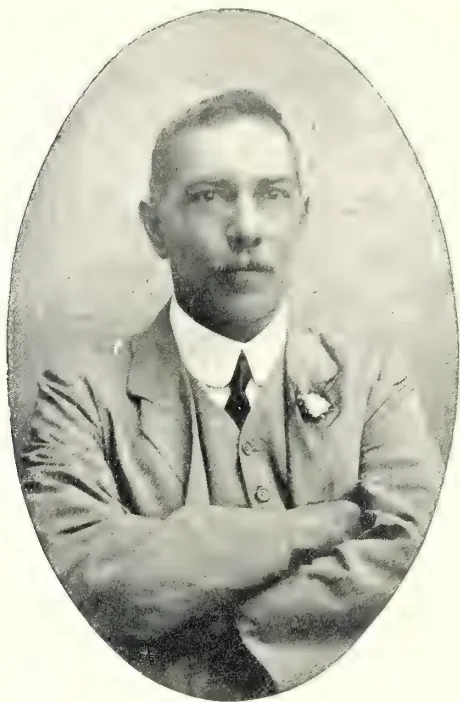
A black and white oval portrait of a man with a mustache, wearing a suit and tie, with his arms crossed. He is looking directly at the camera.C. DRIEBERG, B.A., F.H.A.S.
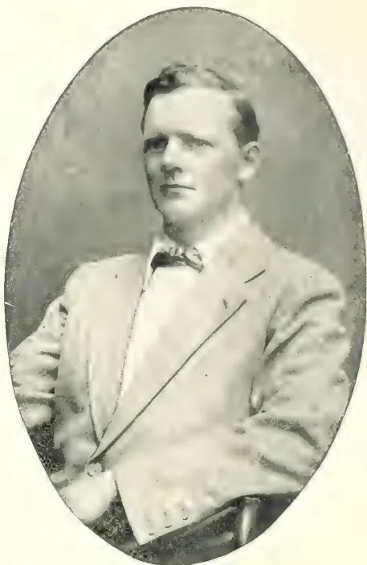
A black and white oval portrait of a man in a suit and bow tie, looking slightly to his left.E. B. DENHAM, B.A., C.C.S.
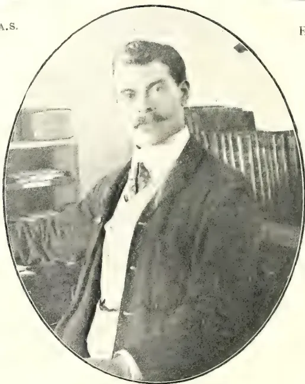
A black and white oval portrait of a man with a mustache, wearing a suit and tie, standing in front of a building with a fence.H. F. MACMILLAN, F.L.S., F.R.H.S.
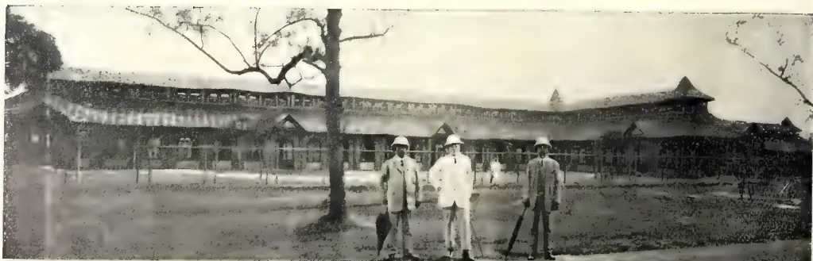
A black and white photograph showing a long, low building with a covered walkway, identified as the Main Pavilion. Three men in suits and hats are standing in the foreground on a grassy area.VIEW OF MAIN PAVILION.
VIEW OF MAIN PAVILION.
NOVEMBER, 1912.]381The Section devoted to Low-country Products as distinct from the Estate Products or Up-country planting products (Rubber, Tea, Cocoa, &c.) included as its main sub-section exhibits representing the coconut industry, viz., coconuts in and out of the husk (judged for size and thickness of kernel or meat), largest bunch, king coconuts (chiefly used for drinking), collection of varieties, copra (sundried and kiln dried), poonac or coconut cake turned out by the chekku or native bullock-mill and made by machinery), coconut oil (ordinary and white), yarn and rope, fibre (bristle and mattress), dessicated coconut of various grades (representing an industry by itself), arrack or coconut spirits, and a general collection of the product of the coconut palm.
The Exhibits under all these heads were numerous and of good quality so that competition was keen, and the liveliest interest evinced in the decision of the judges.
In fact the demand on the available space was so great that the less perishable exhibits, consisting of unhulled nuts, had to be accommodated in the open—particularly the collections of different varieties (of which one exhibitor sent not less than 32) and the bunches.
In addition to the exhibits in the main pavilion, the Low-country Products Association justified its designation by an interesting collection housed in its own pavilion, which was well patronised by visitors. The success of this excellent representation must be credited to the energetic Secretary of the Association, Mr. H. L. de Mel, who was kept very busy answering questions and furnishing information.
Mention should also be made of two “coconut-houses” erected by Mudaliyar A. E. Rajapakse and Mr. Hector W. F. Dias, both of which were very attractive trophies. These miniature pavilions were entirely constructed of materials derived from the coconut palm, and their contents illustrated the multifarious uses to which the different parts of the palm could be put.
The awards for low-country products were particularly liberal and consisted of no less than 6 cups, 3 gold medals and 25 silver medals. The cups and gold medals for the coconut exhibits were distributed as follows:—
The Hon. Mr. A. J. R. de Soysa, Colombo.
Cinnamon.The competition for the cinnamon prize at shows has always been very keen, not because the cinnamon industry is at present in a very thriving condition but because it has been represented from the time of the British occupation (when it was one of the most paying products) by a few important families who have always been rivals in the trade.
The catalogue called for 5 lb. samples of the following grades:—five grades of fine, four grades of ordinary and chips. This will give some idea of the care with which cinnamon is manufactured or rather prepared for the market, involving very careful selection and treatment of the bark, for the preparation of the finer qualities. The first prize consisting of a cup went to Mudaliyar A. E. Rajapakse of Kadirana Estate, Katunayake, in the Negombo district, which is one of the oldest and best-known cinnamon districts of the Island and include some of the most notable estates such as Goluapokuna, Wester Seaton, Kadirana and Ekella, associated with the names of Nicholas, Schrader, Piachaud, Rajapakse, Jardine, Driemberg and De Mel.
One other item which elicited considerable competition was the general collection of the products from a low-country estate (below 1,650 ft). This gave great scope to exhibitors and the collections sent in were as full as they were interesting. The cup offered for this collection went to Mr. R. S. Peiries, The Alcove, Colombo.
We take the two following tables from the India Rubber World for October, 1912. It will be seen that the rate of consumption has increased from 88,000 tons in 1911 to 99,564 for 1911-12. From Table A it is seen that the United States takes nearly one-half of the world's production of rubber; but London is the principal rubber market of the world.
Table A. PRODUCTION AND CONSUMPTION FOR 1911.(S. Figgis & Co. London.)
| Actual production in 1911. | Actual consumption in 1911. | ||
|---|---|---|---|
| Tons. | Tons. | ||
| Brazil ... .. | 39,000 | America and Canada ... .. | 42,000 |
| W. Africa ... .. | 15,000 | England ... .. | 12,000 |
| E. Africa, Penang Bor- neo and Rangoon ... |
5,500 | France ... .. | 8,000 |
| Assam, and Madagascar | Russia ... .. | 8,500 | |
| America and Mexico ... | 2,500 | Italy ... .. | 2,000 |
| Guayule ... .. | 9,200 | Japan and Australia ... | 1,500 |
| Plantation ... .. | 14,000 | Germany and Australia ... | 14,000 |
| Malaysian and extracted for Jelutong ... .. |
2,800 | Total ... .. | 88,000 |
| Total ... .. | 88,000 | ||
| Para Grades Tons. |
Medium Grades Tons. |
Total. | |
|---|---|---|---|
| Arrivals (production) ... | 40,953 | 54,309 | 95,262 |
| Deliveries (consumption) ... | 44,194 | 55,370 | 99,564 |
The following are a few particulars by the Chief of the Botanic Section of the "Secretaria del Formento" in Mexico, printed in the Bulletin of Agricultural Intelligence and of Plant-Diseases for September, 1912, regarding a new rubber plant. This tree, unlike others, grows in hilly country in dry and stony soils. It is called by the natives "Cacalo-xochitl" and belongs to the genus Plumeria of the family Apocynaceæ. All the known species of this family in Madagascar produce a latex-like juice; but Plumeria rubra is the only one known up to now as a producer of rubber in sufficient quantity to be worth extracting.*
The trunk, from 6½-16 feet high, has a girth of from 8 to 24 inches; the bark is rough and of a light gray colour; the leaves are opposite; the flowers are white and large and the root is used by the natives as a purgative. Plumeria is common in many regions of Mexico and Central America, it grows under the best conditions in sandy, stony and rocky soils on the mountains at a height of 1,000 to 4,000 feet, in dry regions where there is an average yearly rainfall between 30 and 50 inches.
The following composition was found on analysing the coagulate of the latex :—
| Resin | ... | ... | 21.9 % |
| Moisture | ... | ... | 15.7 % |
| Rubber | ... | ... | 25.5 % |
This tree is easily reproduced by slips, and in the Botanical Station of Tezonapa, four weeks after a branch had been planted, new leaflets were observed. This plant is capable of producing a good quality of rubber. Investigations are being made and from the experiments carried out at the Botanical Station of Tezonapa indications are already available as to the best method of tapping. The ordinary system of incision would not give good results. The young parts of the plant contain a quantity of rubber in excess of that of the trunk. Lopping off the heads of the plant is advisable and extraction must be made from branches thus pruned; this pruning improves the condition of the tree and increases the growth of the branches.
The Director of Agriculture, Bengal, reports on 21st September, 1912, that the final figures for acreage show an increase in Bengal of 202,250 acres. Bihar returns an increase of 40,222 acres, and Assam an increase of 4,922. The grand total of increase for the three provinces is, 247,394 acres and the percentage of increase 7.9 per cent.
The final total outturn for Bengal only works out to 8,502,135 bales. Bihar returns an increase of 87,412 bales and Assam a decrease of 12,930 bales.
* Landolphia Kirkii and other Landolphias, the sources of the principal African rubber, as well as Funtumia elastica the Uganda and West Coast rubber, and Mascarenhasia elastica the "Goa" rubber of the East African Coast all belong to the natural order Apocynaceæ. Neither Plumeria rubra nor Plumeria alba have in Ceylon been found to yield rubber in paying quantities.—EDITOR T.A.
384[NOVEMBER, 1912.The following tables are from the Report of the Director of Agriculture, Jamaica, for the year ended 31st March, 1912:—
| IMPORTED COWS, 1911. | ||||||||||
|---|---|---|---|---|---|---|---|---|---|---|
| Order. | Breed. | Age. | Lbs. Milk. |
Average yield Qts. |
Max. yield Qts. |
Days in Milk. |
Value of Milk. | |||
| £ | s. | d. | ||||||||
| 1 | Guernsey ... | 7 | 6,937 | 8.8 | 12.2 | 302 | 51 | 16 | 11 | |
| 2 | " ... | 6 | 5,470 | 6.9 | 10.2 | 305 | 43 | 17 | 0 | |
| 3 | Holstein ... | 12 | 5,057 | 7.9 | 9.0 | 284 | 40 | 10 | 8 | |
| 4 | Ayrshire ... | 7 | 5,044 | 6.6 | 9.7 | 294 | 40 | 8 | 8 | |
| 5 | Jersey- Guernsey. |
8 | 4,740 | 5.4 | 8.4 | 340 | 37 | 19 | 9 | |
| 6 | Guernsey- Canadian. |
8 | 4,459 | 4.9 | 8.5 | 348 | 35 | 15 | 5 | |
| 7 | Guernsey- Ayrshire. |
8 | 4,425 | 6.3 | 9.8 | 271 | 35 | 9 | 4 | |
| 8 | Guernsey ... | 10 | 3,471 | 4.5 | 8.0 | 300 | 27 | 16 | 2 | |
| 9 | " ... | 11 | 2,458 | 2.8 | 4.5 | 340 | 19 | 17 | 1 | |
| NATIVE COWS, 1911. | ||||||||||
| 1 | Indian ... | 8 | 5,047 | 7.4 | 11.5 | 269 | 40 | 19 | 11 | |
| 2 | Jersey ... | 7 | 4,095 | 5.3 | 7.9 | 300 | 32 | 15 | 3 | |
| 3 | Unknown .. | 8 | 3,957 | 5.3 | 8.5 | 287 | 31 | 14 | 4 | |
| 4 | Angus ... | 8 | 3,946 | 5.3 | 9.0 | 289 | 31 | 13 | 2 | |
| 5 | Jersey ... | 6 | 3,640 | 4.7 | 7.1 | 296 | 29 | 3 | 6 | |
| 6 | Holstein . | 8 | 2,615 | 4.0 | 5.3 | 253 | 21 | 0 | 2 | |
| 7 | Jersey ... | 8 | 2,538 | 3.6 | 5.5 | 269 | 19 | 16 | 3 | |
| 8 | Shorthorn | 7 | 2,187 | 4.0 | 7.1 | 210 | 17 | 10 | 6 | |
| 9 | .. ... | 8 | 2,093 | 4.1 | 6.6 | 196 | 16 | 16 | 5 | |
| 10 | Barbadian . | 6 | 1,908 | 3.3 | 10.7 | 219 | 15 | 5 | 10 | |
| 11 | Devon ... | 8 | 1,795 | 3.1 | 4.2 | 221 | 14 | 9 | 9 | |
| 12 | Shorthorn | 7 | 1,750 | 3.2 | 5.0 | 205 | 13 | 12 | 0 | |
| 13 | Unknown .. | 7 | 1,490 | 4.0 | 6.2 | 144 | 11 | 18 | 10 | |
The following are the acreages under the various crops as reported by the Director of Agriculture, Bengal:—
The total area sown with the early crop is reported to be 49,250 acres against 60,900 acres last year, the decrease being due to scarcity in Hill Tippera and the Chittagong Hill Tracts.
The area sown with late cotton up to date is reported to be 500 acres only as compared with 1,800 acres last year.
The total area sown up to date is reported to be 21,200 acres. Sowings are still reported to be going on in parts of Hooghly, Murshidabad and Nadia. Last year the area under the crop was estimated at 22,500 acres.
The area sown this year with different monsoon rice is reported to be 6,153,500 acres against 6,294,100 acres last year, the normal area being 6,732,200 acres. Of these 5,002,800 acres are alone reported to be under autumn (aus) rice this year against 5,092,200 acres last year, the decrease being reported to have been chiefly due to extension of jute cultivation.
NOVEMBER, 1912.]385In dealing with this subject the Journal of the Board of Agriculture for October, 1912, says:— The report of the Chief Inspector of Alkali Works for 1911 (H. C. 197, 1912) shows that there were 570 works or separate processes for the manufacture of sulphate and muriate of ammonia in England and Wales, as compared with 543 in 1910 and 536 in 1909, the number having steadily increased from 440 in 1904. In Scotland the number of such works was 106. There were also 56 gas liquor works in England and five in Scotland.
Sulphate of ammonia is chiefly obtained as a bye-product from coal. When this is treated for the production of coal-gas or for the manufacture of coke used in iron smelting, an “ammoniacal liquor” results, which forms the raw material for the manufacture of ammonium salts. The distillation of the bituminous shales used in the Scotch paraffin industry also yields a certain amount, and the ammonia produced in other manufactures in which coal and similar substances are used, in iron works, from producer gas plants, and from crarbonising, is also collected. The quantity of sulphate of ammonia produced in the United Kingdom is shown in the following table:—
| Source. | 1911. | 1910. | 1909. |
|---|---|---|---|
| tons | tons | tons | |
| Gas works ... .. | 168,788 | 167,820 | 164,276 |
| Iron works ... .. | 20,121 | 20,139 | 20,228 |
| Shale work ... .. | 60,765 | 59,113 | 57,048 |
| Coke-oven works ... .. | 105,343 | 92,665 | 82,886 |
| Producer-gas and carbonising works (bone and coal. ... |
29,964 | 27,850 | 24,705 |
| Total ... .. | 384,976 | 367,587 | 349,143 |
These figures show an increase over the production of 1910, with the exception of iron works, which remained practically stationary. The supply from coke ovens shows an increase of nearly 13,000 tons. In 1904 the production in coke-oven works was only 20,000 tons. The total production in 1911 was 385,000 tons and 292,000 tons were exported, so that the balance remaining for home consumption for all purposes amounted to 93,000 tons, as compared with 84,000 tons in 1910 and 85,000 tons in 1909. The exports of sulphate of ammonia are principally to the United States, Japan, Spain, Dutch East Indies, British West Indies and Italy.
The largest industrial source of sulphate of ammonia is still the widely distributed and important manufacture of illuminating gas from coal but the relative proportion as compared with the total production is becoming less owing partly to advances in methods of gas manufacture which permit of a greatly increased production of gas per ton of coal carbonised and partly to the rapid growth of the more recent processes for recovery of bye-products from coke-oven gases and from producer gas,
49 386[NOVEMBER, 1912.During the last year much attention was attracted to methods by which ammonia present in crude gas, either from the gas retort or from the coke-oven, could be obtained in the form of a solid salt fit for sale but without the necessity of providing sulphuric acid as is the case at present in all works producing sulphate of ammonia.
In the table below are shown the imports of the materials used in the fertiliser trade, the principal being mineral phosphates. A proportion of the nitrate of soda imported is used in the manufacture of sulphuric and nitric acids.
| 1911. | 1910. | 1909. | |
|---|---|---|---|
| Tons. | Tons. | Tons. | |
| Guano ... | 34,124 | 20,395 | 20,321 |
| Mineral phosphates | 493,413 | 455,593 | 451,807 |
| Nitrate of soda ... | 128,487 | 126,498 | 90,207 |
The figures show considerable increases compared with 1910.
The number of chemical manure works under inspection in 1911 was 159, as compared with 167 in 1907. In Scotland the chemical manure works numbered 37, or one less than in 1910.
The Journal of the Board of Agriculture for October, 1912, has an article on Co-operative Agricultural Distributive Societies. These Societies undertake the collective purchase of the manures, seeds, implements, etc., required by the members and the collective sale of their produce. There were 145 such societies at work in 1909 in England and Wales, and 31 in Scotland as compared with 4 and 1 respectively in 1895. In England and Wales in 1909 the membership was 13,589, the total sales were £885,683, and the profit £8,140; while in Scotland in the same year the membership was, 3,860, the sales £227,141, and the profit £1,948.
With regard to egg and poultry societies there were, at the end of 1909, fifteen such societies in England and Wales, with a membership of 986 and total sales amounting to £15,453 while in Scotland there were two such societies with a membership of 89 and total sales amounting to £438.
Co-operative Productive Societies are occupied in buying, manufacturing and selling the produce of the individual members, and their operations are chiefly confined to the dairying industry. In 1909 there were 18 such societies in England and Wales with a membership of 1,048, a share capital of £20,356, total sales amounting to £66,506 and a profit of £640, as compared with 7 societies in 1895 with a membership of 665, share capital of £13,597, total sales amounting to £17,544 and a loss of £120. In the case of Scotland 5 societies were at work in 1909 against 1 in 1895, and the sale had increased from £11,786 in 1895 to £37,317 in 1909. There was a loss on the working of these Scottish societies in both years.
An important position among these societies is held by the cattle and pig insurance societies. Their number and work have, however, increased only very slightly, viz., from 55 with a membership of 3,424 and reserve funds of £6,599 in 1899, to 57 societies with a membership of 3,954 and reserve funds of £7,671 in 1909 in the United Kingdom.
NOVEMBER, 1912.]387Early in 1906 the Secretary of the Ceylon Agricultural Society (Mr. E. B. Denham) procured through the Principal of the School of Agriculture, Ghizeh, 28 date suckers made up of four varieties:—
(1) SIWI—a comparatively short but thick and fleshy amber-yellow date. It is not dried but pounded and kneaded together into a kind of paste or cake which constitutes an important article of food amongst the poor. It comes late in season.
(2) BIRKAWI or HAYANI—a long red date becoming almost black when completely ripe. It comes to maturity early and is eaten fresh.
(3) SULTANI—a short date with a reddish end and yellow or bright brown base. It is late in season, requires much heat for ripening, dries easily and is eaten dried. The flesh is somewhat thin and the seed bulky.
(4) AMHAT—a comparatively small and somewhat early date whose skin easily peels off. When ripe it becomes dull in colour, very sweet and soft. Owing to their richness in sugar these dates ferment easily. It is one of the best varieties and is extensively eaten.
Owing to delay in transit and failure to deal promptly with the plants on their arrival, they were quite unfit for propagation purposes and, though carefully looked after at the places to which they were despatched (Jaffna, Mullaitivu, Mannar and Hambantota), did not survive.
The trial must be put down as an unsatisfactory one, as the suckers were not given a fair chance.
The presence of the date palms in Peradeniya and elsewhere proves that the palm will grow in the island. The only question is whether it could be induced to mature fruit in suitable localities, if such exist. To ascertain this it will be necessary to make a further trial.
Fletcher in his paper on the date palm (Agricultural Ledger, 1906, No. 1) makes the following statement as to climatic conditions.—“It is not in every portion of the sub-tropical zone, comprised between the parallels of 20° and 35°, that the date palm will ripen fruit. This occurs only where the summer is both hot and dry and the winter not too cold. Thus in the West Indies and Florida the humidity of the air is too great for fruit to ripen though the trees grow well; in North-West Mexico, again, sea breezes keep the air too moist and cool, while in the valleys of Lower California large quantities of dates are grown.”
As regards humidity and rainfall the same authority says:—“Rainfall during the flowering and fruiting period should not much exceed 5 inches. It must not, however, be concluded from this that the palm will grow if this amount of rain is the only source from which its roots can obtain moisture during the period or, during the year, say twice this amount i.e., 10 inches. For instance, the annual rainfall at Cairo is about 1 inch, and this is insufficient to support any kind of vegetation; date palms, however, grow and ripen fruit there well. This result is only attained by irrigation. Irrigation is an absolutely essential accompaniment to cultivation of the date palm. For, if the rainfall is sufficient to allow of the growth of the tree with this as its only source of water, it will be too great to allow the flowers to be pollinated well and the fruit to ripen.
388[NOVEMBER, 1912.This unique requirement of date culture with regard to water lies at the root of all the failures to extend its cultivation in India, as will be pointed out later."
On the subject of sunshine and temperature we read: "The requirements of the date palm in regard to temperature are very peculiar as, when in a dormant condition it is not injured by temperatures as low as 20°F., while no upward limit to its endurance has been found. Indeed, extremely high temperature is absolutely necessary to enable it to ripen its fruit and neither flowers nor fruit are formed unless the mean temperature rises above 64.5°F. If the mean temperature for the fruiting season (May to October) is above 70°F. and for one month at least above 80°F., early varieties of dates will ripen fruit, but for the moderately late varieties these temperatures must be above 75°F. and 85°F. respectively, and for best and latest 84°F. and 94°F. Further, not only are these temperatures in the shade necessary, but the tree must be exposed to the direct rays of the sun and will not grow under the shade even when young."
The question as to whether date planting would be profitable on our low dry country must be considered an open one. There is no instance as far as we are aware of successful date growing on a plantation scale so near the equator, but yet certain favourable conditions would seem to be present and available which warrant a trial; e.g., heat, dryness (in certain parts), irrigation. Does the temperature drop low enough for the tree to have a period of rest? Is a period of rest necessary for success? These are two questions that require clearing up.
The Exhibition held in New York from September 23rd to October 3rd last is the third International Rubber and Allied Trades Exhibition.
It is to the credit of Ceylon that the very first Exhibition specially devoted to Rubber was held at Peradeniya in 1906 when Sir Henry A. Blake was Governor. The India Rubber World, referring to it says:—"Who will deny that the seed sown has germinated and fructified in the immense extension which has since marked the rubber industry?"
Then followed the London Exhibition of September 1908—the first of the International Series. The second was also held in London in 1911. In the case of the present, as of past exhibitions, the Organising Manager is Mr. A. Staines Mander, who is ably assisted by his Secretary Miss D. Fulton.
The Commissioner for Ceylon at the New York Exhibition is Mr. F. Crosbie Roles, Editor of the "Times of Ceylon," who, though a journalist by profession, has placed himself in close touch with the planting industry of the Island. Mr. Roles was one of the Commissioners at the St. Louis Exhibition in 1904, and has visited the States on several other occasions, so that he is well acquainted with the interests of the American people. The Ceylon section, which is illustrative of Kandyan architecture, will fully demonstrate the details of growing, gathering and preparing rubber as carried on in this Colony.
The programme of events in connection with the Exhibition promises to provide a feast of information which, when printed and published, should prove of great utility to all those interested in the industry who had not the opportunity of being present at the conferences and discussions.
NOVEMBER, 1912.389The Report of the Director of Agriculture, Nyasaland Protectorate, for the year ended 31st March, 1912, has been issued. The acreage under tobacco in the Protectorate was 4,507 as compared with 3,274 in the previous year. The export amounted to 2,146,615 lbs. which showed an increase of 441,978 lbs. in weight. The crop at present being harvested covers an area of 7,411 acres.
The reports of experts show that the year under review was not a good one for quality, and this can be attributed to a marked absence of sunshine to mellow and ripen the crop. There was a considerable quantity of leaf which showed up green after curing.
The Director in the report says that from conversations with some leading brokers in London he formed the opinion that good ripe Mahogany with body was in greater demand than thin bright leaves of good colour for cigarette manufacture.
No supply of Virginian tobacco outside the American crop is attracting so much attention as the Nyasaland product and this can be readily understood when one realises that the Nyasaland crop of over two million pounds is a considerable factor in the tobacco market, as the total weight of tobacco cleared for consumption in the United Kingdom during 1911 was 91,594,642 lbs.
There is some difficulty in getting manufacturers to try Nyasaland tobacco as a constituent for mixtures, though some firms who had given the tobacco a fair trial in the majority of cases had placed larger orders with brokers this year than last.
It is always a difficult matter to introduce a staple from a new country into a market which for years has drawn its supplies from one or two recognised centres of production. People in new countries have an erroneous idea that buyers are waiting expectantly for their crops whereas the truth of the situation is that brokers frequently have to use tact and persuasion to get manufacturers to test the value of such products.
The moisture content in tobacco should not exceed 12 to 13 per cent, though in some consignments of Nyasaland tobacco it exceeded 20 per cent., and, as duty is paid by weight, manufacturers are not inclined to purchase tobacco containing 20 per cent. as they have to pay duty on the extra water.
It was also pointed out that tobacco packed in double canvas was better than when paper and canvas is used.
The year has been a disastrous one for cotton-growers in the Shire Highlands where abnormally sunless weather prevailed throughout the maturation period of the crop.
390[NOVEMBER, 1912.The prospects were encouraging in November and December as the seasonable rains gave on a whole an even stand of young plants, but as the season continued the weather remained dull and sunless with the result that many of the flowers became diseased and shed leaving the trees practically without fruit. The damage was increased by insect attack the most formidable pests of the season being boll-worms and aphis; under such conditions it is not a surprise that there was a small percentage of first grade cotton.
The cotton exported amounted to 3,392 bales of 400 lbs. lint as against 4,342 in the previous year and the acreage under European cultivation was 23,332 as compared with 12,752 in 1910-11. The failure of last season's crop and the scarcity of labour discouraged European planters from extending their cotton acreages. The crop now approaching harvest covers an area of 24,155 acres, which is only 823 acres more than in the year under review.
The best Nyasaland cotton had a steady demand from 7·25d. to 8·50d; second quality selling at the prevailing American "Midland" prices of 5d. to 6·50d. per lb.
The continuous carrying out of seed selection on all estates is worthy of most serious endeavours as it is the only way to maintain and improve the quality of local cotton. While selecting we should try to get as much cotton as possible with a staple of 1" or over; as shorter staple of 1" to 1" may make a difference of d to 1d per lb; strength and lustre should also be selected for, the higher the lint percentage, the more profitable the crop.
"When in Manchester I was requested to draw attention to the undesirability of putting up cotton in small bales," says the Director of Agriculture of the Nyasaland Protectorate "as apart from the extra expense of canvas and transport, planters on the average lost d. to d. per lb. when the cotton was sold, as similar cotton packed in standard bales of 400 lbs. always sold better than cotton in small bales;" and in another paragraph he remarks that he understands the British Cotton Growing Association re-bale and compress cotton, using planters' own canvas from the small bales, at £2 2s. 6d. per ton and, supposing an increase of d. per lb. is received for the cotton, as the result of re-baling, the transaction is profitable as in addition there is a considerable saving in freight.
In spite of the adverse climatic conditions the industry continues to increase in popularity with the natives, and the returns for the year show a satisfactory increase of 270 tons seed cotton.
The following figures show the progress of the native cotton industry from the year 1908-9:—
| Tons seed cotton. |
Bales of 400 lbs. lint (27% of seed cotton. |
||
|---|---|---|---|
| 1908/9 | ... | 130 | ... 196 |
| 1909/10 | ... | 220 | ... 332 |
| 1910/11 | ... | 692 | ... 1,046 |
| 1911/12 | ... | 962 | ... 1,454 |
University of the Philippines
College of Agriculture,
LOS BANOS, October 22nd, 1912.
The Editor of the Tropical Agriculturist,
Colombo, Ceylon.
Dear Sir,—I note in your issue of September, 1912, pages 255 and 256, some observations regarding the need of a Tropical College of Agriculture, and the statement that "Neither Great Britain nor the United States of America can be said to have a Tropical Department worthy by the name, attached to any of their Agricultural Colleges." This is probably literally true, as the Philippines are not, strictly speaking, a part of the United States, and the University of the Philippines is supported entirely from the revenues of the insular Government. There is, however, the College of Agriculture of this University operating under the American flag, thoroughly well established with some 280 students and more than three years of work to its credit. I believe that it accomplishes exactly the end you desire to be accomplished by a Tropical College of Agriculture, and that the instruction given in it covers sufficiently closely that, which is desired in Ceylon and elsewhere in the tropics, so that students trained here would be found well trained for use in other tropical countries.
However, I do not, for a moment, think that the presence of a well equipped college in the Philippines which has already demonstrated that it can give a good education in Tropical Agriculture, is to be entertained as a reason for not establishing similar institutions in other tropical lands. On the other hand, the demand which has been shown here for instruction in tropical agriculture is the best possible reason for believing that similar institutions will succeed elsewhere. This college opened its doors in 1909, and during the first year had 55 students. The attendance was 95 the second year, 177 the third year, and is now, as already stated, more than 280. The demand for admission promises to be so great next year that the proposition of limiting the attendance seems to be seriously considered. There is such an industrial demand for the graduates that, except in the case of a few individuals who are educated under contract to enter the Government service, none of them have so far been willing to do so. I do not imagine that there is such a demand for agricultural education in Ceylon or in any other tropical British Colony as there is in the Philippines, but the success which has attended the work of a College of Agriculture here should certainly be a great encouragement to those interested in this project elsewhere.
Very respectfully,
E. B. COPELAND.
DEAN, COLLEGE OF AGRICULTURE.
[Professor Copeland's interesting account of the success of the Philippines College of Agriculture affords, as he suggests, great encouragement for Ceylon.—ED. T.A.]
392[NOVEMBER, 1912.The three palms that are tapped for toddy in Ceylon are (1) the Coconut (Cocos nucifera), (2) Kitul (Caryota urens), and (3) Palmyrah (Borassus flabillifer).
The following is a description of the process of tapping for the production of toddy, which is nothing more or less than the juice of the tender flower (or inflorescence) of the above mentioned palms:—Before the flower opens, and while it is still encased in its sheath, it is prepared for tapping by the toddy drawer who bruises it with gentle taps of a small mallet or piece of bone, repeating the operation till the juice is ready to flow. He then cuts off the end of the flower and ties a pot to receive the juice as it exudes drop by drop. The operation is repeated daily, generally in the morning and evening; a thin slice being cut off the end of the spathe on each occasion to excite and allow of the flow of sap. This sap when it first falls into the pot is entirely free from fermentation and highly charged with sugar, the saccharometer generally reading about 1,060. Unless special precautions are taken to prevent it, vinous fermentation soon sets in and continues till all the sugar is converted into alcohol. The method adopted to prevent fermentation is to coat the pot internally with fresh lime. If the toddy is left long enough acetic fermentation will follow with the production of vinegar. Fermentation may be hastened by the introduction of ferments or by the addition of fermented toddy. It may be delayed by putting into the clear pot before it is hung up the bark of the Hal (Vateria acruniata) or Aukenda tree (Achrynychia laurifolia). Fresh fermented toddy is known as “sweet toddy” and fermented toddy is called “sour toddy:” but the latter term applies to liquor which varies much in alcoholic contents and may contain as much as 10 per cent. alcohol.
Sweet toddy is boiled down for preparing treacle (locally called honey), and jaggery or palm sugar, while fermented toddy is chiefly used for the distillation of arrack.
The method of distillation as generally followed is of the primitive pot-still type and depends on rule of thumb, no testing instruments being employed.
Our illustrations show:—
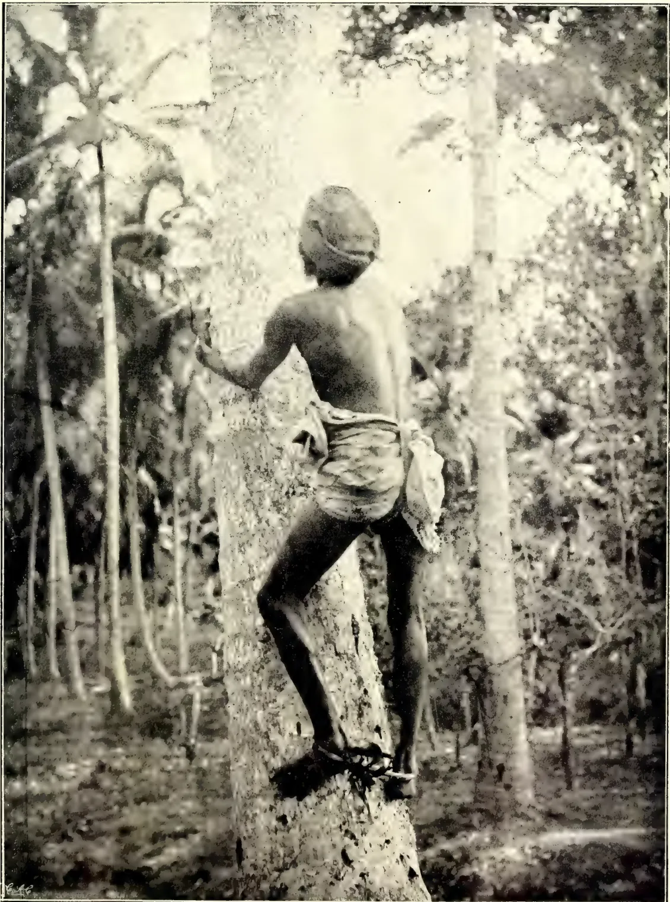
A black and white photograph showing a person from behind, climbing a tall coconut tree. The climber is shirtless and wears a light-colored loincloth. They are positioned on the right side of the tree trunk, with their left hand reaching up to grip a branch. The background is a dense tropical forest with various trees and foliage. The image is framed by a thin black border.COCONUT CLIMBER.
Page 1 of 1
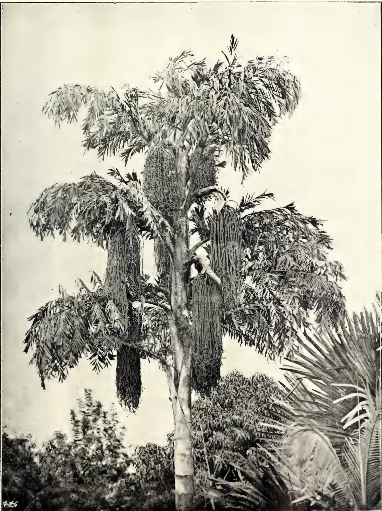
KITUL PALM (CARYOTA URENS).
This image is a scan of a blank page. The paper has a light beige or cream-colored tint. There are some very faint, blurry vertical streaks and minor variations in color across the surface, which appear to be scanning artifacts or imperfections in the paper itself. No text, lines, or other markings are present.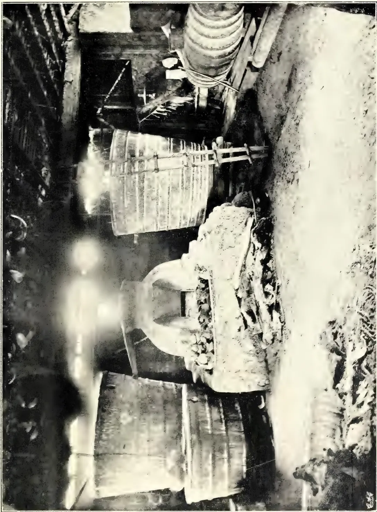
A black and white photograph of an Arrack distillery. The scene is filled with large, cylindrical wooden barrels, some of which are stacked. In the center, there is a complex distillation apparatus with a large, arched metal structure. A person is visible in the background, working near the barrels. The ground appears to be dirt or gravel, and the overall atmosphere is industrial and rustic.ARRACK DISTILLERY.
This image is a scan of a blank page. The paper has a light cream or off-white color with a slightly textured appearance. There are a few very small, faint dark spots scattered across the surface, which appear to be scanning artifacts or minor imperfections in the paper. No text, lines, or other markings are present. NOVEMBER, 1912.]393I would like to preface my remarks with a few words about the beginning of this ploughing movement. Until 1909, fields at Tissa were prepared by puddling with buffaloes. In that year almost all the buffaloes in the district died of rinderpest and the cultivators found themselves in a serious pass. Mr. L. S. Woolf, then the Assistant Government Agent of Hambantota, who took a keen interest in the agriculture of his district, represented matters to the Agricultural Society and asked for assistance.
The Secretary, with the co-operation of Mr. W. Hunter at that time connected with Messrs. Walker, Sons & Co., selected a few light iron ploughs and sent them to the Hambantota district in charge of three Agricultural Instructors with a view to demonstrate to the cultivators the working of the implements. A series of these demonstrations was given at various centres and three types of ploughs—"Pony," "Climax," and "Meston"—were used drawn by cattle. As a result a large number of these ploughs were bought by the cultivators and the situation was saved.
The use of iron ploughs has, however, gradually decreased but in their place the native wooden-plough which, had hitherto never been used, came to be adopted as being of lighter draught and better suited to the stamina of the oxen.
As a result of the success of the demonstrations at Tissa applications came from all parts of the Island—Kalutara, Badulla, Ratnapura, Kurunegala, Kandy, etc., asking that ploughing demonstrations be given.
The most systematic work in this direction was done in the Rayigam Korale with the assistance of Mudaliyar Wirasinghe, and the "Meston" plough (weighing 28 lbs.) came into favour. With a view to ascertaining whether the improved tillage gave a better yield, five plots were prepared with the "Meston" and five others with the native plough. The following table gives the results of these trials:—
| No. of Plot. | Area in acres. | Kind of Plough used. | Yield of Grain in Bushels. | Yield of Grain from an acre in Bushels. | Bushels in favour of iron plough. |
|---|---|---|---|---|---|
| 1 A. | 1 | Native | 38 | 38 | — |
| 1 B. | 1 | Meston | 48 | 48 | 10 |
| 2 A. | 1 | Native | 34 | 34 | — |
| 2 B. | 1 | Meston | 38 | 38 | 4 |
| 3 A. | Native | 8 | 16 | — | |
| 3 B. | Meston | 10 | 20 | 4 | |
| 4 A. | Native | 45 | 30 | — | |
| 4 B. | Meston | 68 | 45 | 15 | |
| 5 A. | Native | 18 | 36 | — | |
| 5 B. | Meston | 18 | 36 | nil |
N. WICKRAMARATNE,
Agricultural Instructor.
50 394[NOVEMBER, 1912.The following is from the opening address by T. H. Middleton, M.A., President of M. Section. Interest in the practice of improved husbandry was first aroused in England by the books of Fitzherbert. The extent to which this author stimulated agriculture may be inferred from the appreciation with which his works were received in his own day, and copied by others for a century. He himself does not appear to have been acquainted with the classical writers. He describes the English practice with which he was familiar; he quotes frequently from the Scriptures and refers to early religious works, but only in writing of animal diseases, when he cites the "Sayinge of the French man," is there any indication that he was influenced by foreign authors. Fitzherbert's "Boke of Husbandry" and "Surueyenge" while they are free from the direct influence of Roman writers, show us, nevertheless, that the English agriculture of his day owed much to Roman traditions. The careful business methods and accounting of the farm bailiffs of the Middle Ages, with which Thorold Rogers has acquainted us, were the methods which Fitzherbert learned and counselled, as they were the methods which Columella taught.
It was between 1523, when Fitzherbert's "Boke of Husbandry" was first printed, and 1557, when Tusser published his "Points of Good Husbandry," that the classical writers began to exert a direct influence on English farming.
Both in England and Scotland the first impetus towards progress was economic in its character, and throughout the seventeenth and eighteenth centuries, economic causes were constantly accelerating the improvement of agriculture; but we must not make the mistake of supposing that a rise in prices necessarily brings about improvements in husbandry. A motive for improvement is provided and more labour may be drawn to agriculture, but it does not follow that there will be a real advance, and that there will be more food produced for the use of workers in other industries. Without changes of system, i.e., without improvements based on new discoveries, the effect of a rise of prices in a self-supporting country would merely be to alter the proportion of the population engaged in agriculture, and to form congested districts. This was the danger that threatened England early in the seventeenth and Scotland early in the eighteenth centuries; but fortunately for each country an intellectual revival followed close on the rise in prices, and attention was directed not only to the necessity for more food but to the need for improvements which would afford a surplus for the support of the industrial classes.
Within recent years the improvers of the eighteenth and early nineteenth centuries have been much criticised for their land policy, their enclosures and their treatment of labourers; but one thing at least the agriculturists of 1760-1815 saw more clearly than their modern critics—they recognised that if their country was to become a great manufacturing nation, more food must be grown; and to this task they applied themselves so successfully that, as Porter points out, the land of Great Britain,
NOVEMBER, 1912.]395which in 1760 supported about eight million inhabitants, in 1831 supported sixteen millions. When we reflect that the implements of husbandry were rude, that thorough drainage had not been introduced, that artificial manures (except crushed bones) were scarcely known, that oilcakes were scarce, that grain was too valuable to be given freely to cattle, that in bad seasons live-stock had to be starved so that men might be fed, that in good seasons prices fell rapidly, and with them farming profits, and that credit was difficult to obtain and interest high, those of us who know something about the ordinary work of the farmer can realise the strenuous efforts that must have been necessary to wring from land a sufficiency to feed this rapidly growing nation and to maintain it in health and comparative comfort. Even as late as 1836 Porter shows that it would have been impossible to feed any considerable part of the people on imported food. "To supply the United Kingdom with the single article of wheat," he says, "would call for the employment of more than twice the amount of shipping which now annually enters our ports."
Part of the additional food-supply was obtained by enclosing about seven million acres of land between 1760 and 1834; but as more than three times this area must already have been enclosed as much of the land enclosed after 1760 was of poor quality, and as all of it had formerly contributed in some degree to the food-supply of the country, it is obvious that between 1760 and 1834 the rate of production per acre must have been largely increased.
Improvements in the arts of agriculture cannot be rapidly introduced; there is first of all an experimental stage and when improved methods have been learned they pass slowly from district to district. Before any marked advance in the art can take place, there must therefore occur a period during which a foundation is being laid. It was about 1760 that our population began to increase rapidly and it was then that agriculturists were called upon to produce more food. As we have seen, they were able to double the food-supply in seventy years. It cannot be doubted that this marvellous feat was rendered possible by the pioneer societies of the preceding century, or that it was the spirit of the improver, which the early associations had fostered, that animated the men from whom Arthur Young and Sir John Sinclair learned. If in place of those enterprising agriculturists whose improvements are described in the reports of the first Board of Agriculture, our shires had been occupied by the dull-witted country gentlemen referred to by Lisle, or the "upstart sparks" condemned by Mackintosh, the history of this country must have been very different. Behind the military and naval victories which made Britain a great Power, was a commissariat supported by the agricultural classes. For the great industrial army which the genius of Arkwright, Watt and other inventors provided with employment there was raised an ever-increasing food-supply. Political and industrial development alike depended on the rate of increase of the population, and this again on the rate at which the means of subsistence could be raised from British soil.
Although the economic position has undergone a revolution there is still work for the improver; no longer indeed do our industrial classes depend for subsistence on the surplus products of the British farmer, but after a long period of forgetfulness once again it has been recognised that
396[NOVEMBER, 1912.a progressive agriculture is essential to the well-being of the nation. This is not the time to discuss the nature of the questions which press upon us to-day; but let us not forget that they are our questions. To this newly-formed section of the British Association has descended the task of the early associations; it is the privilege of its members to preserve and to hand down to their successors that spirit of the improver which animated alike the ancient writers of Greece and Rome and the British societies of the seventeenth and eighteenth centuries; and to-day we may take to ourselves the exhortation of Walter Blith, for his words apply to Section M. as they did to its predecessors, "from you, I expect and wait for more discoveries of some thing, I scarce know what to name it, which lies yet in obscurity, but I will call it the Improvement of the Improver."
The following is a copy of a notice received by the Department of Agriculture regarding the export of plants to South Africa:—
NURSEYMEN WITH SOUTH AFRICAN CUSTOMERS are hereby respectfully informed that plants, excluding bulbs and seeds, are admitted into the Union from overseas only under special permit. Permits are not given at all for conifers, or for eucalyptus, or acacia trees. They are freely given without regard to quantity for house palms, ferns, carnations, geraniums, chrysanthemums, orchids and many other tender plants; but are given only for ten plants of a variety in the case of ornamental shrubs. While for fruit bearing plants and roses and for trees in general, they are given only for varieties that are not procurable in the Union and that cannot be grown from seed, and for not more than ten of a kind. It is desirable that nurseymen refrain from filling any order in the absence of knowledge that a permit has been issued or is practically certain to be issued with respect to it. Applicants are supplied with permits in duplicate so that one copy may be sent with the order. Labels and INVOICES should invariably give the varietal names of trees shrubs, roses, climbers, etc., as otherwise the inspectors may not be able to connect the plants with the permits. In filling orders for the latest varieties of roses, and orders for other plants for which customers may say they are unable to get permits in advance of ordering owing to their not being able to give the varietal names, it is advisable to send to the customer a list of what varieties will be supplied a week or two ahead of despatching the plants. This action would admit of the customer getting a permit before the plants arrive and thus perhaps avoid serious delay in the delivery of the consignment.
Department of Agriculture,
Division of Entomology,
Box 513, Pretoria,
September, 1912.
To the ordinary individual a knowledge of the Seychelles is usually limited to the fact that it is the home of the double coconut (Lodoicea Seychellarum) of our museums, but recently these Islands have proved of more than ordinary interest to us from the fact that we gave them a Governor from our local Civil Service, and that last year they sent their Curator of Botanic Gardens here on a visit of investigation.
Mr. Dupont, whose name is familiar as a worker in Tropical Botany and Agriculture, was connected with the Colony of Mauritius before he went out to the Seychelles, and his report which is before us proves the thoroughness with which he carried out the mission upon which he was sent.
Mr. Dupont's tour in the East included visits to Mauritius, Karachi, Bombay, Poona, Madras, Colombo, Negombo, Chilaw, Heneratgoda, Veyangoda, Peradeniya, Hanwella, Mahailuppalama, Cochin and Calicut.
During his sojourn in the Island he visited some of the best coconut and rubber plantations, the Heneratgoda and Peradeniya Gardens and the Experiment Stations at Gangarooa and Mahailuppalama, besides the Stock Garden, Government Dairy and Training College.
Referring to the Royal Botanic Gardens, Mr. Dupont says:—"I think it pays a botanist or an agriculturist better to spend a month or even two at Peradeniya and collect information and plants than to go round the whole tropical world for the same purpose."
Nothing appears to have escaped the observation of our visitor who touches upon everything that came in his way, whether referring to Agriculture, Botany, Entomology, Manures, Education, Dairying, Poultry, Fishery, Brickmaking, Arrack distilling, Birds or Sericulture.
The following note on Cochin copra and oil should interest the coconut planter:—"Cochin copra is famous in Marseilles where it fetches always a higher price than the other copras. 17,500 tons of copra are exported from Cochin. The rainfall is 115 inches and the mean temperature 82°. The soil is cabooky with a sandy top layer like Ceylon low country soil. There is no reason to suppose that the soil and climate have an influence on the quality of copra but I soon learnt on visiting an estate outside the town that copra is purchased from the natives by the merchants who cause all the bad-looking material to be removed and turned into oil, with the result that only selected and pure white copra is exported. On that same estate I noticed a curious method of extracting oil from copra which is first disintegrated in the ordinary way and then placed in a battery of small metal mortars grooved in a particular way. Both the mortars and the pestles are grooved and the extraction is said to exceed 60 % being a little less than that obtained by hydraulic press. The Superintendent in charge of the estate mentioned to me that they stopped the use of the hydraulic press owing to the large consumption of filtering cloth which is expensive (Rs. 3.00 a yard) and used only two or three days. I noticed 48 mortars which took 1½ H. P. each from an engine of H. P."
398[NOVEMBER, 1912]Altogether Mr. Dupont's report of 56 pages (foolscap) makes an interesting record of hard travelling and close observation, and the large collection of plants he has introduced into the Seychelles as well as the useful information he has gathered should prove of great value to the Colony with which he is connected.
The following extracts are culled from a paper by Mr. W. Kennedy, printed in the Agricultural Journal of British East Africa for June, 1912. There are five kinds of wounds which may be classified as follows:—
If the wound is bleeding profusely when seen, the first thing to do is to stop hæmorrhage. If large blood vessels are injured they should be ligatured if possible, using aseptic silk or gut for this purpose. Where the bleeding is from small vessels the application of perchloride of iron (Liquor Ferri pechloridi) on a plug of tow is usually effective. The actual cautery may be used in some cases and another method is to pack the wound with aseptic cotton wool or tow and bandage it tightly in position.
If the animal is weak from loss of blood it is advisable to administer a stimulant such as whisky, pint in a pint of milk or sweet spirit of nitre and sal volatile, one ounce of each in a quart of water. (These doses are suitable for a horse or ox.)
As soon as the hæmorrhage has been stopped the next thing to do is to clip the hair off the adjacent parts and to thoroughly cleanse and disinfect the wound and surrounding parts. If a rifle bullet is lodged in a wound or under skin, it should be removed if possible, but where it is deeply situated it is often advisable to leave it alone as important structures may be injured in attempting to remove it. The same applies to small shot in a wound.
The following may be regarded as good disinfectant solutions for wounds:—
If the wound is an incised one, i.e., clean cut, after cleaning and disinfecting it should be stitched with aseptie silk, cat-gut, horse-hair or silk, and either bandaged with a piece of lint and bandage, or if in an awkward place to bandage, dressed liberally with an ointment such as Jeye's Fluid 1 part, Lard or Vaseline 20 parts, or Stockholm Tar in order to keep the flies off.
Should the wound be a lacerated one, full of sand and grit which cannot be entirely removed, two courses of treatment are open depending on the size, situation and nature of it. If the wound is very extensive and the muscles are badly torn it is advisable to stitch the severed skin in accurate apposition as far as possible, leaving an aperture at the lower end of the wound to allow of drainage and the daily washing out of the wound with disinfectants. Should the direction of the wound be downwards and inwards a counter opening will have to be made to allow drainage from the depths of the wound. In this drainage channel a piece of rubber tubing or a strip of gauze should be inserted after each dressing to keep the orifice of the drainage channel open.
The Editor of the "Tropical Agriculturist,"
DEAR SIR,—The Supplement to the Tropical Agriculturist for October contains a letter from "Bode," (reprinted from "Grenier's Rubber News"), dealing with the prevention of the root disease of Hevea caused by Fomes semitostus, the text of which is an alleged quotation from my book on "The Physiology and Diseases of Hevea."—"It is impossible to get rid of Fomes semitostus if the stumps which bear the fungus are not removed: neglect of that operation is the chief source of danger." "Bode" apparently disagrees with that.
The sentence in question is taken from a paragraph which describes the treatment of an existing case of disease, where several Hevea trees have died round a jungle stump which is known to have been the original host of the fungus, and probably is then producing the fructifications. Surely, in such a case, where the stump has been proved to bear the fungus, "Bode" would not hesitate to remove that particular stump.
I may further point out that "Bode" adapts his text to fit his theme. It should read "neglect of that operation is the chief source of failure," i.e., failure to eradicate the disease from a particular spot where it has already made its presence known.
T. PETCH.
PERADENIYA, November 13, 1912.
The Journal of the Jamaica Agricultural Society for September, 1912, says that the least successful poison for rats is Arsenic. One of the cheapest, best and safest is Plaster of Paris, not a poison in the ordinary term but mixed with cornmeal or oatmeal most effective in rotation with Barium Carbonate. Extermino, a patent rat killer, has been usually successful here. We have always, remarks the Journal, laid stress on variation of poisons and variation of traps; and the use of bamboo pots for safety against stock taking the poisons.
400
MARKET RATES FOR TROPICAL PRODUCTS.
(From Lewis & Peat's Monthly Prices Current, London, 11th September, 1912.)
| QUALITY. | QUOTATIONS. | QUALITY. | QUOTATIONS | ||||
|---|---|---|---|---|---|---|---|
| ALCOES, Socotrine cwt. | Fair to fine | 65s a 70s | INDIARUBBER. (Contd.) | Common to good | 1s 9d a 2s 9d | ||
| Zanzibar & Hepatic | Common to good | 50s a 82s 6d | Borneo | Good to fine red | 3s 4d a 3s 6d | ||
| ARROWROOT (Natal) lb. | Fair to fine | 8d a 9d | Java | Low white to prime red | 1s 6d a 2s 6d | ||
| BEE'S WAX, cwt. | Penang | Fair to fine red ball | 3s 10d a 4s 6d | ||||
| Zanzibar Yellow | Slightly drossy to fair | £6 15 a £6 17/6 | Mozambique | Sausage, fair to good | 3s 6d a 4s 5d | ||
| East Indian, bleached | Fair to good | £7 17/6 a £8 2/6 | Nyassaland | Fair to fine ball | 3s a 4s | ||
| unbleached | Dark to good genuine | £5 17/6 a £6 10s | Madagascar | Fr to fine pinky & white | 2s 9d a 3s 4d | ||
| Madagascar | Dark to good palish | £6 15s a 1s 8d | New Guinea | Majunga & blk coated | 2s a 2s 6d | ||
| CAMPHOR, Japan | Refined | 1s 6d a 1s 8d | INDIGO, E.I. Bengal | Niggers, low to good | 6d a 3s 3d | ||
| China | Fair average quality | 155s | Ordinary to fine ball | 2s 6d a 3s 6d | |||
| CARDAMOMS, Tuti-corin | Good to fine bold | 5s a 5s 6d | Shipping mid to gd violet | 3s 2d a 3s 8d | |||
| Malabar, Tellicherry | Middling lean | 4s 4d a 4s 9d | Consuming mid, to gd, | 2s 6d a 3s | |||
| Calicut | Good to fine bold | 4s 11d a 5s 5d | Ordinary to middling | 2s 3d a 2s 6d | |||
| Mangalore | Brownish | 4s 4d a 4s 9d | Oudes middling to fine | 2s 6d a 2/8 nom. | |||
| Ceylon, Mysore | Med brown to fair bold | 4s 5d a 5s 8d | Mid. to good Kurpah | 2s 2d a 2s 6d | |||
| Malabar | Small fair to fine plump | 4s a 6s | Low to ordinary | 1s 6d a 2s | |||
| Ceylon Long Wild | Fair to good | 3s 7d a 3s 10d | MACE, Bombay & Penang | Mid. to fine Madras | None here | ||
| Seeds, E. I. & Ceylon | Fair to good | 4s 3d a 4s 6d | per lb. | Pale reddish to fine | 2s 6d a 2s 3d | ||
| Ceylon Oil, Calcutta | Shelly to good | 1s 2d a 3s 2d | Java | Ordinary to fair | 2s 2d a 2s 4d | ||
| CHILLIES, Zanzibar cwt | Good 2nds | 3d | Bombay | Wild | 2s 4d a 2s 8d | ||
| Japan | Dull to fine bright | 40s a 45s | Bombay | " good pale | 7d a 8d | ||
| CINCHONA BARK, - lb. | Fair bright small | 28s 6d a 32s 6d | MYRABOLANES, cwt | UG and Coconada | 4s 9d a 5s 6d | ||
| Ceylon | Crown, Renewed | 3d a 7d | Bombay | Jubblepore | 4s 10d a 7s | ||
| Red, Org. Stem | 2d a 6d | Bhimies | 4s 10d a 7s 3d | ||||
| Org. Stem | 1d a 4d | Rhajapore, &c. | 4s 6d a 6s | ||||
| Renewed | 3d a 5d | Calcutta | 4s a 5s | ||||
| Root | 1d a 4d | NUTMEGS, - lb. | 4s to 57s | 10d a 1s | |||
| CINNAMON, Ceylon 1st | Good to fine quill | 1s 3d a 1s 7d | Singapore & Penang | 80's | 7d | ||
| per lb. 2nd | " " | 1s 4d a 1s 6d | 110's | 5d | |||
| 3rd | " " | 1s a 1s 5d | NUTS, ARECA cwt. | Ordinary to fair fresh | 1s a 1s 5s | ||
| 4th | " " | 1s a 1s 4d | NUX VOMICA, Cochin | Ordinary to good | 9s 6d a 12s 6d | ||
| Chips, &c. | Fair to fine bold | 2d a 3d | per cwt. Bengal | " " | 9s | ||
| CLOVES, Penang lb. | Dull to fine bright pkd. | 11d a 1s 1d | Madras | " " | 9s a 9s 6d | ||
| Amboyna | Dull to fine | 9d a 10d | Fair merchantable | 6s | |||
| Ceylon | " " | 7d a 9d | OIL OF ANISEED | According to analysis | 3s 6d a 7s 9d | ||
| Zanzibar | Fair and fine bright | 7d a 7d | CASSIA | Good flavour & colour | 4d | ||
| Stems | Fair | 2d | LEMONGRASS | Dingy to white | 1d a 1d | ||
| COFFEE | NUTMEG | Ordinary to fair sweet | 2d a 1s 4d | ||||
| Ceylon Plantation cwt. | Medium to bold | 80s a 113s | CINNAMON | Bright & good flavour | 1s 7d | ||
| Native | Good ordinary | Nominal | CITRONELLE | ||||
| Liberian | Fair to bold | 75s a 85s | ORCHELLA WEED-cwt | ||||
| COCO, Ceylon Plant. | Special Marks | 77s a 90s | Ceylon | Fair | 10s Nom. | ||
| Native Estate | Red to good | 70s a 76s 6d | Madagascar | Fair | 10s | ||
| Java and Celebes | Ordinary to red | 42s a 75s | PEPPER- (Black) lb. | ||||
| COLUMBO ROOT | Small to good red | 25s a 82s 6d | Allepy & Tellicherry | Fair | 5d | ||
| CROTON SEEDS, sift. cwt. | Middling to good | 10s a 17s | Ceylon | " to fine bold heavy | 5d a 5d | ||
| CUBEB | Dull to fair | 70s a 80s | Singapore | Fair | 5d | ||
| Ginger, Bengal, rough | Ord. stalky to good | 150s a 170s | Acheen & W. C. Penang | Dull to fine | 5d a 5d | ||
| Calicut, Cut A | Fair | 35s nom. | (White) Singapore | Fair to fine | 8d a 9d | ||
| B & C | Small to fine bold | 82s 6d a 85s | Siam | Fair | 3d | ||
| Cochin Rough | Small and medium | 65s a 80s | Penang | Fair | 3d | ||
| Japan | Common to fine bold | 35s a 42s 6d | Muntok | Fair | 3d | ||
| QUM AMMONIACUM | Small and D's | 37s 6d | Rhubarb, Shenzi | Fair | 9d | ||
| ANIMI, Zanzibar | Unsplit | 29s | Canton | Ordinary to good | 1s 11d a 3s 3d | ||
| Ord. blocky to fair clean | 40s a 72s 6d | High Dried | Ordinary to good | 1s 8d a 2s 2d | |||
| Pale and amber, str. srts | £12 10s a £14 5s | Fair to fine flat | 1s a 1s 2d | ||||
| Little red | £11 a £12 | SAGO, Pearl, large | Dark to fair round | 9d a 10d | |||
| Bean and Pea size ditto | 75s a £9 10s | medium | Fair to fine | 18s a 19s | |||
| Fair to good red sorts | £ 7 a £9 10s | small | " " | 17s a 18s 6d | |||
| Madagascar | Med. & bold glassy sorts | £5 a £8 | 14s 6d a 15s | ||||
| Fair to good palish | £4 a £8 15s | SEEDLAC cwt. | Ordinary to gd. soluble | 45s a 60s | |||
| Red | £4 a £7 10s | SENNA, Tinnevelly lb. | Good to fine bold green | 5d a 8d | |||
| ARABIC E. I. & Aden | Ordinary to good pale | 35s a 42s | Fair greenish | 3d a 4d | |||
| Turkey sorts | " " | 39s a 65s | SHELLS, M. o'PEARL- | Commonspecky and small | 1d a 2d | ||
| Ghatti | Sorts to fine pale | 25s a 35s nom. | Egyptian cwt. | Small to bold | 95s a £10 7s 6d | ||
| Kurrachee | Reddish to good pale | 27s 6d a 35s | Bombay | " " | 62s 6d a £11 10s | ||
| Madras | Dark to fine pale | 27s 6d a 35s | Mergui | Fair to good | £ 15 15s a £19 5s | ||
| ASSAFETIDA | Clean fr. to gd. almonds | £10 a £12 | Manila | Sorts | £ 13 12/6d a £17 5s | ||
| com. stony to good block | 50s a £9 | Banda | Mid. to fine bl'k not stony | 57s 6d a 75s | |||
| KINO | Fair to fine bright | 6d a 1s | FAMARINDS, Calcutta... | Stony and inferior | 9s a 12s | ||
| MYRRH, Aden sorts cwt | Middling to good | 52s 6d a 62s 6d | per cwt. Madras | 4s a 5s | |||
| Somali | Good to fine white | 50s a 52s 6d | TORTOISESHELL- | Small to bold | 15s a 34s | ||
| OLIBANUM, drop | Middling to fair | 45s a 50s | Zanzibar, & Bombay lb. | Pickings | 13s 6d a 25s | ||
| pickings | Low to good pale | 12s 6d a 27s 6d | TURMERIC, Bengal cwt. | Fair | 22s | ||
| siftings | Slightly foul to fine | 20s a 22s 6d | Madras | Finger fair to fine bold | 24s a 26s | ||
| INDIA RUBBER lb. | Fine Para bis. & sheets | 4s 7d | Do. | Bulbs [bright] | 18s a 20s | ||
| Ceylon, Straits, | Ceara | 1s 4d | Cochin | Finger fair | 21s | ||
| Malay Straits, etc. | Crepe ordinary to fine | 4s 6d a 4s 7d | Bulbs | 15s | |||
| Assam | Fine Block | 4s 8d | VANILLOES- lb. | ||||
| Rangoon | Scrap fair to fine | 3s 7d a 3s 10d | Mauritius | Gd crystallized 3/4 a 1/2 | 13s 6d a 18s 6d | ||
| Plantation | 4s | Madagascar | Foxy & reddish 3/4 a | 13s a 16s | |||
| Fair II to ord, red No. 1 | 3s 4d a 3s 9d | Seychelles | Lean and inferior | 12s 6d a 13s 6d | |||
| " " | 2s a 3s 4d | VERMILLION | Fine, pure, bright | 2s 11d | |||
| " " | " " | Good white hard | 47s | ||||
No. 5.]
NOVEMBER, 1912.
[Vol. XI.
Translated from the German for the "Tropical Agriculturist" by J. J. Dennehy, Esq.
The kernel of the coconut is converted into copra by being dried in the sun or in artificial heat. The manufacture of copra by drying the kernel in the sun is the most primitive method of treatment, although good results can in this way be achieved in a strong sun and by the application of sufficient care. The season of the year has of course a very important bearing on the quality of copra and satisfactory results can be achieved only in the hottest and driest months. In countries where the rainfall is almost evenly distributed all the year round the sun-drying process is necessarily attended with serious difficulties.
Under normal weather-conditions, in the absence of rain and dense clouds, the drying process lasts some four or five days, provided, of course, that only fully ripe nuts are manufactured as they contain less moisture in the kernel than unripe ones. The longer the process of drying lasts and the more difficult it is to get rid of the moisture, the greater is the danger arising from the formation of mildew and from the consequent depreciation in the value of the copra. The total evaporation of the water existing in the kernel never takes place and 9 per cent of moisture is generally to be reckoned with. This moisture is always conducive to the formation of mildew in the copra when left exposed for a long period in places having a normal temperature.
In the method under treatment the nuts are, to begin with, placed in the sun in single
layers, immediately after being opened. Special emphasis must be laid upon the necessity for drying the nuts in single layers only. Attention, too, must be paid to removing fully all milk. As the nuts on being spread out to dry after being opened are still contained in the fragments of the inner shell, moisture may easily collect in the bottom of the fragments. Unless this be removed the drying process is delayed and there is formed a glutinous sticky substance which settles in the bottom of the nut, serves as a receptacle for dirt and thereby brings about a deterioration in the quality of the copra.
As it is most important to hasten on the process of drying as much as possible and to do the utmost to get the surface of the kernel dried on the first day, no nut should be opened after 11 a.m. The kernel should be most carefully protected against rain and dew both during and after the process of drying. Every drop of water that falls on the surface of the kernel has a prejudicial effect on the uniform colour of the copra even when it does not lead to the formation of mildew. When the moisture on the surface of the nut has evaporated and when the latter becomes so dry that extraneous bodies cannot easily cling thereto, the kernels are removed from their husks. Here again all contact with dirt must be carefully avoided. In New Guinea the contents of the shell are removed immediately after opening the nut. As, however, at this particular juncture the kernel still clings fast to the shell, the resultant cutting away and forcing of the copra therefrom with a blunt knife require a greater expenditure of time than when the copra is removed immediately after drying the surface.
To be dried in the most advantageous way the spliced nuts are placed on wire trays arranged somewhat as follows:—
51
402The Supplement to the Tropical Agriculturist![A technical sketch showing two arrangements of drying sheds. Sketch A shows a large shed with a corrugated iron roof, supported by wooden props (a) and house props (f). Inside, drying trays (d) are on wooden rails (b) supported by wooden stays (c). The shed is 2.5m wide and 2m high. Sketch B shows a smaller shed with a corrugated iron roof (k) and portable trays (m) stacked on top of each other. The shed is 1.5m wide and 1.0m high. Both sketches show the position of the trays by day (o) and night (n).](6924ad292a8b6d8f20b6007312b5b0bf_3_img.webp)
a Props for the floor under the drying-trays which move on rollers.
b A sort of wooden rail for the rollers to move on.
c Wooden stay to protect the tray from falling down.
d Drying trays,
e Boarding covering the house-props.
f House props.
g Shelter which houses the trays (d) at night or during rain (Sliding roof for covering as) security against rain when trays are being housed.
k l. Corrugated iron roof.
m Portable trays for use (at night).
n The outer wall with a kind of portcullis-like doors.
o Position of the trays by day.
The sketch (A) shows a shed some 2 metres high, roofed with corrugated iron, for sun-drying copra. It serves as a shelter for trays, about 2 m 2.5 m in size, which stand near each other and on rollers for facility of movement.
The sketch B shows an arrangement of smaller trays one over the other for use at night. Both arrangements have turned out successful in practice. The planning and up-keep of this kind of drying-shed may be carried out without great expense and the drying of the copra under shelter of the roof is a great improvement on the extremely primitive method of doing so on the bare ground or on sand, as in this latter case the absolutely requisite protection against rain and dew cannot be provided for.
The planter who would make the yield of his copra independent of the weather and put a uniformly good ware on the market must, however, make up his mind to construct sheds in which the process of drying is done by artificial heat.
The principle of this species of drying-shed consists of heating iron pipes and of having the copra dried by placing it on trays over these pipes in the sheds. The methods of generating the heat are different. Subjoined I give a short sketch of this arrangement.
“Der Tropenpflanzer,” on a request made to the “German Commercial and Planting Company of the South Sea Islands,” received the following information re drying-kilns:—
The Manufacture of drying-kilns is not known to us. In our plantations in Samoa we at first used California fruit-drying kilns for our copra which besides being very costly were very combustible so that several of them were totally destroyed by fire. Again they did not produce a good white
copra as they had to be heated too much to effect the drying at all and when the ventilation was increased the process was too slow. After numerous experiments and consultation with a number of engineers we at last developed for our purpose a primitive system of malt-kilns such as an Engineer had previously used in the interior of Russia and we achieved good results therewith. These kilns are set up on our plantations by ourselves.
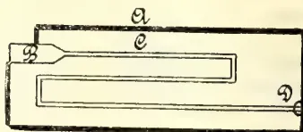
A Stone substructure.
B Fuel.
C Position of Pipes.
D Chimney.
Heat from a fire is sent through an iron pipe which running backwards and forwards ends in a chimney. These conducting pipes are surrounded by masonry on which higher up are wooden walls. The room is divided sometimes into two, sometimes into three compartments into which the trays are pushed with the copra to be dried, 15 or 16 pieces one over the other.
The whole contrivance is roofed over and provided with means of ventilation to carry off the moisture-saturated air. Ventilators for the introduction of air must be placed under the pipes also to ensure a good circulation and there must not be too much heat. We have discovered that at a temperature of 40° to 45° C. in the drying-room and with a good circulation of air the copra is of the best white and dries well.”
Professor Preuss* describes as follows the latest kind of drying sheds in Samoa which are good and workable:—“The kilns consist of a stone sub-
* 1904, No. 6.
* “Der Tropenpflanzer” 1907 No. 1.
and Magazine of the Ceylon Agricultural Society.—November, 1912.
403
structure 5 meters long, 2.3 meters wide and 2.3 m. high and a wooden superstructure. The lower part is the heating-room. The fire lies heaped up near one of the shorter sides. The fire-grate slopes somewhat from front to back. The heat goes off into a masonry canal which runs obliquely along the floor to the centre of the room to about of the latter's length. Where the canal ends it is connected with a vertical pipe of the shape given below, so long that its top lies some 70 cm above the floor of the heating-room.
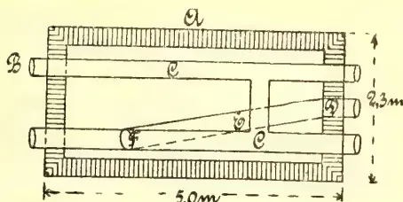
VIEW OF HEATING-ROOM LOOKING DOWNWARDS.
| A Masonry. | D Flue. |
| B Chimney. | E Heat-Canal and Masonry. |
| C Heating-pipes. | F Passage of hot air from canal into pipes. |
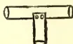
Connection between Heat-canal and Heating-pipe.
This short connecting tube runs into the system-proper of horizontal pipes. This latter consists of two pipes which run parallel to the longer walls, have a diameter of about 30 cm. and are connected by a transverse pipe. The hot air ascends from the masonry canal, rising vertically, into the long-pipe, passes through this and the connecting tube into the second long-pipe and
through this again into the chimney which is 12 meters high.
The three other ends of the pipes open outwards through the walls, are generally stopped with clay and are opened only for the purpose of being cleaned. Sometimes there are three pipes especially when there are three compartments with trays above. The pipe system lies about 1.3 m. under the upper ledge of the walled room.
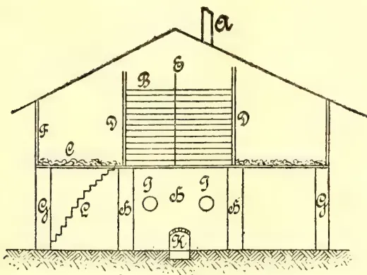
The heating-room is covered with iron bars over which is laid wire-netting which thus become the floor of the drying-house. This room for the trays whose ground-plan is a little larger than the heating-room is so high that about 18 trays can stand over one another. It is a big box with wooden walls which has ventilation
holes opening upwards. Inside it is divided by walls into two or three compartments into which the trays just manage to pass. The latter are about 1 m. long and 50 cm. wide. On one side of the box there are as many doors as compartments. Fresh copra is every morning spread out on the trays which are then pushed into the
404The Supplement to the Tropical Agriculturistcompartments. They are so close-fitting that they just manage to pass in and stand in several rows one above the other. In Vaitelu the kiln has 200 trays each with 6 lb. of copra; in Vaivase the trays stand in 4 compartments each of the latter with seven trays on its floor and thirteen one over the other. In Apia the kiln has only two compartments each with 9 trays on its floor 18 one over the other. As soon as the compartments are filled with trays the doors are closed and drying begins. The hot air rushes from the heating-room through the wire-netting and through all the trays and goes out through an opening above. Fresh air enters the heating-room generally through several small openings in the masonry of the same and so at very little distance above the ground. In the latest type of kiln the air enters by a shallow canal built on to the heat-canal and running over it. In this there are several openings for the air to escape. The fresh air enters this canal through an opening above the fire. Here it is immediately heated and straight away enters the heating-room. Every such kiln dries about 1,700 lb. copra in twenty four hours and so 25 tons per month. The heat is about 50deg. C. Near the kiln-proper there is on three sides a wooden floor which is reached by a stair-way. On this floor is spread out the hot copra just taken from the kiln to be cooled, and at the same time to give off any moisture remaining. If the copra is not spread out to be gradually dried and cooled and if it is not at the same time well turned up by the shovel, it grows mouldy. When this process is carefully followed the copra is beautifully white and pays much better than the South Seas article.
The cost of a kiln runs to about 6,000 or 7,000 marks. It may here be remarked that the material for the piping can be obtained in sheets which may be cut and rivetted in Samoa itself. The kilns which have been described suffer from two disadvantages. They exclude the co-operation of the sun in drying and do not allow of the copra being turned in the trays except in very limited quantities. It must nevertheless be admitted that they serve their purpose splendidly and in a comparatively small space, at little cost and with the service of only a few hands yield a maximum of work.
On the Arle estate a kiln has been built with hot-water apparatus but its working is very
defective. Coconut shells are used as fuel and these burn so quickly underneath that their heat is not sufficient. Besides the pipes in which the hot-water circulates are so thickly covered in a short time with the soot given off by the shells that the flames cannot come into direct contact with the pipes."
The following sketches give an idea of the construction of drying-houses for copra in German New Guinea. As is evident from the drawing, the principle is really the same as that of the Samoan drying-sheds described by Professor Preuss except that in those built in 1908 the following improvements have been introduced:—
At a temperature of 50C. the drying process occupies 1 to 2 days according to the amount of moisture contained in the copra. The cost of erecting the kiln amounts to about 6,000 marks.
and Magazine of the Ceylon Agricultural Society.—November, 1912.
405
The diagram is a plan view of a drying shed sub-structure. It features a central chimney (F) and two heating pipes (D) that curve upwards. The overall width is 3.0m, with a 35cm wide chimney. The chimney depth is 80cm. Air-pipes (G) are shown running through the walls, with openings (H) at the top. The structure is supported by cement pillars (A) and masonry sub-structure (B). The heating pipes (D) are 35 c.m. in diameter. The chimney pipe (F) is 45 c.m. in diameter and 16 m. high. The plan also shows a free space (J) between the heating pipes and a walled-up end (K) of the pipes.
Plan of the sub-structure of a Drying-Shed in German New Guinea. Model I.
A small diagram showing two semi-circular openings in a wall, labeled H, with a width of 1.0m.
The diagram shows a rectangular grid representing the heating-room of the superstructure, looking upwards. It consists of 10 columns and 2 rows. The overall width is 5.9m and the height is 2.35m. The width of each column is 54cm. A section is labeled 1.32cm.
HEATING-ROOM OF SUPERSTRUCTURE (LOOKING UPWARDS.)
406The Supplement to the Tropical AgriculturistExplanation:—The drying room is surrounded by a floor corresponding in size to the substructure and lies at an average distance of 1 metre over the pipes. Each side is divided into 10 single chambers each 1.32 m. by 0.54 m. In each of these chambers can be placed, one over the other, as many as 13 trays with bottoms of wire-netting. The chambers have no bottom and the trays are prevented from falling into the heating-room by supports running equila-
terally right round the sides (a). The door C which can be lifted off and is held in position above and below by wooden fasteners constitutes the outside end of the chamber. From the door upwards the structure is boarded, the boards as well as the interior wall B reaching 4 metres to the roof.
The drying chamber itself is covered in above by perforated boards running parallel to the trays.
Model II.| A Heat Room, | G Wooden wall protecting shed. |
| B Drying Room. | H Sliding-ledges for hurdle. |
| C Furnace. | J End-ledges of sliding-ledges 1.45 m. above the ground. |
| D Pipe. | K Door in the Heat-pipe room generally closed. |
| E Chimney. | L End-ledges of sliding-ledges 1 m. above the ground. |
| F Part of Heating pipe built round Masonry part of flues. |
The plan reproduced on p. 406 (Model II) shows us a drying-shed (with a different system of pipes and trays) in New Guinea which can be set up at small cost but whose method of operation is exactly similar to the one described above.
To ensure the production of a copra which is proof against mildew it is absolutely necessary to reduce the moisture contained therein to 5 per cent and less—a result which can be achieved only if artificial heat be employed in the process of drying. The quality of the copra is also improved by the increased heat, while the percentage of free fatty acid diminishes; and the oil produced from this copra is less exposed to the danger of becoming rancid.
According to the "Philippine Journal of Science" the free fatty acid after drying the copra amounts:—
| In 51—56°C within 20 hrs. to | ·08% * |
| In 50—56°C within 9½ to 14½ hrs. to | ·13—·32% † |
| In 74—93°C within 3½ hrs. to | ·06% |
The oil extracted from the copra contains free fatty acid as follows, according to experiments made in Manila:—
| Method of Preparation | Free Fatty Acid. |
|---|---|
| Copra dried in Vacuum (100° C) | ·06 o/o |
| Copra dried in sheds (80—90° C) | ·06 o/o |
| Sun dried Copra | ... ·13—3 o/o |
| Copra Mildewed | ... 1·18—3·5 o/o |
The slightly enhanced cost of the manufacture of the copra by artificial drying is made up for by the enhanced price obtained for the better quality. L. Hahn-Heilbroun gives in the form of an extract his opinion of the value of the different processes of manufacture:—"Fire dried copra is useless for food preparations: for oil-food and confectionery fat only sun-dried or artificially dried copra need be taken into consideration.
To the more unimportant kinds belongs Java copra; of still less consequence is the South sea article. Both yield a yellowish oil which contains an unusually large amount of fatty acid. New Guinea copra yields a clear oil with considerably less fatty acid, but cannot attain to the quality of Ceylon copra which produces an oil almost as clear as water and is generally manufactured in a uniform way. The best, however, is Malabar copra which is quite white, without
spot or mould of any kind, producing an oil clear as water, with a delicate flavour, and absolutely without serbacin acid—qualities which all find great favour among the manufacturers of palm butter.
Copra sliced into small pieces is less in demand than copra in large pieces as the material is examined before manufacture and the pieces of inferior quality sorted out—a thing which admit of being more easily done in the case of large than of small pieces."—Die Kultur der Kokospalme von Hans Zaepernick.
The following account of an almost seedless mango that has been given the name Oahu is contained in the annual Report of the Hawaii Agricultural Experiment Station for 1911, issued in April last:—"A seedling tree about six or seven years of age bore fruit this year, and its characteristics have given justification for naming it Oahu. It is probably a cross between the Hawaiian sweet mango and the Crescent. Although the husk is present, the seed presents an undeveloped condition with often just the seed coat present. About 75 per cent. of this year's crop has had no visible seed. The Oahu is valuable as a large, fine appearing fruit of good quality. Its nearly seedless condition makes a thin husk with a large proportion of flesh. No mango weevil (Cryptorhynchus mangiferae) has been found within these mangoes, and it will be interesting to note what may be the result of the attack of this insect on a fruit which contains no seed upon which its larva may feed. The Oahu is also worthy of propagation as a basis for breeding toward complete seedlessness. The form is oblong, heavily shouldered at the cavity end and tapering toward the apical end; size large, averaging in weight from 10 to 15 oz; cavity shallow, flaring, irregular; stem slender; apex variable, ranging from a point to a depression; surface moderately smooth and undulating; colour pale-yellow with a reddish blush on the exposed side; dots numerous, small, yellow, depressed; bloom bluish-white, moderately abundant; skin moderately thick, tough, tenacious; flesh thick, bright-yellow, juicy, with an abundance of fibre; seed dried up or represented by just the seed coat; flavour rich, moderately sweet, quality good. Season June to August at Honolulu, Hawaii. This tree is of the average height and presents a broad, spreading habit.
* Drying the nut immediately after opening.
† Drying the nut after having lain for a night open in a room at 30°C.
408The Supplement to the Tropical AgriculturistSEEDS we supply as follows:—
Carefully packed, prices net cash, including freight to direct ports. All Orders must be accompanied by remittances (Post Office Orders or Cheques) to cover the amount of invoice.
Orders please forward through European correspondents or direct to us.
The WAX PALM TREE (Copernicia cerifera) produces an aromatic wax, which is exported in thousands of tons to all the leading markets of the world.
The cultivation of this palm tree, which accommodates itself easily for climate and soil, is expected to yield high profits.
Telegraphic-Address: "Gevekind Hamburg."
:: A. B. C. Code 5th Edition. ::
To the Editor, The Field, Oct. 19.)
Sir,—The old question is always repeating itself—what to do with our sons? Most of the professions are so choked that any opportunity of obtaining lucrative posts is remote. There is one branch which, to my mind, always appears neglected, and that is the management of plantations. We here in Uganda are at our wits' end to find suitable managers. We are planting out very large areas of land under coffee, rubber, cocoa, and perhaps tea. The country is healthy as a whole. Naturally one gets fever sometimes, but there is no need to be afraid, as, providing ordinary care is taken, very little sickness need be suffered.
True, we are able to get men of a sort here, but the material is very unsuitable, being mostly drawn from the uneducated classes in our sister and other colonies. What we want is the public schoolboy with his higher education. Of course, he must not expect an appointment as manager, or even assistant manager, as soon as he gets out. The new-comer is of no use for at least six months, as he knows nothing of the country, its language, or the management of natives. It will take him from eighteen months to two years to become really competent to act as assistant manager of a plantation. He should have a rudimentary knowledge of engineering, horti-
culture, and agriculture, and also a speaking acquaintanceship with chemistry. Naturally a great deal can be done by reading, but practical knowledge is what is wanted. We have had too much experience of so-called experts—experts in everything but their special subject.
Well, after the pupil has passed through his apprenticeship of two years (in my opinion this period is not at all too long), he will be able to take up the position of assistant manager with a salary of not less than £350 per annum, with house, fuel, &c. After, say, another two years (of course, according to circumstances) he will probably find himself in the position of manager, with a salary of at least £500 per annum, rising according to the size of the estate to £1,000 and over, with possibly a percentage of the profits of the estate. Estate managers at present receive £600 and upwards.
These prospects, combined with the social life in Uganda and the opportunities of big game shooting during the local leave month is granted, render the life most attractive. Beside estate management, there will be many opportunities for estate surveyors and engineers—mechanical, electrical and irrigation—who will all find good openings at remunerative salaries. I would estimate the number of estates at present being opened at more than fifty, of which number at least forty will require managers within the next two years. I myself have eight estates of my own, beside ten which I am developing for other people—friends, &c.
and Magazine of the Ceylon Agricultural Society.—November, 1912. 409
The famous water lily Victoria regia, which is now grown at Kew, Chatsworth, and elsewhere in England, has only been known to botanists for a little over 100 years. Originally discovered by Haenke in 1801, no specimens were seen in Europe until 1828, when some were sent to Paris by D'Orbigny, who had found the plant in the River Parana in Guiana. There it was known to the Indians by the name of irupe, a word signifying a dish, in allusion to the shape of the leaves. In 1832 the lily was discovered in the Amazon, but it was not until Sir Robert Schomburgk found the plant on the Berbice River in British Guiana in 1837 that it became known generally to Europeans. Though the plant is familiar to those who know the Botanical Gardens at Kew, it is interesting to note that it is by no means easily accessible in its native lands. This fact induced the writer to undertake a small botanical excursion in search of the plant at the junction of the Rivers Amazon and Negro in Brazil where, amongst other places, it is to be found.
The waters of the Rio Negro had fallen some 10 ft., the stems of the submerged palms were reappearing from the inky waters which had covered them for the past two months, and every circumstance seemed to favour the idea that a good opportunity had arrived for endeavouring to reach the pool where these famous water lilies flourished.
Manaos lies a few miles above the junction of the Amazon and Rio Negro, and although it was said that in the lakes lying in the swampy ground, intersected by natural canals between the two great rivers, these lilies grew, yet it was only with the greatest difficulty that any precise information could be got about them. The rise and fall of the Rio Negro is about 60 ft., and only at certain heights of the water can the lake between this river and the Amazon be reached.
Early in the morning the steam launch I had borrowed came round. The surface of the still backwater was covered with thick white mist, curling slowly round the palms and rolling past the steep sides of the bank opposite. Soon, however, the intense heat of the sun dispersed the cool mist wreaths, and a mile or two down the stream everything was as clear as could be. Steaming quickly down with the current, the meeting of the black waters of the Rio Negro and the milky waters of the Amazon could be
seen ahead, a very clear line marking the junction of the two rivers. Leaving behind the rose-red precipitous banks of the Rio Negro, the launch turned and steamed up the low wooded reaches of the Amazon. The scenery was curiously English: groups of round-headed trees rose from what looked like meadow lands, palms and the thick tropical tangle of brushwood being quite absent. A cry was raised of "Jacaré, jacaré!"—"Crocodile, crocodile!"—and a little way in front was seen what seemed like one swimming rapidly along. It did not dive as we swung round and stopped the engines, and it turned out to be a huge chameleon swimming across the river and very tired by its long journey. With difficulty willing knives and revolvers were stayed, an arm stretched out, and, to the mingled horror and admiration of the crew, the chameleon grasped it and was safely brought on board, where it was secured by cleverly tied noose. This animal is now thriving in the reptile house of the Zoological Gardens.
Steaming along between islands, the launch turned up a natural canal, which soon narrowed so much as to make navigation a difficulty. The forest thickened; monkeys could be heard chattering overhead; white egrets rose and flapped slowly away, and numbers of metallic-plumaged birds flew ahead for a few yards until again put up by our approach. Both banks of the passage were covered with a bright green grass growing in the water, so that much care had to be exercised to prevent the propeller getting hopelessly entangled. An enormous crocodile was basking on the water in front, but the thud-thud of our approach awoke him, and he swam into the floating tangle of weeds and grass. The waterway wound and turned; here and there orchids could be seen on the tree trunks, and now and again a brilliant creeper had flung its purple flowers over a forest tree, but the general impression was one of gloom.
A mile or so further on we came out on to Lake Januari, which, according to Agassiz, contains more varieties of fish than all the rivers and lakes of Europe. On its banks are some settlements of Caboclos, the houses here being built above high-water mark, and some clearings for the cultivation of mandioca and sugar-cane. The people were pleased to see us, and showed us the great iron pans used in preparing their farinha, the staple food of these parts, and their little enclosures of orange and coffee bushes. Roses were growing in pots and amaryllis was in flower near the houses, but the people evidently were very poor. Piles of
52
410The Supplement to the Tropical Agriculturistturtle shells were lying about, all with the mark where they had been hit with an arrow, and I was told that occasionally pacas, deer, and cutias were shot. Even here there was a vagueness as to the whereabouts of the water lilies, but a boy was found who said he knew the place well, as he had been there to gather the leaves to be made into medicine for consumption.
We got into a canoe and were soon gliding rapidly up a little outlet from the lake. The stream flowed very rapidly; numbers of birds rose quite close to us, as our progress was very silent among the half-submerged tree trunks.
The stream widened; in front of us floated six or seven plants of the lily we had come to see. The great leaves lay on the water in groups, each one, with its edges turned up, looking like circular trays. The colour was a vivid green, shading through red to brown. Among them an object a foot long and five inches or so across, covered with spines like some immense horse-chestnut pod, caught the eye, and only after close inspection did one realise that it was a tightly rolled up leaf. The entire under-surface of the leaves and the whole length of the stalk were thickly covered with thorns, a very necessary protection against the many denizens of the river, who would like to make a meal of the succulent plant.
Water birds evidently walked on the floating leaves, as shown by the footmarks on some of them. The plants grew a few yards apart with clear water between them, and the effect one had expected from books, of the vast stretches of huge green leaves entirely covering the surface of the water, was absent. One group had two flowers open, their creamy rose petals, some 15in. across, emitting a faint odour, and, while handsome enough, not perhaps quite as beautiful as one would be led to expect from the magnificent appearance of the leaves. We tried to obtain some roots to plant in a backwater near Manaos, but all our efforts proved futile. The stalks were terribly thorny, besides being slippery, so that a firm hold was well-nigh impossible, and on throwing down grappling irons the long juicy stems always snapped. At the period when the Amazon reached its lowest these plants would be obviously nearly uncovered, and the seed pods would be exposed all day to the fierce rays of the sun to ripen their seeds, but at that time the waterways, difficult enough to traverse now, would be impassable even for a canoe, as many fallen tree trunks and creepers would hinder the way.
Regretfully we abandoned our attempt to obtain some plants, and returned to Manaos with some fine leaves, flowers, and several of the spine-clad unopened leaves, which proved to be objects of great curiosity to the many Brazilian visitors who came to see them.—London Times, Sept. 24.
We have, during the last few issues, given our views on the subject of thinning out Hevea estates in the Middle East, and we have supplemented our statements with the opinions of prominent planters throughout the East. We have solicited the views of Messrs C E Welldon, Joseph Frazer, E G Windle, H M Alleyn, and J H Wynell Mayow, well-known in connection with Ceylon and Indian plantations; the views of planters in Malaya—Messrs R W Harrison, Victor Kinloch, D Douglas, and T Wilson—have also been inserted; the views of Sumatran planters have been expressed by Mr J C Tate, and of other areas by Directors such as M Sidney Parry, A Bethune, R C Wright, A R Wilson-Wood, Norman H Grieve, W F de Bois MacLaren, P J Burgess, and Sir William Hood-Treacher, all gentlemen connected with plantation work in many parts of the East. The main points which we set out to settle were; the number of trees which should be aimed at as the minimum, whether thinning out should be done by cutting out alternate rows or careful selection, and whether or not the trees to be removed should have their stems drastically tapped prior to their removal.
On the number of trees per acre we find that the Ceylon section prefer to have the largest number of trees per acre. Mr Joseph Frazer prefers a planting distance of 20 by 10 feet over considerable area, and believes in reducing the number of trees later on to about 150 per acre. Mr Mayow thinks the trees should be reduced to 100, Mr Alleyn 100 to 120, and Mr C E Welldon 120 trees per acre. Mr Windle in this section aims at an average number of 50 permanent trees per acre, his experience mainly being in South India. When we come to Malaya we find that there is a general consensus of opinion that the number of permanent trees per acre should be 90 to 100, but, as Mr Harrison points out, it is sometimes not deemed advisable to thin out to less than 115 to 120 in view of the inevitable loss which results from storms and diseases. It is suggested in many cases that the estates might on good soils be thinned down to about 70 trees per acre. 20 by 20 feet appears to be favoured as the distance for Malaya and Sumatra by the gentlemen who contributed their views to these columns.
We do not, therefore, think that on the advice of the men we have named that one can go far wrong in planting 20 by 20 feet apart on good
and Magazine of the Ceylon Agricultural Society.—November, 1912. 411
Fibres, Cotton, Grain, Oil Seeds, Hides and Skins, Timber, Rubber, Drugs, Wool, Ores, Mica, Gums, Tea, Cocoa, Coffee, Copra, Sugar, etc., are being regularly dealt in; Keymer, Son & Co., being selling Agents for Estates, Mills and Exporters.
Samples valued. Best ports for Shipments indicated.
The management of Estates undertaken. Capital found for the development or purchase of valuable properties.
KEYMER, SON & CO.,
Cables:
Whitefriars,
KEYMER, LONDON.
LONDON, E. C.
(Same address since 1844).
soils where no intercrops are being cultivated; where intercrops are to be cultivated it is our view that the rubber trees should be at a much wider distance, say about 30 by 20 feet or 30 by 25 feet apart.
On the subject of the method of reducing the number of trees per acre, we find there is some little difference of opinion. Mr. Joseph Fraser believes highly in the value of manure, and another correspondent, whose name we cannot unfortunately decipher, is not convinced as to the necessity of thinning-out trees at all unless and until the effect of judicious quantities of manure has been determined. The view expressed in our leader on this subject, which was to the effect that on uneven plantations we would only thin-out the bad and weak trees, and on very even estates cut out every alternate row seems to be held by most of the contributors on this subject. In thinning-out by the careful method of selection, it is suggested that the backward trees, those with large burrs, or those which have been badly tapped, should be selected for removal. Careful selection should be taken to uproot those which appear to have the shortest life before them. A point is made of the desirability in this operation of as far as possible selecting the permanent trees first rather than the weakest in order that the former may be retained and the latter destroyed on a regular system.
On this point as to whether the trees selected for removal should be at once uprooted and des-
troyed, or the stumps be tapped for a year or so, there appears to be a greater divergence of opinion than on the other points already mentioned. Mr Joseph Frazer would entirely remove the trees selected for removal without getting the rubber from the stems. Mr Victor Kinloch, of Jeram Estate, is also of the opinion that the whole tree should be removed, and not merely pollarded. Mr Burgess is of the same opinion, because he thinks that the delay in the process of tapping may prove serious, and the work introduces a secondary consideration which might be used as a loop-hole by inferior managers. Others state that their view would largely depend upon the financial position of the company, though all admit that the immediate removal of the trees would give the permanent specimens every chance. On this point it is as well to bear in mind that when trees are removed there is not an immediate response in the form of an increased yield of latex from the remaining plants. From my experience I would not anticipate an increased yield from the permanent trees until quite twelve months had elapsed after the thinning-out process had been completed. Most of the authorities we have quoted appear to be of the opinion that it would be better to stump the trees to about eight or ten feet and tap the stumps drastically for nine months or longer, and then uproot them. This view appears to be held by Messrs. Douglas, R C Wright, M Sidney Parry, Sir William Hood-Treacher. J H Wynell Mayow, and others with whom we have not conferred,
412The Supplement to the Tropical AgriculturistThis discussion has brought to light some rather pronounced views against retaining the tappable stumps and in favour of their entire removal, some individuals being of the opinion that they do not think there is a very great advantage in the method, and others pointing out that though the trees may be pollarded, the roots are still alive and in the soil.
Synoptically, therefore, we think we are representing the average view when we say, (1) that about 100 trees should be aimed at permanently in average soil, a lower number in good soil, and a higher number in poor soil; (2) that thinning-out should be done by the removal of backward or weak trees, and not by cutting out every alternate row; (3) where money is badly needed, rubber should be extracted from the stumps before the bad trees are removed.
—India Rubber Journal, Oct. 5.
Those interested in the cultivation of coconuts will find in the latest issue of the F.M.S. Agricultural Bulletin (for October) an instructive article by Mr L C Brown, Inspector of Coconuts, F.M.S., who gives an estimate for opening up coconut land. Mr Brown has written on this subject before, but he explains now that, owing to several changes that have taken place in the different conditions of labour since his Pamphlet No. 11 on Coconut Cultivation in the Federated Malay States was published, he submits this revised estimate for the guidance of those who may care to interest themselves in the cultivation. He goes on to say:—
I received the original estimate from Mr Munro, Permatang Estate, Banting, an excellent authority on coconut cultivation and I am again indebted to him for further assistance in compiling the revised estimate, as prices of labour have been obtained from him as well as other planters of experience in Kuala Langat and Lower Perak, and these figures I have worked out on a general average. I am aware that where Chinese labour is employed, the expenses of weeding and cultivation are heavier, and some allowance may have to be made for this; but generally speaking, the advantages and disadvantages by which there may be a saving or otherwise on labour in the various districts about counter-
balance themselves, and therefore on the total expenditure there should not be much difference in cost.
I consider therefore as a whole the estimate submitted below may be taken as a reliable one, perhaps rather on the liberal side, and easily capable of being worked upon if the management is carried out on sound and economical lines by any experienced manager. At the same time I have not taken into account any unusual expenditure or what may be considered as an extravagant or unnecessary expense.
As regards returns I have raised the price of copra to $8.50 per picul (under the average rate that has been realised during the past three years), which figure I am of opinion in view of future prospects may be taken as a conservative one. On the other hand I have allowed as much as 240 nuts to the picul up to the seventh year, that is to say while the trees are in partial bearing. The reason for so doing is that during this period the nuts are often found to be smaller and contain less meat than at a later stage. However, from the eighth year onwards I have retained the same rate as in my previous estimate, viz., 220 nuts to the picul, as I believe this return can then be reasonably anticipated.
The expenditure on the estate up to the sixth year works out a little under $190 per acre, and after this period the estimate may be considered self-supporting. Of course over a larger area, say from 1,000 to 3,000 acres, the average cost will be materially less. Allowing therefore for any little difference of expense in the various districts it should not cost more than $200 per acre in any locality to bring a coconut plantation into a remunerative condition.
The estimate for opening up and bringing 500 acres is thus given:—
| 1ST YEAR. | |
|---|---|
| Felling and Clearing $20 per acre | ... $10,000 |
| Draining at $16 per acre | ... 8,000 |
| Cost of seed (35,000) seeds at 8 cents each | ... 2,800 |
| Fencing at $4 per acre | ... 2,000 |
| Lining and Planting at $3 per acre | ... 1,500 |
| Coolie Lines | ... 1,500 |
| Tools | ... 300 |
| Bungalow | ... 1,500 |
| Stationery and Postage | ... 100 |
| Medical | ... 1,500 |
| Premium at $3 per acre | ... 1,500 |
| Quit-rent at $1 | ... 500 |
| Survey fees | ... 500 |
| Weeding, 1st 6 months at $1½ per acre per month | ... 4,500 |
| Contingencies | ... 1,000 |
| Superintendence | ... 3,600 |
| Total | ... $40,800 |
The costs in the second and succeeding years up to the ninth are respectively:—$14,000, $13,675, $11,275, $10,675, $13,575, $14,800, $19,400 and $19,400.
The returns are set down thus:—
| 6th year 10 nuts per tree=1,000 piculs of copra at $8.50 (240 nuts to picul) | ... | $ 8,500 |
| 7th year 30 nuts per tree=3,000 piculs of copra at $8.50 (240 nuts to piculs) | ... | $25,500 |
| 8th year 50 nuts per tree=5,650 piculs of copra at $8.50 (220 nuts to picul) | ... | $48,025 |
| 9th year 50 nuts per tree=5,650 piculs of copra at $8.50 (220 nuts to picul). | ... | $48,025 |
—Straits Times, Oct. 16.
The term "Soil Fertility" cannot be said to have any definite significance, since it can only be employed to denote a relative condition. For instance, a virgin soil with only a very small proportion of available plant food may, through the activity of bacterial life present in it, be highly nitrified and fertile; and yet it will become useless after a couple of crops have been taken off it. An analysis, to be of value, should indicate the total amount of mineral plant food in the soil rather than the measure of fertility which depends, so to speak, on accidental and variable circumstances, and is obtainable without any great difficulty by artificial means.
The hydrochloric-acid method of soil analysis is useful in this respect, in that while it gives no true indication of immediate fertility, it is a guide to the total reserve of plant food which can be made available through a comparatively long space of time.
The difficulty in ascertaining the immediate fertility of a soil is in discovering the solvent which most nearly approaches the action of plant roots. There is present in most soils a certain proportion of plant food that may be said to be ready for root absorption, but the bulk of it awaits the solvent action of the roots.
Different chemical compounds respond differently to a particular solvent agent, and different agents act differently on a particular chemical compound. This is a common experience in the use of re-agents in the laboratory.
The action of carbonic acid and other solvent substances present in soil water is sufficient to bring about the solution of certain compounds, but not of others. The solutions of the former that are found in the soil will be available to plants, but compounds of the latter type demand the
action of what is known as the "acid sap" of the roots.
If the exact composition of this acid sap were ascertainable there would be no difficulty in imitating its action in the laboratory and so discovering the so-called "soluble plant food" in the soil.
There is good reason to believe that the acid sap of plants is not of uniform composition, that is to say that it is not of the same character in the case of all plants; and this fact serves to complicate the work of chemical analysis made with the object of ascertaining the proportion of soluble plant food, or determining the measure of immediate fertility. The action of strong acid such as hydrochloric acid can in no way be compared to the action of plant roots. A proper soil map should not be based on considerations of immediate fertility, since, as already pointed out, many soils may be very fertile for a short time only and then become exhausted. Closely connected with the question of fertility are the mechanical character of soils and the meteorological conditions prevailing in the districts in which they occur; but the element which has the most important bearing on this question is the biological relations that exist in the soil.
These considerations have been forced upon us by a perusal of a valuable paper by Dr. Jensen of the N.S.W. Department of Agriculture. Himself a chemist, the author fearlessly states that though he at one time expressed a belief that chemical analysis of soils would be of direct value to the agriculturist, subsequent research has convinced him that he was wrong. In certain cases an analysis is of help to the expert, but in the generality of cases instead of being a guide to the person who is in quest of a suitable manure for his crop, it is a delusion leading him to useless expenditure. Many soils which are low in lime and potash are really rich soils, and many others which are apparently rich need manure badly.
Soil analysis by the official method while misleading to the layman has, however, this advantage, that when analytical results are considered carefully in conjunction with such matters as depth of soil, mechanical condition, climate, topography, &c., it aids in judging of the potential fertility of soils. But it is only an aid, and it is very often the case that without it an experienced person is able to pronounce an opinion, after a few minutes' inspection and manipulation of the soil, more definite and correct than that expressed after a complete and tedious chemical analysis.
414The Supplement to the Tropical AgriculturistMost of my readers will remember the animated discussion which took place recently when a firm of Mincing Lane brokers issued an annual statement showing a very large increase in the world's consumption of rubber. I said at the time that I did not like the basis upon which the table had been prepared. The rubber position was so sound that it could hardly be doubted that statistics prepared on lines less open to criticism would have disclosed a more than satisfactory state of affairs. As it was, some obvious errors destroyed the value of the compilation, and gave the "bears" an opportunity of delivering a vigorous anonymous attack. This week, however, I have received from America some material which throws a good deal of light on the rubber position. These figures, fortunately, are official, and any complaints from the bears with regard to them must be addressed to the United States Customs authorities. America, it will be remembered, is the world's best customer for rubber, nearly one-half of the total production finding its way to that country. But American buyers are well organised. Their practice seems to be to stand out of the market altogether at times, and when prices have fallen to sufficiently low level to buy in all the chief markets simultaneously. When America is in a buying mood, not only does she import largely direct from Brazil and the Middle East, but a considerable quantity of rubber consigned to this country, Germany, France and Belgium is reshipped across the Atlantic. In this way more than 13,000 tons reached America from England during the last financial year. Here, however, are the official figures summarised in English tons:—
| Year ended June 30 | ||
|---|---|---|
| Imported from | 1912 | 1911 |
| South America | 22,151 | 14,968 |
| Mexico and Central America | 1,615 | 981 |
| Europe | 22,429 | 14,057 |
| Middle East | 2,830 | 2,065 |
| Other countries | 176 | 93 |
| Less Re-exports | 49,201 | 32,164 |
| 2,505 | 2,352 | |
| Total net Imports | 46,696 | 29,812 |
As compared with the previous year, it will be seen that American consumption increased by no less than 16,884 tons—say 56 per cent. As according to the estimate issued by Messrs. Figgis, the total output from the mid Eastern plantations for 1911 was 14,000 tons, it may be
said that the increased consumption in America alone is practically swallowing the whole plantation output. It is worthy of note, too, that the American official figures for last year of 46,696 tons compares with Mr Lampard's estimate for the current year of 47,500 tons.
Whether the shortage expected by Mr Lampard will eventuate must be left to time to prove, but all figures relating to consumption so far published have strengthened his argument. This year's British figures disclose a consumption for the first eight months of 11,618 tons, against Mr Lampard's estimate for the year of 15,000 tons. For Germany Mr Lampard also allowed 15,000 tons, and the latest available figures show a consumption of 15,404 metric tons in 1911, as against 10,951 tons in 1910—an increase of over 40 per cent. America, Germany, and this country together take four-fifths of the world's supply, and there is, perhaps, no need to inquire what the smaller consumers are doing. The reduction in stocks continues, and the visible supply of Brazilian rubber on October 1 stood at 3,790 tons, as against 7,190 tons for the corresponding period last year. Plantation rubber, it is true, is arriving in increasing quantities, and helps to some extent to make good the deficiency, but it is clear from the figures that the supplies from the mid-East are not fully meeting the increased demand.—Truth, Oct. 6.
Mr J Shaw Hellier, who has spent many years in the Federated Malay States and Burma in the management of rubber estates, has given the Herald at Zamboanga, (Southern Philippine Islands,) an instructive interview on the Island of Mindanao as a rubber country. He says:—"In the first place Mindanao is well within the Para rubber zone. The temperature and rainfall are practically ideal. It is out of the track of typhoons. In these four important points it is so similar to the west coast of the Federated Malay States (where most of the rubber is planted) as to be on a par with it. We next come to the land. Now the terms on which land can be leased from the F.M.S. Government are Rs. 2.16 per acre for the first six years, after which the rent is Rs. 4.32 per acre per annum. This is for first-class land. That is, land touched by a rail-road, public highway or navigable river. Here land can be leased from the government for Rs. 0.20 per acre per annum for 25 years, a difference of Rs. 90,000 in 25 years. As to the quality and accessibility
and Magazine of the Ceylon Agricultural Society.—November, 1912. 415of the land, from the little I have seen I judge there is plenty of land in Mindanao fully equal to the best in the F.M.S. What strikes me particularly is that there is so much land 'get-able' here for an undeveloped country, which is, of course, on account of the very long coast line. This is no small item in a virgin country. Often one of the greatest difficulties is that of transportation. When one can combine the advantages of a new country, such as having almost unlimited land to select from, most reasonable land rents etc., with good transportation one is indeed favoured. The next point, and it is an important one, is that of labour. This is a far more difficult proposition for a stranger to size up with certainty. All that I can say is that, after talking with many employers of labour, nearly all seem satisfied and able to get all they want. It would undoubtedly take longer here to build up a labour force than it would where it is more organised but if well housed and fed, regularly paid and thoroughly looked after, which are essential on all estates, I have little doubt the labour would compare favourably with many other countries. It is difficult to say just what the average price of estate labour now is in the F. M. S., but it is just about one shilling per day for a man. Chinese get more, Indians less. Then there are Malays and Javanese, and the pay is not the same all over the F. M. S. Neither is it the same on all estates in the same State. Now we come to capital. In this respect there can be no doubt that the F. M. S. has every advantage. There you have a past to point to. Actual results go a long way. Capital is rather shy of going into new fields unless some special inducements are offered. Then there has been a body of planters built up there whom the financiers in London know and if one of them reports favourably on a proposition it will go through. Unfortunately the political situation here keeps capital out until a definite policy is defined.
At a moment when we are in the midst of another "Battle of the Cocoas," it is very interesting to compare the statistics of the world's production and consumption of the much-vaunted drink, which, though introduced to Europe in the sixteenth century, was clearly familiar to the Aztecs, whose remains in Southern America still excite our wonder. Let us first glance at the figures for San Thome, for reasons upon which it is unpleasant to dwell :— In 1901 the produce was 16,983 tons, in 1905 25,379 tons, in 1909 30,261 tons, in 1910 36,665
tons, and last year 35,000 tons. The Portuguese Colony stands third on the list of producing countries. Our own Trinidad is in the fifth place with 21,220 tons last year ; the production had been 11,943 tons in 1901, 20,018 in 1905, 23,390 in 1909, and 26,231 tons in 1910. But we have still better reason for congratulation. The Gold Coast is at the head of the list with 40,357 tons last year. This was a big leap from 1910, when the production was 23,112 tons. In 1909 it was 20,534 tons, the export value being put down at £886,571 ; in 1905 5,606 tons, and in 1901 only 997 tons. In short a great industry has been practically created within a decade. The world's production ten years ago was 105,723 tons (2,205 lb.); last year it was 244,545, an increase of 138,822 tons, nearly a third of which must go down to the credit of the Gold Coast.
The figures for the raw cocoa consumption of the world cannot for various reasons be stated with so much detail or certainty as those for the production, but it seems that it has risen by 80,000 tons within six years. In 1905 the imports into the United States were put down at 34,958 tons; last year's consumption is given as 58,968 tons. Germany stands second with 50,855 tons, an advance of 7,000 tons in the year, and an advance of 10,000 tons over 1909 ; her total in 1905 was 29,663 tons. France comes third as a consumer : in 1905 her imports were 21,748 tons, in 1909 23,254 tons, in 1910 25,068 tons, and last year 27,840 tons. The United Kingdom has not been quite so enthusiastic in its appreciation : the imports in 1905 were 21,106 tons, in 1909 24,264 tons, in 1910 24,082 tons, and last year 25,396 tons, an increase of some 700 tons per year for the past six years. Clearly we have a goodly amount of leeway to make up to get into line with the American and German peoples.—Grocers' Journal, Oct. 12.
In the seventies, we see the beginning of the planting of the lime-fruit trees by Messrs. Sturge in Montserrat. Each year the number of plants increased until now the estate of the Montserrat Company already covers over 650 acres, and contains from 140,000 to 200,000 trees, and more than 100,000 gallons of pure lime fruit juice have been imported in one year into England.
No more beautiful sight can be seen than the lime-tree orchards when the trees are laden with their bright fruit, and at the same time the air is pervaded with the luscious fragrance of the blossom.
416The Supplement to the Tropical AgriculturistTruly a scene of health—the sweet scent of the lime blossom is wafted by healthy breezes—the golden fruit is gathered by healthy negro women who are lithe and upright with the constant carrying of baskets on their heads; then in his isle of invigorating breezes the limes are prepared by the Montserrat Company, the juice is put into large casks—the shore is covered with the casks, line upon line, row upon row, like billows upon the seashore; these casks are ready to be shipped, and to leave the island on a sea that is “all aglow with brilliant sunlight in which the white sails of the coasting boats sparkle like ice.” Then on the arrival of the casks in England, the lime-fruit juice is allowed to settle, and afterwards it is clarified and bottled by the sole consignees.
For many years the Navy, our first line of defence, and our Mercantile Marine, suffered severely from scurvy, and on that account the Admiralty decided to supply the service and all British ships with lime juice. The results show the wisdom of their action, both are now practically free from that terrible scourge. Small wonder, then, that Kingsley described lime juice as “that most useful of all sea medicines.”
Then take another arm of defence. When our armies go forth to war the commissariat invariably selects lime juice as the needful beverage. There could be no more striking picture of perfect health in manhood than the C. I. V.’s, when they returned from South Africa—and we are told that lime juice was their drink during an arduous campaign. Therefore it is no exaggeration to say that by its physique shall a nation stand or fall.
It would appear, from a medical and commonsense standpoint, and in comparing the opinion of experts, that it would be difficult, to find a more healthy and satisfactory drink than lime juice.
The demand for lime juice among athletes is now-a-days very considerable. On the cricket field, in the tennis courts alone, it is in frequent use.—Century.
Bombay, Nov. 2.—A Press Note issued by the Bombay Government states:—For some time past the Agricultural Department have been investigating the question of introducing mechanical traction for ploughing and other operations of cultivation. The question is becoming more and more important owing to the growing scarcity of fodder, cattle and labour, besides
hand-digging being an insufficient means of cleaning the soil of weeds. The Bajac windlass plough, drawn by bullocks, has now been introduced, and there is a rapidly growing demand for its use, but progress is slow as it works at the rate of one-fourth of an acre per day. In view of the enormous areas of weed-infested lands that require deep ploughing steam traction was absolutely necessary.
A scheme was accordingly prepared and submitted to the Committee of the Sir Sassoon David Trust Fund who provided funds for obtaining a double engine steam ploughing plant. It is expected that this plant will plough 8 acres per day at a cost Rs 17 per acre, or about half the cost of the Bajac. In sugarcane tracts the introduction of steam plough promises excellent results as the soil requires deep cultivation during the dry season, an operation which under existing conditions puts the cultivator to great expense.—Madras Times.
Amsterdam, Oct. 16.—A Bill has been introduced in the Second Chamber of the States-General for the abolition of the Government’s coffee cultivation in Netherlands India. It may be recalled that this was established more than half-a-century ago, and for a long time a vast profit of over fl. 20,000,000 annually was obtained from the compulsory cultivation in Java. This was partly spent in the interests of the Colonies, but the biggest part was expended on railway construction, &c., in the Motherland. But gradually the cultivation became less remunerative, and for a long time now it has been abolished in the regions where it was little remunerative. Now it is to be entirely given up, the plantations being, however, sold. The necessary measures are only to be gradually carried out.—L. & G. Express.
The French Government proposes to protect the rubber industry in French West Africa, by prohibiting the manufacture, sale of, and traffic in, coagulated rubber, otherwise than in “sheets” or “cakes” of a maximum thickness of one centimetre. The tapping of rubber trees is also prohibited during not more than three months of each year, the particular period to be decided separately by the Governor of each colony.—H. & C Mail, Oct. 18.
and Magazine of the Ceylon Agricultural Society.—November, 1912.417TRADE MARK 'TABLOID' BRAND
(No. 258 The Settler's)
Containing pure and reliable medicaments in compact doses, ready and easy to take. No weighing; no waste. Climate-proof.
An ideal outfit for Planters
In Black Japanned Metal, size: 8½ × 4¾ × 5¾ in.
Of all the principal Chemists and Stores
xx 532
BURROUGHS WELLCOME & CO., LONDON
NEW YORK MONTREAL SYDNEY CAPE TOWN
MILAN SHANGHAI BUENOS AIRES BOMBAY
ALL RIGHTS RESERVED
The vast area planted with "Manchurian beans" in North-Eastern China and the contiguous portion of Siberia may in the future be greater still. A new field for bean oil has been found and the new factories in Mukden and Dalny are now turning out very large amounts of both laundry and toilet soaps. It is understood that the Lever Bros., Ltd., of Port Sunlight, England, will also establish a monster soap factory at Kobe; the only drawback thus far is the lack of alkali in Japan and Northern China. According to the Bureau of Manufactures of the United States Department of Commerce and Labour, the United States uses considerably over P5,000,000 worth of bean oil annually.
Soya oil affects the price of copra. Soya soap relieves the over-production tendency of bean oil and thus becomes a long distance enemy of the Philippine coconut, although it directly assists in a degree in keeping up the price of soya oil.
The Soya has also found a new field in what will probably be one of the best agricultural regions for the culture of that famous legume in the whole world. Instead of flax, which has
heretofore been grown for linseed in rotation with wheat and maize, the soya will now be used in Argentina both for its own oil and as a soil restorer, thus increasing the fertility of the fields.
While the percentage of oil in ordinary soya runs from 16 to 20 per cent, some of the new varieties which will be planted in the alluvial plains of the Plate River will contain up to 23 per cent.—Philippine Agricultural Review.
British North Borneo exports some Pesos 120,000 worth of sago annually, says the Philippine Agricultural Review. The Agusan valley of Mindanao could undoubtedly export several times this amount from the vast swamps filled with the same species of sago palm which extend across the Sulu Archipelago into Borneo, and eastward to New Guinea. There is no doubt that some day these swamps will be the scene of great activity in the way of starch, sugar, and alcohol manufacture. Sago flour, when properly prepared, is an excellent food, and by fermenting, alcohol can, of course, be made. Fortunately, the sago palm produces itself from suckers as soon as the old plant is felled; but unfortunately
53 418The Supplement to the Tropical Agriculturistperhaps for the palm-sugar maker, it is a palm which dies at the time of flowering. Properly managed a sago swamp would be continuously productive without replanting or cultivation of any kind; that is the growing palms should be allowed to stand at proper distances and all unnecessary suckers and useless intermediate trunks should be removed, allowing one or two suckers to grow from the base of each trunk as soon as it is ready for cutting. In fact, the sago may some day rival the nipa as a profitable palm crop, though it will never compare with the coconut.
H. M. Consul at Iquitos (Mr G B Michell) reports that the trade of Iquitos during the first half of 1912 was restricted. The advances to rubber gatherers have been much reduced and credits curtailed. The rubber exports during the six months ended June show an increase of 416 tons over the same period of last year, and, as the second half of the year is the period of greatest exportation, a very good year is expected. Caucho or "Peruvian Ball" has risen in value because it does not meet with much competition from the Far East, but the trees are rapidly disappearing and the caucho is now being brought from great distances, largely from the Madre de Dios region, though the difficulty of transport makes the supply from this district very irregular.—The Board of Trade Journal, Oct. 17.
Dr. Sansom, P.C.M.O., Federated Malay States, in his recently issued annual health report for 1911, writes:—
It is very important that the advantage of a generous diet should be carefully considered by all employers of labour. Several years' experience with a very large, constantly changing, labour force has been so convincing that plenty of nourishing food is one of the most important factors in maintaining good health, that I feel compelled to urge everyone who has labourers under his control to pay particular attention to the food supply of coolies. It is most essential to build up and strengthen new arrivals who have very little reserve force to call upon either for work or to resist illness. Individuals removed from their houses and placed under new conditions are always more liable to disease, and regular work is a greater effort and means a large expenditure of energy in the early days.
Work in tropical countries involves a greater expenditure of energy than labour in temperate climates—a labourer needs a definite supply of proteids, fats, carbohydrates and salts to enable him to work and provide resistance to disease—unless this is given the output is poor and mortality rates rise, so that not only from the human point of view but also from the business aspect it is necessary that this supply is adequate. Expenditure on prevention of illness is soon repaid with large interest; stupid ignorance or wilful neglect of this important duty means unnecessary wasteful extravagance as well as loss of life.—Malay Mail.
During the past two years a series of interesting experiments have been undertaken by the Forest Department in the Simla Hills, for the purpose of testing the possibility of introducing eucalyptus on a large scale. The experiments were carried out mainly at the different stations of the Kalka-Simla Railway, in the Simla Municipal forests, and the catchment area, the elevation thus varying from 2,143 feet at Kalka to 7,400 feet at the catchment area. It was hoped that it would be possible by the end of this year to decide whether eucalyptus can be introduced into the Simla Hills on a large scale. The experiments, however, have not been altogether decisive. Certain species were found to grow quite well by direct sowings at all elevations from 2,000 feet to 5,000 feet, some shading being necessary in the first hot weather. Above 5,000 feet, however, the results were not so successful, no species having yet been found that will stand frost. The experiments are to be continued, therefore, for a few months longer, and will include a test at the higher elevations of a small quantity of Norfolk seed that has been received from Mr Booth-Tucker, of a species which is said to stand severe winters.—Indian Engineering, Nov. 9.
Nagercoil, Oct. 29.—Mr C W Soomburg, Travancore Agent Cosmopolitan Mining Company, has just exported 1,600 bags of monazite, weighing 100 tons, to Hamburg. This rare mineral, of considerable commercial importance, exists in immense quantities in Travancore, and it is collected and exported by the said company, which discovered it in a big tope on an extensive scale. The mineral is found on the bed of an adjoining stream and is supposed to have been brought down and silted up by it.—Statesman.
and Magazine of the Ceylon Agricultural Society.—November, 1912. 419
The Dimbula P.A. Resolution with regard to the desirability of sterilising manures imported into Ceylon, which was referred to the Agricultural Department at the Ceylon Planters' Committee meeting last Friday, has aroused a good deal of discussion. Our representative interviewed three of the leading manure firms in the island on the proposal; generally the idea seemed to be that it would be an exceedingly difficult matter to do more than what was being done.
Mr M J CARY, Acting Manager for the Colombo Commercial Company, was decisive, when shown the paragraph in question. "Absolutely impracticable" was his first verdict. The matter, he says, has come up periodically, but was an impracticable one to deal with. Most manures, like basic slag and phosphates, are practically sterilised in themselves. The resolution could only apply to manures like fish and ground cake, etc. "And what," he asked, "would be the good of sterilising these? You may sterilise them, but unless you are going to seal them hermetically they will have lost their value by the time they got to the estate even. Take a glass of water, for instance; you may sterilise that, but if you leave it in the glass open on this desk in a very short time it will be no longer sterilised." Mr Cary also pointed out the difficulty of plant, and general supervision.
Mr P A KEILLER—analytical chemist to the Colombo Commercial Company—said he believed the scheme was an impracticable one. The complaint he thought arose through the presence of weeds in the manure, and this was a thing they naturally tried to avert. Seeds could only be contained in poonac and similar manures, where the matter had not been sufficiently screened, but his firm had had complaints of seeds in slag manure, which of course was impossible. The only remedy as far as he could see was for the matter to be thoroughly screened before it came over to Ceylon. Much of the weeds complained of might be traced to weeds by the roadside, which under certain conditions would seed, and the seeds be carried into the tea. Mr Keiller added that the complaint was one that cropped up every now and again. He agreed that plant would be most expensive, and that it was almost impossible to deal with sterilisation,
though they always tried to keep their manures as pure as possible.
Mr T E WAGNER, Manager for Mr A Baur, asked if he had seen the paragraph, said:—
"Yes, I have read the small paragraph of the Ceylon Planters' Association on the subject of the sterilisation of the manures imported into Ceylon. I can ascribe no reason for suggesting the advisability of insisting on any special sterilisation of manures imported into Ceylon, and consider that the proposition was perhaps made without proper knowledge of the manufacture of fertilisers in Ceylon. As the largest Manure Works in the island my firm has naturally adopted the most up-to-date processes for the manufacture of fertilising substances.
All the fertilisers are manufactured out of very clean manurial ingredients which a rapid glance over my Price List will show. There are the oil cakes such as Castor Cake, Rape Cake and Groundnut Cake. These are obtained through the extraction of oil from Castor and Rape seed, and groundnut kernels respectively.
The sterilisation of organic substances which could be carriers of germs are, you will be glad to hear, carried out either at the places of manufacture outside of Ceylon or in Ceylon itself. Fish Guano for instance is a manure obtained by the extraction of oil from freshly caught sardines. As this extraction is carried out by steam or boiling water, the product, which is a valuable manure, is, of course, absolutely sterilised and as the guano is dry no subsequent decomposition can occur. Large quantities of Fish Manure are imported into Ceylon. Fish manure is manufactured from freshly caught sardines which are spread on the beach and dried in the sun. This product is, therefore, absolutely clean and in my opinion just as harmless as the dried fish which is imported from India and the Maldives into Ceylon in large quantities for human consumption.
Then there is Blood Meal, a manure especially valuable for tropical plantations owing to the fact that it nitrifies rapidly in soils poor in lime such as Ceylon soils unfortunately are. I import all this Blood Meal from England and Australia, where the manufacture is carried under Government supervision, and the product is received here in an absolutely sterilised condition.
There is another organic article which is greatly used in Ceylon and this is Bone Meal,
420The Supplement to the Tropical AgriculturistAt the Ceylon Manure Works, Kelaniya, the steamed bones are treated by super-heated steam in large cylinders, in order to break up their texture, and to sterilise the product. The bones after being treated by steam are dried in a special Drying Apparatus and are then crushed into a fine powder which is absolutely sterile.
Many other manures, such as some Potash salts, on account of the chlorine they contain, and Basic Slag by reason of its large percentage of free lime, are very good disinfectants.
The manufacture of fertilisers in Ceylon is done with due observation of modern sanitary views, in fact, I think that the Ceylon Manure Works at Kelaniya and those of my competitors are quite above the standard of manure works found in Europe and other countries.
It might interest you to know that a few years ago I went to the expense of getting a report from Professor Aldo Castellani, Director of the Bacteriological Institute, who went over the whole works and drew samples of various manures which on examination were shown to contain no pathogenic bacteria whatsoever.
You will see, therefore, that any suggestion regarding the imposition of special regulations for the sterilization of manures must have emanated from want of special knowledge of the subject. There are only very important and large firms dealing in manures in Ceylon who are quite alive to the fact that manufacture of their products under sanitary conditions is absolutely essential, and your readers may rest assured that all the necessary precautions are taken. I think, however, that it is the planter who should be very particular with regard to the storage of manure mixtures. There is, of course, no doubt that manures, or for that matter any other organic substances, will become noxious if exposed to rain.
Mr. S. FREUDENBERG smiled as he read the paragraph and forthwith plied the pressman with a host of questions. "How do they propose to do it? It will mean an enormous plant. We ourselves deal with some thirty thousand tons every year. How do they propose to deal with the thousand native dealers who import from India?—and what do they intend to do with the manure that comes from Australia, Japan, Europe, all over the world? It is a very tall order, and I think it is best left alone. If one man is compelled to sterilise his manure all the others must, and there will be many difficulties in the way."
"The third Quarterly issue of the "Bulletin of the Imperial Institute" Vol X. (1912) No. 3, contains Reports of recent investigations by the Scientific and Technical Staff; the first (on Uganda) of a series of special articles to be contributed by experts, describing the developments—chiefly agricultural—that are taking place in the Colonies, particularly in the Crown Colonies and Protectorates; and several special Reports. A section of the Bulletin, dealing with Recent Progress in Agriculture and the development of Natural Resources, gives a summary of all important new developments in agriculture and planting during the previous quarter. A note on Seaweed as a Manure points to a new source of potash salts in the large seaweeds of the Pacific growing within the three-mile limit of the American coastlands, which could be made to yield annually about eight million tons of potassium chloride. Reports are published on
the Gold Coast, North-Western Rhodesia, Papua and British New Guinea. Two new rubber-yielding plants from Papua, about which very little is known, are described and analysed.
The leading article is on The Improvement of Cotton in India, reports on which show what is being done to remedy the defect of short-staple cotton grown in India; and detailed descriptions are given of the results of examination in the Institute laboratories of improved cottons.
I am convinced that Mr Staines Manders, and those associated with him in organising this, the Third International Exhibition, have done a genuine service to the plantation industry, whereby we have been enabled to place our produce so prominently before our best customers. At the same time, the benefit is likely to be of only a temporary character unless we make up our minds to adopt some of the suggestions made to us by manufacturers. The lack of uniformity (the most serious charge) is ascribed to the use of harmful acids in coagulation, and (or) to the mixing of all kinds of rubber by dealers while it is passing through their hands in Europe
and Magazine of the Ceylon Agricultural Society.—November, 1912. 421
To avoid the former cause of complaint, the greatest care must be taken to keep the use of artificial coagulants to the lowest possible limit—if it cannot be eliminated altogether. Half-a-dozen different specimens of acid (including nitric and sulphuric) were exhibited in the Malayan Court and stated to be used for coagulation. Several manufacturers expressed their regret that such things, should be used on estates, although it only confirmed the impressions they had already formed. They admitted that they had detected no trace of acid in “plantation” when tested at their factories, but did not accept this as proof that no damage had been done. The general opinion appears to be that acetic acid, if used in very small quantities, is harmless, but no other coagulant should be used in the bulk until it is proved harmless in the samples.
It is also very desirable to prevent the mixing of rubber in transit. Both the importers and the manufacturers of America are in a mood to support our efforts, but they are helpless so long as we continue to ship unbranded rubber. At my request, Messrs. Bridge & Co, of Manchester, are now experimenting with a view to producing a hand stamp to perforate crepes as well as sheet. I look forward to the time when every Manager in Malaya who takes pride in his curing will stamp every piece of rubber produced, and I am confident that those who are not prepared to take this simple precaution will, before long, find their rubber classed among the mysterious packages which “look like” Hevea sheet or crepe.
This is one step towards protecting the produce of reputable estates. The rest will come when European dealers realise that if they will not tranship our rubber in the original cases, direct shipment from Malaya to New York is inevitable. I must express my appreciation of the kindness I received, in the U.S.A. and Canada, from all the leading representatives of the trade. The freedom with which manufacturers discuss every detail of their business, and accorded their permission to use any information they gave me for this report, is the best evidence that their experience with plantation rubber has been sufficiently satisfactory to encourage their desire to improve the acquaintance.—Yours faithfully,
C. BAXENDALE.
24, Coleman St., London, E.C., Oct. 24, 1912.
—Rubber World, Oct. 31.
Panama, Oct. 8.—After six years of experimentation in cultivating the Panama rubber the Boston-Panama Company has abandoned that part of its plantation enterprise. The company has a tract of between 800 and 1,000 square miles on the east side of Montijo Bay. Seven years ago it began the work of clearing, and incidentally it gathered each year many thousands of dollars' worth of wild rubber. The tree (Castilloa elasticus Panamensis) grew so well in its wild state that the early efforts on the plantation were devoted entirely to rubber. About 200,000 trees were set out, and expert attention was given them. They have been yielding each year a quantity of rubber, but they do not yield so well as the wild tree, and there is no profit, at present prices, in the cultivation. The company has turned its attention to other crops, such as coconuts, sugar, and general produce. This, the largest of the isthmian plantation companies, has no stock for sale. Its owners have invested in the land; they have employed a staff of experts and conducted experiments in the same manner as the United Fruit Company would, and for the same purpose, namely, with a view to making a profit, at the end of a long term of years. Only enterprises of this character will succeed in Panama. The result of this careful experiment with the wild rubber tree is valuable, as it may prevent others with smaller capital from wasting their resources on rubber instead of investing in such crops as will pay quickly and well. Coconut trees require only five years for the first crop, and they need little attention after they are matured. Other crops, such as sugar, garden vegetables, and pineapples, are sure producers, and the local market is already good and will expand greatly as soon as the canal opens.—London Times.
We are a tea-drinking nation—more now than ever. We are leading the nations of the Continent to be tea-drinking, too. You can get a cup of tea almost anywhere abroad; and in Spain perhaps the worst cup of tea in the world.
Report having come from Russia that the demand for green tea is increasing to an extraordinary extent there—nearly twenty times as much being imported last year as in 1904—a “Daily Graphic” representative made enquiries as to how England stood in this respect. He referred the question to a well-known firm of tea brokers
422The Supplement to the Tropical Agriculturistin Rood-lane, Messrs Walker, Lambe and Co. 'The consumption of green tea in this country,' they replied, 'is infinitesimal. The principal consumption is in Morocco, where it is the universal drink of all classes, In Portugal and Persia also there is a market for the finest green tea, and there is an enormous consumption of it in Canada and the United States.'
It is not easy to find an everyday consumer of green tea. The "Daily Graphic" representative found one. 'If you once acquire the taste for green tea,' said this connoisseur, 'and know how to drink it, it's awfully nice.'
'How do you drink it?'
'As the Moors do. They take it with all their meals, Put, say, six leaves of mint and six lumps of sugar in the pot with the tea, and brew all together. They sometimes use lemon-scented verbenas instead of mint. The taste is brisk and pungent. The Moors drink it so largely because their food is farinaceous, and the tea acts as a sort of corrective. They drink it in glasses and without milk. It is better without milk.'
Jewish houses in London are the principal exporters of green tea to Morocco. It is a sort of barter, and money seldom passes. Green tea, soap and candles, go out in enormous quantities, as well as Manchester shirtings and cotton goods. The Moors in return ship to the Jewish dealers in London goat-skins, gums of all kinds, millions of eggs in the season, and quantities of canary, cumin, fenugreek, and other seeds. Sometimes the green tea is transhipped at Marseilles. The bulk of it comes from China to London, however, and is transhipped here. London, therefore, does a large business in green tea, though the home consumption is small.
Many people are more susceptible to green tea than to coffee as a stimulant. English 'Varsity graduates drink it when they are cramming for exams; just as the Russian increase is due to the Mahomedans of Central Asia drinking it because it is a stimulant, and their religion forbids the use of intoxicants. Among the English upper classes there is a small but steady demand for green tea. A West End manager explained that if a man is accustomed to going to big dinner parties and drinking many wines he wants something the next morning that will strike his palate at once. He is more satisfied with a cup of green tea on this account, because of its distinct flavour. "It is a very poor liquor," added the manager, "of the colour of brandy. The green teas we sell are commonly for use in conjunction with black teas. We may have a cus-
tomer who likes Ceylon tea with a flavouring of scented orange pekoes—say 2 oz. of the latter to 14 oz. of Ceylon. Some people would say 2 oz. of green tea is too much. By itself green tea is unpleasant. It has a sort of herb flavour and is an acquired taste. After several weeks, perhaps, you begin to like it."
Green tea is dear this season, partly because America is paying such high prices for it. Last year the United States came to a curious decision not to admit green tea if "faced" (or artificially coloured.) On a London retailer's price list it is quoted thus:—Fine gunpowder, 3s 1d to 4s 1d; fine to finest hyson, 3s 5d to 4s 9d; hyson, 3s 1d.
As to other fashions in tea it may be noted that China tea, although its consumption is small compared with the others, is profiting as a result of the doctors "booming" it as having no tannin and being better for dyspepsia.—Grocers' Journal.
Vegetable fibre, or crin végétal, is made from the leaves of a dwarf palm which clings to the soil tenaciously. Its presence was a serious obstacle to the pioneers of Algerian colonisation, and it had to be fought foot by foot. It was not then known that the plant would become a source of wealth to the colony, and that it would be more and more sought after as a commercial product. The palm grows abundantly in Algeria in sandy soil, among rocky mountains, as well as in rich, deep soil. Heat cold, rain and drought do not harm it. After several attempts had been made to utilise the palm, satisfactory results were obtained in 1847. The leaves were separated by a comb into long and flexible filaments, which were twisted into rope shape. The palm leaves are plucked by the Arabs only when they have nothing else to do, the work being poorly paid. In years of drought it is their only resource. Treated on the spot, simply and economically, and slightly dried, the leaves are sold by local manufacturers to export firms on the sea coast, where, after a few days' exposure to the sun, they are made up into bales. Crin végétal serves well for stuffing furniture and mattresses, and it can be used for cleaning and polishing floors, wood, and brass work. Its use for domestic and other purposes is causing increased sale, replacing many other more expensive articles. The most important customers for Algerian crin végétal are the United States, Italy, Germany, Austria, Belgium and France.—Royal Society of Arts Journal, September 27.
and Magazine of the Ceylon Agricultural Society.—November, 1912. 423
Considerable attention was aroused by reports published during 1911 of the development of the banana food product industry in Jamaica, West Indies. A year ago there was but one factory manufacturing the so-called "banana figs" of export while now there are six factories in active operation with another in course of construction and two more companies have recently been formed for the same purpose. United States Consul J D Dreher of Port Antonio, Jamaica, has the following to say about this new industry which we reprint from the "Consular and Trade Reports."
The original factory, which has been operating about six years at Gayle, claims to have a secret process for making banana figs. A large factory at Montego Bay had its machinery made after its own designs in New York. Two other companies expect to patent their machines which have been locally designed and manufactured. It is understood that the drying is done by hot air and that it takes 400 to 500 pounds of fruit to make 100 pounds of the figs. For a good many years experiments have been made in drying bananas, but it has been difficult to find a process for making a product that would keep well. Now that manufacturers are using a variety of machines and apparatus it is to be expected that the best process will soon be known. Although worms are never found in ripe bananas, the preserved fruit if left exposed attracts insects and soon becomes infested with small worms, as is the case also with other dried fruits.
The food products manufactured are fig bananas or banana figs, cooking bananas, banana chips, flour, and meal. All the factories dry or evaporate the bananas whole without the addition of sugar, and yet they are sweet and palatable, like pressed figs, which they also resemble in colour. At least one factory cuts the bananas into short pieces before drying or evaporating them, thus making a product that looks much like the dried figs of commerce. It seems that it would be well in order to make a distinction to call the bananas cut into pieces "banana figs" and those treated whole "fig bananas." What are known as "cooking bananas" are so thoroughly dried as to be hard, the colour of these being almost white. Broken into pieces they form "banana chips," which, not meeting with duties, are imported to be ground into meal or flour in the country of consumption. In spite of the fact that the meal
is said not to keep well, one Jamaica factory uses an American gristmill for grinding the chips into meal. Another company has its own factory in London, to which it exports the chips to be ground into flour and meal and made into other preparations for market. A small booklet is issued there to set forth the dietetic value of banana foods as attested by British and German food experts and others; and there is added a list of products on sale, with recipes for their use, etc. These banana food products have been awarded many prizes, diplomas, and certificates of merit.
It seems that all banana food products are wholesome and nutritious. The figs are delicious and are likely to be preferred to real figs by many persons. The fig bananas cut into small pieces may be used like raisins to impart an additional flavour to cakes and puddings. The chips after being well pounded or grounded in a coffee or other hand mill, may be boiled and then used as an excellent breakfast food or for making delicious puddings. Gruel, porridge, and other preparations made from banana flour and meal, which are rich in easily soluble carbohydrates, are recommended for infants, invalids, and dyspeptics. The negro women of Jamaica use banana meal gruel as a substitute for milk for their infant children. The banana itself is one of the most wholesome and nutritious of fruits if eaten slowly when it is perfectly ripe (that is, just before it decays), but not when devoured only half ripe, as is often the case, which causes many persons to regard bananas as being difficult to digest.
It seems only necessary to make the value of banana food products known in order to create a large market for them. Already they are to a considerable extent popular in Germany and Great Britain, which have been taking the bulk of the exports of such products from Jamaica. When bananas are selling at a low price, as is usually the case in this colony during the fall and winter, it is quite profitable to use them for manufacturing purposes. As the world's demand for these products increases it is to be expected that bananas will be grown extensively in districts too remote from shipping ports or railroad facilities to make their exportation practicable. In Jamaica several factories have already been built in such districts. In banana-producing countries far removed from large markets, like the Society and the Samoan Islands and other Island groups in the Pacific Ocean, this fruit could be grown at small expense for manufacturing food products. Especially adapted to such an undertaking is Tahiti, the principal
424The Supplement to the Tropical AgriculturistIsland of the Society Group, which has steamship communication with San Francisco and New Zealand and Australia, all too distant for exporting the fruit itself to advantage except in vessels built especially for that purpose. The Hawaiian Islands and the Philippines also seem to offer inviting fields for the profitable manufacture and exportation of banana food products. Owing to the high price paid in Jamaica for bananas for export to the United States from March to July, inclusive, the factories either discontinue operations during those months or use mostly the small unmarketable bunches of fruit for manufacturing purposes. In order to have a continuous supply of fruit several companies are making arrangements to grow bananas for their own use. Owing to the prevailing high price of bananas, one company could not undertake to fill a recent order for 100 tons of chips. Another company, which could not accept orders from importers in the United States last fall because its entire output was under contract for shipment to Europe, is taking steps to enlarge its factory in order that it may be in a position to meet the increasing demand. So far as can be ascertained, the combined capacity of the Jamaica factories is 12 to 15 long tons a week; but the output may be considerably increased by next winter. The big bananas, the chief article produced, are generally packed for export in boxes of 56 pounds each (one-half of a British hundredweight), though some are put up in 1-pound packages. There is no export duty on banana food products. The retail price of the figs in Jamaica is 8 to 12 cents a pound and the export price for figs or chips is about $150 a long ton (2,240 pounds). Samples may be obtained from the factories.—Suffern's Foreign Trade Journal.
SPEECH BY MR. R. D. ANSTEAD.
A meeting of the Coorg Planters' Association was held at Mercara on the 14th instant to welcome Mr L G Jonas, the Scientific Assistant for Coorg, who has just arrived in India. In the course of an interesting speech introducing him, the Scientific Officer, Mr R D Anstead, said [after introductory remarks re problems to be solved, and coffee manures,] :—
In the case of Ceara rubber, Coorg is already in an advanced state of knowledge, and I think
that the immediate problems to study are how to increase the yield of the tree and to reduce the cost of production. With regard to the former there are two lines of study which I wish to suggest to you; first the influence of soluble fertilisers like nitrate of soda and sulphate of potash on the increased yield of latex, on which I had the pleasure of doing some preliminary work last year; and secondly the possibility of increasing the yield by selection, thus getting a jât of tree which gives a higher yield of rubber than that usually grown now.
With regard to other crops I will say nothing now, except that I am delighted to hear that a trial is about to be made with tea. I feel sure that tea would do well in some parts of Coorg, and perhaps I may be allowed here to sound a note of warning. Tea cannot be planted cheaply; the best seed of a suitable jât must be obtained, and it must be well planted, and I strongly advise those of you who are contemplating growing this crop to get men with past experience of tea planting to come and start it for you at first. I have seen utter failure as a result of the opposite system in a new District, and I do not want to see that happen in Coorg. I believe it has happened once already. [After handling soil problems and coffee leaf disease, he proceeded:]
Gentlemen, it is now my pleasant duty to formally present to you Mr L G Jonas, and to ask you to accord him a welcome. That you will extend to him that kindly hospitality and courtesy which you have always so generously extended to me I feel sure, and that you will get on well together I hope. You will find Mr Jonas full of enthusiasm, and if you take him into your confidence and work in close co-operation with him, I feel quite certain that you will never repent having established a Scientific Department of your own in Coorg. It is impossible for me to speak on this subject without a feeling of deep regret, which I know you share with me, that one of the first promoters of the scheme we see consummated today is no longer with us. It was, as I know, very close to Mr R D Tipping's heart, and he would have rejoiced to see it so rapidly, and I trust successfully, carried out in his own district. In conclusion I wish you, Mr Jonas, and you, gentlemen, the very best of good luck.—M. Mail, Nov. 16.
THE
TROPICAL AGRICULTURIST
AND
MAGAZINE OF THE
CEYLON AGRICULTURAL SOCIETY.
VOL. XXXIX,
COLOMBO, DECEMBER 15TH, 1912,
No. 6.
VILLAGE INDUSTRIES.
PADDY AND PARA.
In the last issue of the Tropical Agriculturist Mr. Wickramaratna drew attention to the enormous fortunes that are being made from rubber planting. Comparing the profit from an acre of land under Paddy with that of an acre under Para the calculations work out at about 700 per cent. in favour of rubber. There are no doubt many reasons of a domestic character which prohibit the native land-owner from abandoning the cultivation of Paddy and with these we have no concern, it being our business, that is the business of the Ceylon Agricultural Society, to draw the attention of members to circumstances which may enable them to make two blades of grass grow where only one grows now. That, indeed, is the object of Scientific Agriculture. If it will not stand such a test, a system, no matter how learnedly elaborated, cannot claim to be scientific.
We suppose the fact will not be disputed that large areas of paddy land in the rubber zone could be drained and put under Para, and that when the trees come into bearing profits might be expected to be very much greater than they were with paddy. At the same time the labour would certainly be much less arduous.
Apart from domestic considerations to which we have referred, the two difficulties in the way are, as indicated by our correspondent :
(1) The possession of land by more than one owner and the difficulty of getting all to agree to any new departure from existing customs.
(2) The lack of capital on the part of the villager to keep himself and his family provided with food and other necessaries of life and to cultivate and maintain his rubber land for five or six years until it begins to yield a return.
As to the first, much would depend upon whether one owner could be found possessing the necessary interest and influence to induce his fellow owners to fall into line with him; and in very many cases it is probable that some would arise to give a lead. The second difficulty, namely,
426[DECEMBER, 1912.a lack of capital, is more serious, but small cultivators in other countries have surmounted similar difficulties and, if the Ceylon villagers set themselves to the task, they no doubt could do the same. The Cocoa industry of the Gold Coast which has arisen during the last 30 years and is now the largest in the world, is entirely in the hands of small land-owners; and the Clove industry of Zanzibar, also the largest in the world, very considerably so. In this age of co-operation and combination nothing is impossible even to the humblest and poorest peasant and it is along these lines that the problem will have to be approached. The methods of the natives of the Amazon now being demonstrated automatically at Peradeniya, if adopted by the villager in their crude but effective form, would supply the means of manufacture without any other apparatus than a mud oven, a specimen of which will also be at work at Peradeniya in a few weeks' time. It should be remembered that the tapping and manufacture of Para rubber was in the first place, and still is, a peasant industry.
Ceylon has lagged behind in the matter of co-operation but a beginning is being made. We draw the attention of our readers to an account of the Co-operative Credit Societies in India and the wonderful progress that has been made there within recent years. The movement is spreading in Burma, Mauritius and the Islands of the Pacific and it is time for Ceylon to wake up.
In addition to increased profits and less arduous labour by converting paddy fields into rubber plantations, the drainage of the swamps would have a very beneficial effect upon the health of the people, there can be very little doubt; as the paddy fields in the "off" season are full of anopheles mosquitos which breed in the water pockets formed by the trampling feet of the buffalo grazing down the stubble.
The following is a copy of a letter received by the Director of Agriculture, Peradeniya, from Mr. W. P. Wilson, Director of the Commercial Museum, Philadelphia :—
October 30, 1912.
The Director, Royal Botanic Gardens, Peradeniya, Ceylon.
DEAR SIR,
I want to express my high appreciation of a donation recently received by this Museum through Mr. F. Crosbie Roles, Commissioner for the Government of Ceylon to the Third International Rubber and Allied Trades Exhibition, held in New York, September 23rd to October 3rd, 1912.
We received a trunk of a rubber tree, showing scars of tapping and a bottle of rubber milk which we have added to our Ceylon exhibit.
It will probably interest you to know that this museum has on permanent exhibition the best series of Ceylon's commercial products which can be seen in America.
Very truly yours,
W. P. WILSON,
Director.
DECEMBER, 1912.]427The Indian Forest Records of July has an interesting article on the above subject by Mr. PURAN SINGH, F.C.S.
He states that raw material is fairly abundant in Tavoy, Mergui and Andaman Isles. If the mangrove forests are worked in scientific manner, the supply may be said to be almost inexhaustible. The current market rate of mangrove bark which is also generally used by Burmese tanners, is about Rs. 22 per ton at Rangoon. Its cost at Mergui is Rs. 15 per ton, the freight from Mergui to Rangoon being Rs. 5 per ton. But the price of mangrove bark is liable to considerable reduction if regular and large supplies are contracted for, or if the collection is methodically undertaken by the manufacturer direct. The wholesale cost at Mergui is Rs. 15 per ton, and it stands to reason that at this rate the dealer must be making some profit after allowing for transport of the bark from the forest to the market. Though exact figures at which the bark can be extracted are not known, the total cost of the collection of bark per ton by direct agency may be safely placed at not more than Rs. 10 per ton, which would work out to about Rs. 15 per ton delivered at a factory near Rangoon. Besides, it has been noticed that the bark merchant sells his dry and fresh bark at the same rates. Hence a further reduction seems possible were the manufacturer to have his own drying sheds in the forests and were the material to be air-dried before shipping. Taking the moisture of fresh bark to be 50 per cent., the cost of the freight per ton is reduced at once by half and the total cost is thus reduced from Rs. 15 to Rs. 12.50 per ton delivered in the vicinity of Rangoon.
If the bark is to be purchased in the open market it must be done on its percentage contents of tannin and moisture. Mangrove barks vary much in quality, and it would be unbusiness-like to pay for good as well as for bad barks at the same rate. The price of air-dried bark containing about 30 per cent. of tanin with a moisture content of 10 per cent. say, might be fixed at the maximum of Rs. 20 per ton delivered at the factory.
It has already been shown that mangrove barks of good quality should at least yield 50 per cent. of solid extract containing 20 per cent. of moisture. For purposes of estimate, however, the ratio of bark to extract is taken at 2.6 : 1 instead of 2 : 1, thus allowing for the variation in the quality of the bark.
Mangrove barks when air-dried, containing 8 to 10 per cent. of moisture, yield 50 per cent. of extract, containing 20 per cent. of moisture.
A lower yield than this shows that either leaching is not thoroughly done or the quality of the bark is below the standard.
From fresh bark containing 40 per cent. of moisture, the yield of the extract with 20 per cent. water will be of the total quantity of the bark used.
The total outlay of a tannin factory capable of dealing with 20 tons of bark or tan woods in 24 hours is estimated at Rs. 286,500.
428[DECEMBER, 1912.The India Rubber Journal publishes the opinions of two leading planters of Ceylon on the subject of thinning-out of Hevea plantations.
MR. W. NEWBURGH TISDALL says:—
“I believe the best number of permanent trees per acre to be 100 or less on flat land; on steep land this might be modified, and up to 150 may not be too many.
2. My own ideas just now are as follows :
Clearings planted 10 ft. by 10 ft. I would first cut out alternate rows complete, and later on alternate trees, making 20 ft. by 20 ft.
12 ft. by 12 ft. I would treat in the same way at first, only cutting out alternate trees if found necessary.
20 ft. by 10 ft. Cut out alternate trees.
15 ft. by 15 ft. and 17 ft. by 17 ft. I think might be treated differently, and alternate trees in alternate rows cut out for a commencement.
I have been thinning-out on various estates, but only so far on very closely planted fields. I found after about three months, where a 10 ft. by 10 ft. field had alternate rows removed, that the foliage of the remaining rows had closed overhead, leaving matters as regards light almost as bad as before.
3. I believe it would be better to remove the tree, root and branch, at once if labour permits, as if it is necessary to thin out at all it should be done properly. Of course a certain quantity of latex can be obtained from the stump after it is pollarded, but I consider that root development is as great a necessity as light and air.
After experiment on a certain estate in South India I decided on this course over a field of 242 acres, as it was found where the trees were only pollarded that the other trees did not increase in yield, but where they were removed altogether the other rows showed a decided increase, but nothing appreciable until about six months. when the roots doubtless had time to develop; if this experiment can be relied upon, there is no doubt that it is better to remove the stump as soon as possible.
At the same time I believe that annual doses of a suitable manure will obviate the necessity of cutting out for some time longer.
The chief danger in not thinning-out is disease, which I regret to say has forced itself upon our notice recently.
I daresay the following opinion will also interest you. It comes from an experienced planter in this district whom you know quite well:—
3. Where thinning-out is to be done the trees should be lopped at once and followed by uprooting as labour and conditions prevail. The lopped trees may be tapped in the ordinary way until removed."
MR. G. H. GOLLEDGE of Gikiyanakande, Neboda states:—
"Thinning-out is claiming the attention of rubber planters and others.
Experiments are being carried out on some estates with a view to determining the various points raised. Considerable time, however, must elapse before any very definite data are available.
It may be taken for granted that immediately after thinning-out the remaining trees will girth much quicker; but it is impossible to say how long it will be found necessary to wait before the thinned-out areas will equal the closer planted as regards yield per acre.
Bearing in mind that it should be our chief endeavour to obtain a maximum yield from each acre, having due and full regard to the permanent health of the trees, and the importance of cultivation, it seems to me the question resolves itself into what number of trees a well cultivated acre of land will carry and return a crop of say 500 to 600 lb. dry rubber per annum.
In view of the immense benefits to be derived from cultivation it is very questionable if the solution will be found in wide planting.
In the light of present knowledge I would rather have 200 than 100 trees per acre, and if I were opening now I think it would be 16 by 16 (150-170 trees) or 15 by 15 (180-190 trees).
Given a fairly free soil and good cultivation, climatic conditions being favourable, I would fear nothing we know of at present in the way of pests, so far as Ceylon is concerned.
With regard to bark renewal, my feeling is that what cultivation will not do wide planting will not either.
Of course local conditions have to be considered too, and if the climate were always more or less damp (having in mind the canker disease) it would be necessary to consider wider planting.
In thinning-out there is some doubt, I think, as to whether the trees will ever be what they might have been had they been originally widely planted, either as regards girth, appearance or yielding powers.
Then supposing an estate to have been widely planted originally, and tapped from say fourth to fifth year, would it be reasonable to expect the much greater yields per tree in the tenth-twelfth years and onward?
To sum up, I think the question of thinning-out is one that should not be rushed in any way.
I have seen very satisfactory and very promising results from cultivation, and eliminating all sickly trees which should be removed, it would be wise perhaps to see what cultivation will do for the remainder, pending some reliable data to work on.
I have been asked more than once, "What about your 5th-6th renewal"—I multiply by three years (the lowest period for good renewal), and find 15 and 18 years.—Answer, "Sorry none."
Has the rapid paring away of many renewed layers of bark anything to do with the present tendency to seize on close planting as the direct cause of thin renewal?
430[DECEMBER, 1912.In answer to your second and third questions, having decided to thin-out, I should first of all remove all sickly trees and any others which from various causes do not look promising. I should then deal with the remainder to be removed as evenly as possible, the object in view being to give each remaining tree a fair division of soil. I should remove the doomed trees at once, with as much of their roots as possible.
It is by no means uncommon to find two very good trees in one hole equal in every way to the best trees round about. I see no reason why this method of planting in a slightly modified form should not be successfully adopted, and I propose trying it."
(Illustrated.)
The tree to which the writer gave the name "Ceylon Gooseberry" some years ago, first in a Departmental Circular on tropical fruits, deserves the attention of fruit growers in the tropics, for few fruits in a wild state appear to offer more promise of improvement by systematic selection and high cultivation. It is a small shrubby tree with ovate, alternate leaves belonging to the family Bixaceæ and known to botanists as Aberia Gardneri, being named after Mr. Gardner who was Superintendent of Peradeniya from 1844 to 1849. To the natives the tree is known as "Ket-embilla" and an interesting fact in connection with it is that it is endemic in Ceylon, that is having its native habitat confined to this country. The round and slightly velvety berries are somewhat of the size, form and consistency of gooseberries, being purplish in colour when ripe. They have a pleasant sub-acid taste and make excellent jam or preserves. The tree thrives best at medium elevations and likes rich humous soil and good drainage. It is readily propagated from seed which, being small, should be sown in pots under cover, using fine sandy soil. The fruit is in season usually in September.
H. F. MACMILLAN.
An interesting experiment was recently performed at the Kansas Agricultural College to determine the relative results of kind and unkind treatment upon cows, says the Queensland Agricultural Journal. Three cows were treated kindly, and were found to give an average of 36 lb. of milk, with 43 per cent. of butter fat. Later, these same cows were frightened by jumping at them, howling at them and striking them while they were eating. It was found at milking that they produced only 23 lb. of milk, containing 34 per cent. of butter fat. Three other cows tested gave 31 lb. of milk containing 42 per cent. of butter fat under kind treatment. They were driven into a field and the dogs were allowed to bark at them and chase them. As a result they averaged only 23 lb. of milk with 36 per cent. of butter fat. It should not be necessary to point the moral.
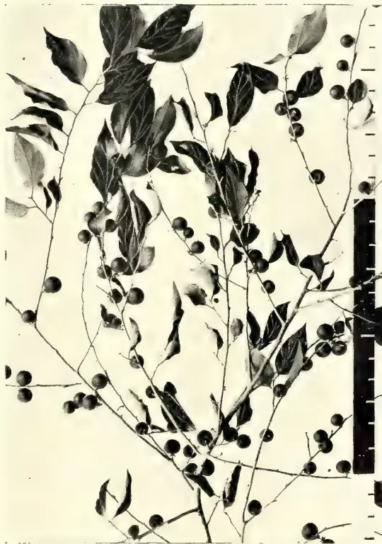
A black and white photograph of a plant branch, likely a specimen for botanical study. The branch features several dark, oval-shaped leaves with prominent veins. Interspersed among the leaves are clusters of small, round, dark fruits. A vertical ruler is positioned to the right of the branch, providing a scale for the specimen. The background is a plain, light color.Photo by H. F. Macmillan.
"CEYLON GOOSEBERRY."
ABERIA GARDNERI.
The Tropical Agriculturist Supplement for November describes on page 407 a mango with only the trace of a seed as occurring in Hawaii.
It may be mentioned that a similar mango has been long known in Ceylon, and is called in the vernacular puhu-amba.
The tree is not common, no doubt owing to difficulty of propagation, as budding and grafting is unknown among the Sinhalese, and such trees as exist are practically a monopoly of the families that have given us our Maha Mudaliyars. On this account probably the mango has come to be known as the "Maha Mudaliyar" mango.
The Ceylon fruit, unlike the Hawaiian one, is comparatively small but is deliciously sweet. It is almost unknown in the market.
In the Pasum Korale is a famous old tree which is the property of the Perera family whose head was the Maha Mudaliyar before the present chieftain's father. No land goes with the tree, only the produce being claimed.
The present Maha Mudaliyar, Sir Solomon Dias Bandaranaike, owns more than one tree; and grafted trees are also to be found on the properties of the late Dr. William Dias Bandaranayake who, after his retirement from the medical service, became an enthusiastic agriculturist.
Through the kindness of the owners of these trees the Secretary of the Ceylon Agricultural Society has arranged to raise plants by approach-grafting for the benefit of members.
There are some excellent mangoes in Ceylon, but they are seldom or never found in the market. The best of these are special strains of the "Jaffna," "Rupee" and "Parrot" mango. The mangoes offered for sale rarely include the proper "jat" of these varieties.
Again, take the mango as found in the Jaffna Peninsula. The climate and soil have produced about a dozen varieties quite different from anything found in the wetter parts of the Island. Curiously enough, what is called the "Jaffna" mango in Colombo is known as the "Colombo" mango in Jaffna; but the "Colombo" mango of Jaffna is much superior in flavour to the "Jaffna" mango of Colombo. Another excellent Northern variety—the commonest—is the "Chempadi."
Grafting is to some extent practised in Jaffna and grafted plants of the best mangoes of the North can be secured by arrangement, but they cost more than plants imported from India where grafting is very extensively practised.
Strange to say, there has been no anxiety on the part of members of the Society to secure grafted plants of mangoes from the North, though a supply was specially secured by the Secretary. They either dislike paying Rs. 3 for a Ceylon plant when they can get an Indian plant for Rs. 1.50, or, like many people, prefer an imported article to a locally produced one—irrespective of their real merits.
432[DECEMBER, 1912.The India-Rubber Journal of October 19, 1912, states it has been argued that Hevea Brasiliensis is such a hardy tree and greedy feeder that it will flourish even among rocks, and expenditure on manuring need not therefore be considered. Hill-sides, flat plains, drains, swamps, volcanic soils, gravelly and stony terraces and other types of land appear to provide sufficient nutrition for the rapid and continuous growth of Hevea trees.
A very instructive lesson can be learnt from the experience of planters dealing with other products in countries where rubber trees are also grown. Probably the best example is furnished by the tea-planting industry in India, Ceylon and Java. There are many estates which have raised their output per acre, per annum, from 300 to over 600 lbs. by the application of manures at regular intervals. It may, quite reasonably, be argued that the results obtainable with a leaf product such as tea are no guide to those which might accrue from the same treatment of rubber. But it can be shown that manuring has a beneficial effect not only on leaf, but on fruits and bark products. The effect of manures on fruit crops—coconuts, cacao, coffee—is not always so obvious as in the case of tea, but it is now common knowledge that judicious manuring does increase the crop, and in many instances is absolutely necessary.
Unlike tea, coconuts, coffee and even cacao, rubber plants grow into trees of enormous size and themselves form a dense forest. The soil under forest vegetation of any type improves in mechanical and chemical composition with age, owing to the protection which the trees afford to the soil, to the action of the roots and the accumulation of leaf-mould. The annual fall of leaf from Hevea rubber trees ultimately effects an improvement in the soil in which the trees are being grown. This is borne out by the analyses of the soils at Heneratgoda, the results proving that the organic matter, potash and nitrogen, are greater in the soil which has been under rubber for twenty-nine years than that maintained under pasture; the lime and magnesia have decreased under the old rubber, while the phosphoric acid is the same under both conditions.
But these improvements do not justify any proprietor in declining to assist nature and to supply still more food to the growing tapped trees.
Where the soil is naturally very rich, it is granted that the turning over of the soil by forking or chankolling will have as great an effect as the actual application of manures on other soils.
In tillage operations several points have to be borne in mind. In the first case it must be remembered that the destruction of Hevea roots may increase the amount of dead organic matter in contact with living roots, and therefore considerably increase the risks from diseases in this and other ways. It is quite clear that if root destruction is unavoidable the roots must be cleanly cut and not torn; the depth to which different soils need tilling will determine whether that operation can be best done by forking or chankolling.
DECEMBER, 1912,]433The application of manures to rubber trees is followed by a more rapid growth of all parts of the plant, the bark included. Now the "bark is the mother of rubber." The greater the weight of bark the larger the number of latex tubes, and therefore the greater the weight of rubber.* You cannot have the bark of healthy Hevea Brasiliensis, Manihot Glaziovii, Castilloa elastica, Ficus elastica or Funtunia elastica trees without latex. Latex is present in the bark of healthy trees and if removed from any particular part it soon accumulates until approximately the old equilibrium is re-established in the affected area. If more bark is formed as the result of manuring, it will assuredly become filled with latex like the renewed bark which takes the place of that removed during paring operations.
It being taken for granted that manuring does stimulate the growth of the plant and that a total increase in plant tissues means an increase in the rubber content, it now remains to prove that an increased rate of growth is desirable. It is asserted by many that there is a maximum rate of growth in all plants which it is not desirable to exceed. It is common knowledge that manures can "force" plants and that the resulting specimens may be really weak and unable to stand well against the ordinary variations of environment or the attacks of pests and diseases.
Viewing the rubber planting industry in its widest sense, there is no doubt as to the necessity of manuring and tillage. Estates have been planted on poor soil, at high altitude and in uncongenial climates; others have been planted at close distances and after thinning out the remaining trees present a backward appearance. Numerous estates are not able to tap the renewed bark because it has not grown so rapidly as was expected, and monkey tapping, V tapping on restricted areas and other methods have been resorted to. There would be no difficulty in quoting a large number of estates possessing trees which badly require either a good rest or extra food to stimulate the rate of growth.
Those proprietors who admit the necessity of manure are sometimes sorely perplexed because there is very little information of a reliable character respecting the components and quantities of the different ingredients which should be applied. It is true that experiments have been made in Hawaii, Sumatra, Ceylon, and Malaya, but in no case can we confidently accept the results for general guidance.
Mr. W. CRADWICK writing to the Journal of the Jamaica Agricultural Society on the tarring of wounds when pruning trees, observes that the operation is often looked upon as the most simple one connected with the art of pruning and is usually relegated to a boy or the most careless and ignorant of a band of pruners. Tar is often plastered on to such an extent that it runs from the wound tarred, down the stem of the tree to the ground, wasting the tar and in the case of young trees doing them considerable harm. Tarring of wounds should be done by experienced men only. To tar a wound avoid fancy experiments and troublesome mixtures. Rub a little coal tar thoroughly into a wound so that even the most minute crack will be filled up, the thinnest form of tar being applied. If the tar is hot so much the better but this is not absolutely necessary, though it should be rubbed in hard. The best brush is a piece of the half-dry coconut husk.
* We believe this has not yet been demonstrated. ED. T.A.
55 434[DECEMBER, 1912.The Geographical Journal for August, 1912, reports a lecture delivered by SIR WILLIAM WILLCOCKS, K.C.M.G., before the Royal Geographical Society on June 10, 1912. Lecturing in November, 1909, in this hall, on "Mesopotamia, past, present and future," he said:—I placed the Garden of Eden of our Bible on the upper Euphrates between Anah and Hit. Here must have been the first civilized settlement of the Semites, the ancestors of the children of Israel, as they moved down from the north-west. And it may interest some to know that in the latitude of this region, not far from Damascus, wild wheat plants have within recent years been discovered. The wearing down of the cataracts deprived the settlers of the waters of the friendly river which had watered their garden, and they travelled eastwards and could see behind them nothing but the bitumen springs on the east of Eden, which seemed to them like flaming swords in the hands of the offended seraphim. Like all early peoples they called themselves the sons of men who had already conquered the Tigris-Euphrates delta, and among whom had settled those of their sons whose hands were stained with blood and who could no longer be permitted to reside in the tents of their tribe.
As these people understood nature, the river by itself could not begin life until its waters had mingled with those of the sea, and from their union under the action of the flux and reflux of the tides sprung the marshes where life began on earth. As a matter of fact, salt water never reaches the marshes owing to the delta of the Karan lying between them and the sea.
The effect of the 10-foot tide in the gulf is communicated to the rivers, and travels up nearly 100 miles, but no salt water gets into the marshes. To the writers of these very early epics the Deep was a fresh-water deep.
With translations of the Babylonian tablets of creation in my hand, and the plans and levels of the country before me, I have endeavoured, on the spot, to give local colour to the passages describing the Garden of Eden of Sumer and Akkad. After some thousands of years, the Euphrates in these reaches is again traversing wide marshes. For some 70 miles in length the river has left its old channel and, flowing over a flat plain some 12 miles wide, is covering it with 2 or 3 feet of water. I have seen Arabs taking reeds and earth and throwing up well-protected banks in the time of low supply and so enclosing areas of land for cultivation and habitation, which will be safe from the attacks of the Euphrates.
When human beings first appeared on the earth and for many a generation afterwards, men could only have just held their own against wild animals and, while their dwelling-places were surrounded by forests and jungles, the unending struggle must have left them but little time to make any real advance in civilization. It was far different in oases of Arabia and practical oases like Anah and Hit on the upper Euphrates. Here it was possible for men to destroy the existing wild beasts and as their numbers could not be recruited out of the deserts, they were exterminated; and men had leisure to become
DECEMBER, 1912.]435gradually civilized. "Amalek was the first of the nations" was spoken with knowledge of the Arabs stretching from the delta of the Nile to the upper Euphrates. Living in tents and using gourds for vessels, they have left no traces such as we see in Egypt and Babylonia; but Arabia has been able to pour forth from her parched loins her virile sons who began the subjugation of both the Nile valley and the valley of the Euphrates. Everything in Egypt was easy and to hand; the Nile was and is the most stately and majestic of rivers and carrying a moderate amount of deposit creates no serious difficulties for the dwellers on its banks; the Garden of the Lord, the land of Egypt, is very fertile; and the climate is mild in winter and never parches in summer. Egypt, therefore, produced no world ideas. None of her sons were possessed of a fine frenzy with eyes glancing from heaven to earth and earth to heaven. It was far different with Babylonia. The Tigris and Euphrates in flood are raging torrents and their ungoverned and turbid waters need curbing with no ordinary bridle. Babylonia's soil is very fertile, but the winters are severe indeed and the summers savage and prolonged. The range of temperature is between 20° and 120° in the shade. Brought up in a hard school they possessed virile intellects. Moses' first contact with Babylonian beliefs and creations in the house of the priest of Midian on the slopes of Horeb, entranced him; in the burning bush of the deserts he saw the footsteps of the Almighty, while heavenly voices spoke to him out of the storms raging on the summit of Sinai. In connection with this we must remember that Moses' wife is called, in one place, a daughter of the priest of Midian, and in another a Cushite or Babylonian woman. Her father was probably a learned Babylonian exercising priestly functions among the Arabs.
The extraordinary dry heat of the summer, by day and by night, gives a lustre to the stars, a distinctness to the constellations, and a glow to the fields of powdered stars (called here the milky way) which cannot be conceived by one who has not spent the whole summer in the plains of Shinar. The sons of Sumer and Akkad were the first astronomers and thinkers of the world. They divided the year into months, the months into weeks and the weeks into days, on a system which lasted to the days of Julius Cæsar. They created the sabbath day, peopled heaven with Cherubim and Seraphim, and they first saw Orion leading out the starry hosts of heaven. Perennial irrigation was their creation and that in the face of floods such as the Tigris and Euphrates bring down. By their skill they introduced wheat on the Earth, but in the domain of abstract thought they were especially predominant. In evolution they out-Darwined Darwin.
Seeing the delta of the rivers which had been at the mercy of the high floods, gradually reclaimed, and steady progress on every side of them, they cast their thoughts back and saw as the beginning and origin of everything, infinite chaos represented by the devastating spirit of the floods of the river mingling with the wasteful spirit of the sea and producing monstrous births; but less monstrous than themselves. Tiamat, through her union with Apsu, gave birth to Lakhmu and Lakhmu, and ages increased, and Ansar and Kisar were born. Long were the days and indifferent gods came into existence; then long intervals of time elapsed and the good gods were evolved, each better than those who gave them birth, until finally Marduk appeared, the greatest and most beneficent of all.
436[DECEMBER, 1912.Now, where was the original home of these interesting people, to whom we all owe so much? For reasons already given, it must have been in some country of oases surrounded by deserts, and Arabia is such a country, and at their very doors. The oases of Arabia are close at hand to both the Nile and the Euphrates and the natural overflow of the surplus population would be Egypt and Babylonia.
Every part of the Euphrates delta, from Hit to the Persian gulf, has at some time or another been called "Eden," the irrigated and cultivated plain, as distinct from "Kura," the unirrigable hill or plain. So in Egypt to-day the "reef" is the irrigated plain and everything else is the "jebel," the desert where there is no rain and hill or mountain where there is rain. Soil and climate are eminently suited to fruit gardening. From date palms and oranges to peaches and plums every fruit tree is at home. The date palm is really the indigenous tree of the country. "Put its feet in water and its head in hell and it will do all the rest" is the saying of the people.
Referring to the Agricultural Organization Society, the London Times of November 1 says that in order to qualify for grants from the Development Fund, the Society has now been reconstituted to meet certain conditions laid down by the Board of Agriculture and Fisheries and the Development Commission.
Under the conditions the work of agricultural organization on co-operative lines is to be continued on a more comprehensive scale. The first governors, who hold office until April 1914, have been appointed by the Board of Agriculture and the Development Commission jointly and in addition to representatives of the old society's governing body, include representatives of important agricultural interests and other public bodies, e.g.: The Board of Agriculture, the County Councils Association, the Co-operative Union, railway companies and the County Land Agents' Association. MR. R. A. Yerburgh, M.P., has been appointed the first president and Lord Shaftesbury the chairman of the governors. The first meeting of the governors took place on October 9th last at the Westminster Palace Hotel.
Mr. R. S. Nevill, Tobacco Expert, writing to the Queensland Agricultural Journal of November, 1912, remarks that because tobacco is growing wild about the country it is no evidence that it can be cultivated profitably in any district. It requires a friable and not too heavy soil, a fairly humid climate though the rainfall may not be heavy. Pipe tobacco should be grown on the high country above the Range, inland, and cigar tobaccos on the coastal country.
It should be remembered that tobacco will not grow everywhere and for the information of intending growers he suggests that only a small experimental plot be tried at first and samples of the cured product submitted to manufacturers before going in largely. Good tobacco of both varieties is in demand at good prices.
DECEMBER, 1912.]437The Report of the Director (Mr. MacKenna) for the year ended June 30th, 1912, is to hand, and has as its chief heads: Agricultural Education, Agricultural Research and Experiment, Demonstration, Publications and the supply of information.
In Agricultural Education a small beginning has been made in training District Agriculturists by taking them through a short course of lectures and practical work in Agriculture, Chemistry, Botany and Entomology: while a hand book on School Gardening is about to be issued with a view no doubt of developing work on lines similar to those adopted in Ceylon.
Under Agricultural Research and Experiment a system of Agricultural Surveys, which are mainly crop Surveys, has been established in order to collect information so as to organise work on the most correct lines. At the two Agricultural Stations (one in Mandalay and another at Hmawbi) attention has been given to seed production with a view chiefly to meet the large demand for improved and selected seed-paddy. While these Stations or Farms are doing excellent work, the Experimental Gardens do not appear to have been much of a success, though from a financial point of view they have more than met the cost of their upkeep.
The rapidity with which the ground-nut industry came to be established in Burmah is well known. The area under the crop during the year was 142,316 acres against 102,232 in the previous year.
The record of cotton experiments with the object of introducing exotic varieties is reported to be one of complete failure; the only satisfactory results being those obtained with Cambodia cotton (the variety that has taken so well in the Madras Presidency) which gave a yield of about 108 lbs. clean cotton per acre.
As regards tobacco the average export of the manufactured product for the last five years has been close on 3,000 tons, that for the year under review figuring out at nearly 5,000 tons. This represents an average annual area of some 80,000 acres under the crop. The Department has for some time been distributing Havana and Virginia seed among growers and the Director is of opinion that the distribution has had a marked effect on the tobacco supply of the country.
Under rubber we read that the planting up of new estates is going on with vigour though it is feared without due regard to suitability of conditions.
Lemon grass cultivation is attracting some attention and locally extracted oil is fetching 50 cts. per oz. on the spot.
During the year the Department had numerous indents for castor seed which bids fair to become an important crop in the Province.
Experiments with soya bean were disappointing.
The Director speaks hopefully of the new Department as having settled down to useful and practical work with a better understanding of the special lines to be adopted, and expresses his conviction that in Co-operative Credit Societies the Department recognises an agency which will be of great assistance in giving practical effect to its recommendations—an opinion in which we entirely concur.
438[DECEMBER, 1912.Mr. W. H. HARRISON who has written an interesting "Note on the Indigenous Manures of South India and their Application" states, that the second portion of this note deals with the application of the manures indigenous to South India and it may here be at once stated that the dry lands generally receive practically no manuring, nor is it probable that they will do for some years to come. He observes that the value of crops usually raised on such lands is comparatively small and the ryots who cultivate them solely have no money to spare for manures, while a cultivator who possesses both dry lands and lands of a richer type such as garden or wet lands, naturally prefers to put his manures on the more productive soil. In a general way practically all the lands in South India are capable of yielding larger crops than at present and consequently as the demands on the food-supply increase, the tendency will first of all be to extend the productiveness of the wet and garden soil and not until these are yielding fully will any great development occur in dry land agriculture.
Green Manuring finds its main application in paddy cultivation and for this purpose green leaves and stems of Crukka (Calotropis gigantea) and Wild Indigo (Tephrosia purpurea), the leaves of such trees as the Rain tree (Pithecolobium saman), Portia (Thespesia populnea), Pungam (Pongamia glabra) are trampled in at the time of puddling, or in some districts special green-manuring crops of the type of sun-hemp are raised for this purpose. Tests at Palur and Coimbatore show that this system of manuring gives an increased yield in paddy grain of about 18 to 20 per cent. and at the same time the cost of the manure is small.
Castor-cake is generally looked upon by the ryot as the best oil-cake for manurial purposes, but its use is restricted mainly to valuable crops such as paddy, sugarcane, betel-vines, etc. In the Godavari it is chiefly used on sugarcane, and its general use for this purpose has led to a large import trade from the surrounding districts.
Neem cake is in great demand by tea and coffee planters thus accounting for the large increase in price during recent years, but on the plains its use is not extensive compared to other cakes. It is reported that its use for paddy has rapidly extended in the Tinnevelly district during the last few years.
Experiments carried out on the Government farms show that cakes are efficient manures for paddy, but that the same effect can be obtained in a cheaper manner by green-manuring. On sugarcane the experiments at Samalkota show that here it is the manure most suited to the local conditions and that it is superior either to farmyard manure or artificials.
Castor-cake has also given encouraging results with the following irrigated crops: cholam (Andropogon sorghum), ragi (Eleusine corocana), turmeric and pepper. On cotton oil-cake has practically no effect.
Fish Manure has proved itself a very valuable and cheap manure for most crops and is very commonly used on the West Coast. Mixed with wood ashes it forms a complete manure and gives good results with sugarcane and pepper. The effect on paddy is good, a dressing of 540 lbs. per acre giving at Coimbatore an increased yield of 52 per cent. in grain and 34 per cent. in straw.
DECEMBER, 1912.]489In contributing an interesting article to the West India Bulletin on the subject of "Bud Rot of the Coconut Palm," Mr. J. B. Rorer, Mycologist to the Board of Agriculture, Trinidad, says that bud rot is undoubtedly the most serious disease of the coconut palm. It has been known for many years, but recently has attracted much attention throughout the West Indies on account of the losses resulting from its ravages and the increased value of coconut properties.
CAUSE OF THE DISEASE.—For many years, the cause of the disease was a matter of mere speculation, with the result that it was ascribed by many investigators to poor soil, lack of drainage and a great number of different insects and fungi. Within the past few years, however, careful studies have been made and the conclusions reached show that bacteria are the real cause of the trouble and that insects are instrumental only as carriers of infection.
J. R. Johnston, late of the United States Department of Agriculture, who has spent several years in the study of bud rot has proved by inoculation experiments that the disease is due to a specific bacterium which is so like Bacillus coli that the two cannot be distinguished; in fact he states that the disease can be produced by inoculation with pure culture of B. coli.
CHARACTERISTICS OF THE DISEASE.—The disease gains entrance to the trees as a rule at the bases of the leaves or flower stalks. When the point of first attack is in the outer leaves or older flower stalks, the bud and young leaves may remain unaffected for a long time; but if the infection takes place in one of the central leaves, the bud soon rots and falls over often, leaving some of the nut clusters and outer leaves still attached to the tree. The course of the disease, once it has gained entrance to the tissues, may be either slow or rapid, depending upon many conditions, but in all cases the result is the same: namely, the whole top falls from the tree leaving the naked stem standing.
Whether or not the bacteria can gain entrance to the tissues through the unbroken epidermis or whether a wound is necessary he has not been able to make out. However, it is possible to infect trees without wounding them artificially, simply by pouring a pure culture of the causative organism into the crown.
Bud rot must not be confused with the so-called root disease although both may be present in the same tree. The latter trouble is always characterized by discoloured roots and a distinct red ring of tissue in the stem; while in the case of bud rot pure and simple the roots and lower stem seem perfectly healthy.
PREVENTIVE MEASURES.—Bud rot has been quite prevalent in Trinidad, but measures are being taken to prevent its spread. So far sanitation alone has been used; but the good results have been very marked in that the disease has been greatly reduced. To prevent the spread of the disease, trees which had been dead for a long time were simply felled, cut into junks from 4 to 6 feet long, piled around the stump together with as much
440[DECEMBER, 1912.trash as possible, and burned. In cases where the trees were just beginning to show signs of the disease or had recently died, all infectious material such as the bud, the leaf bases and flower stalks and the upper portion of the stems, was destroyed at once. This was accomplished by burying the whole mass with lime in deep trenches; the remaining portion of the trunk may be cut up and burned as in the other cases.
Since this work has been done there has been a marked reduction in the cases of new infections and it points rather conclusively to the fact that the disease can be held in check by these sanitary measures, provided they are enforced on every property.
Although no trials have been made here in spraying coconut trees on account of the difficulty of the work, some success has been attained in keeping down bud rot by the use of disinfectants placed by hand in the crown of the trees. Salt is the commonest substance used. A pound or two of coarse salt can be tied in a piece of coconut fibre and suspended in the crown of the tree in such a position that the rains will wash the brine down into the leaf bases. Some planters have tried iron sulphate and have reported favourably on its use; while still others use copper sulphate.
The following appear in the Bulletin of Agricultural Statistics for October, 1912:—
BELGIUM.—Tobacco has suffered from the damp, especially at the time of drying and its quality is affected.
FRANCE.—The harvest is considered to be good.
IRELAND.—At the present moment the harvest is almost finished; as regards the quality it is inferior to the average but superior as to quantity.
SWITZERLAND.—The harvest of tobacco seems to be about normal. Tobacco growers are satisfied with both the quality and quantity.
CUBA.—Preparatory work, as well as sowings, are being carried out under good conditions.
EGYPT.—The Cotton worm has now spread to all parts, but no very serious damage has been done since that reported last month. It is now less likely to occur, as the cotton is ripening quickly in all parts.
The Gardeners' Chronicle for October 1912 states that the use subserved by the milky juice or latex which occurs in many plants: Euphorbias, Poppies, and rubber-producing species generally, has been the subject of much discussion among botanists. Some hold that it is of the nature of a waste product; others that it represents an accumulation of food materials on which the plant may draw in time of need; others again combine these views and regard the latex, which contains various substances in solution and suspension, as serving both functions. Recent work by Bernard (Ann. du Jard. Bot. de Buitenzorg 1910) serves to show that latex may be a reserve of food substances. By cultivating laticiferous plants in an atmosphere containing no carbon dioxide the formation of sugars is suppressed and the starved plants utilise the starch grains suspended in the latex.
DECEMBER, 1912.]441Mr. Temple A. J. Smith, writing to the Journal of Agriculture, Victoria, for October, 1912, says the value of lime for soils in which tobacco is produced has not yet been sufficiently recognised by growers in Victoria. Most of the land used for this purpose has been shown by analysis to be deficient in lime, and even where the land is known to have a fair percentage, applications especially in some new form, have advantageous results.
The ash of the tobacco plant contains large proportionate amounts of lime and potash, with a low percentage of phosphoric acid, as the following figures show, viz:—
| Nitrogen | ... | ... | ... | 4.12 |
| Potash | ... | ... | ... | 6.20 |
| Phosphoric acid | ... | ... | ... | .62 |
| Lime | ... | ... | ... | 5.50 |
| Magnesia | ... | ... | ... | 1.67 |
Tobacco is evidently dependent on lime as a food, he states, and for that reason alone a supply should be provided where it is known a deficiency exists.
The application of lime, apart from its value as a food in itself, is of even greater importance in regard to its effect in releasing and indirectly supplying potash and nitrogen for the crop's benefit. Lime also assists in supplying nitrogen indirectly, and at a greater rate, owing to its influence on nitrification and the temperature of the soil is slightly increased, an important matter in regard to tobacco.
The mechanical effect of lime on the soil in relation to tobacco-growing is especially valuable. All tobaccos thrive best and are of better quality, when produced from free and well aerated soils; consequently the flocculating power of lime on those soils, liable to set closely, renders them more open and friable, bringing about the desired result.
Its effect on the soils is highly beneficial in counteracting acidity, in this way not only inducing a better growth of the crop but materially influencing the curing processes and fermentation later on in the sheds, this being due to the effect of the alkali supplied to the plant which, if deficient in quantity, interferes with the development and action of the enzyme, or ferment, through whose agency the cure and fermentation of the leaf is perfected.
The different forms of lime procurable have somewhat different effects on tobacco soils. Where heavy swamp land or peaty soils are cultivated the use of builders' lime, "burnt lime," will be found most advantageous. The builders' lime applied at the rate of from 5 cwt. to 10 cwt. per acre in the autumn will assist in decomposing the rough organic matter in the shape of undecomposed roots, weeds, etc., and render the soil sweeter and better fitted to produce good quality of leaf. On clay or silty soils the burnt lime also is desirable as it improves the temperature in cold soils and makes them more friable and open. On sandy loams gypsum
56 442[DECEMBER, 1912.](sulphate of lime) gives good results, as also on chocolate soils; larger amounts, however, should be used, from 10 cwt. to 2 tons, as its effects are not so pronounced as those of the burnt lime. In all soils short of humus gypsum is safer to use than burnt lime, not having the caustic properties and consequently not destroying the vegetable matter to the same extent.
The Financial Times of November 1, 1912, reports that at the second ordinary general meeting of the shareholders of the Manihot Rubber Plantations, Ltd. (East Africa), held on 31st October last, the Chairman of the Company remarked that last year they had produced 20,653 lbs. of rubber in a period of thirteen months, and this year they had produced 27,775 lbs. in the ten months under review. Last year they obtained for their rubber, in round figures, 3s. 7d. per lb., this year 4s. 2d. per lb. The yield for 382 acres planted and producing came out at 72.7 lbs. of dry rubber per acre.
The same paper publishes the remarks made by Mr. Moreau, Chairman of the Brie Rubber Estate, Ltd., from which we learn that the profit and loss account discloses a profit of £9,500 14s. 7d. on a production of 68,000 lbs. of rubber as against a profit for the previous year of £2,886 17s. 4d. on a production 33,913 lbs. of rubber, which works out roughly to having more than trebled the profit on doubling the out-turn. The net price realised was 1½d. per lb. more than for the previous year, whilst the cost per lb. was much less on the increased production. This cost is now down to 2s. 2¾d. per lb. all in, and should become less as production increases. This 2s. 2¾d. per lb. cost includes depreciation and the whole of the London charges and Directors' remuneration, in addition to the estate cost, freight, insurance, brokerage etc.
We draw the attention of our readers to the following account which appears in the Queensland Agricultural Journal for October, 1912. The Acting British Consul at Christiania (Norway) stated in May last that the local newspapers published an account of a new kind of artificial manure which had been produced under the name of "bi-phosphate," said to be a by-product in the manufacture of nitrate of lime. On the 6th July the "Agricultural News," Barbados, referred to this manure, a notice of which appeared in that journal for 11th May, and quoted the "Board of Trade Journal" for 2nd May, 1912, in which further information is given concerning the manure:—
A sample of this has been forwarded to England by the British Acting Consul at Christiania, and it is stated that the product contains 26 per cent. of phosphoric acid and 23.8 per cent. of nitrate of lime. Of the phosphoric acid, 92 per cent. is in the citrate-soluble form, which means that this proportion will dissolve in a standard solution of ammonium citrate.
The further statement is made that the manure will be placed on the market, in future, with considerably higher percentages of both phosphoric acid and nitrogen.
It is expected that the price of the new manure will be low; its chief use will be in the replacement of superphosphate and basic slag. It is manufactured at the Notoddin Nitrate Works, Norway.
DECEMBER, 1912.]443The Agricultural News of September 28, 1912, publishes a note on the Feeding and Manurial Value of Lime Skins by H. A. Tempany, Superintendent of Agriculture for the Leeward Islands:—The disposal of the expressed skins obtained in the extraction of lime juice by milling is a question of some interest to those engaged in the lime industry. In some cases the lime skins are simply thrown away, but a far better practice is to utilize them either for feeding stock or for manurial purposes direct.
Cattle will eat lime skins readily and they possess value both directly as a fodder and also as a relish to the ordinary rations of stock.
On certain estates in Dominica the practice exists of making a species of ensilage of lime skins; this appears to be a useful method of dealing with them, since the limes produced in excess of the requirements of the stock on an estate during crop time can be utilized for feeding purposes out of crop. When properly handled, lime skins do not appear to suffer any deterioration when treated in this way.
The following analytical data obtained in the Government Laboratory for the Leeward Islands concerning two such samples of ensilage from estates in Dominica are of some interest in view of the complete absence of published information of this character at the present time. The samples were obtained and forwarded by Mr. J. Jones, Curator of the Botanic Station, Dominica.
| Sample A, | Sample B. | |
|---|---|---|
| Moisture . . . . . | 79.6 | 76.5 |
| Nitrogen . . . . . | 0.293 | 0.246 |
| Equivalent crude protein . . . . . | 1.83 | 1.54 |
| Crude fibre . . . . . | 3.2 | 5.1 |
| Extracted matter . . . . . | — | 1.9 |
| Albuminoid nitrogen . . . . . | 0.114 | — |
| True protein . . . . . | 0.712 | — |
In the case of neither sample was the ash determined. Other determinations tend to show, however, that the ash content of lime skins is in the region of 1 per cent., assuming this value in the case of Sample B, we arrive at an approximate value of 14.0 per cent. for the crude carbohydrate content and 12.2 for the albuminoid ratio on the crude protein.
From this it will be seen that the ensilages have a distinct feeding value, though they are somewhat deficient in proteins. Under the head Extracted Matter must be included the residues of the essential oil not expressed in the processes of écuelling and milling; it is to this and the residues of citric acid, included under the head crude carbohydrates that the skins owe their value as a relish.
The following analysis of the manurial value of lime skins is reproduced from the Report on Sugar-cane experiments in the Leeward Islands for 1905-6:—
| Nitrogen. | Ammonia. | Phosphoric acid. | Potash. |
|---|---|---|---|
| 0.314 | 0.381 | 0.006 | 0.148 |
From the above analysis it is calculated that lime skins are worth $ 0.95 per ton for manurial purposes,
444[DECEMBER, 1912.Manurial experiments are being made on two coconut estates in Trinidad and on one estate in Tobago, says the West Indian Bulletin. These experiments are under the control of the Board of Agriculture.
The manures are supplied free of cost to the proprietors but the cost of application as well as the cost of general cultivation are borne by the estate owners.
There are eight plots in each estate, two of which were only forked and no manure applied. These are kept as control plots.
The following experiments are being made :—
| Manures applied per tree. | Cost of manures per tree (landed in Port-of-Spain). |
|
|---|---|---|
| 1 | { 4 lb. lime | $ c. |
| { 4 ,, kainit ... .. | 4.86 | |
| 2 | { 6 ,, basic slag | |
| { 1 ,, sulphate of potash ... .. | 7.28 | |
| 3 | { 4 ,, basic salt | |
| { 2 ,, nitrate of soda ... .. | 7.68 | |
| 4 | { 2 ,, calcium cyanamide | |
| { 2 ,, sulphate of potash ... .. | 10.56 | |
| 5 | { 2 ,, bone meal | |
| { 1 ,, sulphate of ammonia ... .. | 14.22 | |
| { 150 ,, pen manure | ||
| 6 | { 2 ,, superphosphate of lime | |
| { 1 ,, sulphate of potash ... .. | 13.75 | |
| { 150 ,, pen manure |
The manures were spread broadcast, about 3 or 4 feet from the trunk of the trees and 2 feet from the edge of the drains, and the surface loosened to a depth of about 6 inches with the aid of a fork.
Records of pickings are being kept from July 1, 1911. Printed forms were supplied to the owners for forwarding the results of each picking.
The nature of the soil and approximate age of the trees under experiment are shown below :—
| Nature of soil, | Approximate elevation, feet. | Rainfall Jan. to Dec. 1910, inches. | Date when manure applied, 1911. | Age of trees years. |
|---|---|---|---|---|
| Undulating clay loam ... | 100 ... | ... | July ... | about 25 |
| Flat sandy ... | 25 ... | 80.56† | July ... | about 35 |
| Flat sand loam. | 30 ... | 85.47 | May ... | 20 to 25 |
* No rainfall taken, † Average rainfall for 11 years is 56 inches.
DECEMBER, 1912.]445At Beaulieu the experiments are being made in these sections or series; each plot is represented by a single row of palm trees. The plots in one series have received similar treatment to the corresponding plots in the other two series.
The palm trees are planted at a distance of 24 feet, and the area under experiment on each estate is approximately 8 acres or 24 acres in all.
As these experiments have only lately been started, no records of yields are as yet obtainable.
The Geographical Journal for November states that the first instalment of the vast works planned by Sir W. Willcocks for the irrigation of Mesopotamia by the storage of the Euphrates water is now nearing completion. Details as to the present position of the work, which is being carried out for the Turkish Government by the engineering firm of Sir John Jackson, Limited, have lately been received by Reuter's agency. The part of the scheme first taken in hand has been the building of the great barrage at Hindieh, with associated works by which the water is to be distributed down the old branch of the river, past the site of Babylon, to Hilla. The barrage is being built to the east of the present bed of the Euphrates, and will be 250 metres long, with thirty-five arches fitted with sluice-gates. The piers of these arches are now completed up to the springing of the latter. This barrage will raise the level of the water by 7 metres, while a subsidiary barrage immediately below will provide for a further difference of metres. Adjoining the upper barrage there will be a lock for the use of the river traffic, while the lower barrage consists of a lock and a huge shelf of masonry. Work has also been begun on the Hilla regulator, a little above the barrage, which will consist of five arches. The excavation for this has been done and the masonry begun. These works finished, an earthen dam will be thrown across the stream, which will thus be turned into its new bed between the barrage and the regulator. The old branch has been cleared out, and will be properly canalized, while at Habbania an escape is being constructed by which the flood-water will be carried off into the old Babylonian reservoir. It is estimated that 600,000 acres of land will be plentifully irrigated as a result of the works. The operations have involved a vast amount of excavation, concrete work, masonry, pitching, etc., but there has of late been a plentiful supply of local labour.
The Commissioner of Settlements and Land Records, Burma, reports under date 12th November, 1912, that the area under rice cultivation in the sixteen principal rice-growing districts of Lower-Burma is now reported to be 7,804,986 acres. This is 431,887 acres more than the area actually cultivated last year, but 29,876 acres less than the area as estimated in the first forecast. Almost the whole of this decrease is in the Insein and Syriam Districts. The area destroyed has risen to 81,381 acres, an additional 15,000 having been flooded in the Twantè Township of the Syriam District since the first forecast. Standing crops are healthy and prospects are good, but in areas where transplanting was late, and on high land more rain is wanted.
446[DECEMBER, 1912.]The West Indian Bulletin has a paper on the above subject by Mr. F. W. Urich, Entomologist to the Board of Agriculture, Trinidad. Mr. Urich states that on the whole the coconut palm is fairly free from any serious insect pest; occasionally attacks are isolated and sporadic; many of the insects appear to follow fungus disease or attack trees growing under unfavourable soil conditions; others again are well kept in check by natural enemies and only increase when these enemies are prevented from doing their work.
The palm weevil (Rhynchophorus palmarum) has always been credited with being most destructive to coconuts, but with few exceptions is generally a secondary pest. The female beetle appears to be attracted by the acetic fermentation which takes place in diseased trees; further, in most cases it has been observed to select only trees injured by cuts, cracks or abrasions for ovipositing. Young trees up to four and five years of age are those mostly attacked. Full-grown trees are not touched. Mr. Dolly of Myaro, a most careful observer, states Mr. Urich has pointed out that when young trees are growing in old cultivation the falling fronds of the tall trees sometimes damage the tender leaves of the small ones and so open the way to a beetle attack. The part of the stem selected is generally the soft tissue near the top and at the bases of the fronds, the larvæ sometimes eat into the petiole of the leaf when it is fairly young.
The remedies employed have been preventive and consist in tarring wounds. If the growing point is attacked, and as long as the bud is not damaged, the larvæ are cut out and the wound dressed with tar.
The bearded weevil (Rhina barbirostris) has different habits from the preceding species, inasmuch as it attacks full or half-grown trees. It confines its attack only to the stem. The damage is done by the larvæ which bore regular galleries in the hardest part of the stem. Like the palm weevil, the bearded weevil is attracted by fermentation and it is significant that trees suffering from bud rot are attacked at the top and those affected by root disease at the base of the stem. The female beetle is not attracted by wounds but when she lays eggs she gnaws a little depression in the hard bark of the stem. The methods of control adopted have been preventive and consist in tarring the stem of the trees that have been scorched. A mixture of white lime, to which is added 5 lb. of arsenate of lead to every 50 gallons of solution, is also used. Ambrosia beetles (Xyleborus perforans) and allied species attack trees under the same conditions as the bearded weevil.
There is quite a number of caterpillars, Coccidæ and Aleyrodidæ to be found on coconut leaves, but with one or two exceptions none of them do any damage as they are either not numerous or are kept in check by natural enemies.
DECEMBER, 1912.447Some spraying experiments undertaken show that commercial lime-sulphur used in the proportion of 1 to 15 will free a tree from ants for six months and that arsenate of lead in the proportion of 5 lb. to 50 gallons of water acts as a preventive against them. The spraying of tall trees is not quite easy, but it can be done very well by a good coconut picker. The apparatus used consists of a good barrel pump, 50 feet of inch india-rubber hose and a rod of about 10 feet. The man ascends the tree carrying the rod attached to his belt. Arrived at the crown he stands up against the stem by means of his climbing loop and does the spraying.
The insect locally called rhinoceros beetle (Strategus anachoreta) is occasionally injurious to young plants by burrowing from beneath into the soft tissues of the plant and destroying the bud. An application of lime around the trees after planting out appears to protect them.
The fermenting tissues of a coconut palm affected by bud rot attract quite a number of insects. The palm weevil and bearded weevil have often been mentioned in connexion with bud rot, but they are never found in the rotting bud. The insects more likely to transmit the disease are the scavenger flies whose larvæ live in the decomposed bud.
C. Hunter, B.Sc., who has contributed an interesting paper to the Proceedings of the University of Durham Philosophical Society states that as a result of the various experiments which have been carried out with the object of investigating the connection between soil aeration and plant growth, it has been found that—
The circulation of the air in the soil affects the development of the root system and through that the development of the sub-aerial portions of a plant.
The production of artificial air currents in the soil appears to be beneficial to plant growth. This point is at present undergoing further investigation.
These experiments were undertaken at the suggestion of Professor Potter.
Bulletin No. 13 of the Department of Agriculture, Western Australia, states that Sesamum, called Teel in India from its Sanscrit name, is exported as Gingelly to Mediterranean oil mills and Great Britain to the extent of about £2,000,000 a year. These plants have been tried with great success both at Beagle Bay and at Port Darwin. Several varieties are grown; the black-seeded one contains 40 to 50 per cent. of oil which is clear, limpid, has no smell and does not become rancid. The white-seeded sesamum is used as an article of food. The residue left after the extraction of the oil affords an excellent stock feed. The crop is easy to grow and deserves attention.
448[DECEMBER, 1912.The Agricultural Journal of India for October, 1912, publishes a paper by T. F. Main, Deputy Director of Agriculture, Bombay Presidency, from which we take the following extracts:—
The first point which required investigation was the suitability or adaptability of this cotton to local conditions. Experimental cultivation during the last three years has proved that this cotton is well adapted for cultivation at Gadag as may be inferred from the results obtained at Gadag in comparative experiments with local saw-ginned Dharwar American herewith tabulated:—
| Season. | Yield per acre seed cotton in lbs. | Ginning Percentage. | Remarks. | ||
|---|---|---|---|---|---|
| Cambodia. | Saw-ginned Dharwar American. | Cambodia. | Saw-ginned Dharwar American. | ||
| 1909-10 | 430 | 384 | 42.80 | 30.87 | |
| 1910-11 | 410.5 | 221 | 38.30 | 30.70 | A moderate season |
| 1911-12 | 197 | 101 | 38.05 | 28.30 | A very bad season |
The importance of these results lies not only in the relatively heavier yield and higher ginning percentages of this cotton, but also in proof which they provide that Cambodia cotton is a drought-resisting variety of exceptional capacity. The most striking instance of this was offered in the season of 1911-12 which was characterised by the worst drought experienced for many years.
The next point which had to be cleared up was, which of the various Cambodias was the best. Comparative experiments leave little doubt on this point for No. 102-E., received originally from Mr. Aiyer of Trichinopoly, has annually proved its superiority over all other both as regards yielding capacity and ginning percentage.
Having shown the suitability of Cambodia cotton for cultivation in the south-east of the Dharwar District it may be convenient to summarise here its advantages which have been found over local saw-ginned Dharwar American. These are:—
(1.) A higher ginning percentage of at least 7 per cent. The ginning percentage of saw-ginned Dharwar is normally about 30 per cent., while a very moderate sample of (102-E) Cambodia gins at 37 per cent. and good samples gin from 1 to 2 points higher. The highest ginning percentage attained by this cotton on the Gadag Farm was 42.8 in 1909-10
(2.) A higher yield in the proportion of at least 9 to 8.
(3.) The seed cotton being produced in large well-opening bolls can be picked cleaner.
[Page not transcribed: OCR unreliable (stage 4 review list)]
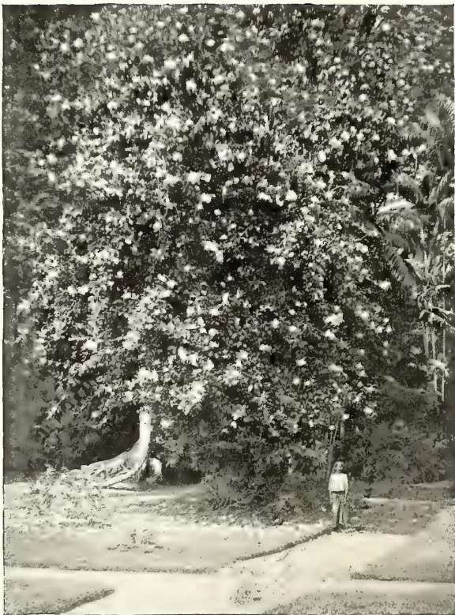
Photo by H. F. Macmillan.
BIGNONIA MAGNIFICA.
A BEAUTIFUL CLIMBER, BEARING MAGENTA BLOSSOM
IN ENORMOUS PROFUSION.
(4.) The colour of the cotton is brighter and staple more uniform.
(5.) The cotton is "bulkier."
(6.) It is markedly resistant to red leaf blight which so severely attacks saw-ginned Dharwar.
In 1909-10 100 lbs. of seed was given out among 14 cultivators all of whom reported satisfactory results. In 1910-11 a couple of thousand pounds were distributed and more would eagerly have been taken up had it been available because the price offered for this cotton in the Gadag Market for the produce of the 1909-10 crop was Rs. 180 against Rs. 123.8 per naga of 1,344 lbs. of seed cotton for saw-ginned Dharwar American. In the current season (1912-13) arrangements have been made to distribute 30,000 lbs. of seed estimated to sow 3,000 acres.
(Illustrated.)
The family of Bignoniaceæ is especially noted in the vegetable kingdom for beautiful and showy flowers, and comprises some of the most gorgeous flowering trees and climbers known to us. We give an illustration of the type genus Bignonia, the members of which are all climbers. It is amongst the most showy of the family, few if any surpassing Bignonia magnifica in brilliance of blossom. It is a rapid growing, strong climber, with large bell-shaped flowers borne in great profusion. When in full blossom the plant forms a conspicuous spectacle. It seldom, if ever, produces seed in Ceylon but is readily propagated by cuttings. The latter should be inserted in the rainy season in light sandy soil mixed with leaf-mould.
The typhoon which recently visited Japan, isolated Tokyo telegraphically from September 22 to 24, and carried widespread devastation, is said to have been the severest experienced in half a century, states Nature of October 3rd. Accounts so far are meagre, but according to reports already received the loss of life and damage to property afloat and on shore are appalling. The storm appears to have been most violent in the middle of the south coast. Typhoons are revolving storms of tropical origin that may occur in Far Eastern seas—the North Pacific or the China Seas—during any month of the year. In Japan and its neighbourhood they are, as a rule, confined to the months of June to September inclusive, and are most frequent in September. In general, all tropical revolving storms follow a parabolic track. The typhoons that visit Japan in September usually originate in the Pacific south-eastward of Formosa, move N. W. by W., recurve when abreast of that island, and then take the direction of the Japan Sea. Algué divides the tracks of typhoons in the Far East into two classes—those of the Pacific, which do not cross the meridian of 124 E., and those of the China Sea. A typhoon is said to travel rapidly when its rate of motion exceeds twelve nautical miles an hour; if its rate of motion be less than six miles an hour it is said to travel slowly. The September typhoons come under the former category.
57 450[DECEMBER, 1912.This plant which belongs to the Convolvulaceæ does best in warm climates where it replaces the Irish potato, says the Bulletin of the Department of Agriculture, Western Australia: There it is cultivated as a field crop whereas the Irish potato is regarded as a garden crop, which is the opposite of the practice of the cooler districts of the South.
It does best where the land is moist or where frequent rain is recorded during the period of growth. Wet weather at the time of ripening induces a second growth and is injurious to the raising of a profitable crop.
Although the plant is perennial it is treated as an annual. As it flowers rarely and the seeds give rise to a variety of types, slips or sets about four inches long growing on roots placed in hot-beds are used when sufficiently developed and one single sweet potato will produce quite a number of these slips.
Compared with Irish potatoes as a foodstuff, sweet potatoes show about one and a half times as much nutritive matter; they contain about 10 per cent. less water, the same proportion of mineral constituents, a little less protein, more fat and about 10 per cent. more carbohydrates as starch and sugar.
One or two bushels of small potatoes will produce enough slips to plant an acre. A second and sometimes a third growth of slips will show after the first one is ready to pull. If green vines are available cuttings may be used instead of slips grown on the tubers. When slips are pulled they should be dipped at the base in liquid mud made of clay and cow manure.
In the human diet it should be supplemented by an addition of foods rich in protein, such as lean meat, eggs, milk, peas and beans. In feeding stock, a proportion of cowpeas, soy beans or any of the legumes should be added.
The varieties are numerous; they are either syrupy, mealy or intermediate. The flesh is yellow or white; the leaves deeply indented, shouldered or round; the skin is white, yellowish, light-red or purple.
The soil most suitable as regards its texture for the growth of that root is a sandy loam which remains friable and does not bake. It does well also in limestone clay, but there the crop is harder to dig.
A four-ton crop removes in the roots alone 30 lbs. of nitrogen, 13 lbs. of phosphoric acid, 64 lbs. of potash. The vines which weigh more than half the weight of the crop are richer in nitrogen. It is thus seen that heavy fertilising is required to ensure a large crop; humus is very desirable and can be provided by growing the sweet potatoes after a leguminous crop or a green crop fed off on the ground. A wide interval in the rotation is desirable to guard against pests and diseases. If the soil is not wet at the time of planting, some water should be poured over the slip so as to settle the soil around it; in that case some dry earth is raked over to check evaporation. Shallow cultivation is necessary after planting to break the crust and root out weeds.
DECEMBER, 1912.]451The crop is ready to dig when the roots are mature, which can be ascertained by cutting a few roots. If, on drying, the wound heals over with a whitish starchy appearance, the roots are ripe; if they turn blackish in colour, they are not. Digging may be done in the field by means of a ridge plough, after the vines have been cut. Any unsound and bruised root will decay and should not be stored. After the roots have sweated a little they can be packed in ventilated cases for marketing.
The publication two years ago, by A. Baldit, of the results of a new measurement of the land and water areas on the surface of the globe, has suggested to Dr. H. Wagner a comparison, says the Geographical Journal, of the new results with those previously given.
As regards the whole surface between 80°N. and 60°S. the percentages obtained by Wagner, Krummel and Baldit vary inappreciably, Wagner showing 28·5 per cent. of land, the other two 28·4 per cent. The total land area within those latitudes is given by Baldit, however, as 550,000 square kilometres less than Wagner's figures. With the necessary corrections to Baldit's estimate for the extreme north and south, the results for the whole surface of the globe appear as follows: Land 149,000,000 sq. kilom. (57,500,000 sq. miles); water 361,000,000 sq. kilom. (139,400,000 sq. miles) or 29·22 and 70·88 per cent. respectively. This gives the proportion of land to water as 1: 2·42.
This plant is apt to become a great nuisance in tropical countries on cultivated and pasture land, owing to its dense growth and extraordinary vitality. It appears from the Journale d' Agriculture Tropicale (1912, 12, 154) that an attempt is now being made in New Caledonia to combat the pest by introducing a species of fly of the Agromyzidæ family from Hawaii. The insects have been distributed in the environs of Numea on land infested with Lantana. As a result the larvæ of the fly have been found in many of the seeds and it is intended to extend its distribution in the colony. The result of the experiment will be watched with interest; it must be borne in mind, however, that where a new animal species has been introduced to destroy some pest it has itself sometimes proved to be injurious in other directions.—Imperial Institute Bulletin.
The yield of rice per acre in Bengal is estimated (Spice Mill, 1912, 35, 526) at about 800 lb. of autumn to 1,200 lb. winter rice; in Eastern Bengal and Assam from less than 700 lb. of autumn-sown to slightly more than 1,100 lb. of spring or summer-sown; in Madras the yield varies from 900 lb. grown on non-irrigated to 1,100 lb. on irrigated fields; in Lower Burma which has very little irrigation the yield is 1,176 lb. on non-irrigated soil, —Imperial Institute Bulletin.
452[DECEMBER, 1912.In a paper on the cultivation of cigar tobacco with special reference to Java, which appears in the Bulletin of the Imperial Institute, Vol. X, Nos. 2 and 3, the following account of the process of fermentation is given:—
The dry but still flexible leaves are stripped from the rods and placed in large baskets for transport to the fermenting-sheds. These are large well-built places, which cost about 30,000 florins (£2,500) each to construct. The walls, which are freely provided with windows, are built of brick, whilst the supports and beams consist of teak. The roof is generally tiled and the floor cemented. As each load of tobacco is brought into the fermenting-shed it is weighed and passed to the women labourers, who make it into bundles of fifty or fifty-five leaves, which are used to form the fermentation heaps. Through the greater part of the length of the building runs a wooden platform, about 20 in. high, on which the fermentation heaps are built. These heaps are formed in the following way: A rectangular mat is spread on the platform and on this about 500 bundles of tobacco leaves are packed closely in a single layer. On this is placed a second layer, and so on until a rectangular heap of tobacco bundles, made up of twenty layers, each containing 500 bundles, is formed. The bundles are so packed on the outside of the heap that the lower ends ("butts") of the leaves are all outside. The heap is built round a bamboo as a centre-piece, and this serves to hold a thermometer, which registers the temperature throughout the fermentation process. The heap is then covered with a mat to which a slate or board is attached on which the temperature of the heap is recorded twice daily at 6 a.m. and at 5 p.m. After about five days the temperature has risen to 60° C. These primary heaps are called a-heaps. Two a-heaps which have reached this stage are then unpacked and re-built together into what is known as an A-heap, which is of the same length and width as the former one but consists of forty layers instead of twenty and is therefore twice as high as the a-heap. When the A-heap has reached a temperature of 60° C. it is taken to pieces, together with a second similar heap, at the same stage, and the two are re-built together into a b-heap consisting of at least 50 layers, each containing 750 bundles of tobacco leaves. When the b-heap has reached a temperature of 60° C. it may be either taken to pieces and re-built of the same dimensions (B-heap,) or it may be amalgamated with a second heap in the same condition to form a c-heap, consisting of over 50 layers, each containing 1,500 bundles, and this in turn is allowed to ferment until its temperature rises to 60° C. At this stage fermentation is generally complete. In amalgamating or re-building heaps care is always taken to place the bundles that were on the outside of the previous heap in the middle of the new one so that the tobacco may be uniformly fermented. The heaps are shaken every day to prevent the bundles sticking together. The process thus outlined is that normally followed, but the rapidity of fermentation is dependent on many variable factors and consequently the whole process has to be carefully supervised by an expert, and modifications are introduced as required; thus it is not uncommon for a-heaps to be re-built directly into b-heaps, and so on. It is clear from available data that as the tobacco ages and becomes more highly fermented, the fermentation temperature rises more slowly in spite of the fact that the heaps are steadily increased in size.
DECEMBER, 1912.]453MINUTES of a meeting of the Committee of Agricultural Experiments held at the Experiment Station, Peradeniya, on September 12th, 1912.
Present:—The DIRECTOR OF AGRICULTURE (Chairman), Messrs. G. C. BLISS, R. G. COOMBE, N. W. DAVIES, G. H. GOLLEDGE, H. INGLIS, W. N. TISDALL, the GOVERNMENT ENTOMOLOGIST, the GOVERNMENT MYCOLOGIST, the GOVERNMENT CHEMIST, the SUPERINTENDENT of the EXPERIMENT STATION MAHA-ILUPPALAMA and Dr. R. H. LOCK, acting as Secretary.
All the plots to be tapped daily on the half-spiral system with four cuts per tree.
One plot to be treated with a general mixture at the rate of 840 lbs. per acre.
Three plots to be treated with general mixtures containing an excess of Nitrogen, Phosphorus and Potash respectively.
R. N. LYNE,
President and Chairman,
Committee of Agricultural Experiments.
MINUTES of a meeting of the Committee of Agricultural Experiments held at the Experiment Station, Peradeniya, at 3 p.m. on November 7th, 1912.
Present:—The DIRECTOR OF AGRICULTURE (in the chair), the GOVERNMENT ENTOMOLOGIST, the GOVERNMENT MYCOLOGIST, the Hon'ble Mr. E. ROSLING, Messrs. G. C. BLISS, R. G. COOMBE, W. COOMBE, H. D. GARRICK, G. H. GOLLEDGE, H. INGLIS, C. O. MACADAM, W. N. TISDALL, the SUPERINTENDENT MAHA-ILUPPALAMA EXPERIMENT STATION, acting as Secretary, and the following visitors:—Messrs: O. T. Faulkner, K. G. Marsden, P. A. Keiller and H. A. Wickham.
The Director stated that he had informed the Government that Oxalis was not in his opinion a pest in the usually accepted meaning of the term.
Hon'ble Mr. Rosling asked what prospects the Department considered Fourcroya had in the dry country, explaining that in Mauritius plantations of Fourcroya were doing well. The Director replied the point had not been investigated but in his opinion Sisal was to be preferred, one reason being it had a higher percentage of fibre than Fourcroya.
FROM 13TH SEPTEMBER TO 7TH NOVEMBER, 1912.
TEA.—There was a general falling off in yield during September, but a recovery during October.
The Dadaps in plot 149 were pruned on October 16th and 17th, and yielded 2851 lbs. of mulch.
The Albizzias in plot 150 were pruned on October 18th and 19th, and yielded 2,585 lbs. of mulch.
CACAO.—There is every indication of the crop which has now set being an exceptionally heavy one.
The trees have been comparatively free from canker.
Canker in the pods has been rather prevalent, and as the practice adopted here of removing fungus pods only during the rounds of picking results in diseased pods remaining for some time on the tree to their detriment, two special coolies have been put on, whose sole duty it is to make repeated visits to the plots for the purpose of collecting all diseased pods.
Dr. Lock has examined every tree in plots 88 and 89, and has marked all those which do not belong to the Nicaraguan variety. The marked trees are now being cut out.
456[DECEMBER, 1912.On September 14th row E in the five acre plot of young Forastero was manured with 100 lbs of Sulphate of Ammonia and then disc-harrowed.
RUBBER.—The selected seed obtained from the best yielding tree at Heneratgoda has produced a high percentage of healthy plants. On October 10th nurseries were sown with some 26,000 seed from old Peradeniya trees. The germination is fairly satisfactory.
The lower halves of plots 77-78 measuring one acre in extent which were under old cacao and coconuts, have been felled and cleared preparatory to being planted with seedling Hevea.
Trials with Mr. WICKHAM'S SMOKING MACHINE were started on October 22nd. Owing to the difficulty in obtaining sufficient latex from any one experimental plot, it was decided to start tapping all the trees in plots 83-86; the method adopted is the single V half way round, 18 inches from the ground, tapped daily.
COCONUTS.—Of the manurial plots
Plot No. 8 was ploughed on October 21st—this is the second time during the year.
Plot No. 9—the necessary bi-monthly cultivation and application of artificial soluble mixture was carried out on October 22nd. On November 4th a start was made to free the plots from cheddy growth,—the green material being mulched round the trees on Plot 6. Weight of material applied per tree.....50 lbs.
In mid-October, red beetles were found to be attacking the young palms in plot 62. One tree had to be destroyed, but it is hoped that the other half dozen trees under treatment will recover. A special cooly has been put on for this work.
Two young plants, from nuts recently brought from Perak, which were growing near the offices in the Gardens were on October 25th removed to the pineapple plot close to the Experiment Station Office.
PADDY.—The nursery plants having arrived at a suitable size the operation of transplanting was started on October 17th, single plants being put out at 12 inches apart. Nursery plots 3, 4 and 8 were dealt with in the order named, the lower end of the field being planted first.
The cost of transplanting per acre was Rs. 8.
MAIZE.—One acre of Hickory King was harvested on October 23rd, the product of each row being kept separate for line seed selection.
GREEN MANURES.—A small bed of Indigofera anil has been established. The following green manure plots have been cut, yielding as below for 1/100th of an acre.
| No. 1 | Leucaena glauca..... | 229 lbs. |
| No. 2 | “ , , ..... | 241 “ |
GENERAL.—55 visitors have been conducted round the Station since the last meeting.
G. HARBORD,
Acting Superintendent.
MAHA-ILUPPALAMA, FROM SEPTEMBER 13TH TO NOVEMBER 7TH, 1912.
COCONUTS.—In September steps were taken to have all the rubbish from the trees burnt before the rains set in.
It has been found necessary to burn four trees which were badly infested with red beetle, other affected trees are being treated and watched daily.
The heavy rains of October have been especially beneficial to the plot of year old coconuts growing on unirrigable land.
PADDY.—The trial plots extending over 9 acres were harvested in September, and the following results were obtained:—
The plots are all one acre plots.
| Kaivarasamba | 4 months paddy. | ||||||
|---|---|---|---|---|---|---|---|
| 1 | bushel | sown | broadcast | gave | ... | ... | 37½ bushels |
| " | " | " | " | ... | ... | 38¾ " | |
| " | " | " | " | ... | ... | 37 " | |
| " | " | " | " | ... | ... | 48¼ " | |
| Heenati. | 3 months paddy. | ||||||
| 2½ | bushels | sown | broadcast | gave | ... | ... | 38 bushels |
| 2 | " | " | " | " | ... | ... | 27 " |
| 1 | " | " | " | " | ... | ... | 35¾ " |
| " | " | " | " | ... | ... | 27 " | |
| " | " | " | " | ... | ... | 37 " | |
The 9 acres are now being prepared to receive a crop in the coming season, the idea being to make comparative trials with eight varieties of 3 months paddy obtained from different parts of the Island, the 9th acre will be control plot of the local "Heenati" variety.
With regard to the trial which was recently carried out with the object of obtaining some information concerning the damage the paddy bug is capable of doing, the following results were obtained:—
Two small plots, each being 36 square feet in extent, were prepared side by side. One plot was completely protected by mosquito netting, and the other plot was left unprotected.
The protected plot gave a return equivalent to 86 bushels per acre.
The unprotected plot " " " " 43 " "
COTTON.—During the second week in October, a 10-acre block of recently cleared jungle land was sown with American Improved Upland variety—Allan's Long-stapled.
Method of Sowing in rows 4 feet apart.
Six seeds to each hole at 18 inches apart in the row. The crop is coming up satisfactorily.
On October 29th 2 acres were sown with Egyptian Variety Sakkelari-des, as a catch crop under year old coconuts on unirrigable land.
SISAL HEMP.—A 7-acre block of recently cleared jungle land was cleaned up in September and October.
The land is being pegged out at 5 feet × 8 feet, and suckers are being planted out as the work proceeds.
G. HARBORD.
Superintendent.
The Bulletin of the Imperial Institute for October last deals with this subject and refers to the efforts made by the Department of Agriculture to improve indigenous varieties of cotton and give a trial to exotic varieties. An account is given of the examination and commercial valuation of samples from Madras, The Central Provinces, Eastern Bengal and Assam, and Burma.
The comparative examination of the Uppam and Karunganni constituents of Tinnevelly cotton has shown that the former variety is of much coarser staple than the latter, the average diameters being respectively 0.00084 in. and 0.00074 in. The Karunganni cotton is thus seen to approximate in fineness to Egyptian cotton, whilst the Uppam has the ordinary coarse character of most Indian cottons. In other respects the sample of Karunganni is little, if at all, superior to the Uppam. It appears, however, from the information supplied by the Deputy Director of Agriculture in Madras, that the growth of the Karunganni has been unfavourably affected by the weather. The acclimatised "Cambodia" cotton is of very satisfactory quality and indicates that it may be possible to grow successfully an American type of cotton on an extensive scale in India. The "Georgia" sample is of good quality but is inferior to the acclimatised Cambodia cotton owing to the presence of stains. The results of this trial, however, fully justify a continuation of the experiment.
The samples from the Akola Experimental Farm were of high grade for Indian cotton. The chief defects were that they were of somewhat inferior strength, and that they had been injured to some extent during ginning, numerous gin-cut fibres being present in each sample. The commercial experts who valued the samples received in 1911 reported that with the exception of "cutchica" they were all of a much higher class than "superfine," and were cleaner than any Indian cotton which the firm had previously handled. Indian cultivators should be encouraged to grow cotton of the character of these samples in preference to the inferior "jari" varieties which are now so largely produced.
The chief cotton produced in the United Provinces is of an inferior grade, known in the trade as "Bengals," and although experiments have been made on the hybridisation of this cotton, and several crosses have been obtained, which give promise of being a considerable improvement on existing local varieties, there seems to be little hope of improving this cotton to a sufficient extent. Probably the introduction of some form of "Upland" cotton would be the solution of the difficulty.
The only localities in East Bengal and Assam where cotton is commercially grown are the Garo Hills and Chittagong Hill Tracts. In quality the cotton (a variety of G. arboreum) was short and remarkably coarse and rough.
The Cuban, Georgia Upland, Cambodia and Bani cotton from Burma were on the whole of very satisfactory quality, but with the exception of the last they were rather lacking in strength and were slightly stained. The stains were doubtless caused by insect pests, the presence of which was clearly demonstrated by the condition of the seeds. It is therefore
DECEMBER, 1912,]459evident that it will be necessary to adopt measures to check the spread of insect pests and to reduce their depredations. If these cottons, as grown, gave a good yield per acre, the results of the trials must be regarded as very encouraging. The American and Cuban would appear to be more suitable than the Egyptian.
The following account is reproduced from the Bulletin of the Bureau of Economic and Social Intelligence in the Journal of the Board of Agriculture for November:—"As a result of the report of a Commission appointed in Holland to inquire into the economic condition of agricultural labourers, a Bill has been brought forward to "enable agricultural labourers to become proprietors of land with dwelling-houses, or to rent land."
According to this Bill, the land, the value of which must not exceed about £200, is to be purchased through the medium of approved associations to be formed in every canton and having for their sole aim the promotion of the purchase of land by agricultural labourers. The money for purchasing the land will be lent by the State to the communes of the cantons and by them to the associations, in each case at the rate of per cent per annum. Facilities for purchase are only given to agricultural labourers between the ages of twenty-five and thirty who can pay at least one-tenth of the purchase value; the remaining nine-tenths are lent to the purchaser by the associations (or communes.)
Repayment of the borrowed money is made as follows:—For the first two years interest must be paid at the rate of per cent.; from the third year onwards repayment must be made in thirty annual instalments at per cent. The purchaser, however, may if he desires pay less, for the Bill authorises him to burden the property he has bought to the extent of one-fourth of the sum borrowed with an annual charge redeemable at any time or only after the complete extinction of the remainder of the debt.
As a guarantee for the sum borrowed, the purchaser gives a mortgage on the property bought but the deeds, etc., are free from stamp and registration duties. The purchaser is not allowed to let the land while the instalments are unpaid, or to dispose of it to anybody else during his lifetime, but his testamentary liberty is in no way restricted.
The Bill also provides that small plots of land may be let to agricultural labourers who have no land. The rent must not exceed about £2. 10s. per annum. The land must be suitable for cultivation and well situated. The letting is carried out by the associations mentioned above, or by the communes.
Experiments in the Bombay Presidency with different varieties of ground-nuts have given excellent results in several cases (Ann. Rep. Dept. Agric. Bombay 1910-11, p. 31). Thus, at Kilgeri, Spanish nuts yielded at the rate of 3,340 lb. of nuts per acre and small Japanese nuts at 2,516 lb. per acre. An experiment to ascertain the best quality of seed to use for sowing was partially spoiled by "ticca" disease, but it would appear that 60 lb. per acre is sufficient for spreading varieties, and 80 lb. for others.—Imperial Institute Bulletin.
460[DECEMBER, 1912.The Gardeners' Chronicle for November states that an investigation by Messrs. Russell and Golding (Journal of Agricultural Science, October, 1912) into the sickness of the sewage soils has led the authors to the conclusion that the causes which produce this state are, in the main, identical with those which bring about sickness in ordinary soils.
As the result of previous investigations by Russell and Hutchinson it is suggested that even in an ordinary soil the community of soil micro-organisms is not working at its maximum efficiency as measured by the rate at which plant food is being produced.
If such imperfectly efficient soils be partially sterilised, the crops taken on them are larger than those obtained from untreated soil. Hence the agent which is lowering the fertility of the soil is a vital agent. Various considerations point to the unicellular animals (protozoa) of the soil as the cause of reduced fertility and it is suggested that in ordinary soils these animals prey upon soil bacteria, reduce their numbers, and hence their activity in producing nitrogenous plant food.
By partial sterilisation, the protozoa are killed, but certain of the bacteria are not. Free from their hereditary foes the surviving bacteria increase, multiply and manufacture more vigorously than in either normal or sick soils.
The essential conclusion reached by Russell and Golding with respect to sewage-sick soils is similar to that just outlined. Such soils will stand no more sewage. If further additions be made the material fails to percolate through the soil, crops are injured and even killed. Partial sterilisation of the soil restores its "health."
Hence, if a practical method can be devised whereby sick soil may be sterilised partially and cheaply, a definite advance will have been made in the problem of sewage treatment; for the sewage farm may then serve for an indefinite period for the successful cultivation of crops.
Germany's total potato crop in 1908 amounted to 915,000,000 cwt., of these 256,000,000 cwt. were used for human consumption, 79,000,000 cwt. for starch and alcohol production, 108,000,000 cwt. for seed, and 374,000,000 cwt. for feeding animals, leaving a surplus of 98,000,000 cwt., valued at £6,000,000. This surplus is largely converted into dried potatoes. According to the Journal of the Board of Agriculture, U.K. (1912, 18, 1048) there were 257 potato-drying factories in Germany in 1910 producing either dried slices or dried flakes. In eight factories peeled potatoes form the raw material, in the remainder the unskinned potato is employed. The production for the year amounted to 1,723,000 cwt. of dried material. Feeding trials have shown that dried potatoes form an excellent feeding-stuff for all kinds of stock. The price of potato flakes is stated to be about 7s. to 8s. per cwt.—Imperial Institute Bulletin.
DECEMBER, 1912.]461Messrs. Willet and Gray's Statistical, under date of October 24, gives some very interesting data and statistical compilations concerning the prospective sugar crops of the world, says the Louisiana Planter and Sugar Manufacturer. They indicate that the new cane and beet sugar crops will exceed the crops of last year by more than 2,600,000 tons. They estimate the coming beet sugar crop of Europe at 8,935,000 long tons and that of the United States at 625,000 long tons, while they estimate the total sugar crops of the world at 181-2 millions of tons being more than 21-2 millions greater than last year.
It will be remembered that Germany alone fell nearly two million tons short last year of its previous crop because of the great drought in Europe and its injurious effect on the beet crop. But for that short crop the crop of this year would be practically a repetition of the past, so far as quantity is concerned.
For several years the total cane sugar crops of the world have surpassed the total beet sugar crops. This was especially the case last year because of the shortage in Europe, the result of the drought, whereas this season they are expecting the beet sugar crops of the world to slightly exceed the cane sugar product. In the total estimates as against the Cuban crop of 1,896,000 long tons, now closing, they increase the quantity to over 2,000,000 tons and estimate the crop that will begin coming off within the next sixty days at 2,100,000 tons. A notable item is their estimate of the Louisiana cane sugar crop, which resulted in 316,000 long tons last year, this year because of the generally bad season and especially because of the great overflows it is now placed down at 200,000 long tons. Porto Rico, which reached 320,000 tons last year, is put down this season for slightly less while the Hawaiian Islands about hold their own. The Philippines rated at 160,000 long tons last year, are rated for the coming crop at 200,000 tons. Java is placed at 1,300,000 long tons against 1,395,000 long tons, last year. Spain produces about 20,000 long tons of cane sugar this production being comparatively constant from year to year. The world promises to have a full sugar supply but the consumption of sugar is increasing with such great rapidity that we believe it will all be needed and that no special accumulation will result.
Attempts have been made by the Harbin Chamber of Commerce to ascertain the cost of production of soy beans in Manchuria, and it is roughly estimated at 31s. per ton, the price of the beans delivered at the nearest station on the Chinese Eastern Railway, in November 1911, being £4 (approx.) per ton. (Indian Trade Journal, 1912, 25, 141). Experiments made with this crop during recent years in Argentina have been so successful that it is the intention of planters to grow the crop on a commercial scale in preference to linseed as a restorative crop in rotation with wheat (India Trade Journal, 1912, 25, 48).
462[DECEMBER, 1912.The report of Prof. Wyndham Dunstan, Director of the Imperial Institute, for the year 1911, is chiefly occupied with a summary of investigations made by the Scientific and Technical Department.
The work of the Institute may be said to be carried on under four principal divisions:—(1) The Colonial and Indian collections. (2) The Research work laboratories. (3) The Reference Library, and (4) The Bulletin of the Institute.
A course of instruction in tropical agriculture is now provided for candidates selected by the Colonial Office for administrative appointments in the African colonies.
The Court devoted to Ceylon products has recently been extended and improved and a large number of important exhibits have been supplied by the local Government, so that it is now a most satisfactory representation of the present position and resources of the Island. At the instance of the Government and the Planters' Association a pavilion or Rest House is being erected as an annexé to the Court.
Under the head of Fibres a series of samples of cotton forwarded by the Ceylon Agricultural Society are reported on. The remarks on Mitaffi, Caravonica and Cambodia specimens are encouraging. Sun hemp from the Northern Province was valued at £19.10 to £20 per ton (January, 1911).
Under Rubber, reference is made to specimens of Para rubber received from Heneratgoda in which the percentage of caoutchouc was found to be uniformly high, ranging from 95.4 to 96.7 in the dry material: while those from Gangaruwa gave 92.7 and 94 per cent. A sample of Manihot dichotoma rubber (probably from Maha-iluppalama) was found of very fair quality though rather deficient in strength.
Reference is also made to Me oil (Bassia longifolia) from the Central Province and to tobacco grown at Jaffna and near Anuradhapura. Tuxillo Coca leaves from Ampitiya near Kandy were valued at 8d. per lb.
The work of the Institute in developing the resources of the British Colonies is of the utmost importance to the Empire, and we would here take the opportunity of stating that the Society will gladly undertake to forward specimens of tropical products to the Imperial Institute whether sent for exhibition in the Ceylon Courts or for purposes of investigation.
The Agricultural Gazette of New South Wales (1911, 12, 1034) contains an article on maize growing in New South Wales. It is stated that in Australia the importance of the crop, and the uses to which it may be put, have not yet been realised. Australia in 1909-10 produced 9,000,000 bushels of maize, of which New South Wales contributed 7,000,000 which is used solely as a feeding-stuff for horses. In the same year the United States produced 2,668,651,000 bushels, or 77 per cent. of the world's crop, one of the chief uses of the grain in that country being to feed cattle and swine.—Imperial Institute Bulletin,
DECEMBER, 1912.]463This is the title of an exhaustive treatise on the subject of poisons met with in Veterinary practice, a welcome and valuable addition to the literature of Agricultural and Veterinary Science. The author is G D. Lander. D. Sc. professor of Chemistry and Toxicology in the Royal Veterinary College, London (Publishers Bailliers, Tindall and Cox, Price 7/6).
The first part of the book is taken up with the Chemistry and action of poisons, diagnosis, treatment, &c. The author then goes on to consider the Mineral or Inorganic poisons of which arsenic is the type, organic poisons of which Hydroganic Acid and Stychemic are examples, and last by poisonous plants which are classified according to botanical orders. The final chapter treats of chemical Toxicology. We should have wished to see a chapter or two specially devoted to tropical poisonous plants. We do not mean to say that anything like an exhaustive examination has been made of their toxic properties and action but their botanical identity has been well established and something is known of their poisonous character. The author himself expresses the hope that "the labours of Tropical Disease and Agricultural Institutes—such as that of Ceylon—will no doubt slowly unfold a wide field of knowledge."
Some of the plants mentioned in the book are familiar to tropical residents, e.g.—Croton tiglium, Jatropha curcas, Verbascum Thapsus, Datura Stamonium, Cerbera odellam, Verium oleander, Azadirachta Indica.
As a work of reference the book should prove of great service to Veterinary practitioners.
Mr. V. M. Muttukumaru, writing from Jaffna on the rotation of crops, says that the rotation of crops as carried on in Jaffna is quite unlike that followed in other countries. Here, different crops are raised, one after the other during the same year, in the following manner :—
| In Garden Lands. | |||
|---|---|---|---|
| December-March | ... | ... | Tobacco. |
| April-July | ... | ... | Samai, a cereal crop. |
| August-October | ... | ... | Kurakkan, a cereal crop. |
| or | |||
| March-October | ... | ... | Chillies or manioc |
| In Paddy Lands. | |||
| August-October | ... | ... | Paddy |
| February-August | ... | ... | Tobacco, chillies, onions, gingelly, peas, kurakkan or hemp. |
From the above tabular statement it will be evident that the arable lands in Jaffna are under cultivation all round the year and that even under such circumstances the soil does not fail to give adequate returns to the cultivators.
464[DECEMBER, 1912.The Cotton Spinners' final conference was held at the Egyptian University on Friday night, says The Times of November 11th. Sir Charles Macara presided over the meeting which lasted until a late hour. Abaza Bey delivered a lecture on cotton cultivation and mixture on plantations.
Afterwards a most interesting debate took place on the policy to be pursued in regard to growers' and spinners' requirements. The spinners disapproved of the creation of new varieties of cotton and demanded a continuance of the production of existing varieties except Affifi, and the concentration of attention on obtaining regularity of quality and length of staple. They recommended that ginning should be longer after picking as the staple matures insufficiently under the present system, and strongly condemned the custom of damping during ginning.
Answering the growers' appeal for higher prices, the delegates contended that prices already were too high and recommended that since present values appear to be an insufficient recompense, the grower should be encouraged to devise scientific or other means to increase the yield per feddan.
The intensive cultivation of hens is about to be taken up in England on a great scale. In America which provides the model for the largest of these ventures, 4,500 birds are called a unit and are "cultivated" on as little as twelve acres. Each of these units consists of three houses in which 1,500 birds are kept. Single comb white Leghorns are the favourite birds; and in recent experiment they yielded the extraordinary average of 146 eggs per bird within the year, or 2,190,000 eggs to 15,000 birds.
A very considerable farm is being taken on the Wiltshire Downs in order to try the system, the hens being at first imported from the American farm. The houses are simple and cheap, being only 7 ft. high in front and 5 ft. at the back. Occasional "half-way partitions" of the sort seen in some school dormitories are fixed at intervals and this is almost the only extra equipment.
One of the prime advantages of this new intensive system is that it can be worked on a small scale in a town garden or on the vast scale practised in New Jersey with such remarkable results. Plenty of light, plenty of straw and the rejection for laying purposes of all hens ten months after they have first begun to lay—these are given as the prime necessities of the system.—Daily Mail.
(Illustration.)
We give an illustration of the disc cylinder, smoke flue and feeding tank of Mr. Wickham's smoker B Model for curing hard Para now at work at Peradeniya. The latex can be seen flowing into the cylinder which, revolving, carries it round for contact with the hot smoke issuing from the flue.
![A black and white photograph of a large, industrial machine, identified as Mr. Wickham's B. Model Smoke Cure Apparatus. The machine features a large, semi-circular, metallic dome-shaped structure on the left, which appears to be the smoking chamber. To the right of the dome, there is a complex mechanical assembly with various pipes, valves, and a large, dark, cylindrical component. The entire apparatus is mounted on a sturdy metal frame. The background is dark and indistinct, suggesting an industrial or workshop setting. The image is framed by a thin black border.](105fe95791ee713c614754c62ba2293a_1_img.webp)
MR. WICKHAM'S B. MODEL SMOKE CURE APPARATUS AT WORK AT PERADENIYA.
This image is a scan of a blank page. The paper has a light beige or cream-colored tint. There are a few very small, dark specks scattered across the surface, which appear to be scanning artifacts or dust particles. No text, lines, or other markings are present on the page. DECEMBER, 1912.]465A large quantity of castor oil and cake is imported into Ceylon and the demand for castor cake as a manurial agent is yearly increasing. The castor plant grows wild in almost all the parts of the Island. Would it not be worth while cultivating the plant, if not as a crop by itself at least in connection with the rearing of the eri silk-worm?
The rearing of the eri silk-worm is eminently adapted to be a cottage industry in Ceylon (as in India), and the Silk Farm at Peradeniya which is subsidised by the Ceylon Agricultural Society is making every effort to demonstrate this.
The Imperial Entomologist for India referring to this subject writes :—
“The rearing of the eri worm is very simple and can be done on a large or small scale when once it has been seen. The production of thread and cloth offers no difficulty to people accustomed to spinning and weaving cotton and where there is a demand for light remunerative work such as can be done by women and children, and where castor is available. The rearing, spinning and weaving of this silk offer many advantages. The industry is thus capable of wide extension as a minor or home industry where castor grows abundantly. The cultivator can thereby expect to derive an extra income by providing work for his family during recess between agricultural operations and he will be utilising his castor crop for the production of a bye product.”
It was in 1905 that sericulture was first taken up by the Ceylon Agricultural Society and the Peradeniya Silk Farm started. The rearing of the eri worm which, owing to the fact that it necessitated no destruction of life as in the case of the mulberry worm, appealed strongly to the school children and a large number of schools took it up at the instance of the Superintendent of School Gardens. With a view to encourage the rearing, the Ceylon Agricultural Society deputed an officer to purchase the cocoons and a large quantity was in this way collected by the Society. But the want of a ready market at the time proved a serious check on the industry. The combination of silk-worm rearing with castor-growing as a double enterprise should prove a remunerative industry for the villager.
At the Pusa College the two are carried on together and it is a matter of surprise to see how little boys are trained to attend to all details from the rearing of the worms to the weaving of cloth.
If castor-cultivation were to be taken up in Ceylon it would not only supply the demand for castor cake and oil but also foster a home industry for women and children in our villages. We give below a statement showing expenditure and income from an acre of castor when grown for seed and silk production. This estimate, which is drawn up by the Imperial Entomologist for India, would have to be slightly modified to suit local conditions :—
59 466[DECEMBER, 1912.Estimate for 1 Acre of Castor.
OUTTURN.
| Rs. | |
|---|---|
| Seed 10 maunds at Rs. 4 per maund ... .. | 40.00 |
| Cloth 105 yards at Rs. 3 per yard ... .. | 315.00 |
COST OF CULTIVATION.
| Three ploughings with levelling ... .. | 3.00 |
| Seed 10 seers ... .. | 1.00 |
| Sowing ... .. | 1.00 |
| Two weedings ... .. | 3.00 |
| Thinning twice ... .. | 1.00 |
| Topping ... .. | .50 |
| Plucking capsules ... .. | 1.00 |
| Cleaning seed ... .. | 2.00 |
| Rent ... .. | 2.50 |
Rearing charges : 120 maunds of leaves will give 60 seers of cocoons.
2 maunds leaves producing 1 seer of cocoon at Rs. 25 per maund... 37.50
Spinning charges : 60 seers of cocoons produce 35 seers of thread at Rs. 3 per seer. 1 seer of cocoon produces on an average a little over 9 chattaks of thread ... ..
105.00
Weaving charges : 35 seers of thread will produce 105 yards of cloth 52 inches at 4 annas per yard ... ..
46.00
Total ... 203.00
Profit ... 152.00
Grand total ... 355.00
N. WICKRAMARATNE.
AMERICAN UPLAND COTTON IN CEYLON.
TRIAL GROUNDS OF THE SEASON.
During the present season about 58 acres in School Gardens and Experimental Plots have been planted up in different parts of the Island with the same variety, viz., Allens' Long Staple American Upland, as shown in the statement given below :—
| No. of plots. | Acres. | |
|---|---|---|
| North-Western Province... | 17 | 5 1/6 |
| Southern Province ... | 13 | 13 |
| Central Province ... | 6 | 23 |
| Sabaragamuwa Province... | 1 | 2 |
| Uva Province ... | 7 | 8 |
| North-Central Province ... | 11 | 21/3 |
| Northern Province ... | 2 | 2 1/6 |
| Eastern Province ... | 1 | 2 |
| Total... | 58 | 57 2/3 |
The plots are well distributed over the island and useful data will no doubt be obtained.
DECEMBER, 1912.]467The Agricultural Bulletin of the Federated Malay States contains an account on the above subject by Mr. F. G. Spring:—In April 1905 eight plots of Para Rubber at different elevations were opened up on Gunong Angsi for the purpose of attempting to test the effect of climate conditions on the growth of the tree and afterwards the yield of rubber at different altitudes.
The fields are arranged as follows:—plots 1, 2, 3, 4, 5, 6, 7 and 8 at elevations of 300; 600; 1,000; 1,200; 1,600; 1,800; 2,100 and 2,400 feet respectively. In December, 1911, the average girth of the trees in each plot, with the exception of field 4 which remains unplanted, was taken at a distance of 3 feet from the base of the tree and the girths in the respective plots found to be as follows 25.07; 16.29; 21.83; not planted; 17.86; 16.89; 12.09; and 14.21 inches.
In field (1) which is situated at an elevation of 300 feet the yields of total rubber in experiments 1, 2, 3 and 4 are 555 lbs; 303 lbs; 441 lbs. and 237 lbs.—a total of 1,536 lbs. While in field (3) at an elevation 1,000 feet the yields of total rubber in experiments 1, 2, 3 and 4 are 388 lbs; 207 lbs; 308 lbs. and 195 lbs.—a total of 1,098 lbs. The increase of rubber obtained in the plot at the lower elevation compared with field (3) is 167 lbs. 96 lbs; 133 lbs. and 42 lbs. in the respective experiments—or a total of 438 lbs.
The increase is no doubt connected with the large girth of the trees in field (1) but indirectly to the trees being at a lower elevation.
To what height Hevea may be grown without a rapid falling off, both in girth and quantity of rubber, is difficult to say; but, judging from the present experiments, an elevation of 1,000 feet is undoubtedly too high to obtain the maximum yield of rubber.
The next point of interest is the relative yields of rubber from different systems of tapping. It will be seen by referring to the tables that in each experiment both at the first and third clearings, the adjacent quarters (double V) gave a considerably larger yield of total rubber obtained from adjacent quarters compared with opposite, in fields (1) and (3) where two years is allowed for bark renewal, experiments 1 and 3, it is approximately 25.0 per cent. while in the plots where the period of renewal is 4 years, experiments 2 and 4, the excess is approximately 17.0 per cent. Both in adjacent and opposite systems of tapping, where two years is allowed for bark renewal, the amount of total rubber is almost double that obtained from the experiments in which 4 years is allowed for bark renewal, in other words the quantity of latex obtained has been directly dependent on the amount of bark removed.
A notable and interesting feature is that this excess is more evident in the first few months of tapping while at the end of one year the difference is apparently not so great. This falling off of rubber in experiments 1 and 3 is in all probability a sign of exhaustion followed on the severe tapping conducted in these experiments. It will be interesting to see how large the difference becomes as tapping progresses.
468[DECEMBER, 1912.The amounts of rubber recorded in the tables are their dry weights.
EXPERIMENT 1.
System of tapping—Double V. cuts 18 inches apart.
Twenty cuts to the inch. Every day tapping.
Time allowed for bark renewal 2 years.
No. of trees 1st clearing 80, average girth 26.3 inches, elevation 300 feet.
No. of trees 3rd clearing 80, average girth 21.12 inches, elevation 1,000 feet.
EXPERIMENT 2.
System of tapping—Double V. cuts 18 inches apart.
Twenty cuts to the inch. Alternate day tapping.
Time allowed for bark renewal, 4 years.
No. of trees 1st clearing 80, average girth 25.6 inches, elevation 300 feet.
No. of trees 3rd clearing 80, average girth 21.4 inches, elevation 1,000 feet.
Experiment 1.
Experiment 2.
| 1st clearing. | 3rd clearing. | 1st clearing. | 3rd clearing. | |||||
|---|---|---|---|---|---|---|---|---|
| lbs. | ozs. | lbs. | ozs. | lbs. | ozs. | lbs. | ozs. | |
| Total | 484 | 13 | 340 | 2 | 265 | 11 | 172 | 4 |
| Total Scrap & | ||||||||
| Bark Shaving... | 70 | 14 | 48 | 12 | 38 | 2 | 35 | 8 |
| Total Rubber | 355 | 11 | 388 | 14 | 303 | 13 | 207 | 12 |
EXPERIMENT 3.
System of tapping—opposite quarters. Two cuts of 18 inches apart on each quarter.
Twenty cuts to the inch. Every day tapping.
Time allowed for bark renewal 2 years.
No. of trees 1st clearing 80, average girth 25.1 inches, elevation 300 feet.
No. of trees 3rd clearing 80, average girth 21.6 inches, elevation 1,000 feet.
EXPERIMENT 4.
System of tapping—opposite quarters. Two cuts of 18 inches apart on each quarter.
Twenty cuts to the inch. Alternate day tapping.
Time allowed for bark renewal 4 years.
No. of trees 1st clearing 80, average girth 25.8 inches, elevation 300 feet.
No. of trees 3rd clearing 80, average girth 21.7 inches, elevation 1,000 feet.
Experiment 3.
Experiment 4.
| 1st clearing. | 3rd clearing. | 1st clearing. | 3rd clearing. | |||||
|---|---|---|---|---|---|---|---|---|
| lbs. | ozs. | lbs. | ozs. | lbs. | ozs. | lbs. | ozs. | |
| Total | 384 | 10 | 262 | 5 | 187 | 10 | 162 | 8 |
| Total Scrap & | ||||||||
| Bark Shaving... | 57 | 4 | 46 | 10 | 49 | 10 | 32 | 14 |
| Total Rubber | 441 | 14 | 308 | 15 | 237 | 4 | 195 | 6 |
| Elevation | Expt. 1. | Expt. 2. | Expt. 3. | Expt. 4. | Rubber T. Grand Total. | ||||||
|---|---|---|---|---|---|---|---|---|---|---|---|
| Rubber T. | Rubber T. | Rubber T. | Rubber T. | ||||||||
| lbs. | ozs. | lbs. | ozs. | lbs. | ozs. | ||||||
| 1st Clearing ... | 300 ft. | 555 | 11 | 303 | 13 | 441 | 14 | 237 | 4 | 1,538 | 10 |
| 3rd Clearing ... | 1,000 ft. | 388 | 14 | 207 | 12 | 308 | 15 | 195 | 6 | 1,000 | 15 |
We cul the following from the Indian Agriculturist of November 1912:—In his report for 1911 the Director of Agriculture, F.M.S., says the questions connected with coconut cultivation have not received the attention they deserve in the Federated Malay States. There has been too much of the idea that a coconut only has to be planted somewhere near the sea and it will grow anyhow. As a matter of fact, the coconut probably requires even more careful attention than Para rubber trees. One point is clear and that is that conditions in Malaya are quite different from those obtaining in other countries; for example, the best plantations here are those on heavy clay land while the usual idea is that coconuts thrive best in light soils. The majority of plantations here are on the flat low-lying lands near the coast.
It is evident that on such soils drainage is a most important factor and the possibilities of this should be especially looked into when the location of a proposed plantation is being selected. The main drains at least should be put in before any planting is done. A coconut is very intolerant of stagnant water and some of the native holdings suffer considerably through inattention to this point.
The question of the cultivation of coconuts is still an open one. Does clean weeding as commonly practised on rubber estates, pay best? Is it better to keep clean an eight-foot circle round the trees and allow the weeds to grow (always excluding lalang) or should the intermediate land be ploughed or forked? Should a leguminous cover crop be grown? Is any manurial treatment required beyond an occasional dressing of bullock manure? I would not wish to pronounce on any of these points though from what I have seen I would say that clean weeding is not so great a success with coconuts as it has been with rubber. The experiments that are being carried out by Mr. W. R. Munro, of Permatang Estate, Jugra, on these lines will be watched with much interest, and it is to be hoped that other planters will make similar tests for themselves.
It is well known that considerable difficulty has been experienced in the coagulation of the latex of Funtumia elastica. The biscuit exhibited by the Department of Agriculture at the All-Ceylon Exhibition took three weeks to coagulate. At the beginning of this month 3 lbs. of latex from the Peradeniya trees was put through the Wickham B model smoker. It coagulated in an hour and a half, a block of oz. of rubber being obtained therefrom. The rubber took longer to form than is the case with Para which coagulates almost immediately on contact with the hot smoke.
470[DECEMBER, 1912.In his Annual Report for 1911-12 the Director of Agriculture in dealing with the subject of rice cultivation of the Philippine Islands, says that as rice is the crop upon which the great majority of the people of these lands depend for sustaining life, it was thought that the greatest good to the greater number could be accomplished by trying to improve this crop first. Up to the opening of the last planting season nine hundred and ten varieties, native to these Islands, had been collected. Of this number four hundred and fifty-two were found to be lowland, or transplanted rice, the remainder upland. The lowland varieties were planted at Alabang, Rizal Province, on a stiff clay soil which had been used for rice culture for many years. The same varieties were planted also at San Miguel, Tarlac, on a rather new dark sandy soil. Irrigation water was available in both cases.
In testing these varieties much time was spent taking notes on each variety in order that comparison may be made with its behaviour under different conditions and in subsequent years, and also in order to be able to identify varieties and eliminate duplicates. Observations were made under eighty-eight different headings for each variety covering the entire history of the plant from sowing to harvest and every part of the plant which may be found to vary. This information is necessary in making a close study of the varieties.
The upland varieties were planted on the same land as last year except that this land had been grown in velvet beans during the dry season which left it in good condition for the succeeding crop of rice. The yields, however, were not up to the year before mainly on account of the fact that the rains were not as frequent as the year before. One very peculiar fact was noticeable in regard to the crop; while the rainfall was less than the year before, particularly near the harvest time, the varieties took three to twelve days longer to mature than they did the previous year.
Dealing with the question of cotton the same report says that one of the principle lines of the activity of the fibre office during the fiscal year 1913 will be to carry on an extensive line of experiment work in cotton. These will include native species and types of cotton as well as others imported from the United States and Egypt.
A systematic study and investigation work in cotton has not yet been made; but from the preliminary trials made during the past year certain native types of cotton were found to exhibit such encouraging results that it was deemed not only advisable but also necessary, that a more detailed and more systematic investigation be carried on.
Through the co-operation of the demonstration and extension division, the division has been able to secure samples of lint and seed from the principle native species of cotton in Panay and Cebu, and also tentative descriptions and information about these species. The sample of seed and lint of the above mentioned and other species secured by the fibre expert have been sent to the United States Department of Agriculture at their request. Their tests and experiments, combined with the results which we hope to arrive at here, promise very interesting and important information about the cotton industry in general.
DECEMBER, 1912.]471The object of the cotton investigation is to encourage the production of this crop in sufficient quantities to supply the local demand for raw cotton and yarn, and for the local manufacture of cheap cotton goods. The larger part of the importations of the first two classes and a large part of the third come from China and other eastern countries.
The following letter appears in Nature of November 21st, 1912:—I have carefully looked at this question from every point of view which presented itself to me, and doubt very much whether any direct evidence will ever be forthcoming on this subject, unless it should one day be established that the changes of magnetic declination are associated with a slight difference of rotation between the core of the earth and its crust, for such a movement would have to be explained by a difference of rate of contraction between the two.
The foldings and crackings of the earth's surface have been attributed to variations in the rate of cooling of the earth. Thus, whenever this rate is accelerated, the surface cools faster than the core and should crack like a drying ball of clay; whenever the cooling rate is diminished, as assumed by Lord Kelvin, the core should shrink faster than the skin, like a drying apple, and folding should occur. But to my mind, as recently explained in "Unity in Nature," such effects would be entirely masked by such foldings and crackings as are slowly progressing even today, for the sediment which is being constantly deposited on the floors of the oceans must cause the underlying strata to grow warmer and to expand in every direction, resulting in slight local risings, which are most marked near the mouths of large rivers, and in distinct bulgings and foldings of the weakest lines of the earth's crust, which are the mountain ranges. On the other hand, the gradual wearing away of the surfaces of the continents and mountain ranges, must cause the underlying strata to cool, to shrink and to crack. The suggestion would certainly more than account for all the foldings, faults and cracks to be found in the earth's crust, even if a considerable allowance be made for those cases in which the expansions and contractions occur in the same direction, and partly balance each other.
C. E. STROMEYER.
"Lancefield," West Didbury,
November 7, 1912.
According to Tropical Life (1912, 8, 72), it is estimated that on certain estates Hevea trees in full bearing will produce about 8 tons of nuts per 100 acres, or assuming 200 trees per acre, under 1 lb. per tree. The same journal continues that on this estimate the 40,000,000 rubber trees stated to exist in Malaya alone should yield 18,000 to 20,000 tons of seeds per annum, whilst supplies from Ceylon and elsewhere should amount to a further quantity of 40,000 tons and that planters will eventually find it advantageous to utilise the seed, especially as the increased production of rubber is likely to lower its market value.—Imperial Institute Bulletin.
472[DECEMBER, 1912.]The Bulletin Agricole of Mauritius for April, 1912, gives a summary in an interesting manner of the many ways that sugar is used in addition to its consumption as food and flavouring, the information being based on an article by M. A. Vivien, a well-known French chemical engineer. On the larger scale it is employed in tanning, particularly in connection with the use of chromic acid for preparing skins, for dyeing, the silver-plating of glass, textile manufactures and is even mixed with mortar and cement. Other large consumptions of sugar are concerned with the making of explosives, blacking, transparent soap, clear coconut oil, white linens and the regulation of the rate of emission of acetylene gas. In America it is mixed with coke, in the manufacture of briquettes and similar materials. By burning it in a closed vessel a form of carbon is obtained which is useful for making electric arc 'carbons.' Sugar also enters into the composition of many copying inks and gums. Lastly, one of its chief means of consumption is in medicines.
It is claimed that sugar heated on a metal plate yields 6 per cent. of formaldehyde and appears to justify the old method of disinfecting a room by burning sugar:
The power of sugar as a preserving agent is well-known, and greater use of this may be made, particularly for keeping fresh meat and fish; a patent has actually been granted in which a solution of sugar containing formalin or creolin is employed for preserving eggs. In another way, cut flowers may be made to keep fresh for a longer time by placing their stalks in water containing 5 to 20 per cent. of sugar: for roses the strength is 7 to 10 per cent; for chrysanthemums it is 15 to 17 per cent. There are flowers, however, such as lilies, pelargoniums and sweet peas which fade more quickly in water containing sugar.
The antiseptic properties of sugar are employed in wood preservation by such means as the Powell wood process and it enters into many preparations intended for preventing the ravages of fungi. Boilers and other steam-producing apparatus are kept from 'scaling' by the use of preparations containing sugar. Various useful organic acids are made with the aid of that substance, and in the course of the preparation of some of them gases possessing a high calorific value (heating power) are produced; it is also employed in preparing such acids by fermentation: among them are butyric acid, yielding butyric ether which has the smell of pineapples and is used largely in the perfumery trade and in making syrups.—The Agricultural News.
The sixth Kistna Agricultural and Industrial Show will be held at Ellore on the 22nd, 23rd and 24th February 1913. Exhibits are invited from all parts of India, Burma and Ceylon. Intending exhibitors should apply to the Honorary Secretary, Show Committee, Ellore, Kistna District.
DECEMBER, 1912.]473The University of Bristol, the youngest of our universities, has made it evident that it intends to play an active part in the development of agricultural education and research, says Nature of November, 1912. Some two years ago the University associated itself with the Royal Agricultural College, Cirencester, for purposes of higher education in agriculture, and arrangements for the granting of degrees in that subject are now being completed.
The Board of Agriculture and Fisheries has recently notified its intention of making an annual grant of £500 to the college to enable it to provide for research on questions relating to forestry for the west of England area.
The University has also recently associated with itself the National Fruit and Cider Institute, which was established at Long Ashton, near Bristol, in 1903, to carry on investigations on fruit culture and cider-making. This institution has been supported since its establishment by annual grants from the Board of Agriculture and Fisheries, the County Councils of Devon, Gloucester, Hereford, Monmouth, Somerset and Worcester, and the Bath and West of England Agricultural Society. Its association with the University is the result of an offer on the part of the Board of Agriculture and Fisheries to the latter of an annual grant approximating to £2,500 to provide for the establishment of one of the agricultural research institutions contemplated by the Board in connection with the grant from the Development Fund available for the promotion of agricultural research.
The special subject of research allotted to Bristol is that of fruit-growing, including the practical treatment of plant diseases. The offer of the Board was conditional on the National Fruit and Cider Institute being made the centre at which the work was to be carried on. In connection with the scheme a capital expenditure of £10,000 has been estimated to be necessary. Of this sum the Development Commissioners intimated their willingness to provide 50 per cent., provided that the remaining half was raised locally. Largely owing to the efforts of the Rt. Hon. Henry Hobhouse, Chairman of the Somerset County Council, the necessary money has been subscribed. The expenditure is required for the purchase of land and the erection and equipment of laboratories and other buildings at Long Ashton. A department of agricultural and horticultural research has thus been created, Mr. B. T. P. Barker, Director of the National Fruit and Cider Institute, being appointed head of the department and Professor of Agricultural Biology in the University. Towards the upkeep of the department the University is contributing an annual sum of £300, the income of a gift from the late Lord Winterstoke for the purpose of agricultural research; and the income from other sources, including County Council grants, is about £1,500.
The department of chemistry in the University is also taking part in the work. In the biochemical laboratory, investigations on the tannins of cider are proceeding in connection with the fruit research work. A special grant from the Development Fund for the continuation of investig.
60 474(DECEMBER, 1912.ations on the chemistry of Cheddar cheese, which have been carried out during the past two years by Dr. Nierenstein, has been promised. This work was begun in the first place at the request of the Somerset County Council, a grant for the purpose being given by that body.
The Board of Agriculture and Fisheries also proposes to make the University the centre for a group of the western counties in connection with its scheme for the provision of technical advice to farmers. The group will probably include Gloucester, Hereford, Somerset, Wiltshire and Worcester, and possibly one or two other adjoining counties for special purposes. An annual sum of £1,000 is provided by the Board for this work. Under this scheme investigations on problems of local agricultural importance will be undertaken.
The following is a translation of some comments on Dr. J. A. Widstoe's "Dry Farming," published in the Bulletin Agricole de l'Algérie et de la Tunisie, under the heading "Dry Farming in Algeria and Tunis," by F. Couston:—
Just one word on the paragraph referring to Jethro Tull in the chapter dealing with the history of Dry Farming.
It is a curious fact that 200 years ago this English agriculturist devised a system of cultivation for application in his own country based on the Bourdiol method of cultivation, exactly as it is recommended to-day for our dry climate.
The first idea of his method came to him, says Widstoe, during a journey which he made to Languedoc in France. It was there that he learned the necessity for continuous working of the soil.
Our own master, Deherain, loved to relate the following anecdote in his advice to us on the good effects of repeatedly working over the surface:—
Travelling also in Languedoc, he came across an old vigneron one day in the middle of August who was occupied in digging over his vineyard again with great care although the soil there was perfectly loose and free from weeds. Puzzled to know the reason for the laborious toil which the old man had imposed on himself, and which appeared at least useless and unnecessary, he asked him in that tone of conviction which comes from long experience; the vigneron answered: "It always makes the grapes grow a little bigger."
In spite of its Anglo-Saxon appearance, Dry Farming has come, directly from the genius of the French.—Agricultural Gazette of N. S. W., November 2, 1912.
KINGDOM OF HUNGARY.—With regard to yield, the tobacco harvest has been very abundant, but it leaves much to be desired as to quality owing to the damp weather which hampered the drying of the leaves.
CANADA.—From 50 to 75 per cent. of the tobacco plants suffered in Quebec and Ontario owing to the cold and wet weather. The quality of the crop in Quebec is low, being very inferior to the average, and in Ontario the yield is about half of the average.—Bulletin of Agricultural Statistics.
DECEMBER, 1912.]475Applications have reached us for information regarding the plant whose cultivation forms the basis of this industry which is attaining to large proportions.
Broom Corn is a species of Sorghum which has come to be known among the natives, since its introduction by the late School of Agriculture, as "Idal iringu" which is a literal translation of the English name.
Mr. Temple Smith of the Agricultural Department of Victoria writes an article on this subject in the Agricultural Journal of that State, which we summarise for the benefit of those interested in the industry.
The cultivation is suitable to holders of small blocks of land, preferably so where irrigation is possible. It will grow where maize grows, but it is a hardier plant and stands drought better. Sandy loams and alluvial soils are the best, and stiff clays its worst soils.
Sowing is done at the rate of 4 lbs. per acre. The rows should be 3 feet apart and the plants 7 or 8 inches apart in the rows. Until the plants are 6 or 7 feet high the space between the rows should be worked to keep down weeds and preserve the soil in a loose condition.
Sheds for drying should be provided. These may be made of any rough material and should have free ventilation, so as to allow the moist air within an easy means of escape. The quicker the curing process the better the colour of the fibre, as the green colour (which is desirable) is then fixed.
A crop will be ready in about five months and should be harvested as soon as the seed begins to harden. In the green stage the stalks will be more useful as fodder for stock.
The heads which have been previously "wrung" so that the fibre on them may hang down and straighten are cut off from about 6 inches below the junction of the pannicles with the main stalk, and any sheaths attached to the stalk are rubbed off, the heads being kept straight in the hand with bulbs all one way. These are laid across the cut stalks to keep them from being soiled.
The sooner the fibre is removed to the shed the better. Here it is laid on a flooring of saplings, battens or wire-netting to dry. The layer should not be over 3 inches deep. In dry weather the fibre will be ready in 6 or 7 days and should be bulked with the heads all one way. Care should be taken not to allow the temperature to rise in the layers.
The seed is usually threshed by means of a roller. After separating the seed, the fibre is graded and made up into bundles about 5 inches in diameter, and is then ready for packing into bales.
The amount of marketable fibre taken off an acre is from 7 to 10 cwt., the value ranging from £20 to £35 per ton. Taking the fibre at 7 cwt. per acre and the average value at £25 a ton, the fibre alone is worth £8-15s. while the average value of the seed (3 bags per acre at 7s per bag)
476[DECEMBER, 1912.is £1-1s. or a total of £9-16s. per acre, not reckoning the value of the stalks as fodder. Where family labour is employed, there should be no difficulty in making a clear profit (on a low estimate) of £5 or £6.
Besides the profit on the fibre a useful fodder will be available. The seed is useful for feeding poultry, pigs, and even horses.
The fibre is utilised for the manufacture of American brooms and whisks, for which there is a large and growing demand. The product will not flourish in hot wet countries, but prefers cool and dry climates.
The Mexican cotton boll-weevil (Anthonomus grandis) has spread so rapidly in the southern States of America during recent years as to become the most serious pest with which cotton-growers have to contend. A detailed report on this insect and its ravages has been published by the Bureau of Entomology, U. S. Department of Agriculture (Bulletin 114), with twenty-two plates and thirty-four text figures. An exhaustive account is given of the investigations carried on since 1895, the chief contents of previous publications on the boll-weevil being incorporated in this important memoir. The area infested by this pest has increased from 1,400 square miles in 1892 to no fewer than 271,000 square miles in 1911, the average rate of spread during the last six years having been 27,000 square miles a year. At present 400,000 square miles of cotton-producing area remain unaffected, but the alarming rate of spread has led to the adoption of energetic measures for the repression of the weevil. The report is largely devoted to elaborate descriptions of the life-history, dissemination and hibernation of the insect. Under the heading "natural control," the compilers describe the effects of temperature and other climatic conditions upon the weevil, the fungus and bacterial diseases (unfortunately very few and sporadic) to which it is subject, and the extent to which it is kept down by parasitic and predatory insect enemies and by birds. Finally, they enumerate the various methods of repression which have been tried; the most successful is that of destroying the weevils in autumn by uprooting and either ploughing-in or burning the cotton plants.—Nature, November 21st, 1912
The following article has been contributed by Mr. W. W. Foggatt to the Agricultural Gazette of N.S.W.:—Blow-flies always go on to the windows, consequently insecticides dusted along the window-sills or on the edge of the windows is very effective if done every few days. The essential oil in the insecticide or Pyrethrum powder kills by contact.
For house-flies, we find a saucer containing 15 parts water (or water and milk in equal parts) and 1 of formalin, in the centre of which is placed a crust of bread sprinkled with sugar, is very attractive to flies. They come to the saucer and die all round it. Measure the proportions of water and formalin with a teaspoon.
When closing up a room or kitchen infested with flies, cover up all food and liquid, place the saucer on the table on a sheet of newspaper or in the brightest place in the room, and the flies will soon die out.
DECEMBER, 1912.]477This is the title of a Bulletin of the Agricultural Research Institute, Pusa, of which Mr. C. S. Misera, Chief Assistant to the Imperial Entomologist of India, is author.
Lac has been known in India from very ancient times, and the cultivation of the insect which produces lac (Tachardia lacca) on systematic lines has only been taken up of late, and is now spreading to other countries.
There are a large variety of trees—cultivated and uncultivated—on which the lac insect grows. Of these Kusum (Sin. Kon), Ber (Sin. Masan), Palas (Sin. Karanda), Peepul (Sin. Bo), Arhar (Sin. Rata tora) are specially mentioned.
The detailed information furnished by the Bulletin under review supplies a decided want, and those who desire to know all about the lac industry will find the publication most instructive.
The propagation of the insect is done by inoculation of brood lac on to the tender branches of trees. Sticks with emerging insects are tied to the branches, so that both ends touch the latter.
Two crops of lac can be taken in a year, but generally only one crop is taken from each tree. If, however, it is so desired, two crops can be taken from a tree by partial inoculations. Before inoculation, trees should be pruned so that they may produce tender branches at the time of inoculation. This is necessary only at the start as subsequently the removal of the lac crop has practically the same effect as pruning. In the case of Kusum and Palas no pruning is ordinarily required. Kusum gives a crop only in two or three years as the growth of the branches after a crop of lac is taken is very slow. But this is more than counter-balanced by the superior quality and heavy crop of lac obtained.
The method of pruning of trees, and the implements used for the purpose, are clearly explained by means of illustrations.
The crops mature at two seasons, viz., Baisaki, from June-July to September-October, and Kartiki, from October to June-July. The matured lac is gathered by cutting the lac-bearing branches, which are reduced to pieces 8 to 11 inches long and kept on bamboos in a cool airy place. Twelve to fourteen days after removal from the trees the insects will emerge, thus indicating that the time has arrived for inoculation. When all the insects have emerged from the sticks and swarmed on to the branches, the sticks are collected and the lac encrustation may be scraped off and sold, or washed to produce seed-lac. The washing is done by soaking the sticks for twenty-four hours to separate, and the impurities and the red colouring matter, which is called lac-dye, as the value of seed lac for manufacturing shellac and other materials is greatly reduced by the presence of this colouring matter.
Lac is employed for various purposes such as for ornaments, toys, sealing wax, gramophone records, varnishes, lithographic inks, etc,
There are no serious enemies of the lac insect. Ants frequent the trees to gather the honey-dew secreted by the lac insect, and in licking it
478[DECEMBER, 1912.they inadvertently detach the whitish hairs which are connected with the respiratory systems in the females and so cause their death. Other enemies are the predaceous caterpillar which feed on lac, and two small parasites which lay eggs in the resin cells of the female and so kill them.
The methods of fighting these enemies present no difficulties and are fully explained in the bulletin.
On the whole the bulletin with numerous illustrations, including a coloured plate, will be found a useful guide to those who take an interest in lac culture.
The following are the botanical names of the trees referred to above:— Kusum (Scheichera triguga), Ber (Zizyphus jujuba), Palas (Butea frondosa), Peepul (Ficus religiosa), Arhar (Cajanus indicus). The omission of the Rain tree (Pithecolobium saman) is noticeable.
N. WICKRAMARATNE,
Agricultural Instructor.
The Indian Agriculturist of November 1, 1912, states that paper has been made in Burma and the Shan States for a very long time.
The Chinese taught the Japanese how to make paper, as they also taught them how to make porcelain and bronze and all their forms of art, and the Japanese have known how to profit by what they were taught and how to improve on it. Like the Chinese, the Japanese began by making paper from the so-called paper mulberry bush, which botanists know as the Broussonetia papyrifera and the Japanese call kozu and other plants with hand machines. The Japanese have got far beyond that in places. Just as they have got beyond buying all their rifles and battleships and machinery in Europe they have proved that they can make papers in the same texture as the European mills. The value of the production of the Japanese machine-equipped mills is now £1,600,000 while that of the hand mills still keep a head of it with £1,900,000. It was not till 1872 that the making of paper in the European style began. In that year the Oji paper-mill was established which uses rice, straw, rags and waste-paper for the manufacture.
Lecturing on "The Moon" at Queen's College, London, Professor R. A. Gregory said investigations had shown that air tides were produced by the moon but they only caused a difference of one-fiftieth of an inch in the height of the mercury in a barometer and were of no value in practical weather-forecasting. Systematic inquiries had failed to reveal any useful rule connecting the moon with the weather.
Meteorologists in many countries had, however, shown that there were more thunderstorms during the first half of a lunar month than at the period of the full and waning moon. But this was of no assistance in predicting the occurrence of individual storms.—Daily Mail,
DECEMBER, 1912.]479In a paper read recently before the Royal Geographical Society, Miss E. C. Semple discussed largely on the basis of personal observation a number of interesting features in the influence of geographical conditions upon Japanese agriculture, says Nature. Premising that islands, with climates rendered equal by marine influence, and with the further advantage of supplying "the double larder of land and sea," offer specially favourable conditions for the early development of civilisation, she showed that agriculture in such circumstances quickly becomes intensive owing to the demand of an expanding population upon a cultivable area which being insular is not capable of expansion. This condition is particularly marked in Japan, because to its insular character are added other contributing causes. Cultivation and settlement are rare above about 2,300 ft. of elevation. Forests and barren highlands above this height clearly segregate the densely populated valley-settlements, which cling closely to the rivers and streams where rice, the staple crop, may receive the necessary irrigation.
Moreover, it is not merely what may be termed the mechanical facilities for this cultivation which limit its distribution. The generally unfertile character of the soil has also to be taken into account. Miss Semple quoted the present percentage of arable land to the total area of Japan proper as only 14.37, and proceeded to show that so far as statistical data are available, only Finland, Sweden, and Norway show a smaller percentage, and these, unlike Japan, are sparsely populated countries. The reclamation of the unfertile and ill-watered wastes and the diversification of crops are beyond the means of the Japanese small-holder, though a few rich farmers or companies have undertaken such work.
In dealing with the fertilisation of the soil, Miss Semple adverted to "the practical absence of stock-raising." It has been sought to attribute this peculiar feature to the principles of the Buddhistic faith, but Miss Semple prefers to find its reason in the scarcity of natural pasturage or fodder-plants. She dealt at some length with the two classes of wet and dry fields characteristic of Japanese agriculture, together with the geographical effect of relief upon their distribution; on the other hand she showed that the terrace system of cultivation usually associated with mountainous tracts alone is not so in Japan, because the irrigation of the low-land rice-fields also involves it. The raising of the silk-worm is found to be practically confined to inland provinces and largely to upland farms, where communications are bad, and the natural tendency has been to develop a product of small bulk (and therefore easily conveyed) and high proportional value.
480
MARKET RATES FOR TROPICAL PRODUCTS.
(From Lewis & Peat's Monthly Prices Current, London, 6th November, 1912.)
| QUALITY. | QUOTATIONS. | QUALITY. | QUOTATIONS. | ||||
|---|---|---|---|---|---|---|---|
| ALOES, Socotrine cwt. | Fair to fine | 62s 6d a 67s 6d | INDIARUBBER. (Contd.) | Common to good | 1s 9d a 2s 6d | ||
| Zanzibar & Hepatic | Common to good | 40s a 75s | Borneo | Good to fine red | 2s 9d a 3s | ||
| ARROWROOT (Natal) lb. | Fair to fine | 1s 3d a 9d | Java | Low white to prime red | 1s 1d a 2s 2d | ||
| BEES' WAX, cwt. | Penang | Fair to fine red ball | 3s 6d a 4s | ||||
| Zanzibar Yellow " | Slightly drossy to fair | £6 17s 6d a £7 | Mozambique | Sausage, fair to good | 3s 5d a 3s 11d | ||
| East Indian, bleached " | Fair to good | £7 17/6 a £8 2/6 | Nyassaland | Fair to fine ball | 3s a 3s 6d | ||
| " unbleached " | Dark to good genuine | £5 17/6 a £6 10s | Madagascar | Fr to fine pinky & white | 2s 6d a 2s 1d | ||
| Madagascar " | Dark to good palish | £6 13s a £7 2s 6d | New Guinea | Majunga & blk coated | 1s 1d a 2s 3d | ||
| CAMPHOR, Japan " | Refined | 1s 5½d a 1s 8d | INDIGO, E.I. Bengal | Niggers, low to good | 6d a 2s 9d | ||
| China " | Fair average quality | 157s 6d | Ordinary to fine ball | 2s 3d a 2s 9d | |||
| CARDAMOMS, Tuticorin " | Good to fine bold | 5s 2d a 5s 8d | Shipping mid to gd violet | 2s 3d a 2s 10d | |||
| Malabar, Tellicherry | Middling lean | 4s 6d a 4s 11d | Consuming mid. to gd. | 2s a 2½d | |||
| Calicut | Good to fine bold | 5s 1d a 5s 7d | Ordinary to middling | 1s 10d a 2s 5d | |||
| Mangalore " | Brownish | 4s 6d a 4s 11d | Mid. to good Kurpah | 1s 6d a 1s 9d | |||
| Ceylon, Mysore " | Small fair to fine plump | 4s 9d a 6s | Mid. to ordinary | None here | |||
| Malabar " | Fair to good | 3s 9d a 4s | Ordinary to fair | 2s 6d a 2s 8d | |||
| Seeds, E. I. & Ceylon | Fair to good | 4s 6d a 4s 9d | MACE, Bombay & Penang | Pale reddish to fine | 2s 4d a 2s 8d | ||
| Ceylon Long Wild " | Snelly to good | 1s 2d a 3s 2d | per lb. | Ordinary to good pale | 2s 2d a 2s 4d | ||
| CASTOR OIL, Calcutta " | Good 2nds | 3½d | Java | " | 7d a 8d | ||
| CHILLIES, Zanzibar cwt. | Dull to fine bright | 40s a 45s | Bombay | UG and Coconada | 4s 9d a 5s 6d | ||
| Japan " | Fair bright small | 30s a 32s 6d | MYRABOLANES cwt | Jubbepore | 4s 10½d a 7s | ||
| CINCHONA BARK.—lb. | Crown, Renewed | 3½d a 7d | Bombay " | Bhimlies | 4s 6d a 7s 3d | ||
| Ceylon | Org. Stem | 2d a 6d | Rhapore, &c. | 4s 6d a 6s | |||
| Red | 1½d a 4½d | Calcutta | 4s a 5s | ||||
| Org. Stem | 3d a 5½d | NUTMEGS—lb. | 84's to 57's | 10d a 1s | |||
| Renewed | 1½d a 4d | Singapore & Penang " | 80's | 7½d | |||
| Root | 1s 3d a 1s 7d | 110's | 5½d | ||||
| CINNAMON, Ceylon 1sts | Good to fine quill | 1s 4d a 1s 6d | NUTS, ARECA cwt | Ordinary to fair fresh | 14s a 15s | ||
| per lb. | " " | 1s a 1s 5d | NUX VOMICA, Cochin | Ordinary to good | 9s 6d a 12s 6d | ||
| 2nds | " " | 1s a 1s 4d | per cwt. | " " | 9s | ||
| 3rds | " " | 2d a 3d | Bengal | " " | 9s a 9s 6d | ||
| 4ths | " " | 1s a 1s 2d | Madras | " " | 6s 8d | ||
| Chips, &c. | Fair to fine bold | 9d a 10d | OIL OF ANISEED " | Fair merchantable | 3s 7d a 3s 9d | ||
| CLOVES, Penang lb. | Dull to fine bright pkd. | 8½d a 9d | CASSIA " | According to analysis | 4d | ||
| Amboyna " | Dull to fine | 3½d a 8½d | LEMONGRASS " | Good flavour & colour | 1½d a 1½d | ||
| Ceylon " | " " | 2½d | NUTMEG " | Dingy to white | 2½d a 1s 4d | ||
| Zanzibar " | Fair and fine bright | CINNAMON " | Ordinary to fair sweet | 1s 6d | |||
| Stems " | Fair | CITRONELLE " | Bright & good flavour | ||||
| COFFEE | ORCHELLA WEED—cwt | ||||||
| Ceylon Plantation cwt. | Medium to bold | Nominal | Ceylon | Fair | 10s Nom. | ||
| Native | Good ordinary | 85s a 90s | Madagascar | Fair | 10s " | ||
| Liberian " | Fair to bold | 77s a 90s | PEPPER—(Black) lb. | ||||
| COCOA, Ceylon Plant. | Special Marks | 70s a 76s 6d | Aleppy & Tellicherry | Fair | 5½d | ||
| Native Estate " | Ordinary to red | 42s a 75s | Ceylon " | " to fine bold heavy | 5½d a 5½d | ||
| Java and Celebes " | Small to good red | 25s a 28s 6d | Singapore | Fair | 5½d | ||
| COLOMBO ROOT | Middling to good | 1s a 1½s | Acheen & W. C. Penang | Dull to fine | 5½d a 5½d | ||
| CROTON SEEDS, sift. cwt. | Dull to fair | 70s a 80s | (White) Singapore | Fair to fine | 8½d a 9d | ||
| CUBES " | Ord. stalky to good | 150s a 170s | Siam " | Fair | 3½d | ||
| GINGER, Bengal, rough " | Fair | 35s nom. | Penang " | Fair | 3d | ||
| Calicut, Cut A " | Small to fine bold | 78s a 85s | Muntok " | Fair | 4½d | ||
| B & C " | Small and medium | 55s a 75s | RHUBARB, Shenzi | Ordinary to good | 1s 11d a 3s 3d | ||
| Cochin Rough " | Common to fine bold | 36s a 40s | Canton " | Ordinary to good | 1s 8d a 2s 2d | ||
| Japan " | Small and D's | 35s | High Dried.. | Fair to fine flat | 1s a 1s 3d | ||
| SUM AMMONIACUM " | Ord. blocky to fair clean | 40s a 72s 6d | Dark to fair round | 10d a 1s | |||
| ANIMI, Zanzibar " | Pale and amber, str. srts | £12 10s a £14 5s | SAGO, Pearl, large | Fair to fine | 18s a 19s | ||
| " little red | £11 a £12 | medium | " " | 17s a 18s 6d | |||
| Bean and Pea size ditto | 75s a £9 10s | small | " " | 13s a 16s | |||
| Fair to good red sorts | £7 a £10 | ||||||
| Med. & bold glassy sorts | £5 a £8 | SEEDLAC cwt. | Ordinary to gd. soluble | 55s a 65s | |||
| Fair to good palish | £4 a £8 15s | SENNA, Tinnevelly lb. | Good to fine bold green | 5d a 8½d | |||
| Madagascar " | " red | £4 a £7 10s | Fair greenish | 3d a 4½d | |||
| ARABIC E. I. & Aden " | Ordinary to good pale | 35s a 37s | SHELLS, M. o'PEARL— | Commonspecky and small | 1½d a 2½d | ||
| Turkey sorts " | " | 8s a 62s 6d | Egyptian cwt. | Small to bold | 62s 6d a £10 12/6 | ||
| Ghatti " | Sorts to fine pale | 25s a 35s | Bombay " | " " | 45s a £10 7s 6d | ||
| Kurrachee " | Reddish to good pale | 25s a 30s | Mergui " | " " | £14 5s a £16 17/6 | ||
| Madras " | Dark to fine pale | 25s a 30s | Manilla " | Fair to good | 11 10s a £15 15s | ||
| ASSAFETIDA " | Clean fr. to gd. almonds | £10 a £12 | Banda " | Sorts | 95s a 97s 6d | ||
| com. stony to good block | 50s a £9 | TAMARINDS, Calcutta.. | Mid. to fine bl'k not stony | 9s a 12s | |||
| KINO | Fair to fine bright | 6d a 1s 5d | per cwt. | Stony and inferior | 4s a 5s | ||
| MYRRH, Aden sorts cwt | Middling to good | 50s a 60s | TORTOISE SHELL— | ||||
| Somali " | " " | 47s 6d a 50s | Zanzibar, & Bombay lb. | Small to bold | 11s a 30s | ||
| OLIBANUM, drop " | Good to fine white | 45s a 50s | Pickings | 13s a 22s | |||
| pickings " | Middling to fair | 35s a 40s | TURMERIC, Bengal cwt. | Fair | 22s nom | ||
| siftings " | Low to good pale | 12s 6d a 27s 6d | Madras " | Finger fair to fine bold | 22s a 24s | ||
| INDIA RUBBER lb. | Slightly foul to fine | 2s a 22s 6d | Do. " | Bulbs [bright | 18s a 20s | ||
| Fine Para. bis. & sheets | 4s | Cochin " | Finger fair | 21s | |||
| " Ceara | 3s 9d | Bulbs | 15s | ||||
| Ceylon, Straits, | Crepe ordinary to fine.. | 4s 1d a 4s 1½d | VANILLOES— | ||||
| Malay Straits, etc. | Fine Block | 4s 3d | Mauritius | 1sts | Gd crystallized 3½ a 5½ | ||
| Assam | Scrap fair to fine | 3s 6d a 3s 7d | Madagascar | 2nds | Foxy & reddish 3½ a .. | ||
| Plantation | 3s 9d | Seychelles | 3rds | Lean and inferior | |||
| Rangoon | Fair 11 to ord. red No. 1 | 3s a 3s 3d | Fine, pure, bright | ||||
| " " | 2s a 2s 10d | VERMILLION | Good white hard | ||||
| " " | " " | WAX, Japan, squares | 47s | ||||
No. 6.]
DECEMBER, 1912.
[Vol. XI.
Some time ago we drew attention to the possibilities of dynamite farming for Ceylon, and its usefulness in more rapidly clearing land required for cultivation, but the process appears to have made little progress in the island, although one local firm was to have introduced a new explosive ("Ergite") especially designed for farm work, and there was an experiment at Peradeniya some three months ago.. Farming by dynamite is not a new thing, and it is said that farmers in the Western States of America have regularly blasted their land for the past 20 or 30 years, and that bumper crops have attended their efforts. Until quite recently, however, it has been looked upon with suspicion by the British farmer, who has an almost uncanny veneration of the things his grandfather did, and a corresponding contempt for "new fangled notions," which though admittedly beneficial, are—well, new fangled. Despite his contempt, dynamite farming is now a recognised agricultural science and a thoroughly established principle for preparing the ground for crops. The natural elements of fertility in the soil are phosphoric acid, potash, humus and nitrogen compounds And these are far more valuable below the ploughable area. Ploughing benefits the soil to a depth of some six or eight inches, but the soil beneath that is never touched. Moisture cannot penetrate, and a necessary supply of water is denied the plant. Dynamite breaks up the ground to a depth of some five or six feet. below the ploughing depth. The method is simple. Holes are bored into the ground with an augur, three feet in depth, and 20 feet apart. A small dynamite plug is placed in each hole,
and then the charge is fired. The ground should be fairly dry to give the best results ; if too dry the explosion is not quite so effective, while if too wet the charge acts too deeply in the earth. In clay soils a slow propelling force is better, while in sandy soils, where there is a chance for the gas to escape, a quick force should be used. Top ploughing is still necessary ; dynamite makes that top ploughing more efficient, and releases the nutritive values of the land which are never touched by the plough. It stands to reason therefore that not only will more profitable crops be secured, but that land hitherto unfit for cultivation will be brought under agriculture with success ; good land can be better cultivated ; hard land, and tough clay subsoils can all be utilised. Exhausted soils, with every atom of nourishment drawn from its surface soil will be reinvigorated by the loosening of the nutritive beds, and manuring will not be so necessary, if necessary at all. In swampy ground the clay subsoil that forms a water seal and prevents the surface moisture from draining away, can be removed. Irrigation ditches may be more easily constructed, and the force may be used in a hundred and one ways.
Its value has been long recognised by the far-seeing and the go-ahead agriculturist, but for some time there were difficulties in the way. Dynamite is a dangerous material to handle ; it requires a little more care than is usually bestowed on the plough. It has moods and fancies, and ordinary dynamite, it was soon seen, was unsuitable for the rough and tumble work of dynamite farming. But other materials have now been evolved, and the latest are Ergite, and "Red Cross" dynamite. The latter requires a powerful shock to explode it, and can be handled with comparative safety. All such explosives are best fired by some method of electricity, for with the most reliable of explosives
61
482The Supplement to the Tropical Agriculturistthere still exist such things as an occasional misfire, or a slow working charge. Care must also be taken to mark each particular plug, and to see that each charge is properly fired off. In the States it is averred that men are now engaged solely in this work, and with experienced men dynamite farming is perfectly safe, certain, and advantageous.
It would be an interesting experiment to see the system applied in Ceylon where the surface soil is of such a poor character generally, while it would also be equally interesting to see it applied as a clearing force for opening up new lands. Any Ceylon agriculturist who tries the experiment may rest assured that it is a tried system, and not one with its value yet to demonstrate.
An interesting article on "Plantation Costs" appeared in your Journal of August 10th, 1912.
In this article it was pointed out that the cost of production must be considerably lowered in the near future if plantation companies are to hold their own against future competition. Unfortunately no reason was given in this article for the present high cost on some estates. The chief reason will probably be found to be that these estates have commenced tapping in some cases a very large number of young trees whose yield is, of course, at first very small, and that this has raised the cost all round. As these trees grow older and yield more, the cost will naturally go down considerably.
In analysing the chief sources of expenditure, viz., coolie, European and directorate, no figures are given to show what the reduction of each of these sources of expenditure would mean in the cost per lb. of rubber, and in this connection there are two statements in this article, viz., "only by continuation of the present high prices for rubber can the comparative high salaries (of Europeans) be paid," and again further on, "the coolie is more worthy of his hire than many others connected with the plantation industry," which appear to me to be misleading, inasmuch as they might cause the investor to believe that if only the European salaries could be lowered his dividends might be appreciably increased. In this article I hope to show that not only is the European more worthy of his hire than the coolie, but also the bearing on the cost per lb. of rubber which the reduction of either of these sources of expenditure would have.
With directors' charges I am not concerned, and in most cases they would appear to be reasonable enough.
To begin with, let us take the cost of European supervision. On most estates the cost of European supervision approximates $1.00 per acre at the present time, though naturally this cost depends entirely on the amount of rubber in bearing, and we will therefore take it at $1.5, or 3s. 6d. per acre per month = 42s. per acre per annum. Taking the low average yield of 300 lb. per acre, the cost per lb. of rubber would be 1.68d., with a yield of 400 lb. per acre 1.26d., and with a yield of 500 lb. the cost per lb. would be approximately 1d. Supposing the salaries to be capable of being reduced by one half, the difference in the cost in the latter case would be d. per lb., and later, with a production of over 500 lb. per acre it would, of course, be less.
Now let us take the coolie side of the question, and to illustrate the difference in cost on different estates, I will take the highest and lowest rates of pay which I actually know. The highest pay is 60 cents for 275 trees to Chinese, and the lowest is 28 cents for 300 trees to Tamils. Taking the yield per tree at 2 lb. per annum, and presuming the trees are tapped daily throughout the year, in the one case the tapping cost (apart from native superintendence) will be 39.8 cents, or approximately 10d. per lb., and in the other case 17 cents, or 4d., a difference of 6d. per lb.
This disparity of wages would therefore appear to be the crux of the matter, and the reason for the high cost on some estates, and it is only by combination of estates in the same neighbourhood that wages can be reduced or better value obtained from the coolies, since it is practically impossible for a manager to reduce his wages or increase his coolies' task if his neighbour is paying higher wages. If each estate was required to send in to the district associations or direct to the Planters' Association of Malaya statements showing the rate of wages paid to each class of labour for tapping, the number of trees in their tasks, number of cuts, etc., and if these statements were incorporated in a printed form by the Associations, it would be possible for managers and directors to see what wages were being paid in each district and what value was being obtained for the wage, and this would, I think, not only tend to uniformity of tapping wages, but would also tend to lessen the amount of crimping which at present exists. Where wages are high and estates favourably
and Magazine of the Ceylon Agricultural Society.—December, 1912. 483
situated, directors could request their managers to combine with other estates in the neighbourhood to lower the rate of pay.
With regard to crimping, latterly an attempt was made to bring in the discharge ticket system whereby no planter could engage local coolies who had not got a discharge ticket from their last estate. Since, however, coolies are now free the day they arrive on an estate, and can give a month's notice, and claim their discharge tickets at the end of the month, this system would appear to merely absolve planters from taking each other's labour, unless the discharge ticket were withheld, in which case the Government would undoubtedly interfere.
Now to return to the merits of Europeans versus coolies as regards their present rate of pay.
When I first came to this district Javanese coolies were earning $7 per month (and the dollar was then, I believe, worth 1s 10d), for eight hours' hard work in the fields. Today the same labour is being paid at the rate of $15 per month for four hours' work tapping. It may, of course, be argued that tapping comes under the heading of skilled labour, but with this I disagree. Coolies fresh from Java have been sent out to learn tapping for four days with experienced tappers. At the end of these four days they have been put on full tasks and have tapped without a mistake.
It would appear, therefore, that the coolie is not in all cases so worthy of his hire today as he was formerly.
Now, with regard to Europeans it is surely unfair to compare planters in Malaya with the tea planters of Ceylon, India, and Java, where the cost of living is approximately one half of the cost of living in Malaya. The tea plantations in these countries are mostly situated at higher elevations, and consequently the climatic conditions are much more favourable. The social life, especially in Ceylon, is more agreeable, and they have hill stations where planters can recruit their health after a severe attack of fever, and no doubt many deaths are due to the want of such hill stations in Malaya.
It is true that in the old coffee days planters in Malaya did not receive the salaries they are getting now, but in those days there were not many of them, and since nothing that they planted was profitable, they could hardly expect to receive even adequate salaries from their companies.
When the price of rubber falls to a very low level it may be necessary to reduce the salaries of Europeans, but in the meantime there are more important items which can be brought
down, and not the least of these is the export duty. No one will perhaps blame the late Governor for initiating this export duty with a prospect before him of a serious loss in revenue from opium and a decline in revenue from tin, but, with the present prosperous condition of the Federated Malay States investors will indeed have cause to grumble unless it is discontinued.
The rent alone is in some cases more than 8 times as much as it is in Sumatra, where there is no export duty and where the labour and other conditions are most favourable.
When rubber reaches a low level it is difficult to see how we shall be able to compete with Sumatra under the existing conditions, and if these conditions can be changed, then surely now is the time to do it.
It does not seem to be a sound argument to say that the conditions under which land is held must be good because it was valued at £3 per acre during a boom period, and in making this statement Sir John Anderson may have forgotten that £1 of this sum can be accounted for by the premium payable to Government, expenses of selection, quit rent, survey fees, etc., and that land adjoining a planted area of which it forms part, must have additional value on that account.
Sir John Anderson greatly assisted planters with labour at a critical time, and it behoves them to be duly grateful to him, but it is to be hoped that the same assistance will be afforded to them now to put them on more equal terms with the planters of Java and Sumatra.
EDWARD W. BRYCE.
—India Rubber Journal, Oct. 26.
At the Queensland Government Agency, 409, Strand, W.C., specimens of rubber grown in tropical Queensland are to be seen. Plenty of good land suitable for rubber growing may be had in the vicinity of most of the northern rivers of Queensland at from £1 to £5 or £6 per acre, freehold, and purchase arranged for on terms of four or five years. According to Mr H Newport, Instructor in Tropical Agriculture to the Government of Queensland, a worker opening up a 20-acre estate, doing the work himself—i.e., paying no labour, and living at not more than 20s. a week—can bring it into bearing for under £25 per acre, or, allowing for the purchase outright (freehold) of the land, about £30 per acre. The landed proprietor opening a 500-acre estate, and paying for labour and superintendence, etc., would require rather more than double this—viz., about £64 per acre.—H. & C. Mail, Nov. 15.
484The Supplement to the Tropical AgriculturistSURVEY BY MESSRS. BROOKE, BOND, & CO.
Messrs. Brooke, Bond, and Co. (Limited), as usual at this time of the year, have issued a short history of the tea industry during the preceding 12 months. The statement is as follows:—
Monotony is generally considered something to be avoided, but there are few to be found who would object to a monotony of prosperity.
It must not be supposed from this remark that any one connected with the tea industry is in so prosperous a condition as to find it wearisome, but merely that the annual reviews for some years past have been able to report increasing consumption, and therefore to a certain degree increasing prosperity to those engaged in the production and distribution of tea....The strike at the docks and the uncertainty caused by the labour unrest almost paralysed trade for a time....The cost of tea has also been increased to the wholesaler by the advance in charges for handling, sampling, rent, &c., necessitated by the concessions made to the dock labourers.
As is probably well known to your readers, the greater part of the tea consumed throughout the world is grown in India, Ceylon, and China, the rest coming chiefly from Java and Japan. Small quantities are also grown in Burma, Natal, Nyasaland, Siam, the Straits Settlements, the Fiji Isles, Brazil, Jamaica, the United States, Mauritius, and the Caucasus, but almost entirely consumed locally.
produced a record crop in 1910-11, her exports being over 258,000,000 lb. This season she has exceeded that large amount, having exported over 264,000,000 lb. The whole of the increase came to the United Kingdom. A record sale of Indian tea was held in London, Oct. 14 and 16, when 66,465 packages, more than 7,000,000 lb, were brought to auction.
Direct trade from Calcutta to Russia was nearly 9,000,000 lb less than in 1910-11, owing to the bad harvests in Russia, which greatly reduced the purchasing power of the people. The trade with Hankow was also interrupted for a time owing to the Chinese Revolution. There is an important manufacture of 'brick' tea, for consumption in Asiatic Russia, carried on at Hankow. The 'bricks' are composed chiefly of China tea, but about 15 million pounds of Indian and Ceylon dust and fannings are usually sent every year to Hankow to mix with the China
tea. Calcutta's direct trade to other foreign markets increased, particularly to Canada and the United States.
The following table gives the distribution of the exports from India during the last four years. The year is reckoned from June 1 to May 31, which is the period for which official figures are issued:—
| 1911-12. Lb. |
1910-11. Lb. |
1909-10. Lb. |
1908-9. Lb. |
|
|---|---|---|---|---|
| United Kingdom | 183739100 | 174100700 | 180983200 | 168093400 |
| Australia .. | 10098100 | 9959900 | 8604800 | 8936800 |
| America .. | 7253700 | 5508900 | 5609900 | 5500500 |
| Russia .. | 31394700 | 40947500 | 30490500 | 24443100 |
| Other ports .. | 12672600 | 10478800 | 10849500 | 12878000 |
| Total from Northern India .. | 245158700 | 240129800 | 235637900 | 220851800 |
| Southern India .. | 18985100 | 18255000 | 16616000 | 16243100 |
| Total from all India .. | 264143300 | 258384800 | 252253900 | 236094700 |
The increase in India's outturn is due much more to intensive cultivation than to extension of area, which is rendered almost impossible by the difficulty in obtaining coolies.
During the year 1911 Ceylon produced nearly 6,000,000 lb more than in 1910, but during the first six months of the present year her exports were 328,134 lb less than during the first six months of last year. Imports of Ceylon tea into the United Kingdom during the last two years, reckoning from July 1 to June 30, were:—
| 1911-12. | 1910-11. |
|---|---|
| 106641000 lb. | 105080000 lb. |
an increase of 1,561,000 lb in the 12 months. The crop was distributed in much the same manner as the Indian, the bulk of the increase coming to the United Kingdom, less than during the previous year going to Russia and China, more to most other countries, and considerably more to Austria, Holland and Belgium. The smaller quantity of black tea sent to Russia was to some extent balanced by the larger amount of green taken by that country.
The quality of the crop has been barely average, a good deal of very poor tea having been turned out, due apparently to endeavours on the part of the planters to produce large quantities of tea in order to take advantage of the favourable markets. The largest London sale of Ceylon tea on record took place on August 13, when 50,047 packages (about 5,000,000 lb.) were brought to auction.
Much attention is being paid in Ceylon to the manufacture of green tea, large quantities of which have been sent to the United States, Canada and Russia. Shipments to the last-named country were, in 1911, double those of
and Magazine of the Ceylon Agricultural Society.—December, 1912.4851910, and nearly 20 times those of 1904. During the last few months, however, there has been a check in these shipments, probably owing to over-speculative buying previously. It is hoped that this check may be merely temporary.
Turning to the consideration of the Consumption of tea throughout the world, we find that it is increasing generally, in some parts considerably. One authority on the subject thinks that in order to keep pace with the increasing demand at least 20,000 acres, yielding 10 to 12 million pounds, ought to be added annually to the producing area. As a matter of fact very little new land is being planted at present, owing chiefly to the scarcity of labour. The supply of tea is being increased by intensive cultivation, whereby the old gardens are made to yield more than formerly. The quality of the tea thus produced is not, however, as good, so that it seems doubtful whether, on the whole, the system will be really advantageous either to the consumer or the planter. The supply of cheap low-grade tea will be increased, but the supply of fine tea will be reduced and consumers will more and more adopt the habit of drinking poor tea, which is not really economical or in any way desirable.
The world's tea consumption has been estimated at about 700,000,000 lb, but it is very difficult to obtain really reliable statistics, particularly as to the amount consumed in the countries of production.
Consumption in the United Kingdom increased during the year over 13,000,000 lb. The per capita consumption was 6.53 lb. at the end of 1911, the last date for which we have official figures. It is doubtless higher now.
The following table gives the amounts contributed by the various producing countries for Home Consumption, and also the percentage contributed by each, during the last two years. The figures are taken from the Board of Trade Returns to September 30 :—
| Year ended Sept. 30, 1912. |
Year ended Sept. 30, 1911. |
|||
|---|---|---|---|---|
| lb. | Per centage. |
lb. | Per. centage. |
|
| India .. | 166,831,749 | 56.50 | 165,040,707 | 56.00 |
| Ceylon .. | 90,929,153 | 31.00 | 91,352,715 | 31.50 |
| China .. | 12,412,373 | 4.50 | 13,202,526 | 4.75 |
| Java and other Countries .. |
24,142,587 | 8.00 | 21,320,937 | 7.75 |
| Total .. | 394,316,162 | 100.00 | 290,916,935 | 100.00 |
(To the Editor, The Field.)
SIR,—Gentlemen looking for opportunities of profitable investment in the Colonies might be glad to have their attention drawn to the British West Indies, and particularly Trinidad, where a number of well-known Englishmen have already purchased cocoa and other estates. Properties can be obtained to yield a present net profit of 10 per cent, and if care is taken to secure those with a good proportion of young cultivation the increase in yield and value will be rapid and considerable. In one instance, a plantation valued at £12,500 about four years ago, was revalued this year by the same valuator at £20,000, and sold at this figure. This is not an exceptional rate of increase on well-chosen properties. Prices in the best situation range from £5000, and in most cases a substantial sum could remain on mortgage. There is plenty of labour from India obtainable at moderate rates.
Cocoa is the most important product, the annual output running to close on 60,000,000 lb., worth at least £1,500,000. Already several well-known English and Canadian assurance companies are investing portions of their funds on the security of cocoa estates at rates little higher than would be accepted in England, which is satisfactory evidence of the stability of this industry. Under reasonably good management cocoa trees continue to bear full crops for 80 or 100 years.
Trinidad is an up-to-date British colony with a population of 359,000, a large number being English and Scotch families. The climate is very healthy. There is a good railway service, which is being rapidly extended by the Government. Electric tram cars, motors, telephones, and telegraphs are in general use, and there is a regular service with England and the United States by the Royal Mail Steam Packet Company's steamers and other lines. The social life is pleasant, and there are several clubs, sporting and social. In most parts sports, such as cricket, tennis, polo, golf, racing, and shooting is obtainable. The sea fishing is excellent. There are no fewer than 116 varieties of fish, including the tarpon, barracouda, carangue, and king fish, which are among the most sporting that can be taken with rod and line.
L. M. HOBSON,
—Field, Oct. 26,
486The Supplement to the Tropical AgriculturistThe expert evidence heard in the libel action, Gilbertson and Co. v. The Western Counties Agricultural Co-operative Association (Limited) was of vital interest to users of basic slag. This by-product in the manufacture of steel has worked its way into favour on its merits, and it is now one of the chief phosphatic manures. Many of the leading scientific and practical authorities were heard, but their evidence was strangely contradictory. The point in dispute was whether the value of basic slag depended upon the total phosphates it contained, or only upon the percentage soluble in a weak solution of citric acid, known as
The importance of the question is shown by the fact that, whereas advocates of the Wagner test estimated the value of a given material at 9s. per ton, the opposing witnesses put its value at as high as 45s. to 48s. The decision in the case, which was one for libel, does not throw any light upon the aspect of it which affects the farmer. He is left to draw his own conclusions, although the matter is of the greatest importance to him. The problem surely is capable of a definite solution. The names of the expert witnesses are sufficient guarantee that they are actuated only by the purest motives, and it might be suggested that they co-operate, perhaps with the assistance of the Development Commission, in carrying out an investigation which would settle once for all a question of great agricultural and commercial importance.—London Times, Oct. 28.
Nov. 21st.
DEAR SIR,—In referring to the G.A., N.P.'s Administration report and to his statement that, however it may be improved, Jaffna tobacco is too gross for the European market, you say that Mr Freeman's opinion is likely to have a disquieting effect.
I presume that what Mr Freeman means by "Jaffna tobacco" is not all tobacco raised on Jaffna soil, but the variety of tobacco as cultivated there for generations. If so, his opinion is the same as that of most people. If any attempt is to be made in the North to grow tobacco there are two conditions necessary:—(1) a new variety of leaf must be grown—not
the coarse "jat" required for making the Jaffna cheroot, and (2) the application of heavy dressings of cattle manure must be abandoned. With the production of a suitable leaf it would be possible to teach the Jaffna man how to "mild cure" his tobacco, in place of the barbarous method now in vogue, whereby the most objectionable qualities of tobacco are developed in a product that should be classed with such narcotics as "ganja" (Indian hemp). Dr. Chalmers is reported to have said that the Jaffna cigar as found in the bazaar—a black, evil-smelling object reeking with some added fluid to give it potency—was the chief cause of the degeneration, physical and mental, of the lower classes in Ceylon!
However this may be, I fancy that old Jean Nicôt, who gave his name to the plant (Nicotiana tabacum), would be horrified if he could see to what base uses the leaves are put in the North, of which no one who is not in the secret of the manufacture of the Jaffna cheroot knows.—Yours truly,
C.
Attempts are now being made in the province to improve the supply of fish in the Punjab rivers and canals. Mr Howell, C S, has been on special duty in connection with this subject during the past year, and after studying the methods employed in America and Madras, he returned to the Punjab in December. The lines on which the conservation of indigenous species is to be attempted are three-fold. First the provision of adequate ladders at all weirs on the main rivers, which obstruct the free movement of migratory species; second, the protection of the spawning ground; third, prevention of the whole-sale destruction of fry and immature fish in the canals during closure. A disused supply channel of the Lower Chenab Canal at Chenawan is being adapted as a breeding and stock-pond for the more valuable cyprinoid species, such as rohu, catla and nori. There are probably, says the report, few countries in the world which can compare with the Punjab, with thousands of miles of harnessed rivers, as a field for rough-and-ready methods of pisciculture, and the indigenous species are mostly so hardy and so prolific that with reasonable protection through egg and larval stages they cannot fail to increase and multiply. Brown trout have been introduced into the Beas in
and Magazine of the Ceylon Agricultural Society.—December, 1912. 487
Kulu, certain tributaries of the Beas in Kangra, into the Giri and various other hill streams. It is probable that for the next few years the results will be considered disappointing, as
TROUT NEVER MULTIPLY AT THE MIRACULOUS RATE which enthusiastic anglers expect. However, the species thrives well, in Kulu and Kangra, and makes very rapid growth, as yearlings of lb. weight, and four-year old fish of four pounds and over have been caught. The Kulu stock ponds have been enlarged and improved. The stock fish are in splendid condition and average about four pound in weight. They were hatched out in April, 1909. They spawned last winter, but mistakes were evidently made in handling the spawners, and only a couple of hundred eggs proved fertile. With the properly constructed hatching troughs which are being made, and with the aid of a trained hand from Kashmir, it is hoped to do better next winter. The 120 fry which represent the meagre, but not discouraging results of 1911-12, are doing well.—Civil and Military Gazette.
We are glad to be able to record a few transactions for forward sales of smoked sheet plantation rubber at 4s 4d. for the first half of 1913 by the Federated (Selangor) Rubber Company and the North Hummock (Selangor) Rubber Company. For many years past it has been fully recognised that properly prepared plantation rubber in the smoked condition lasts longer, has superior physical qualities, and is in every way to be preferred as against unsmoked material. It is argued by some planters that the preparation of rubber in the smoked form is expensive. This may or may not be the case, but even if it were so, it would not alter our opinion. The planter should always aim at producing the best article, and should whenever possible take advantage of any views publicly expressed by manufacturers, who are notably reticent. Recent experiments have shown that high temperatures such as may be incurred in smoking are not always harmful to rubber when properly handled, and it may be easily possible to expedite the preparation of smoked rubber by adopting comparatively higher temperatures. The market is particularly short of smoked rubber from plantations, and we intend to encourage its preparation whenever possible, even though it may incur a little extra expense.—India Rubber Journal, Nov. 2.
The following are extracts from the report of the Director (Mr. J Mackenna) on the operations of the Burma Agricultural Department for the year ending the 30th June, 1912 :—
While the Forest Department is still supposed to be the Department of Government most interested in rubber cultivation, the general public seem to consider that the Agricultural Department should deal with it and, consequently, we have very numerous enquiries about this: so much so that we have this year issued a Bulletin and a leaflet on Para rubber. So far as Burma is concerned, the planting of new estates goes on with vigour in districts as remote from each other as Mergui and Myitkyina. Some, I am afraid, are doomed to failure; but it is impossible to check the optimism of the experimenters. There have been some disappointments with the germination of seed obtained from Ceylon and I would recommend the use of seed or, preferably, "stumps" obtained from the older Burma estates.—Indian Trade Journal, Nov. 28.
Mr. F. A. Stockdale, late Assistant Director of Science and Agriculture and Government Botanist of British Guiana, has arrived in England on leave prior to proceeding to Mauritius to assume the office of Director of Science and Agriculture, to which he was recently appointed. Mr. Stockdale was educated at Wisbech and Magdalen College, Cambridge, and entered the Colonial Service in 1905 as Mycologist and Lecturer in Agricultural Science in the Imperial Department of Agriculture for the West Indies in Barbados. Three years later he was transferred to British Guiana, where he has carried out important scientific work. He is the author of several works relating to fungus diseases of West Indian crops and the breeding and selection of sugar-cane seedlings.—M. Post, Nov. 15.
A consignment of a new fruit has been received at Covent-garden. It is called Jamra, and both in shape and size is like an ordinary pear, but is blood red in colour. Specimens were sold yesterday at one guinea each.—London Times, Nov. 12.
488The Supplement to the Tropical AgriculturistSEEDS we supply as follows:—
Carefully packed, prices net cash, including freight to direct ports. All Orders must be accompanied by remittances (Post Office Orders or Cheques) to cover the amount of invoice.
Orders please forward through European correspondents or direct to us.
The WAX PALM TREE (Copernicia cerifera) produces an aromatic wax, which is exported in thousands of tons to all the leading markets of the world.
The cultivation of this palm tree, which accommodates itself easily to climate and soil, is expected to yield high profits.
Telegraphic-Address: "Gevekind Hamburg."
:: A. B. C. Code 5th Edition. ::
Medan, Nov. 11.—According to the Batavia Nieuwsblad the Director of Agriculture has set out on a visit to Medan with the object of finding a suitable site for a Botanical Garden. It is stated that many of the larger planting Companies are interested in the project and have offered their land to Government in order to help forward the work. Such an institution would, there is no doubt, be a great help in experimental planting work and afford much information as to the most suitable methods of cultivation.—Malay Mail, Nov. 15.
TO WEST AFRICA FROM EASTERN PLANTATIONS.
Some time ago we recorded an instance of conveyance of stumps from the East to Kamerun, in which 87½ per cent. arrived "live and in good condition." We have just received further advice of a consignment of 20,000 stumps from the East to Sekondi, West coast of Africa. In this case it appears that 18,800 stumps arrived in a live and good condition, the outturn therefrom being 94 per cent.—India Rubber Journal, Nov. 2.
Ootacamund, Nov. 16.—I understand that a well-known Madras firm means to open a large factory here for the distilling of eucalyptus oil on an extensive scale. There is a great future for such an undertaking, provided there is a sufficient supply of the mature eucalyptus leaf. The Cordite factory consumes a very large quantity of eucalyptus fuel annually, and since the eucalyptus is our main fuel supply, the plantations in the vicinity of the town are fast disappearing.—M. Mail.
A report by the Acting Governor of the Colony shows that Nigeria, in addition to Government plantations and numerous small plantations owned by natives, has 241,250 Para rubber trees established in large plantations, and 164,350 seedlings in nurseries. During last year the Agricultural Department distributed 80,900 seeds and 6,244 plants of this species.—H. & C. Mail, Nov. 8.
and Magazine of the Ceylon Agricultural Society.—December, 1912. 489
The following specifications have been accepted:—No. 1,237 of February 22, 1912. Thomas Cockerill.—“Improvements in Apparatus for the estimation of water in latex.” Abstract.—This invention relates to a means for estimating the amount of water contained in latex. In carrying this invention into effect an instrument of the hydrometer type such as is used for indicating the specific gravities of liquids is used. Instead of indicating specific gravities, however, the new instrument will indicate the water contents of the latex. This latter indication may be expressed by a scale which will directly indicate the parts of water contained in the latex or by a scale which will directly indicate the amount of wet indiarubber present in the latex an amount which varies according to the water contained in the latex, or by both scales.
The claims are:—(1) An apparatus or instrument of the type of a hydrometer for ascertaining the water or indiarubber contents of latex and which instrument is so marked or graduated as to give the desired information either directly by figures marked upon it or indirectly as for example, by the aid of a table of reference substantially as described. (2) An apparatus or instrument for ascertaining the water or indiarubber contents of latex, such instrument being of the type of a hydrometer and being so marked or graduated as to give the desired information by figures marked upon it, substantially as hereinbefore described. (3) The combination of the particular scale or scales as described and substantially as illustrated with an apparatus or instrument of the type of a hydrometer substantially as described and illustrated. (4) An instrument for ascertaining the water or indiarubber contents of latex, such instrument being of the construction hereinbefore described with reference to the drawing. One sheet of drawings.
No. 1,308 of November 25, 1912.—Dr. Heinrich Colloseus.—“Improved process for the separation of caoutchouc gutta-percha and balata from the milky juices containing these species of rubber.” Abstract.—The inventor says:—The processes hitherto proposed may be divided into two groups. According to one group the precipitation of the said species of rubber with their substances from the milky juices
is effected by the addition of acids of any origin, whereas according to the other group this precipitation is effected by the addition of substances having either a precipitating or salting-out action upon the solid particles contained in suspension in the milky juices. All those processes have the drawback that together with the rubber the albuminous substances are precipitated in a form in which they are readily decomposed and consequently cause a gradual disintegration of the caoutchouc. This invention has now for its object to avoid the said drawback by precipitating the albuminous substances in a form wherein they will keep permanently. The process according to this invention consists in effecting the separation of the rubber and its accompanying substances by subjecting the salt-forming constituents of the milky juices to a double decomposition. The claims are:—(1) A process for the separation of caoutchouc, gutta-percha, balata, and the like from the milky juices containing these species of rubber, which consists in adding to the milky juices first an alkali or other suitable equivalent, for forming water-soluble salts, and then precipitating the solid constituents of the milky juices by the addition of salts of the earthy alkali metals, earth metals, heavy metals, and the like, or their equivalents or mixtures thereof. (2) A process as claimed in claim 1, wherein the hydroxides or oxides of the earthy alkali metals, earth metals, or heavy metals are employed instead of the salts of the earthy alkali metals, earth metals, heavy metals or the like, for the purpose of precipitating the milky juices to which an alkali or the like has been added, or wherein the alkali or the like is added together with the said oxides or hydroxides, to the milky juices. (3) A process as claimed in claim 1 or claim 2, wherein for the purpose of effecting or promoting a fine subdivision, the milky juices are intimately mixed with an emulsifier (such as soap albuminous substances and the like) before, during, or after the addition of the alkali or the like, or the precipitants. (4) A process as claimed in any of the preceding claims, wherein a bleaching agent is added to the milky juices at any stage of the process. (5) A process as claimed in any of the preceding claims wherein the precipitation of the rubber is effected in the presence of an antiseptic (for instance, creosote, phenol, formaline or the like). (6) The improved process for the separation of caoutchouc, gutta-percha, and balata from the milky juices containing these species of rubber, substantially as hereinbefore described.
62
490The Supplement to the Tropical AgriculturistMr. A. F. Brown, formerly of the Indian Forest Service; later Conservator of Forests, Ceylon; and lately Director of Woods and Forests, Sudan Government has just published his book on Silviculture in the Tropics, through Messrs. Macmillan & Co., Ltd., of St. Martin's Street, London, and in every respect it is a most useful work, both as a book of reference, and as a text book of Forestry. The book was originally intended to form one of a series of volumes on Agriculture in the Tropics, but the lamented death of the editor led to the abandonment of the series. Considerable progress having been made with Mr. Brown's book it has been published as an independent volume. The work is well illustrated, by photographs and diagrams, most of the former being taken by the author and his gifted and popular wife, the ex-Ceylon Lady Tennis Champion; while the classification and indexing is of a very praiseworthy nature. A picture of the Ceylon screw pine, showing its stilt roots, has been gold blocked on the cover.
Silviculture, it might be mentioned, is the art of applying the knowledge of the requirements of different trees, in tending and regenerating existing woods or in rearing fresh woodland crops, and in working them to the best advantage of the forest owner. Many different factors and conditions have to be considered in this connection; it is here that the book now discussed will prove its worth. The volume has been divided into four parts. Factors governing and influencing the existence of forests; formation and regeneration of woodland crops; training and improvement forests, and of special measures of maintenance and protection. Dealing with soil the author says the functions of soil in relation to plant life have not yet been fully determined. Of late years a good deal of attention has been paid to the matter by American investigators but their theories have not been entirely accepted in England. Proceeding he gives some of the more established theories, and points out the difficulties which exist in the tropics of saying what constitutes deep or shallow soils owing to the much greater range of distribution of moisture. In forestry artificial improvement of the soil by means of fertilisers is hardly practicable, except over limited areas such as nurseries and plantations, and the crop therefore has to depend on the humus formed mostly from fallen leaves, fruit
twigs, etc., and it will therefore be seen what difficulties the silviculturist labours under, and his handicapping which does not affect the ordinary culturist. Climate and "other local factors, such as the constant comparative humidity of the air as in the case of forests not very far from the sea, may change the character of these forests. In Ceylon, for example, the forests growing within this zone are to a large extent evergreen.....From an economic point of view these forests are capable of yielding major produce such as timber and firewood, minor produce—and even in some cases rubber." The effect of climate is most carefully dealt with; and the case of Ceylon with its fine gradations of climate and temperature, are frequently quoted in the chapter. The effect of locality is also dealt with at length, here again Ceylon is quoted a number of times in describing the variation of forest floras. Mr. Brown emphasizes that it is necessary for the forester in swamping areas to study his own forest flora, and not to try to introduce into such localities such species as are unable to struggle against stagnant humidity of the soil in these areas. The next chapter deals with plant and animal allies and enemies, excluding man and domestic animals, particular attention being drawn to fungus, which "leaf disease" destroyed the coffee plantations of Ceylon. Forest enemies are numerous, and after reading this chapter one wonders how ever the forest manages to thrive at all. Rodents are very damaging: the author mentions an invasion of rats he saw at Nuwara Eliya in which young trees were attacked, and the bark eaten away to a height of four or five metres. Herds of cattle, driven into the forest, he thinks might be advantageous, provided that damage to young plants is not likely to be enhanced by this method. Elephants, of course, do a tremendous amount of damage, and for these pests ditching and fencing is recommended. The effect of man and domestic animals is also explained, as well as fires to which the writer attributes the origin of patanas of Ceylon. Mr. Brown gives valuable advice regarding the re-forestation of areas burned out or destroyed temporarily for cultivation of rice, etc. The theory that deforestation tends to reduce rainfall is also treated in a chapter dealing with the influence of forests, but Mr. Brown, lays down no hard and fast definition of fact, and agrees that much has to be done before satisfactory data can be obtained. Forests, he does show, have a rain-retaining effect, and are useful to feed the supply of springs, and
and Magazine of the Ceylon Agricultural Society.—December, 1912.491Fibres, Cotton, Grain, Oil Seeds, Hides and Skins, Timber, Rubber, Drugs, Wool, Ores, Mica, Gums, Tea, Cocoa, Coffee, Copra, Sugar, etc., are being regularly dealt in; Keymer, Son & Co., being selling Agents for Estates, Mills and Exporters.
Samples valued. Best ports for Shipments indicated.
The management of Estates undertaken. Capital found for the development or purchase of valuable properties.
KEYMER, SON & CO.,
Cables:
Whitefriars,
KEYMER, LONDON.
LONDON, E.C.
(Same address since 1844).
in draining waterlogged soils. The chapter on the formation of forests is an interesting one, and the argument for and against pure and mixed crops is exhaustively discussed. The author in his succeeding chapters gives full information of the steps to be taken, and how to take them. The chapters on preparation, sowing and planting, nurseries, weeding, regeneration by seed and coppice, cleaning, pruning, felling, demarcation, the fixation of unstable soils etc., together with a combination of systems give full advice for both the planter, and the keen student of afforestation. Altogether the book is a most useful and valuable one, and should be in the library of all interested in land culture. He remarks with truth that even in tropical countries, where the growth of trees is rapid, it takes only a short time to fell a tree, but several years to grow another in its place. Mistakes, therefore, take a long time in being set straight, and no pains should be spared in avoiding them. And this book shows how those mistakes can be avoided.
The Ceylon photographs contained in the work are:—Moist zone evergreen forest in Ceylon; Wet zone undergrowth in a Ceylon forest; Wet zone: forest of Dipterocarpus in Ceylon; Wet zone, buttressed tree, Tetrameles nudiflora; Forest of wet upper montane zone; Littoral forests; Epiphytic fig; Hill sides deforested by fires and grazing (Patanas of Uva); A clearing for tea, and consequent silt in a river; and Teak planted in cleared lines.
We have received a very detailed document from a planter resident in the East, whose knowledge and administrative capacity have long since been proved. He has formulated
of thinning-out according to the original planting distance. We give a synopsis of his views which we think will be of particular interest to those having estates or blocks of land planted at the distances mentioned. As a preliminary he expresses the view that Hevea estates throughout the East are too closely planted, and that if Hevea trees are to be expected to yield rubber in constant and increasing quantities for twenty years or more they must be thinned down to from 50 to 70 trees per acre. This is coming very near the late Mr. Francis Pears' declaration in the Souvenir of the India-Rubber Journal regarding the minimum number of trees desirable.
Furthermore, he maintains that all areas carrying 100 trees per acre should be at once marked for thinning. It is as well to bear in mind that the advice of this esteemed planter is largely based on his experience in Malaya and Sumatra, where, as we know, the soil is particularly rich in plant food, and where climatic conditions favour very rapid growth. The advice to thin-out all areas having 100 trees is not in accord with the advice given by planters who have to deal with a much poorer soil as in Ceylon; in fact, as pointed out by some correspondents in
492The Supplement to the Tropical Agriculturistour last issue, in Ceylon there is a strong feeling that thinning out should not be done until the effect of cultivation has been proved, the planters holding that view stating that what cultivation cannot do, neither can wide planting.
In these blocks our Malayan correspondent suggests that trees having burrs, disease, etc., should be selected for thinning, and that the number should be reduced to 75 per acre. In this case he also believes in removing all badly-grown trees or any which do not yield a fair quantity of rubber, and irrespective of the appearance of the estate, he maintains that any exceptionally fine trees should be allowed full space for further development, presumably by the removal of all others. In gambling circles this might by some people be regarded as putting all the money on one horse.
Here the same methods as in 20 ft. by 20 ft. clearings are recommended, but the trees are to be reduced first of all to 100 per acre instead of 75 as in the previous case. The object for leaving a larger number of trees is that the existing trees, not being so well grown, do not in the meantime stand in need of so much space to develop in, and by the time they have filled the spaces caused by the removal of a number of trees further thinning can be considered.
It is, as he point out, quite obvious that the removal of 142 trees per acre from areas carrying 217 trees per acre as in 20 ft. by 10 ft., would reduce the yields of rubber per acre to an undesirable extent for some time. The same argument applies with a distance of 24 ft. by 12 ft.
He suggests that areas planted 20 ft. by 10 ft., should be thinned-out to 80 trees per acre, and those planted 30 ft. by 10 ft. down to 95 trees per acre. Where there are fewer than 100 trees per acre, such as 24 ft. by 24 ft., or 24 ft. by 20 ft., he suggests that only those trees which are giving little or no rubber, or which hamper the development good trees should be removed.
On closely planted areas, such as 18 feet by 12 feet, 15 feet by 15 feet 12 feet, by 12 feet, 18 feet by 15 feet, every alternate row may be removed, leaving distances of 18 ft by 24 ft, 30 ft by 15 ft, 24 ft by 12 ft, and 30 ft by 18 ft.
Here our correspondent expresses the view which we emphasized in our original editorial to the effect that it is difficult to cut every alternate row in every instance, because rows selected for removal may have very good specimens and those which are retained may possess very bad ones.
It will be remembered that on this point many of our correspondents held divergent views. The majority were in favour of extracting as much rubber as possible from the trees to be thinned-out, but there were a few gentlemen whose opinions we value, who held that trees to be removed should be promptly uprooted and all parts removed and burnt. Our Malayan correspondent emphatically advises that all trees selected for removal be tapped heavily for six or nine months, and finally cut out, the last stage being executed, if possible, during the wintering or low yielding season in March-April. We welcome any further views which managers of estates may have on this very important subject.—India-Rubber Journal, Nov. 9.
Some interesting notes on Euphorbia Lorifolia as a possible source of rubber and chicle (resin) are contributed in the form of a press bulletin published by Mr. W. McGeorge, assistant chemist, and Mr. W. A. Anderson, superintendent of the rubber sub-station in connection with the Hawaii Agricultural Experiment station at Honolulu. While there is room for doubt, says Mr. McGeorge, as to whether scientists will ever be able to duplicate the natural rubber with a synthetic product, it is almost an absolute certainty that a synthetic substitute will in the near future be made an article of commerce. Detailing the present rubber-producing trees he goes on to say that the attention of the station has been called to the plant above-mentioned, which contains an unusually large quantity of latex, and occurs in large numbers in the islands. So far as it known this particular species of Euphorbia is found in no other part of the world, being a native of Hawaii, and no information appears to be given as to whether it will thrive elsewhere. The latex is a white viscous fluid with a strongly acid reaction, and a rather pleasant aroma peculiar to itself. It is highly combustible, quickly darkens on contact with the atmosphere; it does not ferment readily and can be preserved indefinitely without even coagulation or separation, by the addition of a small quantity of formalin. At the outset it was found that most of the ordinary methods of coagulation were without apparent effect upon this latex. Acetic acid produces no appreciable coagulation even on long standing, while a host of other methods were
and Magazine of the Ceylon Agricultural Society.—December, 1912. 493
similarly successful. The action of heat prove the most promising method, but the latex requires several hours at a temperature of ninety degrees centigrade to become thoroughly coagulated. The resultant mass is extremely adhesive, but does not possess the strong cohesive properties of coagulated latex from Para or Ceara trees, and does not appear to contain a very large per cent. of caoutchouc, but to be composed in greater part of resins. An analysis gives 15.80 per cent. of caoutchouc and 55.95 per cent. of resins. This compares with Ceara 75.72 per cent., and Balata 13.95 per cent. The summary of the information gained by some exhaustive experiments is that the best means of coagulating is by heat or spraying with alcohol. The constituents of most commercial value are the resins. The rubber is of inferior quality, but Mr McGeorge thinks it might find use as a low grade product. In the event of the latex being worked the insoluble residue of 40 to 50 per cent. would have as a means of its disposal a possibility of its sale as a fertiliser on account of its high nitrogen content.
Mr Anderson gives details of the working and tapping. The tree region is very dry with only twenty inches of rain per annum, and the elevation 3,000 feet. Tapping can be done every three months, and the latex flows freely and in large quantities. From six trees tapped in the fore noon two-and-a-half pounds of latex was obtained. The trees will live and produce latex through long and severe droughts; they reproduce freely, and can be tapped very much like the Castiltoa tree, and about as often. Tapping on the full herring bone principle a man can tap 200 trees per day, and with an average yield of half that produced by the six trees referred to a man could thus collect 41.66 lb. of latex in a day.
With cultivation at a lower elevation, the tree might be able to produce a low grade rubber, but the Middle East industry cannot look for much competition from Hawaii.
There is said to be no industry in Portuguese East Africa with a brighter prospect than that of rubber exploitation. The rubber forests are extensive, and the landolphia vines from which the rubber is extracted are profuse. With organisation and working capital there is no reason why the export of rubber should not shortly increase to 500 tons annually, while the percentage of rubber to waste in the vines is small as compared, for instance, with the output of latex
from a young Ceara tree, the abundance of the vine and its remarkable powers of recuperation are factors which more than make up for the low percentage. There are at present in use two native methods of extracting rubber. The first, that of incision or tapping, is followed by all natives south of the Zambezi Valley, and it produces a high-class rubber known as "Mozambique pink," second only, according to the United States Consul at Lourenço Marques, to best Para on the European market. The other METHOD OF EXTRACTION, KNOWN AS POUNDING, is generally followed in the Mozambique and other northern districts. There the bark is stripped from the roots of the vines, or from the vines, and is cooked over a slow fire and pounded until the bark is finally pounded out, leaving a mass of rubber in all stages of crudity. This rubber is known as Mozambique rooty. It is classed very low, but a large concern now working in the Mozambique district has perfected the system of pounding to the point of producing a rubber which is rapidly approaching the classification of Mozambique pink. A strange truth has come to light in regard to the landolphia, and that is that while vines are frequently killed by incision or tapping, this seldom happens with the vine which is cut down almost to the ground after maturity. It is also a notable fact that large parts of the root of a vine can be dug up and cut off without killing the vine. In the Mozambique district there are places where natives have been cutting roots from the same vines year after year. The recognition of this fact will make an enormous difference in the estimates of the capacity of the forests. Most rubber areas in the province are well known, and up to a year ago they were all in the hands of the Government. The promulgation of the law of September 2nd, 1909, gave an impetus to private enterprise, and since the law came into force large districts have been taken up, and final title has been ceded by the Government on approximately 450,000 acres of forest. These large tracts are being worked mostly on a small scale, owing to lack of capital, and some are not being worked at all.
In the terms of the land law referred to above, it is most difficult, if not
IMPOSSIBLE, FOR A FOREIGN CAPITALIST TO ACQUIRE DIRECTLY A TRACT LARGE ENOUGH
to give returns on a big investment, say 50,000 hectares (123,000 acres). Such a grant would be subjected to the approval of the provincial council, the Governor-General, and the home government, and would finally come up for auction. However, various local groups of Portuguese, with the ten
494The Supplement to the Tropical Agriculturistyears' residence in Portuguese colonies prescribed by the said law as a condition to privilege, have established their claims, and combined their lots of 10,000 hectares (24,600 acres) to each individual, in large tracts of from 40,000 hectares (98,400 acres) to 100,000 hectares (246,000 acres) in extent. The rubber industry in Portuguese East Africa is not for the moneyless settler, however industrious. It offers big returns to the capitalist, by reason of the fact that he can work on a large scale. A concessionaire of say 50,000 hectares (123,000 acres) must split up his lands into five or six districts. Each district has a collecting station and a store, for the native had little idea of cash. When he has worked he must be paid in goods.
With the installation of machinery the semi-skilled labour of the native becomes less and less necessary. In a well-equipped concern his share in the production of rubber will be summed up in the simple work of gathering the bark of roots and vine. This can be done equally well by African or coolie. During 1910, rubber to the value of £75,000 was exported from the province of Mozambique, and this dropped to £42,500 in 1911. The great decrease in this important item can be traced to two causes—the break of the rubber boom and consequent collapse in prices, and the disturbed conditions which forced a duly organised rubber concern in the province to suspend operations during six months. The break in prices is by far the more important factor.—Royal Society of Arts Journal, Nov. 15.
From a succession of experiments conducted over a considerable period, it has been found that to obtain the best coagulated rubber of good quality and even colour from a number of separate estates or divisions, where the latex is coagulated at different points, it is necessary that coagulation should be carried but on uniform lines.
A standard quantity of water should be added to the latex and a standard quantity of acid used in the coagulation.
To ascertain the proportions required proceed as follows:—
For a trial coagulation take say 1 gallon of the bulk and use the same quantity of acid and water as on the previous day and keep a careful account of the bulk (Latex + the added water).
Coagulation being complete, weigh the result in rubber, which after deducting for wet should
be equal to one pound dry rubber per gallon of the liquid.
Should the result be less than this, reduce the water in subsequent lots (or charges) sufficiently to obtain the desired result.
Ten to thirteen drachms of one of the Glacial Acetic Acid to 6 of water per gallon of the bulk liquid (added water and latex) to be coagulated, will be sufficient to bring about complete coagulation, and, as stated above, an even colour may be obtained.
[The above explains itself and at a time when complaints of the unevenness of plantation Rubber is so very acute may possibly be of some assistance to those who are in difficulties.
To make an even break of rubber the latex should be standardised and this applies to rubber in any form—crepe, sheet, etc. The proportions given in above give the best results for practical commercial purposes.
If a very light amber is sought for the quantity of rubber, per gallon, may be slightly reduced.—Nov. 19th, 1912.]
Coagulation may be timed by a five minute glass and the whole process made mechanical from start to finish.
As soon as the sand has run out in the time glass dip into the coagulator without stopping the machine and remove the sponge, the balance if not ready, may be left a minute or so longer till water is clear. The time given above is a fair average but on some days less time is required than others.
The time taken in coagulating the first charge should be noted and be worked to for all succeeding charges for that day.
Careful attention should be paid to the speed of the machine—Don't drive too fast, Maximum 180 R. (30 R. of driving crank).
We are indebted to Mr G H Golledge for the following hints on his invention:—
The best distance apart to set the rolls of the Golledge hand holder is ths. If more than one set of rolls are used the rollers should be set to a gauge to ensure the rubber being of equal thickness. Once set, the rollers need not be altered.
It is necessary to express as much water as possible without closing the pores. To effect this the rollers are so set by the makers that they cannot actually touch.
The back screws (those with the springs) should be screwed up, by hand, as tight as possible (no force should be used) and the soft
and Magazine of the Ceylon Agricultural Society.—December, 1912.495sponge from the coagulator passed through as quickly as possible, before it becomes hard.
Hard rubber must not be passed before unscrewing the back screws (referred to above) to give room.
At no time should the power required to turn the handle be beyond a youth who should be able to turn freely.—G. H. GOLLEDGE.
Gikiyanakande, 21st July, 1912.
[Note.—For the purpose of these instructions by “Glacial Acetic Acid” is meant full strength acid as supplied by the importers. “Acetic Acid” is a weak solution of the former].
A contributor to the last Tropical Agriculturist records the fact that the British Association has elevated Agriculture to the dignity of a section, and goes on to say that the circumstance marks an epoch. The President of the new section, at the recent meeting held in Dundee, was Professor Middleton who traced the history of agricultural progress from the time of Fitzherbert, who was the first to arouse an interest in improved methods of culture in England by his “Book of Husbandry” published in 1523, by Middleton warns us against making the mistake of thinking that a better demand for products, or a rise in prices, brings about improvement in agriculture, which can only follow a change of system as the result of extended knowledge based on new discoveries.
The state of affairs in England in the 18th century is very similar to that in Ceylon in the 20th. We read that in 1760 “implements of husbandry were rude, thorough drainage had not been introduced, artificial manures (except crushed bones) were hardly known, oil cakes were scarce, grain was too valuable to be given freely to cattle, in bad seasons live-stock had to starve so that men might be fed, in good seasons prices fell rapidly, credit was difficult to obtain and interest high.” This description might almost be applied literally to Ceylon at the present time, so that agriculture as it exists among our indigenous population is fully two centuries behind the times.
The following passage from Prof. Middleton’s address goes to show that agricultural progress must run its course and cannot be hurried: “Improvements in the arts of agriculture cannot be rapidly introduced; there is first of all an experimental stage and when improved methods
have been learned they pass slowly from district to district. Before any marked advance in the art can take place, there must, therefore, occur a period during which a foundation is being laid. It was about 1760 that our population began to increase rapidly and it was then that agriculturists were called upon to produce more food. As we have seen, they were able to double the food-supply in seventy years. It cannot be doubted that this marvellous feat was rendered possible by the pioneer societies of the preceding century, or that it was the spirit of the improver, which the early associations had fostered, that animated the men from whom Arthur Young and Sir John Sinclair learned. If in place of these enterprising agriculturists, whose improvements are described in the reports of the first Board of Agriculture, our shires had been occupied by the “dull-witted country gentlemen” referred to by Lisle, or the “upstart sparks” condemned by Mackintosh, the history of this country must have been very different.
This gives us hope that the work begun by our local Board of Agriculture, and passed on to the new Agricultural Department, will in the fullness of time succeed in replacing the “dull-witted” goiyyas by an intelligent and enterprising body of cultivators who will develop the natural resources of this favoured colony to their fullest extent.
For news to reach here from London via New York is scarcely the most direct route; but we have seen in no home newspaper some suggestions made in October before the Royal Commission under Sir E. Vincent, enquiring into the natural resources and trade of the British self-governing colonies. One American witness Mr. J A Evans, (of Messrs. Evans Sons, Lescher and Webb) had previously, before the British Pharmaceutical Conference, suggested the extended cultivation and production of drugs and essential oil-bearing plants in the British Empire. Before the Trade Commission, to which the suggestion was afterwards assigned for attention and enquiry though it concerns other than self-governing Colonies, Mr. Evans referred to the activities in drug cultivation in the German and Dutch colonies and United States. Reasons for systematic cultivation of drugs in the British colonies were found in the restricted areas at present producing and which subjected the drug to the local conditions at time of harvest.
496The Supplement to the Tropical Agriculturisting the crop; in the fluctuations in supplies through weather, labour, demand and wars in the case of organised production as in Great Britain and Germany and through the additional influence of carelessness, superstition and fraud in unorganised collection as in South America, Western United States of America and the West Coast of Africa; in the greater difficulty of access to wild supplies (the nearer ones having been largely exhausted) with consequent advance in price; and in better quality resulting from systematic control, as shown by English and some Continental grown drugs, the former being richer in active principles and more carefully prepared for the market. Moreover, cultivation in our colonies would help Colonial ports and shipping. Mr. Evans mentioned, as examples of drug cultivation outside the country of origin, cinchona in Java, coca leaves in Ceylon, Java and the West Indies and ipecac in Selangor. He presented a very long list including camphor, etc., for Australia; asafetida, benzoin, gamboge, tragacanth, etc., for India; orange peel, cardamoms, castor seed, quassia, calabaz beans, orris root, etc., for the West Indian Islands; copaiba, cardamoms, sarsaparilla, etc., for West Africa, and so on. Lastly we notice that the British Pharmaceutical Society's Museum curator Mr. E. M. Holmes suggested that cubeb might be grown in Seychelles, B.C. Africa, British New Guinea; pareira brava in British East Africa; quaila bark in Uganda, Cape Colony and Southern Australia; orris root in Uganda and New Zealand; saporandi in Nyassaland and British New Guinea; euonymus in Great Britain and Uganda; sarsaparilla in Strait Settlements; podophyllum in New Forest and Norfolk, England; cascaria in British Columbia and Great Britain; coto bark in British East Africa; socotrine aloes in British East Africa, Cape Colony and Somaliland; dragon's blood in North Borneo and British New Guinea; Siam benzoin in B.C. Africa and Burma; balsam of Peru in Ceylon, Honduras and Strait Settlements; and balsam of tolu in Strait Settlements.
(To the Editor, "Straits Times.")
Sir,—In regard to the letter of Mr Walter Graham, of Uganda, to "The Field," with reference to planting prospects in that country (published in your issue of the 22nd inst.) I think the accompanying letter, which I received a few weeks ago from the Director of Agriculture in Uganda in reply to an enquiry regarding the
openings and prospects available there to planters with Eastern rubber experience, will interest you. As far as rubber planters are concerned, I think that Mr Graham's letter should be read side by side with that of the Director of Agriculture.—Yours, etc.,
PLANTER.
Johore, Nov. 23, 1912.
No. 425/P. 6/11.
Sir,—I have the honour to acknowledge the receipt of your letter of the 12th August asking for information about Uganda.
2. At present there are very few openings available, but planters are rapidly coming in chiefly to grow coffee and rubber. The Mabira Forest Co., Ltd., of 46 Leadenhall St., London, E.C., and the Hunter Moses Syndicate, Kampala, Uganda, are practically the only firms with more than two employees. The pay I understand begins at £200 with the usual allowances.
3. The cost of living on estates is probably about £150 per annum.
4. I am sorry that so little information can be given, but as most of the estates are under two years old, and there are so big companies working at present, probably it will be two or three years before many positions will be vacant such as you desire.—I have the honour to be. Sir, your obedient servant,
S. SIMPSON,
Director of Agriculture.
Department of Agriculture, Kampala, Uganda.
September 19, 1912.—Straits Times, Nov. 26,
These are comparatively new articles of commerce, and it is surprising to hear that thousands of tons are being imported every year. Twenty or thirty years ago cocoa-butter was simply a by-product in the manufacture of cocoa. Today conditions are reversed: the cocoa-butter is the important article, and cocoa itself is really the by-product. Owing to the enormous demand for chocolate, in the making of which cocoa-butter is used, there is nothing like enough of this substance available; hence the call for such substitutes as palm-nut stearin. In consequence of the increase in the cocoa industry for the sake of the "butter" there are immense stocks of ground cocoa on the market that are practically unsaleable, and it is the low price at which this is offered that has tempted enterprising speculators to set on foot the many fancy cocoas that are now being so extensively advertised.—Chemist and Druggist, Nov. 9.
and Magazine of the Ceylon Agricultura Society.—December, 1912.497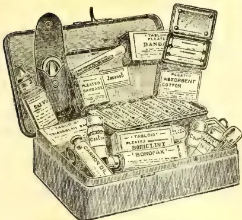
Be prepared for accidents.
Avoid the serious consequences which often follow neglect of wounds, etc.
Contains Bandages, Dressings, Antiseptics, Plasters, Emollients, Styptic, Emergency Medicines, and other first-aid requisites. Indispensable to all who travel or reside in out-of-the-way places.
No. 715. 'TABLOID' FIRST-AID. Size: in.
A very complete outfit. In enamelled metal.
Of all the principal Chemists and Stores.
Price in London, 10/6
BURROUGHS WELLCOME & CO., LONDON
NEW YORK
MONTREAL
SYDNEY
CAPE TOWN
MILAN
SHANGHAI
BUENOS AIRES
BOMBAY
xx 533
All Rights Reserved
When it has been proved that the eating of ripe fruits is a necessity for mankind in the Tropics, it seems a pity the majority of Europeans should know so little about the many varieties, and their divers uses. We naturally do lament the absence of home apple orchards with their health-giving burdens of fruit, and the wealth and profusion of luscious crops in our kitchen gardens.
One of the last noted housekeepers to leave our Colony after many years spent here was famous for the delicious guava jelly, which she made from the hard jambu fruit. There are sixteen kinds of jambu growing in the East, and some of these are in shape and colouring a most deceptive apple.
Passion Flower Fruit, so plentiful here, is a tempting dainty, and its relation in the Native States bears a fruit the size of a cucumber most valuable in jungle homes. The juice and seeds are squeezed out to be eaten, while the cook uses the rest of the fruit as a glorified vegetable marrow.
Papayas, when unripe make another good vegetable, and when ripe are remarkably whole-
some. Of the pleasing qualities of mangos—teens people here know all that is to be known even to their efficacy in removing the after-unpleasant effects of a durian feast.
A very fair imitation of gooseberry fool, and gooseberry tart, can be obtained by boiling blimblings in water and sugar. This plain little fruit is seldom used here except in curries and sambals.
Unwary visitors to the pineapple plantations, who come back with mouths smarting with blisters from eating the freshly cut fruit, would do well to always provide themselves with a tiny packet of salt; no remedy is simpler, as pineapple eaten with that is harmless.
Why more advantage is not taken by the ordinary housekeeper of the hot sun for crystallizing fruit is yet another mystery which we must discover some day.
RAMBTAN JAM.—Cut the pulp from the stone. Boil the juice of the fruit only, with a little water and the weight of the fruit in sugar, and two cloves, a small piece of cinnamon. When it has boiled, strain, and add the fruit. Then stew slowly until the juice is absorbed into the pulp, and the jam is ready.
63
498The Supplement to the Tropical AgriculturistRAMBUTAN STEW.—Boil together sugar and water, with two cloves, and a little cinnamon stick. When boiling strain, then add the rambutan whole, and stew until the pulp comes off the stone easily; serve cold.
SOUSOP FOOL OR MANGO FOOL.—Peel the fruit, then boil with a little water till very soft. Then strain through a wire sieve, add sugar, and boil slowly until the juice becomes thick. This fool can be made into a jelly, or eaten with blanc-mange.
CRYSTALLISED PUMPKIN.—Peel the skin, cut the pumpkin into strips about one inch thick. Throw away the seeds. Soak for two hours in lime water, two spoonfuls of lime in sufficient water to cover the pieces. (This preparation of lime is sold in the market to eat with betel and is called Kapur halus.) Before cooking the pumpkin wash off the lime, first with cold water, then with boiling water. Boil the weight of the pumpkin in sugar, using enough water to dissolve the sugar. Then when boiling add the pieces of pumpkin and boil for quarter-of-an-hour. Turn out into a basin and leave the whole to soak for a day and a night. After this place the pieces to crystallize in the hot sun.
BANANA TRIFLE.—Boil some ripe bananas slightly, then mash with a fork, and mix with any kind of jam. Lay the mixture in a glass dish, and pour over it a good thick custard, and over that the whipped white of an egg, adding any kind of further decoration.
BANANA FRITTERS.—Make a batter of flour, milk, and butter, add a little bicarbonate of soda. Cut the bananas in half (length-ways), dip each in the batter and fry.—S. F. Press.
In a recent circular on Bee Keeping, published by the experiment station of Porto Rico, it is stated that :
“The coffee planters particularly have become interested in the raising of bees, not for the honey but because bees are very useful in pollinating coffee in seasons when there is a great amount of rain during bloom. The pollen in the coffee is carried by the winds from flower to flower, but, if there is much rain, very little bloom is set as only the dry pollen is carried by wind; during rainy periods the bees visit the flowers and distribute the pollen in their honey gathering. Coffee plantations also afford excellent fields for bees to work in as honey is ob-
tained from the coffee shade as well as from the coffee itself.”
As it is well known that the mango fails to set fruit when heavy rains occur during the blossoming period it would be interesting to learn if the reason for this is the same as given above in the case of the coffee plant. If it is, no doubt the value of bees in a mango grove would be quite as considerable as that obtained by the coffee planters of Porto Rico.
We would like to hear from some of our readers who are keeping bees near bearing mango trees.—Cuban American, June 15.
In his annual report (dealing with the year ended June 30 last) the Acting Conservator of Forests, Western Australia, makes the following comments on wattle culture :—
“The question of wattle growing for commercial purposes is again being taken up by the Department, and about 30 acres at the Ludlow have been sown with the seed of the broad-leaved Golden Wattle. This is a species largely planted in South Australia and Victoria on account of its bark being very rich in tannin, and which has been grown with very profitable results in those States. A few experimental plantations have already been formed in this State as object lessons to the public and with a view of encouraging settlers to plant the useless portions of their holdings. Unfortunately, however, so far, although many inquiries have been made regarding the culture of this valuable tree. I do not know of any plantations having been formed by private landowners, though the value of wattles, and the fact that they will flourish on poor land, is generally recognised. This species was introduced into South Africa years ago by means of seed obtained from Australia, and its cultivation has been the means of creating an important industry there, the export of bark having grown from 39 packages, valued at £11, in 1886, to 15,819 tons in 1905 valued at £92,911, and the yield of a few years ago from between 30,000 and 40,000 acres under cultivation in Natal was valued at £100,000 per annum. To come nearer home, in Victoria, wattle is at present very profitably cultivated, and has brought as much as £5 2s. 6d. per ton for bark obtained from trees stripped between the fifth and eighth year of planting. In Europe there is an almost inexhaustible market for Australian wattle bark. It commands a higher price than other barks, and there is little prospect of increased production injuriously affecting the exports, as the
and Magazine of the Ceylon Agricultural Society.—December, 1912.499experience for years past has been that the prices have risen very considerably. Wattles will grow and thrive on very poor country, and the poorest soil can be utilised. A heavy rainfall is not required, as they will do well with 10 to 16 inches of rain per annum. In various parts of this State there is poor land where the conditions are favourable to wattle culture, and where this tree could be grown with profitable results. It grows very rapidly from seed and the cheapest way of forming plantations is by broadcast sowing, the trees being subsequently thinned from time to time. When once a plantation has been properly established there will be no difficulty in obtaining a regular crop, for as soon as the trees are stripped natural reproduction will do all that is required, and a new crop will spring up again in a short time from the seed shed by the parent tree. A successful plantation will produce five tons of bark per acre, when the trees are fit for stripping, which at, say, £5 per ton means a return of £25 per acre. — West Australian, Nov. 16.
In the Bulletin of the Department of Agriculture, Jamaica, T J Harris describes a successful method of budding mangoes. The essentials to be observed are as follows:—
“That both the stock and the tree yielding the buds be growing rapidly. That the bud wood be a little larger in diameter than the stock to insure the area on the under side of the actual bud being brought into close contact with the wood when tied in; if the bud wood be less in diameter than the stock, a hollow space will occur between these parts that should be closely applied; acting with this against success is the thinness of the bark of the younger wood and the consequent impossibility of tying in closely. That the bud be tied in tightly, especially at the points just below and above the bud proper, but yet not tight enough to crush or bruise the bark. That the piece of bark containing the bud be removed from the wood without bruising, bearing in mind that the bending will bruise or crush the cells of a plant. That the moisture be retained in the bud during the time required to join up by using tying material that will prevent evaporation, i.e., waxed tape. This is made by dipping
three-eighths in. tape into a melted mixture of 1 lb. beeswax, a piece of resin the size of a hen's egg, and half a wine-glass of raw linseed oil; scraping off the superfluous wax with a dull knife after cooling. The bud wood should be near the stock to insure no time being lost between the taking off of the bud and its insertion in the stock.
The bud wood used should be 4 to 6 seasons old and 1 to in. in diameter, and in any case larger than the stock on which it is grafted. The piece of bark containing the bud in the centre is made about in. long and three-fourths in. wide. Large seedling trees may be cut off and the sprouts arising from the stump budded. No more than three sprouts should be allowed to grow to each stump. In placing the bud on the stock care should be taken to make a space large enough so that the bud patch can be moved slightly from side to side and up and down. Union takes place under the bud and not at the sides. If the bud is still green two weeks after budding the whole of the stock above the bud may be cut off.— Cuban American, July 27.
The Indian Forest Research Institute at Dehra Dun has for some years been conducting investigations into the value for paper pulp-making purposes of the many excellent grasses to be found in India. The problem of manufacturing cheap bamboo pulp has now been thoroughly investigated. In India the work has been undertaken by Messrs Sindall and Raitt, and in Manila by Mr Richmond, of the American Bureau of Science. Mr Sindall and his predecessors in India did not arrive at very convincing results, though, as we have before pointed out, Mr Sindall's book on the subject was printed on paper made from bamboo pulp. The position, we believe, has been largely modified by the later investigations of Mr W Raitt, the Government Cellulose Expert attached to the Forest Research Institute, whose report on the subject has recently been issued as one of the “Indian Forest Records,” and which may not improbably lead to a new era not only in the Indian paper industry, but in the prospects of the world's supply of paper. Mr Raitt, in the opening paragraph of his report says:— “The results of a considerable number of trials and experiments by pulp and paper makers have also been published, but the general impres-
500The Supplement to the Tropical Agriculturistsion derived from a review of the whole is one of disappointment at the want of harmony in their conclusions. The one point on which they all are agreed is that bamboo yields excellent cellulose, but scarcely any two agree, even approximately, on the yield, which has varied from 33 to 50 per cent. on the soda consumption, which has been reported as low as 16 and as high as 40 per cent. or on the bleaching powder which has been quoted at from 9 to 40 per cent." There have also been other differences of opinion which Mr Raitt had either to harmonise or prove did not exist.
He has practically done the latter in his very interesting Report, the only portion of which that the general public is concerned with is the general conclusions that are arrived at. In this section Mr Raitt says that it is not necessary to discuss the question of suitability of bamboo fibre for the manufacture of paper. This has already been fully demonstrated by previous investigators. Every one who has handled such paper is agreed, he says, that it is admirably adapted for the purpose, and especially so for high class printing and illustration work requiring a close and even texture and surface, and a minimum of stretch and shrinkage under the damping operation. The only serious objection hitherto made to it was the cost of bleaching. With the two soda processes the cost was admittedly prohibitive, but the sulphate treatment removes this difficulty. Dealing not long ago with the same subject, on the report of an American expert, we found that he arrived at the same conclusion. The question of the suitability of bamboo pulp having been solved altogether, the question as to the cost of production for commercial purposes is then dealt with at length, and on this point again Mr Raitt's conclusions are the same as those of the American expert referred to, namely, that the pulp will have to be made in a locality at or near the source of supply. He then says:—"With the industry thus divided into pulp-making and paper-making proper, the future expansion of the latter is assured, and the extraordinary anomaly of a country teeming with raw materials and having good natural facilities for manufacturing them, and yet unable not only to supply its own demand for the manufactured article, but actually having to import partially manufactured material with which to produce the small amount that it does make, will cease." Not only will India be able to meet its own demand, but it will, possibly, be in a position to meet the demand of Europe and the Far East.—M. Mail.
H.M. Legation at La Paz have forwarded a translation of a report on the rubber industry of Bolivia by the Argentine Chargé d'Affaires in Bolivia from which the following is taken:—
In spite of the lack of means of communication necessary for the proper development of the rubber industry, in has nevertheless made considerable progress during recent years. Rubber is produced in three principal regions, viz., the Colonial Territory of the North East, the Department of La Paz, and the northern and eastern part of Santa Cruz de la Sierra.
In the Colonial Territory, on both sides of the Lower Beni, there are 26 hectares (65 acres) in exploitation, with an annual production of 22,000 arrobas (557,920 lb.—sic!). In the Upper Bens and Madre de Dios regions there are 9 stations which produce an average of 13,000 arroba (329,680 lb.) Beside these, numerous concessions, and even establishments, exist, the exact statistics of which cannot be obtained.
In the Department of La Paz, rubber is found principally in the Province of Larecaja, Muñecas and Caupolicán. Here the dominant species are "Hevea Brasiliensis" (Siphonia elastica), and "Manigoba." The latter exists in great abundance in a wild state in the Yungas, and develops with prodigious rapidity, growing 4 to 6 metres (16 ft. to 19½ ft.) in six months, and reaching in three years a diameter of 15 centimetres (about 6 inches), which is sufficient to permit the extraction of the rubber. The industrial centre of this region is the town of Sorata, capital of the Province of Larecaja.
hinders the making of plantations on a large scale, which, according to the results obtained in several trials, would increase the production considerably since up to the present the rubber has only been obtained from natural forests.
In the Department of the Santa Cruz, the extent of rubber-bearing land is calculated at 35,000 hectares (about 87,000 acres). The annual production amounts to 120,000 kilos. (264,500 lb.). In this region the predominant species is the "Siphonia elastica." The species known as "Peloto" also abounds, but the product is inferior. The species which are found in Cochabamba are not so good as those mentioned above. Moreover, the natural difficulties and the lack of labour there have discouraged almost all those who had applied for concessions in that region.
and Magazine of the Ceylon Agricultural Society.—December, 1912. 501The conformation of the country and the lack of means of communication render difficult, and in some regions impossible, the production of rubber to a degree proportionate to the wealth of Bolivia in this article. Furthermore, the scarcity of labour is almost absolute.
The region of Bolivia which is richest in rubber has, too, a formidable rival in Brazil. The deficiency of Custom Houses and frontier guards, and the difficulty of other communications, cause a large quantity of Bolivian rubber to be exported as Brazilian.
The Bolivian product is not distinguished in the European and New York markets, being included with that of Peru and Brazil, and classified as "Pará" and "Mollendo." Nevertheless, in the immense zone bounded by the rivers Abuná, Madre de Dios, Upper and Lower Beni on the one side, and by the Iténez and the Mamoré on the other, there are superb forests of "hevea" of well-known quality and abundance.
The quantity of rubber exported from Bolivia in 1910 amounted to 3,117,650 kilogs. (9,873,171 lb.), valued at £2,212,284.—Board of Trade Journal, November 28.
We have received from the Department of Agriculture, Bulletin No. 2, treating with experiments in Coconuts at Peradeniya by Mr. Kelway Bamber,—and undertaken at the initiative of Mr. J. D. VanDerstraaten, of Negombo. Mr. VanDerstraaten's suggestion, made at a meeting of the Committee of Agricultural Experiments in November 11, 1909, was that coconut trees be scientifically investigated as regards planting distances, habit of flowering and maturing nuts, and the time occupied during the various stages. It was decided to begin the manuring and other experiments in 1911, and the manures were first applied in February of that year. The trees, which were irregularly planted, were divided into lots of 35, or the equivalent of half an acre, making 15 plots in all. The trees on each plot were marked according to the number of the plot, viz., 1 to 15. They are all old, probably over fifty years, but would represent a fairly large acreage of similar coconut trees in Ceylon, so it is felt that any results obtained from the experiments would afford generally useful information. As separate experiments with young trees are necessary for the elucidation of certain other factors, these have been started both at Peradeniya at 1,600 feet elevation and at Maha-Illup-
palama at 300 feet elevation, both about 50 miles from the sea; while it is also proposed to begin a further series in the different coconut districts of Ceylon. The objects of the experiments are to determine—
(1) Whether trees of about fifty years of age would respond profitably to cultivation and manuring.
(2) The best form of cultivation to be given.
(3) The effect of common salt, lime, potash, phosphoric acid, and nitrogen on leaf and fruit development.
(4) The effect of a complete artificial mixture.
(5) The effect of cattle manure from cattle tied round the trees in the native manner.
(6) The effect of a bi-monthly application of a rapidly available manure.
(7) The effect of green manures and mulching. The following details are being recorded:—
(a) Dates of cultivation and manure applications with the cost of labour and manure.
(b) Dates of appearance of new leaves and flowering stalks and when the fruit-sets and ripens.
(c) The number of immature nuts dropped monthly, and the number of sound nuts dropped and gathered every three months.
(d) The weight of nuts from each plot after husking.
All the nuts from each plot are kept separate for one month before husking; then opened, and the weight of the shelled nuts, fresh and dried, noted; also the thickness of the meat. Half of the dried copra is sold every two months, and the other half pressed for oil and poonac, the weights and value of each being recorded. After the first period, when the ratio was the same as on the unmanured plots, the mulched plots continue to show a higher proportion of mature to immature nuts. The manured plots show a slightly improved ratio, while the unmanured plots have gone back to 3.96 immature for every mature nut. Taking the yields of ripe nuts only for each period over the manured, unmanured, and mulched plots, there is a marked improvement in the manured and mulched plots, while the unmanured have fallen off. The average number of mature and immature nuts per tree from all the plots for the first five months of the experiment was 6.76 and 15.8 nuts respectively; for the second period, embracing the wettest months, 21 and 16.8 nuts; and for third period of six months in 1912, including the dry period, 11.3 and 20.4 nuts. This is
502The Supplement to the Tropical Agriculturistequivalent for the year July, 1911, to June, 1912, to 32.3 good nuts per tree or 2,261 nuts per acre, which gave less than one candy of copra. The number of immature nuts averaged for the same period 37.2 nuts per tree, or 2,604 nuts per acre, and it is expected that the effects of cultivation will be to reduce this number of immature nuts and so increase the yield per acre. The appearance of new leaves and flowers we are told is very irregular, but generally at much shorter intervals in the latter half or wetter season of the year than in the first half. The average periods for the appearance of the leaves and flowers from January to June and July to December was 25 and 25 days and 20 and 28 days respectively, but there is a wide range of from 7 to 61 days, so that at present no conclusions can be drawn. The nuts were stored for one month after collection, and then husked and weighed. A certain number from each plot were then taken, the nuts broken, weighed and made into copra, which was also weighed. The milk was calculated from the difference between the weight of the husked and broken nuts. The weight of shells was calculated from the average weight of 1,000 shells of 273 lb., it being impossible to estimate directly, the copra being dried for twenty-four hours before the shelling could take place.
We have pointed out more than once that Peradeniya is the wrong place for experiments with coconut and are doubly gratified over the decision to transfer the field of operations to Chilaw, the richest coconut district in the island. Local coconut planters have been too long content to let well alone with the result that there is danger of Ceylon copra being altogether discredited in the London market. It may be, as our correspondent "B" points out in his interesting communication today, that Ceylon white copra is sold in the London market as Cochin but there is the evidence of Mr. N. J. Martin to prove that very inferior stuff is also exported from Ceylon. There has also been a marked deterioration of late in the quality of oil exported and if Ceylon coconut planters want to conserve the good name of the island in these respects and look after their own substantial interests at the same time they will have to take immediate action to prevent the export of inferior copra and oil. The number and variety of the points on which the meeting of coconut planters on Monday agreed to take action indicates how neglectful they have been in the past in regard to an industry which, on the authority of the Director of Agriculture, is the greatest planting industry in Ceylon.
Among the papers read before the late Eighth International Congress of Applied Chemistry, held recently in New York, was one by K Sawamura, of the College of Agriculture, University of Tokio, in which he reported on an investigation on tea manufacture.
Why, in the manufacture of green tea, is it important to steam the leaves for a short time only? The answer was found to be that a short steaming was necessary to destroy an enzyme which, if left alone, would attack the coloring matter, and hence render it impossible to produce a green tea; but the steaming period must be short, to avoid killing other enzymes which produce the fine flavor. This is another example of how men learn to do things long before the physiological chemist comes along with the reason why.
"What is the object of rolling the tea leaves in the manufacture of green tea?" was another question tackled by the Japanese scientist. Some have thought that rolling was merely to give the leaves a characteristic form and appearance. Others thought that rolling served to press out the juice so as to accelerate the drying, and still others thought it was necessary to break up the cells and so promote the solubility in the cup. To settle the matter, Prof. Sawamura made a number of experiments which showed that the chief effect of rolling was to increase the solubility of the tea leaves, and also that rolling, by pressing out the juice, hastened the drying.
The effect of refiring was also studied. Green tea is improved by refiring at 70 degrees C for one hour, but temperatures above 70 degrees C spoil both color and flavour. The best temperature for firing black tea was found to be 80 degrees C. Here, again, an excess of heat was found to be deleterious. Refiring decreases the amount of both tannin and theine.—Tea and Coffee Trade Journal, for Nov.
The Board of Trade are informed, through the Foreign Office, that a circular has recently been issued by the Customs Department at Helsingfors, permitting the duty-free importation into Finland (under No. 69 of the Customs Tariff) of copra, being parts of coconut kernels, not prepared or mixed with other materials. The circular defines copra, out of which oil is pressed, as "the pulpy portion of coconut kernels cut up into pieces and dried."—Board of Trade Journal, Nov. 28,
and Magazine of the Ceylon Agricultural Society.—December, 1912.
503
The managers of estates producing large crops are now much concerned in the drying problem. The difficulties on many properties are enhanced on account of the fact that most factory buildings are on too small a scale, and there is very little apparatus available to expedite the drying process. There are many well-known objections to the use of high temperatures in rubber drying, but it must not be forgotten that there are also very serious objections from the planter's point of view against too slow drying. Recently we have been told that the disadvantages of high temperatures have been somewhat over-rated; certainly we can agree that much rubber prepared under comparatively high temperatures has realised top prices, especially when presented in the form of thick, even-coloured, blanked crepe. There is undoubtedly conspicuous activity on the part of engineering firms in Colombo and elsewhere in the manufacture of artificial driers to deal with annual crops of 150,000 lb and upwards; we anticipate that engineering firms in this country will soon enter the field, and take a hand in the inevitable competition. Many driers are already in use, and have been proved satisfactory; others have been reported as too expensive to work with liquid fuel. All driers of the type indicated should be constructed to consume firewood, coal or liquid fuel, at the lowest possible cost.—India-Rubber Journal, Nov. 9.
Wellawatta, December 16th.
DEAR SIR,—While at an upcountry station the plants of the "Oxalis Violacea" used to grow rather luxuriantly in my flower garden. I found them really doing no harm to the harder flower plants, but they choked up those of a smaller growth. They were eventually got rid of by forking them up, tubers and all, collecting them into some receptacle, drying and burning them. They should not be left lying about on the ground after being dug up.
On estates they are generally heaped up on different spots before being finally disposed of with the result that poultry or birds in search of insect food scatter them about, and the first shower of rain washes them far and wide. On a wet day, and on clayey soil, the feet of the coolies, to some extent, act as carriers—particularly of the seeds. Last, but not least, when being transported in baskets to be buried or burned, the earth containing seeds and tubers
drop all along the way from overfilled baskets, or escape through the opening in the baskets.
The plants do seed, and I daresay rather freely in some elevations. But comparatively speaking—that is, in comparison with the seedling propensities of planting pests—I should say not prolifically.
I should also hardly call the "Oxalis Violacea" a pest, as with a little ordinary care, and if dug up before it flowers, it could be easily eradicated, and the plant itself is rather a delicate than a hardy one.—Yours faithfully,
G. EUS. P.
Human endeavour (says a writer in "Chambers Journal") carries industry and commerce to strange corners of the world, and has been responsible for the establishment of industries in the extreme habitable limits of the globe. In the northern hemisphere a small community ekes out an existence on Greenland's icy, inhospitable shores mining a special earth which is shipped exclusively to the United States. The ships making for this inaccessible port experience adventures innumerable, as they start northwards in the early spring, and have to battle with fogs and icebergs every mile of the way. In the southern hemisphere, some 700 miles distant from Tasmania's coast, is the small islet known as Macquarie Island, which has received much attention because Antarctic expeditions, as a rule, make a point of calling at this lonely spot. The island is 22 miles in length by 5 miles in width, and is extremely rugged, yet it has become the centre of a growing trade. For centuries it has been the home of immense numbers of penguins; in fact, it is computed that there are some 80,000,000 of this genus on the island. An enterprising individual saw a chance to make money, and he leased the island from the Tasmanian Government and established a factory there for the extraction of penguin oil. The birds are killed and boiled down in huge tanks in batches of 800, and the oil barrelled and shipped to the Australian mainland, to be used in the manufacture of binder-twine. There is only one serious difficulty in the development of this industry. Macquarie Island does not possess a sheltered cove or bay where a depth of water will permit even the smallest ship to approach very close to the shore. As a result the vessels moor about half-a-mile off, and the produce has to be transported to them on rafts. Evidently the traffic is remunerative, as several ships in their efforts to secure a full cargo have come to grief in trying to reach the island.
504The Supplement to the Tropical AgriculturistA new process for the preservation of fish is now being demonstrated by the Henderson Fish Preserving Company at 57b, Leadenhall Market, E.C. The fresh fish are first placed in a cool chamber and then for three or four hours in sea water to which about 15 per cent. of salt has been added. In the preliminary cooling the temperature of the chamber is reduced gradually to 32 deg. F., while that of the brine tank used in the demonstration plant was about 14 deg. F. It is claimed that the brine treatment destroys or renders innocuous the germs of putrefaction in the fish, and that it removes the gases which assist decomposition. Samples of fish thus preserved have been sent to various restaurants and clubs, with the result, it is stated, that although the fish have been several days old when cooked and served, no evidence of the fact was discernible. The method is stated to be particularly suitable for use in the transport of fish during hot weather to inland towns without ice or refrigeration. The cost of the treatment is said to be about 3s to 6s per ton of fish. It is proposed to equip a trawler with the plant in order to demonstrate the value of the process in the various fishing ports, and afterwards to erect and equip some installations on land in the ports themselves.—London Times, Nov. 29.
In Bombay we hear little of attempts to improve the fish supply, but in Calcutta and in the Madras Presidency, there appears—perhaps, on account of necessity—to be more enterprise. Everyone must have heard, for instance, of the trout fishing in the Nilgiris. Sir Frederick Nicholson, in the Madras Agricultural Report, writes that the
had so developed by 1911 that the waters were thrown open to licensed anglers, and many fish were caught, the largest of which weighed 5½ lb; the head of fish is very large. The upper waters of the Bhavani and Moyar continued to be conserved against illegal practices, such as dynamiting, poisoning, etc., with the result that there is a marked improvement in the visible quantity of fish. As for marine fish farms, an experimental oyster farm at Pulicat was started late in 1910-1911, and is now holding many thousands of good oysters, mature though not exceeding 20 months in age. During the year
MR. HORNELL
examined and favourably reported on various sites suitable for ordinary marine fish farming in the lagoons and back-waters; a site containing an area of about 160 acres was finally selected at Tuticorin and has since been sanctioned by Government. This site has the advantage of accessibility and of continual supervision by the fisheries staff as well as of proximity to a large market; it is intended to examine the possibilities of breeding some of our best salt water fish in comparative activity and of studying the bionomics of as many food fish as possible as well as of the chank and pearl oyster. A scheme for the creation of a breeding reserve of pearl oysters on the Tinnevelly coast, and for inducing the growth of pearls, was also prepared and sanctioned.—Times of India.
Lahore, Dec. 12.—The Civil and Military Gazette publishes particulars of experiments carried out in the Punjab with a view to preventing water logging from canal irrigation. Experiments were made with tube wells near Amritsar, with a view to obtaining one which could be used to draw water from the soil in large quantities, yet without drawing sand. It was found that woven wire mesh while acting well at first, gradually became choked with sand. A novel form of strainer tube was then invented by Mr. Ashford, which was formed by winding wire round a skeleton tube in such a manner that narrow slits were left between the wires, the slits being sufficiently fine to prevent the passage of sand. The idea was copied from the method of manufacturing wire-wound guns. A strainer tube well of this type was sunk near Amritsar and connected with an electric centrifugal pump and a long series of experiments carried out with great success. It now appears that the way is open to apply such tube wells, to the work of unwatering water logged lands and also for irrigation purposes, where canal irrigation is not possible.
Dr. Sasaki, Professor of the Agricultural College of Tokyo University, has been experimenting with red camphor oil (one of the by-products of camphor), and finds that it is an effective remedy against wood-eating insects and white ants.—Chemist and Druggist, Nov. 30.
This image is a scan of a blank page. The paper has a light beige or cream-colored tint. There are a few very small, dark specks scattered across the surface, which appear to be scanning artifacts or dust particles. No text, lines, or other markings are present on the page. This image is a scan of a blank page. The paper has a light beige or cream-colored tint. There are a few very small, dark specks scattered across the surface, which appear to be scanning artifacts or dust particles. No text, lines, or other markings are present on the page. The image shows a dark gray, textured surface with a fine, uniform weave pattern, characteristic of bookbinding cloth or endpaper. The texture is consistent across the entire frame, with no visible text, markings, or other features.